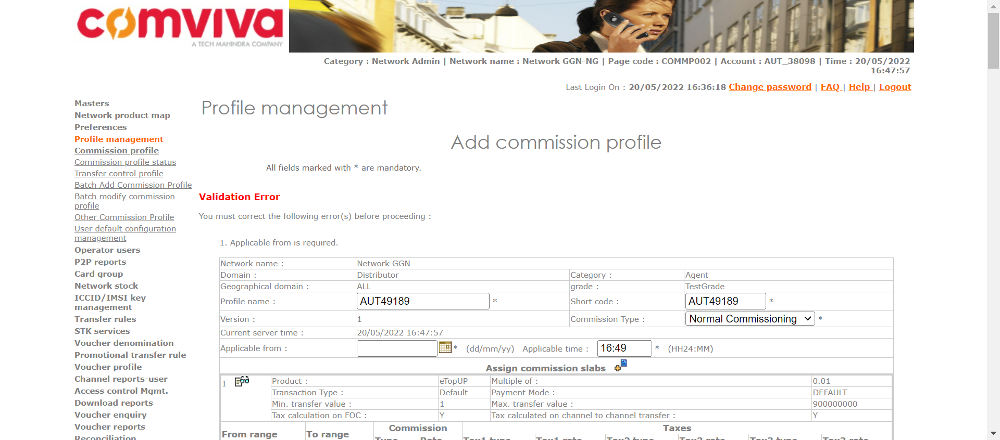

Tests
44 test(s) passed
5 test(s) failed, 15 others
Steps
2 step(s) passed
10 step(s) failed, 10,820 others
Tests
-
[Pre-Requisite]Division Management May 20, 2022 03:58:35 PM passMay 20, 2022 03:58:35 PM May 20, 2022 03:58:52 PM 0h 0m 16s+960ms
-
PDIVMGMT1: To verify that superadmin is able to add division in the system.May 20, 2022 03:58:35 PM 0h 0m 7s+486ms passPre-Requisite
Status Timestamp Details info_outline 3:58:35 PM Entered divisionManagement() info_outline 3:58:35 PM Trying to get User with Access: DIVISIONMGMT low_priority 3:58:35 PM java.lang.NullPointerException at com.utils.ExcelUtility.getCellData(ExcelUtility.java:311) at com.classes.UserAccess.getUserWithAccess(UserAccess.java:63) at com.Features.DivisionDeptManagment.divisionManagement(DivisionDeptManagment.java:79) at com.testscripts.prerequisites.PreRequisite_DivisionManagment.Test_AddDivisionDepartment(PreRequisite_DivisionManagment.java:27) at sun.reflect.NativeMethodAccessorImpl.invoke0(Native Method) at sun.reflect.NativeMethodAccessorImpl.invoke(Unknown Source) at sun.reflect.DelegatingMethodAccessorImpl.invoke(Unknown Source) at java.lang.reflect.Method.invoke(Unknown Source) at org.testng.internal.MethodInvocationHelper.invokeMethod(MethodInvocationHelper.java:124) at org.testng.internal.Invoker.invokeMethod(Invoker.java:580) at org.testng.internal.Invoker.invokeTestMethod(Invoker.java:716) at org.testng.internal.Invoker.invokeTestMethods(Invoker.java:988) at org.testng.internal.TestMethodWorker.invokeTestMethods(TestMethodWorker.java:125) at org.testng.internal.TestMethodWorker.run(TestMethodWorker.java:109) at org.testng.TestRunner.privateRun(TestRunner.java:648) at org.testng.TestRunner.run(TestRunner.java:505) at org.testng.SuiteRunner.runTest(SuiteRunner.java:455) at org.testng.SuiteRunner.runSequentially(SuiteRunner.java:450) at org.testng.SuiteRunner.privateRun(SuiteRunner.java:415) at org.testng.SuiteRunner.run(SuiteRunner.java:364) at org.testng.SuiteRunnerWorker.runSuite(SuiteRunnerWorker.java:52) at org.testng.SuiteRunnerWorker.run(SuiteRunnerWorker.java:84) at org.testng.TestNG.runSuitesSequentially(TestNG.java:1208) at org.testng.TestNG.runSuitesLocally(TestNG.java:1137) at org.testng.TestNG.runSuites(TestNG.java:1049) at org.testng.TestNG.run(TestNG.java:1017) at org.testng.remote.AbstractRemoteTestNG.run(AbstractRemoteTestNG.java:115) at org.testng.remote.RemoteTestNG.initAndRun(RemoteTestNG.java:251) at org.testng.remote.RemoteTestNG.main(RemoteTestNG.java:77)
low_priority 3:58:35 PM java.lang.NullPointerException at com.utils.ExcelUtility.getCellData(ExcelUtility.java:311) at com.classes.UserAccess.getUserWithAccess(UserAccess.java:64) at com.Features.DivisionDeptManagment.divisionManagement(DivisionDeptManagment.java:79) at com.testscripts.prerequisites.PreRequisite_DivisionManagment.Test_AddDivisionDepartment(PreRequisite_DivisionManagment.java:27) at sun.reflect.NativeMethodAccessorImpl.invoke0(Native Method) at sun.reflect.NativeMethodAccessorImpl.invoke(Unknown Source) at sun.reflect.DelegatingMethodAccessorImpl.invoke(Unknown Source) at java.lang.reflect.Method.invoke(Unknown Source) at org.testng.internal.MethodInvocationHelper.invokeMethod(MethodInvocationHelper.java:124) at org.testng.internal.Invoker.invokeMethod(Invoker.java:580) at org.testng.internal.Invoker.invokeTestMethod(Invoker.java:716) at org.testng.internal.Invoker.invokeTestMethods(Invoker.java:988) at org.testng.internal.TestMethodWorker.invokeTestMethods(TestMethodWorker.java:125) at org.testng.internal.TestMethodWorker.run(TestMethodWorker.java:109) at org.testng.TestRunner.privateRun(TestRunner.java:648) at org.testng.TestRunner.run(TestRunner.java:505) at org.testng.SuiteRunner.runTest(SuiteRunner.java:455) at org.testng.SuiteRunner.runSequentially(SuiteRunner.java:450) at org.testng.SuiteRunner.privateRun(SuiteRunner.java:415) at org.testng.SuiteRunner.run(SuiteRunner.java:364) at org.testng.SuiteRunnerWorker.runSuite(SuiteRunnerWorker.java:52) at org.testng.SuiteRunnerWorker.run(SuiteRunnerWorker.java:84) at org.testng.TestNG.runSuitesSequentially(TestNG.java:1208) at org.testng.TestNG.runSuitesLocally(TestNG.java:1137) at org.testng.TestNG.runSuites(TestNG.java:1049) at org.testng.TestNG.run(TestNG.java:1017) at org.testng.remote.AbstractRemoteTestNG.run(AbstractRemoteTestNG.java:115) at org.testng.remote.RemoteTestNG.initAndRun(RemoteTestNG.java:251) at org.testng.remote.RemoteTestNG.main(RemoteTestNG.java:77)
info_outline 3:58:35 PM Entered :: getUserNameByLogin() info_outline 3:58:35 PM select USER_NAME from users where LOGIN_ID = 'superadmin' info_outline 3:58:35 PM Query Repository Returns: USER_NAME (Super Admin) info_outline 3:58:35 PM UserAccess Returns: PARENT_NAME(Super Admin) | CATEGORY_NAME(Super Admin) | USER_NAME(Super Admin) | LOGIN_ID(superadmin) | PASSWORD(1357) info_outline 3:58:35 PM Trying to select Language info_outline 3:58:35 PM Language selected successfully as: English info_outline 3:58:35 PM Trying to enter Login ID info_outline 3:58:36 PM Login ID entered successfully as: superadmin info_outline 3:58:36 PM Trying to enter Password info_outline 3:58:36 PM Password entered successfully as: 1357 info_outline 3:58:36 PM Trying to click Submit Button info_outline 3:58:37 PM Submit button clicked successfully info_outline 3:58:37 PM Trying to click Relogin Button info_outline 3:58:37 PM Relogin Button Not Found info_outline 3:58:37 PM Multiple Networks page exists: true info_outline 3:58:38 PM Trying to click Masters link info_outline 3:58:38 PM Master Link clicked successfully info_outline 3:58:38 PM Trying to click Division Management link info_outline 3:58:39 PM Division Management link clicked successfully info_outline 3:58:39 PM Trying to click Add Button info_outline 3:58:40 PM Add Button clicked successfully info_outline 3:58:40 PM Trying to select Division Type info_outline 3:58:40 PM Division Type selected as OPERATOR info_outline 3:58:40 PM Trying to enter Division Name info_outline 3:58:40 PM Division Name entered as: AUTDIV85065 info_outline 3:58:40 PM Trying to enter Division Short Code info_outline 3:58:40 PM Division Short Code entered as: AUTDIV85065 info_outline 3:58:40 PM Trying to select Status info_outline 3:58:40 PM Status selected successfully info_outline 3:58:40 PM Trying to click Submit Button info_outline 3:58:41 PM Submit Button clicked successfully info_outline 3:58:41 PM Trying to click Confirm Button info_outline 3:58:42 PM Confirm Button clicked successfully info_outline 3:58:42 PM Trying to fetch Success Message info_outline 3:58:42 PM Success Message Returned: Divison added successfully info_outline 3:58:42 PM Exited divisionManagement() -
PDIVMGMT2: To verify that superadmin is able to add department in the system.May 20, 2022 03:58:42 PM 0h 0m 9s+422ms passPre-Requisite
Status Timestamp Details info_outline 3:58:42 PM Entered departmentManagement() info_outline 3:58:42 PM Trying to get User with Access: DIVISIONMGMT low_priority 3:58:42 PM java.lang.NullPointerException at com.utils.ExcelUtility.getCellData(ExcelUtility.java:311) at com.classes.UserAccess.getUserWithAccess(UserAccess.java:63) at com.Features.DivisionDeptManagment.departmentManagement(DivisionDeptManagment.java:159) at com.testscripts.prerequisites.PreRequisite_DivisionManagment.Test_AddDivisionDepartment(PreRequisite_DivisionManagment.java:31) at sun.reflect.NativeMethodAccessorImpl.invoke0(Native Method) at sun.reflect.NativeMethodAccessorImpl.invoke(Unknown Source) at sun.reflect.DelegatingMethodAccessorImpl.invoke(Unknown Source) at java.lang.reflect.Method.invoke(Unknown Source) at org.testng.internal.MethodInvocationHelper.invokeMethod(MethodInvocationHelper.java:124) at org.testng.internal.Invoker.invokeMethod(Invoker.java:580) at org.testng.internal.Invoker.invokeTestMethod(Invoker.java:716) at org.testng.internal.Invoker.invokeTestMethods(Invoker.java:988) at org.testng.internal.TestMethodWorker.invokeTestMethods(TestMethodWorker.java:125) at org.testng.internal.TestMethodWorker.run(TestMethodWorker.java:109) at org.testng.TestRunner.privateRun(TestRunner.java:648) at org.testng.TestRunner.run(TestRunner.java:505) at org.testng.SuiteRunner.runTest(SuiteRunner.java:455) at org.testng.SuiteRunner.runSequentially(SuiteRunner.java:450) at org.testng.SuiteRunner.privateRun(SuiteRunner.java:415) at org.testng.SuiteRunner.run(SuiteRunner.java:364) at org.testng.SuiteRunnerWorker.runSuite(SuiteRunnerWorker.java:52) at org.testng.SuiteRunnerWorker.run(SuiteRunnerWorker.java:84) at org.testng.TestNG.runSuitesSequentially(TestNG.java:1208) at org.testng.TestNG.runSuitesLocally(TestNG.java:1137) at org.testng.TestNG.runSuites(TestNG.java:1049) at org.testng.TestNG.run(TestNG.java:1017) at org.testng.remote.AbstractRemoteTestNG.run(AbstractRemoteTestNG.java:115) at org.testng.remote.RemoteTestNG.initAndRun(RemoteTestNG.java:251) at org.testng.remote.RemoteTestNG.main(RemoteTestNG.java:77)
low_priority 3:58:42 PM java.lang.NullPointerException at com.utils.ExcelUtility.getCellData(ExcelUtility.java:311) at com.classes.UserAccess.getUserWithAccess(UserAccess.java:64) at com.Features.DivisionDeptManagment.departmentManagement(DivisionDeptManagment.java:159) at com.testscripts.prerequisites.PreRequisite_DivisionManagment.Test_AddDivisionDepartment(PreRequisite_DivisionManagment.java:31) at sun.reflect.NativeMethodAccessorImpl.invoke0(Native Method) at sun.reflect.NativeMethodAccessorImpl.invoke(Unknown Source) at sun.reflect.DelegatingMethodAccessorImpl.invoke(Unknown Source) at java.lang.reflect.Method.invoke(Unknown Source) at org.testng.internal.MethodInvocationHelper.invokeMethod(MethodInvocationHelper.java:124) at org.testng.internal.Invoker.invokeMethod(Invoker.java:580) at org.testng.internal.Invoker.invokeTestMethod(Invoker.java:716) at org.testng.internal.Invoker.invokeTestMethods(Invoker.java:988) at org.testng.internal.TestMethodWorker.invokeTestMethods(TestMethodWorker.java:125) at org.testng.internal.TestMethodWorker.run(TestMethodWorker.java:109) at org.testng.TestRunner.privateRun(TestRunner.java:648) at org.testng.TestRunner.run(TestRunner.java:505) at org.testng.SuiteRunner.runTest(SuiteRunner.java:455) at org.testng.SuiteRunner.runSequentially(SuiteRunner.java:450) at org.testng.SuiteRunner.privateRun(SuiteRunner.java:415) at org.testng.SuiteRunner.run(SuiteRunner.java:364) at org.testng.SuiteRunnerWorker.runSuite(SuiteRunnerWorker.java:52) at org.testng.SuiteRunnerWorker.run(SuiteRunnerWorker.java:84) at org.testng.TestNG.runSuitesSequentially(TestNG.java:1208) at org.testng.TestNG.runSuitesLocally(TestNG.java:1137) at org.testng.TestNG.runSuites(TestNG.java:1049) at org.testng.TestNG.run(TestNG.java:1017) at org.testng.remote.AbstractRemoteTestNG.run(AbstractRemoteTestNG.java:115) at org.testng.remote.RemoteTestNG.initAndRun(RemoteTestNG.java:251) at org.testng.remote.RemoteTestNG.main(RemoteTestNG.java:77)
info_outline 3:58:42 PM Entered :: getUserNameByLogin() info_outline 3:58:43 PM select USER_NAME from users where LOGIN_ID = 'superadmin' info_outline 3:58:43 PM Query Repository Returns: USER_NAME (Super Admin) info_outline 3:58:43 PM UserAccess Returns: PARENT_NAME(Super Admin) | CATEGORY_NAME(Super Admin) | USER_NAME(Super Admin) | LOGIN_ID(superadmin) | PASSWORD(1357) info_outline 3:58:43 PM Trying to select Language info_outline 3:58:43 PM Language selected successfully as: English info_outline 3:58:43 PM Trying to enter Login ID info_outline 3:58:44 PM Login ID entered successfully as: superadmin info_outline 3:58:44 PM Trying to enter Password info_outline 3:58:44 PM Password entered successfully as: 1357 info_outline 3:58:44 PM Trying to click Submit Button info_outline 3:58:45 PM Submit button clicked successfully info_outline 3:58:45 PM Trying to click Relogin Button info_outline 3:58:45 PM Relogin Button Not Found info_outline 3:58:45 PM Multiple Networks page exists: true info_outline 3:58:46 PM Trying to click Masters link info_outline 3:58:46 PM Master Link clicked successfully info_outline 3:58:46 PM Trying to click Department Managament link info_outline 3:58:47 PM Department management link clicked successfully info_outline 3:58:47 PM Trying to select Division Type info_outline 3:58:47 PM Division Type OPERATOR selected successfully info_outline 3:58:47 PM Trying to select Division info_outline 3:58:48 PM Division selected as: AUTDIV85065 info_outline 3:58:48 PM Trying to click Submit Button info_outline 3:58:49 PM Submit Button clicked successfully info_outline 3:58:49 PM Trying to click Add Button info_outline 3:58:50 PM Add Button clicked successfully info_outline 3:58:50 PM Trying to enter Department Name info_outline 3:58:50 PM Department name entered as: AUTDEPT248796 info_outline 3:58:50 PM Trying to enter Department Short Code info_outline 3:58:50 PM Department Short Code entered as: AUT4947 info_outline 3:58:50 PM Trying to click Submit Button info_outline 3:58:51 PM Submit Button clicked successfully info_outline 3:58:51 PM Trying to click Confirm Button info_outline 3:58:52 PM Confirm Button clicked successfully info_outline 3:58:52 PM Trying to fetch Success Message info_outline 3:58:52 PM Success Message Returned: Department added successfully info_outline 3:58:52 PM Exited departmentManagement()
-
-
[Pre-Requisite]Network Admin Creation May 20, 2022 03:58:57 PM passMay 20, 2022 03:58:57 PM May 20, 2022 04:00:02 PM 0h 1m 5s+374ms
-
PNETWORKADMINCREATION1: To verify Super Admin is able to initiate Network AdminMay 20, 2022 03:58:57 PM 0h 0m 52s+777ms passPre-Requisite
Status Timestamp Details info_outline 3:58:57 PM Entered operatorUserInitiate(Super Admin, Network Admin) info_outline 3:58:57 PM Login ID Found as: superadmin info_outline 3:58:57 PM Password Found as: 1357 info_outline 3:58:57 PM Trying to select Language info_outline 3:58:57 PM Language selected successfully as: English info_outline 3:58:57 PM Trying to enter Login ID info_outline 3:58:57 PM Login ID entered successfully as: superadmin info_outline 3:58:57 PM Trying to enter Password info_outline 3:58:57 PM Password entered successfully as: 1357 info_outline 3:58:57 PM Trying to click Submit Button info_outline 3:58:59 PM Submit button clicked successfully info_outline 3:58:59 PM Trying to click Relogin Button info_outline 3:58:59 PM Relogin Button Not Found info_outline 3:58:59 PM Multiple Networks page exists: true info_outline 3:59:00 PM User clicked Operator Users. info_outline 3:59:00 PM Trying to click add Operator User Link info_outline 3:59:01 PM Add Operator User link clicked successfully info_outline 3:59:01 PM Trying to select Category info_outline 3:59:01 PM Category selected successfully info_outline 3:59:01 PM Trying to click Submit Button info_outline 3:59:02 PM Submit Button clicked successfully info_outline 3:59:02 PM Trying to enter First Name info_outline 3:59:02 PM First Name entered as: AUTFN6891 info_outline 3:59:02 PM Trying to enter Last Name info_outline 3:59:02 PM Last Name entered as: AUTLN3255 info_outline 3:59:02 PM Trying to enter User Name info_outline 3:59:02 PM User Name field not found info_outline 3:59:02 PM Trying to enter Short Name info_outline 3:59:02 PM Short Name entered as: AUTSN0755 info_outline 3:59:02 PM Trying to select User Name Prefix info_outline 3:59:02 PM User Name prefix selected successfully info_outline 3:59:02 PM Trying to enter Subscriber Code info_outline 3:59:02 PM Subscriber Code entered as: 467806 info_outline 3:59:02 PM Trying to select Status info_outline 3:59:02 PM Status drop down not found info_outline 3:59:02 PM GenerateMSISDN class Returns: Remaining MSISDNLength (13) info_outline 3:59:02 PM The generated MSISDN is ::722643794440871 info_outline 3:59:02 PM Entered :: checkForUniqueMSISDN() info_outline 3:59:02 PM Query Repository Returns: MSISDNStatus (N) info_outline 3:59:02 PM The generated External Code is ::125407546 info_outline 3:59:02 PM Entered :: checkForUniqueEXTCODE() info_outline 3:59:02 PM Query Repository Returns: ExternalCodeStatus (N) info_outline 3:59:02 PM Trying to enter External Code info_outline 3:59:03 PM External Code entered as: 125407546 info_outline 3:59:03 PM Trying to enter MobileNumber info_outline 3:59:03 PM Mobile Number entered as: 722643794440871 info_outline 3:59:03 PM Trying to enter Contact Number info_outline 3:59:03 PM Contact No. entered as: 467930 info_outline 3:59:03 PM Trying to select Division info_outline 3:59:03 PM Division selected as: AUTDIV85065 info_outline 3:59:03 PM Trying to select Department info_outline 3:59:03 PM Department selected as: AUTDEPT248796 info_outline 3:59:03 PM Trying to enter Address1 info_outline 3:59:03 PM Address1 entered as: Add16319 info_outline 3:59:03 PM Trying to enter Address2 info_outline 3:59:03 PM Address2 entered as: Add26741 info_outline 3:59:03 PM Trying to enter City info_outline 3:59:03 PM City entered as: City7628 info_outline 3:59:03 PM Trying to enter State info_outline 3:59:03 PM State entered as: State8348 info_outline 3:59:03 PM Trying to enter Country info_outline 3:59:03 PM Country entered as: Country06 info_outline 3:59:03 PM Trying to enter Email ID info_outline 3:59:04 PM Email ID entered as: ci4d8@mail.com info_outline 3:59:04 PM The generated Login ID is ::AUT_38098 info_outline 3:59:04 PM Entered :: checkForUniqueLoginID() info_outline 3:59:04 PM Query Repository Returns: LoginIDStatus (N) info_outline 3:59:04 PM Trying to enter Login ID info_outline 3:59:04 PM Login ID entered as: AUT_38098 info_outline 3:59:04 PM Trying to check if Assign Geographies link exist info_outline 3:59:04 PM Assign Geographies link found info_outline 3:59:04 PM Trying to click Assign Geographies link info_outline 3:59:04 PM Assign Geographies link clicked successfully info_outline 3:59:08 PM Trying to select Geography info_outline 3:59:08 PM Geography selected successfully info_outline 3:59:08 PM Trying to click Add button info_outline 3:59:08 PM Add button for geography clicked successfully info_outline 3:59:08 PM Geographies has been assigned to the user. info_outline 3:59:09 PM ---- Window Handler ----
Switched Window ID - CDwindow-2365EA4C976513DDB866413784EF9BB7
Current Window ID - CDwindow-870F5208CC918AE1C226FDD9A4D5DFA5
Window Switched to: http://172.30.38.232:6789/pretups/login.doinfo_outline 3:59:11 PM Trying to check if Assign Network link exists info_outline 3:59:11 PM Assign Network link not found info_outline 3:59:12 PM Assign Network Link not found info_outline 3:59:12 PM ---- Window Handler ----
Switched Window ID - CDwindow-870F5208CC918AE1C226FDD9A4D5DFA5
Current Window ID - CDwindow-870F5208CC918AE1C226FDD9A4D5DFA5
Window ID Matched
Window is already closed or close link not exist
Window Switched to: http://172.30.38.232:6789/pretups/login.doinfo_outline 3:59:14 PM Trying to check if Assign Roles link exist info_outline 3:59:14 PM Trying to click Assign Roles info_outline 3:59:14 PM Assign Roles clicked successfully info_outline 3:59:15 PM Trying to check ALL option for assign Roles info_outline 3:59:17 PM ALL option selected for Assign Roles info_outline 3:59:17 PM Trying to click Add button info_outline 3:59:20 PM Add button clicked successfully info_outline 3:59:20 PM ---- Window Handler ----
Switched Window ID - CDwindow-3A158D10E7689699A1B9E23A5A845587
Current Window ID - CDwindow-870F5208CC918AE1C226FDD9A4D5DFA5
Window Switched to: http://172.30.38.232:6789/pretups/login.doinfo_outline 3:59:23 PM Trying to check if Assign Domain link exists info_outline 3:59:23 PM Assign Domains link not found info_outline 3:59:23 PM Assign Domains link not found info_outline 3:59:23 PM ---- Window Handler ----
Switched Window ID - CDwindow-870F5208CC918AE1C226FDD9A4D5DFA5
Current Window ID - CDwindow-870F5208CC918AE1C226FDD9A4D5DFA5
Window ID Matched
Window is already closed or close link not exist
Window Switched to: http://172.30.38.232:6789/pretups/login.doinfo_outline 3:59:25 PM Trying to check if Assign Products link exist info_outline 3:59:26 PM Assign Products link not found info_outline 3:59:26 PM Assign Products link not found info_outline 3:59:26 PM ---- Window Handler ----
Switched Window ID - CDwindow-870F5208CC918AE1C226FDD9A4D5DFA5
Current Window ID - CDwindow-870F5208CC918AE1C226FDD9A4D5DFA5
Window ID Matched
Window is already closed or close link not exist
Window Switched to: http://172.30.38.232:6789/pretups/login.doinfo_outline 3:59:28 PM Trying to click 'assign voucher type' link. info_outline 3:59:29 PM 'assign voucher type' link clicked successfully info_outline 3:59:29 PM Trying to check ALL option for voucher type. info_outline 3:59:30 PM ALL option for Voucher types selected successfully info_outline 3:59:30 PM Trying to click Add button info_outline 3:59:30 PM Add button clicked successfully info_outline 3:59:31 PM ---- Window Handler ----
Switched Window ID - CDwindow-C412DAFAFF65491BAF79237373775943
Current Window ID - CDwindow-870F5208CC918AE1C226FDD9A4D5DFA5
Window Switched to: http://172.30.38.232:6789/pretups/login.doinfo_outline 3:59:33 PM Trying to check if Assign Phone Number link exist info_outline 3:59:33 PM Assign phone number link not found info_outline 3:59:33 PM Assign Phone Numbers link not found info_outline 3:59:34 PM ---- Window Handler ----
Switched Window ID - CDwindow-870F5208CC918AE1C226FDD9A4D5DFA5
Current Window ID - CDwindow-870F5208CC918AE1C226FDD9A4D5DFA5
Window ID Matched
Window is already closed or close link not exist
Window Switched to: http://172.30.38.232:6789/pretups/login.doinfo_outline 3:59:36 PM Trying to check if Assign Services exists info_outline 3:59:36 PM Assign Services link not found info_outline 3:59:36 PM Assign Services link not found info_outline 3:59:37 PM ---- Window Handler ----
Switched Window ID - CDwindow-870F5208CC918AE1C226FDD9A4D5DFA5
Current Window ID - CDwindow-870F5208CC918AE1C226FDD9A4D5DFA5
Window ID Matched
Window is already closed or close link not exist
Window Switched to: http://172.30.38.232:6789/pretups/login.doinfo_outline 3:59:39 PM Trying to click Assign Voucher Type link info_outline 3:59:39 PM Assign voucher Type link clicked successfully info_outline 3:59:40 PM Trying to click ALL Voucher Type info_outline 3:59:40 PM All Voucher Types clicked successfully for Assign Voucher Type info_outline 3:59:40 PM Trying to click Add button for Assign Voucher Type info_outline 3:59:40 PM Add button for assign voucher Type clicked successfully info_outline 3:59:41 PM ---- Window Handler ----
Switched Window ID - CDwindow-A16CA09A91B9FC4FA4E98213E974F939
Current Window ID - CDwindow-870F5208CC918AE1C226FDD9A4D5DFA5
Window Switched to: http://172.30.38.232:6789/pretups/login.doinfo_outline 3:59:43 PM Trying to click Voucher Segment Type link info_outline 3:59:43 PM Assign voucher Segment link clicked successfully info_outline 3:59:44 PM Trying to click ALL Voucher Segment info_outline 3:59:44 PM All Voucher Segments clicked successfully for Assign Voucher Type info_outline 3:59:44 PM Trying to click Add button for Assign Voucher Type info_outline 3:59:44 PM Add button for assign voucher Segment clicked successfully info_outline 3:59:45 PM ---- Window Handler ----
Switched Window ID - CDwindow-30FC5CD702A726256BBAA13BB27A1CBC
Current Window ID - CDwindow-870F5208CC918AE1C226FDD9A4D5DFA5
Window Switched to: http://172.30.38.232:6789/pretups/login.doinfo_outline 3:59:47 PM Trying to check if Enter Password field exist info_outline 3:59:47 PM Enter Password field found info_outline 3:59:47 PM Trying to enter Password info_outline 3:59:47 PM Password Entered as: Com@1357 info_outline 3:59:47 PM Trying to enter Confirm Password info_outline 3:59:47 PM Confirm Password Entered as: Com@1357 info_outline 3:59:47 PM Trying to click Save button info_outline 3:59:48 PM Save Button clicked successfully info_outline 3:59:48 PM Trying to click Confirm button. info_outline 3:59:49 PM Confirm Button clicked successfully info_outline 3:59:49 PM Trying to fetch success or reject message. info_outline 3:59:49 PM Message fetched as :: Operator user AUTFN6891 AUTLN3255 request successfully accepted info_outline 3:59:49 PM Exited operatorUserInitiate() info_outline 3:59:49 PM assertNotNull: Message Found. info_outline 3:59:49 PM 
-
PNETWORKADMINCREATION2: To verify Super Admin is able to approve Network AdminMay 20, 2022 03:59:49 PM 0h 0m 7s+363ms passPre-Requisite
Status Timestamp Details info_outline 3:59:49 PM Entered approveUser(Super Admin) info_outline 3:59:49 PM Entered :: getSystemPreference(OPT_USR_APRL_LEVEL) info_outline 3:59:50 PM Query Repository Returns: DEFAULT_VALUE (1) info_outline 3:59:50 PM Login ID Found as: superadmin info_outline 3:59:50 PM Password Found as: 1357 info_outline 3:59:50 PM Trying to select Language info_outline 3:59:50 PM Language selected successfully as: English info_outline 3:59:50 PM Trying to enter Login ID info_outline 3:59:50 PM Login ID entered successfully as: superadmin info_outline 3:59:50 PM Trying to enter Password info_outline 3:59:50 PM Password entered successfully as: 1357 info_outline 3:59:50 PM Trying to click Submit Button info_outline 3:59:51 PM Submit button clicked successfully info_outline 3:59:51 PM Trying to click Relogin Button info_outline 3:59:51 PM Relogin Button Not Found info_outline 3:59:51 PM Multiple Networks page exists: true info_outline 3:59:53 PM User clicked Operator Users. info_outline 3:59:53 PM Trying to click Operator User Approval Link info_outline 3:59:53 PM Operator User approval link clicked successfully info_outline 3:59:53 PM Trying to Enter intiated Login ID: AUT_38098 info_outline 3:59:54 PM Login ID entered successfully info_outline 3:59:54 PM Trying to click approval submit button info_outline 3:59:54 PM First Submit button clicked successfully info_outline 3:59:54 PM Trying to click Submit button info_outline 3:59:55 PM Second Submit button clicked successfully info_outline 3:59:55 PM Tring to click Approve button info_outline 3:59:56 PM Approve button clicked successfully info_outline 3:59:56 PM Tring to click Confirm button info_outline 3:59:56 PM Confirm button clicked successfully info_outline 3:59:56 PM Trying to fetch success or reject message. info_outline 3:59:57 PM Message fetched as :: User AUTFN6891 AUTLN3255 successfully approved. info_outline 3:59:57 PM User clicked Logout. info_outline 3:59:57 PM Exited approveUser() -
PNETWORKADMINCREATION3: To verify that Network Admin is prompted for password change on first login.May 20, 2022 03:59:57 PM 0h 0m 5s+158ms passPre-Requisite
Status Timestamp Details info_outline 3:59:57 PM Entered changeUserFirstTimePassword() info_outline 3:59:57 PM Entered :: getSystemPreference(AUTO_PWD_GENERATE_ALLOW) info_outline 3:59:57 PM Query Repository Returns: DEFAULT_VALUE (false) info_outline 3:59:57 PM Password field exist info_outline 3:59:57 PM Trying to select Language info_outline 3:59:57 PM Language selected successfully as: English info_outline 3:59:57 PM Trying to enter Login ID info_outline 3:59:57 PM Login ID entered successfully as: AUT_38098 info_outline 3:59:57 PM Trying to enter Password info_outline 3:59:58 PM Password entered successfully as: Com@1357 info_outline 3:59:58 PM Trying to click Submit Button info_outline 3:59:59 PM Submit button clicked successfully info_outline 3:59:59 PM Trying to click Relogin Button info_outline 3:59:59 PM Relogin Button Not Found info_outline 3:59:59 PM Trying to enter Old Password info_outline 4:00:01 PM Old Password Entered successfully:Com@1357 info_outline 4:00:01 PM Trying to enter New Password info_outline 4:00:01 PM New Password Entered successfully:Com@2468 info_outline 4:00:01 PM Trying to enter Confirm Password info_outline 4:00:01 PM Confirm Password Entered successfully:Com@2468 info_outline 4:00:01 PM Trying to click Submit Button info_outline 4:00:02 PM Submit Button clicked successfully info_outline 4:00:02 PM Exited changeUserFirstTimePassword() info_outline 4:00:02 PM Trying to fetch success message. info_outline 4:00:02 PM Message fetched as :: Successfully changed password info_outline 4:00:02 PM Expected: Successfully changed password
Found: Successfully changed passwordinfo_outline 4:00:02 PM Message Validation Success info_outline 4:00:02 PM
-
-
[Pre-Requisite]Geographical Domain Management May 20, 2022 04:00:06 PM passMay 20, 2022 04:00:06 PM May 20, 2022 04:00:36 PM 0h 0m 30s+723ms
-
PGEODOMAINMGMT1: To verify that Operator User is able to create Zone.May 20, 2022 04:00:06 PM 0h 0m 8s+638ms passPre-Requisite
Status Timestamp Details info_outline 4:00:06 PM Entered addGeographicalDomain(Zone, Zone) info_outline 4:00:06 PM Trying to get User with Access: VIEWGRPHDOMAIN low_priority 4:00:06 PM java.lang.NullPointerException at com.utils.ExcelUtility.getCellData(ExcelUtility.java:311) at com.classes.UserAccess.getUserWithAccess(UserAccess.java:64) at com.Features.GeogaphicalDomainManagement.addGeographicalDomain(GeogaphicalDomainManagement.java:89) at com.testscripts.prerequisites.PreRequisite_GeographicalDomainManagement.Test_AddGeographicalDomain(PreRequisite_GeographicalDomainManagement.java:46) at sun.reflect.NativeMethodAccessorImpl.invoke0(Native Method) at sun.reflect.NativeMethodAccessorImpl.invoke(Unknown Source) at sun.reflect.DelegatingMethodAccessorImpl.invoke(Unknown Source) at java.lang.reflect.Method.invoke(Unknown Source) at org.testng.internal.MethodInvocationHelper.invokeMethod(MethodInvocationHelper.java:124) at org.testng.internal.Invoker.invokeMethod(Invoker.java:580) at org.testng.internal.Invoker.invokeTestMethod(Invoker.java:716) at org.testng.internal.Invoker.invokeTestMethods(Invoker.java:988) at org.testng.internal.TestMethodWorker.invokeTestMethods(TestMethodWorker.java:125) at org.testng.internal.TestMethodWorker.run(TestMethodWorker.java:109) at org.testng.TestRunner.privateRun(TestRunner.java:648) at org.testng.TestRunner.run(TestRunner.java:505) at org.testng.SuiteRunner.runTest(SuiteRunner.java:455) at org.testng.SuiteRunner.runSequentially(SuiteRunner.java:450) at org.testng.SuiteRunner.privateRun(SuiteRunner.java:415) at org.testng.SuiteRunner.run(SuiteRunner.java:364) at org.testng.SuiteRunnerWorker.runSuite(SuiteRunnerWorker.java:52) at org.testng.SuiteRunnerWorker.run(SuiteRunnerWorker.java:84) at org.testng.TestNG.runSuitesSequentially(TestNG.java:1208) at org.testng.TestNG.runSuitesLocally(TestNG.java:1137) at org.testng.TestNG.runSuites(TestNG.java:1049) at org.testng.TestNG.run(TestNG.java:1017) at org.testng.remote.AbstractRemoteTestNG.run(AbstractRemoteTestNG.java:115) at org.testng.remote.RemoteTestNG.initAndRun(RemoteTestNG.java:251) at org.testng.remote.RemoteTestNG.main(RemoteTestNG.java:77)
info_outline 4:00:06 PM Entered :: getUserNameByLogin() info_outline 4:00:06 PM select USER_NAME from users where LOGIN_ID = 'AUT_38098' info_outline 4:00:06 PM Query Repository Returns: USER_NAME (AUTFN6891 AUTLN3255) info_outline 4:00:06 PM UserAccess Returns: PARENT_NAME(Super Admin) | CATEGORY_NAME(Network Admin) | USER_NAME(AUTFN6891 AUTLN3255) | LOGIN_ID(AUT_38098) | PASSWORD(Com@2468) info_outline 4:00:06 PM Trying to select Language info_outline 4:00:06 PM Language selected successfully as: English info_outline 4:00:06 PM Trying to enter Login ID info_outline 4:00:07 PM Login ID entered successfully as: AUT_38098 info_outline 4:00:07 PM Trying to enter Password info_outline 4:00:07 PM Password entered successfully as: Com@2468 info_outline 4:00:07 PM Trying to click Submit Button info_outline 4:00:08 PM Submit button clicked successfully info_outline 4:00:08 PM Trying to click Relogin Button info_outline 4:00:08 PM Relogin Button Not Found info_outline 4:00:08 PM Multiple Networks page exists: false info_outline 4:00:08 PM Only single Network code exist: NG info_outline 4:00:08 PM Multiple Networks page exists: false info_outline 4:00:08 PM Only single Network code exist: NG info_outline 4:00:09 PM User clicked Masters. info_outline 4:00:09 PM User clicked Geographical Domain Management. info_outline 4:00:10 PM User selected Domain:Zone info_outline 4:00:11 PM User clicked submit Button info_outline 4:00:12 PM User clicked Add Button. info_outline 4:00:12 PM The generated Domain Code is ::AUTdL79 info_outline 4:00:12 PM The generated Domain Name is ::AUT6o6LG info_outline 4:00:12 PM The generated Domain Short Name is ::AUTLf4 info_outline 4:00:12 PM Entered :: checkUniqueDomain() info_outline 4:00:12 PM Query Repository Returns: Unique Domain Code / Name / ShortName Status (N) info_outline 4:00:12 PM User entered GrphDomainCode: AUTdL79 info_outline 4:00:12 PM User entered GrphDomainName: AUT6o6LG info_outline 4:00:12 PM User entered GrphDomainShortName: AUTLf4 info_outline 4:00:12 PM User entered Description: domainType Name info_outline 4:00:12 PM 'Is Default' Selected info_outline 4:00:13 PM User clicked Add Button. info_outline 4:00:14 PM User clicked Confirm Button. info_outline 4:00:14 PM No error Message found: org.openqa.selenium.NoSuchElementException: no such element: Unable to locate element: {"method":"xpath","selector":"//tr/td/ol/li"} (Session info: chrome=101.0.4951.67) For documentation on this error, please visit: http://seleniumhq.org/exceptions/no_such_element.html Build info: version: '3.10.0', revision: '176b4a9', time: '2018-03-02T19:03:16.397Z' System info: host: 'MCKL-20005142', ip: '192.168.1.38', os.name: 'Windows 10', os.arch: 'amd64', os.version: '10.0', java.version: '1.8.0_291' Driver info: org.openqa.selenium.chrome.ChromeDriver Capabilities {acceptInsecureCerts: false, browserName: chrome, browserVersion: 101.0.4951.67, chrome: {chromedriverVersion: 101.0.4951.41 (93c720db8323..., userDataDir: C:\Users\SOURAB~1.AWA\AppDa...}, goog:chromeOptions: {debuggerAddress: localhost:58505}, javascriptEnabled: true, networkConnectionEnabled: false, pageLoadStrategy: normal, platform: WINDOWS, platformName: WINDOWS, proxy: Proxy(), setWindowRect: true, strictFileInteractability: false, timeouts: {implicit: 0, pageLoad: 300000, script: 30000}, unhandledPromptBehavior: dismiss and notify, webauthn:extension:credBlob: true, webauthn:extension:largeBlob: true, webauthn:virtualAuthenticators: true} Session ID: 37cec273f6c68cbd711f614df831aa8f *** Element info: {Using=xpath, value=//tr/td/ol/li} info_outline 4:00:15 PM Added a: Zone info_outline 4:00:15 PM Exited addGeographicalDomain() -
PGEODOMAINMGMT1: To verify that Operator User is able to create Area.May 20, 2022 04:00:15 PM 0h 0m 10s+626ms passPre-Requisite
Status Timestamp Details info_outline 4:00:15 PM Entered addGeographicalDomain(Zone, Area) info_outline 4:00:15 PM Trying to get User with Access: VIEWGRPHDOMAIN low_priority 4:00:15 PM java.lang.NullPointerException at com.utils.ExcelUtility.getCellData(ExcelUtility.java:311) at com.classes.UserAccess.getUserWithAccess(UserAccess.java:64) at com.Features.GeogaphicalDomainManagement.addGeographicalDomain(GeogaphicalDomainManagement.java:89) at com.testscripts.prerequisites.PreRequisite_GeographicalDomainManagement.Test_AddGeographicalDomain(PreRequisite_GeographicalDomainManagement.java:46) at sun.reflect.NativeMethodAccessorImpl.invoke0(Native Method) at sun.reflect.NativeMethodAccessorImpl.invoke(Unknown Source) at sun.reflect.DelegatingMethodAccessorImpl.invoke(Unknown Source) at java.lang.reflect.Method.invoke(Unknown Source) at org.testng.internal.MethodInvocationHelper.invokeMethod(MethodInvocationHelper.java:124) at org.testng.internal.Invoker.invokeMethod(Invoker.java:580) at org.testng.internal.Invoker.invokeTestMethod(Invoker.java:716) at org.testng.internal.Invoker.invokeTestMethods(Invoker.java:988) at org.testng.internal.TestMethodWorker.invokeTestMethods(TestMethodWorker.java:125) at org.testng.internal.TestMethodWorker.run(TestMethodWorker.java:109) at org.testng.TestRunner.privateRun(TestRunner.java:648) at org.testng.TestRunner.run(TestRunner.java:505) at org.testng.SuiteRunner.runTest(SuiteRunner.java:455) at org.testng.SuiteRunner.runSequentially(SuiteRunner.java:450) at org.testng.SuiteRunner.privateRun(SuiteRunner.java:415) at org.testng.SuiteRunner.run(SuiteRunner.java:364) at org.testng.SuiteRunnerWorker.runSuite(SuiteRunnerWorker.java:52) at org.testng.SuiteRunnerWorker.run(SuiteRunnerWorker.java:84) at org.testng.TestNG.runSuitesSequentially(TestNG.java:1208) at org.testng.TestNG.runSuitesLocally(TestNG.java:1137) at org.testng.TestNG.runSuites(TestNG.java:1049) at org.testng.TestNG.run(TestNG.java:1017) at org.testng.remote.AbstractRemoteTestNG.run(AbstractRemoteTestNG.java:115) at org.testng.remote.RemoteTestNG.initAndRun(RemoteTestNG.java:251) at org.testng.remote.RemoteTestNG.main(RemoteTestNG.java:77)
info_outline 4:00:15 PM Entered :: getUserNameByLogin() info_outline 4:00:15 PM select USER_NAME from users where LOGIN_ID = 'AUT_38098' info_outline 4:00:15 PM Query Repository Returns: USER_NAME (AUTFN6891 AUTLN3255) info_outline 4:00:15 PM UserAccess Returns: PARENT_NAME(Super Admin) | CATEGORY_NAME(Network Admin) | USER_NAME(AUTFN6891 AUTLN3255) | LOGIN_ID(AUT_38098) | PASSWORD(Com@2468) info_outline 4:00:16 PM Trying to select Language info_outline 4:00:16 PM Language selected successfully as: English info_outline 4:00:16 PM Trying to enter Login ID info_outline 4:00:16 PM Login ID entered successfully as: AUT_38098 info_outline 4:00:16 PM Trying to enter Password info_outline 4:00:16 PM Password entered successfully as: Com@2468 info_outline 4:00:16 PM Trying to click Submit Button info_outline 4:00:17 PM Submit button clicked successfully info_outline 4:00:17 PM Trying to click Relogin Button info_outline 4:00:17 PM Relogin Button Not Found info_outline 4:00:17 PM Multiple Networks page exists: false info_outline 4:00:17 PM Only single Network code exist: NG info_outline 4:00:18 PM Multiple Networks page exists: false info_outline 4:00:18 PM Only single Network code exist: NG info_outline 4:00:18 PM User clicked Masters. info_outline 4:00:19 PM User clicked Geographical Domain Management. info_outline 4:00:19 PM User selected Domain:Area info_outline 4:00:21 PM User clicked submit Button info_outline 4:00:22 PM User clicked submit Button info_outline 4:00:23 PM User clicked Add Button. info_outline 4:00:23 PM The generated Domain Code is ::AUT6OMg info_outline 4:00:23 PM The generated Domain Name is ::AUTAdBBK info_outline 4:00:23 PM The generated Domain Short Name is ::AUT6Oj info_outline 4:00:23 PM Entered :: checkUniqueDomain() info_outline 4:00:23 PM Query Repository Returns: Unique Domain Code / Name / ShortName Status (N) info_outline 4:00:23 PM User entered GrphDomainCode: AUT6OMg info_outline 4:00:23 PM User entered GrphDomainName: AUTAdBBK info_outline 4:00:24 PM User entered GrphDomainShortName: AUT6Oj info_outline 4:00:24 PM User entered Description: domainType Name info_outline 4:00:24 PM 'Is Default' Selected info_outline 4:00:25 PM User clicked Add Button. info_outline 4:00:26 PM User clicked Confirm Button. info_outline 4:00:26 PM No error Message found: org.openqa.selenium.NoSuchElementException: no such element: Unable to locate element: {"method":"xpath","selector":"//tr/td/ol/li"} (Session info: chrome=101.0.4951.67) For documentation on this error, please visit: http://seleniumhq.org/exceptions/no_such_element.html Build info: version: '3.10.0', revision: '176b4a9', time: '2018-03-02T19:03:16.397Z' System info: host: 'MCKL-20005142', ip: '192.168.1.38', os.name: 'Windows 10', os.arch: 'amd64', os.version: '10.0', java.version: '1.8.0_291' Driver info: org.openqa.selenium.chrome.ChromeDriver Capabilities {acceptInsecureCerts: false, browserName: chrome, browserVersion: 101.0.4951.67, chrome: {chromedriverVersion: 101.0.4951.41 (93c720db8323..., userDataDir: C:\Users\SOURAB~1.AWA\AppDa...}, goog:chromeOptions: {debuggerAddress: localhost:58505}, javascriptEnabled: true, networkConnectionEnabled: false, pageLoadStrategy: normal, platform: WINDOWS, platformName: WINDOWS, proxy: Proxy(), setWindowRect: true, strictFileInteractability: false, timeouts: {implicit: 0, pageLoad: 300000, script: 30000}, unhandledPromptBehavior: dismiss and notify, webauthn:extension:credBlob: true, webauthn:extension:largeBlob: true, webauthn:virtualAuthenticators: true} Session ID: 37cec273f6c68cbd711f614df831aa8f *** Element info: {Using=xpath, value=//tr/td/ol/li} info_outline 4:00:26 PM Added a: Area info_outline 4:00:26 PM Exited addGeographicalDomain() -
PGEODOMAINMGMT1: To verify that Operator User is able to create Sub Area.May 20, 2022 04:00:26 PM 0h 0m 10s+448ms passPre-Requisite
Status Timestamp Details info_outline 4:00:26 PM Entered addGeographicalDomain(Zone, Sub Area) info_outline 4:00:26 PM Trying to get User with Access: VIEWGRPHDOMAIN low_priority 4:00:26 PM java.lang.NullPointerException at com.utils.ExcelUtility.getCellData(ExcelUtility.java:311) at com.classes.UserAccess.getUserWithAccess(UserAccess.java:64) at com.Features.GeogaphicalDomainManagement.addGeographicalDomain(GeogaphicalDomainManagement.java:89) at com.testscripts.prerequisites.PreRequisite_GeographicalDomainManagement.Test_AddGeographicalDomain(PreRequisite_GeographicalDomainManagement.java:46) at sun.reflect.NativeMethodAccessorImpl.invoke0(Native Method) at sun.reflect.NativeMethodAccessorImpl.invoke(Unknown Source) at sun.reflect.DelegatingMethodAccessorImpl.invoke(Unknown Source) at java.lang.reflect.Method.invoke(Unknown Source) at org.testng.internal.MethodInvocationHelper.invokeMethod(MethodInvocationHelper.java:124) at org.testng.internal.Invoker.invokeMethod(Invoker.java:580) at org.testng.internal.Invoker.invokeTestMethod(Invoker.java:716) at org.testng.internal.Invoker.invokeTestMethods(Invoker.java:988) at org.testng.internal.TestMethodWorker.invokeTestMethods(TestMethodWorker.java:125) at org.testng.internal.TestMethodWorker.run(TestMethodWorker.java:109) at org.testng.TestRunner.privateRun(TestRunner.java:648) at org.testng.TestRunner.run(TestRunner.java:505) at org.testng.SuiteRunner.runTest(SuiteRunner.java:455) at org.testng.SuiteRunner.runSequentially(SuiteRunner.java:450) at org.testng.SuiteRunner.privateRun(SuiteRunner.java:415) at org.testng.SuiteRunner.run(SuiteRunner.java:364) at org.testng.SuiteRunnerWorker.runSuite(SuiteRunnerWorker.java:52) at org.testng.SuiteRunnerWorker.run(SuiteRunnerWorker.java:84) at org.testng.TestNG.runSuitesSequentially(TestNG.java:1208) at org.testng.TestNG.runSuitesLocally(TestNG.java:1137) at org.testng.TestNG.runSuites(TestNG.java:1049) at org.testng.TestNG.run(TestNG.java:1017) at org.testng.remote.AbstractRemoteTestNG.run(AbstractRemoteTestNG.java:115) at org.testng.remote.RemoteTestNG.initAndRun(RemoteTestNG.java:251) at org.testng.remote.RemoteTestNG.main(RemoteTestNG.java:77)
info_outline 4:00:26 PM Entered :: getUserNameByLogin() info_outline 4:00:27 PM select USER_NAME from users where LOGIN_ID = 'AUT_38098' info_outline 4:00:27 PM Query Repository Returns: USER_NAME (AUTFN6891 AUTLN3255) info_outline 4:00:27 PM UserAccess Returns: PARENT_NAME(Super Admin) | CATEGORY_NAME(Network Admin) | USER_NAME(AUTFN6891 AUTLN3255) | LOGIN_ID(AUT_38098) | PASSWORD(Com@2468) info_outline 4:00:27 PM Trying to select Language info_outline 4:00:27 PM Language selected successfully as: English info_outline 4:00:27 PM Trying to enter Login ID info_outline 4:00:27 PM Login ID entered successfully as: AUT_38098 info_outline 4:00:27 PM Trying to enter Password info_outline 4:00:27 PM Password entered successfully as: Com@2468 info_outline 4:00:27 PM Trying to click Submit Button info_outline 4:00:29 PM Submit button clicked successfully info_outline 4:00:29 PM Trying to click Relogin Button info_outline 4:00:29 PM Relogin Button Not Found info_outline 4:00:29 PM Multiple Networks page exists: false info_outline 4:00:29 PM Only single Network code exist: NG info_outline 4:00:29 PM Multiple Networks page exists: false info_outline 4:00:29 PM Only single Network code exist: NG info_outline 4:00:30 PM User clicked Masters. info_outline 4:00:31 PM User clicked Geographical Domain Management. info_outline 4:00:31 PM User selected Domain:Sub Area info_outline 4:00:32 PM User clicked submit Button info_outline 4:00:33 PM User clicked submit Button info_outline 4:00:34 PM User clicked Add Button. info_outline 4:00:34 PM The generated Domain Code is ::AUTKi8h info_outline 4:00:34 PM The generated Domain Name is ::AUTKOdoK info_outline 4:00:34 PM The generated Domain Short Name is ::AUTiHK info_outline 4:00:34 PM Entered :: checkUniqueDomain() info_outline 4:00:34 PM Query Repository Returns: Unique Domain Code / Name / ShortName Status (N) info_outline 4:00:34 PM User entered GrphDomainCode: AUTKi8h info_outline 4:00:34 PM User entered GrphDomainName: AUTKOdoK info_outline 4:00:34 PM User entered GrphDomainShortName: AUTiHK info_outline 4:00:34 PM User entered Description: domainType Name info_outline 4:00:34 PM 'Is Default' Selected info_outline 4:00:36 PM User clicked Add Button. info_outline 4:00:36 PM User clicked Confirm Button. info_outline 4:00:36 PM No error Message found: org.openqa.selenium.NoSuchElementException: no such element: Unable to locate element: {"method":"xpath","selector":"//tr/td/ol/li"} (Session info: chrome=101.0.4951.67) For documentation on this error, please visit: http://seleniumhq.org/exceptions/no_such_element.html Build info: version: '3.10.0', revision: '176b4a9', time: '2018-03-02T19:03:16.397Z' System info: host: 'MCKL-20005142', ip: '192.168.1.38', os.name: 'Windows 10', os.arch: 'amd64', os.version: '10.0', java.version: '1.8.0_291' Driver info: org.openqa.selenium.chrome.ChromeDriver Capabilities {acceptInsecureCerts: false, browserName: chrome, browserVersion: 101.0.4951.67, chrome: {chromedriverVersion: 101.0.4951.41 (93c720db8323..., userDataDir: C:\Users\SOURAB~1.AWA\AppDa...}, goog:chromeOptions: {debuggerAddress: localhost:58505}, javascriptEnabled: true, networkConnectionEnabled: false, pageLoadStrategy: normal, platform: WINDOWS, platformName: WINDOWS, proxy: Proxy(), setWindowRect: true, strictFileInteractability: false, timeouts: {implicit: 0, pageLoad: 300000, script: 30000}, unhandledPromptBehavior: dismiss and notify, webauthn:extension:credBlob: true, webauthn:extension:largeBlob: true, webauthn:virtualAuthenticators: true} Session ID: 37cec273f6c68cbd711f614df831aa8f *** Element info: {Using=xpath, value=//tr/td/ol/li} info_outline 4:00:36 PM Added a: Sub Area info_outline 4:00:36 PM Exited addGeographicalDomain()
-
-
[Pre-Requisite]Operator User Creation May 20, 2022 04:00:41 PM passMay 20, 2022 04:00:41 PM May 20, 2022 04:13:36 PM 0h 12m 55s+755ms
-
POPTCREATION1: To verify that Super Admin is able to create Super Customer Care.May 20, 2022 04:00:41 PM 0h 0m 58s+525ms passPre-Requisite
Status Timestamp Details info_outline 4:00:41 PM Entered operatorUserInitiate(Super Admin, Super Customer Care) info_outline 4:00:41 PM Login ID Found as: superadmin info_outline 4:00:41 PM Password Found as: 1357 info_outline 4:00:41 PM Trying to select Language info_outline 4:00:41 PM Language selected successfully as: English info_outline 4:00:41 PM Trying to enter Login ID info_outline 4:00:41 PM Login ID entered successfully as: superadmin info_outline 4:00:41 PM Trying to enter Password info_outline 4:00:42 PM Password entered successfully as: 1357 info_outline 4:00:42 PM Trying to click Submit Button info_outline 4:00:43 PM Submit button clicked successfully info_outline 4:00:43 PM Trying to click Relogin Button info_outline 4:00:43 PM Relogin Button Not Found info_outline 4:00:43 PM Multiple Networks page exists: true info_outline 4:00:44 PM User clicked Operator Users. info_outline 4:00:44 PM Trying to click add Operator User Link info_outline 4:00:45 PM Add Operator User link clicked successfully info_outline 4:00:45 PM Trying to select Category info_outline 4:00:45 PM Category selected successfully info_outline 4:00:45 PM Trying to click Submit Button info_outline 4:00:46 PM Submit Button clicked successfully info_outline 4:00:46 PM Trying to enter First Name info_outline 4:00:46 PM First Name entered as: AUTFN2800 info_outline 4:00:46 PM Trying to enter Last Name info_outline 4:00:46 PM Last Name entered as: AUTLN9558 info_outline 4:00:46 PM Trying to enter User Name info_outline 4:00:46 PM User Name field not found info_outline 4:00:46 PM Trying to enter Short Name info_outline 4:00:46 PM Short Name entered as: AUTSN5215 info_outline 4:00:46 PM Trying to select User Name Prefix info_outline 4:00:46 PM User Name prefix selected successfully info_outline 4:00:46 PM Trying to enter Subscriber Code info_outline 4:00:46 PM Subscriber Code entered as: 600752 info_outline 4:00:46 PM Trying to select Status info_outline 4:00:46 PM Status drop down not found info_outline 4:00:46 PM GenerateMSISDN class Returns: Remaining MSISDNLength (13) info_outline 4:00:46 PM The generated MSISDN is ::727731913681896 info_outline 4:00:46 PM Entered :: checkForUniqueMSISDN() info_outline 4:00:46 PM Query Repository Returns: MSISDNStatus (N) info_outline 4:00:46 PM The generated External Code is ::495584675 info_outline 4:00:46 PM Entered :: checkForUniqueEXTCODE() info_outline 4:00:46 PM Query Repository Returns: ExternalCodeStatus (N) info_outline 4:00:46 PM Trying to enter External Code info_outline 4:00:47 PM External Code entered as: 495584675 info_outline 4:00:47 PM Trying to enter MobileNumber info_outline 4:00:47 PM Mobile Number entered as: 727731913681896 info_outline 4:00:47 PM Trying to enter Contact Number info_outline 4:00:47 PM Contact No. entered as: 118352 info_outline 4:00:47 PM Trying to select Division info_outline 4:00:47 PM Division selected as: AUTDIV85065 info_outline 4:00:47 PM Trying to select Department info_outline 4:00:47 PM Department selected as: AUTDEPT248796 info_outline 4:00:47 PM Trying to enter Address1 info_outline 4:00:47 PM Address1 entered as: Add14520 info_outline 4:00:47 PM Trying to enter Address2 info_outline 4:00:47 PM Address2 entered as: Add24068 info_outline 4:00:47 PM Trying to enter City info_outline 4:00:47 PM City entered as: City2762 info_outline 4:00:47 PM Trying to enter State info_outline 4:00:47 PM State entered as: State3804 info_outline 4:00:47 PM Trying to enter Country info_outline 4:00:47 PM Country entered as: Country28 info_outline 4:00:47 PM Trying to enter Email ID info_outline 4:00:47 PM Email ID entered as: 39egc@mail.com info_outline 4:00:47 PM The generated Login ID is ::AUT_03790 info_outline 4:00:47 PM Entered :: checkForUniqueLoginID() info_outline 4:00:48 PM Query Repository Returns: LoginIDStatus (N) info_outline 4:00:48 PM Trying to enter Login ID info_outline 4:00:48 PM Login ID entered as: AUT_03790 info_outline 4:00:48 PM Trying to check if Assign Geographies link exist info_outline 4:00:48 PM Assign geographies link not found info_outline 4:00:49 PM Assign Geographies link not found info_outline 4:00:49 PM ---- Window Handler ----
Switched Window ID - CDwindow-DF8F7F5C247E25F758F08A55E37CD3D6
Current Window ID - CDwindow-DF8F7F5C247E25F758F08A55E37CD3D6
Window ID Matched
Window is already closed or close link not exist
Window Switched to: http://172.30.38.232:6789/pretups/login.doinfo_outline 4:00:51 PM Trying to check if Assign Network link exists info_outline 4:00:51 PM Assign Network link found info_outline 4:00:51 PM Trying to click Assign Network info_outline 4:00:51 PM User clicked Assign Network. info_outline 4:00:52 PM Trying to select ALL option for assign network info_outline 4:00:52 PM ALL option for Assign Networks selected successfully info_outline 4:00:52 PM Trying to click Add button info_outline 4:00:52 PM Add button clicked successfully info_outline 4:00:53 PM ---- Window Handler ----
Switched Window ID - CDwindow-3599D80B32A793EDA09975E20BCEBABE
Current Window ID - CDwindow-DF8F7F5C247E25F758F08A55E37CD3D6
Window Switched to: http://172.30.38.232:6789/pretups/login.doinfo_outline 4:00:55 PM Trying to check if Assign Roles link exist info_outline 4:00:55 PM Trying to click Assign Roles info_outline 4:00:55 PM Assign Roles clicked successfully info_outline 4:00:56 PM Trying to check ALL option for assign Roles info_outline 4:00:58 PM ALL option selected for Assign Roles info_outline 4:00:58 PM Trying to click Add button info_outline 4:01:00 PM Add button clicked successfully info_outline 4:01:01 PM ---- Window Handler ----
Switched Window ID - CDwindow-1839127D486E6F817482B5DE784FADA1
Current Window ID - CDwindow-DF8F7F5C247E25F758F08A55E37CD3D6
Window Switched to: http://172.30.38.232:6789/pretups/login.doinfo_outline 4:01:04 PM Trying to check if Assign Domain link exists info_outline 4:01:04 PM Assign Domains link not found info_outline 4:01:04 PM Assign Domains link not found info_outline 4:01:04 PM ---- Window Handler ----
Switched Window ID - CDwindow-DF8F7F5C247E25F758F08A55E37CD3D6
Current Window ID - CDwindow-DF8F7F5C247E25F758F08A55E37CD3D6
Window ID Matched
Window is already closed or close link not exist
Window Switched to: http://172.30.38.232:6789/pretups/login.doinfo_outline 4:01:07 PM Trying to check if Assign Products link exist info_outline 4:01:07 PM Assign Products link not found info_outline 4:01:07 PM Assign Products link not found info_outline 4:01:07 PM ---- Window Handler ----
Switched Window ID - CDwindow-DF8F7F5C247E25F758F08A55E37CD3D6
Current Window ID - CDwindow-DF8F7F5C247E25F758F08A55E37CD3D6
Window ID Matched
Window is already closed or close link not exist
Window Switched to: http://172.30.38.232:6789/pretups/login.doinfo_outline 4:01:09 PM Trying to click 'assign voucher type' link. info_outline 4:01:10 PM 'assign voucher type' link clicked successfully info_outline 4:01:10 PM Trying to check ALL option for voucher type. info_outline 4:01:11 PM ALL option for Voucher types selected successfully info_outline 4:01:11 PM Trying to click Add button info_outline 4:01:11 PM Add button clicked successfully info_outline 4:01:12 PM ---- Window Handler ----
Switched Window ID - CDwindow-587F3230C046B8F291B6E03D7B5AADC6
Current Window ID - CDwindow-DF8F7F5C247E25F758F08A55E37CD3D6
Window Switched to: http://172.30.38.232:6789/pretups/login.doinfo_outline 4:01:14 PM Trying to check if Assign Phone Number link exist info_outline 4:01:14 PM Assign phone number link not found info_outline 4:01:15 PM Assign Phone Numbers link not found info_outline 4:01:15 PM ---- Window Handler ----
Switched Window ID - CDwindow-DF8F7F5C247E25F758F08A55E37CD3D6
Current Window ID - CDwindow-DF8F7F5C247E25F758F08A55E37CD3D6
Window ID Matched
Window is already closed or close link not exist
Window Switched to: http://172.30.38.232:6789/pretups/login.doinfo_outline 4:01:17 PM Trying to check if Assign Services exists info_outline 4:01:17 PM Assign Services link not found info_outline 4:01:18 PM Assign Services link not found info_outline 4:01:18 PM ---- Window Handler ----
Switched Window ID - CDwindow-DF8F7F5C247E25F758F08A55E37CD3D6
Current Window ID - CDwindow-DF8F7F5C247E25F758F08A55E37CD3D6
Window ID Matched
Window is already closed or close link not exist
Window Switched to: http://172.30.38.232:6789/pretups/login.doinfo_outline 4:01:20 PM Trying to click Assign Voucher Type link info_outline 4:01:20 PM Assign voucher Type link clicked successfully info_outline 4:01:21 PM Trying to click ALL Voucher Type info_outline 4:01:21 PM All Voucher Types clicked successfully for Assign Voucher Type info_outline 4:01:21 PM Trying to click Add button for Assign Voucher Type info_outline 4:01:22 PM Add button for assign voucher Type clicked successfully info_outline 4:01:23 PM ---- Window Handler ----
Switched Window ID - CDwindow-223B0F54CFDF8AD4D527633EAFEDD6BB
Current Window ID - CDwindow-DF8F7F5C247E25F758F08A55E37CD3D6
Window Switched to: http://172.30.38.232:6789/pretups/login.doinfo_outline 4:01:25 PM Trying to click Voucher Segment Type link info_outline 4:01:25 PM Assign voucher Segment link not exist info_outline 4:01:26 PM Assign Voucher Segment link not found info_outline 4:01:26 PM ---- Window Handler ----
Switched Window ID - CDwindow-DF8F7F5C247E25F758F08A55E37CD3D6
Current Window ID - CDwindow-DF8F7F5C247E25F758F08A55E37CD3D6
Window ID Matched
Window is already closed or close link not exist
Window Switched to: http://172.30.38.232:6789/pretups/login.doinfo_outline 4:01:28 PM Trying to check if Enter Password field exist info_outline 4:01:28 PM Enter Password field found info_outline 4:01:28 PM Trying to enter Password info_outline 4:01:28 PM Password Entered as: Com@1357 info_outline 4:01:28 PM Trying to enter Confirm Password info_outline 4:01:28 PM Confirm Password Entered as: Com@1357 info_outline 4:01:28 PM Trying to click Save button info_outline 4:01:29 PM Save Button clicked successfully info_outline 4:01:29 PM Trying to click Confirm button. info_outline 4:01:30 PM Confirm Button clicked successfully info_outline 4:01:30 PM Trying to fetch success or reject message. info_outline 4:01:30 PM Message fetched as :: Operator user AUTFN2800 AUTLN9558 request successfully accepted info_outline 4:01:30 PM Exited operatorUserInitiate() info_outline 4:01:30 PM Entered approveUser(Super Admin) info_outline 4:01:30 PM Entered :: getSystemPreference(OPT_USR_APRL_LEVEL) info_outline 4:01:31 PM Query Repository Returns: DEFAULT_VALUE (1) info_outline 4:01:31 PM Login ID Found as: superadmin info_outline 4:01:31 PM Password Found as: 1357 info_outline 4:01:31 PM Trying to select Language info_outline 4:01:31 PM Language selected successfully as: English info_outline 4:01:31 PM Trying to enter Login ID info_outline 4:01:31 PM Login ID entered successfully as: superadmin info_outline 4:01:31 PM Trying to enter Password info_outline 4:01:31 PM Password entered successfully as: 1357 info_outline 4:01:31 PM Trying to click Submit Button info_outline 4:01:32 PM Submit button clicked successfully info_outline 4:01:32 PM Trying to click Relogin Button info_outline 4:01:33 PM Relogin Button Not Found info_outline 4:01:33 PM Multiple Networks page exists: true info_outline 4:01:34 PM User clicked Operator Users. info_outline 4:01:34 PM Trying to click Operator User Approval Link info_outline 4:01:35 PM Operator User approval link clicked successfully info_outline 4:01:35 PM Trying to Enter intiated Login ID: AUT_03790 info_outline 4:01:35 PM Login ID entered successfully info_outline 4:01:35 PM Trying to click approval submit button info_outline 4:01:36 PM First Submit button clicked successfully info_outline 4:01:36 PM Trying to click Submit button info_outline 4:01:37 PM Second Submit button clicked successfully info_outline 4:01:37 PM Tring to click Approve button info_outline 4:01:38 PM Approve button clicked successfully info_outline 4:01:38 PM Tring to click Confirm button info_outline 4:01:39 PM Confirm button clicked successfully info_outline 4:01:39 PM Trying to fetch success or reject message. info_outline 4:01:39 PM Message fetched as :: User AUTFN2800 AUTLN9558 successfully approved. info_outline 4:01:39 PM User clicked Logout. info_outline 4:01:39 PM Exited approveUser() -
POPTCREATION2: To verify that newly created Super Customer Care is prompted to change password after successful login for the first attempt and also able to change password.May 20, 2022 04:01:39 PM 0h 0m 5s+914ms passPre-Requisite
Status Timestamp Details info_outline 4:01:39 PM Entered changeUserFirstTimePassword() info_outline 4:01:39 PM Entered :: getSystemPreference(AUTO_PWD_GENERATE_ALLOW) info_outline 4:01:40 PM Query Repository Returns: DEFAULT_VALUE (false) info_outline 4:01:40 PM Password field exist info_outline 4:01:40 PM Trying to select Language info_outline 4:01:40 PM Language selected successfully as: English info_outline 4:01:40 PM Trying to enter Login ID info_outline 4:01:40 PM Login ID entered successfully as: AUT_03790 info_outline 4:01:40 PM Trying to enter Password info_outline 4:01:40 PM Password entered successfully as: Com@1357 info_outline 4:01:40 PM Trying to click Submit Button info_outline 4:01:41 PM Submit button clicked successfully info_outline 4:01:41 PM Trying to click Relogin Button info_outline 4:01:41 PM Relogin Button Not Found info_outline 4:01:41 PM Trying to enter Old Password info_outline 4:01:44 PM Old Password Entered successfully:Com@1357 info_outline 4:01:44 PM Trying to enter New Password info_outline 4:01:44 PM New Password Entered successfully:Com@2468 info_outline 4:01:44 PM Trying to enter Confirm Password info_outline 4:01:44 PM Confirm Password Entered successfully:Com@2468 info_outline 4:01:44 PM Trying to click Submit Button info_outline 4:01:45 PM Submit Button clicked successfully info_outline 4:01:45 PM Exited changeUserFirstTimePassword() info_outline 4:01:45 PM Trying to fetch success message. info_outline 4:01:45 PM Success message not found. info_outline 4:01:45 PM No message found on screen. info_outline 4:01:45 PM Entered :: fetchUserPassword() info_outline 4:01:45 PM Entered :: getSystemPreference(PINPAS_EN_DE_CRYPTION_TYPE) info_outline 4:01:45 PM Query Repository Returns: DEFAULT_VALUE (DES) info_outline 4:01:45 PM Encrypted value is :: 7eda411be5ea4a90917de90f9b1b8df5 info_outline 4:01:45 PM Decrypted value returned as: Com@2468 info_outline 4:01:45 PM Query Repository Returns: DecryptedPassword (Com@2468) info_outline 4:01:45 PM Expected: Com@2468
Found: Com@2468info_outline 4:01:45 PM Message Validation Success info_outline 4:01:45 PM check_circle 4:01:45 PM Password changed successfully but no message appeared on application. info_outline 4:01:45 PM Pin Change is not required. -
POPTCREATION1: To verify that Super Admin is able to create Sub Super Admin.May 20, 2022 04:01:46 PM 0h 1m 15s+300ms passPre-Requisite
Status Timestamp Details info_outline 4:01:46 PM Entered operatorUserInitiate(Super Admin, Sub Super Admin) info_outline 4:01:46 PM Login ID Found as: superadmin info_outline 4:01:46 PM Password Found as: 1357 info_outline 4:01:46 PM Trying to select Language info_outline 4:01:46 PM Language selected successfully as: English info_outline 4:01:46 PM Trying to enter Login ID info_outline 4:01:47 PM Login ID entered successfully as: superadmin info_outline 4:01:47 PM Trying to enter Password info_outline 4:01:47 PM Password entered successfully as: 1357 info_outline 4:01:47 PM Trying to click Submit Button info_outline 4:01:48 PM Submit button clicked successfully info_outline 4:01:48 PM Trying to click Relogin Button info_outline 4:01:48 PM Relogin Button Not Found info_outline 4:01:48 PM Multiple Networks page exists: true info_outline 4:01:51 PM User clicked Operator Users. info_outline 4:01:51 PM Trying to click add Operator User Link info_outline 4:01:51 PM Add Operator User link clicked successfully info_outline 4:01:51 PM Trying to select Category info_outline 4:01:52 PM Category selected successfully info_outline 4:01:52 PM Trying to click Submit Button info_outline 4:01:54 PM Submit Button clicked successfully info_outline 4:01:54 PM Trying to enter First Name info_outline 4:01:54 PM First Name entered as: AUTFN4741 info_outline 4:01:54 PM Trying to enter Last Name info_outline 4:01:54 PM Last Name entered as: AUTLN7465 info_outline 4:01:54 PM Trying to enter User Name info_outline 4:01:54 PM User Name field not found info_outline 4:01:54 PM Trying to enter Short Name info_outline 4:01:54 PM Short Name entered as: AUTSN9939 info_outline 4:01:54 PM Trying to select User Name Prefix info_outline 4:01:54 PM User Name prefix selected successfully info_outline 4:01:54 PM Trying to enter Subscriber Code info_outline 4:01:54 PM Subscriber Code entered as: 755248 info_outline 4:01:54 PM Trying to select Status info_outline 4:01:54 PM Status drop down not found info_outline 4:01:54 PM GenerateMSISDN class Returns: Remaining MSISDNLength (13) info_outline 4:01:54 PM The generated MSISDN is ::725761488105792 info_outline 4:01:54 PM Entered :: checkForUniqueMSISDN() info_outline 4:01:54 PM Query Repository Returns: MSISDNStatus (N) info_outline 4:01:54 PM The generated External Code is ::523175236 info_outline 4:01:54 PM Entered :: checkForUniqueEXTCODE() info_outline 4:01:54 PM Query Repository Returns: ExternalCodeStatus (N) info_outline 4:01:54 PM Trying to enter External Code info_outline 4:01:55 PM External Code entered as: 523175236 info_outline 4:01:55 PM Trying to enter MobileNumber info_outline 4:01:55 PM Mobile Number entered as: 725761488105792 info_outline 4:01:55 PM Trying to enter Contact Number info_outline 4:01:55 PM Contact No. entered as: 892225 info_outline 4:01:55 PM Trying to select Division info_outline 4:01:55 PM Division selected as: AUTDIV85065 info_outline 4:01:55 PM Trying to select Department info_outline 4:01:55 PM Department selected as: AUTDEPT248796 info_outline 4:01:55 PM Trying to enter Address1 info_outline 4:01:55 PM Address1 entered as: Add15018 info_outline 4:01:55 PM Trying to enter Address2 info_outline 4:01:55 PM Address2 entered as: Add29983 info_outline 4:01:55 PM Trying to enter City info_outline 4:01:55 PM City entered as: City6885 info_outline 4:01:55 PM Trying to enter State info_outline 4:01:55 PM State entered as: State8728 info_outline 4:01:55 PM Trying to enter Country info_outline 4:01:55 PM Country entered as: Country18 info_outline 4:01:55 PM Trying to enter Email ID info_outline 4:01:55 PM Email ID entered as: 2ib42@mail.com info_outline 4:01:55 PM The generated Login ID is ::AUT_33533 info_outline 4:01:55 PM Entered :: checkForUniqueLoginID() info_outline 4:01:56 PM Query Repository Returns: LoginIDStatus (Y) info_outline 4:01:56 PM The generated Login ID is ::AUT_73035 info_outline 4:01:56 PM Entered :: checkForUniqueLoginID() info_outline 4:01:56 PM Query Repository Returns: LoginIDStatus (N) info_outline 4:01:56 PM Trying to enter Login ID info_outline 4:01:56 PM Login ID entered as: AUT_73035 info_outline 4:01:56 PM Trying to check if Assign Geographies link exist info_outline 4:01:56 PM Assign Geographies link found info_outline 4:01:56 PM Trying to click Assign Geographies link info_outline 4:01:56 PM Assign Geographies link clicked successfully info_outline 4:02:00 PM Trying to select Geography info_outline 4:02:00 PM Geography selected successfully info_outline 4:02:00 PM Trying to click Add button info_outline 4:02:00 PM Add button for geography clicked successfully info_outline 4:02:00 PM Geographies has been assigned to the user. info_outline 4:02:02 PM ---- Window Handler ----
Switched Window ID - CDwindow-C894EA2649DEF84C4DF9FCBD63A7A826
Current Window ID - CDwindow-DF8F7F5C247E25F758F08A55E37CD3D6
Window Switched to: http://172.30.38.232:6789/pretups/login.doinfo_outline 4:02:04 PM Trying to check if Assign Network link exists info_outline 4:02:04 PM Assign Network link not found info_outline 4:02:05 PM Assign Network Link not found info_outline 4:02:05 PM ---- Window Handler ----
Switched Window ID - CDwindow-DF8F7F5C247E25F758F08A55E37CD3D6
Current Window ID - CDwindow-DF8F7F5C247E25F758F08A55E37CD3D6
Window ID Matched
Window is already closed or close link not exist
Window Switched to: http://172.30.38.232:6789/pretups/login.doinfo_outline 4:02:07 PM Trying to check if Assign Roles link exist info_outline 4:02:07 PM Trying to click Assign Roles info_outline 4:02:07 PM Assign Roles clicked successfully info_outline 4:02:08 PM Trying to check ALL option for assign Roles info_outline 4:02:10 PM ALL option selected for Assign Roles info_outline 4:02:10 PM Trying to click Add button info_outline 4:02:13 PM Add button clicked successfully info_outline 4:02:14 PM ---- Window Handler ----
Switched Window ID - CDwindow-5DB28415C6B079F4B952964FF761C949
Current Window ID - CDwindow-DF8F7F5C247E25F758F08A55E37CD3D6
Window Switched to: http://172.30.38.232:6789/pretups/login.doinfo_outline 4:02:16 PM Trying to check if Assign Domain link exists info_outline 4:02:16 PM Assign Domains link not found info_outline 4:02:17 PM Assign Domains link not found info_outline 4:02:17 PM ---- Window Handler ----
Switched Window ID - CDwindow-DF8F7F5C247E25F758F08A55E37CD3D6
Current Window ID - CDwindow-DF8F7F5C247E25F758F08A55E37CD3D6
Window ID Matched
Window is already closed or close link not exist
Window Switched to: http://172.30.38.232:6789/pretups/login.doinfo_outline 4:02:19 PM Trying to check if Assign Products link exist info_outline 4:02:19 PM Assign Products link not found info_outline 4:02:20 PM Assign Products link not found info_outline 4:02:20 PM ---- Window Handler ----
Switched Window ID - CDwindow-DF8F7F5C247E25F758F08A55E37CD3D6
Current Window ID - CDwindow-DF8F7F5C247E25F758F08A55E37CD3D6
Window ID Matched
Window is already closed or close link not exist
Window Switched to: http://172.30.38.232:6789/pretups/login.doinfo_outline 4:02:22 PM Trying to click 'assign voucher type' link. info_outline 4:02:23 PM 'assign voucher type' link clicked successfully info_outline 4:02:23 PM Trying to check ALL option for voucher type. info_outline 4:02:23 PM ALL option for Voucher types selected successfully info_outline 4:02:23 PM Trying to click Add button info_outline 4:02:24 PM Add button clicked successfully info_outline 4:02:25 PM ---- Window Handler ----
Switched Window ID - CDwindow-0A9B42818FF715CC407F719CC6947805
Current Window ID - CDwindow-DF8F7F5C247E25F758F08A55E37CD3D6
Window Switched to: http://172.30.38.232:6789/pretups/login.doinfo_outline 4:02:27 PM Trying to check if Assign Phone Number link exist info_outline 4:02:27 PM Assign phone number link not found info_outline 4:02:28 PM Assign Phone Numbers link not found info_outline 4:02:28 PM ---- Window Handler ----
Switched Window ID - CDwindow-DF8F7F5C247E25F758F08A55E37CD3D6
Current Window ID - CDwindow-DF8F7F5C247E25F758F08A55E37CD3D6
Window ID Matched
Window is already closed or close link not exist
Window Switched to: http://172.30.38.232:6789/pretups/login.doinfo_outline 4:02:30 PM Trying to check if Assign Services exists info_outline 4:02:30 PM Assign Services link not found info_outline 4:02:31 PM Assign Services link not found info_outline 4:02:31 PM ---- Window Handler ----
Switched Window ID - CDwindow-DF8F7F5C247E25F758F08A55E37CD3D6
Current Window ID - CDwindow-DF8F7F5C247E25F758F08A55E37CD3D6
Window ID Matched
Window is already closed or close link not exist
Window Switched to: http://172.30.38.232:6789/pretups/login.doinfo_outline 4:02:33 PM Trying to click Assign Voucher Type link info_outline 4:02:34 PM Assign voucher Type link clicked successfully info_outline 4:02:34 PM Trying to click ALL Voucher Type info_outline 4:02:35 PM All Voucher Types clicked successfully for Assign Voucher Type info_outline 4:02:35 PM Trying to click Add button for Assign Voucher Type info_outline 4:02:35 PM Add button for assign voucher Type clicked successfully info_outline 4:02:37 PM ---- Window Handler ----
Switched Window ID - CDwindow-F9B9DFDA630DA6E9DBFF2DB3ED2ADFA2
Current Window ID - CDwindow-DF8F7F5C247E25F758F08A55E37CD3D6
Window Switched to: http://172.30.38.232:6789/pretups/login.doinfo_outline 4:02:39 PM Trying to click Voucher Segment Type link info_outline 4:02:39 PM Assign voucher Segment link clicked successfully info_outline 4:02:40 PM Trying to click ALL Voucher Segment info_outline 4:02:40 PM All Voucher Segments clicked successfully for Assign Voucher Type info_outline 4:02:40 PM Trying to click Add button for Assign Voucher Type info_outline 4:02:40 PM Add button for assign voucher Segment clicked successfully info_outline 4:02:42 PM ---- Window Handler ----
Switched Window ID - CDwindow-D5E8FA48D366E8FCEC9AA63204E658E2
Current Window ID - CDwindow-DF8F7F5C247E25F758F08A55E37CD3D6
Window Switched to: http://172.30.38.232:6789/pretups/login.doinfo_outline 4:02:44 PM Trying to check if Enter Password field exist info_outline 4:02:44 PM Enter Password field found info_outline 4:02:44 PM Trying to enter Password info_outline 4:02:44 PM Password Entered as: Com@1357 info_outline 4:02:44 PM Trying to enter Confirm Password info_outline 4:02:44 PM Confirm Password Entered as: Com@1357 info_outline 4:02:44 PM Trying to click Save button info_outline 4:02:46 PM Save Button clicked successfully info_outline 4:02:46 PM Trying to click Confirm button. info_outline 4:02:47 PM Confirm Button clicked successfully info_outline 4:02:47 PM Trying to fetch success or reject message. info_outline 4:02:47 PM Message fetched as :: Operator user AUTFN4741 AUTLN7465 request successfully accepted info_outline 4:02:47 PM Exited operatorUserInitiate() info_outline 4:02:47 PM Entered approveUser(Super Admin) info_outline 4:02:47 PM Entered :: getSystemPreference(OPT_USR_APRL_LEVEL) info_outline 4:02:47 PM Query Repository Returns: DEFAULT_VALUE (1) info_outline 4:02:48 PM Login ID Found as: superadmin info_outline 4:02:48 PM Password Found as: 1357 info_outline 4:02:48 PM Trying to select Language info_outline 4:02:48 PM Language selected successfully as: English info_outline 4:02:48 PM Trying to enter Login ID info_outline 4:02:48 PM Login ID entered successfully as: superadmin info_outline 4:02:48 PM Trying to enter Password info_outline 4:02:49 PM Password entered successfully as: 1357 info_outline 4:02:49 PM Trying to click Submit Button info_outline 4:02:50 PM Submit button clicked successfully info_outline 4:02:50 PM Trying to click Relogin Button info_outline 4:02:50 PM Relogin Button Not Found info_outline 4:02:50 PM Multiple Networks page exists: true info_outline 4:02:53 PM User clicked Operator Users. info_outline 4:02:53 PM Trying to click Operator User Approval Link info_outline 4:02:55 PM Operator User approval link clicked successfully info_outline 4:02:55 PM Trying to Enter intiated Login ID: AUT_73035 info_outline 4:02:55 PM Login ID entered successfully info_outline 4:02:55 PM Trying to click approval submit button info_outline 4:02:57 PM First Submit button clicked successfully info_outline 4:02:57 PM Trying to click Submit button info_outline 4:02:58 PM Second Submit button clicked successfully info_outline 4:02:58 PM Tring to click Approve button info_outline 4:03:00 PM Approve button clicked successfully info_outline 4:03:00 PM Tring to click Confirm button info_outline 4:03:01 PM Confirm button clicked successfully info_outline 4:03:01 PM Trying to fetch success or reject message. info_outline 4:03:01 PM Message fetched as :: User AUTFN4741 AUTLN7465 successfully approved. info_outline 4:03:01 PM User clicked Logout. info_outline 4:03:01 PM Exited approveUser() -
POPTCREATION2: To verify that newly created Sub Super Admin is prompted to change password after successful login for the first attempt and also able to change password.May 20, 2022 04:03:01 PM 0h 0m 5s+658ms passPre-Requisite
Status Timestamp Details info_outline 4:03:01 PM Entered changeUserFirstTimePassword() info_outline 4:03:01 PM Entered :: getSystemPreference(AUTO_PWD_GENERATE_ALLOW) info_outline 4:03:01 PM Query Repository Returns: DEFAULT_VALUE (false) info_outline 4:03:01 PM Password field exist info_outline 4:03:02 PM Trying to select Language info_outline 4:03:02 PM Language selected successfully as: English info_outline 4:03:02 PM Trying to enter Login ID info_outline 4:03:02 PM Login ID entered successfully as: AUT_73035 info_outline 4:03:02 PM Trying to enter Password info_outline 4:03:02 PM Password entered successfully as: Com@1357 info_outline 4:03:02 PM Trying to click Submit Button info_outline 4:03:04 PM Submit button clicked successfully info_outline 4:03:04 PM Trying to click Relogin Button info_outline 4:03:04 PM Relogin Button Not Found info_outline 4:03:04 PM Trying to enter Old Password info_outline 4:03:06 PM Old Password Entered successfully:Com@1357 info_outline 4:03:06 PM Trying to enter New Password info_outline 4:03:06 PM New Password Entered successfully:Com@2468 info_outline 4:03:06 PM Trying to enter Confirm Password info_outline 4:03:06 PM Confirm Password Entered successfully:Com@2468 info_outline 4:03:06 PM Trying to click Submit Button info_outline 4:03:07 PM Submit Button clicked successfully info_outline 4:03:07 PM Exited changeUserFirstTimePassword() info_outline 4:03:07 PM Trying to fetch success message. info_outline 4:03:07 PM Message fetched as :: Successfully changed password info_outline 4:03:07 PM Pin Change is not required. -
POPTCREATION1: To verify that Super Admin is able to create MonitorServer.May 20, 2022 04:03:08 PM 0h 0m 57s+703ms passPre-Requisite
Status Timestamp Details info_outline 4:03:08 PM Entered operatorUserInitiate(Super Admin, MonitorServer) info_outline 4:03:08 PM Login ID Found as: superadmin info_outline 4:03:08 PM Password Found as: 1357 info_outline 4:03:08 PM Trying to select Language info_outline 4:03:08 PM Language selected successfully as: English info_outline 4:03:08 PM Trying to enter Login ID info_outline 4:03:08 PM Login ID entered successfully as: superadmin info_outline 4:03:08 PM Trying to enter Password info_outline 4:03:09 PM Password entered successfully as: 1357 info_outline 4:03:09 PM Trying to click Submit Button info_outline 4:03:10 PM Submit button clicked successfully info_outline 4:03:10 PM Trying to click Relogin Button info_outline 4:03:10 PM Relogin Button Not Found info_outline 4:03:10 PM Multiple Networks page exists: true info_outline 4:03:12 PM User clicked Operator Users. info_outline 4:03:12 PM Trying to click add Operator User Link info_outline 4:03:13 PM Add Operator User link clicked successfully info_outline 4:03:13 PM Trying to select Category info_outline 4:03:13 PM Category selected successfully info_outline 4:03:13 PM Trying to click Submit Button info_outline 4:03:14 PM Submit Button clicked successfully info_outline 4:03:14 PM Trying to enter First Name info_outline 4:03:14 PM First Name entered as: AUTFN6994 info_outline 4:03:14 PM Trying to enter Last Name info_outline 4:03:14 PM Last Name entered as: AUTLN2202 info_outline 4:03:14 PM Trying to enter User Name info_outline 4:03:14 PM User Name field not found info_outline 4:03:14 PM Trying to enter Short Name info_outline 4:03:14 PM Short Name entered as: AUTSN9018 info_outline 4:03:14 PM Trying to select User Name Prefix info_outline 4:03:14 PM User Name prefix selected successfully info_outline 4:03:14 PM Trying to enter Subscriber Code info_outline 4:03:14 PM Subscriber Code entered as: 508764 info_outline 4:03:14 PM Trying to select Status info_outline 4:03:14 PM Status drop down not found info_outline 4:03:14 PM GenerateMSISDN class Returns: Remaining MSISDNLength (13) info_outline 4:03:14 PM The generated MSISDN is ::724141217026453 info_outline 4:03:14 PM Entered :: checkForUniqueMSISDN() info_outline 4:03:14 PM Query Repository Returns: MSISDNStatus (N) info_outline 4:03:14 PM The generated External Code is ::831870085 info_outline 4:03:14 PM Entered :: checkForUniqueEXTCODE() info_outline 4:03:15 PM Query Repository Returns: ExternalCodeStatus (N) info_outline 4:03:15 PM Trying to enter External Code info_outline 4:03:15 PM External Code entered as: 831870085 info_outline 4:03:15 PM Trying to enter MobileNumber info_outline 4:03:15 PM Mobile Number entered as: 724141217026453 info_outline 4:03:15 PM Trying to enter Contact Number info_outline 4:03:15 PM Contact No. entered as: 441023 info_outline 4:03:15 PM Trying to select Division info_outline 4:03:15 PM Division selected as: AUTDIV85065 info_outline 4:03:15 PM Trying to select Department info_outline 4:03:15 PM Department selected as: AUTDEPT248796 info_outline 4:03:15 PM Trying to enter Address1 info_outline 4:03:15 PM Address1 entered as: Add11691 info_outline 4:03:15 PM Trying to enter Address2 info_outline 4:03:15 PM Address2 entered as: Add24830 info_outline 4:03:15 PM Trying to enter City info_outline 4:03:15 PM City entered as: City5929 info_outline 4:03:15 PM Trying to enter State info_outline 4:03:16 PM State entered as: State3945 info_outline 4:03:16 PM Trying to enter Country info_outline 4:03:16 PM Country entered as: Country35 info_outline 4:03:16 PM Trying to enter Email ID info_outline 4:03:16 PM Email ID entered as: k461c@mail.com info_outline 4:03:16 PM The generated Login ID is ::AUT_70944 info_outline 4:03:16 PM Entered :: checkForUniqueLoginID() info_outline 4:03:16 PM Query Repository Returns: LoginIDStatus (N) info_outline 4:03:16 PM Trying to enter Login ID info_outline 4:03:16 PM Login ID entered as: AUT_70944 info_outline 4:03:16 PM Trying to check if Assign Geographies link exist info_outline 4:03:16 PM Assign Geographies link found info_outline 4:03:16 PM Trying to click Assign Geographies link info_outline 4:03:16 PM Assign Geographies link clicked successfully info_outline 4:03:20 PM Trying to select Geography info_outline 4:03:20 PM Geography selected successfully info_outline 4:03:20 PM Trying to click Add button info_outline 4:03:20 PM Add button for geography clicked successfully info_outline 4:03:20 PM Geographies has been assigned to the user. info_outline 4:03:21 PM ---- Window Handler ----
Switched Window ID - CDwindow-DB54CC038DEC6FC95D98FC2D28B5E0DD
Current Window ID - CDwindow-DF8F7F5C247E25F758F08A55E37CD3D6
Window Switched to: http://172.30.38.232:6789/pretups/login.doinfo_outline 4:03:24 PM Trying to check if Assign Network link exists info_outline 4:03:24 PM Assign Network link not found info_outline 4:03:24 PM Assign Network Link not found info_outline 4:03:24 PM ---- Window Handler ----
Switched Window ID - CDwindow-DF8F7F5C247E25F758F08A55E37CD3D6
Current Window ID - CDwindow-DF8F7F5C247E25F758F08A55E37CD3D6
Window ID Matched
Window is already closed or close link not exist
Window Switched to: http://172.30.38.232:6789/pretups/login.doinfo_outline 4:03:27 PM Trying to check if Assign Roles link exist info_outline 4:03:27 PM Assign Roles link not found info_outline 4:03:27 PM Assign Roles link not found info_outline 4:03:27 PM ---- Window Handler ----
Switched Window ID - CDwindow-DF8F7F5C247E25F758F08A55E37CD3D6
Current Window ID - CDwindow-DF8F7F5C247E25F758F08A55E37CD3D6
Window ID Matched
Window is already closed or close link not exist
Window Switched to: http://172.30.38.232:6789/pretups/login.doinfo_outline 4:03:30 PM Trying to check if Assign Domain link exists info_outline 4:03:30 PM Assign Domains link not found info_outline 4:03:30 PM Assign Domains link not found info_outline 4:03:30 PM ---- Window Handler ----
Switched Window ID - CDwindow-DF8F7F5C247E25F758F08A55E37CD3D6
Current Window ID - CDwindow-DF8F7F5C247E25F758F08A55E37CD3D6
Window ID Matched
Window is already closed or close link not exist
Window Switched to: http://172.30.38.232:6789/pretups/login.doinfo_outline 4:03:33 PM Trying to check if Assign Products link exist info_outline 4:03:33 PM Assign Products link not found info_outline 4:03:33 PM Assign Products link not found info_outline 4:03:33 PM ---- Window Handler ----
Switched Window ID - CDwindow-DF8F7F5C247E25F758F08A55E37CD3D6
Current Window ID - CDwindow-DF8F7F5C247E25F758F08A55E37CD3D6
Window ID Matched
Window is already closed or close link not exist
Window Switched to: http://172.30.38.232:6789/pretups/login.doinfo_outline 4:03:36 PM Trying to click 'assign voucher type' link. info_outline 4:03:36 PM 'assign voucher type' link clicked successfully info_outline 4:03:37 PM Trying to check ALL option for voucher type. info_outline 4:03:37 PM ALL option for Voucher types selected successfully info_outline 4:03:37 PM Trying to click Add button info_outline 4:03:37 PM Add button clicked successfully info_outline 4:03:38 PM ---- Window Handler ----
Switched Window ID - CDwindow-93BCA6FAE2224B6065C898FB267CDB6A
Current Window ID - CDwindow-DF8F7F5C247E25F758F08A55E37CD3D6
Window Switched to: http://172.30.38.232:6789/pretups/login.doinfo_outline 4:03:40 PM Trying to check if Assign Phone Number link exist info_outline 4:03:40 PM Assign phone number link not found info_outline 4:03:41 PM Assign Phone Numbers link not found info_outline 4:03:41 PM ---- Window Handler ----
Switched Window ID - CDwindow-DF8F7F5C247E25F758F08A55E37CD3D6
Current Window ID - CDwindow-DF8F7F5C247E25F758F08A55E37CD3D6
Window ID Matched
Window is already closed or close link not exist
Window Switched to: http://172.30.38.232:6789/pretups/login.doinfo_outline 4:03:43 PM Trying to check if Assign Services exists info_outline 4:03:43 PM Assign Services link not found info_outline 4:03:44 PM Assign Services link not found info_outline 4:03:44 PM ---- Window Handler ----
Switched Window ID - CDwindow-DF8F7F5C247E25F758F08A55E37CD3D6
Current Window ID - CDwindow-DF8F7F5C247E25F758F08A55E37CD3D6
Window ID Matched
Window is already closed or close link not exist
Window Switched to: http://172.30.38.232:6789/pretups/login.doinfo_outline 4:03:46 PM Trying to click Assign Voucher Type link info_outline 4:03:46 PM Assign voucher Type link clicked successfully info_outline 4:03:47 PM Trying to click ALL Voucher Type info_outline 4:03:47 PM All Voucher Types clicked successfully for Assign Voucher Type info_outline 4:03:47 PM Trying to click Add button for Assign Voucher Type info_outline 4:03:48 PM Add button for assign voucher Type clicked successfully info_outline 4:03:49 PM ---- Window Handler ----
Switched Window ID - CDwindow-3C40CDB6C78CDA761C86F1C5CAB8F29A
Current Window ID - CDwindow-DF8F7F5C247E25F758F08A55E37CD3D6
Window Switched to: http://172.30.38.232:6789/pretups/login.doinfo_outline 4:03:51 PM Trying to click Voucher Segment Type link info_outline 4:03:51 PM Assign voucher Segment link not exist info_outline 4:03:52 PM Assign Voucher Segment link not found info_outline 4:03:52 PM ---- Window Handler ----
Switched Window ID - CDwindow-DF8F7F5C247E25F758F08A55E37CD3D6
Current Window ID - CDwindow-DF8F7F5C247E25F758F08A55E37CD3D6
Window ID Matched
Window is already closed or close link not exist
Window Switched to: http://172.30.38.232:6789/pretups/login.doinfo_outline 4:03:54 PM Trying to check if Enter Password field exist info_outline 4:03:54 PM Enter Password field found info_outline 4:03:54 PM Trying to enter Password info_outline 4:03:54 PM Password Entered as: Com@1357 info_outline 4:03:54 PM Trying to enter Confirm Password info_outline 4:03:54 PM Confirm Password Entered as: Com@1357 info_outline 4:03:54 PM Trying to click Save button info_outline 4:03:55 PM Save Button clicked successfully info_outline 4:03:55 PM Trying to click Confirm button. info_outline 4:03:56 PM Confirm Button clicked successfully info_outline 4:03:56 PM Trying to fetch success or reject message. info_outline 4:03:56 PM Message fetched as :: Operator user AUTFN6994 AUTLN2202 request successfully accepted info_outline 4:03:56 PM Exited operatorUserInitiate() info_outline 4:03:56 PM Entered approveUser(Super Admin) info_outline 4:03:56 PM Entered :: getSystemPreference(OPT_USR_APRL_LEVEL) info_outline 4:03:56 PM Query Repository Returns: DEFAULT_VALUE (1) info_outline 4:03:56 PM Login ID Found as: superadmin info_outline 4:03:56 PM Password Found as: 1357 info_outline 4:03:57 PM Trying to select Language info_outline 4:03:57 PM Language selected successfully as: English info_outline 4:03:57 PM Trying to enter Login ID info_outline 4:03:57 PM Login ID entered successfully as: superadmin info_outline 4:03:57 PM Trying to enter Password info_outline 4:03:57 PM Password entered successfully as: 1357 info_outline 4:03:57 PM Trying to click Submit Button info_outline 4:03:58 PM Submit button clicked successfully info_outline 4:03:58 PM Trying to click Relogin Button info_outline 4:03:58 PM Relogin Button Not Found info_outline 4:03:58 PM Multiple Networks page exists: true info_outline 4:04:00 PM User clicked Operator Users. info_outline 4:04:00 PM Trying to click Operator User Approval Link info_outline 4:04:01 PM Operator User approval link clicked successfully info_outline 4:04:01 PM Trying to Enter intiated Login ID: AUT_70944 info_outline 4:04:01 PM Login ID entered successfully info_outline 4:04:01 PM Trying to click approval submit button info_outline 4:04:02 PM First Submit button clicked successfully info_outline 4:04:02 PM Trying to click Submit button info_outline 4:04:03 PM Second Submit button clicked successfully info_outline 4:04:03 PM Tring to click Approve button info_outline 4:04:04 PM Approve button clicked successfully info_outline 4:04:04 PM Tring to click Confirm button info_outline 4:04:05 PM Confirm button clicked successfully info_outline 4:04:05 PM Trying to fetch success or reject message. info_outline 4:04:05 PM Message fetched as :: User AUTFN6994 AUTLN2202 successfully approved. info_outline 4:04:06 PM User clicked Logout. info_outline 4:04:06 PM Exited approveUser() -
POPTCREATION2: To verify that newly created MonitorServer is prompted to change password after successful login for the first attempt and also able to change password.May 20, 2022 04:04:06 PM 0h 0m 5s+46ms passPre-Requisite
Status Timestamp Details info_outline 4:04:06 PM Entered changeUserFirstTimePassword() info_outline 4:04:06 PM Entered :: getSystemPreference(AUTO_PWD_GENERATE_ALLOW) info_outline 4:04:06 PM Query Repository Returns: DEFAULT_VALUE (false) info_outline 4:04:06 PM Password field exist info_outline 4:04:06 PM Trying to select Language info_outline 4:04:06 PM Language selected successfully as: English info_outline 4:04:06 PM Trying to enter Login ID info_outline 4:04:06 PM Login ID entered successfully as: AUT_70944 info_outline 4:04:06 PM Trying to enter Password info_outline 4:04:07 PM Password entered successfully as: Com@1357 info_outline 4:04:07 PM Trying to click Submit Button info_outline 4:04:07 PM Submit button clicked successfully info_outline 4:04:08 PM Trying to click Relogin Button info_outline 4:04:08 PM Relogin Button Not Found info_outline 4:04:08 PM Trying to enter Old Password info_outline 4:04:10 PM Old Password Entered successfully:Com@1357 info_outline 4:04:10 PM Trying to enter New Password info_outline 4:04:10 PM New Password Entered successfully:Com@2468 info_outline 4:04:10 PM Trying to enter Confirm Password info_outline 4:04:10 PM Confirm Password Entered successfully:Com@2468 info_outline 4:04:10 PM Trying to click Submit Button info_outline 4:04:11 PM Submit Button clicked successfully info_outline 4:04:11 PM Exited changeUserFirstTimePassword() info_outline 4:04:11 PM Trying to fetch success message. info_outline 4:04:11 PM Message fetched as :: Successfully changed password info_outline 4:04:11 PM Pin Change is not required. -
POPTCREATION1: To verify that Super Admin is able to create Super Network Admin.May 20, 2022 04:04:12 PM 0h 1m 2s+402ms passPre-Requisite
Status Timestamp Details info_outline 4:04:12 PM Entered operatorUserInitiate(Super Admin, Super Network Admin) info_outline 4:04:12 PM Login ID Found as: superadmin info_outline 4:04:12 PM Password Found as: 1357 info_outline 4:04:12 PM Trying to select Language info_outline 4:04:12 PM Language selected successfully as: English info_outline 4:04:12 PM Trying to enter Login ID info_outline 4:04:12 PM Login ID entered successfully as: superadmin info_outline 4:04:12 PM Trying to enter Password info_outline 4:04:12 PM Password entered successfully as: 1357 info_outline 4:04:12 PM Trying to click Submit Button info_outline 4:04:13 PM Submit button clicked successfully info_outline 4:04:13 PM Trying to click Relogin Button info_outline 4:04:13 PM Relogin Button Not Found info_outline 4:04:13 PM Multiple Networks page exists: true info_outline 4:04:15 PM User clicked Operator Users. info_outline 4:04:15 PM Trying to click add Operator User Link info_outline 4:04:16 PM Add Operator User link clicked successfully info_outline 4:04:16 PM Trying to select Category info_outline 4:04:16 PM Category selected successfully info_outline 4:04:16 PM Trying to click Submit Button info_outline 4:04:17 PM Submit Button clicked successfully info_outline 4:04:17 PM Trying to enter First Name info_outline 4:04:17 PM First Name entered as: AUTFN0867 info_outline 4:04:17 PM Trying to enter Last Name info_outline 4:04:17 PM Last Name entered as: AUTLN6140 info_outline 4:04:17 PM Trying to enter User Name info_outline 4:04:17 PM User Name field not found info_outline 4:04:17 PM Trying to enter Short Name info_outline 4:04:18 PM Short Name entered as: AUTSN9897 info_outline 4:04:18 PM Trying to select User Name Prefix info_outline 4:04:18 PM User Name prefix selected successfully info_outline 4:04:18 PM Trying to enter Subscriber Code info_outline 4:04:18 PM Subscriber Code entered as: 906409 info_outline 4:04:18 PM Trying to select Status info_outline 4:04:18 PM Status drop down not found info_outline 4:04:18 PM GenerateMSISDN class Returns: Remaining MSISDNLength (13) info_outline 4:04:18 PM The generated MSISDN is ::723131450214045 info_outline 4:04:18 PM Entered :: checkForUniqueMSISDN() info_outline 4:04:18 PM Query Repository Returns: MSISDNStatus (N) info_outline 4:04:18 PM The generated External Code is ::971340342 info_outline 4:04:18 PM Entered :: checkForUniqueEXTCODE() info_outline 4:04:18 PM Query Repository Returns: ExternalCodeStatus (N) info_outline 4:04:18 PM Trying to enter External Code info_outline 4:04:18 PM External Code entered as: 971340342 info_outline 4:04:18 PM Trying to enter MobileNumber info_outline 4:04:18 PM Mobile Number entered as: 723131450214045 info_outline 4:04:18 PM Trying to enter Contact Number info_outline 4:04:18 PM Contact No. entered as: 813803 info_outline 4:04:18 PM Trying to select Division info_outline 4:04:19 PM Division selected as: AUTDIV85065 info_outline 4:04:19 PM Trying to select Department info_outline 4:04:19 PM Department selected as: AUTDEPT248796 info_outline 4:04:19 PM Trying to enter Address1 info_outline 4:04:19 PM Address1 entered as: Add15120 info_outline 4:04:19 PM Trying to enter Address2 info_outline 4:04:19 PM Address2 entered as: Add25538 info_outline 4:04:19 PM Trying to enter City info_outline 4:04:19 PM City entered as: City3251 info_outline 4:04:19 PM Trying to enter State info_outline 4:04:19 PM State entered as: State9395 info_outline 4:04:19 PM Trying to enter Country info_outline 4:04:19 PM Country entered as: Country91 info_outline 4:04:19 PM Trying to enter Email ID info_outline 4:04:19 PM Email ID entered as: od9ik@mail.com info_outline 4:04:19 PM The generated Login ID is ::AUT_79853 info_outline 4:04:19 PM Entered :: checkForUniqueLoginID() info_outline 4:04:19 PM Query Repository Returns: LoginIDStatus (N) info_outline 4:04:19 PM Trying to enter Login ID info_outline 4:04:20 PM Login ID entered as: AUT_79853 info_outline 4:04:20 PM Trying to check if Assign Geographies link exist info_outline 4:04:20 PM Assign geographies link not found info_outline 4:04:20 PM Assign Geographies link not found info_outline 4:04:20 PM ---- Window Handler ----
Switched Window ID - CDwindow-DF8F7F5C247E25F758F08A55E37CD3D6
Current Window ID - CDwindow-DF8F7F5C247E25F758F08A55E37CD3D6
Window ID Matched
Window is already closed or close link not exist
Window Switched to: http://172.30.38.232:6789/pretups/login.doinfo_outline 4:04:23 PM Trying to check if Assign Network link exists info_outline 4:04:23 PM Assign Network link found info_outline 4:04:23 PM Trying to click Assign Network info_outline 4:04:23 PM User clicked Assign Network. info_outline 4:04:24 PM Trying to select ALL option for assign network info_outline 4:04:24 PM ALL option for Assign Networks selected successfully info_outline 4:04:24 PM Trying to click Add button info_outline 4:04:24 PM Add button clicked successfully info_outline 4:04:25 PM ---- Window Handler ----
Switched Window ID - CDwindow-FF19437DD29AB725F1E77E96A8ADE0DB
Current Window ID - CDwindow-DF8F7F5C247E25F758F08A55E37CD3D6
Window Switched to: http://172.30.38.232:6789/pretups/login.doinfo_outline 4:04:27 PM Trying to check if Assign Roles link exist info_outline 4:04:27 PM Trying to click Assign Roles info_outline 4:04:27 PM Assign Roles clicked successfully info_outline 4:04:28 PM Trying to check ALL option for assign Roles info_outline 4:04:30 PM ALL option selected for Assign Roles info_outline 4:04:30 PM Trying to click Add button info_outline 4:04:33 PM Add button clicked successfully info_outline 4:04:34 PM ---- Window Handler ----
Switched Window ID - CDwindow-27A097E90E4E8667637C9FC16E389E7E
Current Window ID - CDwindow-DF8F7F5C247E25F758F08A55E37CD3D6
Window Switched to: http://172.30.38.232:6789/pretups/login.doinfo_outline 4:04:36 PM Trying to check if Assign Domain link exists info_outline 4:04:36 PM Assign Domains link not found info_outline 4:04:37 PM Assign Domains link not found info_outline 4:04:37 PM ---- Window Handler ----
Switched Window ID - CDwindow-DF8F7F5C247E25F758F08A55E37CD3D6
Current Window ID - CDwindow-DF8F7F5C247E25F758F08A55E37CD3D6
Window ID Matched
Window is already closed or close link not exist
Window Switched to: http://172.30.38.232:6789/pretups/login.doinfo_outline 4:04:39 PM Trying to check if Assign Products link exist info_outline 4:04:39 PM Assign Products link not found info_outline 4:04:40 PM Assign Products link not found info_outline 4:04:40 PM ---- Window Handler ----
Switched Window ID - CDwindow-DF8F7F5C247E25F758F08A55E37CD3D6
Current Window ID - CDwindow-DF8F7F5C247E25F758F08A55E37CD3D6
Window ID Matched
Window is already closed or close link not exist
Window Switched to: http://172.30.38.232:6789/pretups/login.doinfo_outline 4:04:42 PM Trying to click 'assign voucher type' link. info_outline 4:04:42 PM 'assign voucher type' link clicked successfully info_outline 4:04:43 PM Trying to check ALL option for voucher type. info_outline 4:04:43 PM ALL option for Voucher types selected successfully info_outline 4:04:43 PM Trying to click Add button info_outline 4:04:44 PM Add button clicked successfully info_outline 4:04:45 PM ---- Window Handler ----
Switched Window ID - CDwindow-A5CD38802C8C420B4201338C24101CB4
Current Window ID - CDwindow-DF8F7F5C247E25F758F08A55E37CD3D6
Window Switched to: http://172.30.38.232:6789/pretups/login.doinfo_outline 4:04:47 PM Trying to check if Assign Phone Number link exist info_outline 4:04:47 PM Assign phone number link not found info_outline 4:04:48 PM Assign Phone Numbers link not found info_outline 4:04:48 PM ---- Window Handler ----
Switched Window ID - CDwindow-DF8F7F5C247E25F758F08A55E37CD3D6
Current Window ID - CDwindow-DF8F7F5C247E25F758F08A55E37CD3D6
Window ID Matched
Window is already closed or close link not exist
Window Switched to: http://172.30.38.232:6789/pretups/login.doinfo_outline 4:04:50 PM Trying to check if Assign Services exists info_outline 4:04:50 PM Assign Services link not found info_outline 4:04:51 PM Assign Services link not found info_outline 4:04:51 PM ---- Window Handler ----
Switched Window ID - CDwindow-DF8F7F5C247E25F758F08A55E37CD3D6
Current Window ID - CDwindow-DF8F7F5C247E25F758F08A55E37CD3D6
Window ID Matched
Window is already closed or close link not exist
Window Switched to: http://172.30.38.232:6789/pretups/login.doinfo_outline 4:04:53 PM Trying to click Assign Voucher Type link info_outline 4:04:53 PM Assign voucher Type link clicked successfully info_outline 4:04:54 PM Trying to click ALL Voucher Type info_outline 4:04:54 PM All Voucher Types clicked successfully for Assign Voucher Type info_outline 4:04:54 PM Trying to click Add button for Assign Voucher Type info_outline 4:04:54 PM Add button for assign voucher Type clicked successfully info_outline 4:04:55 PM ---- Window Handler ----
Switched Window ID - CDwindow-B74FB69837404A80CC30A93FC8CF8150
Current Window ID - CDwindow-DF8F7F5C247E25F758F08A55E37CD3D6
Window Switched to: http://172.30.38.232:6789/pretups/login.doinfo_outline 4:04:58 PM Trying to click Voucher Segment Type link info_outline 4:04:58 PM Assign voucher Segment link clicked successfully info_outline 4:04:59 PM Trying to click ALL Voucher Segment info_outline 4:04:59 PM All Voucher Segments clicked successfully for Assign Voucher Type info_outline 4:04:59 PM Trying to click Add button for Assign Voucher Type info_outline 4:04:59 PM Add button for assign voucher Segment clicked successfully info_outline 4:05:00 PM ---- Window Handler ----
Switched Window ID - CDwindow-D2375D8B48BD2A59565B3C75FBE0C0BD
Current Window ID - CDwindow-DF8F7F5C247E25F758F08A55E37CD3D6
Window Switched to: http://172.30.38.232:6789/pretups/login.doinfo_outline 4:05:02 PM Trying to check if Enter Password field exist info_outline 4:05:02 PM Enter Password field found info_outline 4:05:02 PM Trying to enter Password info_outline 4:05:02 PM Password Entered as: Com@1357 info_outline 4:05:02 PM Trying to enter Confirm Password info_outline 4:05:02 PM Confirm Password Entered as: Com@1357 info_outline 4:05:02 PM Trying to click Save button info_outline 4:05:03 PM Save Button clicked successfully info_outline 4:05:03 PM Trying to click Confirm button. info_outline 4:05:04 PM Confirm Button clicked successfully info_outline 4:05:04 PM Trying to fetch success or reject message. info_outline 4:05:04 PM Message fetched as :: Operator user AUTFN0867 AUTLN6140 request successfully accepted info_outline 4:05:04 PM Exited operatorUserInitiate() info_outline 4:05:04 PM Entered approveUser(Super Admin) info_outline 4:05:04 PM Entered :: getSystemPreference(OPT_USR_APRL_LEVEL) info_outline 4:05:05 PM Query Repository Returns: DEFAULT_VALUE (1) info_outline 4:05:05 PM Login ID Found as: superadmin info_outline 4:05:05 PM Password Found as: 1357 info_outline 4:05:05 PM Trying to select Language info_outline 4:05:05 PM Language selected successfully as: English info_outline 4:05:05 PM Trying to enter Login ID info_outline 4:05:05 PM Login ID entered successfully as: superadmin info_outline 4:05:05 PM Trying to enter Password info_outline 4:05:06 PM Password entered successfully as: 1357 info_outline 4:05:06 PM Trying to click Submit Button info_outline 4:05:07 PM Submit button clicked successfully info_outline 4:05:07 PM Trying to click Relogin Button info_outline 4:05:07 PM Relogin Button Not Found info_outline 4:05:07 PM Multiple Networks page exists: true info_outline 4:05:09 PM User clicked Operator Users. info_outline 4:05:09 PM Trying to click Operator User Approval Link info_outline 4:05:10 PM Operator User approval link clicked successfully info_outline 4:05:10 PM Trying to Enter intiated Login ID: AUT_79853 info_outline 4:05:10 PM Login ID entered successfully info_outline 4:05:10 PM Trying to click approval submit button info_outline 4:05:10 PM First Submit button clicked successfully info_outline 4:05:10 PM Trying to click Submit button info_outline 4:05:12 PM Second Submit button clicked successfully info_outline 4:05:12 PM Tring to click Approve button info_outline 4:05:12 PM Approve button clicked successfully info_outline 4:05:12 PM Tring to click Confirm button info_outline 4:05:14 PM Confirm button clicked successfully info_outline 4:05:14 PM Trying to fetch success or reject message. info_outline 4:05:14 PM Message fetched as :: User AUTFN0867 AUTLN6140 successfully approved. info_outline 4:05:14 PM User clicked Logout. info_outline 4:05:14 PM Exited approveUser() -
POPTCREATION2: To verify that newly created Super Network Admin is prompted to change password after successful login for the first attempt and also able to change password.May 20, 2022 04:05:14 PM 0h 0m 6s+363ms passPre-Requisite
Status Timestamp Details info_outline 4:05:14 PM Entered changeUserFirstTimePassword() info_outline 4:05:14 PM Entered :: getSystemPreference(AUTO_PWD_GENERATE_ALLOW) info_outline 4:05:14 PM Query Repository Returns: DEFAULT_VALUE (false) info_outline 4:05:14 PM Password field exist info_outline 4:05:15 PM Trying to select Language info_outline 4:05:15 PM Language selected successfully as: English info_outline 4:05:15 PM Trying to enter Login ID info_outline 4:05:15 PM Login ID entered successfully as: AUT_79853 info_outline 4:05:15 PM Trying to enter Password info_outline 4:05:15 PM Password entered successfully as: Com@1357 info_outline 4:05:15 PM Trying to click Submit Button info_outline 4:05:16 PM Submit button clicked successfully info_outline 4:05:16 PM Trying to click Relogin Button info_outline 4:05:16 PM Relogin Button Not Found info_outline 4:05:16 PM Trying to enter Old Password info_outline 4:05:18 PM Old Password Entered successfully:Com@1357 info_outline 4:05:18 PM Trying to enter New Password info_outline 4:05:18 PM New Password Entered successfully:Com@2468 info_outline 4:05:18 PM Trying to enter Confirm Password info_outline 4:05:19 PM Confirm Password Entered successfully:Com@2468 info_outline 4:05:19 PM Trying to click Submit Button info_outline 4:05:20 PM Submit Button clicked successfully info_outline 4:05:20 PM Exited changeUserFirstTimePassword() info_outline 4:05:20 PM Trying to fetch success message. info_outline 4:05:20 PM Success message not found. info_outline 4:05:20 PM No message found on screen. info_outline 4:05:20 PM Entered :: fetchUserPassword() info_outline 4:05:20 PM Entered :: getSystemPreference(PINPAS_EN_DE_CRYPTION_TYPE) info_outline 4:05:20 PM Query Repository Returns: DEFAULT_VALUE (DES) info_outline 4:05:20 PM Encrypted value is :: 7eda411be5ea4a90917de90f9b1b8df5 info_outline 4:05:20 PM Decrypted value returned as: Com@2468 info_outline 4:05:20 PM Query Repository Returns: DecryptedPassword (Com@2468) info_outline 4:05:20 PM Expected: Com@2468
Found: Com@2468info_outline 4:05:20 PM Message Validation Success info_outline 4:05:20 PM check_circle 4:05:20 PM Password changed successfully but no message appeared on application. info_outline 4:05:20 PM Pin Change is not required. -
POPTCREATION1: To verify that Super Admin is able to create Super Channel Admin.May 20, 2022 04:05:21 PM 0h 1m 17s+416ms passPre-Requisite
Status Timestamp Details info_outline 4:05:21 PM Entered operatorUserInitiate(Super Admin, Super Channel Admin) info_outline 4:05:21 PM Login ID Found as: superadmin info_outline 4:05:21 PM Password Found as: 1357 info_outline 4:05:22 PM Trying to select Language info_outline 4:05:22 PM Language selected successfully as: English info_outline 4:05:22 PM Trying to enter Login ID info_outline 4:05:22 PM Login ID entered successfully as: superadmin info_outline 4:05:22 PM Trying to enter Password info_outline 4:05:22 PM Password entered successfully as: 1357 info_outline 4:05:22 PM Trying to click Submit Button info_outline 4:05:23 PM Submit button clicked successfully info_outline 4:05:23 PM Trying to click Relogin Button info_outline 4:05:24 PM Relogin Button Not Found info_outline 4:05:24 PM Multiple Networks page exists: true info_outline 4:05:25 PM User clicked Operator Users. info_outline 4:05:25 PM Trying to click add Operator User Link info_outline 4:05:26 PM Add Operator User link clicked successfully info_outline 4:05:26 PM Trying to select Category info_outline 4:05:26 PM Category selected successfully info_outline 4:05:26 PM Trying to click Submit Button info_outline 4:05:27 PM Submit Button clicked successfully info_outline 4:05:27 PM Trying to enter First Name info_outline 4:05:27 PM First Name entered as: AUTFN5037 info_outline 4:05:27 PM Trying to enter Last Name info_outline 4:05:27 PM Last Name entered as: AUTLN9378 info_outline 4:05:27 PM Trying to enter User Name info_outline 4:05:27 PM User Name field not found info_outline 4:05:27 PM Trying to enter Short Name info_outline 4:05:27 PM Short Name entered as: AUTSN7385 info_outline 4:05:27 PM Trying to select User Name Prefix info_outline 4:05:27 PM User Name prefix selected successfully info_outline 4:05:27 PM Trying to enter Subscriber Code info_outline 4:05:28 PM Subscriber Code entered as: 115964 info_outline 4:05:28 PM Trying to select Status info_outline 4:05:28 PM Status drop down not found info_outline 4:05:28 PM GenerateMSISDN class Returns: Remaining MSISDNLength (13) info_outline 4:05:28 PM The generated MSISDN is ::727442505700582 info_outline 4:05:28 PM Entered :: checkForUniqueMSISDN() info_outline 4:05:28 PM Query Repository Returns: MSISDNStatus (N) info_outline 4:05:28 PM The generated External Code is ::237874709 info_outline 4:05:28 PM Entered :: checkForUniqueEXTCODE() info_outline 4:05:28 PM Query Repository Returns: ExternalCodeStatus (N) info_outline 4:05:28 PM Trying to enter External Code info_outline 4:05:28 PM External Code entered as: 237874709 info_outline 4:05:28 PM Trying to enter MobileNumber info_outline 4:05:28 PM Mobile Number field not found info_outline 4:05:28 PM Trying to enter Contact Number info_outline 4:05:28 PM Contact No. entered as: 404131 info_outline 4:05:28 PM Trying to select Division info_outline 4:05:28 PM Division selected as: AUTDIV85065 info_outline 4:05:28 PM Trying to select Department info_outline 4:05:28 PM Department selected as: AUTDEPT248796 info_outline 4:05:28 PM Trying to enter Address1 info_outline 4:05:28 PM Address1 entered as: Add19095 info_outline 4:05:28 PM Trying to enter Address2 info_outline 4:05:29 PM Address2 entered as: Add23209 info_outline 4:05:29 PM Trying to enter City info_outline 4:05:29 PM City entered as: City4046 info_outline 4:05:29 PM Trying to enter State info_outline 4:05:29 PM State entered as: State2070 info_outline 4:05:29 PM Trying to enter Country info_outline 4:05:29 PM Country entered as: Country66 info_outline 4:05:29 PM Trying to enter Email ID info_outline 4:05:29 PM Email ID entered as: jn4fh@mail.com info_outline 4:05:29 PM The generated Login ID is ::AUT_21164 info_outline 4:05:29 PM Entered :: checkForUniqueLoginID() info_outline 4:05:29 PM Query Repository Returns: LoginIDStatus (N) info_outline 4:05:29 PM Trying to enter Login ID info_outline 4:05:29 PM Login ID entered as: AUT_21164 info_outline 4:05:29 PM Trying to check if Assign Geographies link exist info_outline 4:05:29 PM Assign Geographies link found info_outline 4:05:29 PM Trying to click Assign Geographies link info_outline 4:05:29 PM Assign Geographies link clicked successfully info_outline 4:05:33 PM Trying to select Geography info_outline 4:05:33 PM Geogrpahical codes checked: AUTDL79 info_outline 4:05:33 PM Trying to click Add button info_outline 4:05:34 PM Add button for geography clicked successfully info_outline 4:05:34 PM Geographies has been assigned to the user. info_outline 4:05:35 PM ---- Window Handler ----
Switched Window ID - CDwindow-4899C9CCA7413624F2A3C42782166039
Current Window ID - CDwindow-DF8F7F5C247E25F758F08A55E37CD3D6
Window Switched to: http://172.30.38.232:6789/pretups/login.doinfo_outline 4:05:37 PM Trying to check if Assign Network link exists info_outline 4:05:37 PM Assign Network link not found info_outline 4:05:38 PM Assign Network Link not found info_outline 4:05:38 PM ---- Window Handler ----
Switched Window ID - CDwindow-DF8F7F5C247E25F758F08A55E37CD3D6
Current Window ID - CDwindow-DF8F7F5C247E25F758F08A55E37CD3D6
Window ID Matched
Window is already closed or close link not exist
Window Switched to: http://172.30.38.232:6789/pretups/login.doinfo_outline 4:05:40 PM Trying to check if Assign Roles link exist info_outline 4:05:40 PM Trying to click Assign Roles info_outline 4:05:40 PM Assign Roles clicked successfully info_outline 4:05:41 PM Trying to check ALL option for assign Roles info_outline 4:05:43 PM ALL option selected for Assign Roles info_outline 4:05:43 PM Trying to click Add button info_outline 4:05:45 PM Add button clicked successfully info_outline 4:05:47 PM ---- Window Handler ----
Switched Window ID - CDwindow-3698DF9740550C67F2F1F5CCD1DA65A5
Current Window ID - CDwindow-DF8F7F5C247E25F758F08A55E37CD3D6
Window Switched to: http://172.30.38.232:6789/pretups/login.doinfo_outline 4:05:49 PM Trying to check if Assign Domain link exists info_outline 4:05:49 PM Assign Domains link found info_outline 4:05:49 PM Trying to click Assign Domains info_outline 4:05:49 PM Assign Domains link clicked successfully info_outline 4:05:50 PM Trying to check ALL option for assign domain info_outline 4:05:50 PM ALL option for Assign Domains selected successfully info_outline 4:05:50 PM Trying to click Add button info_outline 4:05:50 PM Add button clicked successfully info_outline 4:05:52 PM ---- Window Handler ----
Switched Window ID - CDwindow-8DC257848E84E259024BB2C816B1EBAA
Current Window ID - CDwindow-DF8F7F5C247E25F758F08A55E37CD3D6
Window Switched to: http://172.30.38.232:6789/pretups/login.doinfo_outline 4:05:54 PM Trying to check if Assign Products link exist info_outline 4:05:54 PM Assign Products link found info_outline 4:05:54 PM Trying to click Assign Products info_outline 4:05:56 PM Assign Products clicked successfully info_outline 4:05:57 PM Trying to check ALL option for assign Products info_outline 4:05:57 PM ALL option for Assign Products selected successfully info_outline 4:05:57 PM Trying to click Add button info_outline 4:06:00 PM Add button clicked successfully info_outline 4:06:01 PM ---- Window Handler ----
Switched Window ID - CDwindow-AF381C333F34EB7132F3223D8F0F7D03
Current Window ID - CDwindow-DF8F7F5C247E25F758F08A55E37CD3D6
Window Switched to: http://172.30.38.232:6789/pretups/login.doinfo_outline 4:06:03 PM Trying to click 'assign voucher type' link. info_outline 4:06:03 PM 'assign voucher type' link clicked successfully info_outline 4:06:04 PM Trying to check ALL option for voucher type. info_outline 4:06:04 PM ALL option for Voucher types selected successfully info_outline 4:06:04 PM Trying to click Add button info_outline 4:06:05 PM Add button clicked successfully info_outline 4:06:06 PM ---- Window Handler ----
Switched Window ID - CDwindow-B33AC044CE910AF1B96D28CA04635DE2
Current Window ID - CDwindow-DF8F7F5C247E25F758F08A55E37CD3D6
Window Switched to: http://172.30.38.232:6789/pretups/login.doinfo_outline 4:06:08 PM Trying to check if Assign Phone Number link exist info_outline 4:06:08 PM Assign Phone Number link found info_outline 4:06:08 PM Trying to click Assign Phone number link info_outline 4:06:08 PM Assign Phone number link clicked successfully info_outline 4:06:09 PM Trying to enter Mobile Number info_outline 4:06:09 PM Mobile Number entered as: 727442505700582 info_outline 4:06:09 PM Entered :: getSystemPreference(AUTO_PIN_GENERATE_ALLOW) info_outline 4:06:09 PM Query Repository Returns: DEFAULT_VALUE (false) info_outline 4:06:09 PM Trying to enter PIN info_outline 4:06:09 PM PIN Number entered as: 1357 info_outline 4:06:09 PM Trying to Enter Confirm PIN info_outline 4:06:10 PM Confirm PIN Number entered as: 1357 info_outline 4:06:10 PM Trying to select Phone Profile info_outline 4:06:10 PM Phone Profile selected successfully info_outline 4:06:10 PM Trying to enter description info_outline 4:06:10 PM Description entered successfully info_outline 4:06:10 PM Trying to click add button for phone number info_outline 4:06:10 PM Add button for phone number clicked successfully info_outline 4:06:10 PM Window is already closed or close link not exist info_outline 4:06:11 PM ---- Window Handler ----
Switched Window ID - CDwindow-3D97D6C71B9A7F95BB48F3D05C32F250
Current Window ID - CDwindow-DF8F7F5C247E25F758F08A55E37CD3D6
Window Switched to: http://172.30.38.232:6789/pretups/login.doinfo_outline 4:06:14 PM Trying to check if Assign Services exists info_outline 4:06:14 PM Assign Services link found info_outline 4:06:14 PM Trying to click Assign Services info_outline 4:06:14 PM Assign Services link clicked successfully info_outline 4:06:15 PM Trying to click ALL assign services info_outline 4:06:15 PM All services clicked successfully for Assign Services info_outline 4:06:15 PM Trying to click Add button for Assign Services info_outline 4:06:15 PM Add button for assign services clicked successfully info_outline 4:06:16 PM ---- Window Handler ----
Switched Window ID - CDwindow-515EAE3262C96DBDBD618632651F353B
Current Window ID - CDwindow-DF8F7F5C247E25F758F08A55E37CD3D6
Window Switched to: http://172.30.38.232:6789/pretups/login.doinfo_outline 4:06:18 PM Trying to click Assign Voucher Type link info_outline 4:06:19 PM Assign voucher Type link clicked successfully info_outline 4:06:19 PM Trying to click ALL Voucher Type info_outline 4:06:19 PM All Voucher Types clicked successfully for Assign Voucher Type info_outline 4:06:19 PM Trying to click Add button for Assign Voucher Type info_outline 4:06:20 PM Add button for assign voucher Type clicked successfully info_outline 4:06:21 PM ---- Window Handler ----
Switched Window ID - CDwindow-599016514D9029E46634C48F53A4A58E
Current Window ID - CDwindow-DF8F7F5C247E25F758F08A55E37CD3D6
Window Switched to: http://172.30.38.232:6789/pretups/login.doinfo_outline 4:06:23 PM Trying to click Voucher Segment Type link info_outline 4:06:23 PM Assign voucher Segment link not exist info_outline 4:06:24 PM Assign Voucher Segment link not found info_outline 4:06:24 PM ---- Window Handler ----
Switched Window ID - CDwindow-DF8F7F5C247E25F758F08A55E37CD3D6
Current Window ID - CDwindow-DF8F7F5C247E25F758F08A55E37CD3D6
Window ID Matched
Window is already closed or close link not exist
Window Switched to: http://172.30.38.232:6789/pretups/login.doinfo_outline 4:06:26 PM Trying to check if Enter Password field exist info_outline 4:06:26 PM Enter Password field found info_outline 4:06:26 PM Trying to enter Password info_outline 4:06:26 PM Password Entered as: Com@1357 info_outline 4:06:26 PM Trying to enter Confirm Password info_outline 4:06:26 PM Confirm Password Entered as: Com@1357 info_outline 4:06:26 PM Trying to click Save button info_outline 4:06:27 PM Save Button clicked successfully info_outline 4:06:27 PM Trying to click Confirm button. info_outline 4:06:29 PM Confirm Button clicked successfully info_outline 4:06:29 PM Trying to fetch success or reject message. info_outline 4:06:29 PM Message fetched as :: Operator user AUTFN5037 AUTLN9378 request successfully accepted info_outline 4:06:29 PM Exited operatorUserInitiate() info_outline 4:06:29 PM Entered approveUser(Super Admin) info_outline 4:06:29 PM Entered :: getSystemPreference(OPT_USR_APRL_LEVEL) info_outline 4:06:29 PM Query Repository Returns: DEFAULT_VALUE (1) info_outline 4:06:29 PM Login ID Found as: superadmin info_outline 4:06:29 PM Password Found as: 1357 info_outline 4:06:29 PM Trying to select Language info_outline 4:06:29 PM Language selected successfully as: English info_outline 4:06:29 PM Trying to enter Login ID info_outline 4:06:30 PM Login ID entered successfully as: superadmin info_outline 4:06:30 PM Trying to enter Password info_outline 4:06:30 PM Password entered successfully as: 1357 info_outline 4:06:30 PM Trying to click Submit Button info_outline 4:06:31 PM Submit button clicked successfully info_outline 4:06:31 PM Trying to click Relogin Button info_outline 4:06:31 PM Relogin Button Not Found info_outline 4:06:31 PM Multiple Networks page exists: true info_outline 4:06:33 PM User clicked Operator Users. info_outline 4:06:33 PM Trying to click Operator User Approval Link info_outline 4:06:34 PM Operator User approval link clicked successfully info_outline 4:06:34 PM Trying to Enter intiated Login ID: AUT_21164 info_outline 4:06:34 PM Login ID entered successfully info_outline 4:06:34 PM Trying to click approval submit button info_outline 4:06:35 PM First Submit button clicked successfully info_outline 4:06:35 PM Trying to click Submit button info_outline 4:06:36 PM Second Submit button clicked successfully info_outline 4:06:36 PM Tring to click Approve button info_outline 4:06:37 PM Approve button clicked successfully info_outline 4:06:37 PM Tring to click Confirm button info_outline 4:06:38 PM Confirm button clicked successfully info_outline 4:06:38 PM Trying to fetch success or reject message. info_outline 4:06:38 PM Message fetched as :: User AUTFN5037 AUTLN9378 successfully approved. info_outline 4:06:39 PM User clicked Logout. info_outline 4:06:39 PM Exited approveUser() -
POPTCREATION2: To verify that newly created Super Channel Admin is prompted to change password after successful login for the first attempt and also able to change password.May 20, 2022 04:06:39 PM 0h 0m 5s+383ms passPre-Requisite
Status Timestamp Details info_outline 4:06:39 PM Entered changeUserFirstTimePassword() info_outline 4:06:39 PM Entered :: getSystemPreference(AUTO_PWD_GENERATE_ALLOW) info_outline 4:06:39 PM Query Repository Returns: DEFAULT_VALUE (false) info_outline 4:06:39 PM Password field exist info_outline 4:06:40 PM Trying to select Language info_outline 4:06:40 PM Language selected successfully as: English info_outline 4:06:40 PM Trying to enter Login ID info_outline 4:06:40 PM Login ID entered successfully as: AUT_21164 info_outline 4:06:40 PM Trying to enter Password info_outline 4:06:40 PM Password entered successfully as: Com@1357 info_outline 4:06:40 PM Trying to click Submit Button info_outline 4:06:41 PM Submit button clicked successfully info_outline 4:06:41 PM Trying to click Relogin Button info_outline 4:06:41 PM Relogin Button Not Found info_outline 4:06:41 PM Trying to enter Old Password info_outline 4:06:43 PM Old Password Entered successfully:Com@1357 info_outline 4:06:43 PM Trying to enter New Password info_outline 4:06:43 PM New Password Entered successfully:Com@2468 info_outline 4:06:43 PM Trying to enter Confirm Password info_outline 4:06:43 PM Confirm Password Entered successfully:Com@2468 info_outline 4:06:43 PM Trying to click Submit Button info_outline 4:06:44 PM Submit Button clicked successfully info_outline 4:06:44 PM Exited changeUserFirstTimePassword() info_outline 4:06:44 PM Trying to fetch success message. info_outline 4:06:44 PM Message fetched as :: Successfully changed password -
POPTCREATION3: To verify that newly created Super Channel Admin is able to change pin.May 20, 2022 04:06:45 PM 0h 0m 9s+609ms passPre-Requisite
Status Timestamp Details info_outline 4:06:45 PM Entered changeUserFirstTimePIN() info_outline 4:06:45 PM Entered :: getSystemPreference(AUTO_PIN_GENERATE_ALLOW) info_outline 4:06:45 PM Query Repository Returns: DEFAULT_VALUE (false) info_outline 4:06:45 PM Trying to select Language info_outline 4:06:45 PM Language selected successfully as: English info_outline 4:06:45 PM Trying to enter Login ID info_outline 4:06:45 PM Login ID entered successfully as: AUT_21164 info_outline 4:06:45 PM Trying to enter Password info_outline 4:06:46 PM Password entered successfully as: Com@2468 info_outline 4:06:46 PM Trying to click Submit Button info_outline 4:06:47 PM Submit button clicked successfully info_outline 4:06:47 PM Trying to click Relogin Button info_outline 4:06:47 PM Relogin Button Not Found info_outline 4:06:47 PM Multiple Networks page exists: false info_outline 4:06:47 PM Only single Network code exist: NG info_outline 4:06:47 PM Trying to click Channel User link info_outline 4:06:50 PM Channel User link clicked successfully info_outline 4:06:50 PM Trying to click ChangeSelfPIN link info_outline 4:06:51 PM ChangeSelfPIN link clicked successfully info_outline 4:06:51 PM Entered :: getSystemPreference(AUTO_PIN_GENERATE_ALLOW) info_outline 4:06:51 PM Query Repository Returns: DEFAULT_VALUE (false) info_outline 4:06:51 PM Trying to enter Old Pin info_outline 4:06:52 PM Old Pin Entered successfully.[1357] info_outline 4:06:52 PM Trying to enter New Pin info_outline 4:06:52 PM New Pin Entered successfully.[2468] info_outline 4:06:52 PM Trying to enter Confirm Pin info_outline 4:06:52 PM Confirm Pin Entered successfully.[2468] info_outline 4:06:52 PM Trying to click CheckBox info_outline 4:06:52 PM CheckBox clicked successfully. info_outline 4:06:52 PM Trying to enter Remarks info_outline 4:06:52 PM Remarks entered successfully. info_outline 4:06:52 PM Trying to click Submit Button info_outline 4:06:53 PM Submit Button clicked successfully. info_outline 4:06:53 PM Trying to click Confirm Button info_outline 4:06:54 PM Confirm Button clicked successfully. info_outline 4:06:54 PM Trying to fetch success message. info_outline 4:06:54 PM Message fetched as :: PIN has been updated successfully. info_outline 4:06:54 PM Exited changeUserFirstTimePIN() info_outline 4:06:54 PM Trying to fetch Message using the Key: user.changepin.msg.updatesuccess info_outline 4:06:54 PM Message fetched as: PIN has been updated successfully. info_outline 4:06:54 PM Preparing Expected Message info_outline 4:06:54 PM Prepared Message: PIN has been updated successfully. info_outline 4:06:54 PM Expected: PIN has been updated successfully.
Found: PIN has been updated successfully.info_outline 4:06:54 PM Message Validation Success info_outline 4:06:54 PM -
POPTCREATION1: To verify that Sub Super Admin is able to create Network Admin.May 20, 2022 04:06:55 PM 0h 1m 8s+213ms passPre-Requisite
Status Timestamp Details info_outline 4:06:55 PM Entered operatorUserInitiate(Sub Super Admin, Network Admin) info_outline 4:06:55 PM Login ID Found as: AUT_73035 info_outline 4:06:55 PM Password Found as: Com@2468 info_outline 4:06:56 PM Trying to select Language info_outline 4:06:56 PM Language selected successfully as: English info_outline 4:06:56 PM Trying to enter Login ID info_outline 4:06:56 PM Login ID entered successfully as: AUT_73035 info_outline 4:06:56 PM Trying to enter Password info_outline 4:06:56 PM Password entered successfully as: Com@2468 info_outline 4:06:56 PM Trying to click Submit Button info_outline 4:06:58 PM Submit button clicked successfully info_outline 4:06:58 PM Trying to click Relogin Button info_outline 4:06:58 PM Relogin Button Not Found info_outline 4:06:58 PM Multiple Networks page exists: false info_outline 4:06:58 PM Only single Network code exist: NG info_outline 4:06:59 PM User clicked Operator Users. info_outline 4:06:59 PM Trying to click add Operator User Link info_outline 4:06:59 PM Add Operator User link clicked successfully info_outline 4:06:59 PM Trying to select Category info_outline 4:07:00 PM Category selected successfully info_outline 4:07:00 PM Trying to click Submit Button info_outline 4:07:01 PM Submit Button clicked successfully info_outline 4:07:01 PM Trying to enter First Name info_outline 4:07:01 PM First Name entered as: AUTFN4719 info_outline 4:07:01 PM Trying to enter Last Name info_outline 4:07:01 PM Last Name entered as: AUTLN7708 info_outline 4:07:01 PM Trying to enter User Name info_outline 4:07:01 PM User Name field not found info_outline 4:07:01 PM Trying to enter Short Name info_outline 4:07:01 PM Short Name entered as: AUTSN3479 info_outline 4:07:01 PM Trying to select User Name Prefix info_outline 4:07:01 PM User Name prefix selected successfully info_outline 4:07:01 PM Trying to enter Subscriber Code info_outline 4:07:01 PM Subscriber Code entered as: 372898 info_outline 4:07:01 PM Trying to select Status info_outline 4:07:01 PM Status drop down not found info_outline 4:07:01 PM GenerateMSISDN class Returns: Remaining MSISDNLength (13) info_outline 4:07:01 PM The generated MSISDN is ::728168950072327 info_outline 4:07:01 PM Entered :: checkForUniqueMSISDN() info_outline 4:07:01 PM Query Repository Returns: MSISDNStatus (N) info_outline 4:07:01 PM The generated External Code is ::126206532 info_outline 4:07:01 PM Entered :: checkForUniqueEXTCODE() info_outline 4:07:02 PM Query Repository Returns: ExternalCodeStatus (N) info_outline 4:07:02 PM Trying to enter External Code info_outline 4:07:02 PM External Code entered as: 126206532 info_outline 4:07:02 PM Trying to enter MobileNumber info_outline 4:07:02 PM Mobile Number entered as: 728168950072327 info_outline 4:07:02 PM Trying to enter Contact Number info_outline 4:07:02 PM Contact No. entered as: 884734 info_outline 4:07:02 PM Trying to select Division info_outline 4:07:02 PM Division selected as: AUTDIV85065 info_outline 4:07:02 PM Trying to select Department info_outline 4:07:02 PM Department selected as: AUTDEPT248796 info_outline 4:07:02 PM Trying to enter Address1 info_outline 4:07:02 PM Address1 entered as: Add15945 info_outline 4:07:02 PM Trying to enter Address2 info_outline 4:07:02 PM Address2 entered as: Add28358 info_outline 4:07:02 PM Trying to enter City info_outline 4:07:02 PM City entered as: City0729 info_outline 4:07:02 PM Trying to enter State info_outline 4:07:02 PM State entered as: State1225 info_outline 4:07:02 PM Trying to enter Country info_outline 4:07:03 PM Country entered as: Country95 info_outline 4:07:03 PM Trying to enter Email ID info_outline 4:07:03 PM Email ID entered as: de9bf@mail.com info_outline 4:07:03 PM The generated Login ID is ::AUT_03839 info_outline 4:07:03 PM Entered :: checkForUniqueLoginID() info_outline 4:07:03 PM Query Repository Returns: LoginIDStatus (N) info_outline 4:07:03 PM Trying to enter Login ID info_outline 4:07:03 PM Login ID entered as: AUT_03839 info_outline 4:07:03 PM Trying to check if Assign Geographies link exist info_outline 4:07:03 PM Assign Geographies link found info_outline 4:07:03 PM Trying to click Assign Geographies link info_outline 4:07:03 PM Assign Geographies link clicked successfully info_outline 4:07:07 PM Trying to select Geography info_outline 4:07:07 PM Geography selected successfully info_outline 4:07:07 PM Trying to click Add button info_outline 4:07:07 PM Add button for geography clicked successfully info_outline 4:07:07 PM Geographies has been assigned to the user. info_outline 4:07:09 PM ---- Window Handler ----
Switched Window ID - CDwindow-E2C3E41FAC0AA9E07DC63DCFB95E3952
Current Window ID - CDwindow-DF8F7F5C247E25F758F08A55E37CD3D6
Window Switched to: http://172.30.38.232:6789/pretups/loggedin.do?method=homepageinfo_outline 4:07:11 PM Trying to check if Assign Network link exists info_outline 4:07:11 PM Assign Network link not found info_outline 4:07:12 PM Assign Network Link not found info_outline 4:07:12 PM ---- Window Handler ----
Switched Window ID - CDwindow-DF8F7F5C247E25F758F08A55E37CD3D6
Current Window ID - CDwindow-DF8F7F5C247E25F758F08A55E37CD3D6
Window ID Matched
Window is already closed or close link not exist
Window Switched to: http://172.30.38.232:6789/pretups/loggedin.do?method=homepageinfo_outline 4:07:14 PM Trying to check if Assign Roles link exist info_outline 4:07:14 PM Trying to click Assign Roles info_outline 4:07:15 PM Assign Roles clicked successfully info_outline 4:07:15 PM Trying to check ALL option for assign Roles info_outline 4:07:18 PM ALL option selected for Assign Roles info_outline 4:07:18 PM Trying to click Add button info_outline 4:07:20 PM Add button clicked successfully info_outline 4:07:21 PM ---- Window Handler ----
Switched Window ID - CDwindow-7C80A99637F31ADBAED7F3E0314B402F
Current Window ID - CDwindow-DF8F7F5C247E25F758F08A55E37CD3D6
Window Switched to: http://172.30.38.232:6789/pretups/loggedin.do?method=homepageinfo_outline 4:07:23 PM Trying to check if Assign Domain link exists info_outline 4:07:23 PM Assign Domains link not found info_outline 4:07:24 PM Assign Domains link not found info_outline 4:07:24 PM ---- Window Handler ----
Switched Window ID - CDwindow-DF8F7F5C247E25F758F08A55E37CD3D6
Current Window ID - CDwindow-DF8F7F5C247E25F758F08A55E37CD3D6
Window ID Matched
Window is already closed or close link not exist
Window Switched to: http://172.30.38.232:6789/pretups/loggedin.do?method=homepageinfo_outline 4:07:26 PM Trying to check if Assign Products link exist info_outline 4:07:26 PM Assign Products link not found info_outline 4:07:27 PM Assign Products link not found info_outline 4:07:27 PM ---- Window Handler ----
Switched Window ID - CDwindow-DF8F7F5C247E25F758F08A55E37CD3D6
Current Window ID - CDwindow-DF8F7F5C247E25F758F08A55E37CD3D6
Window ID Matched
Window is already closed or close link not exist
Window Switched to: http://172.30.38.232:6789/pretups/loggedin.do?method=homepageinfo_outline 4:07:29 PM Trying to click 'assign voucher type' link. info_outline 4:07:29 PM 'assign voucher type' link clicked successfully info_outline 4:07:30 PM Trying to check ALL option for voucher type. info_outline 4:07:30 PM ALL option for Voucher types selected successfully info_outline 4:07:30 PM Trying to click Add button info_outline 4:07:31 PM Add button clicked successfully info_outline 4:07:33 PM ---- Window Handler ----
Switched Window ID - CDwindow-D5AE28086A3CFB40604749420F7BF0CE
Current Window ID - CDwindow-DF8F7F5C247E25F758F08A55E37CD3D6
Window Switched to: http://172.30.38.232:6789/pretups/loggedin.do?method=homepageinfo_outline 4:07:35 PM Trying to check if Assign Phone Number link exist info_outline 4:07:35 PM Assign phone number link not found info_outline 4:07:36 PM Assign Phone Numbers link not found info_outline 4:07:36 PM ---- Window Handler ----
Switched Window ID - CDwindow-DF8F7F5C247E25F758F08A55E37CD3D6
Current Window ID - CDwindow-DF8F7F5C247E25F758F08A55E37CD3D6
Window ID Matched
Window is already closed or close link not exist
Window Switched to: http://172.30.38.232:6789/pretups/loggedin.do?method=homepageinfo_outline 4:07:38 PM Trying to check if Assign Services exists info_outline 4:07:38 PM Assign Services link not found info_outline 4:07:39 PM Assign Services link not found info_outline 4:07:39 PM ---- Window Handler ----
Switched Window ID - CDwindow-DF8F7F5C247E25F758F08A55E37CD3D6
Current Window ID - CDwindow-DF8F7F5C247E25F758F08A55E37CD3D6
Window ID Matched
Window is already closed or close link not exist
Window Switched to: http://172.30.38.232:6789/pretups/loggedin.do?method=homepageinfo_outline 4:07:41 PM Trying to click Assign Voucher Type link info_outline 4:07:41 PM Assign voucher Type link clicked successfully info_outline 4:07:42 PM Trying to click ALL Voucher Type info_outline 4:07:42 PM All Voucher Types clicked successfully for Assign Voucher Type info_outline 4:07:42 PM Trying to click Add button for Assign Voucher Type info_outline 4:07:43 PM Add button for assign voucher Type clicked successfully info_outline 4:07:44 PM ---- Window Handler ----
Switched Window ID - CDwindow-2255E0A0B71A2C890658BD696344F0E5
Current Window ID - CDwindow-DF8F7F5C247E25F758F08A55E37CD3D6
Window Switched to: http://172.30.38.232:6789/pretups/loggedin.do?method=homepageinfo_outline 4:07:46 PM Trying to click Voucher Segment Type link info_outline 4:07:46 PM Assign voucher Segment link clicked successfully info_outline 4:07:47 PM Trying to click ALL Voucher Segment info_outline 4:07:47 PM All Voucher Segments clicked successfully for Assign Voucher Type info_outline 4:07:47 PM Trying to click Add button for Assign Voucher Type info_outline 4:07:48 PM Add button for assign voucher Segment clicked successfully info_outline 4:07:49 PM ---- Window Handler ----
Switched Window ID - CDwindow-76F31507425C48A52FF0A315E5D307D8
Current Window ID - CDwindow-DF8F7F5C247E25F758F08A55E37CD3D6
Window Switched to: http://172.30.38.232:6789/pretups/loggedin.do?method=homepageinfo_outline 4:07:51 PM Trying to check if Enter Password field exist info_outline 4:07:51 PM Enter Password field found info_outline 4:07:51 PM Trying to enter Password info_outline 4:07:51 PM Password Entered as: Com@1357 info_outline 4:07:51 PM Trying to enter Confirm Password info_outline 4:07:51 PM Confirm Password Entered as: Com@1357 info_outline 4:07:51 PM Trying to click Save button info_outline 4:07:53 PM Save Button clicked successfully info_outline 4:07:53 PM Trying to click Confirm button. info_outline 4:07:54 PM Confirm Button clicked successfully info_outline 4:07:54 PM Trying to fetch success or reject message. info_outline 4:07:54 PM Message fetched as :: Operator user AUTFN4719 AUTLN7708 request successfully accepted info_outline 4:07:54 PM Exited operatorUserInitiate() info_outline 4:07:54 PM Entered approveUser(Sub Super Admin) info_outline 4:07:54 PM Entered :: getSystemPreference(OPT_USR_APRL_LEVEL) info_outline 4:07:54 PM Query Repository Returns: DEFAULT_VALUE (1) info_outline 4:07:54 PM Login ID Found as: AUT_73035 info_outline 4:07:54 PM Password Found as: Com@2468 info_outline 4:07:55 PM Trying to select Language info_outline 4:07:55 PM Language selected successfully as: English info_outline 4:07:55 PM Trying to enter Login ID info_outline 4:07:55 PM Login ID entered successfully as: AUT_73035 info_outline 4:07:55 PM Trying to enter Password info_outline 4:07:55 PM Password entered successfully as: Com@2468 info_outline 4:07:55 PM Trying to click Submit Button info_outline 4:07:57 PM Submit button clicked successfully info_outline 4:07:57 PM Trying to click Relogin Button info_outline 4:07:57 PM Relogin Button Not Found info_outline 4:07:57 PM Multiple Networks page exists: false info_outline 4:07:57 PM Only single Network code exist: NG info_outline 4:07:58 PM User clicked Operator Users. info_outline 4:07:58 PM Trying to click Operator User Approval Link info_outline 4:07:59 PM Operator User approval link clicked successfully info_outline 4:07:59 PM Trying to Enter intiated Login ID: AUT_03839 info_outline 4:07:59 PM Login ID entered successfully info_outline 4:07:59 PM Trying to click approval submit button info_outline 4:08:00 PM First Submit button clicked successfully info_outline 4:08:00 PM Trying to click Submit button info_outline 4:08:01 PM Second Submit button clicked successfully info_outline 4:08:01 PM Tring to click Approve button info_outline 4:08:02 PM Approve button clicked successfully info_outline 4:08:02 PM Tring to click Confirm button info_outline 4:08:03 PM Confirm button clicked successfully info_outline 4:08:03 PM Trying to fetch success or reject message. info_outline 4:08:03 PM Message fetched as :: User AUTFN4719 AUTLN7708 successfully approved. info_outline 4:08:03 PM User clicked Logout. info_outline 4:08:03 PM Exited approveUser() -
POPTCREATION2: To verify that newly created Network Admin is prompted to change password after successful login for the first attempt and also able to change password.May 20, 2022 04:08:04 PM 0h 0m 5s+714ms passPre-Requisite
Status Timestamp Details info_outline 4:08:04 PM Entered changeUserFirstTimePassword() info_outline 4:08:04 PM Entered :: getSystemPreference(AUTO_PWD_GENERATE_ALLOW) info_outline 4:08:04 PM Query Repository Returns: DEFAULT_VALUE (false) info_outline 4:08:04 PM Password field exist info_outline 4:08:04 PM Trying to select Language info_outline 4:08:04 PM Language selected successfully as: English info_outline 4:08:04 PM Trying to enter Login ID info_outline 4:08:05 PM Login ID entered successfully as: AUT_03839 info_outline 4:08:05 PM Trying to enter Password info_outline 4:08:05 PM Password entered successfully as: Com@1357 info_outline 4:08:05 PM Trying to click Submit Button info_outline 4:08:06 PM Submit button clicked successfully info_outline 4:08:06 PM Trying to click Relogin Button info_outline 4:08:06 PM Relogin Button Not Found info_outline 4:08:06 PM Trying to enter Old Password info_outline 4:08:08 PM Old Password Entered successfully:Com@1357 info_outline 4:08:08 PM Trying to enter New Password info_outline 4:08:08 PM New Password Entered successfully:Com@2468 info_outline 4:08:08 PM Trying to enter Confirm Password info_outline 4:08:08 PM Confirm Password Entered successfully:Com@2468 info_outline 4:08:08 PM Trying to click Submit Button info_outline 4:08:09 PM Submit Button clicked successfully info_outline 4:08:09 PM Exited changeUserFirstTimePassword() info_outline 4:08:09 PM Trying to fetch success message. info_outline 4:08:09 PM Message fetched as :: Successfully changed password info_outline 4:08:09 PM Pin Change is not required. -
POPTCREATION1: To verify that Super Network Admin is able to create Channel Admin.May 20, 2022 04:08:10 PM 0h 1m 19s+11ms passPre-Requisite
Status Timestamp Details info_outline 4:08:10 PM Entered operatorUserInitiate(Super Network Admin, Channel Admin) info_outline 4:08:10 PM Login ID Found as: AUT_79853 info_outline 4:08:10 PM Password Found as: Com@2468 info_outline 4:08:11 PM Trying to select Language info_outline 4:08:11 PM Language selected successfully as: English info_outline 4:08:11 PM Trying to enter Login ID info_outline 4:08:11 PM Login ID entered successfully as: AUT_79853 info_outline 4:08:11 PM Trying to enter Password info_outline 4:08:11 PM Password entered successfully as: Com@2468 info_outline 4:08:11 PM Trying to click Submit Button info_outline 4:08:12 PM Submit button clicked successfully info_outline 4:08:12 PM Trying to click Relogin Button info_outline 4:08:12 PM Relogin Button Not Found info_outline 4:08:12 PM Multiple Networks page exists: true info_outline 4:08:14 PM User clicked Operator Users. info_outline 4:08:14 PM Trying to click add Operator User Link info_outline 4:08:15 PM Add Operator User link clicked successfully info_outline 4:08:15 PM Trying to select Category info_outline 4:08:15 PM Category selected successfully info_outline 4:08:15 PM Trying to click Submit Button info_outline 4:08:17 PM Submit Button clicked successfully info_outline 4:08:17 PM Trying to enter First Name info_outline 4:08:17 PM First Name entered as: AUTFN5211 info_outline 4:08:17 PM Trying to enter Last Name info_outline 4:08:17 PM Last Name entered as: AUTLN8112 info_outline 4:08:17 PM Trying to enter User Name info_outline 4:08:17 PM User Name field not found info_outline 4:08:17 PM Trying to enter Short Name info_outline 4:08:17 PM Short Name entered as: AUTSN4820 info_outline 4:08:17 PM Trying to select User Name Prefix info_outline 4:08:17 PM User Name prefix selected successfully info_outline 4:08:17 PM Trying to enter Subscriber Code info_outline 4:08:17 PM Subscriber Code entered as: 948731 info_outline 4:08:17 PM Trying to select Status info_outline 4:08:17 PM Status drop down not found info_outline 4:08:17 PM GenerateMSISDN class Returns: Remaining MSISDNLength (13) info_outline 4:08:17 PM The generated MSISDN is ::723630362844168 info_outline 4:08:17 PM Entered :: checkForUniqueMSISDN() info_outline 4:08:18 PM Query Repository Returns: MSISDNStatus (N) info_outline 4:08:18 PM The generated External Code is ::810046704 info_outline 4:08:18 PM Entered :: checkForUniqueEXTCODE() info_outline 4:08:18 PM Query Repository Returns: ExternalCodeStatus (N) info_outline 4:08:18 PM Trying to enter External Code info_outline 4:08:18 PM External Code entered as: 810046704 info_outline 4:08:18 PM Trying to enter MobileNumber info_outline 4:08:18 PM Mobile Number field not found info_outline 4:08:18 PM Trying to enter Contact Number info_outline 4:08:18 PM Contact No. entered as: 961200 info_outline 4:08:18 PM Trying to select Division info_outline 4:08:18 PM Division selected as: AUTDIV85065 info_outline 4:08:18 PM Trying to select Department info_outline 4:08:18 PM Department selected as: AUTDEPT248796 info_outline 4:08:18 PM Trying to enter Address1 info_outline 4:08:18 PM Address1 entered as: Add16856 info_outline 4:08:18 PM Trying to enter Address2 info_outline 4:08:19 PM Address2 entered as: Add26765 info_outline 4:08:19 PM Trying to enter City info_outline 4:08:19 PM City entered as: City9748 info_outline 4:08:19 PM Trying to enter State info_outline 4:08:19 PM State entered as: State1998 info_outline 4:08:19 PM Trying to enter Country info_outline 4:08:19 PM Country entered as: Country98 info_outline 4:08:19 PM Trying to enter Email ID info_outline 4:08:19 PM Email ID entered as: cbnja@mail.com info_outline 4:08:19 PM The generated Login ID is ::AUT_50574 info_outline 4:08:19 PM Entered :: checkForUniqueLoginID() info_outline 4:08:19 PM Query Repository Returns: LoginIDStatus (N) info_outline 4:08:19 PM Trying to enter Login ID info_outline 4:08:19 PM Login ID entered as: AUT_50574 info_outline 4:08:19 PM Trying to check if Assign Geographies link exist info_outline 4:08:20 PM Assign Geographies link found info_outline 4:08:20 PM Trying to click Assign Geographies link info_outline 4:08:20 PM Assign Geographies link clicked successfully info_outline 4:08:24 PM Trying to select Geography info_outline 4:08:24 PM Geogrpahical codes checked: AUTDL79 info_outline 4:08:24 PM Trying to click Add button info_outline 4:08:24 PM Add button for geography clicked successfully info_outline 4:08:24 PM Geographies has been assigned to the user. info_outline 4:08:25 PM ---- Window Handler ----
Switched Window ID - CDwindow-24E69E6A33316C81932F3D4BA7F50C59
Current Window ID - CDwindow-DF8F7F5C247E25F758F08A55E37CD3D6
Window Switched to: http://172.30.38.232:6789/pretups/login.doinfo_outline 4:08:27 PM Trying to check if Assign Network link exists info_outline 4:08:27 PM Assign Network link not found info_outline 4:08:28 PM Assign Network Link not found info_outline 4:08:28 PM ---- Window Handler ----
Switched Window ID - CDwindow-DF8F7F5C247E25F758F08A55E37CD3D6
Current Window ID - CDwindow-DF8F7F5C247E25F758F08A55E37CD3D6
Window ID Matched
Window is already closed or close link not exist
Window Switched to: http://172.30.38.232:6789/pretups/login.doinfo_outline 4:08:30 PM Trying to check if Assign Roles link exist info_outline 4:08:30 PM Trying to click Assign Roles info_outline 4:08:30 PM Assign Roles clicked successfully info_outline 4:08:31 PM Trying to check ALL option for assign Roles info_outline 4:08:33 PM ALL option selected for Assign Roles info_outline 4:08:33 PM Trying to click Add button info_outline 4:08:36 PM Add button clicked successfully info_outline 4:08:37 PM ---- Window Handler ----
Switched Window ID - CDwindow-1BB2DFD8CF6E4639A8BD5CAD870E9D44
Current Window ID - CDwindow-DF8F7F5C247E25F758F08A55E37CD3D6
Window Switched to: http://172.30.38.232:6789/pretups/login.doinfo_outline 4:08:39 PM Trying to check if Assign Domain link exists info_outline 4:08:39 PM Assign Domains link found info_outline 4:08:39 PM Trying to click Assign Domains info_outline 4:08:39 PM Assign Domains link clicked successfully info_outline 4:08:40 PM Trying to check ALL option for assign domain info_outline 4:08:40 PM ALL option for Assign Domains selected successfully info_outline 4:08:40 PM Trying to click Add button info_outline 4:08:40 PM Add button clicked successfully info_outline 4:08:42 PM ---- Window Handler ----
Switched Window ID - CDwindow-D027461AD0674C12FEEADC0EF4B1F99E
Current Window ID - CDwindow-DF8F7F5C247E25F758F08A55E37CD3D6
Window Switched to: http://172.30.38.232:6789/pretups/login.doinfo_outline 4:08:44 PM Trying to check if Assign Products link exist info_outline 4:08:44 PM Assign Products link found info_outline 4:08:44 PM Trying to click Assign Products info_outline 4:08:46 PM Assign Products clicked successfully info_outline 4:08:47 PM Trying to check ALL option for assign Products info_outline 4:08:47 PM ALL option for Assign Products selected successfully info_outline 4:08:47 PM Trying to click Add button info_outline 4:08:49 PM Add button clicked successfully info_outline 4:08:50 PM ---- Window Handler ----
Switched Window ID - CDwindow-1C8AC750F8C3070FEE6D5B65163C86AC
Current Window ID - CDwindow-DF8F7F5C247E25F758F08A55E37CD3D6
Window Switched to: http://172.30.38.232:6789/pretups/login.doinfo_outline 4:08:52 PM Trying to click 'assign voucher type' link. info_outline 4:08:53 PM 'assign voucher type' link clicked successfully info_outline 4:08:53 PM Trying to check ALL option for voucher type. info_outline 4:08:54 PM ALL option for Voucher types selected successfully info_outline 4:08:54 PM Trying to click Add button info_outline 4:08:54 PM Add button clicked successfully info_outline 4:08:55 PM ---- Window Handler ----
Switched Window ID - CDwindow-DCDAF6E36B3E74F1E395095662FEECDF
Current Window ID - CDwindow-DF8F7F5C247E25F758F08A55E37CD3D6
Window Switched to: http://172.30.38.232:6789/pretups/login.doinfo_outline 4:08:57 PM Trying to check if Assign Phone Number link exist info_outline 4:08:57 PM Assign Phone Number link found info_outline 4:08:57 PM Trying to click Assign Phone number link info_outline 4:08:57 PM Assign Phone number link clicked successfully info_outline 4:08:58 PM Trying to enter Mobile Number info_outline 4:08:58 PM Mobile Number entered as: 723630362844168 info_outline 4:08:58 PM Entered :: getSystemPreference(AUTO_PIN_GENERATE_ALLOW) info_outline 4:08:58 PM Query Repository Returns: DEFAULT_VALUE (false) info_outline 4:08:58 PM Trying to enter PIN info_outline 4:08:58 PM PIN Number entered as: 1357 info_outline 4:08:58 PM Trying to Enter Confirm PIN info_outline 4:08:58 PM Confirm PIN Number entered as: 1357 info_outline 4:08:58 PM Trying to select Phone Profile info_outline 4:08:58 PM Phone Profile selected successfully info_outline 4:08:58 PM Trying to enter description info_outline 4:08:59 PM Description entered successfully info_outline 4:08:59 PM Trying to click add button for phone number info_outline 4:08:59 PM Add button for phone number clicked successfully info_outline 4:08:59 PM Window is already closed or close link not exist info_outline 4:09:00 PM ---- Window Handler ----
Switched Window ID - CDwindow-733C566E145EFC320B7116BCC35246A9
Current Window ID - CDwindow-DF8F7F5C247E25F758F08A55E37CD3D6
Window Switched to: http://172.30.38.232:6789/pretups/login.doinfo_outline 4:09:02 PM Trying to check if Assign Services exists info_outline 4:09:02 PM Assign Services link found info_outline 4:09:02 PM Trying to click Assign Services info_outline 4:09:02 PM Assign Services link clicked successfully info_outline 4:09:03 PM Trying to click ALL assign services info_outline 4:09:03 PM All services clicked successfully for Assign Services info_outline 4:09:03 PM Trying to click Add button for Assign Services info_outline 4:09:03 PM Add button for assign services clicked successfully info_outline 4:09:04 PM ---- Window Handler ----
Switched Window ID - CDwindow-DC4905F1D2AE2C4F33AE11A9062ED74D
Current Window ID - CDwindow-DF8F7F5C247E25F758F08A55E37CD3D6
Window Switched to: http://172.30.38.232:6789/pretups/login.doinfo_outline 4:09:07 PM Trying to click Assign Voucher Type link info_outline 4:09:07 PM Assign voucher Type link clicked successfully info_outline 4:09:08 PM Trying to click ALL Voucher Type info_outline 4:09:08 PM All Voucher Types clicked successfully for Assign Voucher Type info_outline 4:09:08 PM Trying to click Add button for Assign Voucher Type info_outline 4:09:08 PM Add button for assign voucher Type clicked successfully info_outline 4:09:09 PM ---- Window Handler ----
Switched Window ID - CDwindow-58246FAD8ACA1D3A8D8A14A744535099
Current Window ID - CDwindow-DF8F7F5C247E25F758F08A55E37CD3D6
Window Switched to: http://172.30.38.232:6789/pretups/login.doinfo_outline 4:09:11 PM Trying to click Voucher Segment Type link info_outline 4:09:11 PM Assign voucher Segment link not exist info_outline 4:09:12 PM Assign Voucher Segment link not found info_outline 4:09:12 PM ---- Window Handler ----
Switched Window ID - CDwindow-DF8F7F5C247E25F758F08A55E37CD3D6
Current Window ID - CDwindow-DF8F7F5C247E25F758F08A55E37CD3D6
Window ID Matched
Window is already closed or close link not exist
Window Switched to: http://172.30.38.232:6789/pretups/login.doinfo_outline 4:09:14 PM Trying to check if Enter Password field exist info_outline 4:09:14 PM Enter Password field found info_outline 4:09:14 PM Trying to enter Password info_outline 4:09:14 PM Password Entered as: Com@1357 info_outline 4:09:14 PM Trying to enter Confirm Password info_outline 4:09:15 PM Confirm Password Entered as: Com@1357 info_outline 4:09:15 PM Trying to click Save button info_outline 4:09:16 PM Save Button clicked successfully info_outline 4:09:16 PM Trying to click Confirm button. info_outline 4:09:17 PM Confirm Button clicked successfully info_outline 4:09:17 PM Trying to fetch success or reject message. info_outline 4:09:17 PM Message fetched as :: Operator user AUTFN5211 AUTLN8112 request successfully accepted info_outline 4:09:17 PM Exited operatorUserInitiate() info_outline 4:09:17 PM Entered approveUser(Super Network Admin) info_outline 4:09:17 PM Entered :: getSystemPreference(OPT_USR_APRL_LEVEL) info_outline 4:09:17 PM Query Repository Returns: DEFAULT_VALUE (1) info_outline 4:09:17 PM Login ID Found as: AUT_79853 info_outline 4:09:17 PM Password Found as: Com@2468 info_outline 4:09:18 PM Trying to select Language info_outline 4:09:18 PM Language selected successfully as: English info_outline 4:09:18 PM Trying to enter Login ID info_outline 4:09:18 PM Login ID entered successfully as: AUT_79853 info_outline 4:09:18 PM Trying to enter Password info_outline 4:09:18 PM Password entered successfully as: Com@2468 info_outline 4:09:18 PM Trying to click Submit Button info_outline 4:09:20 PM Submit button clicked successfully info_outline 4:09:20 PM Trying to click Relogin Button info_outline 4:09:20 PM Relogin Button Not Found info_outline 4:09:20 PM Multiple Networks page exists: true info_outline 4:09:23 PM User clicked Operator Users. info_outline 4:09:23 PM Trying to click Operator User Approval Link info_outline 4:09:24 PM Operator User approval link clicked successfully info_outline 4:09:24 PM Trying to Enter intiated Login ID: AUT_50574 info_outline 4:09:24 PM Login ID entered successfully info_outline 4:09:24 PM Trying to click approval submit button info_outline 4:09:25 PM First Submit button clicked successfully info_outline 4:09:25 PM Trying to click Submit button info_outline 4:09:26 PM Second Submit button clicked successfully info_outline 4:09:26 PM Tring to click Approve button info_outline 4:09:27 PM Approve button clicked successfully info_outline 4:09:27 PM Tring to click Confirm button info_outline 4:09:29 PM Confirm button clicked successfully info_outline 4:09:29 PM Trying to fetch success or reject message. info_outline 4:09:29 PM Message fetched as :: User AUTFN5211 AUTLN8112 successfully approved. info_outline 4:09:29 PM User clicked Logout. info_outline 4:09:29 PM Exited approveUser() -
POPTCREATION2: To verify that newly created Channel Admin is prompted to change password after successful login for the first attempt and also able to change password.May 20, 2022 04:09:29 PM 0h 0m 5s+519ms passPre-Requisite
Status Timestamp Details info_outline 4:09:29 PM Entered changeUserFirstTimePassword() info_outline 4:09:29 PM Entered :: getSystemPreference(AUTO_PWD_GENERATE_ALLOW) info_outline 4:09:29 PM Query Repository Returns: DEFAULT_VALUE (false) info_outline 4:09:29 PM Password field exist info_outline 4:09:30 PM Trying to select Language info_outline 4:09:30 PM Language selected successfully as: English info_outline 4:09:30 PM Trying to enter Login ID info_outline 4:09:30 PM Login ID entered successfully as: AUT_50574 info_outline 4:09:30 PM Trying to enter Password info_outline 4:09:30 PM Password entered successfully as: Com@1357 info_outline 4:09:30 PM Trying to click Submit Button info_outline 4:09:31 PM Submit button clicked successfully info_outline 4:09:31 PM Trying to click Relogin Button info_outline 4:09:31 PM Relogin Button Not Found info_outline 4:09:31 PM Trying to enter Old Password info_outline 4:09:34 PM Old Password Entered successfully:Com@1357 info_outline 4:09:34 PM Trying to enter New Password info_outline 4:09:34 PM New Password Entered successfully:Com@2468 info_outline 4:09:34 PM Trying to enter Confirm Password info_outline 4:09:34 PM Confirm Password Entered successfully:Com@2468 info_outline 4:09:34 PM Trying to click Submit Button info_outline 4:09:35 PM Submit Button clicked successfully info_outline 4:09:35 PM Exited changeUserFirstTimePassword() info_outline 4:09:35 PM Trying to fetch success message. info_outline 4:09:35 PM Message fetched as :: Successfully changed password -
POPTCREATION3: To verify that newly created Channel Admin is able to change pin.May 20, 2022 04:09:35 PM 0h 0m 10s+828ms passPre-Requisite
Status Timestamp Details info_outline 4:09:35 PM Entered changeUserFirstTimePIN() info_outline 4:09:35 PM Entered :: getSystemPreference(AUTO_PIN_GENERATE_ALLOW) info_outline 4:09:35 PM Query Repository Returns: DEFAULT_VALUE (false) info_outline 4:09:36 PM Trying to select Language info_outline 4:09:36 PM Language selected successfully as: English info_outline 4:09:36 PM Trying to enter Login ID info_outline 4:09:36 PM Login ID entered successfully as: AUT_50574 info_outline 4:09:36 PM Trying to enter Password info_outline 4:09:36 PM Password entered successfully as: Com@2468 info_outline 4:09:36 PM Trying to click Submit Button info_outline 4:09:38 PM Submit button clicked successfully info_outline 4:09:38 PM Trying to click Relogin Button info_outline 4:09:38 PM Relogin Button Not Found info_outline 4:09:38 PM Multiple Networks page exists: false info_outline 4:09:38 PM Only single Network code exist: NG info_outline 4:09:38 PM Trying to click Channel User link info_outline 4:09:41 PM Channel User link clicked successfully info_outline 4:09:41 PM Trying to click ChangeSelfPIN link info_outline 4:09:43 PM ChangeSelfPIN link clicked successfully info_outline 4:09:43 PM Entered :: getSystemPreference(AUTO_PIN_GENERATE_ALLOW) info_outline 4:09:43 PM Query Repository Returns: DEFAULT_VALUE (false) info_outline 4:09:43 PM Trying to enter Old Pin info_outline 4:09:43 PM Old Pin Entered successfully.[1357] info_outline 4:09:43 PM Trying to enter New Pin info_outline 4:09:43 PM New Pin Entered successfully.[2468] info_outline 4:09:43 PM Trying to enter Confirm Pin info_outline 4:09:43 PM Confirm Pin Entered successfully.[2468] info_outline 4:09:43 PM Trying to click CheckBox info_outline 4:09:43 PM CheckBox clicked successfully. info_outline 4:09:43 PM Trying to enter Remarks info_outline 4:09:43 PM Remarks entered successfully. info_outline 4:09:43 PM Trying to click Submit Button info_outline 4:09:45 PM Submit Button clicked successfully. info_outline 4:09:45 PM Trying to click Confirm Button info_outline 4:09:46 PM Confirm Button clicked successfully. info_outline 4:09:46 PM Trying to fetch success message. info_outline 4:09:46 PM Message fetched as :: PIN has been updated successfully. info_outline 4:09:46 PM Exited changeUserFirstTimePIN() info_outline 4:09:46 PM Trying to fetch Message using the Key: user.changepin.msg.updatesuccess info_outline 4:09:46 PM Message fetched as: PIN has been updated successfully. info_outline 4:09:46 PM Preparing Expected Message info_outline 4:09:46 PM Prepared Message: PIN has been updated successfully. info_outline 4:09:46 PM Expected: PIN has been updated successfully.
Found: PIN has been updated successfully.info_outline 4:09:46 PM Message Validation Success info_outline 4:09:46 PM -
POPTCREATION1: To verify that Network Admin is able to create Customer Care.May 20, 2022 04:09:47 PM 0h 1m 4s+942ms passPre-Requisite
Status Timestamp Details info_outline 4:09:47 PM Entered operatorUserInitiate(Network Admin, Customer Care) info_outline 4:09:47 PM Login ID Found as: AUT_38098 info_outline 4:09:47 PM Password Found as: Com@2468 info_outline 4:09:47 PM Trying to select Language info_outline 4:09:47 PM Language selected successfully as: English info_outline 4:09:47 PM Trying to enter Login ID info_outline 4:09:47 PM Login ID entered successfully as: AUT_38098 info_outline 4:09:47 PM Trying to enter Password info_outline 4:09:48 PM Password entered successfully as: Com@2468 info_outline 4:09:48 PM Trying to click Submit Button info_outline 4:09:49 PM Submit button clicked successfully info_outline 4:09:49 PM Trying to click Relogin Button info_outline 4:09:49 PM Relogin Button Not Found info_outline 4:09:49 PM Multiple Networks page exists: false info_outline 4:09:49 PM Only single Network code exist: NG info_outline 4:09:50 PM User clicked Operator Users. info_outline 4:09:50 PM Trying to click add Operator User Link info_outline 4:09:52 PM Add Operator User link clicked successfully info_outline 4:09:52 PM Trying to select Category info_outline 4:09:52 PM Category selected successfully info_outline 4:09:52 PM Trying to click Submit Button info_outline 4:09:53 PM Submit Button clicked successfully info_outline 4:09:53 PM Trying to enter First Name info_outline 4:09:53 PM First Name entered as: AUTFN2747 info_outline 4:09:53 PM Trying to enter Last Name info_outline 4:09:54 PM Last Name entered as: AUTLN4529 info_outline 4:09:54 PM Trying to enter User Name info_outline 4:09:54 PM User Name field not found info_outline 4:09:54 PM Trying to enter Short Name info_outline 4:09:54 PM Short Name entered as: AUTSN0681 info_outline 4:09:54 PM Trying to select User Name Prefix info_outline 4:09:54 PM User Name prefix selected successfully info_outline 4:09:54 PM Trying to enter Subscriber Code info_outline 4:09:54 PM Subscriber Code entered as: 207261 info_outline 4:09:54 PM Trying to select Status info_outline 4:09:54 PM Status drop down not found info_outline 4:09:54 PM GenerateMSISDN class Returns: Remaining MSISDNLength (13) info_outline 4:09:54 PM The generated MSISDN is ::727020568095980 info_outline 4:09:54 PM Entered :: checkForUniqueMSISDN() info_outline 4:09:54 PM Query Repository Returns: MSISDNStatus (N) info_outline 4:09:54 PM The generated External Code is ::569452024 info_outline 4:09:54 PM Entered :: checkForUniqueEXTCODE() info_outline 4:09:54 PM Query Repository Returns: ExternalCodeStatus (N) info_outline 4:09:54 PM Trying to enter External Code info_outline 4:09:54 PM External Code entered as: 569452024 info_outline 4:09:54 PM Trying to enter MobileNumber info_outline 4:09:55 PM Mobile Number entered as: 727020568095980 info_outline 4:09:55 PM Trying to enter Contact Number info_outline 4:09:55 PM Contact No. entered as: 451400 info_outline 4:09:55 PM Trying to select Division info_outline 4:09:55 PM Division selected as: AUTDIV85065 info_outline 4:09:55 PM Trying to select Department info_outline 4:09:55 PM Department selected as: AUTDEPT248796 info_outline 4:09:55 PM Trying to enter Address1 info_outline 4:09:55 PM Address1 entered as: Add12889 info_outline 4:09:55 PM Trying to enter Address2 info_outline 4:09:55 PM Address2 entered as: Add24696 info_outline 4:09:55 PM Trying to enter City info_outline 4:09:55 PM City entered as: City2566 info_outline 4:09:55 PM Trying to enter State info_outline 4:09:55 PM State entered as: State0826 info_outline 4:09:55 PM Trying to enter Country info_outline 4:09:55 PM Country entered as: Country54 info_outline 4:09:55 PM Trying to enter Email ID info_outline 4:09:55 PM Email ID entered as: h5d8i@mail.com info_outline 4:09:55 PM The generated Login ID is ::AUT_38793 info_outline 4:09:55 PM Entered :: checkForUniqueLoginID() info_outline 4:09:56 PM Query Repository Returns: LoginIDStatus (N) info_outline 4:09:56 PM Trying to enter Login ID info_outline 4:09:56 PM Login ID entered as: AUT_38793 info_outline 4:09:56 PM Trying to check if Assign Geographies link exist info_outline 4:09:56 PM Assign Geographies link found info_outline 4:09:56 PM Trying to click Assign Geographies link info_outline 4:09:56 PM Assign Geographies link clicked successfully info_outline 4:10:00 PM Trying to select Geography info_outline 4:10:00 PM Geography selected successfully info_outline 4:10:00 PM Trying to click Add button info_outline 4:10:00 PM Add button for geography clicked successfully info_outline 4:10:00 PM Geographies has been assigned to the user. info_outline 4:10:01 PM ---- Window Handler ----
Switched Window ID - CDwindow-6B4C56696901752BB53B7E93D4F126EC
Current Window ID - CDwindow-DF8F7F5C247E25F758F08A55E37CD3D6
Window Switched to: http://172.30.38.232:6789/pretups/loggedin.do?method=homepageinfo_outline 4:10:03 PM Trying to check if Assign Network link exists info_outline 4:10:03 PM Assign Network link not found info_outline 4:10:04 PM Assign Network Link not found info_outline 4:10:04 PM ---- Window Handler ----
Switched Window ID - CDwindow-DF8F7F5C247E25F758F08A55E37CD3D6
Current Window ID - CDwindow-DF8F7F5C247E25F758F08A55E37CD3D6
Window ID Matched
Window is already closed or close link not exist
Window Switched to: http://172.30.38.232:6789/pretups/loggedin.do?method=homepageinfo_outline 4:10:06 PM Trying to check if Assign Roles link exist info_outline 4:10:06 PM Trying to click Assign Roles info_outline 4:10:07 PM Assign Roles clicked successfully info_outline 4:10:07 PM Trying to check ALL option for assign Roles info_outline 4:10:10 PM ALL option selected for Assign Roles info_outline 4:10:10 PM Trying to click Add button info_outline 4:10:12 PM Add button clicked successfully info_outline 4:10:13 PM ---- Window Handler ----
Switched Window ID - CDwindow-F4D9696570975385395A004286C36EC3
Current Window ID - CDwindow-DF8F7F5C247E25F758F08A55E37CD3D6
Window Switched to: http://172.30.38.232:6789/pretups/loggedin.do?method=homepageinfo_outline 4:10:15 PM Trying to check if Assign Domain link exists info_outline 4:10:15 PM Assign Domains link not found info_outline 4:10:16 PM Assign Domains link not found info_outline 4:10:16 PM ---- Window Handler ----
Switched Window ID - CDwindow-DF8F7F5C247E25F758F08A55E37CD3D6
Current Window ID - CDwindow-DF8F7F5C247E25F758F08A55E37CD3D6
Window ID Matched
Window is already closed or close link not exist
Window Switched to: http://172.30.38.232:6789/pretups/loggedin.do?method=homepageinfo_outline 4:10:18 PM Trying to check if Assign Products link exist info_outline 4:10:18 PM Assign Products link not found info_outline 4:10:19 PM Assign Products link not found info_outline 4:10:19 PM ---- Window Handler ----
Switched Window ID - CDwindow-DF8F7F5C247E25F758F08A55E37CD3D6
Current Window ID - CDwindow-DF8F7F5C247E25F758F08A55E37CD3D6
Window ID Matched
Window is already closed or close link not exist
Window Switched to: http://172.30.38.232:6789/pretups/loggedin.do?method=homepageinfo_outline 4:10:21 PM Trying to click 'assign voucher type' link. info_outline 4:10:21 PM 'assign voucher type' link clicked successfully info_outline 4:10:22 PM Trying to check ALL option for voucher type. info_outline 4:10:22 PM ALL option for Voucher types selected successfully info_outline 4:10:22 PM Trying to click Add button info_outline 4:10:23 PM Add button clicked successfully info_outline 4:10:23 PM ---- Window Handler ----
Switched Window ID - CDwindow-DCBC6DBF21266BEF42ED51595C239B68
Current Window ID - CDwindow-DF8F7F5C247E25F758F08A55E37CD3D6
Window Switched to: http://172.30.38.232:6789/pretups/loggedin.do?method=homepageinfo_outline 4:10:26 PM Trying to check if Assign Phone Number link exist info_outline 4:10:26 PM Assign phone number link not found info_outline 4:10:26 PM Assign Phone Numbers link not found info_outline 4:10:26 PM ---- Window Handler ----
Switched Window ID - CDwindow-DF8F7F5C247E25F758F08A55E37CD3D6
Current Window ID - CDwindow-DF8F7F5C247E25F758F08A55E37CD3D6
Window ID Matched
Window is already closed or close link not exist
Window Switched to: http://172.30.38.232:6789/pretups/loggedin.do?method=homepageinfo_outline 4:10:29 PM Trying to check if Assign Services exists info_outline 4:10:29 PM Assign Services link not found info_outline 4:10:29 PM Assign Services link not found info_outline 4:10:29 PM ---- Window Handler ----
Switched Window ID - CDwindow-DF8F7F5C247E25F758F08A55E37CD3D6
Current Window ID - CDwindow-DF8F7F5C247E25F758F08A55E37CD3D6
Window ID Matched
Window is already closed or close link not exist
Window Switched to: http://172.30.38.232:6789/pretups/loggedin.do?method=homepageinfo_outline 4:10:32 PM Trying to click Assign Voucher Type link info_outline 4:10:32 PM Assign voucher Type link clicked successfully info_outline 4:10:33 PM Trying to click ALL Voucher Type info_outline 4:10:33 PM All Voucher Types clicked successfully for Assign Voucher Type info_outline 4:10:33 PM Trying to click Add button for Assign Voucher Type info_outline 4:10:33 PM Add button for assign voucher Type clicked successfully info_outline 4:10:34 PM ---- Window Handler ----
Switched Window ID - CDwindow-68827F30D9C1E570B94F0C2836985716
Current Window ID - CDwindow-DF8F7F5C247E25F758F08A55E37CD3D6
Window Switched to: http://172.30.38.232:6789/pretups/loggedin.do?method=homepageinfo_outline 4:10:36 PM Trying to click Voucher Segment Type link info_outline 4:10:36 PM Assign voucher Segment link not exist info_outline 4:10:37 PM Assign Voucher Segment link not found info_outline 4:10:37 PM ---- Window Handler ----
Switched Window ID - CDwindow-DF8F7F5C247E25F758F08A55E37CD3D6
Current Window ID - CDwindow-DF8F7F5C247E25F758F08A55E37CD3D6
Window ID Matched
Window is already closed or close link not exist
Window Switched to: http://172.30.38.232:6789/pretups/loggedin.do?method=homepageinfo_outline 4:10:39 PM Trying to check if Enter Password field exist info_outline 4:10:39 PM Enter Password field found info_outline 4:10:39 PM Trying to enter Password info_outline 4:10:39 PM Password Entered as: Com@1357 info_outline 4:10:39 PM Trying to enter Confirm Password info_outline 4:10:39 PM Confirm Password Entered as: Com@1357 info_outline 4:10:39 PM Trying to click Save button info_outline 4:10:40 PM Save Button clicked successfully info_outline 4:10:40 PM Trying to click Confirm button. info_outline 4:10:42 PM Confirm Button clicked successfully info_outline 4:10:42 PM Trying to fetch success or reject message. info_outline 4:10:42 PM Message fetched as :: Operator user AUTFN2747 AUTLN4529 request successfully accepted info_outline 4:10:42 PM Exited operatorUserInitiate() info_outline 4:10:42 PM Entered approveUser(Network Admin) info_outline 4:10:42 PM Entered :: getSystemPreference(OPT_USR_APRL_LEVEL) info_outline 4:10:42 PM Query Repository Returns: DEFAULT_VALUE (1) info_outline 4:10:42 PM Login ID Found as: AUT_38098 info_outline 4:10:42 PM Password Found as: Com@2468 info_outline 4:10:42 PM Trying to select Language info_outline 4:10:42 PM Language selected successfully as: English info_outline 4:10:42 PM Trying to enter Login ID info_outline 4:10:43 PM Login ID entered successfully as: AUT_38098 info_outline 4:10:43 PM Trying to enter Password info_outline 4:10:43 PM Password entered successfully as: Com@2468 info_outline 4:10:43 PM Trying to click Submit Button info_outline 4:10:44 PM Submit button clicked successfully info_outline 4:10:45 PM Trying to click Relogin Button info_outline 4:10:45 PM Relogin Button Not Found info_outline 4:10:45 PM Multiple Networks page exists: false info_outline 4:10:45 PM Only single Network code exist: NG info_outline 4:10:46 PM User clicked Operator Users. info_outline 4:10:46 PM Trying to click Operator User Approval Link info_outline 4:10:46 PM Operator User approval link clicked successfully info_outline 4:10:46 PM Trying to Enter intiated Login ID: AUT_38793 info_outline 4:10:46 PM Login ID entered successfully info_outline 4:10:46 PM Trying to click approval submit button info_outline 4:10:48 PM First Submit button clicked successfully info_outline 4:10:48 PM Trying to click Submit button info_outline 4:10:49 PM Second Submit button clicked successfully info_outline 4:10:49 PM Tring to click Approve button info_outline 4:10:50 PM Approve button clicked successfully info_outline 4:10:50 PM Tring to click Confirm button info_outline 4:10:51 PM Confirm button clicked successfully info_outline 4:10:51 PM Trying to fetch success or reject message. info_outline 4:10:51 PM Message fetched as :: User AUTFN2747 AUTLN4529 successfully approved. info_outline 4:10:52 PM User clicked Logout. info_outline 4:10:52 PM Exited approveUser() -
POPTCREATION2: To verify that newly created Customer Care is prompted to change password after successful login for the first attempt and also able to change password.May 20, 2022 04:10:52 PM 0h 0m 5s+485ms passPre-Requisite
Status Timestamp Details info_outline 4:10:52 PM Entered changeUserFirstTimePassword() info_outline 4:10:52 PM Entered :: getSystemPreference(AUTO_PWD_GENERATE_ALLOW) info_outline 4:10:52 PM Query Repository Returns: DEFAULT_VALUE (false) info_outline 4:10:52 PM Password field exist info_outline 4:10:52 PM Trying to select Language info_outline 4:10:52 PM Language selected successfully as: English info_outline 4:10:52 PM Trying to enter Login ID info_outline 4:10:53 PM Login ID entered successfully as: AUT_38793 info_outline 4:10:53 PM Trying to enter Password info_outline 4:10:53 PM Password entered successfully as: Com@1357 info_outline 4:10:53 PM Trying to click Submit Button info_outline 4:10:54 PM Submit button clicked successfully info_outline 4:10:54 PM Trying to click Relogin Button info_outline 4:10:54 PM Relogin Button Not Found info_outline 4:10:54 PM Trying to enter Old Password info_outline 4:10:56 PM Old Password Entered successfully:Com@1357 info_outline 4:10:56 PM Trying to enter New Password info_outline 4:10:56 PM New Password Entered successfully:Com@2468 info_outline 4:10:56 PM Trying to enter Confirm Password info_outline 4:10:56 PM Confirm Password Entered successfully:Com@2468 info_outline 4:10:56 PM Trying to click Submit Button info_outline 4:10:57 PM Submit Button clicked successfully info_outline 4:10:57 PM Exited changeUserFirstTimePassword() info_outline 4:10:57 PM Trying to fetch success message. info_outline 4:10:57 PM Message fetched as :: Successfully changed password info_outline 4:10:57 PM Pin Change is not required. -
POPTCREATION1: To verify that Network Admin is able to create Channel Admin.May 20, 2022 04:10:58 PM 0h 1m 13s+808ms passPre-Requisite
Status Timestamp Details info_outline 4:10:58 PM Entered operatorUserInitiate(Network Admin, Channel Admin) info_outline 4:10:58 PM Login ID Found as: AUT_38098 info_outline 4:10:58 PM Password Found as: Com@2468 info_outline 4:10:59 PM Trying to select Language info_outline 4:10:59 PM Language selected successfully as: English info_outline 4:10:59 PM Trying to enter Login ID info_outline 4:10:59 PM Login ID entered successfully as: AUT_38098 info_outline 4:10:59 PM Trying to enter Password info_outline 4:10:59 PM Password entered successfully as: Com@2468 info_outline 4:10:59 PM Trying to click Submit Button info_outline 4:11:00 PM Submit button clicked successfully info_outline 4:11:00 PM Trying to click Relogin Button info_outline 4:11:00 PM Relogin Button Not Found info_outline 4:11:01 PM Multiple Networks page exists: false info_outline 4:11:01 PM Only single Network code exist: NG info_outline 4:11:01 PM User clicked Operator Users. info_outline 4:11:01 PM Trying to click add Operator User Link info_outline 4:11:02 PM Add Operator User link clicked successfully info_outline 4:11:02 PM Trying to select Category info_outline 4:11:02 PM Category selected successfully info_outline 4:11:02 PM Trying to click Submit Button info_outline 4:11:03 PM Submit Button clicked successfully info_outline 4:11:03 PM Trying to enter First Name info_outline 4:11:03 PM First Name entered as: AUTFN6299 info_outline 4:11:03 PM Trying to enter Last Name info_outline 4:11:03 PM Last Name entered as: AUTLN3541 info_outline 4:11:03 PM Trying to enter User Name info_outline 4:11:03 PM User Name field not found info_outline 4:11:03 PM Trying to enter Short Name info_outline 4:11:03 PM Short Name entered as: AUTSN2997 info_outline 4:11:03 PM Trying to select User Name Prefix info_outline 4:11:04 PM User Name prefix selected successfully info_outline 4:11:04 PM Trying to enter Subscriber Code info_outline 4:11:04 PM Subscriber Code entered as: 727734 info_outline 4:11:04 PM Trying to select Status info_outline 4:11:04 PM Status drop down not found info_outline 4:11:04 PM GenerateMSISDN class Returns: Remaining MSISDNLength (13) info_outline 4:11:04 PM The generated MSISDN is ::725439242786334 info_outline 4:11:04 PM Entered :: checkForUniqueMSISDN() info_outline 4:11:04 PM Query Repository Returns: MSISDNStatus (N) info_outline 4:11:04 PM The generated External Code is ::055567875 info_outline 4:11:04 PM Entered :: checkForUniqueEXTCODE() info_outline 4:11:04 PM Query Repository Returns: ExternalCodeStatus (N) info_outline 4:11:04 PM Trying to enter External Code info_outline 4:11:04 PM External Code entered as: 055567875 info_outline 4:11:04 PM Trying to enter MobileNumber info_outline 4:11:04 PM Mobile Number field not found info_outline 4:11:04 PM Trying to enter Contact Number info_outline 4:11:04 PM Contact No. entered as: 515101 info_outline 4:11:04 PM Trying to select Division info_outline 4:11:04 PM Division selected as: AUTDIV85065 info_outline 4:11:04 PM Trying to select Department info_outline 4:11:05 PM Department selected as: AUTDEPT248796 info_outline 4:11:05 PM Trying to enter Address1 info_outline 4:11:05 PM Address1 entered as: Add12492 info_outline 4:11:05 PM Trying to enter Address2 info_outline 4:11:05 PM Address2 entered as: Add28385 info_outline 4:11:05 PM Trying to enter City info_outline 4:11:05 PM City entered as: City3819 info_outline 4:11:05 PM Trying to enter State info_outline 4:11:05 PM State entered as: State0914 info_outline 4:11:05 PM Trying to enter Country info_outline 4:11:05 PM Country entered as: Country80 info_outline 4:11:05 PM Trying to enter Email ID info_outline 4:11:05 PM Email ID entered as: 4ccbk@mail.com info_outline 4:11:05 PM The generated Login ID is ::AUT_58346 info_outline 4:11:05 PM Entered :: checkForUniqueLoginID() info_outline 4:11:05 PM Query Repository Returns: LoginIDStatus (N) info_outline 4:11:05 PM Trying to enter Login ID info_outline 4:11:05 PM Login ID entered as: AUT_58346 info_outline 4:11:05 PM Trying to check if Assign Geographies link exist info_outline 4:11:05 PM Assign Geographies link found info_outline 4:11:05 PM Trying to click Assign Geographies link info_outline 4:11:06 PM Assign Geographies link clicked successfully info_outline 4:11:10 PM Trying to select Geography info_outline 4:11:10 PM Geogrpahical codes checked: AUTDL79 info_outline 4:11:10 PM Trying to click Add button info_outline 4:11:10 PM Add button for geography clicked successfully info_outline 4:11:10 PM Geographies has been assigned to the user. info_outline 4:11:11 PM ---- Window Handler ----
Switched Window ID - CDwindow-9451712D06E1CDBBBE160C9BAEA05E39
Current Window ID - CDwindow-DF8F7F5C247E25F758F08A55E37CD3D6
Window Switched to: http://172.30.38.232:6789/pretups/loggedin.do?method=homepageinfo_outline 4:11:13 PM Trying to check if Assign Network link exists info_outline 4:11:13 PM Assign Network link not found info_outline 4:11:14 PM Assign Network Link not found info_outline 4:11:14 PM ---- Window Handler ----
Switched Window ID - CDwindow-DF8F7F5C247E25F758F08A55E37CD3D6
Current Window ID - CDwindow-DF8F7F5C247E25F758F08A55E37CD3D6
Window ID Matched
Window is already closed or close link not exist
Window Switched to: http://172.30.38.232:6789/pretups/loggedin.do?method=homepageinfo_outline 4:11:16 PM Trying to check if Assign Roles link exist info_outline 4:11:16 PM Trying to click Assign Roles info_outline 4:11:17 PM Assign Roles clicked successfully info_outline 4:11:17 PM Trying to check ALL option for assign Roles info_outline 4:11:19 PM ALL option selected for Assign Roles info_outline 4:11:20 PM Trying to click Add button info_outline 4:11:22 PM Add button clicked successfully info_outline 4:11:23 PM ---- Window Handler ----
Switched Window ID - CDwindow-0464FD7D7FD40E878956F69690D4D3D9
Current Window ID - CDwindow-DF8F7F5C247E25F758F08A55E37CD3D6
Window Switched to: http://172.30.38.232:6789/pretups/loggedin.do?method=homepageinfo_outline 4:11:25 PM Trying to check if Assign Domain link exists info_outline 4:11:25 PM Assign Domains link found info_outline 4:11:25 PM Trying to click Assign Domains info_outline 4:11:25 PM Assign Domains link clicked successfully info_outline 4:11:26 PM Trying to check ALL option for assign domain info_outline 4:11:26 PM ALL option for Assign Domains selected successfully info_outline 4:11:26 PM Trying to click Add button info_outline 4:11:26 PM Add button clicked successfully info_outline 4:11:28 PM ---- Window Handler ----
Switched Window ID - CDwindow-2A3FCADA4E25F4BABA526C4B0800544F
Current Window ID - CDwindow-DF8F7F5C247E25F758F08A55E37CD3D6
Window Switched to: http://172.30.38.232:6789/pretups/loggedin.do?method=homepageinfo_outline 4:11:30 PM Trying to check if Assign Products link exist info_outline 4:11:30 PM Assign Products link found info_outline 4:11:30 PM Trying to click Assign Products info_outline 4:11:32 PM Assign Products clicked successfully info_outline 4:11:33 PM Trying to check ALL option for assign Products info_outline 4:11:33 PM ALL option for Assign Products selected successfully info_outline 4:11:33 PM Trying to click Add button info_outline 4:11:35 PM Add button clicked successfully info_outline 4:11:36 PM ---- Window Handler ----
Switched Window ID - CDwindow-C317188D154C830A8024FC910D127F9F
Current Window ID - CDwindow-DF8F7F5C247E25F758F08A55E37CD3D6
Window Switched to: http://172.30.38.232:6789/pretups/loggedin.do?method=homepageinfo_outline 4:11:38 PM Trying to click 'assign voucher type' link. info_outline 4:11:39 PM 'assign voucher type' link clicked successfully info_outline 4:11:39 PM Trying to check ALL option for voucher type. info_outline 4:11:39 PM ALL option for Voucher types selected successfully info_outline 4:11:39 PM Trying to click Add button info_outline 4:11:40 PM Add button clicked successfully info_outline 4:11:41 PM ---- Window Handler ----
Switched Window ID - CDwindow-87975E185AB41EC357E1DA39D6D931D6
Current Window ID - CDwindow-DF8F7F5C247E25F758F08A55E37CD3D6
Window Switched to: http://172.30.38.232:6789/pretups/loggedin.do?method=homepageinfo_outline 4:11:43 PM Trying to check if Assign Phone Number link exist info_outline 4:11:43 PM Assign Phone Number link found info_outline 4:11:43 PM Trying to click Assign Phone number link info_outline 4:11:43 PM Assign Phone number link clicked successfully info_outline 4:11:44 PM Trying to enter Mobile Number info_outline 4:11:44 PM Mobile Number entered as: 725439242786334 info_outline 4:11:44 PM Entered :: getSystemPreference(AUTO_PIN_GENERATE_ALLOW) info_outline 4:11:44 PM Query Repository Returns: DEFAULT_VALUE (false) info_outline 4:11:44 PM Trying to enter PIN info_outline 4:11:44 PM PIN Number entered as: 1357 info_outline 4:11:44 PM Trying to Enter Confirm PIN info_outline 4:11:44 PM Confirm PIN Number entered as: 1357 info_outline 4:11:44 PM Trying to select Phone Profile info_outline 4:11:44 PM Phone Profile selected successfully info_outline 4:11:44 PM Trying to enter description info_outline 4:11:44 PM Description entered successfully info_outline 4:11:44 PM Trying to click add button for phone number info_outline 4:11:45 PM Add button for phone number clicked successfully info_outline 4:11:45 PM Window is already closed or close link not exist info_outline 4:11:46 PM ---- Window Handler ----
Switched Window ID - CDwindow-1074D02C30C9E7C1BE9470D4FC453685
Current Window ID - CDwindow-DF8F7F5C247E25F758F08A55E37CD3D6
Window Switched to: http://172.30.38.232:6789/pretups/loggedin.do?method=homepageinfo_outline 4:11:48 PM Trying to check if Assign Services exists info_outline 4:11:48 PM Assign Services link found info_outline 4:11:48 PM Trying to click Assign Services info_outline 4:11:48 PM Assign Services link clicked successfully info_outline 4:11:49 PM Trying to click ALL assign services info_outline 4:11:49 PM All services clicked successfully for Assign Services info_outline 4:11:49 PM Trying to click Add button for Assign Services info_outline 4:11:49 PM Add button for assign services clicked successfully info_outline 4:11:50 PM ---- Window Handler ----
Switched Window ID - CDwindow-F532812FD6990E3F2B025BA3E10D24A4
Current Window ID - CDwindow-DF8F7F5C247E25F758F08A55E37CD3D6
Window Switched to: http://172.30.38.232:6789/pretups/loggedin.do?method=homepageinfo_outline 4:11:53 PM Trying to click Assign Voucher Type link info_outline 4:11:53 PM Assign voucher Type link clicked successfully info_outline 4:11:54 PM Trying to click ALL Voucher Type info_outline 4:11:54 PM All Voucher Types clicked successfully for Assign Voucher Type info_outline 4:11:54 PM Trying to click Add button for Assign Voucher Type info_outline 4:11:54 PM Add button for assign voucher Type clicked successfully info_outline 4:11:55 PM ---- Window Handler ----
Switched Window ID - CDwindow-721087A8E1760B58D778D04D3B2B873E
Current Window ID - CDwindow-DF8F7F5C247E25F758F08A55E37CD3D6
Window Switched to: http://172.30.38.232:6789/pretups/loggedin.do?method=homepageinfo_outline 4:11:57 PM Trying to click Voucher Segment Type link info_outline 4:11:57 PM Assign voucher Segment link not exist info_outline 4:11:58 PM Assign Voucher Segment link not found info_outline 4:11:58 PM ---- Window Handler ----
Switched Window ID - CDwindow-DF8F7F5C247E25F758F08A55E37CD3D6
Current Window ID - CDwindow-DF8F7F5C247E25F758F08A55E37CD3D6
Window ID Matched
Window is already closed or close link not exist
Window Switched to: http://172.30.38.232:6789/pretups/loggedin.do?method=homepageinfo_outline 4:12:00 PM Trying to check if Enter Password field exist info_outline 4:12:00 PM Enter Password field found info_outline 4:12:00 PM Trying to enter Password info_outline 4:12:00 PM Password Entered as: Com@1357 info_outline 4:12:00 PM Trying to enter Confirm Password info_outline 4:12:00 PM Confirm Password Entered as: Com@1357 info_outline 4:12:00 PM Trying to click Save button info_outline 4:12:01 PM Save Button clicked successfully info_outline 4:12:01 PM Trying to click Confirm button. info_outline 4:12:02 PM Confirm Button clicked successfully info_outline 4:12:02 PM Trying to fetch success or reject message. info_outline 4:12:02 PM Message fetched as :: Operator user AUTFN6299 AUTLN3541 request successfully accepted info_outline 4:12:02 PM Exited operatorUserInitiate() info_outline 4:12:02 PM Entered approveUser(Network Admin) info_outline 4:12:02 PM Entered :: getSystemPreference(OPT_USR_APRL_LEVEL) info_outline 4:12:03 PM Query Repository Returns: DEFAULT_VALUE (1) info_outline 4:12:03 PM Login ID Found as: AUT_38098 info_outline 4:12:03 PM Password Found as: Com@2468 info_outline 4:12:03 PM Trying to select Language info_outline 4:12:03 PM Language selected successfully as: English info_outline 4:12:03 PM Trying to enter Login ID info_outline 4:12:03 PM Login ID entered successfully as: AUT_38098 info_outline 4:12:03 PM Trying to enter Password info_outline 4:12:04 PM Password entered successfully as: Com@2468 info_outline 4:12:04 PM Trying to click Submit Button info_outline 4:12:05 PM Submit button clicked successfully info_outline 4:12:05 PM Trying to click Relogin Button info_outline 4:12:05 PM Relogin Button Not Found info_outline 4:12:05 PM Multiple Networks page exists: false info_outline 4:12:05 PM Only single Network code exist: NG info_outline 4:12:06 PM User clicked Operator Users. info_outline 4:12:06 PM Trying to click Operator User Approval Link info_outline 4:12:07 PM Operator User approval link clicked successfully info_outline 4:12:07 PM Trying to Enter intiated Login ID: AUT_58346 info_outline 4:12:07 PM Login ID entered successfully info_outline 4:12:07 PM Trying to click approval submit button info_outline 4:12:08 PM First Submit button clicked successfully info_outline 4:12:08 PM Trying to click Submit button info_outline 4:12:09 PM Second Submit button clicked successfully info_outline 4:12:09 PM Tring to click Approve button info_outline 4:12:10 PM Approve button clicked successfully info_outline 4:12:10 PM Tring to click Confirm button info_outline 4:12:11 PM Confirm button clicked successfully info_outline 4:12:11 PM Trying to fetch success or reject message. info_outline 4:12:12 PM Message fetched as :: User AUTFN6299 AUTLN3541 successfully approved. info_outline 4:12:12 PM User clicked Logout. info_outline 4:12:12 PM Exited approveUser() -
POPTCREATION2: To verify that newly created Channel Admin is prompted to change password after successful login for the first attempt and also able to change password.May 20, 2022 04:12:12 PM 0h 0m 5s+388ms passPre-Requisite
Status Timestamp Details info_outline 4:12:12 PM Entered changeUserFirstTimePassword() info_outline 4:12:12 PM Entered :: getSystemPreference(AUTO_PWD_GENERATE_ALLOW) info_outline 4:12:12 PM Query Repository Returns: DEFAULT_VALUE (false) info_outline 4:12:12 PM Password field exist info_outline 4:12:13 PM Trying to select Language info_outline 4:12:13 PM Language selected successfully as: English info_outline 4:12:13 PM Trying to enter Login ID info_outline 4:12:13 PM Login ID entered successfully as: AUT_58346 info_outline 4:12:13 PM Trying to enter Password info_outline 4:12:13 PM Password entered successfully as: Com@1357 info_outline 4:12:13 PM Trying to click Submit Button info_outline 4:12:14 PM Submit button clicked successfully info_outline 4:12:14 PM Trying to click Relogin Button info_outline 4:12:14 PM Relogin Button Not Found info_outline 4:12:14 PM Trying to enter Old Password info_outline 4:12:16 PM Old Password Entered successfully:Com@1357 info_outline 4:12:16 PM Trying to enter New Password info_outline 4:12:16 PM New Password Entered successfully:Com@2468 info_outline 4:12:16 PM Trying to enter Confirm Password info_outline 4:12:16 PM Confirm Password Entered successfully:Com@2468 info_outline 4:12:16 PM Trying to click Submit Button info_outline 4:12:17 PM Submit Button clicked successfully info_outline 4:12:17 PM Exited changeUserFirstTimePassword() info_outline 4:12:17 PM Trying to fetch success message. info_outline 4:12:17 PM Message fetched as :: Successfully changed password -
POPTCREATION3: To verify that newly created Channel Admin is able to change pin.May 20, 2022 04:12:18 PM 0h 0m 8s+107ms passPre-Requisite
Status Timestamp Details info_outline 4:12:18 PM Entered changeUserFirstTimePIN() info_outline 4:12:18 PM Entered :: getSystemPreference(AUTO_PIN_GENERATE_ALLOW) info_outline 4:12:18 PM Query Repository Returns: DEFAULT_VALUE (false) info_outline 4:12:18 PM Trying to select Language info_outline 4:12:18 PM Language selected successfully as: English info_outline 4:12:18 PM Trying to enter Login ID info_outline 4:12:18 PM Login ID entered successfully as: AUT_58346 info_outline 4:12:18 PM Trying to enter Password info_outline 4:12:18 PM Password entered successfully as: Com@2468 info_outline 4:12:18 PM Trying to click Submit Button info_outline 4:12:20 PM Submit button clicked successfully info_outline 4:12:20 PM Trying to click Relogin Button info_outline 4:12:20 PM Relogin Button Not Found info_outline 4:12:20 PM Multiple Networks page exists: false info_outline 4:12:20 PM Only single Network code exist: NG info_outline 4:12:20 PM Trying to click Channel User link info_outline 4:12:23 PM Channel User link clicked successfully info_outline 4:12:23 PM Trying to click ChangeSelfPIN link info_outline 4:12:23 PM ChangeSelfPIN link clicked successfully info_outline 4:12:23 PM Entered :: getSystemPreference(AUTO_PIN_GENERATE_ALLOW) info_outline 4:12:24 PM Query Repository Returns: DEFAULT_VALUE (false) info_outline 4:12:24 PM Trying to enter Old Pin info_outline 4:12:24 PM Old Pin Entered successfully.[1357] info_outline 4:12:24 PM Trying to enter New Pin info_outline 4:12:24 PM New Pin Entered successfully.[2468] info_outline 4:12:24 PM Trying to enter Confirm Pin info_outline 4:12:24 PM Confirm Pin Entered successfully.[2468] info_outline 4:12:24 PM Trying to click CheckBox info_outline 4:12:24 PM CheckBox clicked successfully. info_outline 4:12:24 PM Trying to enter Remarks info_outline 4:12:24 PM Remarks entered successfully. info_outline 4:12:24 PM Trying to click Submit Button info_outline 4:12:25 PM Submit Button clicked successfully. info_outline 4:12:25 PM Trying to click Confirm Button info_outline 4:12:25 PM Confirm Button clicked successfully. info_outline 4:12:25 PM Trying to fetch success message. info_outline 4:12:25 PM Message fetched as :: PIN has been updated successfully. info_outline 4:12:25 PM Exited changeUserFirstTimePIN() info_outline 4:12:25 PM Trying to fetch Message using the Key: user.changepin.msg.updatesuccess info_outline 4:12:25 PM Message fetched as: PIN has been updated successfully. info_outline 4:12:25 PM Preparing Expected Message info_outline 4:12:25 PM Prepared Message: PIN has been updated successfully. info_outline 4:12:25 PM Expected: PIN has been updated successfully.
Found: PIN has been updated successfully.info_outline 4:12:25 PM Message Validation Success info_outline 4:12:26 PM -
POPTCREATION1: To verify that Super Network Admin is able to create Customer Care.May 20, 2022 04:12:27 PM 0h 1m 3s+440ms passPre-Requisite
Status Timestamp Details info_outline 4:12:27 PM Entered operatorUserInitiate(Super Network Admin, Customer Care) info_outline 4:12:27 PM Login ID Found as: AUT_79853 info_outline 4:12:27 PM Password Found as: Com@2468 info_outline 4:12:27 PM Trying to select Language info_outline 4:12:27 PM Language selected successfully as: English info_outline 4:12:27 PM Trying to enter Login ID info_outline 4:12:27 PM Login ID entered successfully as: AUT_79853 info_outline 4:12:27 PM Trying to enter Password info_outline 4:12:28 PM Password entered successfully as: Com@2468 info_outline 4:12:28 PM Trying to click Submit Button info_outline 4:12:29 PM Submit button clicked successfully info_outline 4:12:29 PM Trying to click Relogin Button info_outline 4:12:29 PM Relogin Button Not Found info_outline 4:12:29 PM Multiple Networks page exists: true info_outline 4:12:30 PM User clicked Operator Users. info_outline 4:12:30 PM Trying to click add Operator User Link info_outline 4:12:31 PM Add Operator User link clicked successfully info_outline 4:12:31 PM Trying to select Category info_outline 4:12:31 PM Category selected successfully info_outline 4:12:31 PM Trying to click Submit Button info_outline 4:12:32 PM Submit Button clicked successfully info_outline 4:12:32 PM Trying to enter First Name info_outline 4:12:32 PM First Name entered as: AUTFN9696 info_outline 4:12:32 PM Trying to enter Last Name info_outline 4:12:32 PM Last Name entered as: AUTLN9280 info_outline 4:12:32 PM Trying to enter User Name info_outline 4:12:32 PM User Name field not found info_outline 4:12:33 PM Trying to enter Short Name info_outline 4:12:33 PM Short Name entered as: AUTSN5351 info_outline 4:12:33 PM Trying to select User Name Prefix info_outline 4:12:33 PM User Name prefix selected successfully info_outline 4:12:33 PM Trying to enter Subscriber Code info_outline 4:12:33 PM Subscriber Code entered as: 316897 info_outline 4:12:33 PM Trying to select Status info_outline 4:12:33 PM Status drop down not found info_outline 4:12:33 PM GenerateMSISDN class Returns: Remaining MSISDNLength (13) info_outline 4:12:33 PM The generated MSISDN is ::725823998435206 info_outline 4:12:33 PM Entered :: checkForUniqueMSISDN() info_outline 4:12:33 PM Query Repository Returns: MSISDNStatus (N) info_outline 4:12:33 PM The generated External Code is ::123573248 info_outline 4:12:33 PM Entered :: checkForUniqueEXTCODE() info_outline 4:12:33 PM Query Repository Returns: ExternalCodeStatus (N) info_outline 4:12:33 PM Trying to enter External Code info_outline 4:12:33 PM External Code entered as: 123573248 info_outline 4:12:33 PM Trying to enter MobileNumber info_outline 4:12:33 PM Mobile Number entered as: 725823998435206 info_outline 4:12:33 PM Trying to enter Contact Number info_outline 4:12:34 PM Contact No. entered as: 271144 info_outline 4:12:34 PM Trying to select Division info_outline 4:12:34 PM Division selected as: AUTDIV85065 info_outline 4:12:34 PM Trying to select Department info_outline 4:12:34 PM Department selected as: AUTDEPT248796 info_outline 4:12:34 PM Trying to enter Address1 info_outline 4:12:34 PM Address1 entered as: Add19906 info_outline 4:12:34 PM Trying to enter Address2 info_outline 4:12:34 PM Address2 entered as: Add23277 info_outline 4:12:34 PM Trying to enter City info_outline 4:12:34 PM City entered as: City4215 info_outline 4:12:34 PM Trying to enter State info_outline 4:12:34 PM State entered as: State8546 info_outline 4:12:34 PM Trying to enter Country info_outline 4:12:34 PM Country entered as: Country94 info_outline 4:12:34 PM Trying to enter Email ID info_outline 4:12:34 PM Email ID entered as: cag2e@mail.com info_outline 4:12:34 PM The generated Login ID is ::AUT_14322 info_outline 4:12:34 PM Entered :: checkForUniqueLoginID() info_outline 4:12:35 PM Query Repository Returns: LoginIDStatus (N) info_outline 4:12:35 PM Trying to enter Login ID info_outline 4:12:35 PM Login ID entered as: AUT_14322 info_outline 4:12:35 PM Trying to check if Assign Geographies link exist info_outline 4:12:35 PM Assign Geographies link found info_outline 4:12:35 PM Trying to click Assign Geographies link info_outline 4:12:35 PM Assign Geographies link clicked successfully info_outline 4:12:39 PM Trying to select Geography info_outline 4:12:39 PM Geography selected successfully info_outline 4:12:39 PM Trying to click Add button info_outline 4:12:39 PM Add button for geography clicked successfully info_outline 4:12:39 PM Geographies has been assigned to the user. info_outline 4:12:40 PM ---- Window Handler ----
Switched Window ID - CDwindow-6BE0D6D240E7164268E9A61846979B0D
Current Window ID - CDwindow-DF8F7F5C247E25F758F08A55E37CD3D6
Window Switched to: http://172.30.38.232:6789/pretups/login.doinfo_outline 4:12:42 PM Trying to check if Assign Network link exists info_outline 4:12:43 PM Assign Network link not found info_outline 4:12:43 PM Assign Network Link not found info_outline 4:12:43 PM ---- Window Handler ----
Switched Window ID - CDwindow-DF8F7F5C247E25F758F08A55E37CD3D6
Current Window ID - CDwindow-DF8F7F5C247E25F758F08A55E37CD3D6
Window ID Matched
Window is already closed or close link not exist
Window Switched to: http://172.30.38.232:6789/pretups/login.doinfo_outline 4:12:45 PM Trying to check if Assign Roles link exist info_outline 4:12:46 PM Trying to click Assign Roles info_outline 4:12:46 PM Assign Roles clicked successfully info_outline 4:12:47 PM Trying to check ALL option for assign Roles info_outline 4:12:49 PM ALL option selected for Assign Roles info_outline 4:12:49 PM Trying to click Add button info_outline 4:12:51 PM Add button clicked successfully info_outline 4:12:52 PM ---- Window Handler ----
Switched Window ID - CDwindow-3E97BEA0ABBF0489CF838E58ADC2A1B1
Current Window ID - CDwindow-DF8F7F5C247E25F758F08A55E37CD3D6
Window Switched to: http://172.30.38.232:6789/pretups/login.doinfo_outline 4:12:54 PM Trying to check if Assign Domain link exists info_outline 4:12:54 PM Assign Domains link not found info_outline 4:12:55 PM Assign Domains link not found info_outline 4:12:55 PM ---- Window Handler ----
Switched Window ID - CDwindow-DF8F7F5C247E25F758F08A55E37CD3D6
Current Window ID - CDwindow-DF8F7F5C247E25F758F08A55E37CD3D6
Window ID Matched
Window is already closed or close link not exist
Window Switched to: http://172.30.38.232:6789/pretups/login.doinfo_outline 4:12:57 PM Trying to check if Assign Products link exist info_outline 4:12:57 PM Assign Products link not found info_outline 4:12:58 PM Assign Products link not found info_outline 4:12:58 PM ---- Window Handler ----
Switched Window ID - CDwindow-DF8F7F5C247E25F758F08A55E37CD3D6
Current Window ID - CDwindow-DF8F7F5C247E25F758F08A55E37CD3D6
Window ID Matched
Window is already closed or close link not exist
Window Switched to: http://172.30.38.232:6789/pretups/login.doinfo_outline 4:13:00 PM Trying to click 'assign voucher type' link. info_outline 4:13:00 PM 'assign voucher type' link clicked successfully info_outline 4:13:01 PM Trying to check ALL option for voucher type. info_outline 4:13:01 PM ALL option for Voucher types selected successfully info_outline 4:13:01 PM Trying to click Add button info_outline 4:13:01 PM Add button clicked successfully info_outline 4:13:02 PM ---- Window Handler ----
Switched Window ID - CDwindow-303D0B49F84B17D55CDF945A3F1815AC
Current Window ID - CDwindow-DF8F7F5C247E25F758F08A55E37CD3D6
Window Switched to: http://172.30.38.232:6789/pretups/login.doinfo_outline 4:13:04 PM Trying to check if Assign Phone Number link exist info_outline 4:13:05 PM Assign phone number link not found info_outline 4:13:05 PM Assign Phone Numbers link not found info_outline 4:13:05 PM ---- Window Handler ----
Switched Window ID - CDwindow-DF8F7F5C247E25F758F08A55E37CD3D6
Current Window ID - CDwindow-DF8F7F5C247E25F758F08A55E37CD3D6
Window ID Matched
Window is already closed or close link not exist
Window Switched to: http://172.30.38.232:6789/pretups/login.doinfo_outline 4:13:07 PM Trying to check if Assign Services exists info_outline 4:13:08 PM Assign Services link not found info_outline 4:13:08 PM Assign Services link not found info_outline 4:13:08 PM ---- Window Handler ----
Switched Window ID - CDwindow-DF8F7F5C247E25F758F08A55E37CD3D6
Current Window ID - CDwindow-DF8F7F5C247E25F758F08A55E37CD3D6
Window ID Matched
Window is already closed or close link not exist
Window Switched to: http://172.30.38.232:6789/pretups/login.doinfo_outline 4:13:10 PM Trying to click Assign Voucher Type link info_outline 4:13:11 PM Assign voucher Type link clicked successfully info_outline 4:13:12 PM Trying to click ALL Voucher Type info_outline 4:13:12 PM All Voucher Types clicked successfully for Assign Voucher Type info_outline 4:13:12 PM Trying to click Add button for Assign Voucher Type info_outline 4:13:12 PM Add button for assign voucher Type clicked successfully info_outline 4:13:13 PM ---- Window Handler ----
Switched Window ID - CDwindow-C00776E32D2B0838CE3467DCCE4375E6
Current Window ID - CDwindow-DF8F7F5C247E25F758F08A55E37CD3D6
Window Switched to: http://172.30.38.232:6789/pretups/login.doinfo_outline 4:13:15 PM Trying to click Voucher Segment Type link info_outline 4:13:15 PM Assign voucher Segment link not exist info_outline 4:13:16 PM Assign Voucher Segment link not found info_outline 4:13:16 PM ---- Window Handler ----
Switched Window ID - CDwindow-DF8F7F5C247E25F758F08A55E37CD3D6
Current Window ID - CDwindow-DF8F7F5C247E25F758F08A55E37CD3D6
Window ID Matched
Window is already closed or close link not exist
Window Switched to: http://172.30.38.232:6789/pretups/login.doinfo_outline 4:13:18 PM Trying to check if Enter Password field exist info_outline 4:13:18 PM Enter Password field found info_outline 4:13:18 PM Trying to enter Password info_outline 4:13:18 PM Password Entered as: Com@1357 info_outline 4:13:18 PM Trying to enter Confirm Password info_outline 4:13:18 PM Confirm Password Entered as: Com@1357 info_outline 4:13:18 PM Trying to click Save button info_outline 4:13:19 PM Save Button clicked successfully info_outline 4:13:19 PM Trying to click Confirm button. info_outline 4:13:20 PM Confirm Button clicked successfully info_outline 4:13:20 PM Trying to fetch success or reject message. info_outline 4:13:20 PM Message fetched as :: Operator user AUTFN9696 AUTLN9280 request successfully accepted info_outline 4:13:20 PM Exited operatorUserInitiate() info_outline 4:13:20 PM Entered approveUser(Super Network Admin) info_outline 4:13:20 PM Entered :: getSystemPreference(OPT_USR_APRL_LEVEL) info_outline 4:13:20 PM Query Repository Returns: DEFAULT_VALUE (1) info_outline 4:13:20 PM Login ID Found as: AUT_79853 info_outline 4:13:20 PM Password Found as: Com@2468 info_outline 4:13:21 PM Trying to select Language info_outline 4:13:21 PM Language selected successfully as: English info_outline 4:13:21 PM Trying to enter Login ID info_outline 4:13:21 PM Login ID entered successfully as: AUT_79853 info_outline 4:13:21 PM Trying to enter Password info_outline 4:13:21 PM Password entered successfully as: Com@2468 info_outline 4:13:21 PM Trying to click Submit Button info_outline 4:13:22 PM Submit button clicked successfully info_outline 4:13:22 PM Trying to click Relogin Button info_outline 4:13:23 PM Relogin Button Not Found info_outline 4:13:23 PM Multiple Networks page exists: true info_outline 4:13:24 PM User clicked Operator Users. info_outline 4:13:24 PM Trying to click Operator User Approval Link info_outline 4:13:25 PM Operator User approval link clicked successfully info_outline 4:13:25 PM Trying to Enter intiated Login ID: AUT_14322 info_outline 4:13:25 PM Login ID entered successfully info_outline 4:13:25 PM Trying to click approval submit button info_outline 4:13:26 PM First Submit button clicked successfully info_outline 4:13:26 PM Trying to click Submit button info_outline 4:13:27 PM Second Submit button clicked successfully info_outline 4:13:27 PM Tring to click Approve button info_outline 4:13:29 PM Approve button clicked successfully info_outline 4:13:29 PM Tring to click Confirm button info_outline 4:13:30 PM Confirm button clicked successfully info_outline 4:13:30 PM Trying to fetch success or reject message. info_outline 4:13:30 PM Message fetched as :: User AUTFN9696 AUTLN9280 successfully approved. info_outline 4:13:30 PM User clicked Logout. info_outline 4:13:30 PM Exited approveUser() -
POPTCREATION2: To verify that newly created Customer Care is prompted to change password after successful login for the first attempt and also able to change password.May 20, 2022 04:13:30 PM 0h 0m 6s+176ms passPre-Requisite
Status Timestamp Details info_outline 4:13:30 PM Entered changeUserFirstTimePassword() info_outline 4:13:30 PM Entered :: getSystemPreference(AUTO_PWD_GENERATE_ALLOW) info_outline 4:13:30 PM Query Repository Returns: DEFAULT_VALUE (false) info_outline 4:13:30 PM Password field exist info_outline 4:13:31 PM Trying to select Language info_outline 4:13:31 PM Language selected successfully as: English info_outline 4:13:31 PM Trying to enter Login ID info_outline 4:13:31 PM Login ID entered successfully as: AUT_14322 info_outline 4:13:31 PM Trying to enter Password info_outline 4:13:31 PM Password entered successfully as: Com@1357 info_outline 4:13:31 PM Trying to click Submit Button info_outline 4:13:33 PM Submit button clicked successfully info_outline 4:13:33 PM Trying to click Relogin Button info_outline 4:13:33 PM Relogin Button Not Found info_outline 4:13:33 PM Trying to enter Old Password info_outline 4:13:35 PM Old Password Entered successfully:Com@1357 info_outline 4:13:35 PM Trying to enter New Password info_outline 4:13:35 PM New Password Entered successfully:Com@2468 info_outline 4:13:35 PM Trying to enter Confirm Password info_outline 4:13:35 PM Confirm Password Entered successfully:Com@2468 info_outline 4:13:35 PM Trying to click Submit Button info_outline 4:13:36 PM Submit Button clicked successfully info_outline 4:13:36 PM Exited changeUserFirstTimePassword() info_outline 4:13:36 PM Trying to fetch success message. info_outline 4:13:36 PM Message fetched as :: Successfully changed password info_outline 4:13:36 PM Pin Change is not required.
-
-
[Pre-Requisite]Grade Creation May 20, 2022 04:13:41 PM skipMay 20, 2022 04:13:41 PM May 20, 2022 04:13:43 PM 0h 0m 1s+575ms
-
PGRADECREATION1: To verify that Super Admin is able to perform Grade Creation for Super Distributor category.May 20, 2022 04:13:41 PM 0h 0m 0s+246ms skipPre-Requisite
Status Timestamp Details info_outline 4:13:41 PM Entered :: getGradeName() info_outline 4:13:41 PM Query Repository Returns: GradeName (AUT89321) redo 4:13:41 PM Grade for Super Distributor category already exists hence Test Case Skipped -
PGRADECREATION1: To verify that Super Admin is able to perform Grade Creation for Dealer category.May 20, 2022 04:13:41 PM 0h 0m 0s+285ms skipPre-Requisite
Status Timestamp Details info_outline 4:13:41 PM Entered :: getGradeName() info_outline 4:13:42 PM Query Repository Returns: GradeName (AUT56356) redo 4:13:42 PM Grade for Dealer category already exists hence Test Case Skipped -
PGRADECREATION1: To verify that Super Admin is able to perform Grade Creation for Agent category.May 20, 2022 04:13:42 PM 0h 0m 0s+237ms skipPre-Requisite
Status Timestamp Details info_outline 4:13:42 PM Entered :: getGradeName() info_outline 4:13:42 PM Query Repository Returns: GradeName (TestGrade) redo 4:13:42 PM Grade for Agent category already exists hence Test Case Skipped -
PGRADECREATION1: To verify that Super Admin is able to perform Grade Creation for Agent category.May 20, 2022 04:13:42 PM 0h 0m 0s+252ms skipPre-Requisite
Status Timestamp Details info_outline 4:13:42 PM Entered :: getGradeName() info_outline 4:13:42 PM Query Repository Returns: GradeName (TestGrade) redo 4:13:42 PM Grade for Agent category already exists hence Test Case Skipped -
PGRADECREATION1: To verify that Super Admin is able to perform Grade Creation for Retailer category.May 20, 2022 04:13:42 PM 0h 0m 0s+210ms skipPre-Requisite
Status Timestamp Details info_outline 4:13:42 PM Entered :: getGradeName() info_outline 4:13:43 PM Query Repository Returns: GradeName (AUT80750) redo 4:13:43 PM Grade for Retailer category already exists hence Test Case Skipped
-
-
[Pre-Requisite]Group Role Management May 20, 2022 04:13:48 PM passMay 20, 2022 04:13:48 PM May 20, 2022 04:15:07 PM 0h 1m 18s+678ms
-
PGRPROLE2: To verify that Super Admin is able to perform Group Role Creation for Super Distributor category.May 20, 2022 04:13:48 PM 0h 0m 18s+115ms passPre-Requisite
Status Timestamp Details info_outline 4:13:48 PM Trying to get User with Access: GROUPROLE low_priority 4:13:48 PM java.lang.NullPointerException at com.utils.ExcelUtility.getCellData(ExcelUtility.java:311) at com.classes.UserAccess.getUserWithAccess(UserAccess.java:63) at com.Features.GroupRoleManagement.addGroupRole(GroupRoleManagement.java:70) at com.testscripts.prerequisites.PreRequisite_GroupRoleManagement.Test_GroupRoleCreation(PreRequisite_GroupRoleManagement.java:98) at sun.reflect.NativeMethodAccessorImpl.invoke0(Native Method) at sun.reflect.NativeMethodAccessorImpl.invoke(Unknown Source) at sun.reflect.DelegatingMethodAccessorImpl.invoke(Unknown Source) at java.lang.reflect.Method.invoke(Unknown Source) at org.testng.internal.MethodInvocationHelper.invokeMethod(MethodInvocationHelper.java:124) at org.testng.internal.Invoker.invokeMethod(Invoker.java:580) at org.testng.internal.Invoker.invokeTestMethod(Invoker.java:716) at org.testng.internal.Invoker.invokeTestMethods(Invoker.java:988) at org.testng.internal.TestMethodWorker.invokeTestMethods(TestMethodWorker.java:125) at org.testng.internal.TestMethodWorker.run(TestMethodWorker.java:109) at org.testng.TestRunner.privateRun(TestRunner.java:648) at org.testng.TestRunner.run(TestRunner.java:505) at org.testng.SuiteRunner.runTest(SuiteRunner.java:455) at org.testng.SuiteRunner.runSequentially(SuiteRunner.java:450) at org.testng.SuiteRunner.privateRun(SuiteRunner.java:415) at org.testng.SuiteRunner.run(SuiteRunner.java:364) at org.testng.SuiteRunnerWorker.runSuite(SuiteRunnerWorker.java:52) at org.testng.SuiteRunnerWorker.run(SuiteRunnerWorker.java:84) at org.testng.TestNG.runSuitesSequentially(TestNG.java:1208) at org.testng.TestNG.runSuitesLocally(TestNG.java:1137) at org.testng.TestNG.runSuites(TestNG.java:1049) at org.testng.TestNG.run(TestNG.java:1017) at org.testng.remote.AbstractRemoteTestNG.run(AbstractRemoteTestNG.java:115) at org.testng.remote.RemoteTestNG.initAndRun(RemoteTestNG.java:251) at org.testng.remote.RemoteTestNG.main(RemoteTestNG.java:77)
low_priority 4:13:48 PM java.lang.NullPointerException at com.utils.ExcelUtility.getCellData(ExcelUtility.java:311) at com.classes.UserAccess.getUserWithAccess(UserAccess.java:64) at com.Features.GroupRoleManagement.addGroupRole(GroupRoleManagement.java:70) at com.testscripts.prerequisites.PreRequisite_GroupRoleManagement.Test_GroupRoleCreation(PreRequisite_GroupRoleManagement.java:98) at sun.reflect.NativeMethodAccessorImpl.invoke0(Native Method) at sun.reflect.NativeMethodAccessorImpl.invoke(Unknown Source) at sun.reflect.DelegatingMethodAccessorImpl.invoke(Unknown Source) at java.lang.reflect.Method.invoke(Unknown Source) at org.testng.internal.MethodInvocationHelper.invokeMethod(MethodInvocationHelper.java:124) at org.testng.internal.Invoker.invokeMethod(Invoker.java:580) at org.testng.internal.Invoker.invokeTestMethod(Invoker.java:716) at org.testng.internal.Invoker.invokeTestMethods(Invoker.java:988) at org.testng.internal.TestMethodWorker.invokeTestMethods(TestMethodWorker.java:125) at org.testng.internal.TestMethodWorker.run(TestMethodWorker.java:109) at org.testng.TestRunner.privateRun(TestRunner.java:648) at org.testng.TestRunner.run(TestRunner.java:505) at org.testng.SuiteRunner.runTest(SuiteRunner.java:455) at org.testng.SuiteRunner.runSequentially(SuiteRunner.java:450) at org.testng.SuiteRunner.privateRun(SuiteRunner.java:415) at org.testng.SuiteRunner.run(SuiteRunner.java:364) at org.testng.SuiteRunnerWorker.runSuite(SuiteRunnerWorker.java:52) at org.testng.SuiteRunnerWorker.run(SuiteRunnerWorker.java:84) at org.testng.TestNG.runSuitesSequentially(TestNG.java:1208) at org.testng.TestNG.runSuitesLocally(TestNG.java:1137) at org.testng.TestNG.runSuites(TestNG.java:1049) at org.testng.TestNG.run(TestNG.java:1017) at org.testng.remote.AbstractRemoteTestNG.run(AbstractRemoteTestNG.java:115) at org.testng.remote.RemoteTestNG.initAndRun(RemoteTestNG.java:251) at org.testng.remote.RemoteTestNG.main(RemoteTestNG.java:77)
info_outline 4:13:48 PM Entered :: getUserNameByLogin() info_outline 4:13:48 PM select USER_NAME from users where LOGIN_ID = 'superadmin' info_outline 4:13:48 PM Query Repository Returns: USER_NAME (Super Admin) info_outline 4:13:48 PM UserAccess Returns: PARENT_NAME(Super Admin) | CATEGORY_NAME(Super Admin) | USER_NAME(Super Admin) | LOGIN_ID(superadmin) | PASSWORD(1357) info_outline 4:13:49 PM Trying to select Language info_outline 4:13:49 PM Language selected successfully as: English info_outline 4:13:49 PM Trying to enter Login ID info_outline 4:13:49 PM Login ID entered successfully as: superadmin info_outline 4:13:49 PM Trying to enter Password info_outline 4:13:49 PM Password entered successfully as: 1357 info_outline 4:13:49 PM Trying to click Submit Button info_outline 4:13:51 PM Submit button clicked successfully info_outline 4:13:51 PM Trying to click Relogin Button info_outline 4:13:51 PM Relogin Button Not Found info_outline 4:13:51 PM The generated GroupRoleName is ::AUT62734 info_outline 4:13:51 PM Entered checkForUniqueGroupRoleName(AUT62734) info_outline 4:13:51 PM checkForUniqueGroupRoleName() :: select query: select case when exists (select 1 from GROUP_ROLES where ROLE_CODE = ?) then 'Y' else 'N' end as rec_exists info_outline 4:13:51 PM Database Returns: GroupRoleName Status (N) info_outline 4:13:51 PM Exited checkForUniqueGroupRoleName() info_outline 4:13:51 PM Multiple Networks page exists: true info_outline 4:13:52 PM Trying to click Masters link info_outline 4:13:53 PM Master Link clicked successfully info_outline 4:13:53 PM Trying to click Group Role Management link info_outline 4:13:56 PM Group Role Management link clicked successfully info_outline 4:13:56 PM User selected Domain. info_outline 4:13:56 PM User selected Category. info_outline 4:14:00 PM User clicked submit button. info_outline 4:14:03 PM User clicked add button. info_outline 4:14:03 PM User entered RoleCode:AUT62734 info_outline 4:14:03 PM User entered Role Name:AUT62734 info_outline 4:14:03 PM User entered Group Name:AUT62734 info_outline 4:14:03 PM User entered fromHour:1 info_outline 4:14:03 PM User entered toHour:24 info_outline 4:14:03 PM User clicked check all checkbox. info_outline 4:14:05 PM User clicked save button. info_outline 4:14:06 PM User clicked confirm button. info_outline 4:14:06 PM The message fetched as:Group role successfully added info_outline 4:14:06 PM Trying to fetch Message using the Key: roles.addgrouprole.message.successaddmessage info_outline 4:14:06 PM Message fetched as: Group role successfully added info_outline 4:14:06 PM Preparing Expected Message info_outline 4:14:06 PM Prepared Message: Group role successfully added info_outline 4:14:06 PM Expected: Group role successfully added
Found: Group role successfully addedinfo_outline 4:14:06 PM Message Validation Success info_outline 4:14:06 PM -
PGRPROLE2: To verify that Super Admin is able to perform Group Role Creation for Dealer category.May 20, 2022 04:14:07 PM 0h 0m 13s+808ms passPre-Requisite
Status Timestamp Details info_outline 4:14:07 PM Trying to get User with Access: GROUPROLE low_priority 4:14:07 PM java.lang.NullPointerException at com.utils.ExcelUtility.getCellData(ExcelUtility.java:311) at com.classes.UserAccess.getUserWithAccess(UserAccess.java:63) at com.Features.GroupRoleManagement.addGroupRole(GroupRoleManagement.java:70) at com.testscripts.prerequisites.PreRequisite_GroupRoleManagement.Test_GroupRoleCreation(PreRequisite_GroupRoleManagement.java:98) at sun.reflect.NativeMethodAccessorImpl.invoke0(Native Method) at sun.reflect.NativeMethodAccessorImpl.invoke(Unknown Source) at sun.reflect.DelegatingMethodAccessorImpl.invoke(Unknown Source) at java.lang.reflect.Method.invoke(Unknown Source) at org.testng.internal.MethodInvocationHelper.invokeMethod(MethodInvocationHelper.java:124) at org.testng.internal.Invoker.invokeMethod(Invoker.java:580) at org.testng.internal.Invoker.invokeTestMethod(Invoker.java:716) at org.testng.internal.Invoker.invokeTestMethods(Invoker.java:988) at org.testng.internal.TestMethodWorker.invokeTestMethods(TestMethodWorker.java:125) at org.testng.internal.TestMethodWorker.run(TestMethodWorker.java:109) at org.testng.TestRunner.privateRun(TestRunner.java:648) at org.testng.TestRunner.run(TestRunner.java:505) at org.testng.SuiteRunner.runTest(SuiteRunner.java:455) at org.testng.SuiteRunner.runSequentially(SuiteRunner.java:450) at org.testng.SuiteRunner.privateRun(SuiteRunner.java:415) at org.testng.SuiteRunner.run(SuiteRunner.java:364) at org.testng.SuiteRunnerWorker.runSuite(SuiteRunnerWorker.java:52) at org.testng.SuiteRunnerWorker.run(SuiteRunnerWorker.java:84) at org.testng.TestNG.runSuitesSequentially(TestNG.java:1208) at org.testng.TestNG.runSuitesLocally(TestNG.java:1137) at org.testng.TestNG.runSuites(TestNG.java:1049) at org.testng.TestNG.run(TestNG.java:1017) at org.testng.remote.AbstractRemoteTestNG.run(AbstractRemoteTestNG.java:115) at org.testng.remote.RemoteTestNG.initAndRun(RemoteTestNG.java:251) at org.testng.remote.RemoteTestNG.main(RemoteTestNG.java:77)
low_priority 4:14:07 PM java.lang.NullPointerException at com.utils.ExcelUtility.getCellData(ExcelUtility.java:311) at com.classes.UserAccess.getUserWithAccess(UserAccess.java:64) at com.Features.GroupRoleManagement.addGroupRole(GroupRoleManagement.java:70) at com.testscripts.prerequisites.PreRequisite_GroupRoleManagement.Test_GroupRoleCreation(PreRequisite_GroupRoleManagement.java:98) at sun.reflect.NativeMethodAccessorImpl.invoke0(Native Method) at sun.reflect.NativeMethodAccessorImpl.invoke(Unknown Source) at sun.reflect.DelegatingMethodAccessorImpl.invoke(Unknown Source) at java.lang.reflect.Method.invoke(Unknown Source) at org.testng.internal.MethodInvocationHelper.invokeMethod(MethodInvocationHelper.java:124) at org.testng.internal.Invoker.invokeMethod(Invoker.java:580) at org.testng.internal.Invoker.invokeTestMethod(Invoker.java:716) at org.testng.internal.Invoker.invokeTestMethods(Invoker.java:988) at org.testng.internal.TestMethodWorker.invokeTestMethods(TestMethodWorker.java:125) at org.testng.internal.TestMethodWorker.run(TestMethodWorker.java:109) at org.testng.TestRunner.privateRun(TestRunner.java:648) at org.testng.TestRunner.run(TestRunner.java:505) at org.testng.SuiteRunner.runTest(SuiteRunner.java:455) at org.testng.SuiteRunner.runSequentially(SuiteRunner.java:450) at org.testng.SuiteRunner.privateRun(SuiteRunner.java:415) at org.testng.SuiteRunner.run(SuiteRunner.java:364) at org.testng.SuiteRunnerWorker.runSuite(SuiteRunnerWorker.java:52) at org.testng.SuiteRunnerWorker.run(SuiteRunnerWorker.java:84) at org.testng.TestNG.runSuitesSequentially(TestNG.java:1208) at org.testng.TestNG.runSuitesLocally(TestNG.java:1137) at org.testng.TestNG.runSuites(TestNG.java:1049) at org.testng.TestNG.run(TestNG.java:1017) at org.testng.remote.AbstractRemoteTestNG.run(AbstractRemoteTestNG.java:115) at org.testng.remote.RemoteTestNG.initAndRun(RemoteTestNG.java:251) at org.testng.remote.RemoteTestNG.main(RemoteTestNG.java:77)
info_outline 4:14:07 PM Entered :: getUserNameByLogin() info_outline 4:14:07 PM select USER_NAME from users where LOGIN_ID = 'superadmin' info_outline 4:14:07 PM Query Repository Returns: USER_NAME (Super Admin) info_outline 4:14:07 PM UserAccess Returns: PARENT_NAME(Super Admin) | CATEGORY_NAME(Super Admin) | USER_NAME(Super Admin) | LOGIN_ID(superadmin) | PASSWORD(1357) info_outline 4:14:08 PM Trying to select Language info_outline 4:14:08 PM Language selected successfully as: English info_outline 4:14:08 PM Trying to enter Login ID info_outline 4:14:08 PM Login ID entered successfully as: superadmin info_outline 4:14:08 PM Trying to enter Password info_outline 4:14:08 PM Password entered successfully as: 1357 info_outline 4:14:08 PM Trying to click Submit Button info_outline 4:14:09 PM Submit button clicked successfully info_outline 4:14:09 PM Trying to click Relogin Button info_outline 4:14:09 PM Relogin Button Not Found info_outline 4:14:09 PM The generated GroupRoleName is ::AUT35543 info_outline 4:14:09 PM Entered checkForUniqueGroupRoleName(AUT35543) info_outline 4:14:09 PM checkForUniqueGroupRoleName() :: select query: select case when exists (select 1 from GROUP_ROLES where ROLE_CODE = ?) then 'Y' else 'N' end as rec_exists info_outline 4:14:09 PM Database Returns: GroupRoleName Status (N) info_outline 4:14:09 PM Exited checkForUniqueGroupRoleName() info_outline 4:14:09 PM Multiple Networks page exists: true info_outline 4:14:10 PM Trying to click Masters link info_outline 4:14:12 PM Master Link clicked successfully info_outline 4:14:12 PM Trying to click Group Role Management link info_outline 4:14:13 PM Group Role Management link clicked successfully info_outline 4:14:13 PM User selected Domain. info_outline 4:14:13 PM User selected Category. info_outline 4:14:16 PM User clicked submit button. info_outline 4:14:18 PM User clicked add button. info_outline 4:14:18 PM User entered RoleCode:AUT35543 info_outline 4:14:18 PM User entered Role Name:AUT35543 info_outline 4:14:18 PM User entered Group Name:AUT35543 info_outline 4:14:18 PM User entered fromHour:1 info_outline 4:14:18 PM User entered toHour:24 info_outline 4:14:18 PM User clicked check all checkbox. info_outline 4:14:19 PM User clicked save button. info_outline 4:14:20 PM User clicked confirm button. info_outline 4:14:20 PM The message fetched as:Group role successfully added info_outline 4:14:20 PM Trying to fetch Message using the Key: roles.addgrouprole.message.successaddmessage info_outline 4:14:20 PM Message fetched as: Group role successfully added info_outline 4:14:20 PM Preparing Expected Message info_outline 4:14:20 PM Prepared Message: Group role successfully added info_outline 4:14:20 PM Expected: Group role successfully added
Found: Group role successfully addedinfo_outline 4:14:20 PM Message Validation Success info_outline 4:14:21 PM -
PGRPROLE2: To verify that Super Admin is able to perform Group Role Creation for Agent category.May 20, 2022 04:14:22 PM 0h 0m 16s+353ms passPre-Requisite
Status Timestamp Details info_outline 4:14:22 PM Trying to get User with Access: GROUPROLE low_priority 4:14:22 PM java.lang.NullPointerException at com.utils.ExcelUtility.getCellData(ExcelUtility.java:311) at com.classes.UserAccess.getUserWithAccess(UserAccess.java:63) at com.Features.GroupRoleManagement.addGroupRole(GroupRoleManagement.java:70) at com.testscripts.prerequisites.PreRequisite_GroupRoleManagement.Test_GroupRoleCreation(PreRequisite_GroupRoleManagement.java:98) at sun.reflect.NativeMethodAccessorImpl.invoke0(Native Method) at sun.reflect.NativeMethodAccessorImpl.invoke(Unknown Source) at sun.reflect.DelegatingMethodAccessorImpl.invoke(Unknown Source) at java.lang.reflect.Method.invoke(Unknown Source) at org.testng.internal.MethodInvocationHelper.invokeMethod(MethodInvocationHelper.java:124) at org.testng.internal.Invoker.invokeMethod(Invoker.java:580) at org.testng.internal.Invoker.invokeTestMethod(Invoker.java:716) at org.testng.internal.Invoker.invokeTestMethods(Invoker.java:988) at org.testng.internal.TestMethodWorker.invokeTestMethods(TestMethodWorker.java:125) at org.testng.internal.TestMethodWorker.run(TestMethodWorker.java:109) at org.testng.TestRunner.privateRun(TestRunner.java:648) at org.testng.TestRunner.run(TestRunner.java:505) at org.testng.SuiteRunner.runTest(SuiteRunner.java:455) at org.testng.SuiteRunner.runSequentially(SuiteRunner.java:450) at org.testng.SuiteRunner.privateRun(SuiteRunner.java:415) at org.testng.SuiteRunner.run(SuiteRunner.java:364) at org.testng.SuiteRunnerWorker.runSuite(SuiteRunnerWorker.java:52) at org.testng.SuiteRunnerWorker.run(SuiteRunnerWorker.java:84) at org.testng.TestNG.runSuitesSequentially(TestNG.java:1208) at org.testng.TestNG.runSuitesLocally(TestNG.java:1137) at org.testng.TestNG.runSuites(TestNG.java:1049) at org.testng.TestNG.run(TestNG.java:1017) at org.testng.remote.AbstractRemoteTestNG.run(AbstractRemoteTestNG.java:115) at org.testng.remote.RemoteTestNG.initAndRun(RemoteTestNG.java:251) at org.testng.remote.RemoteTestNG.main(RemoteTestNG.java:77)
low_priority 4:14:22 PM java.lang.NullPointerException at com.utils.ExcelUtility.getCellData(ExcelUtility.java:311) at com.classes.UserAccess.getUserWithAccess(UserAccess.java:64) at com.Features.GroupRoleManagement.addGroupRole(GroupRoleManagement.java:70) at com.testscripts.prerequisites.PreRequisite_GroupRoleManagement.Test_GroupRoleCreation(PreRequisite_GroupRoleManagement.java:98) at sun.reflect.NativeMethodAccessorImpl.invoke0(Native Method) at sun.reflect.NativeMethodAccessorImpl.invoke(Unknown Source) at sun.reflect.DelegatingMethodAccessorImpl.invoke(Unknown Source) at java.lang.reflect.Method.invoke(Unknown Source) at org.testng.internal.MethodInvocationHelper.invokeMethod(MethodInvocationHelper.java:124) at org.testng.internal.Invoker.invokeMethod(Invoker.java:580) at org.testng.internal.Invoker.invokeTestMethod(Invoker.java:716) at org.testng.internal.Invoker.invokeTestMethods(Invoker.java:988) at org.testng.internal.TestMethodWorker.invokeTestMethods(TestMethodWorker.java:125) at org.testng.internal.TestMethodWorker.run(TestMethodWorker.java:109) at org.testng.TestRunner.privateRun(TestRunner.java:648) at org.testng.TestRunner.run(TestRunner.java:505) at org.testng.SuiteRunner.runTest(SuiteRunner.java:455) at org.testng.SuiteRunner.runSequentially(SuiteRunner.java:450) at org.testng.SuiteRunner.privateRun(SuiteRunner.java:415) at org.testng.SuiteRunner.run(SuiteRunner.java:364) at org.testng.SuiteRunnerWorker.runSuite(SuiteRunnerWorker.java:52) at org.testng.SuiteRunnerWorker.run(SuiteRunnerWorker.java:84) at org.testng.TestNG.runSuitesSequentially(TestNG.java:1208) at org.testng.TestNG.runSuitesLocally(TestNG.java:1137) at org.testng.TestNG.runSuites(TestNG.java:1049) at org.testng.TestNG.run(TestNG.java:1017) at org.testng.remote.AbstractRemoteTestNG.run(AbstractRemoteTestNG.java:115) at org.testng.remote.RemoteTestNG.initAndRun(RemoteTestNG.java:251) at org.testng.remote.RemoteTestNG.main(RemoteTestNG.java:77)
info_outline 4:14:22 PM Entered :: getUserNameByLogin() info_outline 4:14:22 PM select USER_NAME from users where LOGIN_ID = 'superadmin' info_outline 4:14:22 PM Query Repository Returns: USER_NAME (Super Admin) info_outline 4:14:22 PM UserAccess Returns: PARENT_NAME(Super Admin) | CATEGORY_NAME(Super Admin) | USER_NAME(Super Admin) | LOGIN_ID(superadmin) | PASSWORD(1357) info_outline 4:14:22 PM Trying to select Language info_outline 4:14:23 PM Language selected successfully as: English info_outline 4:14:23 PM Trying to enter Login ID info_outline 4:14:23 PM Login ID entered successfully as: superadmin info_outline 4:14:23 PM Trying to enter Password info_outline 4:14:23 PM Password entered successfully as: 1357 info_outline 4:14:23 PM Trying to click Submit Button info_outline 4:14:24 PM Submit button clicked successfully info_outline 4:14:24 PM Trying to click Relogin Button info_outline 4:14:24 PM Relogin Button Not Found info_outline 4:14:24 PM The generated GroupRoleName is ::AUT81735 info_outline 4:14:24 PM Entered checkForUniqueGroupRoleName(AUT81735) info_outline 4:14:24 PM checkForUniqueGroupRoleName() :: select query: select case when exists (select 1 from GROUP_ROLES where ROLE_CODE = ?) then 'Y' else 'N' end as rec_exists info_outline 4:14:24 PM Database Returns: GroupRoleName Status (N) info_outline 4:14:24 PM Exited checkForUniqueGroupRoleName() info_outline 4:14:24 PM Multiple Networks page exists: true info_outline 4:14:25 PM Trying to click Masters link info_outline 4:14:26 PM Master Link clicked successfully info_outline 4:14:26 PM Trying to click Group Role Management link info_outline 4:14:27 PM Group Role Management link clicked successfully info_outline 4:14:27 PM User selected Domain. info_outline 4:14:28 PM User selected Category. info_outline 4:14:33 PM User clicked submit button. info_outline 4:14:34 PM User clicked add button. info_outline 4:14:35 PM User entered RoleCode:AUT81735 info_outline 4:14:35 PM User entered Role Name:AUT81735 info_outline 4:14:35 PM User entered Group Name:AUT81735 info_outline 4:14:35 PM User entered fromHour:1 info_outline 4:14:35 PM User entered toHour:24 info_outline 4:14:35 PM User clicked check all checkbox. info_outline 4:14:36 PM User clicked save button. info_outline 4:14:38 PM User clicked confirm button. info_outline 4:14:38 PM The message fetched as:Group role successfully added info_outline 4:14:38 PM Trying to fetch Message using the Key: roles.addgrouprole.message.successaddmessage info_outline 4:14:38 PM Message fetched as: Group role successfully added info_outline 4:14:38 PM Preparing Expected Message info_outline 4:14:38 PM Prepared Message: Group role successfully added info_outline 4:14:38 PM Expected: Group role successfully added
Found: Group role successfully addedinfo_outline 4:14:38 PM Message Validation Success info_outline 4:14:38 PM -
PGRPROLE2: To verify that Super Admin is able to perform Group Role Creation for Agent category.May 20, 2022 04:14:39 PM 0h 0m 13s+944ms passPre-Requisite
Status Timestamp Details info_outline 4:14:39 PM Trying to get User with Access: GROUPROLE low_priority 4:14:39 PM java.lang.NullPointerException at com.utils.ExcelUtility.getCellData(ExcelUtility.java:311) at com.classes.UserAccess.getUserWithAccess(UserAccess.java:63) at com.Features.GroupRoleManagement.addGroupRole(GroupRoleManagement.java:70) at com.testscripts.prerequisites.PreRequisite_GroupRoleManagement.Test_GroupRoleCreation(PreRequisite_GroupRoleManagement.java:98) at sun.reflect.NativeMethodAccessorImpl.invoke0(Native Method) at sun.reflect.NativeMethodAccessorImpl.invoke(Unknown Source) at sun.reflect.DelegatingMethodAccessorImpl.invoke(Unknown Source) at java.lang.reflect.Method.invoke(Unknown Source) at org.testng.internal.MethodInvocationHelper.invokeMethod(MethodInvocationHelper.java:124) at org.testng.internal.Invoker.invokeMethod(Invoker.java:580) at org.testng.internal.Invoker.invokeTestMethod(Invoker.java:716) at org.testng.internal.Invoker.invokeTestMethods(Invoker.java:988) at org.testng.internal.TestMethodWorker.invokeTestMethods(TestMethodWorker.java:125) at org.testng.internal.TestMethodWorker.run(TestMethodWorker.java:109) at org.testng.TestRunner.privateRun(TestRunner.java:648) at org.testng.TestRunner.run(TestRunner.java:505) at org.testng.SuiteRunner.runTest(SuiteRunner.java:455) at org.testng.SuiteRunner.runSequentially(SuiteRunner.java:450) at org.testng.SuiteRunner.privateRun(SuiteRunner.java:415) at org.testng.SuiteRunner.run(SuiteRunner.java:364) at org.testng.SuiteRunnerWorker.runSuite(SuiteRunnerWorker.java:52) at org.testng.SuiteRunnerWorker.run(SuiteRunnerWorker.java:84) at org.testng.TestNG.runSuitesSequentially(TestNG.java:1208) at org.testng.TestNG.runSuitesLocally(TestNG.java:1137) at org.testng.TestNG.runSuites(TestNG.java:1049) at org.testng.TestNG.run(TestNG.java:1017) at org.testng.remote.AbstractRemoteTestNG.run(AbstractRemoteTestNG.java:115) at org.testng.remote.RemoteTestNG.initAndRun(RemoteTestNG.java:251) at org.testng.remote.RemoteTestNG.main(RemoteTestNG.java:77)
low_priority 4:14:39 PM java.lang.NullPointerException at com.utils.ExcelUtility.getCellData(ExcelUtility.java:311) at com.classes.UserAccess.getUserWithAccess(UserAccess.java:64) at com.Features.GroupRoleManagement.addGroupRole(GroupRoleManagement.java:70) at com.testscripts.prerequisites.PreRequisite_GroupRoleManagement.Test_GroupRoleCreation(PreRequisite_GroupRoleManagement.java:98) at sun.reflect.NativeMethodAccessorImpl.invoke0(Native Method) at sun.reflect.NativeMethodAccessorImpl.invoke(Unknown Source) at sun.reflect.DelegatingMethodAccessorImpl.invoke(Unknown Source) at java.lang.reflect.Method.invoke(Unknown Source) at org.testng.internal.MethodInvocationHelper.invokeMethod(MethodInvocationHelper.java:124) at org.testng.internal.Invoker.invokeMethod(Invoker.java:580) at org.testng.internal.Invoker.invokeTestMethod(Invoker.java:716) at org.testng.internal.Invoker.invokeTestMethods(Invoker.java:988) at org.testng.internal.TestMethodWorker.invokeTestMethods(TestMethodWorker.java:125) at org.testng.internal.TestMethodWorker.run(TestMethodWorker.java:109) at org.testng.TestRunner.privateRun(TestRunner.java:648) at org.testng.TestRunner.run(TestRunner.java:505) at org.testng.SuiteRunner.runTest(SuiteRunner.java:455) at org.testng.SuiteRunner.runSequentially(SuiteRunner.java:450) at org.testng.SuiteRunner.privateRun(SuiteRunner.java:415) at org.testng.SuiteRunner.run(SuiteRunner.java:364) at org.testng.SuiteRunnerWorker.runSuite(SuiteRunnerWorker.java:52) at org.testng.SuiteRunnerWorker.run(SuiteRunnerWorker.java:84) at org.testng.TestNG.runSuitesSequentially(TestNG.java:1208) at org.testng.TestNG.runSuitesLocally(TestNG.java:1137) at org.testng.TestNG.runSuites(TestNG.java:1049) at org.testng.TestNG.run(TestNG.java:1017) at org.testng.remote.AbstractRemoteTestNG.run(AbstractRemoteTestNG.java:115) at org.testng.remote.RemoteTestNG.initAndRun(RemoteTestNG.java:251) at org.testng.remote.RemoteTestNG.main(RemoteTestNG.java:77)
info_outline 4:14:39 PM Entered :: getUserNameByLogin() info_outline 4:14:39 PM select USER_NAME from users where LOGIN_ID = 'superadmin' info_outline 4:14:39 PM Query Repository Returns: USER_NAME (Super Admin) info_outline 4:14:39 PM UserAccess Returns: PARENT_NAME(Super Admin) | CATEGORY_NAME(Super Admin) | USER_NAME(Super Admin) | LOGIN_ID(superadmin) | PASSWORD(1357) info_outline 4:14:40 PM Trying to select Language info_outline 4:14:40 PM Language selected successfully as: English info_outline 4:14:40 PM Trying to enter Login ID info_outline 4:14:40 PM Login ID entered successfully as: superadmin info_outline 4:14:40 PM Trying to enter Password info_outline 4:14:40 PM Password entered successfully as: 1357 info_outline 4:14:40 PM Trying to click Submit Button info_outline 4:14:42 PM Submit button clicked successfully info_outline 4:14:42 PM Trying to click Relogin Button info_outline 4:14:42 PM Relogin Button Not Found info_outline 4:14:42 PM The generated GroupRoleName is ::AUT96398 info_outline 4:14:42 PM Entered checkForUniqueGroupRoleName(AUT96398) info_outline 4:14:42 PM checkForUniqueGroupRoleName() :: select query: select case when exists (select 1 from GROUP_ROLES where ROLE_CODE = ?) then 'Y' else 'N' end as rec_exists info_outline 4:14:42 PM Database Returns: GroupRoleName Status (N) info_outline 4:14:42 PM Exited checkForUniqueGroupRoleName() info_outline 4:14:42 PM Multiple Networks page exists: true info_outline 4:14:43 PM Trying to click Masters link info_outline 4:14:44 PM Master Link clicked successfully info_outline 4:14:44 PM Trying to click Group Role Management link info_outline 4:14:45 PM Group Role Management link clicked successfully info_outline 4:14:45 PM User selected Domain. info_outline 4:14:45 PM User selected Category. info_outline 4:14:49 PM User clicked submit button. info_outline 4:14:50 PM User clicked add button. info_outline 4:14:50 PM User entered RoleCode:AUT96398 info_outline 4:14:50 PM User entered Role Name:AUT96398 info_outline 4:14:50 PM User entered Group Name:AUT96398 info_outline 4:14:50 PM User entered fromHour:1 info_outline 4:14:50 PM User entered toHour:24 info_outline 4:14:51 PM User clicked check all checkbox. info_outline 4:14:52 PM User clicked save button. info_outline 4:14:53 PM User clicked confirm button. info_outline 4:14:53 PM The message fetched as:Group role successfully added info_outline 4:14:53 PM Trying to fetch Message using the Key: roles.addgrouprole.message.successaddmessage info_outline 4:14:53 PM Message fetched as: Group role successfully added info_outline 4:14:53 PM Preparing Expected Message info_outline 4:14:53 PM Prepared Message: Group role successfully added info_outline 4:14:53 PM Expected: Group role successfully added
Found: Group role successfully addedinfo_outline 4:14:53 PM Message Validation Success info_outline 4:14:53 PM -
PGRPROLE2: To verify that Super Admin is able to perform Group Role Creation for Retailer category.May 20, 2022 04:14:54 PM 0h 0m 12s+611ms passPre-Requisite
Status Timestamp Details info_outline 4:14:54 PM Trying to get User with Access: GROUPROLE low_priority 4:14:54 PM java.lang.NullPointerException at com.utils.ExcelUtility.getCellData(ExcelUtility.java:311) at com.classes.UserAccess.getUserWithAccess(UserAccess.java:63) at com.Features.GroupRoleManagement.addGroupRole(GroupRoleManagement.java:70) at com.testscripts.prerequisites.PreRequisite_GroupRoleManagement.Test_GroupRoleCreation(PreRequisite_GroupRoleManagement.java:98) at sun.reflect.NativeMethodAccessorImpl.invoke0(Native Method) at sun.reflect.NativeMethodAccessorImpl.invoke(Unknown Source) at sun.reflect.DelegatingMethodAccessorImpl.invoke(Unknown Source) at java.lang.reflect.Method.invoke(Unknown Source) at org.testng.internal.MethodInvocationHelper.invokeMethod(MethodInvocationHelper.java:124) at org.testng.internal.Invoker.invokeMethod(Invoker.java:580) at org.testng.internal.Invoker.invokeTestMethod(Invoker.java:716) at org.testng.internal.Invoker.invokeTestMethods(Invoker.java:988) at org.testng.internal.TestMethodWorker.invokeTestMethods(TestMethodWorker.java:125) at org.testng.internal.TestMethodWorker.run(TestMethodWorker.java:109) at org.testng.TestRunner.privateRun(TestRunner.java:648) at org.testng.TestRunner.run(TestRunner.java:505) at org.testng.SuiteRunner.runTest(SuiteRunner.java:455) at org.testng.SuiteRunner.runSequentially(SuiteRunner.java:450) at org.testng.SuiteRunner.privateRun(SuiteRunner.java:415) at org.testng.SuiteRunner.run(SuiteRunner.java:364) at org.testng.SuiteRunnerWorker.runSuite(SuiteRunnerWorker.java:52) at org.testng.SuiteRunnerWorker.run(SuiteRunnerWorker.java:84) at org.testng.TestNG.runSuitesSequentially(TestNG.java:1208) at org.testng.TestNG.runSuitesLocally(TestNG.java:1137) at org.testng.TestNG.runSuites(TestNG.java:1049) at org.testng.TestNG.run(TestNG.java:1017) at org.testng.remote.AbstractRemoteTestNG.run(AbstractRemoteTestNG.java:115) at org.testng.remote.RemoteTestNG.initAndRun(RemoteTestNG.java:251) at org.testng.remote.RemoteTestNG.main(RemoteTestNG.java:77)
low_priority 4:14:54 PM java.lang.NullPointerException at com.utils.ExcelUtility.getCellData(ExcelUtility.java:311) at com.classes.UserAccess.getUserWithAccess(UserAccess.java:64) at com.Features.GroupRoleManagement.addGroupRole(GroupRoleManagement.java:70) at com.testscripts.prerequisites.PreRequisite_GroupRoleManagement.Test_GroupRoleCreation(PreRequisite_GroupRoleManagement.java:98) at sun.reflect.NativeMethodAccessorImpl.invoke0(Native Method) at sun.reflect.NativeMethodAccessorImpl.invoke(Unknown Source) at sun.reflect.DelegatingMethodAccessorImpl.invoke(Unknown Source) at java.lang.reflect.Method.invoke(Unknown Source) at org.testng.internal.MethodInvocationHelper.invokeMethod(MethodInvocationHelper.java:124) at org.testng.internal.Invoker.invokeMethod(Invoker.java:580) at org.testng.internal.Invoker.invokeTestMethod(Invoker.java:716) at org.testng.internal.Invoker.invokeTestMethods(Invoker.java:988) at org.testng.internal.TestMethodWorker.invokeTestMethods(TestMethodWorker.java:125) at org.testng.internal.TestMethodWorker.run(TestMethodWorker.java:109) at org.testng.TestRunner.privateRun(TestRunner.java:648) at org.testng.TestRunner.run(TestRunner.java:505) at org.testng.SuiteRunner.runTest(SuiteRunner.java:455) at org.testng.SuiteRunner.runSequentially(SuiteRunner.java:450) at org.testng.SuiteRunner.privateRun(SuiteRunner.java:415) at org.testng.SuiteRunner.run(SuiteRunner.java:364) at org.testng.SuiteRunnerWorker.runSuite(SuiteRunnerWorker.java:52) at org.testng.SuiteRunnerWorker.run(SuiteRunnerWorker.java:84) at org.testng.TestNG.runSuitesSequentially(TestNG.java:1208) at org.testng.TestNG.runSuitesLocally(TestNG.java:1137) at org.testng.TestNG.runSuites(TestNG.java:1049) at org.testng.TestNG.run(TestNG.java:1017) at org.testng.remote.AbstractRemoteTestNG.run(AbstractRemoteTestNG.java:115) at org.testng.remote.RemoteTestNG.initAndRun(RemoteTestNG.java:251) at org.testng.remote.RemoteTestNG.main(RemoteTestNG.java:77)
info_outline 4:14:54 PM Entered :: getUserNameByLogin() info_outline 4:14:54 PM select USER_NAME from users where LOGIN_ID = 'superadmin' info_outline 4:14:54 PM Query Repository Returns: USER_NAME (Super Admin) info_outline 4:14:54 PM UserAccess Returns: PARENT_NAME(Super Admin) | CATEGORY_NAME(Super Admin) | USER_NAME(Super Admin) | LOGIN_ID(superadmin) | PASSWORD(1357) info_outline 4:14:55 PM Trying to select Language info_outline 4:14:55 PM Language selected successfully as: English info_outline 4:14:55 PM Trying to enter Login ID info_outline 4:14:55 PM Login ID entered successfully as: superadmin info_outline 4:14:55 PM Trying to enter Password info_outline 4:14:55 PM Password entered successfully as: 1357 info_outline 4:14:55 PM Trying to click Submit Button info_outline 4:14:56 PM Submit button clicked successfully info_outline 4:14:56 PM Trying to click Relogin Button info_outline 4:14:56 PM Relogin Button Not Found info_outline 4:14:56 PM The generated GroupRoleName is ::AUT71001 info_outline 4:14:56 PM Entered checkForUniqueGroupRoleName(AUT71001) info_outline 4:14:56 PM checkForUniqueGroupRoleName() :: select query: select case when exists (select 1 from GROUP_ROLES where ROLE_CODE = ?) then 'Y' else 'N' end as rec_exists info_outline 4:14:57 PM Database Returns: GroupRoleName Status (N) info_outline 4:14:57 PM Exited checkForUniqueGroupRoleName() info_outline 4:14:57 PM Multiple Networks page exists: true info_outline 4:14:58 PM Trying to click Masters link info_outline 4:14:59 PM Master Link clicked successfully info_outline 4:14:59 PM Trying to click Group Role Management link info_outline 4:15:00 PM Group Role Management link clicked successfully info_outline 4:15:00 PM User selected Domain. info_outline 4:15:00 PM User selected Category. info_outline 4:15:02 PM User clicked submit button. info_outline 4:15:03 PM User clicked add button. info_outline 4:15:03 PM User entered RoleCode:AUT71001 info_outline 4:15:03 PM User entered Role Name:AUT71001 info_outline 4:15:04 PM User entered Group Name:AUT71001 info_outline 4:15:04 PM User entered fromHour:1 info_outline 4:15:04 PM User entered toHour:24 info_outline 4:15:04 PM User clicked check all checkbox. info_outline 4:15:05 PM User clicked save button. info_outline 4:15:06 PM User clicked confirm button. info_outline 4:15:06 PM The message fetched as:Group role successfully added info_outline 4:15:06 PM Trying to fetch Message using the Key: roles.addgrouprole.message.successaddmessage info_outline 4:15:06 PM Message fetched as: Group role successfully added info_outline 4:15:06 PM Preparing Expected Message info_outline 4:15:06 PM Prepared Message: Group role successfully added info_outline 4:15:06 PM Expected: Group role successfully added
Found: Group role successfully addedinfo_outline 4:15:06 PM Message Validation Success info_outline 4:15:07 PM
-
-
[Pre-Requisite]Transfer Control Profile May 20, 2022 04:15:11 PM failMay 20, 2022 04:15:11 PM May 20, 2022 04:29:26 PM 0h 14m 15s+304ms
-
PTRFCNTRLPRF1: To verify that Super Admin is able to create Category Level TCP for Super Distributor category.May 20, 2022 04:15:11 PM 0h 1m 9s+703ms failPre-Requisite
Status Timestamp Details info_outline 4:15:11 PM Entered createCategoryLevelTransferControlProfile(1, Distributor, Super Distributor) info_outline 4:15:11 PM Trying to get User with Access: TRANSFERPROFCAT low_priority 4:15:11 PM java.lang.NullPointerException at com.utils.ExcelUtility.getCellData(ExcelUtility.java:311) at com.classes.UserAccess.getUserWithAccess(UserAccess.java:63) at com.Features.TransferControlProfile.createCategoryLevelTransferControlProfile(TransferControlProfile.java:100) at com.testscripts.prerequisites.PreRequisite_TCPCreation.Test_CategoryLevelTransferControlProfileCreation(PreRequisite_TCPCreation.java:33) at sun.reflect.NativeMethodAccessorImpl.invoke0(Native Method) at sun.reflect.NativeMethodAccessorImpl.invoke(Unknown Source) at sun.reflect.DelegatingMethodAccessorImpl.invoke(Unknown Source) at java.lang.reflect.Method.invoke(Unknown Source) at org.testng.internal.MethodInvocationHelper.invokeMethod(MethodInvocationHelper.java:124) at org.testng.internal.Invoker.invokeMethod(Invoker.java:580) at org.testng.internal.Invoker.invokeTestMethod(Invoker.java:716) at org.testng.internal.Invoker.invokeTestMethods(Invoker.java:988) at org.testng.internal.TestMethodWorker.invokeTestMethods(TestMethodWorker.java:125) at org.testng.internal.TestMethodWorker.run(TestMethodWorker.java:109) at org.testng.TestRunner.privateRun(TestRunner.java:648) at org.testng.TestRunner.run(TestRunner.java:505) at org.testng.SuiteRunner.runTest(SuiteRunner.java:455) at org.testng.SuiteRunner.runSequentially(SuiteRunner.java:450) at org.testng.SuiteRunner.privateRun(SuiteRunner.java:415) at org.testng.SuiteRunner.run(SuiteRunner.java:364) at org.testng.SuiteRunnerWorker.runSuite(SuiteRunnerWorker.java:52) at org.testng.SuiteRunnerWorker.run(SuiteRunnerWorker.java:84) at org.testng.TestNG.runSuitesSequentially(TestNG.java:1208) at org.testng.TestNG.runSuitesLocally(TestNG.java:1137) at org.testng.TestNG.runSuites(TestNG.java:1049) at org.testng.TestNG.run(TestNG.java:1017) at org.testng.remote.AbstractRemoteTestNG.run(AbstractRemoteTestNG.java:115) at org.testng.remote.RemoteTestNG.initAndRun(RemoteTestNG.java:251) at org.testng.remote.RemoteTestNG.main(RemoteTestNG.java:77)
low_priority 4:15:11 PM java.lang.NullPointerException at com.utils.ExcelUtility.getCellData(ExcelUtility.java:311) at com.classes.UserAccess.getUserWithAccess(UserAccess.java:64) at com.Features.TransferControlProfile.createCategoryLevelTransferControlProfile(TransferControlProfile.java:100) at com.testscripts.prerequisites.PreRequisite_TCPCreation.Test_CategoryLevelTransferControlProfileCreation(PreRequisite_TCPCreation.java:33) at sun.reflect.NativeMethodAccessorImpl.invoke0(Native Method) at sun.reflect.NativeMethodAccessorImpl.invoke(Unknown Source) at sun.reflect.DelegatingMethodAccessorImpl.invoke(Unknown Source) at java.lang.reflect.Method.invoke(Unknown Source) at org.testng.internal.MethodInvocationHelper.invokeMethod(MethodInvocationHelper.java:124) at org.testng.internal.Invoker.invokeMethod(Invoker.java:580) at org.testng.internal.Invoker.invokeTestMethod(Invoker.java:716) at org.testng.internal.Invoker.invokeTestMethods(Invoker.java:988) at org.testng.internal.TestMethodWorker.invokeTestMethods(TestMethodWorker.java:125) at org.testng.internal.TestMethodWorker.run(TestMethodWorker.java:109) at org.testng.TestRunner.privateRun(TestRunner.java:648) at org.testng.TestRunner.run(TestRunner.java:505) at org.testng.SuiteRunner.runTest(SuiteRunner.java:455) at org.testng.SuiteRunner.runSequentially(SuiteRunner.java:450) at org.testng.SuiteRunner.privateRun(SuiteRunner.java:415) at org.testng.SuiteRunner.run(SuiteRunner.java:364) at org.testng.SuiteRunnerWorker.runSuite(SuiteRunnerWorker.java:52) at org.testng.SuiteRunnerWorker.run(SuiteRunnerWorker.java:84) at org.testng.TestNG.runSuitesSequentially(TestNG.java:1208) at org.testng.TestNG.runSuitesLocally(TestNG.java:1137) at org.testng.TestNG.runSuites(TestNG.java:1049) at org.testng.TestNG.run(TestNG.java:1017) at org.testng.remote.AbstractRemoteTestNG.run(AbstractRemoteTestNG.java:115) at org.testng.remote.RemoteTestNG.initAndRun(RemoteTestNG.java:251) at org.testng.remote.RemoteTestNG.main(RemoteTestNG.java:77)
info_outline 4:15:11 PM Entered :: getUserNameByLogin() info_outline 4:15:11 PM select USER_NAME from users where LOGIN_ID = 'superadmin' info_outline 4:15:11 PM Query Repository Returns: USER_NAME (Super Admin) info_outline 4:15:11 PM UserAccess Returns: PARENT_NAME(Super Admin) | CATEGORY_NAME(Super Admin) | USER_NAME(Super Admin) | LOGIN_ID(superadmin) | PASSWORD(1357) info_outline 4:15:12 PM Trying to select Language info_outline 4:15:12 PM Language selected successfully as: English info_outline 4:15:12 PM Trying to enter Login ID info_outline 4:15:12 PM Login ID entered successfully as: superadmin info_outline 4:15:12 PM Trying to enter Password info_outline 4:15:12 PM Password entered successfully as: 1357 info_outline 4:15:12 PM Trying to click Submit Button info_outline 4:15:15 PM Submit button clicked successfully info_outline 4:15:15 PM Trying to click Relogin Button info_outline 4:15:15 PM Relogin Button Not Found info_outline 4:15:15 PM Multiple Networks page exists: true info_outline 4:15:18 PM User clicked Profile Management. info_outline 4:15:18 PM User selected Domain Name. info_outline 4:15:18 PM User selected Category Name. info_outline 4:15:19 PM User clicked Submit Button. info_outline 4:15:19 PM The generated TCP Name is ::AUT66927 info_outline 4:15:19 PM Entered :: checkForUniqueTCPName() info_outline 4:15:20 PM Query Repository Returns: TCPNAMEStatus (N) info_outline 4:15:20 PM Category level TCP for Domain: Distributor and Category: Super Distributoralready exists. info_outline 4:16:00 PM User clicked Modify Button. cancel 4:16:00 PM org.openqa.selenium.NoSuchElementException: no such element: Unable to locate element: {"method":"css selector","selector":"*[name='dailyInCount']"} (Session info: chrome=101.0.4951.67) For documentation on this error, please visit: http://seleniumhq.org/exceptions/no_such_element.html Build info: version: '3.10.0', revision: '176b4a9', time: '2018-03-02T19:03:16.397Z' System info: host: 'MCKL-20005142', ip: '192.168.1.38', os.name: 'Windows 10', os.arch: 'amd64', os.version: '10.0', java.version: '1.8.0_291' Driver info: org.openqa.selenium.chrome.ChromeDriver Capabilities {acceptInsecureCerts: false, browserName: chrome, browserVersion: 101.0.4951.67, chrome: {chromedriverVersion: 101.0.4951.41 (93c720db8323..., userDataDir: C:\Users\SOURAB~1.AWA\AppDa...}, goog:chromeOptions: {debuggerAddress: localhost:58788}, javascriptEnabled: true, networkConnectionEnabled: false, pageLoadStrategy: normal, platform: WINDOWS, platformName: WINDOWS, proxy: Proxy(), setWindowRect: true, strictFileInteractability: false, timeouts: {implicit: 0, pageLoad: 300000, script: 30000}, unhandledPromptBehavior: dismiss and notify, webauthn:extension:credBlob: true, webauthn:extension:largeBlob: true, webauthn:virtualAuthenticators: true} Session ID: 748ed10a4dd7f16c512f6c60d4818bec *** Element info: {Using=name, value=dailyInCount} at sun.reflect.GeneratedConstructorAccessor79.newInstance(Unknown Source) at sun.reflect.DelegatingConstructorAccessorImpl.newInstance(Unknown Source) at java.lang.reflect.Constructor.newInstance(Unknown Source) at org.openqa.selenium.remote.http.W3CHttpResponseCodec.createException(W3CHttpResponseCodec.java:187) at org.openqa.selenium.remote.http.W3CHttpResponseCodec.decode(W3CHttpResponseCodec.java:122) at org.openqa.selenium.remote.http.W3CHttpResponseCodec.decode(W3CHttpResponseCodec.java:49) at org.openqa.selenium.remote.HttpCommandExecutor.execute(HttpCommandExecutor.java:160) at org.openqa.selenium.remote.service.DriverCommandExecutor.execute(DriverCommandExecutor.java:83) at org.openqa.selenium.remote.RemoteWebDriver.execute(RemoteWebDriver.java:601) at org.openqa.selenium.remote.RemoteWebDriver.findElement(RemoteWebDriver.java:371) at org.openqa.selenium.remote.RemoteWebDriver.findElementByName(RemoteWebDriver.java:449) at org.openqa.selenium.By$ByName.findElement(By.java:303) at org.openqa.selenium.remote.RemoteWebDriver.findElement(RemoteWebDriver.java:363) at org.openqa.selenium.support.pagefactory.DefaultElementLocator.findElement(DefaultElementLocator.java:69) at org.openqa.selenium.support.pagefactory.internal.LocatingElementHandler.invoke(LocatingElementHandler.java:38) at com.sun.proxy.$Proxy19.clear(Unknown Source) at com.pageobjects.superadminpages.categorytransfercontrolprofile.CategoryTrfControlProfilePage5.enterDailyTransferInCount(CategoryTrfControlProfilePage5.java:395) at com.Features.TransferControlProfile.createCategoryLevelTransferControlProfile(TransferControlProfile.java:132) at com.testscripts.prerequisites.PreRequisite_TCPCreation.Test_CategoryLevelTransferControlProfileCreation(PreRequisite_TCPCreation.java:33) at sun.reflect.NativeMethodAccessorImpl.invoke0(Native Method) at sun.reflect.NativeMethodAccessorImpl.invoke(Unknown Source) at sun.reflect.DelegatingMethodAccessorImpl.invoke(Unknown Source) at java.lang.reflect.Method.invoke(Unknown Source) at org.testng.internal.MethodInvocationHelper.invokeMethod(MethodInvocationHelper.java:124) at org.testng.internal.Invoker.invokeMethod(Invoker.java:580) at org.testng.internal.Invoker.invokeTestMethod(Invoker.java:716) at org.testng.internal.Invoker.invokeTestMethods(Invoker.java:988) at org.testng.internal.TestMethodWorker.invokeTestMethods(TestMethodWorker.java:125) at org.testng.internal.TestMethodWorker.run(TestMethodWorker.java:109) at org.testng.TestRunner.privateRun(TestRunner.java:648) at org.testng.TestRunner.run(TestRunner.java:505) at org.testng.SuiteRunner.runTest(SuiteRunner.java:455) at org.testng.SuiteRunner.runSequentially(SuiteRunner.java:450) at org.testng.SuiteRunner.privateRun(SuiteRunner.java:415) at org.testng.SuiteRunner.run(SuiteRunner.java:364) at org.testng.SuiteRunnerWorker.runSuite(SuiteRunnerWorker.java:52) at org.testng.SuiteRunnerWorker.run(SuiteRunnerWorker.java:84) at org.testng.TestNG.runSuitesSequentially(TestNG.java:1208) at org.testng.TestNG.runSuitesLocally(TestNG.java:1137) at org.testng.TestNG.runSuites(TestNG.java:1049) at org.testng.TestNG.run(TestNG.java:1017) at org.testng.remote.AbstractRemoteTestNG.run(AbstractRemoteTestNG.java:115) at org.testng.remote.RemoteTestNG.initAndRun(RemoteTestNG.java:251) at org.testng.remote.RemoteTestNG.main(RemoteTestNG.java:77)error 4:16:21 PM Error while getting SSH Server Instance : com.jcraft.jsch.JSchException: java.net.ConnectException: Connection timed out: connect cancel 4:16:21 PM Catalina Log
-
PTRFCNTRLPRF1: To verify that Super Admin is able to create Category Level TCP for Dealer category.May 20, 2022 04:16:21 PM 0h 1m 11s+50ms passPre-Requisite
Status Timestamp Details info_outline 4:16:21 PM Entered createCategoryLevelTransferControlProfile(2, Distributor, Dealer) info_outline 4:16:21 PM Trying to get User with Access: TRANSFERPROFCAT low_priority 4:16:21 PM java.lang.NullPointerException at com.utils.ExcelUtility.getCellData(ExcelUtility.java:311) at com.classes.UserAccess.getUserWithAccess(UserAccess.java:63) at com.Features.TransferControlProfile.createCategoryLevelTransferControlProfile(TransferControlProfile.java:100) at com.testscripts.prerequisites.PreRequisite_TCPCreation.Test_CategoryLevelTransferControlProfileCreation(PreRequisite_TCPCreation.java:33) at sun.reflect.NativeMethodAccessorImpl.invoke0(Native Method) at sun.reflect.NativeMethodAccessorImpl.invoke(Unknown Source) at sun.reflect.DelegatingMethodAccessorImpl.invoke(Unknown Source) at java.lang.reflect.Method.invoke(Unknown Source) at org.testng.internal.MethodInvocationHelper.invokeMethod(MethodInvocationHelper.java:124) at org.testng.internal.Invoker.invokeMethod(Invoker.java:580) at org.testng.internal.Invoker.invokeTestMethod(Invoker.java:716) at org.testng.internal.Invoker.invokeTestMethods(Invoker.java:988) at org.testng.internal.TestMethodWorker.invokeTestMethods(TestMethodWorker.java:125) at org.testng.internal.TestMethodWorker.run(TestMethodWorker.java:109) at org.testng.TestRunner.privateRun(TestRunner.java:648) at org.testng.TestRunner.run(TestRunner.java:505) at org.testng.SuiteRunner.runTest(SuiteRunner.java:455) at org.testng.SuiteRunner.runSequentially(SuiteRunner.java:450) at org.testng.SuiteRunner.privateRun(SuiteRunner.java:415) at org.testng.SuiteRunner.run(SuiteRunner.java:364) at org.testng.SuiteRunnerWorker.runSuite(SuiteRunnerWorker.java:52) at org.testng.SuiteRunnerWorker.run(SuiteRunnerWorker.java:84) at org.testng.TestNG.runSuitesSequentially(TestNG.java:1208) at org.testng.TestNG.runSuitesLocally(TestNG.java:1137) at org.testng.TestNG.runSuites(TestNG.java:1049) at org.testng.TestNG.run(TestNG.java:1017) at org.testng.remote.AbstractRemoteTestNG.run(AbstractRemoteTestNG.java:115) at org.testng.remote.RemoteTestNG.initAndRun(RemoteTestNG.java:251) at org.testng.remote.RemoteTestNG.main(RemoteTestNG.java:77)
low_priority 4:16:21 PM java.lang.NullPointerException at com.utils.ExcelUtility.getCellData(ExcelUtility.java:311) at com.classes.UserAccess.getUserWithAccess(UserAccess.java:64) at com.Features.TransferControlProfile.createCategoryLevelTransferControlProfile(TransferControlProfile.java:100) at com.testscripts.prerequisites.PreRequisite_TCPCreation.Test_CategoryLevelTransferControlProfileCreation(PreRequisite_TCPCreation.java:33) at sun.reflect.NativeMethodAccessorImpl.invoke0(Native Method) at sun.reflect.NativeMethodAccessorImpl.invoke(Unknown Source) at sun.reflect.DelegatingMethodAccessorImpl.invoke(Unknown Source) at java.lang.reflect.Method.invoke(Unknown Source) at org.testng.internal.MethodInvocationHelper.invokeMethod(MethodInvocationHelper.java:124) at org.testng.internal.Invoker.invokeMethod(Invoker.java:580) at org.testng.internal.Invoker.invokeTestMethod(Invoker.java:716) at org.testng.internal.Invoker.invokeTestMethods(Invoker.java:988) at org.testng.internal.TestMethodWorker.invokeTestMethods(TestMethodWorker.java:125) at org.testng.internal.TestMethodWorker.run(TestMethodWorker.java:109) at org.testng.TestRunner.privateRun(TestRunner.java:648) at org.testng.TestRunner.run(TestRunner.java:505) at org.testng.SuiteRunner.runTest(SuiteRunner.java:455) at org.testng.SuiteRunner.runSequentially(SuiteRunner.java:450) at org.testng.SuiteRunner.privateRun(SuiteRunner.java:415) at org.testng.SuiteRunner.run(SuiteRunner.java:364) at org.testng.SuiteRunnerWorker.runSuite(SuiteRunnerWorker.java:52) at org.testng.SuiteRunnerWorker.run(SuiteRunnerWorker.java:84) at org.testng.TestNG.runSuitesSequentially(TestNG.java:1208) at org.testng.TestNG.runSuitesLocally(TestNG.java:1137) at org.testng.TestNG.runSuites(TestNG.java:1049) at org.testng.TestNG.run(TestNG.java:1017) at org.testng.remote.AbstractRemoteTestNG.run(AbstractRemoteTestNG.java:115) at org.testng.remote.RemoteTestNG.initAndRun(RemoteTestNG.java:251) at org.testng.remote.RemoteTestNG.main(RemoteTestNG.java:77)
info_outline 4:16:21 PM Entered :: getUserNameByLogin() info_outline 4:16:21 PM select USER_NAME from users where LOGIN_ID = 'superadmin' info_outline 4:16:21 PM Query Repository Returns: USER_NAME (Super Admin) info_outline 4:16:21 PM UserAccess Returns: PARENT_NAME(Super Admin) | CATEGORY_NAME(Super Admin) | USER_NAME(Super Admin) | LOGIN_ID(superadmin) | PASSWORD(1357) info_outline 4:16:22 PM Trying to select Language info_outline 4:16:22 PM Language selected successfully as: English info_outline 4:16:22 PM Trying to enter Login ID info_outline 4:16:22 PM Login ID entered successfully as: superadmin info_outline 4:16:22 PM Trying to enter Password info_outline 4:16:23 PM Password entered successfully as: 1357 info_outline 4:16:23 PM Trying to click Submit Button info_outline 4:16:24 PM Submit button clicked successfully info_outline 4:16:24 PM Trying to click Relogin Button info_outline 4:16:24 PM Relogin Button Not Found info_outline 4:16:24 PM Multiple Networks page exists: true info_outline 4:16:26 PM User clicked Profile Management. info_outline 4:16:26 PM User selected Domain Name. info_outline 4:16:26 PM User selected Category Name. info_outline 4:16:27 PM User clicked Submit Button. info_outline 4:16:27 PM The generated TCP Name is ::AUT55633 info_outline 4:16:27 PM Entered :: checkForUniqueTCPName() info_outline 4:16:28 PM Query Repository Returns: TCPNAMEStatus (N) info_outline 4:16:28 PM Category level TCP for Domain: Distributor and Category: Dealeralready exists. info_outline 4:16:29 PM User clicked Modify Button. info_outline 4:16:29 PM User entered Balance Preference Minimum Residual Balance: 0 info_outline 4:16:29 PM User entered Balance Preference Maximum Residual Balance: 999999999 info_outline 4:16:29 PM User entered Per C2S Transaction Amount Minimum: 0 info_outline 4:16:30 PM User entered Per C2S Transaction Amount Maximum: 999999999 info_outline 4:16:30 PM User entered Alerting Balance: 9999 info_outline 4:16:30 PM User entered Allowed Max Percentage: 80 info_outline 4:16:30 PM User entered Balance Preference Minimum Residual Balance: 0 info_outline 4:16:30 PM User entered Balance Preference Maximum Residual Balance: 999999999 info_outline 4:16:30 PM User entered Per C2S Transaction Amount Minimum: 0 info_outline 4:16:31 PM User entered Per C2S Transaction Amount Maximum: 999999999 info_outline 4:16:31 PM User entered Alerting Balance: 9999 info_outline 4:16:31 PM User entered Allowed Max Percentage: 80 info_outline 4:16:31 PM User entered Balance Preference Minimum Residual Balance: 0 info_outline 4:16:31 PM User entered Balance Preference Maximum Residual Balance: 999999999 info_outline 4:16:31 PM User entered Per C2S Transaction Amount Minimum: 0 info_outline 4:16:31 PM User entered Per C2S Transaction Amount Maximum: 999999999 info_outline 4:16:32 PM User entered Alerting Balance: 9999 info_outline 4:16:32 PM User entered Allowed Max Percentage: 80 info_outline 4:16:32 PM User entered Transfer Control Profile Daily Transfer In Count: 999999 info_outline 4:16:32 PM User entered Transfer Control Profile Daily Transfer In AlertingCount: 9999 info_outline 4:16:32 PM User entered Transfer Control Profile Daily Transfer In Value: 999999999 info_outline 4:16:32 PM User entered Transfer Control Profile Daily Transfer In Alerting Value: 9999 info_outline 4:16:33 PM User entered Transfer Control Profile Daily Channel Transfer Out Count: 999999 info_outline 4:16:33 PM User entered Transfer Control Profile Daily Channel Transfer Out Alerting Count: 9999 info_outline 4:16:33 PM User entered Transfer Control Profile Daily Channel Transfer Out Value: 999999999 info_outline 4:16:33 PM User entered Transfer Control Profile Daily Channel Transfer Out Alerting Value: 9999 info_outline 4:16:33 PM User entered Transfer Control Profile Daily Subscriber Transfer In Count: 999999 info_outline 4:16:33 PM User entered Transfer Control Profile Daily Subscriber Transfer In Alerting Count: 9999 info_outline 4:16:33 PM User entered Transfer Control Profile Daily Subscriber Transfer In Value: 999999999 info_outline 4:16:34 PM User entered Transfer Control Profile Daily Subscriber Transfer In Alerting Value: 9999 info_outline 4:16:34 PM User entered Transfer Control Profile Daily Subscriber Transfer Out Count: 999999 info_outline 4:16:34 PM User entered Transfer Control Profile Daily Subscriber Transfer Out Alerting Count: 9999 info_outline 4:16:34 PM User entered Transfer Control Profile Daily Subscriber Transfer Out Value: 999999999 info_outline 4:16:34 PM User entered Transfer Control Profile Daily Subscriber Transfer Out Alerting Value: 9999 info_outline 4:16:35 PM User entered Transfer Control Profile Weekly Transfer In Count: 999999 info_outline 4:16:35 PM User entered Transfer Control Profile Weekly Transfer In AlertingCount: 9999 info_outline 4:16:35 PM User entered Transfer Control Profile Weekly Transfer In Value: 999999999 info_outline 4:16:35 PM User entered Transfer Control Profile Weekly Transfer In Alerting Value: 9999 info_outline 4:16:35 PM User entered Transfer Control Profile Weekly Channel Transfer Out Count: 999999 info_outline 4:16:35 PM User entered Transfer Control Profile Weekly Channel Transfer Out Alerting Count: 9999 info_outline 4:16:36 PM User entered Transfer Control Profile Weekly Channel Transfer Out Value: 999999999 info_outline 4:16:36 PM User entered Transfer Control Profile Weekly Channel Transfer Out Alerting Value: 9999 info_outline 4:16:36 PM User entered Transfer Control Profile Weekly Subscriber Transfer In Count: 999999 info_outline 4:16:36 PM User entered Transfer Control Profile Weekly Subscriber Transfer In Alerting Count: 9999 info_outline 4:16:36 PM User entered Transfer Control Profile Weekly Subscriber Transfer In Value: 999999999 info_outline 4:16:36 PM User entered Transfer Control Profile Weekly Subscriber Transfer In Alerting Value: 9999 info_outline 4:16:37 PM User entered Transfer Control Profile Weekly Subscriber Transfer Out Count: 999999 info_outline 4:16:37 PM User entered Transfer Control Profile Weekly Subscriber Transfer Out Alerting Count: 9999 info_outline 4:16:37 PM User entered Transfer Control Profile Weekly Subscriber Transfer Out Value: 999999999 info_outline 4:16:37 PM User entered Transfer Control Profile Weekly Subscriber Transfer Out Alerting Value: 9999 info_outline 4:16:37 PM User entered Transfer Control Profile Monthly Transfer In Count: 999999 info_outline 4:16:37 PM User entered Transfer Control Profile Monthly Transfer In AlertingCount: 9999 info_outline 4:16:38 PM User entered Transfer Control Profile Monthly Transfer In Value: 999999999 info_outline 4:16:38 PM User entered Transfer Control Profile Monthly Transfer In Alerting Value: 9999 info_outline 4:16:38 PM User entered Transfer Control Profile Monthly Channel Transfer Out Count: 999999 info_outline 4:16:38 PM User entered Transfer Control Profile Monthly Channel Transfer Out Alerting Count: 9999 info_outline 4:16:38 PM User entered Transfer Control Profile Monthly Channel Transfer Out Value: 999999999 info_outline 4:16:38 PM User entered Transfer Control Profile Monthly Channel Transfer Out Alerting Value: 9999 info_outline 4:16:39 PM User entered Transfer Control Profile Monthly Subscriber Transfer In Count: 999999 info_outline 4:16:39 PM User entered Transfer Control Profile Monthly Subscriber Transfer In Alerting Count: 9999 info_outline 4:16:39 PM User entered Transfer Control Profile Monthly Subscriber Transfer In Value: 999999999 info_outline 4:16:39 PM User entered Transfer Control Profile Monthly Subscriber Transfer In Alerting Value: 9999 info_outline 4:16:39 PM User entered Transfer Control Profile Monthly Subscriber Transfer Out Count: 999999 info_outline 4:16:40 PM User entered Transfer Control Profile Monthly Subscriber Transfer Out Alerting Count: 9999 info_outline 4:16:40 PM User entered Transfer Control Profile Monthly Subscriber Transfer Out Value: 999999999 info_outline 4:16:40 PM User entered Transfer Control Profile Monthly Subscriber Transfer Out Alerting Value: 9999 info_outline 4:16:41 PM User clicked Save Button. info_outline 4:16:42 PM User clicked Confirm Button. info_outline 4:16:43 PM Entered :: fetchTCPID() info_outline 4:16:43 PM Query Repository Returns: Transfer Control Profile ID (206) info_outline 4:16:44 PM Entered updateCache([TRFPRF, TRFPRFPRD]) info_outline 4:16:44 PM Trying to get User with Access: CACHEUPDATE low_priority 4:16:44 PM java.lang.NullPointerException at com.utils.ExcelUtility.getCellData(ExcelUtility.java:311) at com.classes.UserAccess.getUserWithAccess(UserAccess.java:63) at com.Features.CacheUpdate.updateCache(CacheUpdate.java:81) at com.Features.TransferControlProfile.createCategoryLevelTransferControlProfile(TransferControlProfile.java:297) at com.testscripts.prerequisites.PreRequisite_TCPCreation.Test_CategoryLevelTransferControlProfileCreation(PreRequisite_TCPCreation.java:33) at sun.reflect.NativeMethodAccessorImpl.invoke0(Native Method) at sun.reflect.NativeMethodAccessorImpl.invoke(Unknown Source) at sun.reflect.DelegatingMethodAccessorImpl.invoke(Unknown Source) at java.lang.reflect.Method.invoke(Unknown Source) at org.testng.internal.MethodInvocationHelper.invokeMethod(MethodInvocationHelper.java:124) at org.testng.internal.Invoker.invokeMethod(Invoker.java:580) at org.testng.internal.Invoker.invokeTestMethod(Invoker.java:716) at org.testng.internal.Invoker.invokeTestMethods(Invoker.java:988) at org.testng.internal.TestMethodWorker.invokeTestMethods(TestMethodWorker.java:125) at org.testng.internal.TestMethodWorker.run(TestMethodWorker.java:109) at org.testng.TestRunner.privateRun(TestRunner.java:648) at org.testng.TestRunner.run(TestRunner.java:505) at org.testng.SuiteRunner.runTest(SuiteRunner.java:455) at org.testng.SuiteRunner.runSequentially(SuiteRunner.java:450) at org.testng.SuiteRunner.privateRun(SuiteRunner.java:415) at org.testng.SuiteRunner.run(SuiteRunner.java:364) at org.testng.SuiteRunnerWorker.runSuite(SuiteRunnerWorker.java:52) at org.testng.SuiteRunnerWorker.run(SuiteRunnerWorker.java:84) at org.testng.TestNG.runSuitesSequentially(TestNG.java:1208) at org.testng.TestNG.runSuitesLocally(TestNG.java:1137) at org.testng.TestNG.runSuites(TestNG.java:1049) at org.testng.TestNG.run(TestNG.java:1017) at org.testng.remote.AbstractRemoteTestNG.run(AbstractRemoteTestNG.java:115) at org.testng.remote.RemoteTestNG.initAndRun(RemoteTestNG.java:251) at org.testng.remote.RemoteTestNG.main(RemoteTestNG.java:77)
low_priority 4:16:44 PM java.lang.NullPointerException at com.utils.ExcelUtility.getCellData(ExcelUtility.java:311) at com.classes.UserAccess.getUserWithAccess(UserAccess.java:64) at com.Features.CacheUpdate.updateCache(CacheUpdate.java:81) at com.Features.TransferControlProfile.createCategoryLevelTransferControlProfile(TransferControlProfile.java:297) at com.testscripts.prerequisites.PreRequisite_TCPCreation.Test_CategoryLevelTransferControlProfileCreation(PreRequisite_TCPCreation.java:33) at sun.reflect.NativeMethodAccessorImpl.invoke0(Native Method) at sun.reflect.NativeMethodAccessorImpl.invoke(Unknown Source) at sun.reflect.DelegatingMethodAccessorImpl.invoke(Unknown Source) at java.lang.reflect.Method.invoke(Unknown Source) at org.testng.internal.MethodInvocationHelper.invokeMethod(MethodInvocationHelper.java:124) at org.testng.internal.Invoker.invokeMethod(Invoker.java:580) at org.testng.internal.Invoker.invokeTestMethod(Invoker.java:716) at org.testng.internal.Invoker.invokeTestMethods(Invoker.java:988) at org.testng.internal.TestMethodWorker.invokeTestMethods(TestMethodWorker.java:125) at org.testng.internal.TestMethodWorker.run(TestMethodWorker.java:109) at org.testng.TestRunner.privateRun(TestRunner.java:648) at org.testng.TestRunner.run(TestRunner.java:505) at org.testng.SuiteRunner.runTest(SuiteRunner.java:455) at org.testng.SuiteRunner.runSequentially(SuiteRunner.java:450) at org.testng.SuiteRunner.privateRun(SuiteRunner.java:415) at org.testng.SuiteRunner.run(SuiteRunner.java:364) at org.testng.SuiteRunnerWorker.runSuite(SuiteRunnerWorker.java:52) at org.testng.SuiteRunnerWorker.run(SuiteRunnerWorker.java:84) at org.testng.TestNG.runSuitesSequentially(TestNG.java:1208) at org.testng.TestNG.runSuitesLocally(TestNG.java:1137) at org.testng.TestNG.runSuites(TestNG.java:1049) at org.testng.TestNG.run(TestNG.java:1017) at org.testng.remote.AbstractRemoteTestNG.run(AbstractRemoteTestNG.java:115) at org.testng.remote.RemoteTestNG.initAndRun(RemoteTestNG.java:251) at org.testng.remote.RemoteTestNG.main(RemoteTestNG.java:77)
info_outline 4:16:44 PM Entered :: getUserNameByLogin() info_outline 4:16:44 PM select USER_NAME from users where LOGIN_ID = 'superadmin' info_outline 4:16:44 PM Query Repository Returns: USER_NAME (Super Admin) info_outline 4:16:44 PM UserAccess Returns: PARENT_NAME(Super Admin) | CATEGORY_NAME(Super Admin) | USER_NAME(Super Admin) | LOGIN_ID(superadmin) | PASSWORD(1357) info_outline 4:16:45 PM Trying to select Language info_outline 4:16:45 PM Language selected successfully as: English info_outline 4:16:45 PM Trying to enter Login ID info_outline 4:16:45 PM Login ID entered successfully as: superadmin info_outline 4:16:45 PM Trying to enter Password info_outline 4:16:45 PM Password entered successfully as: 1357 info_outline 4:16:45 PM Trying to click Submit Button info_outline 4:16:46 PM Submit button clicked successfully info_outline 4:16:46 PM Trying to click Relogin Button info_outline 4:16:47 PM Relogin Button Not Found info_outline 4:16:47 PM Multiple Networks page exists: true info_outline 4:16:48 PM Trying to click Masters link info_outline 4:16:49 PM Master Link clicked successfully info_outline 4:16:50 PM User clicked Update Cache Page info_outline 4:16:50 PM Trying to check 'All' option for Instances in Update Cache info_outline 4:16:50 PM 'All' option for Instances clicked successfully in Update Cache info_outline 4:16:50 PM Trying to select Cache Param ID: TRFPRF info_outline 4:16:50 PM Cache Param 'Transfer Profile Cache' selected successfully info_outline 4:16:50 PM Trying to select Cache Param ID: TRFPRFPRD info_outline 4:16:50 PM Cache Param 'Transfer Profile Product Cache' selected successfully info_outline 4:16:50 PM Trying to check 'All' option in Update Cache info_outline 4:16:50 PM 'All' option clicked successfully in Update Cache info_outline 4:16:50 PM Trying to click Submit Button info_outline 4:17:31 PM Submit Button clicked successfully info_outline 4:17:31 PM Trying to fetch Message from Update Cache info_outline 4:17:31 PM Message fetched successfully info_outline 4:17:32 PM User clicked Logout. info_outline 4:17:32 PM Exited updateCache() info_outline 4:17:32 PM Exited createCategoryLevelTransferControlProfile() -
PTRFCNTRLPRF2: To verify that Network Admin is able to create Channel Level TCP for Dealer category.May 20, 2022 04:17:32 PM 0h 2m 9s+412ms passPre-Requisite
Status Timestamp Details info_outline 4:17:32 PM Entered createChannelLevelTransferControlProfile(2, Distributor, Dealer) info_outline 4:17:32 PM Trying to get User with Access: TRFCNTPROFILE low_priority 4:17:32 PM java.lang.NullPointerException at com.utils.ExcelUtility.getCellData(ExcelUtility.java:311) at com.classes.UserAccess.getUserWithAccess(UserAccess.java:64) at com.Features.TransferControlProfile.createChannelLevelTransferControlProfile(TransferControlProfile.java:312) at com.testscripts.prerequisites.PreRequisite_TCPCreation.Test_CategoryLevelTransferControlProfileCreation(PreRequisite_TCPCreation.java:38) at sun.reflect.NativeMethodAccessorImpl.invoke0(Native Method) at sun.reflect.NativeMethodAccessorImpl.invoke(Unknown Source) at sun.reflect.DelegatingMethodAccessorImpl.invoke(Unknown Source) at java.lang.reflect.Method.invoke(Unknown Source) at org.testng.internal.MethodInvocationHelper.invokeMethod(MethodInvocationHelper.java:124) at org.testng.internal.Invoker.invokeMethod(Invoker.java:580) at org.testng.internal.Invoker.invokeTestMethod(Invoker.java:716) at org.testng.internal.Invoker.invokeTestMethods(Invoker.java:988) at org.testng.internal.TestMethodWorker.invokeTestMethods(TestMethodWorker.java:125) at org.testng.internal.TestMethodWorker.run(TestMethodWorker.java:109) at org.testng.TestRunner.privateRun(TestRunner.java:648) at org.testng.TestRunner.run(TestRunner.java:505) at org.testng.SuiteRunner.runTest(SuiteRunner.java:455) at org.testng.SuiteRunner.runSequentially(SuiteRunner.java:450) at org.testng.SuiteRunner.privateRun(SuiteRunner.java:415) at org.testng.SuiteRunner.run(SuiteRunner.java:364) at org.testng.SuiteRunnerWorker.runSuite(SuiteRunnerWorker.java:52) at org.testng.SuiteRunnerWorker.run(SuiteRunnerWorker.java:84) at org.testng.TestNG.runSuitesSequentially(TestNG.java:1208) at org.testng.TestNG.runSuitesLocally(TestNG.java:1137) at org.testng.TestNG.runSuites(TestNG.java:1049) at org.testng.TestNG.run(TestNG.java:1017) at org.testng.remote.AbstractRemoteTestNG.run(AbstractRemoteTestNG.java:115) at org.testng.remote.RemoteTestNG.initAndRun(RemoteTestNG.java:251) at org.testng.remote.RemoteTestNG.main(RemoteTestNG.java:77)
info_outline 4:17:32 PM Entered :: getUserNameByLogin() info_outline 4:17:33 PM select USER_NAME from users where LOGIN_ID = 'AUT_38098' info_outline 4:17:33 PM Query Repository Returns: USER_NAME (AUTFN6891 AUTLN3255) info_outline 4:17:33 PM UserAccess Returns: PARENT_NAME(Super Admin) | CATEGORY_NAME(Network Admin) | USER_NAME(AUTFN6891 AUTLN3255) | LOGIN_ID(AUT_38098) | PASSWORD(Com@2468) info_outline 4:17:33 PM Trying to select Language info_outline 4:17:33 PM Language selected successfully as: English info_outline 4:17:33 PM Trying to enter Login ID info_outline 4:17:33 PM Login ID entered successfully as: AUT_38098 info_outline 4:17:33 PM Trying to enter Password info_outline 4:17:33 PM Password entered successfully as: Com@2468 info_outline 4:17:33 PM Trying to click Submit Button info_outline 4:17:35 PM Submit button clicked successfully info_outline 4:17:35 PM Trying to click Relogin Button info_outline 4:17:35 PM Relogin Button Not Found info_outline 4:17:35 PM Multiple Networks page exists: false info_outline 4:17:35 PM Only single Network code exist: NG info_outline 4:17:37 PM User clicked Profile Management. info_outline 4:17:37 PM The generated TCP Name is ::AUT49395 info_outline 4:17:37 PM Entered :: checkForUniqueTCPName() info_outline 4:17:37 PM Query Repository Returns: TCPNAMEStatus (N) info_outline 4:17:39 PM User clicked Transfer Control Profile. info_outline 4:17:39 PM User selected Domain Name. info_outline 4:17:40 PM User selected Category Name. info_outline 4:17:41 PM User clicked Submit Button. info_outline 4:17:42 PM User clicked Add Button. info_outline 4:17:42 PM User entered Profile Name: AUT49395 info_outline 4:17:43 PM User entered Short Name: AUT49395 info_outline 4:17:43 PM User entered Description: Automated Tranfer Control Profile Creation. info_outline 4:17:43 PM User selected Validity Type: Y info_outline 4:17:45 PM User clicked Save Button. info_outline 4:17:47 PM User clicked Confirm Button. info_outline 4:17:47 PM Entered :: fetchTCPID() info_outline 4:17:47 PM Query Repository Returns: Transfer Control Profile ID (1211) info_outline 4:17:47 PM Entered updateCache([TRFPRF, TRFPRFPRD]) info_outline 4:17:47 PM Trying to get User with Access: CACHEUPDATE low_priority 4:17:47 PM java.lang.NullPointerException at com.utils.ExcelUtility.getCellData(ExcelUtility.java:311) at com.classes.UserAccess.getUserWithAccess(UserAccess.java:63) at com.Features.CacheUpdate.updateCache(CacheUpdate.java:81) at com.Features.TransferControlProfile.createChannelLevelTransferControlProfile(TransferControlProfile.java:353) at com.testscripts.prerequisites.PreRequisite_TCPCreation.Test_CategoryLevelTransferControlProfileCreation(PreRequisite_TCPCreation.java:38) at sun.reflect.NativeMethodAccessorImpl.invoke0(Native Method) at sun.reflect.NativeMethodAccessorImpl.invoke(Unknown Source) at sun.reflect.DelegatingMethodAccessorImpl.invoke(Unknown Source) at java.lang.reflect.Method.invoke(Unknown Source) at org.testng.internal.MethodInvocationHelper.invokeMethod(MethodInvocationHelper.java:124) at org.testng.internal.Invoker.invokeMethod(Invoker.java:580) at org.testng.internal.Invoker.invokeTestMethod(Invoker.java:716) at org.testng.internal.Invoker.invokeTestMethods(Invoker.java:988) at org.testng.internal.TestMethodWorker.invokeTestMethods(TestMethodWorker.java:125) at org.testng.internal.TestMethodWorker.run(TestMethodWorker.java:109) at org.testng.TestRunner.privateRun(TestRunner.java:648) at org.testng.TestRunner.run(TestRunner.java:505) at org.testng.SuiteRunner.runTest(SuiteRunner.java:455) at org.testng.SuiteRunner.runSequentially(SuiteRunner.java:450) at org.testng.SuiteRunner.privateRun(SuiteRunner.java:415) at org.testng.SuiteRunner.run(SuiteRunner.java:364) at org.testng.SuiteRunnerWorker.runSuite(SuiteRunnerWorker.java:52) at org.testng.SuiteRunnerWorker.run(SuiteRunnerWorker.java:84) at org.testng.TestNG.runSuitesSequentially(TestNG.java:1208) at org.testng.TestNG.runSuitesLocally(TestNG.java:1137) at org.testng.TestNG.runSuites(TestNG.java:1049) at org.testng.TestNG.run(TestNG.java:1017) at org.testng.remote.AbstractRemoteTestNG.run(AbstractRemoteTestNG.java:115) at org.testng.remote.RemoteTestNG.initAndRun(RemoteTestNG.java:251) at org.testng.remote.RemoteTestNG.main(RemoteTestNG.java:77)
low_priority 4:17:47 PM java.lang.NullPointerException at com.utils.ExcelUtility.getCellData(ExcelUtility.java:311) at com.classes.UserAccess.getUserWithAccess(UserAccess.java:64) at com.Features.CacheUpdate.updateCache(CacheUpdate.java:81) at com.Features.TransferControlProfile.createChannelLevelTransferControlProfile(TransferControlProfile.java:353) at com.testscripts.prerequisites.PreRequisite_TCPCreation.Test_CategoryLevelTransferControlProfileCreation(PreRequisite_TCPCreation.java:38) at sun.reflect.NativeMethodAccessorImpl.invoke0(Native Method) at sun.reflect.NativeMethodAccessorImpl.invoke(Unknown Source) at sun.reflect.DelegatingMethodAccessorImpl.invoke(Unknown Source) at java.lang.reflect.Method.invoke(Unknown Source) at org.testng.internal.MethodInvocationHelper.invokeMethod(MethodInvocationHelper.java:124) at org.testng.internal.Invoker.invokeMethod(Invoker.java:580) at org.testng.internal.Invoker.invokeTestMethod(Invoker.java:716) at org.testng.internal.Invoker.invokeTestMethods(Invoker.java:988) at org.testng.internal.TestMethodWorker.invokeTestMethods(TestMethodWorker.java:125) at org.testng.internal.TestMethodWorker.run(TestMethodWorker.java:109) at org.testng.TestRunner.privateRun(TestRunner.java:648) at org.testng.TestRunner.run(TestRunner.java:505) at org.testng.SuiteRunner.runTest(SuiteRunner.java:455) at org.testng.SuiteRunner.runSequentially(SuiteRunner.java:450) at org.testng.SuiteRunner.privateRun(SuiteRunner.java:415) at org.testng.SuiteRunner.run(SuiteRunner.java:364) at org.testng.SuiteRunnerWorker.runSuite(SuiteRunnerWorker.java:52) at org.testng.SuiteRunnerWorker.run(SuiteRunnerWorker.java:84) at org.testng.TestNG.runSuitesSequentially(TestNG.java:1208) at org.testng.TestNG.runSuitesLocally(TestNG.java:1137) at org.testng.TestNG.runSuites(TestNG.java:1049) at org.testng.TestNG.run(TestNG.java:1017) at org.testng.remote.AbstractRemoteTestNG.run(AbstractRemoteTestNG.java:115) at org.testng.remote.RemoteTestNG.initAndRun(RemoteTestNG.java:251) at org.testng.remote.RemoteTestNG.main(RemoteTestNG.java:77)
info_outline 4:17:47 PM Entered :: getUserNameByLogin() info_outline 4:17:47 PM select USER_NAME from users where LOGIN_ID = 'superadmin' info_outline 4:17:47 PM Query Repository Returns: USER_NAME (Super Admin) info_outline 4:17:47 PM UserAccess Returns: PARENT_NAME(Super Admin) | CATEGORY_NAME(Super Admin) | USER_NAME(Super Admin) | LOGIN_ID(superadmin) | PASSWORD(1357) info_outline 4:17:48 PM Trying to select Language info_outline 4:17:48 PM Language selected successfully as: English info_outline 4:17:48 PM Trying to enter Login ID info_outline 4:17:48 PM Login ID entered successfully as: superadmin info_outline 4:17:48 PM Trying to enter Password info_outline 4:17:48 PM Password entered successfully as: 1357 info_outline 4:17:48 PM Trying to click Submit Button info_outline 4:17:50 PM Submit button clicked successfully info_outline 4:17:50 PM Trying to click Relogin Button info_outline 4:17:50 PM Relogin Button Not Found info_outline 4:17:50 PM Multiple Networks page exists: true info_outline 4:17:52 PM Trying to click Masters link info_outline 4:17:53 PM Master Link clicked successfully info_outline 4:17:54 PM User clicked Update Cache Page info_outline 4:17:54 PM Trying to check 'All' option for Instances in Update Cache info_outline 4:17:54 PM 'All' option for Instances clicked successfully in Update Cache info_outline 4:17:54 PM Trying to select Cache Param ID: TRFPRF info_outline 4:17:54 PM Cache Param 'Transfer Profile Cache' selected successfully info_outline 4:17:54 PM Trying to select Cache Param ID: TRFPRFPRD info_outline 4:17:54 PM Cache Param 'Transfer Profile Product Cache' selected successfully info_outline 4:17:54 PM Trying to check 'All' option in Update Cache info_outline 4:17:55 PM 'All' option clicked successfully in Update Cache info_outline 4:17:55 PM Trying to click Submit Button info_outline 4:18:37 PM Submit Button clicked successfully info_outline 4:18:37 PM Trying to fetch Message from Update Cache info_outline 4:18:37 PM Message fetched successfully info_outline 4:18:37 PM User clicked Logout. info_outline 4:18:38 PM Exited updateCache() info_outline 4:18:38 PM Exited createChannelLevelTransferControlProfile() info_outline 4:18:38 PM Trying to get User with Access: TRFCNTPROFILE low_priority 4:18:38 PM java.lang.NullPointerException at com.utils.ExcelUtility.getCellData(ExcelUtility.java:311) at com.classes.UserAccess.getUserWithAccess(UserAccess.java:64) at com.Features.TransferControlProfile.modifyChannelLevelTransferProfileDefault(TransferControlProfile.java:499) at com.testscripts.prerequisites.PreRequisite_TCPCreation.Test_CategoryLevelTransferControlProfileCreation(PreRequisite_TCPCreation.java:39) at sun.reflect.NativeMethodAccessorImpl.invoke0(Native Method) at sun.reflect.NativeMethodAccessorImpl.invoke(Unknown Source) at sun.reflect.DelegatingMethodAccessorImpl.invoke(Unknown Source) at java.lang.reflect.Method.invoke(Unknown Source) at org.testng.internal.MethodInvocationHelper.invokeMethod(MethodInvocationHelper.java:124) at org.testng.internal.Invoker.invokeMethod(Invoker.java:580) at org.testng.internal.Invoker.invokeTestMethod(Invoker.java:716) at org.testng.internal.Invoker.invokeTestMethods(Invoker.java:988) at org.testng.internal.TestMethodWorker.invokeTestMethods(TestMethodWorker.java:125) at org.testng.internal.TestMethodWorker.run(TestMethodWorker.java:109) at org.testng.TestRunner.privateRun(TestRunner.java:648) at org.testng.TestRunner.run(TestRunner.java:505) at org.testng.SuiteRunner.runTest(SuiteRunner.java:455) at org.testng.SuiteRunner.runSequentially(SuiteRunner.java:450) at org.testng.SuiteRunner.privateRun(SuiteRunner.java:415) at org.testng.SuiteRunner.run(SuiteRunner.java:364) at org.testng.SuiteRunnerWorker.runSuite(SuiteRunnerWorker.java:52) at org.testng.SuiteRunnerWorker.run(SuiteRunnerWorker.java:84) at org.testng.TestNG.runSuitesSequentially(TestNG.java:1208) at org.testng.TestNG.runSuitesLocally(TestNG.java:1137) at org.testng.TestNG.runSuites(TestNG.java:1049) at org.testng.TestNG.run(TestNG.java:1017) at org.testng.remote.AbstractRemoteTestNG.run(AbstractRemoteTestNG.java:115) at org.testng.remote.RemoteTestNG.initAndRun(RemoteTestNG.java:251) at org.testng.remote.RemoteTestNG.main(RemoteTestNG.java:77)
info_outline 4:18:38 PM Entered :: getUserNameByLogin() info_outline 4:18:38 PM select USER_NAME from users where LOGIN_ID = 'AUT_38098' info_outline 4:18:38 PM Query Repository Returns: USER_NAME (AUTFN6891 AUTLN3255) info_outline 4:18:38 PM UserAccess Returns: PARENT_NAME(Super Admin) | CATEGORY_NAME(Network Admin) | USER_NAME(AUTFN6891 AUTLN3255) | LOGIN_ID(AUT_38098) | PASSWORD(Com@2468) info_outline 4:18:39 PM Trying to select Language info_outline 4:18:39 PM Language selected successfully as: English info_outline 4:18:39 PM Trying to enter Login ID info_outline 4:18:39 PM Login ID entered successfully as: AUT_38098 info_outline 4:18:39 PM Trying to enter Password info_outline 4:18:39 PM Password entered successfully as: Com@2468 info_outline 4:18:39 PM Trying to click Submit Button info_outline 4:18:41 PM Submit button clicked successfully info_outline 4:18:41 PM Trying to click Relogin Button info_outline 4:18:41 PM Relogin Button Not Found info_outline 4:18:41 PM Multiple Networks page exists: false info_outline 4:18:41 PM Only single Network code exist: NG info_outline 4:18:43 PM User clicked Profile Management. info_outline 4:18:44 PM User clicked Transfer Control Profile. info_outline 4:18:44 PM User selected Domain Name. info_outline 4:18:45 PM User selected Category Name. info_outline 4:18:46 PM User clicked Submit Button. info_outline 4:18:46 PM Entered :: fetchTCPID() info_outline 4:18:46 PM Query Repository Returns: Transfer Control Profile ID (1211) info_outline 4:18:48 PM User clicked Modify Button. info_outline 4:18:48 PM User clicked Default Profile. info_outline 4:18:49 PM User Clicked submit button info_outline 4:18:51 PM User clicked Confirm Button. info_outline 4:18:51 PM Entered updateCache([TRFPRF, TRFPRFPRD]) info_outline 4:18:51 PM Trying to get User with Access: CACHEUPDATE low_priority 4:18:51 PM java.lang.NullPointerException at com.utils.ExcelUtility.getCellData(ExcelUtility.java:311) at com.classes.UserAccess.getUserWithAccess(UserAccess.java:63) at com.Features.CacheUpdate.updateCache(CacheUpdate.java:81) at com.Features.TransferControlProfile.modifyChannelLevelTransferProfileDefault(TransferControlProfile.java:525) at com.testscripts.prerequisites.PreRequisite_TCPCreation.Test_CategoryLevelTransferControlProfileCreation(PreRequisite_TCPCreation.java:39) at sun.reflect.NativeMethodAccessorImpl.invoke0(Native Method) at sun.reflect.NativeMethodAccessorImpl.invoke(Unknown Source) at sun.reflect.DelegatingMethodAccessorImpl.invoke(Unknown Source) at java.lang.reflect.Method.invoke(Unknown Source) at org.testng.internal.MethodInvocationHelper.invokeMethod(MethodInvocationHelper.java:124) at org.testng.internal.Invoker.invokeMethod(Invoker.java:580) at org.testng.internal.Invoker.invokeTestMethod(Invoker.java:716) at org.testng.internal.Invoker.invokeTestMethods(Invoker.java:988) at org.testng.internal.TestMethodWorker.invokeTestMethods(TestMethodWorker.java:125) at org.testng.internal.TestMethodWorker.run(TestMethodWorker.java:109) at org.testng.TestRunner.privateRun(TestRunner.java:648) at org.testng.TestRunner.run(TestRunner.java:505) at org.testng.SuiteRunner.runTest(SuiteRunner.java:455) at org.testng.SuiteRunner.runSequentially(SuiteRunner.java:450) at org.testng.SuiteRunner.privateRun(SuiteRunner.java:415) at org.testng.SuiteRunner.run(SuiteRunner.java:364) at org.testng.SuiteRunnerWorker.runSuite(SuiteRunnerWorker.java:52) at org.testng.SuiteRunnerWorker.run(SuiteRunnerWorker.java:84) at org.testng.TestNG.runSuitesSequentially(TestNG.java:1208) at org.testng.TestNG.runSuitesLocally(TestNG.java:1137) at org.testng.TestNG.runSuites(TestNG.java:1049) at org.testng.TestNG.run(TestNG.java:1017) at org.testng.remote.AbstractRemoteTestNG.run(AbstractRemoteTestNG.java:115) at org.testng.remote.RemoteTestNG.initAndRun(RemoteTestNG.java:251) at org.testng.remote.RemoteTestNG.main(RemoteTestNG.java:77)
low_priority 4:18:51 PM java.lang.NullPointerException at com.utils.ExcelUtility.getCellData(ExcelUtility.java:311) at com.classes.UserAccess.getUserWithAccess(UserAccess.java:64) at com.Features.CacheUpdate.updateCache(CacheUpdate.java:81) at com.Features.TransferControlProfile.modifyChannelLevelTransferProfileDefault(TransferControlProfile.java:525) at com.testscripts.prerequisites.PreRequisite_TCPCreation.Test_CategoryLevelTransferControlProfileCreation(PreRequisite_TCPCreation.java:39) at sun.reflect.NativeMethodAccessorImpl.invoke0(Native Method) at sun.reflect.NativeMethodAccessorImpl.invoke(Unknown Source) at sun.reflect.DelegatingMethodAccessorImpl.invoke(Unknown Source) at java.lang.reflect.Method.invoke(Unknown Source) at org.testng.internal.MethodInvocationHelper.invokeMethod(MethodInvocationHelper.java:124) at org.testng.internal.Invoker.invokeMethod(Invoker.java:580) at org.testng.internal.Invoker.invokeTestMethod(Invoker.java:716) at org.testng.internal.Invoker.invokeTestMethods(Invoker.java:988) at org.testng.internal.TestMethodWorker.invokeTestMethods(TestMethodWorker.java:125) at org.testng.internal.TestMethodWorker.run(TestMethodWorker.java:109) at org.testng.TestRunner.privateRun(TestRunner.java:648) at org.testng.TestRunner.run(TestRunner.java:505) at org.testng.SuiteRunner.runTest(SuiteRunner.java:455) at org.testng.SuiteRunner.runSequentially(SuiteRunner.java:450) at org.testng.SuiteRunner.privateRun(SuiteRunner.java:415) at org.testng.SuiteRunner.run(SuiteRunner.java:364) at org.testng.SuiteRunnerWorker.runSuite(SuiteRunnerWorker.java:52) at org.testng.SuiteRunnerWorker.run(SuiteRunnerWorker.java:84) at org.testng.TestNG.runSuitesSequentially(TestNG.java:1208) at org.testng.TestNG.runSuitesLocally(TestNG.java:1137) at org.testng.TestNG.runSuites(TestNG.java:1049) at org.testng.TestNG.run(TestNG.java:1017) at org.testng.remote.AbstractRemoteTestNG.run(AbstractRemoteTestNG.java:115) at org.testng.remote.RemoteTestNG.initAndRun(RemoteTestNG.java:251) at org.testng.remote.RemoteTestNG.main(RemoteTestNG.java:77)
info_outline 4:18:51 PM Entered :: getUserNameByLogin() info_outline 4:18:51 PM select USER_NAME from users where LOGIN_ID = 'superadmin' info_outline 4:18:51 PM Query Repository Returns: USER_NAME (Super Admin) info_outline 4:18:51 PM UserAccess Returns: PARENT_NAME(Super Admin) | CATEGORY_NAME(Super Admin) | USER_NAME(Super Admin) | LOGIN_ID(superadmin) | PASSWORD(1357) info_outline 4:18:52 PM Trying to select Language info_outline 4:18:52 PM Language selected successfully as: English info_outline 4:18:52 PM Trying to enter Login ID info_outline 4:18:52 PM Login ID entered successfully as: superadmin info_outline 4:18:52 PM Trying to enter Password info_outline 4:18:52 PM Password entered successfully as: 1357 info_outline 4:18:52 PM Trying to click Submit Button info_outline 4:18:54 PM Submit button clicked successfully info_outline 4:18:54 PM Trying to click Relogin Button info_outline 4:18:54 PM Relogin Button Not Found info_outline 4:18:54 PM Multiple Networks page exists: true info_outline 4:18:55 PM Trying to click Masters link info_outline 4:18:56 PM Master Link clicked successfully info_outline 4:18:57 PM User clicked Update Cache Page info_outline 4:18:57 PM Trying to check 'All' option for Instances in Update Cache info_outline 4:18:57 PM 'All' option for Instances clicked successfully in Update Cache info_outline 4:18:57 PM Trying to select Cache Param ID: TRFPRF info_outline 4:18:57 PM Cache Param 'Transfer Profile Cache' selected successfully info_outline 4:18:57 PM Trying to select Cache Param ID: TRFPRFPRD info_outline 4:18:58 PM Cache Param 'Transfer Profile Product Cache' selected successfully info_outline 4:18:58 PM Trying to check 'All' option in Update Cache info_outline 4:18:58 PM 'All' option clicked successfully in Update Cache info_outline 4:18:58 PM Trying to click Submit Button info_outline 4:19:41 PM Submit Button clicked successfully info_outline 4:19:41 PM Trying to fetch Message from Update Cache info_outline 4:19:41 PM Message fetched successfully info_outline 4:19:41 PM User clicked Logout. info_outline 4:19:42 PM Exited updateCache() -
PTRFCNTRLPRF1: To verify that Super Admin is able to create Category Level TCP for Agent category.May 20, 2022 04:19:42 PM 0h 1m 19s+810ms passPre-Requisite
Status Timestamp Details info_outline 4:19:42 PM Entered createCategoryLevelTransferControlProfile(3, Distributor, Agent) info_outline 4:19:42 PM Trying to get User with Access: TRANSFERPROFCAT low_priority 4:19:42 PM java.lang.NullPointerException
low_priority 4:19:42 PM java.lang.NullPointerException
info_outline 4:19:42 PM Entered :: getUserNameByLogin() info_outline 4:19:42 PM select USER_NAME from users where LOGIN_ID = 'superadmin' info_outline 4:19:42 PM Query Repository Returns: USER_NAME (Super Admin) info_outline 4:19:42 PM UserAccess Returns: PARENT_NAME(Super Admin) | CATEGORY_NAME(Super Admin) | USER_NAME(Super Admin) | LOGIN_ID(superadmin) | PASSWORD(1357) info_outline 4:19:43 PM Trying to select Language info_outline 4:19:43 PM Language selected successfully as: English info_outline 4:19:43 PM Trying to enter Login ID info_outline 4:19:43 PM Login ID entered successfully as: superadmin info_outline 4:19:43 PM Trying to enter Password info_outline 4:19:43 PM Password entered successfully as: 1357 info_outline 4:19:43 PM Trying to click Submit Button info_outline 4:19:45 PM Submit button clicked successfully info_outline 4:19:45 PM Trying to click Relogin Button info_outline 4:19:45 PM Relogin Button Not Found info_outline 4:19:45 PM Multiple Networks page exists: true info_outline 4:19:48 PM User clicked Profile Management. info_outline 4:19:48 PM User selected Domain Name. info_outline 4:19:48 PM User selected Category Name. info_outline 4:19:49 PM User clicked Submit Button. info_outline 4:19:49 PM The generated TCP Name is ::AUT02115 info_outline 4:19:50 PM Entered :: checkForUniqueTCPName() info_outline 4:19:50 PM Query Repository Returns: TCPNAMEStatus (N) info_outline 4:19:50 PM Category level TCP for Domain: Distributor and Category: Agentalready exists. info_outline 4:19:51 PM User clicked Modify Button. info_outline 4:19:51 PM User entered Balance Preference Minimum Residual Balance: 0 info_outline 4:19:51 PM User entered Balance Preference Maximum Residual Balance: 999999999 info_outline 4:19:51 PM User entered Per C2S Transaction Amount Minimum: 0 info_outline 4:19:52 PM User entered Per C2S Transaction Amount Maximum: 999999999 info_outline 4:19:52 PM User entered Alerting Balance: 9999 info_outline 4:19:52 PM User entered Allowed Max Percentage: 80 info_outline 4:19:52 PM User entered Balance Preference Minimum Residual Balance: 0 info_outline 4:19:52 PM User entered Balance Preference Maximum Residual Balance: 999999999 info_outline 4:19:52 PM User entered Per C2S Transaction Amount Minimum: 0 info_outline 4:19:53 PM User entered Per C2S Transaction Amount Maximum: 999999999 info_outline 4:19:53 PM User entered Alerting Balance: 9999 info_outline 4:19:53 PM User entered Allowed Max Percentage: 80 info_outline 4:19:53 PM User entered Balance Preference Minimum Residual Balance: 0 info_outline 4:19:53 PM User entered Balance Preference Maximum Residual Balance: 999999999 info_outline 4:19:54 PM User entered Per C2S Transaction Amount Minimum: 0 info_outline 4:19:54 PM User entered Per C2S Transaction Amount Maximum: 999999999 info_outline 4:19:54 PM User entered Alerting Balance: 9999 info_outline 4:19:54 PM User entered Allowed Max Percentage: 80 info_outline 4:19:54 PM User entered Transfer Control Profile Daily Transfer In Count: 999999 info_outline 4:19:55 PM User entered Transfer Control Profile Daily Transfer In AlertingCount: 9999 info_outline 4:19:55 PM User entered Transfer Control Profile Daily Transfer In Value: 999999999 info_outline 4:19:55 PM User entered Transfer Control Profile Daily Transfer In Alerting Value: 9999 info_outline 4:19:55 PM User entered Transfer Control Profile Daily Channel Transfer Out Count: 999999 info_outline 4:19:55 PM User entered Transfer Control Profile Daily Channel Transfer Out Alerting Count: 9999 info_outline 4:19:56 PM User entered Transfer Control Profile Daily Channel Transfer Out Value: 999999999 info_outline 4:19:56 PM User entered Transfer Control Profile Daily Channel Transfer Out Alerting Value: 9999 info_outline 4:19:56 PM User entered Transfer Control Profile Daily Subscriber Transfer In Count: 999999 info_outline 4:19:56 PM User entered Transfer Control Profile Daily Subscriber Transfer In Alerting Count: 9999 info_outline 4:19:56 PM User entered Transfer Control Profile Daily Subscriber Transfer In Value: 999999999 info_outline 4:19:57 PM User entered Transfer Control Profile Daily Subscriber Transfer In Alerting Value: 9999 info_outline 4:19:57 PM User entered Transfer Control Profile Daily Subscriber Transfer Out Count: 999999 info_outline 4:19:57 PM User entered Transfer Control Profile Daily Subscriber Transfer Out Alerting Count: 9999 info_outline 4:19:57 PM User entered Transfer Control Profile Daily Subscriber Transfer Out Value: 999999999 info_outline 4:19:57 PM User entered Transfer Control Profile Daily Subscriber Transfer Out Alerting Value: 9999 info_outline 4:19:58 PM User entered Transfer Control Profile Weekly Transfer In Count: 999999 info_outline 4:19:58 PM User entered Transfer Control Profile Weekly Transfer In AlertingCount: 9999 info_outline 4:19:58 PM User entered Transfer Control Profile Weekly Transfer In Value: 999999999 info_outline 4:19:58 PM User entered Transfer Control Profile Weekly Transfer In Alerting Value: 9999 info_outline 4:19:58 PM User entered Transfer Control Profile Weekly Channel Transfer Out Count: 999999 info_outline 4:19:59 PM User entered Transfer Control Profile Weekly Channel Transfer Out Alerting Count: 9999 info_outline 4:19:59 PM User entered Transfer Control Profile Weekly Channel Transfer Out Value: 999999999 info_outline 4:19:59 PM User entered Transfer Control Profile Weekly Channel Transfer Out Alerting Value: 9999 info_outline 4:19:59 PM User entered Transfer Control Profile Weekly Subscriber Transfer In Count: 999999 info_outline 4:19:59 PM User entered Transfer Control Profile Weekly Subscriber Transfer In Alerting Count: 9999 info_outline 4:20:00 PM User entered Transfer Control Profile Weekly Subscriber Transfer In Value: 999999999 info_outline 4:20:00 PM User entered Transfer Control Profile Weekly Subscriber Transfer In Alerting Value: 9999 info_outline 4:20:00 PM User entered Transfer Control Profile Weekly Subscriber Transfer Out Count: 999999 info_outline 4:20:00 PM User entered Transfer Control Profile Weekly Subscriber Transfer Out Alerting Count: 9999 info_outline 4:20:00 PM User entered Transfer Control Profile Weekly Subscriber Transfer Out Value: 999999999 info_outline 4:20:01 PM User entered Transfer Control Profile Weekly Subscriber Transfer Out Alerting Value: 9999 info_outline 4:20:01 PM User entered Transfer Control Profile Monthly Transfer In Count: 999999 info_outline 4:20:01 PM User entered Transfer Control Profile Monthly Transfer In AlertingCount: 9999 info_outline 4:20:01 PM User entered Transfer Control Profile Monthly Transfer In Value: 999999999 info_outline 4:20:01 PM User entered Transfer Control Profile Monthly Transfer In Alerting Value: 9999 info_outline 4:20:02 PM User entered Transfer Control Profile Monthly Channel Transfer Out Count: 999999 info_outline 4:20:02 PM User entered Transfer Control Profile Monthly Channel Transfer Out Alerting Count: 9999 info_outline 4:20:02 PM User entered Transfer Control Profile Monthly Channel Transfer Out Value: 999999999 info_outline 4:20:02 PM User entered Transfer Control Profile Monthly Channel Transfer Out Alerting Value: 9999 info_outline 4:20:02 PM User entered Transfer Control Profile Monthly Subscriber Transfer In Count: 999999 info_outline 4:20:03 PM User entered Transfer Control Profile Monthly Subscriber Transfer In Alerting Count: 9999 info_outline 4:20:03 PM User entered Transfer Control Profile Monthly Subscriber Transfer In Value: 999999999 info_outline 4:20:03 PM User entered Transfer Control Profile Monthly Subscriber Transfer In Alerting Value: 9999 info_outline 4:20:03 PM User entered Transfer Control Profile Monthly Subscriber Transfer Out Count: 999999 info_outline 4:20:03 PM User entered Transfer Control Profile Monthly Subscriber Transfer Out Alerting Count: 9999 info_outline 4:20:04 PM User entered Transfer Control Profile Monthly Subscriber Transfer Out Value: 999999999 info_outline 4:20:04 PM User entered Transfer Control Profile Monthly Subscriber Transfer Out Alerting Value: 9999 info_outline 4:20:05 PM User clicked Save Button. info_outline 4:20:06 PM User clicked Confirm Button. info_outline 4:20:07 PM Entered :: fetchTCPID() info_outline 4:20:07 PM Query Repository Returns: Transfer Control Profile ID (207) info_outline 4:20:08 PM Entered updateCache([TRFPRF, TRFPRFPRD]) info_outline 4:20:08 PM Trying to get User with Access: CACHEUPDATE low_priority 4:20:08 PM java.lang.NullPointerException
low_priority 4:20:08 PM java.lang.NullPointerException
info_outline 4:20:08 PM Entered :: getUserNameByLogin() info_outline 4:20:08 PM select USER_NAME from users where LOGIN_ID = 'superadmin' info_outline 4:20:08 PM Query Repository Returns: USER_NAME (Super Admin) info_outline 4:20:08 PM UserAccess Returns: PARENT_NAME(Super Admin) | CATEGORY_NAME(Super Admin) | USER_NAME(Super Admin) | LOGIN_ID(superadmin) | PASSWORD(1357) info_outline 4:20:09 PM Trying to select Language info_outline 4:20:09 PM Language selected successfully as: English info_outline 4:20:09 PM Trying to enter Login ID info_outline 4:20:09 PM Login ID entered successfully as: superadmin info_outline 4:20:09 PM Trying to enter Password info_outline 4:20:09 PM Password entered successfully as: 1357 info_outline 4:20:09 PM Trying to click Submit Button info_outline 4:20:11 PM Submit button clicked successfully info_outline 4:20:11 PM Trying to click Relogin Button info_outline 4:20:11 PM Relogin Button Not Found info_outline 4:20:11 PM Multiple Networks page exists: true info_outline 4:20:12 PM Trying to click Masters link info_outline 4:20:13 PM Master Link clicked successfully info_outline 4:20:14 PM User clicked Update Cache Page info_outline 4:20:14 PM Trying to check 'All' option for Instances in Update Cache info_outline 4:20:15 PM 'All' option for Instances clicked successfully in Update Cache info_outline 4:20:15 PM Trying to select Cache Param ID: TRFPRF info_outline 4:20:15 PM Cache Param 'Transfer Profile Cache' selected successfully info_outline 4:20:15 PM Trying to select Cache Param ID: TRFPRFPRD info_outline 4:20:15 PM Cache Param 'Transfer Profile Product Cache' selected successfully info_outline 4:20:15 PM Trying to check 'All' option in Update Cache info_outline 4:20:15 PM 'All' option clicked successfully in Update Cache info_outline 4:20:15 PM Trying to click Submit Button info_outline 4:21:01 PM Submit Button clicked successfully info_outline 4:21:01 PM Trying to fetch Message from Update Cache info_outline 4:21:01 PM Message fetched successfully info_outline 4:21:01 PM User clicked Logout. info_outline 4:21:02 PM Exited updateCache() info_outline 4:21:02 PM Exited createCategoryLevelTransferControlProfile() -
PTRFCNTRLPRF2: To verify that Network Admin is able to create Channel Level TCP for Agent category.May 20, 2022 04:21:02 PM 0h 2m 1s+257ms passPre-Requisite
Status Timestamp Details info_outline 4:21:02 PM Entered createChannelLevelTransferControlProfile(3, Distributor, Agent) info_outline 4:21:02 PM Trying to get User with Access: TRFCNTPROFILE low_priority 4:21:02 PM java.lang.NullPointerException
info_outline 4:21:02 PM Entered :: getUserNameByLogin() info_outline 4:21:02 PM select USER_NAME from users where LOGIN_ID = 'AUT_38098' info_outline 4:21:02 PM Query Repository Returns: USER_NAME (AUTFN6891 AUTLN3255) info_outline 4:21:02 PM UserAccess Returns: PARENT_NAME(Super Admin) | CATEGORY_NAME(Network Admin) | USER_NAME(AUTFN6891 AUTLN3255) | LOGIN_ID(AUT_38098) | PASSWORD(Com@2468) info_outline 4:21:03 PM Trying to select Language info_outline 4:21:03 PM Language selected successfully as: English info_outline 4:21:03 PM Trying to enter Login ID info_outline 4:21:03 PM Login ID entered successfully as: AUT_38098 info_outline 4:21:03 PM Trying to enter Password info_outline 4:21:03 PM Password entered successfully as: Com@2468 info_outline 4:21:03 PM Trying to click Submit Button info_outline 4:21:05 PM Submit button clicked successfully info_outline 4:21:05 PM Trying to click Relogin Button info_outline 4:21:05 PM Relogin Button Not Found info_outline 4:21:05 PM Multiple Networks page exists: false info_outline 4:21:05 PM Only single Network code exist: NG info_outline 4:21:06 PM User clicked Profile Management. info_outline 4:21:06 PM The generated TCP Name is ::AUT22556 info_outline 4:21:06 PM Entered :: checkForUniqueTCPName() info_outline 4:21:06 PM Query Repository Returns: TCPNAMEStatus (N) info_outline 4:21:08 PM User clicked Transfer Control Profile. info_outline 4:21:08 PM User selected Domain Name. info_outline 4:21:08 PM User selected Category Name. info_outline 4:21:10 PM User clicked Submit Button. info_outline 4:21:11 PM User clicked Add Button. info_outline 4:21:12 PM User entered Profile Name: AUT22556 info_outline 4:21:12 PM User entered Short Name: AUT22556 info_outline 4:21:12 PM User entered Description: Automated Tranfer Control Profile Creation. info_outline 4:21:12 PM User selected Validity Type: Y info_outline 4:21:13 PM User clicked Save Button. info_outline 4:21:16 PM User clicked Confirm Button. info_outline 4:21:16 PM Entered :: fetchTCPID() info_outline 4:21:16 PM Query Repository Returns: Transfer Control Profile ID (1212) info_outline 4:21:16 PM Entered updateCache([TRFPRF, TRFPRFPRD]) info_outline 4:21:16 PM Trying to get User with Access: CACHEUPDATE low_priority 4:21:16 PM java.lang.NullPointerException
low_priority 4:21:16 PM java.lang.NullPointerException
info_outline 4:21:16 PM Entered :: getUserNameByLogin() info_outline 4:21:16 PM select USER_NAME from users where LOGIN_ID = 'superadmin' info_outline 4:21:16 PM Query Repository Returns: USER_NAME (Super Admin) info_outline 4:21:16 PM UserAccess Returns: PARENT_NAME(Super Admin) | CATEGORY_NAME(Super Admin) | USER_NAME(Super Admin) | LOGIN_ID(superadmin) | PASSWORD(1357) info_outline 4:21:17 PM Trying to select Language info_outline 4:21:17 PM Language selected successfully as: English info_outline 4:21:17 PM Trying to enter Login ID info_outline 4:21:17 PM Login ID entered successfully as: superadmin info_outline 4:21:17 PM Trying to enter Password info_outline 4:21:17 PM Password entered successfully as: 1357 info_outline 4:21:17 PM Trying to click Submit Button info_outline 4:21:19 PM Submit button clicked successfully info_outline 4:21:19 PM Trying to click Relogin Button info_outline 4:21:19 PM Relogin Button Not Found info_outline 4:21:19 PM Multiple Networks page exists: true info_outline 4:21:20 PM Trying to click Masters link info_outline 4:21:21 PM Master Link clicked successfully info_outline 4:21:22 PM User clicked Update Cache Page info_outline 4:21:22 PM Trying to check 'All' option for Instances in Update Cache info_outline 4:21:22 PM 'All' option for Instances clicked successfully in Update Cache info_outline 4:21:22 PM Trying to select Cache Param ID: TRFPRF info_outline 4:21:22 PM Cache Param 'Transfer Profile Cache' selected successfully info_outline 4:21:22 PM Trying to select Cache Param ID: TRFPRFPRD info_outline 4:21:23 PM Cache Param 'Transfer Profile Product Cache' selected successfully info_outline 4:21:23 PM Trying to check 'All' option in Update Cache info_outline 4:21:23 PM 'All' option clicked successfully in Update Cache info_outline 4:21:23 PM Trying to click Submit Button info_outline 4:22:01 PM Submit Button clicked successfully info_outline 4:22:01 PM Trying to fetch Message from Update Cache info_outline 4:22:01 PM Message fetched successfully info_outline 4:22:01 PM User clicked Logout. info_outline 4:22:02 PM Exited updateCache() info_outline 4:22:02 PM Exited createChannelLevelTransferControlProfile() info_outline 4:22:02 PM Trying to get User with Access: TRFCNTPROFILE low_priority 4:22:02 PM java.lang.NullPointerException
info_outline 4:22:02 PM Entered :: getUserNameByLogin() info_outline 4:22:02 PM select USER_NAME from users where LOGIN_ID = 'AUT_38098' info_outline 4:22:02 PM Query Repository Returns: USER_NAME (AUTFN6891 AUTLN3255) info_outline 4:22:02 PM UserAccess Returns: PARENT_NAME(Super Admin) | CATEGORY_NAME(Network Admin) | USER_NAME(AUTFN6891 AUTLN3255) | LOGIN_ID(AUT_38098) | PASSWORD(Com@2468) info_outline 4:22:03 PM Trying to select Language info_outline 4:22:03 PM Language selected successfully as: English info_outline 4:22:03 PM Trying to enter Login ID info_outline 4:22:03 PM Login ID entered successfully as: AUT_38098 info_outline 4:22:03 PM Trying to enter Password info_outline 4:22:03 PM Password entered successfully as: Com@2468 info_outline 4:22:03 PM Trying to click Submit Button info_outline 4:22:05 PM Submit button clicked successfully info_outline 4:22:05 PM Trying to click Relogin Button info_outline 4:22:05 PM Relogin Button Not Found info_outline 4:22:05 PM Multiple Networks page exists: false info_outline 4:22:05 PM Only single Network code exist: NG info_outline 4:22:07 PM User clicked Profile Management. info_outline 4:22:07 PM User clicked Transfer Control Profile. info_outline 4:22:08 PM User selected Domain Name. info_outline 4:22:08 PM User selected Category Name. info_outline 4:22:09 PM User clicked Submit Button. info_outline 4:22:09 PM Entered :: fetchTCPID() info_outline 4:22:10 PM Query Repository Returns: Transfer Control Profile ID (1212) info_outline 4:22:11 PM User clicked Modify Button. info_outline 4:22:11 PM User clicked Default Profile. info_outline 4:22:13 PM User Clicked submit button info_outline 4:22:14 PM User clicked Confirm Button. info_outline 4:22:15 PM Entered updateCache([TRFPRF, TRFPRFPRD]) info_outline 4:22:15 PM Trying to get User with Access: CACHEUPDATE low_priority 4:22:15 PM java.lang.NullPointerException
low_priority 4:22:15 PM java.lang.NullPointerException
info_outline 4:22:15 PM Entered :: getUserNameByLogin() info_outline 4:22:15 PM select USER_NAME from users where LOGIN_ID = 'superadmin' info_outline 4:22:15 PM Query Repository Returns: USER_NAME (Super Admin) info_outline 4:22:15 PM UserAccess Returns: PARENT_NAME(Super Admin) | CATEGORY_NAME(Super Admin) | USER_NAME(Super Admin) | LOGIN_ID(superadmin) | PASSWORD(1357) info_outline 4:22:15 PM Trying to select Language info_outline 4:22:15 PM Language selected successfully as: English info_outline 4:22:15 PM Trying to enter Login ID info_outline 4:22:16 PM Login ID entered successfully as: superadmin info_outline 4:22:16 PM Trying to enter Password info_outline 4:22:16 PM Password entered successfully as: 1357 info_outline 4:22:16 PM Trying to click Submit Button info_outline 4:22:17 PM Submit button clicked successfully info_outline 4:22:17 PM Trying to click Relogin Button info_outline 4:22:17 PM Relogin Button Not Found info_outline 4:22:17 PM Multiple Networks page exists: true info_outline 4:22:18 PM Trying to click Masters link info_outline 4:22:19 PM Master Link clicked successfully info_outline 4:22:20 PM User clicked Update Cache Page info_outline 4:22:20 PM Trying to check 'All' option for Instances in Update Cache info_outline 4:22:21 PM 'All' option for Instances clicked successfully in Update Cache info_outline 4:22:21 PM Trying to select Cache Param ID: TRFPRF info_outline 4:22:21 PM Cache Param 'Transfer Profile Cache' selected successfully info_outline 4:22:21 PM Trying to select Cache Param ID: TRFPRFPRD info_outline 4:22:21 PM Cache Param 'Transfer Profile Product Cache' selected successfully info_outline 4:22:21 PM Trying to check 'All' option in Update Cache info_outline 4:22:21 PM 'All' option clicked successfully in Update Cache info_outline 4:22:21 PM Trying to click Submit Button info_outline 4:23:02 PM Submit Button clicked successfully info_outline 4:23:02 PM Trying to fetch Message from Update Cache info_outline 4:23:02 PM Message fetched successfully info_outline 4:23:02 PM User clicked Logout. info_outline 4:23:03 PM Exited updateCache() -
PTRFCNTRLPRF1: To verify that Super Admin is able to create Category Level TCP for Agent category.May 20, 2022 04:23:03 PM 0h 1m 10s+10ms passPre-Requisite
Status Timestamp Details info_outline 4:23:03 PM Entered createCategoryLevelTransferControlProfile(4, Distributor, Agent) info_outline 4:23:03 PM Trying to get User with Access: TRANSFERPROFCAT low_priority 4:23:03 PM java.lang.NullPointerException
low_priority 4:23:03 PM java.lang.NullPointerException
info_outline 4:23:03 PM Entered :: getUserNameByLogin() info_outline 4:23:03 PM select USER_NAME from users where LOGIN_ID = 'superadmin' info_outline 4:23:04 PM Query Repository Returns: USER_NAME (Super Admin) info_outline 4:23:04 PM UserAccess Returns: PARENT_NAME(Super Admin) | CATEGORY_NAME(Super Admin) | USER_NAME(Super Admin) | LOGIN_ID(superadmin) | PASSWORD(1357) info_outline 4:23:04 PM Trying to select Language info_outline 4:23:04 PM Language selected successfully as: English info_outline 4:23:04 PM Trying to enter Login ID info_outline 4:23:04 PM Login ID entered successfully as: superadmin info_outline 4:23:04 PM Trying to enter Password info_outline 4:23:04 PM Password entered successfully as: 1357 info_outline 4:23:04 PM Trying to click Submit Button info_outline 4:23:06 PM Submit button clicked successfully info_outline 4:23:06 PM Trying to click Relogin Button info_outline 4:23:06 PM Relogin Button Not Found info_outline 4:23:06 PM Multiple Networks page exists: true info_outline 4:23:08 PM User clicked Profile Management. info_outline 4:23:08 PM User selected Domain Name. info_outline 4:23:08 PM User selected Category Name. info_outline 4:23:09 PM User clicked Submit Button. info_outline 4:23:09 PM The generated TCP Name is ::AUT03556 info_outline 4:23:09 PM Entered :: checkForUniqueTCPName() info_outline 4:23:09 PM Query Repository Returns: TCPNAMEStatus (N) info_outline 4:23:09 PM Category level TCP for Domain: Distributor and Category: Agentalready exists. info_outline 4:23:10 PM User clicked Modify Button. info_outline 4:23:10 PM User entered Balance Preference Minimum Residual Balance: 0 info_outline 4:23:10 PM User entered Balance Preference Maximum Residual Balance: 999999999 info_outline 4:23:10 PM User entered Per C2S Transaction Amount Minimum: 0 info_outline 4:23:10 PM User entered Per C2S Transaction Amount Maximum: 999999999 info_outline 4:23:10 PM User entered Alerting Balance: 9999 info_outline 4:23:11 PM User entered Allowed Max Percentage: 80 info_outline 4:23:11 PM User entered Balance Preference Minimum Residual Balance: 0 info_outline 4:23:11 PM User entered Balance Preference Maximum Residual Balance: 999999999 info_outline 4:23:11 PM User entered Per C2S Transaction Amount Minimum: 0 info_outline 4:23:11 PM User entered Per C2S Transaction Amount Maximum: 999999999 info_outline 4:23:11 PM User entered Alerting Balance: 9999 info_outline 4:23:11 PM User entered Allowed Max Percentage: 80 info_outline 4:23:11 PM User entered Balance Preference Minimum Residual Balance: 0 info_outline 4:23:11 PM User entered Balance Preference Maximum Residual Balance: 999999999 info_outline 4:23:12 PM User entered Per C2S Transaction Amount Minimum: 0 info_outline 4:23:12 PM User entered Per C2S Transaction Amount Maximum: 999999999 info_outline 4:23:12 PM User entered Alerting Balance: 9999 info_outline 4:23:12 PM User entered Allowed Max Percentage: 80 info_outline 4:23:12 PM User entered Transfer Control Profile Daily Transfer In Count: 999999 info_outline 4:23:12 PM User entered Transfer Control Profile Daily Transfer In AlertingCount: 9999 info_outline 4:23:13 PM User entered Transfer Control Profile Daily Transfer In Value: 999999999 info_outline 4:23:13 PM User entered Transfer Control Profile Daily Transfer In Alerting Value: 9999 info_outline 4:23:13 PM User entered Transfer Control Profile Daily Channel Transfer Out Count: 999999 info_outline 4:23:13 PM User entered Transfer Control Profile Daily Channel Transfer Out Alerting Count: 9999 info_outline 4:23:13 PM User entered Transfer Control Profile Daily Channel Transfer Out Value: 999999999 info_outline 4:23:14 PM User entered Transfer Control Profile Daily Channel Transfer Out Alerting Value: 9999 info_outline 4:23:14 PM User entered Transfer Control Profile Daily Subscriber Transfer In Count: 999999 info_outline 4:23:14 PM User entered Transfer Control Profile Daily Subscriber Transfer In Alerting Count: 9999 info_outline 4:23:14 PM User entered Transfer Control Profile Daily Subscriber Transfer In Value: 999999999 info_outline 4:23:14 PM User entered Transfer Control Profile Daily Subscriber Transfer In Alerting Value: 9999 info_outline 4:23:15 PM User entered Transfer Control Profile Daily Subscriber Transfer Out Count: 999999 info_outline 4:23:15 PM User entered Transfer Control Profile Daily Subscriber Transfer Out Alerting Count: 9999 info_outline 4:23:15 PM User entered Transfer Control Profile Daily Subscriber Transfer Out Value: 999999999 info_outline 4:23:15 PM User entered Transfer Control Profile Daily Subscriber Transfer Out Alerting Value: 9999 info_outline 4:23:15 PM User entered Transfer Control Profile Weekly Transfer In Count: 999999 info_outline 4:23:16 PM User entered Transfer Control Profile Weekly Transfer In AlertingCount: 9999 info_outline 4:23:16 PM User entered Transfer Control Profile Weekly Transfer In Value: 999999999 info_outline 4:23:16 PM User entered Transfer Control Profile Weekly Transfer In Alerting Value: 9999 info_outline 4:23:16 PM User entered Transfer Control Profile Weekly Channel Transfer Out Count: 999999 info_outline 4:23:17 PM User entered Transfer Control Profile Weekly Channel Transfer Out Alerting Count: 9999 info_outline 4:23:17 PM User entered Transfer Control Profile Weekly Channel Transfer Out Value: 999999999 info_outline 4:23:17 PM User entered Transfer Control Profile Weekly Channel Transfer Out Alerting Value: 9999 info_outline 4:23:17 PM User entered Transfer Control Profile Weekly Subscriber Transfer In Count: 999999 info_outline 4:23:17 PM User entered Transfer Control Profile Weekly Subscriber Transfer In Alerting Count: 9999 info_outline 4:23:18 PM User entered Transfer Control Profile Weekly Subscriber Transfer In Value: 999999999 info_outline 4:23:18 PM User entered Transfer Control Profile Weekly Subscriber Transfer In Alerting Value: 9999 info_outline 4:23:18 PM User entered Transfer Control Profile Weekly Subscriber Transfer Out Count: 999999 info_outline 4:23:18 PM User entered Transfer Control Profile Weekly Subscriber Transfer Out Alerting Count: 9999 info_outline 4:23:18 PM User entered Transfer Control Profile Weekly Subscriber Transfer Out Value: 999999999 info_outline 4:23:19 PM User entered Transfer Control Profile Weekly Subscriber Transfer Out Alerting Value: 9999 info_outline 4:23:19 PM User entered Transfer Control Profile Monthly Transfer In Count: 999999 info_outline 4:23:19 PM User entered Transfer Control Profile Monthly Transfer In AlertingCount: 9999 info_outline 4:23:19 PM User entered Transfer Control Profile Monthly Transfer In Value: 999999999 info_outline 4:23:20 PM User entered Transfer Control Profile Monthly Transfer In Alerting Value: 9999 info_outline 4:23:20 PM User entered Transfer Control Profile Monthly Channel Transfer Out Count: 999999 info_outline 4:23:20 PM User entered Transfer Control Profile Monthly Channel Transfer Out Alerting Count: 9999 info_outline 4:23:20 PM User entered Transfer Control Profile Monthly Channel Transfer Out Value: 999999999 info_outline 4:23:20 PM User entered Transfer Control Profile Monthly Channel Transfer Out Alerting Value: 9999 info_outline 4:23:21 PM User entered Transfer Control Profile Monthly Subscriber Transfer In Count: 999999 info_outline 4:23:21 PM User entered Transfer Control Profile Monthly Subscriber Transfer In Alerting Count: 9999 info_outline 4:23:21 PM User entered Transfer Control Profile Monthly Subscriber Transfer In Value: 999999999 info_outline 4:23:21 PM User entered Transfer Control Profile Monthly Subscriber Transfer In Alerting Value: 9999 info_outline 4:23:22 PM User entered Transfer Control Profile Monthly Subscriber Transfer Out Count: 999999 info_outline 4:23:22 PM User entered Transfer Control Profile Monthly Subscriber Transfer Out Alerting Count: 9999 info_outline 4:23:22 PM User entered Transfer Control Profile Monthly Subscriber Transfer Out Value: 999999999 info_outline 4:23:22 PM User entered Transfer Control Profile Monthly Subscriber Transfer Out Alerting Value: 9999 info_outline 4:23:23 PM User clicked Save Button. info_outline 4:23:25 PM User clicked Confirm Button. info_outline 4:23:25 PM Entered :: fetchTCPID() info_outline 4:23:25 PM Query Repository Returns: Transfer Control Profile ID (207) info_outline 4:23:27 PM Entered updateCache([TRFPRF, TRFPRFPRD]) info_outline 4:23:27 PM Trying to get User with Access: CACHEUPDATE low_priority 4:23:27 PM java.lang.NullPointerException
low_priority 4:23:27 PM java.lang.NullPointerException
info_outline 4:23:27 PM Entered :: getUserNameByLogin() info_outline 4:23:27 PM select USER_NAME from users where LOGIN_ID = 'superadmin' info_outline 4:23:27 PM Query Repository Returns: USER_NAME (Super Admin) info_outline 4:23:27 PM UserAccess Returns: PARENT_NAME(Super Admin) | CATEGORY_NAME(Super Admin) | USER_NAME(Super Admin) | LOGIN_ID(superadmin) | PASSWORD(1357) info_outline 4:23:28 PM Trying to select Language info_outline 4:23:28 PM Language selected successfully as: English info_outline 4:23:28 PM Trying to enter Login ID info_outline 4:23:28 PM Login ID entered successfully as: superadmin info_outline 4:23:28 PM Trying to enter Password info_outline 4:23:28 PM Password entered successfully as: 1357 info_outline 4:23:28 PM Trying to click Submit Button info_outline 4:23:29 PM Submit button clicked successfully info_outline 4:23:29 PM Trying to click Relogin Button info_outline 4:23:29 PM Relogin Button Not Found info_outline 4:23:29 PM Multiple Networks page exists: true info_outline 4:23:30 PM Trying to click Masters link info_outline 4:23:31 PM Master Link clicked successfully info_outline 4:23:32 PM User clicked Update Cache Page info_outline 4:23:32 PM Trying to check 'All' option for Instances in Update Cache info_outline 4:23:32 PM 'All' option for Instances clicked successfully in Update Cache info_outline 4:23:32 PM Trying to select Cache Param ID: TRFPRF info_outline 4:23:32 PM Cache Param 'Transfer Profile Cache' selected successfully info_outline 4:23:32 PM Trying to select Cache Param ID: TRFPRFPRD info_outline 4:23:32 PM Cache Param 'Transfer Profile Product Cache' selected successfully info_outline 4:23:32 PM Trying to check 'All' option in Update Cache info_outline 4:23:32 PM 'All' option clicked successfully in Update Cache info_outline 4:23:32 PM Trying to click Submit Button info_outline 4:24:12 PM Submit Button clicked successfully info_outline 4:24:12 PM Trying to fetch Message from Update Cache info_outline 4:24:12 PM Message fetched successfully info_outline 4:24:13 PM User clicked Logout. info_outline 4:24:13 PM Exited updateCache() info_outline 4:24:13 PM Exited createCategoryLevelTransferControlProfile() -
PTRFCNTRLPRF2: To verify that Network Admin is able to create Channel Level TCP for Agent category.May 20, 2022 04:24:13 PM 0h 2m 0s+521ms passPre-Requisite
Status Timestamp Details info_outline 4:24:13 PM Entered createChannelLevelTransferControlProfile(4, Distributor, Agent) info_outline 4:24:13 PM Trying to get User with Access: TRFCNTPROFILE low_priority 4:24:13 PM java.lang.NullPointerException
info_outline 4:24:13 PM Entered :: getUserNameByLogin() info_outline 4:24:14 PM select USER_NAME from users where LOGIN_ID = 'AUT_38098' info_outline 4:24:14 PM Query Repository Returns: USER_NAME (AUTFN6891 AUTLN3255) info_outline 4:24:14 PM UserAccess Returns: PARENT_NAME(Super Admin) | CATEGORY_NAME(Network Admin) | USER_NAME(AUTFN6891 AUTLN3255) | LOGIN_ID(AUT_38098) | PASSWORD(Com@2468) info_outline 4:24:14 PM Trying to select Language info_outline 4:24:15 PM Language selected successfully as: English info_outline 4:24:15 PM Trying to enter Login ID info_outline 4:24:15 PM Login ID entered successfully as: AUT_38098 info_outline 4:24:15 PM Trying to enter Password info_outline 4:24:15 PM Password entered successfully as: Com@2468 info_outline 4:24:15 PM Trying to click Submit Button info_outline 4:24:16 PM Submit button clicked successfully info_outline 4:24:16 PM Trying to click Relogin Button info_outline 4:24:17 PM Relogin Button Not Found info_outline 4:24:17 PM Multiple Networks page exists: false info_outline 4:24:17 PM Only single Network code exist: NG info_outline 4:24:18 PM User clicked Profile Management. info_outline 4:24:18 PM The generated TCP Name is ::AUT17481 info_outline 4:24:18 PM Entered :: checkForUniqueTCPName() info_outline 4:24:19 PM Query Repository Returns: TCPNAMEStatus (N) info_outline 4:24:20 PM User clicked Transfer Control Profile. info_outline 4:24:20 PM User selected Domain Name. info_outline 4:24:20 PM User selected Category Name. info_outline 4:24:22 PM User clicked Submit Button. info_outline 4:24:23 PM User clicked Add Button. info_outline 4:24:23 PM User entered Profile Name: AUT17481 info_outline 4:24:24 PM User entered Short Name: AUT17481 info_outline 4:24:24 PM User entered Description: Automated Tranfer Control Profile Creation. info_outline 4:24:24 PM User selected Validity Type: Y info_outline 4:24:25 PM User clicked Save Button. info_outline 4:24:27 PM User clicked Confirm Button. info_outline 4:24:27 PM Entered :: fetchTCPID() info_outline 4:24:28 PM Query Repository Returns: Transfer Control Profile ID (1213) info_outline 4:24:28 PM Entered updateCache([TRFPRF, TRFPRFPRD]) info_outline 4:24:28 PM Trying to get User with Access: CACHEUPDATE low_priority 4:24:28 PM java.lang.NullPointerException
low_priority 4:24:28 PM java.lang.NullPointerException
info_outline 4:24:28 PM Entered :: getUserNameByLogin() info_outline 4:24:28 PM select USER_NAME from users where LOGIN_ID = 'superadmin' info_outline 4:24:28 PM Query Repository Returns: USER_NAME (Super Admin) info_outline 4:24:28 PM UserAccess Returns: PARENT_NAME(Super Admin) | CATEGORY_NAME(Super Admin) | USER_NAME(Super Admin) | LOGIN_ID(superadmin) | PASSWORD(1357) info_outline 4:24:28 PM Trying to select Language info_outline 4:24:28 PM Language selected successfully as: English info_outline 4:24:29 PM Trying to enter Login ID info_outline 4:24:29 PM Login ID entered successfully as: superadmin info_outline 4:24:29 PM Trying to enter Password info_outline 4:24:29 PM Password entered successfully as: 1357 info_outline 4:24:29 PM Trying to click Submit Button info_outline 4:24:30 PM Submit button clicked successfully info_outline 4:24:30 PM Trying to click Relogin Button info_outline 4:24:30 PM Relogin Button Not Found info_outline 4:24:30 PM Multiple Networks page exists: true info_outline 4:24:32 PM Trying to click Masters link info_outline 4:24:32 PM Master Link clicked successfully info_outline 4:24:34 PM User clicked Update Cache Page info_outline 4:24:34 PM Trying to check 'All' option for Instances in Update Cache info_outline 4:24:34 PM 'All' option for Instances clicked successfully in Update Cache info_outline 4:24:34 PM Trying to select Cache Param ID: TRFPRF info_outline 4:24:34 PM Cache Param 'Transfer Profile Cache' selected successfully info_outline 4:24:34 PM Trying to select Cache Param ID: TRFPRFPRD info_outline 4:24:34 PM Cache Param 'Transfer Profile Product Cache' selected successfully info_outline 4:24:34 PM Trying to check 'All' option in Update Cache info_outline 4:24:34 PM 'All' option clicked successfully in Update Cache info_outline 4:24:34 PM Trying to click Submit Button info_outline 4:25:16 PM Submit Button clicked successfully info_outline 4:25:16 PM Trying to fetch Message from Update Cache info_outline 4:25:16 PM Message fetched successfully info_outline 4:25:16 PM User clicked Logout. info_outline 4:25:17 PM Exited updateCache() info_outline 4:25:17 PM Exited createChannelLevelTransferControlProfile() info_outline 4:25:17 PM Trying to get User with Access: TRFCNTPROFILE low_priority 4:25:17 PM java.lang.NullPointerException
info_outline 4:25:17 PM Entered :: getUserNameByLogin() info_outline 4:25:17 PM select USER_NAME from users where LOGIN_ID = 'AUT_38098' info_outline 4:25:17 PM Query Repository Returns: USER_NAME (AUTFN6891 AUTLN3255) info_outline 4:25:17 PM UserAccess Returns: PARENT_NAME(Super Admin) | CATEGORY_NAME(Network Admin) | USER_NAME(AUTFN6891 AUTLN3255) | LOGIN_ID(AUT_38098) | PASSWORD(Com@2468) info_outline 4:25:17 PM Trying to select Language info_outline 4:25:17 PM Language selected successfully as: English info_outline 4:25:17 PM Trying to enter Login ID info_outline 4:25:18 PM Login ID entered successfully as: AUT_38098 info_outline 4:25:18 PM Trying to enter Password info_outline 4:25:18 PM Password entered successfully as: Com@2468 info_outline 4:25:18 PM Trying to click Submit Button info_outline 4:25:19 PM Submit button clicked successfully info_outline 4:25:19 PM Trying to click Relogin Button info_outline 4:25:19 PM Relogin Button Not Found info_outline 4:25:19 PM Multiple Networks page exists: false info_outline 4:25:19 PM Only single Network code exist: NG info_outline 4:25:20 PM User clicked Profile Management. info_outline 4:25:21 PM User clicked Transfer Control Profile. info_outline 4:25:21 PM User selected Domain Name. info_outline 4:25:21 PM User selected Category Name. info_outline 4:25:23 PM User clicked Submit Button. info_outline 4:25:23 PM Entered :: fetchTCPID() info_outline 4:25:23 PM Query Repository Returns: Transfer Control Profile ID (1213) info_outline 4:25:24 PM User clicked Modify Button. info_outline 4:25:24 PM User clicked Default Profile. info_outline 4:25:25 PM User Clicked submit button info_outline 4:25:27 PM User clicked Confirm Button. info_outline 4:25:27 PM Entered updateCache([TRFPRF, TRFPRFPRD]) info_outline 4:25:27 PM Trying to get User with Access: CACHEUPDATE low_priority 4:25:27 PM java.lang.NullPointerException
low_priority 4:25:27 PM java.lang.NullPointerException
info_outline 4:25:27 PM Entered :: getUserNameByLogin() info_outline 4:25:27 PM select USER_NAME from users where LOGIN_ID = 'superadmin' info_outline 4:25:27 PM Query Repository Returns: USER_NAME (Super Admin) info_outline 4:25:27 PM UserAccess Returns: PARENT_NAME(Super Admin) | CATEGORY_NAME(Super Admin) | USER_NAME(Super Admin) | LOGIN_ID(superadmin) | PASSWORD(1357) info_outline 4:25:28 PM Trying to select Language info_outline 4:25:28 PM Language selected successfully as: English info_outline 4:25:28 PM Trying to enter Login ID info_outline 4:25:28 PM Login ID entered successfully as: superadmin info_outline 4:25:28 PM Trying to enter Password info_outline 4:25:28 PM Password entered successfully as: 1357 info_outline 4:25:28 PM Trying to click Submit Button info_outline 4:25:29 PM Submit button clicked successfully info_outline 4:25:30 PM Trying to click Relogin Button info_outline 4:25:30 PM Relogin Button Not Found info_outline 4:25:30 PM Multiple Networks page exists: true info_outline 4:25:31 PM Trying to click Masters link info_outline 4:25:32 PM Master Link clicked successfully info_outline 4:25:33 PM User clicked Update Cache Page info_outline 4:25:33 PM Trying to check 'All' option for Instances in Update Cache info_outline 4:25:33 PM 'All' option for Instances clicked successfully in Update Cache info_outline 4:25:33 PM Trying to select Cache Param ID: TRFPRF info_outline 4:25:33 PM Cache Param 'Transfer Profile Cache' selected successfully info_outline 4:25:33 PM Trying to select Cache Param ID: TRFPRFPRD info_outline 4:25:33 PM Cache Param 'Transfer Profile Product Cache' selected successfully info_outline 4:25:33 PM Trying to check 'All' option in Update Cache info_outline 4:25:33 PM 'All' option clicked successfully in Update Cache info_outline 4:25:33 PM Trying to click Submit Button info_outline 4:26:13 PM Submit Button clicked successfully info_outline 4:26:13 PM Trying to fetch Message from Update Cache info_outline 4:26:13 PM Message fetched successfully info_outline 4:26:14 PM User clicked Logout. info_outline 4:26:14 PM Exited updateCache() -
PTRFCNTRLPRF1: To verify that Super Admin is able to create Category Level TCP for Retailer category.May 20, 2022 04:26:14 PM 0h 1m 10s+716ms passPre-Requisite
Status Timestamp Details info_outline 4:26:14 PM Entered createCategoryLevelTransferControlProfile(5, Distributor, Retailer) info_outline 4:26:14 PM Trying to get User with Access: TRANSFERPROFCAT low_priority 4:26:14 PM java.lang.NullPointerException
low_priority 4:26:14 PM java.lang.NullPointerException
info_outline 4:26:14 PM Entered :: getUserNameByLogin() info_outline 4:26:14 PM select USER_NAME from users where LOGIN_ID = 'superadmin' info_outline 4:26:14 PM Query Repository Returns: USER_NAME (Super Admin) info_outline 4:26:14 PM UserAccess Returns: PARENT_NAME(Super Admin) | CATEGORY_NAME(Super Admin) | USER_NAME(Super Admin) | LOGIN_ID(superadmin) | PASSWORD(1357) info_outline 4:26:15 PM Trying to select Language info_outline 4:26:15 PM Language selected successfully as: English info_outline 4:26:15 PM Trying to enter Login ID info_outline 4:26:15 PM Login ID entered successfully as: superadmin info_outline 4:26:15 PM Trying to enter Password info_outline 4:26:15 PM Password entered successfully as: 1357 info_outline 4:26:15 PM Trying to click Submit Button info_outline 4:26:16 PM Submit button clicked successfully info_outline 4:26:16 PM Trying to click Relogin Button info_outline 4:26:16 PM Relogin Button Not Found info_outline 4:26:16 PM Multiple Networks page exists: true info_outline 4:26:17 PM User clicked Profile Management. info_outline 4:26:18 PM User selected Domain Name. info_outline 4:26:18 PM User selected Category Name. info_outline 4:26:19 PM User clicked Submit Button. info_outline 4:26:19 PM The generated TCP Name is ::AUT24096 info_outline 4:26:19 PM Entered :: checkForUniqueTCPName() info_outline 4:26:19 PM Query Repository Returns: TCPNAMEStatus (N) info_outline 4:26:19 PM Category level TCP for Domain: Distributor and Category: Retaileralready exists. info_outline 4:26:20 PM User clicked Modify Button. info_outline 4:26:20 PM User entered Balance Preference Minimum Residual Balance: 0 info_outline 4:26:20 PM User entered Balance Preference Maximum Residual Balance: 999999999 info_outline 4:26:20 PM User entered Per C2S Transaction Amount Minimum: 0 info_outline 4:26:20 PM User entered Per C2S Transaction Amount Maximum: 999999999 info_outline 4:26:20 PM User entered Alerting Balance: 9999 info_outline 4:26:21 PM User entered Allowed Max Percentage: 80 info_outline 4:26:21 PM User entered Balance Preference Minimum Residual Balance: 0 info_outline 4:26:21 PM User entered Balance Preference Maximum Residual Balance: 999999999 info_outline 4:26:21 PM User entered Per C2S Transaction Amount Minimum: 0 info_outline 4:26:21 PM User entered Per C2S Transaction Amount Maximum: 999999999 info_outline 4:26:21 PM User entered Alerting Balance: 9999 info_outline 4:26:21 PM User entered Allowed Max Percentage: 80 info_outline 4:26:21 PM User entered Balance Preference Minimum Residual Balance: 0 info_outline 4:26:22 PM User entered Balance Preference Maximum Residual Balance: 999999999 info_outline 4:26:22 PM User entered Per C2S Transaction Amount Minimum: 0 info_outline 4:26:22 PM User entered Per C2S Transaction Amount Maximum: 999999999 info_outline 4:26:22 PM User entered Alerting Balance: 9999 info_outline 4:26:22 PM User entered Allowed Max Percentage: 80 info_outline 4:26:22 PM User entered Transfer Control Profile Daily Transfer In Count: 999999 info_outline 4:26:22 PM User entered Transfer Control Profile Daily Transfer In AlertingCount: 9999 info_outline 4:26:22 PM User entered Transfer Control Profile Daily Transfer In Value: 999999999 info_outline 4:26:23 PM User entered Transfer Control Profile Daily Transfer In Alerting Value: 9999 info_outline 4:26:23 PM User entered Transfer Control Profile Daily Channel Transfer Out Count: 999999 info_outline 4:26:23 PM User entered Transfer Control Profile Daily Channel Transfer Out Alerting Count: 9999 info_outline 4:26:23 PM User entered Transfer Control Profile Daily Channel Transfer Out Value: 999999999 info_outline 4:26:23 PM User entered Transfer Control Profile Daily Channel Transfer Out Alerting Value: 9999 info_outline 4:26:23 PM User entered Transfer Control Profile Daily Subscriber Transfer In Count: 999999 info_outline 4:26:24 PM User entered Transfer Control Profile Daily Subscriber Transfer In Alerting Count: 9999 info_outline 4:26:24 PM User entered Transfer Control Profile Daily Subscriber Transfer In Value: 999999999 info_outline 4:26:24 PM User entered Transfer Control Profile Daily Subscriber Transfer In Alerting Value: 9999 info_outline 4:26:24 PM User entered Transfer Control Profile Daily Subscriber Transfer Out Count: 999999 info_outline 4:26:24 PM User entered Transfer Control Profile Daily Subscriber Transfer Out Alerting Count: 9999 info_outline 4:26:25 PM User entered Transfer Control Profile Daily Subscriber Transfer Out Value: 999999999 info_outline 4:26:25 PM User entered Transfer Control Profile Daily Subscriber Transfer Out Alerting Value: 9999 info_outline 4:26:25 PM User entered Transfer Control Profile Weekly Transfer In Count: 999999 info_outline 4:26:25 PM User entered Transfer Control Profile Weekly Transfer In AlertingCount: 9999 info_outline 4:26:25 PM User entered Transfer Control Profile Weekly Transfer In Value: 999999999 info_outline 4:26:26 PM User entered Transfer Control Profile Weekly Transfer In Alerting Value: 9999 info_outline 4:26:26 PM User entered Transfer Control Profile Weekly Channel Transfer Out Count: 999999 info_outline 4:26:26 PM User entered Transfer Control Profile Weekly Channel Transfer Out Alerting Count: 9999 info_outline 4:26:26 PM User entered Transfer Control Profile Weekly Channel Transfer Out Value: 999999999 info_outline 4:26:26 PM User entered Transfer Control Profile Weekly Channel Transfer Out Alerting Value: 9999 info_outline 4:26:27 PM User entered Transfer Control Profile Weekly Subscriber Transfer In Count: 999999 info_outline 4:26:27 PM User entered Transfer Control Profile Weekly Subscriber Transfer In Alerting Count: 9999 info_outline 4:26:27 PM User entered Transfer Control Profile Weekly Subscriber Transfer In Value: 999999999 info_outline 4:26:27 PM User entered Transfer Control Profile Weekly Subscriber Transfer In Alerting Value: 9999 info_outline 4:26:28 PM User entered Transfer Control Profile Weekly Subscriber Transfer Out Count: 999999 info_outline 4:26:28 PM User entered Transfer Control Profile Weekly Subscriber Transfer Out Alerting Count: 9999 info_outline 4:26:28 PM User entered Transfer Control Profile Weekly Subscriber Transfer Out Value: 999999999 info_outline 4:26:28 PM User entered Transfer Control Profile Weekly Subscriber Transfer Out Alerting Value: 9999 info_outline 4:26:28 PM User entered Transfer Control Profile Monthly Transfer In Count: 999999 info_outline 4:26:29 PM User entered Transfer Control Profile Monthly Transfer In AlertingCount: 9999 info_outline 4:26:29 PM User entered Transfer Control Profile Monthly Transfer In Value: 999999999 info_outline 4:26:29 PM User entered Transfer Control Profile Monthly Transfer In Alerting Value: 9999 info_outline 4:26:29 PM User entered Transfer Control Profile Monthly Channel Transfer Out Count: 999999 info_outline 4:26:30 PM User entered Transfer Control Profile Monthly Channel Transfer Out Alerting Count: 9999 info_outline 4:26:30 PM User entered Transfer Control Profile Monthly Channel Transfer Out Value: 999999999 info_outline 4:26:30 PM User entered Transfer Control Profile Monthly Channel Transfer Out Alerting Value: 9999 info_outline 4:26:30 PM User entered Transfer Control Profile Monthly Subscriber Transfer In Count: 999999 info_outline 4:26:30 PM User entered Transfer Control Profile Monthly Subscriber Transfer In Alerting Count: 9999 info_outline 4:26:31 PM User entered Transfer Control Profile Monthly Subscriber Transfer In Value: 999999999 info_outline 4:26:31 PM User entered Transfer Control Profile Monthly Subscriber Transfer In Alerting Value: 9999 info_outline 4:26:31 PM User entered Transfer Control Profile Monthly Subscriber Transfer Out Count: 999999 info_outline 4:26:31 PM User entered Transfer Control Profile Monthly Subscriber Transfer Out Alerting Count: 9999 info_outline 4:26:31 PM User entered Transfer Control Profile Monthly Subscriber Transfer Out Value: 999999999 info_outline 4:26:32 PM User entered Transfer Control Profile Monthly Subscriber Transfer Out Alerting Value: 9999 info_outline 4:26:33 PM User clicked Save Button. info_outline 4:26:34 PM User clicked Confirm Button. info_outline 4:26:34 PM Entered :: fetchTCPID() info_outline 4:26:35 PM Query Repository Returns: Transfer Control Profile ID (208) info_outline 4:26:35 PM Entered updateCache([TRFPRF, TRFPRFPRD]) info_outline 4:26:35 PM Trying to get User with Access: CACHEUPDATE low_priority 4:26:35 PM java.lang.NullPointerException
low_priority 4:26:35 PM java.lang.NullPointerException
info_outline 4:26:35 PM Entered :: getUserNameByLogin() info_outline 4:26:36 PM select USER_NAME from users where LOGIN_ID = 'superadmin' info_outline 4:26:36 PM Query Repository Returns: USER_NAME (Super Admin) info_outline 4:26:36 PM UserAccess Returns: PARENT_NAME(Super Admin) | CATEGORY_NAME(Super Admin) | USER_NAME(Super Admin) | LOGIN_ID(superadmin) | PASSWORD(1357) info_outline 4:26:36 PM Trying to select Language info_outline 4:26:36 PM Language selected successfully as: English info_outline 4:26:36 PM Trying to enter Login ID info_outline 4:26:36 PM Login ID entered successfully as: superadmin info_outline 4:26:36 PM Trying to enter Password info_outline 4:26:37 PM Password entered successfully as: 1357 info_outline 4:26:37 PM Trying to click Submit Button info_outline 4:26:38 PM Submit button clicked successfully info_outline 4:26:38 PM Trying to click Relogin Button info_outline 4:26:38 PM Relogin Button Not Found info_outline 4:26:38 PM Multiple Networks page exists: true info_outline 4:26:39 PM Trying to click Masters link info_outline 4:26:40 PM Master Link clicked successfully info_outline 4:26:41 PM User clicked Update Cache Page info_outline 4:26:41 PM Trying to check 'All' option for Instances in Update Cache info_outline 4:26:41 PM 'All' option for Instances clicked successfully in Update Cache info_outline 4:26:41 PM Trying to select Cache Param ID: TRFPRF info_outline 4:26:41 PM Cache Param 'Transfer Profile Cache' selected successfully info_outline 4:26:41 PM Trying to select Cache Param ID: TRFPRFPRD info_outline 4:26:41 PM Cache Param 'Transfer Profile Product Cache' selected successfully info_outline 4:26:41 PM Trying to check 'All' option in Update Cache info_outline 4:26:41 PM 'All' option clicked successfully in Update Cache info_outline 4:26:41 PM Trying to click Submit Button info_outline 4:27:24 PM Submit Button clicked successfully info_outline 4:27:24 PM Trying to fetch Message from Update Cache info_outline 4:27:24 PM Message fetched successfully info_outline 4:27:24 PM User clicked Logout. info_outline 4:27:25 PM Exited updateCache() info_outline 4:27:25 PM Exited createCategoryLevelTransferControlProfile() -
PTRFCNTRLPRF2: To verify that Network Admin is able to create Channel Level TCP for Retailer category.May 20, 2022 04:27:25 PM 0h 2m 1s+630ms passPre-Requisite
Status Timestamp Details info_outline 4:27:25 PM Entered createChannelLevelTransferControlProfile(5, Distributor, Retailer) info_outline 4:27:25 PM Trying to get User with Access: TRFCNTPROFILE low_priority 4:27:25 PM java.lang.NullPointerException
info_outline 4:27:25 PM Entered :: getUserNameByLogin() info_outline 4:27:25 PM select USER_NAME from users where LOGIN_ID = 'AUT_38098' info_outline 4:27:25 PM Query Repository Returns: USER_NAME (AUTFN6891 AUTLN3255) info_outline 4:27:25 PM UserAccess Returns: PARENT_NAME(Super Admin) | CATEGORY_NAME(Network Admin) | USER_NAME(AUTFN6891 AUTLN3255) | LOGIN_ID(AUT_38098) | PASSWORD(Com@2468) info_outline 4:27:25 PM Trying to select Language info_outline 4:27:26 PM Language selected successfully as: English info_outline 4:27:26 PM Trying to enter Login ID info_outline 4:27:26 PM Login ID entered successfully as: AUT_38098 info_outline 4:27:26 PM Trying to enter Password info_outline 4:27:26 PM Password entered successfully as: Com@2468 info_outline 4:27:26 PM Trying to click Submit Button info_outline 4:27:27 PM Submit button clicked successfully info_outline 4:27:27 PM Trying to click Relogin Button info_outline 4:27:27 PM Relogin Button Not Found info_outline 4:27:27 PM Multiple Networks page exists: false info_outline 4:27:27 PM Only single Network code exist: NG info_outline 4:27:28 PM User clicked Profile Management. info_outline 4:27:28 PM The generated TCP Name is ::AUT85151 info_outline 4:27:28 PM Entered :: checkForUniqueTCPName() info_outline 4:27:29 PM Query Repository Returns: TCPNAMEStatus (N) info_outline 4:27:30 PM User clicked Transfer Control Profile. info_outline 4:27:30 PM User selected Domain Name. info_outline 4:27:30 PM User selected Category Name. info_outline 4:27:32 PM User clicked Submit Button. info_outline 4:27:33 PM User clicked Add Button. info_outline 4:27:33 PM User entered Profile Name: AUT85151 info_outline 4:27:34 PM User entered Short Name: AUT85151 info_outline 4:27:34 PM User entered Description: Automated Tranfer Control Profile Creation. info_outline 4:27:34 PM User selected Validity Type: Y info_outline 4:27:35 PM User clicked Save Button. info_outline 4:27:37 PM User clicked Confirm Button. info_outline 4:27:37 PM Entered :: fetchTCPID() info_outline 4:27:37 PM Query Repository Returns: Transfer Control Profile ID (1214) info_outline 4:27:37 PM Entered updateCache([TRFPRF, TRFPRFPRD]) info_outline 4:27:37 PM Trying to get User with Access: CACHEUPDATE low_priority 4:27:37 PM java.lang.NullPointerException
low_priority 4:27:37 PM java.lang.NullPointerException
info_outline 4:27:37 PM Entered :: getUserNameByLogin() info_outline 4:27:37 PM select USER_NAME from users where LOGIN_ID = 'superadmin' info_outline 4:27:37 PM Query Repository Returns: USER_NAME (Super Admin) info_outline 4:27:37 PM UserAccess Returns: PARENT_NAME(Super Admin) | CATEGORY_NAME(Super Admin) | USER_NAME(Super Admin) | LOGIN_ID(superadmin) | PASSWORD(1357) info_outline 4:27:38 PM Trying to select Language info_outline 4:27:38 PM Language selected successfully as: English info_outline 4:27:38 PM Trying to enter Login ID info_outline 4:27:38 PM Login ID entered successfully as: superadmin info_outline 4:27:38 PM Trying to enter Password info_outline 4:27:38 PM Password entered successfully as: 1357 info_outline 4:27:38 PM Trying to click Submit Button info_outline 4:27:41 PM Submit button clicked successfully info_outline 4:27:41 PM Trying to click Relogin Button info_outline 4:27:41 PM Relogin Button Not Found info_outline 4:27:41 PM Multiple Networks page exists: true info_outline 4:27:42 PM Trying to click Masters link info_outline 4:27:43 PM Master Link clicked successfully info_outline 4:27:44 PM User clicked Update Cache Page info_outline 4:27:44 PM Trying to check 'All' option for Instances in Update Cache info_outline 4:27:44 PM 'All' option for Instances clicked successfully in Update Cache info_outline 4:27:44 PM Trying to select Cache Param ID: TRFPRF info_outline 4:27:44 PM Cache Param 'Transfer Profile Cache' selected successfully info_outline 4:27:44 PM Trying to select Cache Param ID: TRFPRFPRD info_outline 4:27:44 PM Cache Param 'Transfer Profile Product Cache' selected successfully info_outline 4:27:44 PM Trying to check 'All' option in Update Cache info_outline 4:27:44 PM 'All' option clicked successfully in Update Cache info_outline 4:27:44 PM Trying to click Submit Button info_outline 4:28:24 PM Submit Button clicked successfully info_outline 4:28:24 PM Trying to fetch Message from Update Cache info_outline 4:28:24 PM Message fetched successfully info_outline 4:28:25 PM User clicked Logout. info_outline 4:28:26 PM Exited updateCache() info_outline 4:28:26 PM Exited createChannelLevelTransferControlProfile() info_outline 4:28:26 PM Trying to get User with Access: TRFCNTPROFILE low_priority 4:28:26 PM java.lang.NullPointerException
info_outline 4:28:26 PM Entered :: getUserNameByLogin() info_outline 4:28:26 PM select USER_NAME from users where LOGIN_ID = 'AUT_38098' info_outline 4:28:26 PM Query Repository Returns: USER_NAME (AUTFN6891 AUTLN3255) info_outline 4:28:26 PM UserAccess Returns: PARENT_NAME(Super Admin) | CATEGORY_NAME(Network Admin) | USER_NAME(AUTFN6891 AUTLN3255) | LOGIN_ID(AUT_38098) | PASSWORD(Com@2468) info_outline 4:28:26 PM Trying to select Language info_outline 4:28:27 PM Language selected successfully as: English info_outline 4:28:27 PM Trying to enter Login ID info_outline 4:28:27 PM Login ID entered successfully as: AUT_38098 info_outline 4:28:27 PM Trying to enter Password info_outline 4:28:27 PM Password entered successfully as: Com@2468 info_outline 4:28:27 PM Trying to click Submit Button info_outline 4:28:29 PM Submit button clicked successfully info_outline 4:28:29 PM Trying to click Relogin Button info_outline 4:28:29 PM Relogin Button Not Found info_outline 4:28:29 PM Multiple Networks page exists: false info_outline 4:28:29 PM Only single Network code exist: NG info_outline 4:28:30 PM User clicked Profile Management. info_outline 4:28:32 PM User clicked Transfer Control Profile. info_outline 4:28:32 PM User selected Domain Name. info_outline 4:28:32 PM User selected Category Name. info_outline 4:28:34 PM User clicked Submit Button. info_outline 4:28:34 PM Entered :: fetchTCPID() info_outline 4:28:34 PM Query Repository Returns: Transfer Control Profile ID (1214) info_outline 4:28:35 PM User clicked Modify Button. info_outline 4:28:35 PM User clicked Default Profile. info_outline 4:28:37 PM User Clicked submit button info_outline 4:28:38 PM User clicked Confirm Button. info_outline 4:28:38 PM Entered updateCache([TRFPRF, TRFPRFPRD]) info_outline 4:28:38 PM Trying to get User with Access: CACHEUPDATE low_priority 4:28:38 PM java.lang.NullPointerException
low_priority 4:28:38 PM java.lang.NullPointerException
info_outline 4:28:38 PM Entered :: getUserNameByLogin() info_outline 4:28:38 PM select USER_NAME from users where LOGIN_ID = 'superadmin' info_outline 4:28:38 PM Query Repository Returns: USER_NAME (Super Admin) info_outline 4:28:38 PM UserAccess Returns: PARENT_NAME(Super Admin) | CATEGORY_NAME(Super Admin) | USER_NAME(Super Admin) | LOGIN_ID(superadmin) | PASSWORD(1357) info_outline 4:28:39 PM Trying to select Language info_outline 4:28:39 PM Language selected successfully as: English info_outline 4:28:39 PM Trying to enter Login ID info_outline 4:28:39 PM Login ID entered successfully as: superadmin info_outline 4:28:39 PM Trying to enter Password info_outline 4:28:40 PM Password entered successfully as: 1357 info_outline 4:28:40 PM Trying to click Submit Button info_outline 4:28:41 PM Submit button clicked successfully info_outline 4:28:41 PM Trying to click Relogin Button info_outline 4:28:41 PM Relogin Button Not Found info_outline 4:28:41 PM Multiple Networks page exists: true info_outline 4:28:42 PM Trying to click Masters link info_outline 4:28:43 PM Master Link clicked successfully info_outline 4:28:45 PM User clicked Update Cache Page info_outline 4:28:45 PM Trying to check 'All' option for Instances in Update Cache info_outline 4:28:45 PM 'All' option for Instances clicked successfully in Update Cache info_outline 4:28:45 PM Trying to select Cache Param ID: TRFPRF info_outline 4:28:45 PM Cache Param 'Transfer Profile Cache' selected successfully info_outline 4:28:45 PM Trying to select Cache Param ID: TRFPRFPRD info_outline 4:28:45 PM Cache Param 'Transfer Profile Product Cache' selected successfully info_outline 4:28:45 PM Trying to check 'All' option in Update Cache info_outline 4:28:45 PM 'All' option clicked successfully in Update Cache info_outline 4:28:45 PM Trying to click Submit Button info_outline 4:29:25 PM Submit Button clicked successfully info_outline 4:29:25 PM Trying to fetch Message from Update Cache info_outline 4:29:25 PM Message fetched successfully info_outline 4:29:26 PM User clicked Logout. info_outline 4:29:26 PM Exited updateCache()
-
-
[Pre-Requisite]Commission Profile May 20, 2022 04:29:31 PM failMay 20, 2022 04:29:31 PM May 20, 2022 04:54:03 PM 0h 24m 32s+6ms
-
PCOMMPROFILE0: To verify that Operator User is able to create Other Commission Profile for Super Distributor category.May 20, 2022 04:29:32 PM 0h 0m 1s+529ms skipPre-Requisite
Status Timestamp Details info_outline 4:29:32 PM Entered :: getSystemPreference(OTH_COM_CHNL) info_outline 4:29:32 PM Query Repository Returns: DEFAULT_VALUE (false) redo 4:29:32 PM Other Commission not applicable info_outline 4:29:32 PM Entered getNetworkPreference(NG, TARGET_BASED_ADDNL_COMMISSION_SLABS) info_outline 4:29:32 PM Query Repository Returns: DEFAULT_VALUE (2) info_outline 4:29:32 PM Entered getNetworkPreference(NG, TARGET_BASED_ADDNL_COMMISSION_SLABS) info_outline 4:29:32 PM Query Repository Returns: DEFAULT_VALUE (2) info_outline 4:29:32 PM Entered getNetworkPreference(NG, TARGET_BASED_BASE_COMMISSION) info_outline 4:29:33 PM Query Repository Returns: DEFAULT_VALUE (true) info_outline 4:29:33 PM Entered getNetworkPreference(NG, TARGET_BASED_BASE_COMMISSION) info_outline 4:29:33 PM Query Repository Returns: DEFAULT_VALUE (true) info_outline 4:29:33 PM Entered getNetworkPreference(NG, TARGET_BASED_ADDNL_COMMISSION) info_outline 4:29:33 PM Query Repository Returns: DEFAULT_VALUE (true) info_outline 4:29:33 PM Entered getNetworkPreference(NG, TARGET_BASED_ADDNL_COMMISSION) info_outline 4:29:33 PM Query Repository Returns: DEFAULT_VALUE (true) -
PCOMMPROFILE0: To verify that Operator User is able to create Other Commission Profile for Dealer category.May 20, 2022 04:29:33 PM 0h 0m 1s+412ms skipPre-Requisite
Status Timestamp Details info_outline 4:29:33 PM Entered :: getSystemPreference(OTH_COM_CHNL) info_outline 4:29:34 PM Query Repository Returns: DEFAULT_VALUE (false) redo 4:29:34 PM Other Commission not applicable info_outline 4:29:34 PM Entered getNetworkPreference(NG, TARGET_BASED_ADDNL_COMMISSION_SLABS) info_outline 4:29:34 PM Query Repository Returns: DEFAULT_VALUE (2) info_outline 4:29:34 PM Entered getNetworkPreference(NG, TARGET_BASED_ADDNL_COMMISSION_SLABS) info_outline 4:29:34 PM Query Repository Returns: DEFAULT_VALUE (2) info_outline 4:29:34 PM Entered getNetworkPreference(NG, TARGET_BASED_BASE_COMMISSION) info_outline 4:29:34 PM Query Repository Returns: DEFAULT_VALUE (true) info_outline 4:29:34 PM Entered getNetworkPreference(NG, TARGET_BASED_BASE_COMMISSION) info_outline 4:29:34 PM Query Repository Returns: DEFAULT_VALUE (true) info_outline 4:29:34 PM Entered getNetworkPreference(NG, TARGET_BASED_ADDNL_COMMISSION) info_outline 4:29:35 PM Query Repository Returns: DEFAULT_VALUE (true) info_outline 4:29:35 PM Entered getNetworkPreference(NG, TARGET_BASED_ADDNL_COMMISSION) info_outline 4:29:35 PM Query Repository Returns: DEFAULT_VALUE (true) -
PCOMMPROFILE0: To verify that Operator User is able to create Other Commission Profile for Agent category.May 20, 2022 04:29:35 PM 0h 0m 1s+763ms skipPre-Requisite
Status Timestamp Details info_outline 4:29:35 PM Entered :: getSystemPreference(OTH_COM_CHNL) info_outline 4:29:35 PM Query Repository Returns: DEFAULT_VALUE (false) redo 4:29:35 PM Other Commission not applicable info_outline 4:29:35 PM Entered getNetworkPreference(NG, TARGET_BASED_ADDNL_COMMISSION_SLABS) info_outline 4:29:35 PM Query Repository Returns: DEFAULT_VALUE (2) info_outline 4:29:35 PM Entered getNetworkPreference(NG, TARGET_BASED_ADDNL_COMMISSION_SLABS) info_outline 4:29:36 PM Query Repository Returns: DEFAULT_VALUE (2) info_outline 4:29:36 PM Entered getNetworkPreference(NG, TARGET_BASED_BASE_COMMISSION) info_outline 4:29:36 PM Query Repository Returns: DEFAULT_VALUE (true) info_outline 4:29:36 PM Entered getNetworkPreference(NG, TARGET_BASED_BASE_COMMISSION) info_outline 4:29:36 PM Query Repository Returns: DEFAULT_VALUE (true) info_outline 4:29:36 PM Entered getNetworkPreference(NG, TARGET_BASED_ADDNL_COMMISSION) info_outline 4:29:36 PM Query Repository Returns: DEFAULT_VALUE (true) info_outline 4:29:36 PM Entered getNetworkPreference(NG, TARGET_BASED_ADDNL_COMMISSION) info_outline 4:29:36 PM Query Repository Returns: DEFAULT_VALUE (true) -
PCOMMPROFILE0: To verify that Operator User is able to create Other Commission Profile for Agent category.May 20, 2022 04:29:36 PM 0h 0m 1s+540ms skipPre-Requisite
Status Timestamp Details info_outline 4:29:37 PM Entered :: getSystemPreference(OTH_COM_CHNL) info_outline 4:29:37 PM Query Repository Returns: DEFAULT_VALUE (false) redo 4:29:37 PM Other Commission not applicable info_outline 4:29:37 PM Entered getNetworkPreference(NG, TARGET_BASED_ADDNL_COMMISSION_SLABS) info_outline 4:29:37 PM Query Repository Returns: DEFAULT_VALUE (2) info_outline 4:29:37 PM Entered getNetworkPreference(NG, TARGET_BASED_ADDNL_COMMISSION_SLABS) info_outline 4:29:37 PM Query Repository Returns: DEFAULT_VALUE (2) info_outline 4:29:37 PM Entered getNetworkPreference(NG, TARGET_BASED_BASE_COMMISSION) info_outline 4:29:37 PM Query Repository Returns: DEFAULT_VALUE (true) info_outline 4:29:37 PM Entered getNetworkPreference(NG, TARGET_BASED_BASE_COMMISSION) info_outline 4:29:38 PM Query Repository Returns: DEFAULT_VALUE (true) info_outline 4:29:38 PM Entered getNetworkPreference(NG, TARGET_BASED_ADDNL_COMMISSION) info_outline 4:29:38 PM Query Repository Returns: DEFAULT_VALUE (true) info_outline 4:29:38 PM Entered getNetworkPreference(NG, TARGET_BASED_ADDNL_COMMISSION) info_outline 4:29:38 PM Query Repository Returns: DEFAULT_VALUE (true) -
PCOMMPROFILE0: To verify that Operator User is able to create Other Commission Profile for Retailer category.May 20, 2022 04:29:38 PM 0h 0m 1s+842ms skipPre-Requisite
Status Timestamp Details info_outline 4:29:38 PM Entered :: getSystemPreference(OTH_COM_CHNL) info_outline 4:29:38 PM Query Repository Returns: DEFAULT_VALUE (false) redo 4:29:38 PM Other Commission not applicable info_outline 4:29:38 PM Entered getNetworkPreference(NG, TARGET_BASED_ADDNL_COMMISSION_SLABS) info_outline 4:29:39 PM Query Repository Returns: DEFAULT_VALUE (2) info_outline 4:29:39 PM Entered getNetworkPreference(NG, TARGET_BASED_ADDNL_COMMISSION_SLABS) info_outline 4:29:39 PM Query Repository Returns: DEFAULT_VALUE (2) info_outline 4:29:39 PM Entered getNetworkPreference(NG, TARGET_BASED_BASE_COMMISSION) info_outline 4:29:39 PM Query Repository Returns: DEFAULT_VALUE (true) info_outline 4:29:39 PM Entered getNetworkPreference(NG, TARGET_BASED_BASE_COMMISSION) info_outline 4:29:39 PM Query Repository Returns: DEFAULT_VALUE (true) info_outline 4:29:39 PM Entered getNetworkPreference(NG, TARGET_BASED_ADDNL_COMMISSION) info_outline 4:29:40 PM Query Repository Returns: DEFAULT_VALUE (true) info_outline 4:29:40 PM Entered getNetworkPreference(NG, TARGET_BASED_ADDNL_COMMISSION) info_outline 4:29:40 PM Query Repository Returns: DEFAULT_VALUE (true) -
PCOMMPROFILE2: To verify that Operator User is able to modify Other Commission Profile for Super Distributor category.May 20, 2022 04:29:40 PM 0h 0m 1s+738ms skipPre-Requisite
Status Timestamp Details info_outline 4:29:40 PM Entered :: getSystemPreference(OTH_COM_CHNL) info_outline 4:29:40 PM Query Repository Returns: DEFAULT_VALUE (false) redo 4:29:40 PM Other Commission not applicable info_outline 4:29:40 PM Entered getNetworkPreference(NG, TARGET_BASED_ADDNL_COMMISSION_SLABS) info_outline 4:29:41 PM Query Repository Returns: DEFAULT_VALUE (2) info_outline 4:29:41 PM Entered getNetworkPreference(NG, TARGET_BASED_ADDNL_COMMISSION_SLABS) info_outline 4:29:41 PM Query Repository Returns: DEFAULT_VALUE (2) info_outline 4:29:41 PM Entered getNetworkPreference(NG, TARGET_BASED_BASE_COMMISSION) info_outline 4:29:41 PM Query Repository Returns: DEFAULT_VALUE (true) info_outline 4:29:41 PM Entered getNetworkPreference(NG, TARGET_BASED_BASE_COMMISSION) info_outline 4:29:41 PM Query Repository Returns: DEFAULT_VALUE (true) info_outline 4:29:41 PM Entered getNetworkPreference(NG, TARGET_BASED_ADDNL_COMMISSION) info_outline 4:29:41 PM Query Repository Returns: DEFAULT_VALUE (true) info_outline 4:29:41 PM Entered getNetworkPreference(NG, TARGET_BASED_ADDNL_COMMISSION) info_outline 4:29:42 PM Query Repository Returns: DEFAULT_VALUE (true) -
PCOMMPROFILE3: To verify that Operator User is able to view Other Commission Profile for Super Distributor category.May 20, 2022 04:29:42 PM 0h 0m 1s+841ms skipPre-Requisite
Status Timestamp Details info_outline 4:29:42 PM Entered :: getSystemPreference(OTH_COM_CHNL) info_outline 4:29:42 PM Query Repository Returns: DEFAULT_VALUE (false) redo 4:29:42 PM Other Commission not applicable info_outline 4:29:42 PM Entered getNetworkPreference(NG, TARGET_BASED_ADDNL_COMMISSION_SLABS) info_outline 4:29:42 PM Query Repository Returns: DEFAULT_VALUE (2) info_outline 4:29:42 PM Entered getNetworkPreference(NG, TARGET_BASED_ADDNL_COMMISSION_SLABS) info_outline 4:29:43 PM Query Repository Returns: DEFAULT_VALUE (2) info_outline 4:29:43 PM Entered getNetworkPreference(NG, TARGET_BASED_BASE_COMMISSION) info_outline 4:29:43 PM Query Repository Returns: DEFAULT_VALUE (true) info_outline 4:29:43 PM Entered getNetworkPreference(NG, TARGET_BASED_BASE_COMMISSION) info_outline 4:29:43 PM Query Repository Returns: DEFAULT_VALUE (true) info_outline 4:29:43 PM Entered getNetworkPreference(NG, TARGET_BASED_ADDNL_COMMISSION) info_outline 4:29:43 PM Query Repository Returns: DEFAULT_VALUE (true) info_outline 4:29:43 PM Entered getNetworkPreference(NG, TARGET_BASED_ADDNL_COMMISSION) info_outline 4:29:43 PM Query Repository Returns: DEFAULT_VALUE (true) -
SITCOMMPROFILE28: To verify that other commission profile type and value is required.May 20, 2022 04:29:43 PM 0h 0m 1s+644ms skipPre-Requisite
Status Timestamp Details info_outline 4:29:43 PM Entered :: getSystemPreference(OTH_COM_CHNL) info_outline 4:29:44 PM Query Repository Returns: DEFAULT_VALUE (false) redo 4:29:44 PM Other Commission not applicable info_outline 4:29:44 PM Entered getNetworkPreference(NG, TARGET_BASED_ADDNL_COMMISSION_SLABS) info_outline 4:29:44 PM Query Repository Returns: DEFAULT_VALUE (2) info_outline 4:29:44 PM Entered getNetworkPreference(NG, TARGET_BASED_ADDNL_COMMISSION_SLABS) info_outline 4:29:44 PM Query Repository Returns: DEFAULT_VALUE (2) info_outline 4:29:44 PM Entered getNetworkPreference(NG, TARGET_BASED_BASE_COMMISSION) info_outline 4:29:45 PM Query Repository Returns: DEFAULT_VALUE (true) info_outline 4:29:45 PM Entered getNetworkPreference(NG, TARGET_BASED_BASE_COMMISSION) info_outline 4:29:45 PM Query Repository Returns: DEFAULT_VALUE (true) info_outline 4:29:45 PM Entered getNetworkPreference(NG, TARGET_BASED_ADDNL_COMMISSION) info_outline 4:29:45 PM Query Repository Returns: DEFAULT_VALUE (true) info_outline 4:29:45 PM Entered getNetworkPreference(NG, TARGET_BASED_ADDNL_COMMISSION) info_outline 4:29:45 PM Query Repository Returns: DEFAULT_VALUE (true) -
SITCOMMPROFILE29: To verify that other commission profile transfer checkbox is selected.May 20, 2022 04:29:45 PM 0h 0m 1s+734ms skipPre-Requisite
Status Timestamp Details info_outline 4:29:45 PM Entered :: getSystemPreference(OTH_COM_CHNL) info_outline 4:29:45 PM Query Repository Returns: DEFAULT_VALUE (false) redo 4:29:45 PM Other Commission not applicable info_outline 4:29:46 PM Entered getNetworkPreference(NG, TARGET_BASED_ADDNL_COMMISSION_SLABS) info_outline 4:29:46 PM Query Repository Returns: DEFAULT_VALUE (2) info_outline 4:29:46 PM Entered getNetworkPreference(NG, TARGET_BASED_ADDNL_COMMISSION_SLABS) info_outline 4:29:46 PM Query Repository Returns: DEFAULT_VALUE (2) info_outline 4:29:46 PM Entered getNetworkPreference(NG, TARGET_BASED_BASE_COMMISSION) info_outline 4:29:46 PM Query Repository Returns: DEFAULT_VALUE (true) info_outline 4:29:46 PM Entered getNetworkPreference(NG, TARGET_BASED_BASE_COMMISSION) info_outline 4:29:46 PM Query Repository Returns: DEFAULT_VALUE (true) info_outline 4:29:46 PM Entered getNetworkPreference(NG, TARGET_BASED_ADDNL_COMMISSION) info_outline 4:29:47 PM Query Repository Returns: DEFAULT_VALUE (true) info_outline 4:29:47 PM Entered getNetworkPreference(NG, TARGET_BASED_ADDNL_COMMISSION) info_outline 4:29:47 PM Query Repository Returns: DEFAULT_VALUE (true) -
SITCOMMPROFILE30: To verify that other commission profile range is greater than previous slab.May 20, 2022 04:29:47 PM 0h 0m 1s+640ms skipPre-Requisite
Status Timestamp Details info_outline 4:29:47 PM Entered :: getSystemPreference(OTH_COM_CHNL) info_outline 4:29:47 PM Query Repository Returns: DEFAULT_VALUE (false) redo 4:29:47 PM Other Commission not applicable info_outline 4:29:47 PM Entered getNetworkPreference(NG, TARGET_BASED_ADDNL_COMMISSION_SLABS) info_outline 4:29:47 PM Query Repository Returns: DEFAULT_VALUE (2) info_outline 4:29:47 PM Entered getNetworkPreference(NG, TARGET_BASED_ADDNL_COMMISSION_SLABS) info_outline 4:29:48 PM Query Repository Returns: DEFAULT_VALUE (2) info_outline 4:29:48 PM Entered getNetworkPreference(NG, TARGET_BASED_BASE_COMMISSION) info_outline 4:29:48 PM Query Repository Returns: DEFAULT_VALUE (true) info_outline 4:29:48 PM Entered getNetworkPreference(NG, TARGET_BASED_BASE_COMMISSION) info_outline 4:29:48 PM Query Repository Returns: DEFAULT_VALUE (true) info_outline 4:29:48 PM Entered getNetworkPreference(NG, TARGET_BASED_ADDNL_COMMISSION) info_outline 4:29:48 PM Query Repository Returns: DEFAULT_VALUE (true) info_outline 4:29:48 PM Entered getNetworkPreference(NG, TARGET_BASED_ADDNL_COMMISSION) info_outline 4:29:48 PM Query Repository Returns: DEFAULT_VALUE (true) -
PCOMMPROFILE1: To verify that Operator User is able to create Commission Profile for Super Distributor category.May 20, 2022 04:29:48 PM 0h 5m 56s+749ms failPre-Requisite
Status Timestamp Details info_outline 4:29:48 PM Entered addCommissionProfile(Distributor, Super Distributor, AUT89321) info_outline 4:29:48 PM Trying to get User with Access: COMMPROFILEMGMT low_priority 4:29:49 PM java.lang.NullPointerException
info_outline 4:29:49 PM Entered :: getUserNameByLogin() info_outline 4:29:49 PM select USER_NAME from users where LOGIN_ID = 'AUT_38098' info_outline 4:29:49 PM Query Repository Returns: USER_NAME (AUTFN6891 AUTLN3255) info_outline 4:29:49 PM UserAccess Returns: PARENT_NAME(Super Admin) | CATEGORY_NAME(Network Admin) | USER_NAME(AUTFN6891 AUTLN3255) | LOGIN_ID(AUT_38098) | PASSWORD(Com@2468) info_outline 4:29:50 PM Trying to select Language info_outline 4:29:50 PM Language selected successfully as: English info_outline 4:29:50 PM Trying to enter Login ID info_outline 4:29:50 PM Login ID entered successfully as: AUT_38098 info_outline 4:29:50 PM Trying to enter Password info_outline 4:29:50 PM Password entered successfully as: Com@2468 info_outline 4:29:50 PM Trying to click Submit Button info_outline 4:29:53 PM Submit button clicked successfully info_outline 4:29:53 PM Trying to click Relogin Button info_outline 4:29:53 PM Relogin Button Not Found info_outline 4:29:53 PM Multiple Networks page exists: false info_outline 4:29:53 PM Only single Network code exist: NG info_outline 4:29:53 PM The generated Commission Profile Name is ::AUT87875 info_outline 4:29:53 PM Entered :: checkForUniqueCommProfileName() info_outline 4:29:53 PM Query Repository Returns: CPName Status (N) info_outline 4:29:57 PM User clicked Profile Management. info_outline 4:29:57 PM User selected Domain.Distributor info_outline 4:29:57 PM User selected Category.Super Distributor info_outline 4:29:58 PM User selected Geographical Domain.: ALL info_outline 4:29:58 PM User selected Grade: AUT89321 info_outline 4:29:59 PM User clicked Add Button. info_outline 4:29:59 PM Trying to enter Profile Name as: AUT87875 info_outline 4:29:59 PM Profile Name entered successfully info_outline 4:29:59 PM User entered Short Code. info_outline 4:29:59 PM Entered :: getLookUpSize() info_outline 4:30:00 PM Query Repository Returns: LOOKUP_CODE (2) info_outline 4:30:00 PM Trying to select Commission Type info_outline 4:30:00 PM Commission Type selected as : NC info_outline 4:30:00 PM Server date: 20/05/2022 info_outline 4:30:00 PM User entered Applicable From Date as : 20/05/2022 info_outline 4:30:00 PM Server Time fetched as: Thu Jan 01 16:24:15 IST 1970 info_outline 4:30:00 PM User entered Applicable From Hour as :16:26:15 info_outline 4:30:00 PM Server date: 20/05/2022 info_outline 4:30:00 PM User clicked Assign Commission Slabs. info_outline 4:30:01 PM List of Product Codes.3 info_outline 4:30:01 PM User clicked Close Button. info_outline 4:30:02 PM ---- Window Handler ----
Switched Window ID - CDwindow-74537880F3F9F7566A38B6C894487453
Current Window ID - CDwindow-A14D4D96A5A686DC9235C49842ECF5FD
Window Switched to: http://172.30.38.232:6789/pretups/loggedin.do?method=homepageinfo_outline 4:30:04 PM User clicked Assign Commission Slabs. info_outline 4:30:06 PM User selected Product Code.Select eTopUP Post eTopUP info_outline 4:30:06 PM Entered :: getSystemPreference(TRANSACTION_TYPE) info_outline 4:30:06 PM Query Repository Returns: DEFAULT_VALUE (True) info_outline 4:30:06 PM User selected Default Transaction type. info_outline 4:30:06 PM Entered :: getSystemPreference(PAYMENT_MODE_ALWD) info_outline 4:30:07 PM Query Repository Returns: DEFAULT_VALUE (true) info_outline 4:30:07 PM User selected Default Payment type. info_outline 4:30:07 PM User entered Multiple Of:0.01 info_outline 4:30:07 PM User entered MinTransferValue:1 info_outline 4:30:07 PM User entered MaxTransferValue:900000000 info_outline 4:30:08 PM User clicked tax On FOC Flag checkbox. info_outline 4:30:08 PM User clicked tax Calculated On C2CT ransfer checkbox. info_outline 4:30:08 PM Number of slabs: 5 info_outline 4:30:08 PM Trying to enter start range slab[0]. info_outline 4:30:08 PM Start range slab[0] entered as : 1 info_outline 4:30:08 PM Trying to enter end range slab[0]. info_outline 4:30:08 PM End range slab[0] entered as : 180000000 info_outline 4:30:08 PM Commission slab[0]entered as: 1 info_outline 4:30:09 PM Tax1 rate slab[0]entered as: 0 info_outline 4:30:09 PM Tax2 rate slab[0]entered as: 0 info_outline 4:30:09 PM Tax3 rate slab[0]entered as: 0 info_outline 4:30:09 PM commission varaible : 0 info_outline 4:30:09 PM Trying to enter start range slab[1]. info_outline 4:30:09 PM Start range slab[1] entered as : 180000001 info_outline 4:30:09 PM Trying to enter end range slab[1]. info_outline 4:30:09 PM End range slab[1] entered as : 360000000 info_outline 4:30:10 PM Commission slab[1]entered as: 1 info_outline 4:30:10 PM Tax1 rate slab[1]entered as: 0 info_outline 4:30:10 PM Tax2 rate slab[1]entered as: 0 info_outline 4:30:11 PM Tax3 rate slab[1]entered as: 0 info_outline 4:30:11 PM commission varaible : 1 info_outline 4:30:11 PM Trying to enter start range slab[2]. info_outline 4:30:11 PM Start range slab[2] entered as : 360000001 info_outline 4:30:11 PM Trying to enter end range slab[2]. info_outline 4:30:11 PM End range slab[2] entered as : 540000000 info_outline 4:30:11 PM Commission slab[2]entered as: 1 info_outline 4:30:12 PM Tax1 rate slab[2]entered as: 0 info_outline 4:30:12 PM Tax2 rate slab[2]entered as: 0 info_outline 4:30:12 PM Tax3 rate slab[2]entered as: 0 info_outline 4:30:12 PM commission varaible : 2 info_outline 4:30:12 PM Trying to enter start range slab[3]. info_outline 4:30:12 PM Start range slab[3] entered as : 540000001 info_outline 4:30:12 PM Trying to enter end range slab[3]. info_outline 4:30:12 PM End range slab[3] entered as : 720000000 info_outline 4:30:13 PM Commission slab[3]entered as: 1 info_outline 4:30:13 PM Tax1 rate slab[3]entered as: 0 info_outline 4:30:13 PM Tax2 rate slab[3]entered as: 0 info_outline 4:30:14 PM Tax3 rate slab[3]entered as: 0 info_outline 4:30:14 PM commission varaible : 3 info_outline 4:30:14 PM Trying to enter start range slab[4]. info_outline 4:30:14 PM Start range slab[4] entered as : 720000001 info_outline 4:30:14 PM Trying to enter end range slab[4]. info_outline 4:30:14 PM End range slab[4] entered as : 900000000 info_outline 4:30:14 PM Commission slab[4]entered as: 1 info_outline 4:30:15 PM Tax1 rate slab[4]entered as: 0 info_outline 4:30:15 PM Tax2 rate slab[4]entered as: 0 info_outline 4:30:15 PM Tax3 rate slab[4]entered as: 0 info_outline 4:30:15 PM commission varaible : 4 info_outline 4:30:16 PM User clicked Add Button. info_outline 4:30:17 PM ---- Window Handler ----
Switched Window ID - CDwindow-DFB3FB9046EBEA301356A6D8F2A0E871
Current Window ID - CDwindow-A14D4D96A5A686DC9235C49842ECF5FD
Window Switched to: http://172.30.38.232:6789/pretups/loggedin.do?method=homepageinfo_outline 4:30:19 PM User clicked Otf Commission Slabs. info_outline 4:30:20 PM User selected Product Code.Select eTopUP Post eTopUP info_outline 4:30:20 PM Entered :: getSystemPreference(CALENDAR_TYPE) info_outline 4:30:20 PM Query Repository Returns: DEFAULT_VALUE (gregorian) info_outline 4:30:21 PM Entered :: getSystemPreference(CALENDAR_TYPE) info_outline 4:30:21 PM Query Repository Returns: DEFAULT_VALUE (gregorian) info_outline 4:30:21 PM Trying to enter start Date. info_outline 4:30:21 PM Start Date entered as : 20/05/2022 info_outline 4:30:21 PM Trying to enter end Date. info_outline 4:30:21 PM End Date entered as : 22/05/2022 info_outline 4:30:21 PM Trying to enter CBC Time. info_outline 4:30:21 PM User entered OtfTime00:00-23:59 info_outline 4:30:21 PM Trying to enter value in CBC Details. info_outline 4:30:21 PM User entered CBCValue450000000 info_outline 4:30:22 PM User entered CBCRate: 1 info_outline 4:30:22 PM Trying to enter value in CBC Details. info_outline 4:30:22 PM User entered CBCValue900000000 info_outline 4:30:22 PM User entered CBCRate: 2 info_outline 4:30:22 PM User clicked Add Button. info_outline 4:30:23 PM ---- Window Handler ----
Switched Window ID - CDwindow-EE3CC7A736A78C9CCF9BCBC843C21313
Current Window ID - CDwindow-A14D4D96A5A686DC9235C49842ECF5FD
Window Switched to: http://172.30.38.232:6789/pretups/loggedin.do?method=homepageinfo_outline 4:30:25 PM User clicked Assign Commission Slabs. info_outline 4:30:27 PM User selected Product Code.Select eTopUP Post eTopUP info_outline 4:30:27 PM Entered :: getSystemPreference(TRANSACTION_TYPE) info_outline 4:30:27 PM Query Repository Returns: DEFAULT_VALUE (True) info_outline 4:30:27 PM User selected Default Transaction type. info_outline 4:30:27 PM Entered :: getSystemPreference(PAYMENT_MODE_ALWD) info_outline 4:30:27 PM Query Repository Returns: DEFAULT_VALUE (true) info_outline 4:30:28 PM User selected Default Payment type. info_outline 4:30:28 PM User entered Multiple Of:0.01 info_outline 4:30:28 PM User entered MinTransferValue:1 info_outline 4:30:28 PM User entered MaxTransferValue:900000000 info_outline 4:30:28 PM User clicked tax On FOC Flag checkbox. info_outline 4:30:28 PM User clicked tax Calculated On C2CT ransfer checkbox. info_outline 4:30:28 PM Number of slabs: 5 info_outline 4:30:28 PM Trying to enter start range slab[0]. info_outline 4:30:28 PM Start range slab[0] entered as : 1 info_outline 4:30:28 PM Trying to enter end range slab[0]. info_outline 4:30:28 PM End range slab[0] entered as : 180000000 info_outline 4:30:29 PM Commission slab[0]entered as: 1 info_outline 4:30:29 PM Tax1 rate slab[0]entered as: 0 info_outline 4:30:29 PM Tax2 rate slab[0]entered as: 0 info_outline 4:30:29 PM Tax3 rate slab[0]entered as: 0 info_outline 4:30:29 PM commission varaible : 0 info_outline 4:30:29 PM Trying to enter start range slab[1]. info_outline 4:30:29 PM Start range slab[1] entered as : 180000001 info_outline 4:30:29 PM Trying to enter end range slab[1]. info_outline 4:30:29 PM End range slab[1] entered as : 360000000 info_outline 4:30:30 PM Commission slab[1]entered as: 1 info_outline 4:30:30 PM Tax1 rate slab[1]entered as: 0 info_outline 4:30:30 PM Tax2 rate slab[1]entered as: 0 info_outline 4:30:30 PM Tax3 rate slab[1]entered as: 0 info_outline 4:30:30 PM commission varaible : 1 info_outline 4:30:30 PM Trying to enter start range slab[2]. info_outline 4:30:30 PM Start range slab[2] entered as : 360000001 info_outline 4:30:30 PM Trying to enter end range slab[2]. info_outline 4:30:30 PM End range slab[2] entered as : 540000000 info_outline 4:30:31 PM Commission slab[2]entered as: 1 info_outline 4:30:31 PM Tax1 rate slab[2]entered as: 0 info_outline 4:30:31 PM Tax2 rate slab[2]entered as: 0 info_outline 4:30:31 PM Tax3 rate slab[2]entered as: 0 info_outline 4:30:31 PM commission varaible : 2 info_outline 4:30:31 PM Trying to enter start range slab[3]. info_outline 4:30:31 PM Start range slab[3] entered as : 540000001 info_outline 4:30:31 PM Trying to enter end range slab[3]. info_outline 4:30:31 PM End range slab[3] entered as : 720000000 info_outline 4:30:32 PM Commission slab[3]entered as: 1 info_outline 4:30:32 PM Tax1 rate slab[3]entered as: 0 info_outline 4:30:32 PM Tax2 rate slab[3]entered as: 0 info_outline 4:30:32 PM Tax3 rate slab[3]entered as: 0 info_outline 4:30:32 PM commission varaible : 3 info_outline 4:30:32 PM Trying to enter start range slab[4]. info_outline 4:30:32 PM Start range slab[4] entered as : 720000001 info_outline 4:30:32 PM Trying to enter end range slab[4]. info_outline 4:30:32 PM End range slab[4] entered as : 900000000 info_outline 4:30:33 PM Commission slab[4]entered as: 1 info_outline 4:30:33 PM Tax1 rate slab[4]entered as: 0 info_outline 4:30:33 PM Tax2 rate slab[4]entered as: 0 info_outline 4:30:33 PM Tax3 rate slab[4]entered as: 0 info_outline 4:30:33 PM commission varaible : 4 info_outline 4:30:34 PM User clicked Add Button. info_outline 4:30:34 PM ---- Window Handler ----
Switched Window ID - CDwindow-49D7C2023A71E4FAB19634F32B5A547F
Current Window ID - CDwindow-A14D4D96A5A686DC9235C49842ECF5FD
Window Switched to: http://172.30.38.232:6789/pretups/loggedin.do?method=homepageinfo_outline 4:30:37 PM User clicked Otf Commission Slabs. info_outline 4:30:38 PM User selected Product Code.Select eTopUP Post eTopUP info_outline 4:30:38 PM Entered :: getSystemPreference(CALENDAR_TYPE) info_outline 4:30:38 PM Query Repository Returns: DEFAULT_VALUE (gregorian) info_outline 4:30:38 PM Entered :: getSystemPreference(CALENDAR_TYPE) info_outline 4:30:38 PM Query Repository Returns: DEFAULT_VALUE (gregorian) info_outline 4:30:38 PM Trying to enter start Date. info_outline 4:30:38 PM Start Date entered as : 20/05/2022 info_outline 4:30:38 PM Trying to enter end Date. info_outline 4:30:38 PM End Date entered as : 22/05/2022 info_outline 4:30:38 PM Trying to enter CBC Time. info_outline 4:30:39 PM User entered OtfTime00:00-23:59 info_outline 4:30:39 PM Trying to enter value in CBC Details. info_outline 4:30:39 PM User entered CBCValue450000000 info_outline 4:30:39 PM User entered CBCRate: 3 info_outline 4:30:39 PM Trying to enter value in CBC Details. info_outline 4:30:39 PM User entered CBCValue900000000 info_outline 4:30:39 PM User entered CBCRate: 4 info_outline 4:30:40 PM User clicked Add Button. info_outline 4:30:40 PM ---- Window Handler ----
Switched Window ID - CDwindow-FFE52D4FD9AA464C8AB18DF2AB8EDC5C
Current Window ID - CDwindow-A14D4D96A5A686DC9235C49842ECF5FD
Window Switched to: http://172.30.38.232:6789/pretups/loggedin.do?method=homepageinfo_outline 4:30:42 PM Trying to check Additional Commission Slab Link exists info_outline 4:30:42 PM Additional Commission Slab Link exists info_outline 4:30:43 PM User clicked Assign Additional Commission Slabs. info_outline 4:30:44 PM List of Services.10 info_outline 4:30:44 PM User clicked Close Button. info_outline 4:30:44 PM ---- Window Handler ----
Switched Window ID - CDwindow-D6C1A424E1A03101028652A987CD2A32
Current Window ID - CDwindow-A14D4D96A5A686DC9235C49842ECF5FD
Window Switched to: http://172.30.38.232:6789/pretups/loggedin.do?method=homepageinfo_outline 4:30:46 PM User clicked Assign Additional Commission Slabs. info_outline 4:30:48 PM User selected Service: [C2S Gift Recharge] info_outline 4:30:48 PM List of Sub Services.2 info_outline 4:30:49 PM User selected Sub Service : [CVG] info_outline 4:30:49 PM User selected GatewayCode as:ALL info_outline 4:30:49 PM User entered Min Transfer Value: 1 info_outline 4:30:49 PM User entered Max Transfer Value: 900000000 info_outline 4:30:49 PM User entered Applicable From Date: 20/05/2022 info_outline 4:30:49 PM Entered :: getSystemPreference(CALENDAR_TYPE) info_outline 4:30:49 PM Query Repository Returns: DEFAULT_VALUE (gregorian) info_outline 4:30:49 PM Entered :: getSystemPreference(CALENDAR_TYPE) info_outline 4:30:50 PM Query Repository Returns: DEFAULT_VALUE (gregorian) info_outline 4:30:50 PM User entered Applicable To Date: 18/08/2022 info_outline 4:30:50 PM Number of Additional commission slabs: 5 info_outline 4:30:50 PM Entered :: getSystemPreference(CALENDAR_TYPE) info_outline 4:30:50 PM Query Repository Returns: DEFAULT_VALUE (gregorian) info_outline 4:30:50 PM Entered :: getSystemPreference(CALENDAR_TYPE) info_outline 4:30:50 PM Query Repository Returns: DEFAULT_VALUE (gregorian) info_outline 4:30:50 PM Trying to enter additional commission start range slab[0]. info_outline 4:30:50 PM Start range slab[0] entered as : 1 info_outline 4:30:50 PM Trying to enter additional commission end range slab[0]. info_outline 4:30:51 PM End range slab[0] entered as : 180000000 info_outline 4:30:51 PM Additional Commission slab[0] rate entered as: 1 info_outline 4:30:51 PM RoamCommission slab[0] rate entered as: 1 info_outline 4:30:51 PM Differential slab[0]entered as: 1 info_outline 4:30:51 PM Tax1 rate slab[0]entered as: 0 info_outline 4:30:51 PM Tax2 rate slab[0]entered as: 0 info_outline 4:30:51 PM Trying to enter start Date for slab[0]. info_outline 4:30:52 PM Start Date for slab[0] entered as : 20/05/2022 info_outline 4:30:52 PM Trying to enter end Date for slab[0]. info_outline 4:30:52 PM End Date for slab[0] entered as : 20/05/2022 info_outline 4:30:52 PM Trying to enter CAC Time Slab for slab[0]. info_outline 4:30:52 PM User entered OtfTimeSlab at path [[ChromeDriver: chrome on WINDOWS (4e984493d8f8c7c6691e7b38fd48c0dc)] -> xpath: //input[@name[contains(.,'[0].otfTimeSlab')]]] as 01:00-23:55 info_outline 4:30:52 PM Trying to enter value in CAC Details for slab[0]. info_outline 4:30:52 PM User entered CACValue for slab[0]: 60000001 info_outline 4:30:52 PM User entered CACRate for slab[0]: 1 info_outline 4:30:52 PM User clicked Add button. info_outline 4:30:53 PM Trying to enter value in CAC Details for slab[0]. info_outline 4:30:53 PM User entered CACValue for slab[0]: 120000001 info_outline 4:30:53 PM User entered CACRate for slab[0]: 2 info_outline 4:30:53 PM Entered :: getSystemPreference(CALENDAR_TYPE) info_outline 4:30:53 PM Query Repository Returns: DEFAULT_VALUE (gregorian) info_outline 4:30:53 PM Entered :: getSystemPreference(CALENDAR_TYPE) info_outline 4:30:54 PM Query Repository Returns: DEFAULT_VALUE (gregorian) info_outline 4:30:54 PM Trying to enter additional commission start range slab[1]. info_outline 4:30:54 PM Start range slab[1] entered as : 180000001 info_outline 4:30:54 PM Trying to enter additional commission end range slab[1]. info_outline 4:30:54 PM End range slab[1] entered as : 360000000 info_outline 4:30:55 PM Additional Commission slab[1] rate entered as: 1 info_outline 4:30:55 PM RoamCommission slab[1] rate entered as: 1 info_outline 4:30:55 PM Differential slab[1]entered as: 1 info_outline 4:30:55 PM Tax1 rate slab[1]entered as: 0 info_outline 4:30:56 PM Tax2 rate slab[1]entered as: 0 info_outline 4:30:56 PM Trying to enter start Date for slab[1]. info_outline 4:30:56 PM Start Date for slab[1] entered as : 20/05/2022 info_outline 4:30:56 PM Trying to enter end Date for slab[1]. info_outline 4:30:56 PM End Date for slab[1] entered as : 21/05/2022 info_outline 4:30:57 PM Trying to enter CAC Time Slab for slab[1]. info_outline 4:30:57 PM User entered OtfTimeSlab at path [[ChromeDriver: chrome on WINDOWS (4e984493d8f8c7c6691e7b38fd48c0dc)] -> xpath: //input[@name[contains(.,'[1].otfTimeSlab')]]] as 01:00-23:55 info_outline 4:30:57 PM Trying to enter value in CAC Details for slab[1]. info_outline 4:30:57 PM User entered CACValue for slab[1]: 240000000 info_outline 4:30:57 PM User entered CACRate for slab[1]: 3 info_outline 4:30:57 PM User clicked Add button. info_outline 4:30:58 PM Trying to enter value in CAC Details for slab[1]. info_outline 4:30:58 PM User entered CACValue for slab[1]: 300000000 info_outline 4:30:58 PM User entered CACRate for slab[1]: 4 info_outline 4:30:58 PM Entered :: getSystemPreference(CALENDAR_TYPE) info_outline 4:30:58 PM Query Repository Returns: DEFAULT_VALUE (gregorian) info_outline 4:30:58 PM Entered :: getSystemPreference(CALENDAR_TYPE) info_outline 4:30:59 PM Query Repository Returns: DEFAULT_VALUE (gregorian) info_outline 4:30:59 PM Trying to enter additional commission start range slab[2]. info_outline 4:30:59 PM Start range slab[2] entered as : 360000001 info_outline 4:30:59 PM Trying to enter additional commission end range slab[2]. info_outline 4:30:59 PM End range slab[2] entered as : 540000000 info_outline 4:30:59 PM Additional Commission slab[2] rate entered as: 1 info_outline 4:31:00 PM RoamCommission slab[2] rate entered as: 1 info_outline 4:31:00 PM Differential slab[2]entered as: 1 info_outline 4:31:00 PM Tax1 rate slab[2]entered as: 0 info_outline 4:31:00 PM Tax2 rate slab[2]entered as: 0 info_outline 4:31:01 PM Trying to enter start Date for slab[2]. info_outline 4:31:01 PM Start Date for slab[2] entered as : 20/05/2022 info_outline 4:31:01 PM Trying to enter end Date for slab[2]. info_outline 4:31:01 PM End Date for slab[2] entered as : 22/05/2022 info_outline 4:31:01 PM Trying to enter CAC Time Slab for slab[2]. info_outline 4:31:01 PM User entered OtfTimeSlab at path [[ChromeDriver: chrome on WINDOWS (4e984493d8f8c7c6691e7b38fd48c0dc)] -> xpath: //input[@name[contains(.,'[2].otfTimeSlab')]]] as 01:00-23:55 info_outline 4:31:02 PM Trying to enter value in CAC Details for slab[2]. info_outline 4:31:02 PM User entered CACValue for slab[2]: 420000000 info_outline 4:31:02 PM User entered CACRate for slab[2]: 5 info_outline 4:31:02 PM User clicked Add button. info_outline 4:31:02 PM Trying to enter value in CAC Details for slab[2]. info_outline 4:31:03 PM User entered CACValue for slab[2]: 480000000 info_outline 4:31:03 PM User entered CACRate for slab[2]: 6 info_outline 4:31:03 PM Entered :: getSystemPreference(CALENDAR_TYPE) info_outline 4:31:03 PM Query Repository Returns: DEFAULT_VALUE (gregorian) info_outline 4:31:03 PM Entered :: getSystemPreference(CALENDAR_TYPE) info_outline 4:31:03 PM Query Repository Returns: DEFAULT_VALUE (gregorian) info_outline 4:31:03 PM Trying to enter additional commission start range slab[3]. info_outline 4:31:03 PM Start range slab[3] entered as : 540000001 info_outline 4:31:03 PM Trying to enter additional commission end range slab[3]. info_outline 4:31:04 PM End range slab[3] entered as : 720000000 info_outline 4:31:04 PM Additional Commission slab[3] rate entered as: 1 info_outline 4:31:04 PM RoamCommission slab[3] rate entered as: 1 info_outline 4:31:05 PM Differential slab[3]entered as: 1 info_outline 4:31:05 PM Tax1 rate slab[3]entered as: 0 info_outline 4:31:05 PM Tax2 rate slab[3]entered as: 0 info_outline 4:31:05 PM Trying to enter start Date for slab[3]. info_outline 4:31:05 PM Start Date for slab[3] entered as : 20/05/2022 info_outline 4:31:05 PM Trying to enter end Date for slab[3]. info_outline 4:31:06 PM End Date for slab[3] entered as : 23/05/2022 info_outline 4:31:06 PM Trying to enter CAC Time Slab for slab[3]. info_outline 4:31:06 PM User entered OtfTimeSlab at path [[ChromeDriver: chrome on WINDOWS (4e984493d8f8c7c6691e7b38fd48c0dc)] -> xpath: //input[@name[contains(.,'[3].otfTimeSlab')]]] as 01:00-23:55 info_outline 4:31:06 PM Trying to enter value in CAC Details for slab[3]. info_outline 4:31:07 PM User entered CACValue for slab[3]: 600000000 info_outline 4:31:07 PM User entered CACRate for slab[3]: 7 info_outline 4:31:07 PM User clicked Add button. info_outline 4:31:07 PM Trying to enter value in CAC Details for slab[3]. info_outline 4:31:07 PM User entered CACValue for slab[3]: 660000000 info_outline 4:31:08 PM User entered CACRate for slab[3]: 8 info_outline 4:31:08 PM Entered :: getSystemPreference(CALENDAR_TYPE) info_outline 4:31:08 PM Query Repository Returns: DEFAULT_VALUE (gregorian) info_outline 4:31:08 PM Entered :: getSystemPreference(CALENDAR_TYPE) info_outline 4:31:08 PM Query Repository Returns: DEFAULT_VALUE (gregorian) info_outline 4:31:08 PM Trying to enter additional commission start range slab[4]. info_outline 4:31:08 PM Start range slab[4] entered as : 720000001 info_outline 4:31:08 PM Trying to enter additional commission end range slab[4]. info_outline 4:31:09 PM End range slab[4] entered as : 900000000 info_outline 4:31:09 PM Additional Commission slab[4] rate entered as: 1 info_outline 4:31:09 PM RoamCommission slab[4] rate entered as: 1 info_outline 4:31:09 PM Differential slab[4]entered as: 1 info_outline 4:31:10 PM Tax1 rate slab[4]entered as: 0 info_outline 4:31:10 PM Tax2 rate slab[4]entered as: 0 info_outline 4:31:10 PM Trying to enter start Date for slab[4]. info_outline 4:31:10 PM Start Date for slab[4] entered as : 20/05/2022 info_outline 4:31:10 PM Trying to enter end Date for slab[4]. info_outline 4:31:11 PM End Date for slab[4] entered as : 24/05/2022 info_outline 4:31:11 PM Trying to enter CAC Time Slab for slab[4]. info_outline 4:31:11 PM User entered OtfTimeSlab at path [[ChromeDriver: chrome on WINDOWS (4e984493d8f8c7c6691e7b38fd48c0dc)] -> xpath: //input[@name[contains(.,'[4].otfTimeSlab')]]] as 01:00-23:55 info_outline 4:31:11 PM Trying to enter value in CAC Details for slab[4]. info_outline 4:31:11 PM User entered CACValue for slab[4]: 780000000 info_outline 4:31:11 PM User entered CACRate for slab[4]: 9 info_outline 4:31:12 PM User clicked Add button. info_outline 4:31:12 PM Trying to enter value in CAC Details for slab[4]. info_outline 4:31:12 PM User entered CACValue for slab[4]: 840000000 info_outline 4:31:12 PM User entered CACRate for slab[4]: 10 info_outline 4:31:13 PM User clicked Add button info_outline 4:31:14 PM ---- Window Handler ----
Switched Window ID - CDwindow-485F9DA836A034431BF02EDE9DE77616
Current Window ID - CDwindow-A14D4D96A5A686DC9235C49842ECF5FD
Window Switched to: http://172.30.38.232:6789/pretups/loggedin.do?method=homepageinfo_outline 4:31:16 PM User clicked Assign Additional Commission Slabs. info_outline 4:31:19 PM User selected Service: [Customer Recharge] info_outline 4:31:19 PM List of Sub Services.2 info_outline 4:31:20 PM User selected Sub Service : [CVG] info_outline 4:31:20 PM User selected GatewayCode as:ALL info_outline 4:31:20 PM User entered Min Transfer Value: 1 info_outline 4:31:20 PM User entered Max Transfer Value: 900000000 info_outline 4:31:20 PM User entered Applicable From Date: 20/05/2022 info_outline 4:31:20 PM Entered :: getSystemPreference(CALENDAR_TYPE) info_outline 4:31:20 PM Query Repository Returns: DEFAULT_VALUE (gregorian) info_outline 4:31:20 PM Entered :: getSystemPreference(CALENDAR_TYPE) info_outline 4:31:21 PM Query Repository Returns: DEFAULT_VALUE (gregorian) info_outline 4:31:21 PM User entered Applicable To Date: 18/08/2022 info_outline 4:31:21 PM Number of Additional commission slabs: 5 info_outline 4:31:21 PM Entered :: getSystemPreference(CALENDAR_TYPE) info_outline 4:31:21 PM Query Repository Returns: DEFAULT_VALUE (gregorian) info_outline 4:31:21 PM Entered :: getSystemPreference(CALENDAR_TYPE) info_outline 4:31:21 PM Query Repository Returns: DEFAULT_VALUE (gregorian) info_outline 4:31:21 PM Trying to enter additional commission start range slab[0]. info_outline 4:31:22 PM Start range slab[0] entered as : 1 info_outline 4:31:22 PM Trying to enter additional commission end range slab[0]. info_outline 4:31:22 PM End range slab[0] entered as : 180000000 info_outline 4:31:22 PM Additional Commission slab[0] rate entered as: 1 info_outline 4:31:22 PM RoamCommission slab[0] rate entered as: 1 info_outline 4:31:22 PM Differential slab[0]entered as: 1 info_outline 4:31:22 PM Tax1 rate slab[0]entered as: 0 info_outline 4:31:22 PM Tax2 rate slab[0]entered as: 0 info_outline 4:31:23 PM Trying to enter start Date for slab[0]. info_outline 4:31:23 PM Start Date for slab[0] entered as : 20/05/2022 info_outline 4:31:23 PM Trying to enter end Date for slab[0]. info_outline 4:31:23 PM End Date for slab[0] entered as : 20/05/2022 info_outline 4:31:23 PM Trying to enter CAC Time Slab for slab[0]. info_outline 4:31:23 PM User entered OtfTimeSlab at path [[ChromeDriver: chrome on WINDOWS (4e984493d8f8c7c6691e7b38fd48c0dc)] -> xpath: //input[@name[contains(.,'[0].otfTimeSlab')]]] as 01:00-23:55 info_outline 4:31:23 PM Trying to enter value in CAC Details for slab[0]. info_outline 4:31:23 PM User entered CACValue for slab[0]: 60000001 info_outline 4:31:23 PM User entered CACRate for slab[0]: 11 info_outline 4:31:23 PM User clicked Add button. info_outline 4:31:24 PM Trying to enter value in CAC Details for slab[0]. info_outline 4:31:24 PM User entered CACValue for slab[0]: 120000001 info_outline 4:31:24 PM User entered CACRate for slab[0]: 12 info_outline 4:31:24 PM Entered :: getSystemPreference(CALENDAR_TYPE) info_outline 4:31:24 PM Query Repository Returns: DEFAULT_VALUE (gregorian) info_outline 4:31:24 PM Entered :: getSystemPreference(CALENDAR_TYPE) info_outline 4:31:24 PM Query Repository Returns: DEFAULT_VALUE (gregorian) info_outline 4:31:24 PM Trying to enter additional commission start range slab[1]. info_outline 4:31:24 PM Start range slab[1] entered as : 180000001 info_outline 4:31:24 PM Trying to enter additional commission end range slab[1]. info_outline 4:31:24 PM End range slab[1] entered as : 360000000 info_outline 4:31:25 PM Additional Commission slab[1] rate entered as: 1 info_outline 4:31:25 PM RoamCommission slab[1] rate entered as: 1 info_outline 4:31:25 PM Differential slab[1]entered as: 1 info_outline 4:31:25 PM Tax1 rate slab[1]entered as: 0 info_outline 4:31:26 PM Tax2 rate slab[1]entered as: 0 info_outline 4:31:26 PM Trying to enter start Date for slab[1]. info_outline 4:31:26 PM Start Date for slab[1] entered as : 20/05/2022 info_outline 4:31:26 PM Trying to enter end Date for slab[1]. info_outline 4:31:26 PM End Date for slab[1] entered as : 21/05/2022 info_outline 4:31:26 PM Trying to enter CAC Time Slab for slab[1]. info_outline 4:31:26 PM User entered OtfTimeSlab at path [[ChromeDriver: chrome on WINDOWS (4e984493d8f8c7c6691e7b38fd48c0dc)] -> xpath: //input[@name[contains(.,'[1].otfTimeSlab')]]] as 01:00-23:55 info_outline 4:31:26 PM Trying to enter value in CAC Details for slab[1]. info_outline 4:31:26 PM User entered CACValue for slab[1]: 240000000 info_outline 4:31:27 PM User entered CACRate for slab[1]: 13 info_outline 4:31:27 PM User clicked Add button. info_outline 4:31:27 PM Trying to enter value in CAC Details for slab[1]. info_outline 4:31:27 PM User entered CACValue for slab[1]: 300000000 info_outline 4:31:27 PM User entered CACRate for slab[1]: 14 info_outline 4:31:27 PM Entered :: getSystemPreference(CALENDAR_TYPE) info_outline 4:31:27 PM Query Repository Returns: DEFAULT_VALUE (gregorian) info_outline 4:31:27 PM Entered :: getSystemPreference(CALENDAR_TYPE) info_outline 4:31:27 PM Query Repository Returns: DEFAULT_VALUE (gregorian) info_outline 4:31:28 PM Trying to enter additional commission start range slab[2]. info_outline 4:31:28 PM Start range slab[2] entered as : 360000001 info_outline 4:31:28 PM Trying to enter additional commission end range slab[2]. info_outline 4:31:28 PM End range slab[2] entered as : 540000000 info_outline 4:31:28 PM Additional Commission slab[2] rate entered as: 1 info_outline 4:31:28 PM RoamCommission slab[2] rate entered as: 1 info_outline 4:31:28 PM Differential slab[2]entered as: 1 info_outline 4:31:29 PM Tax1 rate slab[2]entered as: 0 info_outline 4:31:29 PM Tax2 rate slab[2]entered as: 0 info_outline 4:31:29 PM Trying to enter start Date for slab[2]. info_outline 4:31:29 PM Start Date for slab[2] entered as : 20/05/2022 info_outline 4:31:29 PM Trying to enter end Date for slab[2]. info_outline 4:31:29 PM End Date for slab[2] entered as : 22/05/2022 info_outline 4:31:29 PM Trying to enter CAC Time Slab for slab[2]. info_outline 4:31:29 PM User entered OtfTimeSlab at path [[ChromeDriver: chrome on WINDOWS (4e984493d8f8c7c6691e7b38fd48c0dc)] -> xpath: //input[@name[contains(.,'[2].otfTimeSlab')]]] as 01:00-23:55 info_outline 4:31:29 PM Trying to enter value in CAC Details for slab[2]. info_outline 4:31:29 PM User entered CACValue for slab[2]: 420000000 info_outline 4:31:30 PM User entered CACRate for slab[2]: 15 info_outline 4:31:30 PM User clicked Add button. info_outline 4:31:30 PM Trying to enter value in CAC Details for slab[2]. info_outline 4:31:30 PM User entered CACValue for slab[2]: 480000000 info_outline 4:31:30 PM User entered CACRate for slab[2]: 16 info_outline 4:31:30 PM Entered :: getSystemPreference(CALENDAR_TYPE) info_outline 4:31:31 PM Query Repository Returns: DEFAULT_VALUE (gregorian) info_outline 4:31:31 PM Entered :: getSystemPreference(CALENDAR_TYPE) info_outline 4:31:31 PM Query Repository Returns: DEFAULT_VALUE (gregorian) info_outline 4:31:31 PM Trying to enter additional commission start range slab[3]. info_outline 4:31:31 PM Start range slab[3] entered as : 540000001 info_outline 4:31:31 PM Trying to enter additional commission end range slab[3]. info_outline 4:31:31 PM End range slab[3] entered as : 720000000 info_outline 4:31:31 PM Additional Commission slab[3] rate entered as: 1 info_outline 4:31:32 PM RoamCommission slab[3] rate entered as: 1 info_outline 4:31:32 PM Differential slab[3]entered as: 1 info_outline 4:31:32 PM Tax1 rate slab[3]entered as: 0 info_outline 4:31:32 PM Tax2 rate slab[3]entered as: 0 info_outline 4:31:32 PM Trying to enter start Date for slab[3]. info_outline 4:31:32 PM Start Date for slab[3] entered as : 20/05/2022 info_outline 4:31:32 PM Trying to enter end Date for slab[3]. info_outline 4:31:32 PM End Date for slab[3] entered as : 23/05/2022 info_outline 4:31:33 PM Trying to enter CAC Time Slab for slab[3]. info_outline 4:31:33 PM User entered OtfTimeSlab at path [[ChromeDriver: chrome on WINDOWS (4e984493d8f8c7c6691e7b38fd48c0dc)] -> xpath: //input[@name[contains(.,'[3].otfTimeSlab')]]] as 01:00-23:55 info_outline 4:31:33 PM Trying to enter value in CAC Details for slab[3]. info_outline 4:31:33 PM User entered CACValue for slab[3]: 600000000 info_outline 4:31:33 PM User entered CACRate for slab[3]: 17 info_outline 4:31:33 PM User clicked Add button. info_outline 4:31:33 PM Trying to enter value in CAC Details for slab[3]. info_outline 4:31:33 PM User entered CACValue for slab[3]: 660000000 info_outline 4:31:34 PM User entered CACRate for slab[3]: 18 info_outline 4:31:34 PM Entered :: getSystemPreference(CALENDAR_TYPE) info_outline 4:31:34 PM Query Repository Returns: DEFAULT_VALUE (gregorian) info_outline 4:31:34 PM Entered :: getSystemPreference(CALENDAR_TYPE) info_outline 4:31:34 PM Query Repository Returns: DEFAULT_VALUE (gregorian) info_outline 4:31:34 PM Trying to enter additional commission start range slab[4]. info_outline 4:31:34 PM Start range slab[4] entered as : 720000001 info_outline 4:31:34 PM Trying to enter additional commission end range slab[4]. info_outline 4:31:34 PM End range slab[4] entered as : 900000000 info_outline 4:31:35 PM Additional Commission slab[4] rate entered as: 1 info_outline 4:31:35 PM RoamCommission slab[4] rate entered as: 1 info_outline 4:31:35 PM Differential slab[4]entered as: 1 info_outline 4:31:35 PM Tax1 rate slab[4]entered as: 0 info_outline 4:31:35 PM Tax2 rate slab[4]entered as: 0 info_outline 4:31:35 PM Trying to enter start Date for slab[4]. info_outline 4:31:35 PM Start Date for slab[4] entered as : 20/05/2022 info_outline 4:31:35 PM Trying to enter end Date for slab[4]. info_outline 4:31:36 PM End Date for slab[4] entered as : 24/05/2022 info_outline 4:31:36 PM Trying to enter CAC Time Slab for slab[4]. info_outline 4:31:36 PM User entered OtfTimeSlab at path [[ChromeDriver: chrome on WINDOWS (4e984493d8f8c7c6691e7b38fd48c0dc)] -> xpath: //input[@name[contains(.,'[4].otfTimeSlab')]]] as 01:00-23:55 info_outline 4:31:36 PM Trying to enter value in CAC Details for slab[4]. info_outline 4:31:36 PM User entered CACValue for slab[4]: 780000000 info_outline 4:31:36 PM User entered CACRate for slab[4]: 19 info_outline 4:31:36 PM User clicked Add button. info_outline 4:31:36 PM Trying to enter value in CAC Details for slab[4]. info_outline 4:31:37 PM User entered CACValue for slab[4]: 840000000 info_outline 4:31:37 PM User entered CACRate for slab[4]: 20 info_outline 4:31:37 PM User clicked Add button info_outline 4:31:39 PM ---- Window Handler ----
Switched Window ID - CDwindow-BA6B85E9206B8264A7C2182E82C8220F
Current Window ID - CDwindow-A14D4D96A5A686DC9235C49842ECF5FD
Window Switched to: http://172.30.38.232:6789/pretups/loggedin.do?method=homepageinfo_outline 4:31:41 PM User clicked Assign Additional Commission Slabs. info_outline 4:31:44 PM User selected Service: [Customer Recharge Fix line] info_outline 4:31:44 PM List of Sub Services.3 info_outline 4:31:44 PM User selected Sub Service : [Fixline] info_outline 4:31:45 PM User selected GatewayCode as:ALL info_outline 4:31:45 PM User entered Min Transfer Value: 1 info_outline 4:31:45 PM User entered Max Transfer Value: 900000000 info_outline 4:31:45 PM User entered Applicable From Date: 20/05/2022 info_outline 4:31:45 PM Entered :: getSystemPreference(CALENDAR_TYPE) info_outline 4:31:45 PM Query Repository Returns: DEFAULT_VALUE (gregorian) info_outline 4:31:45 PM Entered :: getSystemPreference(CALENDAR_TYPE) info_outline 4:31:45 PM Query Repository Returns: DEFAULT_VALUE (gregorian) info_outline 4:31:46 PM User entered Applicable To Date: 18/08/2022 info_outline 4:31:46 PM Number of Additional commission slabs: 5 info_outline 4:31:46 PM Entered :: getSystemPreference(CALENDAR_TYPE) info_outline 4:31:46 PM Query Repository Returns: DEFAULT_VALUE (gregorian) info_outline 4:31:46 PM Entered :: getSystemPreference(CALENDAR_TYPE) info_outline 4:31:46 PM Query Repository Returns: DEFAULT_VALUE (gregorian) info_outline 4:31:46 PM Trying to enter additional commission start range slab[0]. info_outline 4:31:46 PM Start range slab[0] entered as : 1 info_outline 4:31:46 PM Trying to enter additional commission end range slab[0]. info_outline 4:31:46 PM End range slab[0] entered as : 180000000 info_outline 4:31:47 PM Additional Commission slab[0] rate entered as: 1 info_outline 4:31:47 PM RoamCommission slab[0] rate entered as: 1 info_outline 4:31:47 PM Differential slab[0]entered as: 1 info_outline 4:31:47 PM Tax1 rate slab[0]entered as: 0 info_outline 4:31:47 PM Tax2 rate slab[0]entered as: 0 info_outline 4:31:47 PM Trying to enter start Date for slab[0]. info_outline 4:31:47 PM Start Date for slab[0] entered as : 20/05/2022 info_outline 4:31:47 PM Trying to enter end Date for slab[0]. info_outline 4:31:48 PM End Date for slab[0] entered as : 20/05/2022 info_outline 4:31:48 PM Trying to enter CAC Time Slab for slab[0]. info_outline 4:31:48 PM User entered OtfTimeSlab at path [[ChromeDriver: chrome on WINDOWS (4e984493d8f8c7c6691e7b38fd48c0dc)] -> xpath: //input[@name[contains(.,'[0].otfTimeSlab')]]] as 01:00-23:55 info_outline 4:31:48 PM Trying to enter value in CAC Details for slab[0]. info_outline 4:31:48 PM User entered CACValue for slab[0]: 60000001 info_outline 4:31:48 PM User entered CACRate for slab[0]: 21 info_outline 4:31:48 PM User clicked Add button. info_outline 4:31:48 PM Trying to enter value in CAC Details for slab[0]. info_outline 4:31:49 PM User entered CACValue for slab[0]: 120000001 info_outline 4:31:49 PM User entered CACRate for slab[0]: 22 info_outline 4:31:49 PM Entered :: getSystemPreference(CALENDAR_TYPE) info_outline 4:31:49 PM Query Repository Returns: DEFAULT_VALUE (gregorian) info_outline 4:31:49 PM Entered :: getSystemPreference(CALENDAR_TYPE) info_outline 4:31:49 PM Query Repository Returns: DEFAULT_VALUE (gregorian) info_outline 4:31:49 PM Trying to enter additional commission start range slab[1]. info_outline 4:31:49 PM Start range slab[1] entered as : 180000001 info_outline 4:31:49 PM Trying to enter additional commission end range slab[1]. info_outline 4:31:50 PM End range slab[1] entered as : 360000000 info_outline 4:31:50 PM Additional Commission slab[1] rate entered as: 1 info_outline 4:31:50 PM RoamCommission slab[1] rate entered as: 1 info_outline 4:31:50 PM Differential slab[1]entered as: 1 info_outline 4:31:50 PM Tax1 rate slab[1]entered as: 0 info_outline 4:31:51 PM Tax2 rate slab[1]entered as: 0 info_outline 4:31:51 PM Trying to enter start Date for slab[1]. info_outline 4:31:51 PM Start Date for slab[1] entered as : 20/05/2022 info_outline 4:31:51 PM Trying to enter end Date for slab[1]. info_outline 4:31:51 PM End Date for slab[1] entered as : 21/05/2022 info_outline 4:31:51 PM Trying to enter CAC Time Slab for slab[1]. info_outline 4:31:51 PM User entered OtfTimeSlab at path [[ChromeDriver: chrome on WINDOWS (4e984493d8f8c7c6691e7b38fd48c0dc)] -> xpath: //input[@name[contains(.,'[1].otfTimeSlab')]]] as 01:00-23:55 info_outline 4:31:51 PM Trying to enter value in CAC Details for slab[1]. info_outline 4:31:51 PM User entered CACValue for slab[1]: 240000000 info_outline 4:31:51 PM User entered CACRate for slab[1]: 23 info_outline 4:31:52 PM User clicked Add button. info_outline 4:31:52 PM Trying to enter value in CAC Details for slab[1]. info_outline 4:31:52 PM User entered CACValue for slab[1]: 300000000 info_outline 4:31:52 PM User entered CACRate for slab[1]: 24 info_outline 4:31:52 PM Entered :: getSystemPreference(CALENDAR_TYPE) info_outline 4:31:52 PM Query Repository Returns: DEFAULT_VALUE (gregorian) info_outline 4:31:52 PM Entered :: getSystemPreference(CALENDAR_TYPE) info_outline 4:31:52 PM Query Repository Returns: DEFAULT_VALUE (gregorian) info_outline 4:31:53 PM Trying to enter additional commission start range slab[2]. info_outline 4:31:53 PM Start range slab[2] entered as : 360000001 info_outline 4:31:53 PM Trying to enter additional commission end range slab[2]. info_outline 4:31:53 PM End range slab[2] entered as : 540000000 info_outline 4:31:53 PM Additional Commission slab[2] rate entered as: 1 info_outline 4:31:53 PM RoamCommission slab[2] rate entered as: 1 info_outline 4:31:53 PM Differential slab[2]entered as: 1 info_outline 4:31:54 PM Tax1 rate slab[2]entered as: 0 info_outline 4:31:54 PM Tax2 rate slab[2]entered as: 0 info_outline 4:31:54 PM Trying to enter start Date for slab[2]. info_outline 4:31:54 PM Start Date for slab[2] entered as : 20/05/2022 info_outline 4:31:54 PM Trying to enter end Date for slab[2]. info_outline 4:31:54 PM End Date for slab[2] entered as : 22/05/2022 info_outline 4:31:54 PM Trying to enter CAC Time Slab for slab[2]. info_outline 4:31:54 PM User entered OtfTimeSlab at path [[ChromeDriver: chrome on WINDOWS (4e984493d8f8c7c6691e7b38fd48c0dc)] -> xpath: //input[@name[contains(.,'[2].otfTimeSlab')]]] as 01:00-23:55 info_outline 4:31:54 PM Trying to enter value in CAC Details for slab[2]. info_outline 4:31:54 PM User entered CACValue for slab[2]: 420000000 info_outline 4:31:55 PM User entered CACRate for slab[2]: 25 info_outline 4:31:55 PM User clicked Add button. info_outline 4:31:55 PM Trying to enter value in CAC Details for slab[2]. info_outline 4:31:55 PM User entered CACValue for slab[2]: 480000000 info_outline 4:31:55 PM User entered CACRate for slab[2]: 26 info_outline 4:31:55 PM Entered :: getSystemPreference(CALENDAR_TYPE) info_outline 4:31:56 PM Query Repository Returns: DEFAULT_VALUE (gregorian) info_outline 4:31:56 PM Entered :: getSystemPreference(CALENDAR_TYPE) info_outline 4:31:56 PM Query Repository Returns: DEFAULT_VALUE (gregorian) info_outline 4:31:56 PM Trying to enter additional commission start range slab[3]. info_outline 4:31:56 PM Start range slab[3] entered as : 540000001 info_outline 4:31:56 PM Trying to enter additional commission end range slab[3]. info_outline 4:31:56 PM End range slab[3] entered as : 720000000 info_outline 4:31:56 PM Additional Commission slab[3] rate entered as: 1 info_outline 4:31:57 PM RoamCommission slab[3] rate entered as: 1 info_outline 4:31:57 PM Differential slab[3]entered as: 1 info_outline 4:31:57 PM Tax1 rate slab[3]entered as: 0 info_outline 4:31:57 PM Tax2 rate slab[3]entered as: 0 info_outline 4:31:57 PM Trying to enter start Date for slab[3]. info_outline 4:31:57 PM Start Date for slab[3] entered as : 20/05/2022 info_outline 4:31:57 PM Trying to enter end Date for slab[3]. info_outline 4:31:57 PM End Date for slab[3] entered as : 23/05/2022 info_outline 4:31:58 PM Trying to enter CAC Time Slab for slab[3]. info_outline 4:31:58 PM User entered OtfTimeSlab at path [[ChromeDriver: chrome on WINDOWS (4e984493d8f8c7c6691e7b38fd48c0dc)] -> xpath: //input[@name[contains(.,'[3].otfTimeSlab')]]] as 01:00-23:55 info_outline 4:31:58 PM Trying to enter value in CAC Details for slab[3]. info_outline 4:31:58 PM User entered CACValue for slab[3]: 600000000 info_outline 4:31:58 PM User entered CACRate for slab[3]: 27 info_outline 4:31:58 PM User clicked Add button. info_outline 4:31:58 PM Trying to enter value in CAC Details for slab[3]. info_outline 4:31:59 PM User entered CACValue for slab[3]: 660000000 info_outline 4:31:59 PM User entered CACRate for slab[3]: 28 info_outline 4:31:59 PM Entered :: getSystemPreference(CALENDAR_TYPE) info_outline 4:31:59 PM Query Repository Returns: DEFAULT_VALUE (gregorian) info_outline 4:31:59 PM Entered :: getSystemPreference(CALENDAR_TYPE) info_outline 4:31:59 PM Query Repository Returns: DEFAULT_VALUE (gregorian) info_outline 4:31:59 PM Trying to enter additional commission start range slab[4]. info_outline 4:31:59 PM Start range slab[4] entered as : 720000001 info_outline 4:31:59 PM Trying to enter additional commission end range slab[4]. info_outline 4:32:00 PM End range slab[4] entered as : 900000000 info_outline 4:32:00 PM Additional Commission slab[4] rate entered as: 1 info_outline 4:32:00 PM RoamCommission slab[4] rate entered as: 1 info_outline 4:32:00 PM Differential slab[4]entered as: 1 info_outline 4:32:00 PM Tax1 rate slab[4]entered as: 0 info_outline 4:32:01 PM Tax2 rate slab[4]entered as: 0 info_outline 4:32:01 PM Trying to enter start Date for slab[4]. info_outline 4:32:01 PM Start Date for slab[4] entered as : 20/05/2022 info_outline 4:32:01 PM Trying to enter end Date for slab[4]. info_outline 4:32:01 PM End Date for slab[4] entered as : 24/05/2022 info_outline 4:32:01 PM Trying to enter CAC Time Slab for slab[4]. info_outline 4:32:01 PM User entered OtfTimeSlab at path [[ChromeDriver: chrome on WINDOWS (4e984493d8f8c7c6691e7b38fd48c0dc)] -> xpath: //input[@name[contains(.,'[4].otfTimeSlab')]]] as 01:00-23:55 info_outline 4:32:01 PM Trying to enter value in CAC Details for slab[4]. info_outline 4:32:01 PM User entered CACValue for slab[4]: 780000000 info_outline 4:32:01 PM User entered CACRate for slab[4]: 29 info_outline 4:32:02 PM User clicked Add button. info_outline 4:32:02 PM Trying to enter value in CAC Details for slab[4]. info_outline 4:32:02 PM User entered CACValue for slab[4]: 840000000 info_outline 4:32:02 PM User entered CACRate for slab[4]: 30 info_outline 4:32:03 PM User clicked Add button info_outline 4:32:04 PM ---- Window Handler ----
Switched Window ID - CDwindow-A7C2C27699115047772E56313E298111
Current Window ID - CDwindow-A14D4D96A5A686DC9235C49842ECF5FD
Window Switched to: http://172.30.38.232:6789/pretups/loggedin.do?method=homepageinfo_outline 4:32:06 PM User clicked Assign Additional Commission Slabs. info_outline 4:32:09 PM User selected Service: [Customer Recharge Fix line] info_outline 4:32:09 PM List of Sub Services.3 info_outline 4:32:09 PM User selected Sub Service : [Fix] info_outline 4:32:09 PM User selected GatewayCode as:ALL info_outline 4:32:09 PM User entered Min Transfer Value: 1 info_outline 4:32:09 PM User entered Max Transfer Value: 900000000 info_outline 4:32:10 PM User entered Applicable From Date: 20/05/2022 info_outline 4:32:10 PM Entered :: getSystemPreference(CALENDAR_TYPE) info_outline 4:32:10 PM Query Repository Returns: DEFAULT_VALUE (gregorian) info_outline 4:32:10 PM Entered :: getSystemPreference(CALENDAR_TYPE) info_outline 4:32:10 PM Query Repository Returns: DEFAULT_VALUE (gregorian) info_outline 4:32:10 PM User entered Applicable To Date: 18/08/2022 info_outline 4:32:10 PM Number of Additional commission slabs: 5 info_outline 4:32:10 PM Entered :: getSystemPreference(CALENDAR_TYPE) info_outline 4:32:11 PM Query Repository Returns: DEFAULT_VALUE (gregorian) info_outline 4:32:11 PM Entered :: getSystemPreference(CALENDAR_TYPE) info_outline 4:32:11 PM Query Repository Returns: DEFAULT_VALUE (gregorian) info_outline 4:32:11 PM Trying to enter additional commission start range slab[0]. info_outline 4:32:11 PM Start range slab[0] entered as : 1 info_outline 4:32:11 PM Trying to enter additional commission end range slab[0]. info_outline 4:32:11 PM End range slab[0] entered as : 180000000 info_outline 4:32:11 PM Additional Commission slab[0] rate entered as: 1 info_outline 4:32:12 PM RoamCommission slab[0] rate entered as: 1 info_outline 4:32:12 PM Differential slab[0]entered as: 1 info_outline 4:32:12 PM Tax1 rate slab[0]entered as: 0 info_outline 4:32:12 PM Tax2 rate slab[0]entered as: 0 info_outline 4:32:12 PM Trying to enter start Date for slab[0]. info_outline 4:32:12 PM Start Date for slab[0] entered as : 20/05/2022 info_outline 4:32:12 PM Trying to enter end Date for slab[0]. info_outline 4:32:12 PM End Date for slab[0] entered as : 20/05/2022 info_outline 4:32:13 PM Trying to enter CAC Time Slab for slab[0]. info_outline 4:32:13 PM User entered OtfTimeSlab at path [[ChromeDriver: chrome on WINDOWS (4e984493d8f8c7c6691e7b38fd48c0dc)] -> xpath: //input[@name[contains(.,'[0].otfTimeSlab')]]] as 01:00-23:55 info_outline 4:32:13 PM Trying to enter value in CAC Details for slab[0]. info_outline 4:32:13 PM User entered CACValue for slab[0]: 60000001 info_outline 4:32:13 PM User entered CACRate for slab[0]: 31 info_outline 4:32:13 PM User clicked Add button. info_outline 4:32:13 PM Trying to enter value in CAC Details for slab[0]. info_outline 4:32:13 PM User entered CACValue for slab[0]: 120000001 info_outline 4:32:14 PM User entered CACRate for slab[0]: 32 info_outline 4:32:14 PM Entered :: getSystemPreference(CALENDAR_TYPE) info_outline 4:32:14 PM Query Repository Returns: DEFAULT_VALUE (gregorian) info_outline 4:32:14 PM Entered :: getSystemPreference(CALENDAR_TYPE) info_outline 4:32:14 PM Query Repository Returns: DEFAULT_VALUE (gregorian) info_outline 4:32:14 PM Trying to enter additional commission start range slab[1]. info_outline 4:32:15 PM Start range slab[1] entered as : 180000001 info_outline 4:32:15 PM Trying to enter additional commission end range slab[1]. info_outline 4:32:15 PM End range slab[1] entered as : 360000000 info_outline 4:32:15 PM Additional Commission slab[1] rate entered as: 1 info_outline 4:32:15 PM RoamCommission slab[1] rate entered as: 1 info_outline 4:32:15 PM Differential slab[1]entered as: 1 info_outline 4:32:16 PM Tax1 rate slab[1]entered as: 0 info_outline 4:32:16 PM Tax2 rate slab[1]entered as: 0 info_outline 4:32:16 PM Trying to enter start Date for slab[1]. info_outline 4:32:16 PM Start Date for slab[1] entered as : 20/05/2022 info_outline 4:32:16 PM Trying to enter end Date for slab[1]. info_outline 4:32:16 PM End Date for slab[1] entered as : 21/05/2022 info_outline 4:32:16 PM Trying to enter CAC Time Slab for slab[1]. info_outline 4:32:17 PM User entered OtfTimeSlab at path [[ChromeDriver: chrome on WINDOWS (4e984493d8f8c7c6691e7b38fd48c0dc)] -> xpath: //input[@name[contains(.,'[1].otfTimeSlab')]]] as 01:00-23:55 info_outline 4:32:17 PM Trying to enter value in CAC Details for slab[1]. info_outline 4:32:17 PM User entered CACValue for slab[1]: 240000000 info_outline 4:32:17 PM User entered CACRate for slab[1]: 33 info_outline 4:32:17 PM User clicked Add button. info_outline 4:32:17 PM Trying to enter value in CAC Details for slab[1]. info_outline 4:32:18 PM User entered CACValue for slab[1]: 300000000 info_outline 4:32:18 PM User entered CACRate for slab[1]: 34 info_outline 4:32:18 PM Entered :: getSystemPreference(CALENDAR_TYPE) info_outline 4:32:18 PM Query Repository Returns: DEFAULT_VALUE (gregorian) info_outline 4:32:18 PM Entered :: getSystemPreference(CALENDAR_TYPE) info_outline 4:32:18 PM Query Repository Returns: DEFAULT_VALUE (gregorian) info_outline 4:32:18 PM Trying to enter additional commission start range slab[2]. info_outline 4:32:19 PM Start range slab[2] entered as : 360000001 info_outline 4:32:19 PM Trying to enter additional commission end range slab[2]. info_outline 4:32:19 PM End range slab[2] entered as : 540000000 info_outline 4:32:19 PM Additional Commission slab[2] rate entered as: 1 info_outline 4:32:19 PM RoamCommission slab[2] rate entered as: 1 info_outline 4:32:20 PM Differential slab[2]entered as: 1 info_outline 4:32:20 PM Tax1 rate slab[2]entered as: 0 info_outline 4:32:20 PM Tax2 rate slab[2]entered as: 0 info_outline 4:32:20 PM Trying to enter start Date for slab[2]. info_outline 4:32:20 PM Start Date for slab[2] entered as : 20/05/2022 info_outline 4:32:20 PM Trying to enter end Date for slab[2]. info_outline 4:32:21 PM End Date for slab[2] entered as : 22/05/2022 info_outline 4:32:21 PM Trying to enter CAC Time Slab for slab[2]. info_outline 4:32:21 PM User entered OtfTimeSlab at path [[ChromeDriver: chrome on WINDOWS (4e984493d8f8c7c6691e7b38fd48c0dc)] -> xpath: //input[@name[contains(.,'[2].otfTimeSlab')]]] as 01:00-23:55 info_outline 4:32:21 PM Trying to enter value in CAC Details for slab[2]. info_outline 4:32:21 PM User entered CACValue for slab[2]: 420000000 info_outline 4:32:22 PM User entered CACRate for slab[2]: 35 info_outline 4:32:22 PM User clicked Add button. info_outline 4:32:22 PM Trying to enter value in CAC Details for slab[2]. info_outline 4:32:22 PM User entered CACValue for slab[2]: 480000000 info_outline 4:32:23 PM User entered CACRate for slab[2]: 36 info_outline 4:32:23 PM Entered :: getSystemPreference(CALENDAR_TYPE) info_outline 4:32:23 PM Query Repository Returns: DEFAULT_VALUE (gregorian) info_outline 4:32:23 PM Entered :: getSystemPreference(CALENDAR_TYPE) info_outline 4:32:23 PM Query Repository Returns: DEFAULT_VALUE (gregorian) info_outline 4:32:23 PM Trying to enter additional commission start range slab[3]. info_outline 4:32:23 PM Start range slab[3] entered as : 540000001 info_outline 4:32:23 PM Trying to enter additional commission end range slab[3]. info_outline 4:32:23 PM End range slab[3] entered as : 720000000 info_outline 4:32:24 PM Additional Commission slab[3] rate entered as: 1 info_outline 4:32:24 PM RoamCommission slab[3] rate entered as: 1 info_outline 4:32:24 PM Differential slab[3]entered as: 1 info_outline 4:32:25 PM Tax1 rate slab[3]entered as: 0 info_outline 4:32:25 PM Tax2 rate slab[3]entered as: 0 info_outline 4:32:25 PM Trying to enter start Date for slab[3]. info_outline 4:32:25 PM Start Date for slab[3] entered as : 20/05/2022 info_outline 4:32:25 PM Trying to enter end Date for slab[3]. info_outline 4:32:25 PM End Date for slab[3] entered as : 23/05/2022 info_outline 4:32:26 PM Trying to enter CAC Time Slab for slab[3]. info_outline 4:32:26 PM User entered OtfTimeSlab at path [[ChromeDriver: chrome on WINDOWS (4e984493d8f8c7c6691e7b38fd48c0dc)] -> xpath: //input[@name[contains(.,'[3].otfTimeSlab')]]] as 01:00-23:55 info_outline 4:32:26 PM Trying to enter value in CAC Details for slab[3]. info_outline 4:32:26 PM User entered CACValue for slab[3]: 600000000 info_outline 4:32:26 PM User entered CACRate for slab[3]: 37 info_outline 4:32:26 PM User clicked Add button. info_outline 4:32:27 PM Trying to enter value in CAC Details for slab[3]. info_outline 4:32:27 PM User entered CACValue for slab[3]: 660000000 info_outline 4:32:27 PM User entered CACRate for slab[3]: 38 info_outline 4:32:27 PM Entered :: getSystemPreference(CALENDAR_TYPE) info_outline 4:32:27 PM Query Repository Returns: DEFAULT_VALUE (gregorian) info_outline 4:32:27 PM Entered :: getSystemPreference(CALENDAR_TYPE) info_outline 4:32:27 PM Query Repository Returns: DEFAULT_VALUE (gregorian) info_outline 4:32:27 PM Trying to enter additional commission start range slab[4]. info_outline 4:32:28 PM Start range slab[4] entered as : 720000001 info_outline 4:32:28 PM Trying to enter additional commission end range slab[4]. info_outline 4:32:28 PM End range slab[4] entered as : 900000000 info_outline 4:32:28 PM Additional Commission slab[4] rate entered as: 1 info_outline 4:32:28 PM RoamCommission slab[4] rate entered as: 1 info_outline 4:32:28 PM Differential slab[4]entered as: 1 info_outline 4:32:28 PM Tax1 rate slab[4]entered as: 0 info_outline 4:32:29 PM Tax2 rate slab[4]entered as: 0 info_outline 4:32:29 PM Trying to enter start Date for slab[4]. info_outline 4:32:29 PM Start Date for slab[4] entered as : 20/05/2022 info_outline 4:32:29 PM Trying to enter end Date for slab[4]. info_outline 4:32:29 PM End Date for slab[4] entered as : 24/05/2022 info_outline 4:32:29 PM Trying to enter CAC Time Slab for slab[4]. info_outline 4:32:29 PM User entered OtfTimeSlab at path [[ChromeDriver: chrome on WINDOWS (4e984493d8f8c7c6691e7b38fd48c0dc)] -> xpath: //input[@name[contains(.,'[4].otfTimeSlab')]]] as 01:00-23:55 info_outline 4:32:29 PM Trying to enter value in CAC Details for slab[4]. info_outline 4:32:30 PM User entered CACValue for slab[4]: 780000000 info_outline 4:32:30 PM User entered CACRate for slab[4]: 39 info_outline 4:32:30 PM User clicked Add button. info_outline 4:32:30 PM Trying to enter value in CAC Details for slab[4]. info_outline 4:32:30 PM User entered CACValue for slab[4]: 840000000 info_outline 4:32:30 PM User entered CACRate for slab[4]: 40 info_outline 4:32:31 PM User clicked Add button info_outline 4:32:32 PM ---- Window Handler ----
Switched Window ID - CDwindow-B47E915B44241BFC6D8914324DAAC2FA
Current Window ID - CDwindow-A14D4D96A5A686DC9235C49842ECF5FD
Window Switched to: http://172.30.38.232:6789/pretups/loggedin.do?method=homepageinfo_outline 4:32:35 PM User clicked Assign Additional Commission Slabs. info_outline 4:32:36 PM User selected Service: [Digital Voucher Distribution] info_outline 4:32:36 PM User selected GatewayCode as:ALL info_outline 4:32:36 PM User entered Min Transfer Value: 1 info_outline 4:32:36 PM User entered Max Transfer Value: 900000000 info_outline 4:32:37 PM User entered Applicable From Date: 20/05/2022 info_outline 4:32:37 PM Entered :: getSystemPreference(CALENDAR_TYPE) info_outline 4:32:37 PM Query Repository Returns: DEFAULT_VALUE (gregorian) info_outline 4:32:37 PM Entered :: getSystemPreference(CALENDAR_TYPE) info_outline 4:32:37 PM Query Repository Returns: DEFAULT_VALUE (gregorian) info_outline 4:32:37 PM User entered Applicable To Date: 18/08/2022 info_outline 4:32:37 PM Number of Additional commission slabs: 5 info_outline 4:32:38 PM Entered :: getSystemPreference(CALENDAR_TYPE) info_outline 4:32:38 PM Query Repository Returns: DEFAULT_VALUE (gregorian) info_outline 4:32:38 PM Entered :: getSystemPreference(CALENDAR_TYPE) info_outline 4:32:38 PM Query Repository Returns: DEFAULT_VALUE (gregorian) info_outline 4:32:38 PM Trying to enter additional commission start range slab[0]. info_outline 4:32:38 PM Start range slab[0] entered as : 1 info_outline 4:32:38 PM Trying to enter additional commission end range slab[0]. info_outline 4:32:38 PM End range slab[0] entered as : 180000000 info_outline 4:32:39 PM Additional Commission slab[0] rate entered as: 1 info_outline 4:32:39 PM RoamCommission slab[0] rate entered as: 1 info_outline 4:32:39 PM Differential slab[0]entered as: 1 info_outline 4:32:39 PM Tax1 rate slab[0]entered as: 0 info_outline 4:32:39 PM Tax2 rate slab[0]entered as: 0 info_outline 4:32:40 PM Trying to enter start Date for slab[0]. info_outline 4:32:40 PM Start Date for slab[0] entered as : 20/05/2022 info_outline 4:32:40 PM Trying to enter end Date for slab[0]. info_outline 4:32:40 PM End Date for slab[0] entered as : 20/05/2022 info_outline 4:32:40 PM Trying to enter CAC Time Slab for slab[0]. info_outline 4:32:40 PM User entered OtfTimeSlab at path [[ChromeDriver: chrome on WINDOWS (4e984493d8f8c7c6691e7b38fd48c0dc)] -> xpath: //input[@name[contains(.,'[0].otfTimeSlab')]]] as 01:00-23:55 info_outline 4:32:40 PM Trying to enter value in CAC Details for slab[0]. info_outline 4:32:40 PM User entered CACValue for slab[0]: 60000001 info_outline 4:32:41 PM User entered CACRate for slab[0]: 41 info_outline 4:32:41 PM User clicked Add button. info_outline 4:32:41 PM Trying to enter value in CAC Details for slab[0]. info_outline 4:32:41 PM User entered CACValue for slab[0]: 120000001 info_outline 4:32:41 PM User entered CACRate for slab[0]: 42 info_outline 4:32:41 PM Entered :: getSystemPreference(CALENDAR_TYPE) info_outline 4:32:42 PM Query Repository Returns: DEFAULT_VALUE (gregorian) info_outline 4:32:42 PM Entered :: getSystemPreference(CALENDAR_TYPE) info_outline 4:32:42 PM Query Repository Returns: DEFAULT_VALUE (gregorian) info_outline 4:32:42 PM Trying to enter additional commission start range slab[1]. info_outline 4:32:42 PM Start range slab[1] entered as : 180000001 info_outline 4:32:42 PM Trying to enter additional commission end range slab[1]. info_outline 4:32:42 PM End range slab[1] entered as : 360000000 info_outline 4:32:42 PM Additional Commission slab[1] rate entered as: 1 info_outline 4:32:43 PM RoamCommission slab[1] rate entered as: 1 info_outline 4:32:43 PM Differential slab[1]entered as: 1 info_outline 4:32:43 PM Tax1 rate slab[1]entered as: 0 info_outline 4:32:43 PM Tax2 rate slab[1]entered as: 0 info_outline 4:32:43 PM Trying to enter start Date for slab[1]. info_outline 4:32:43 PM Start Date for slab[1] entered as : 20/05/2022 info_outline 4:32:44 PM Trying to enter end Date for slab[1]. info_outline 4:32:44 PM End Date for slab[1] entered as : 21/05/2022 info_outline 4:32:44 PM Trying to enter CAC Time Slab for slab[1]. info_outline 4:32:44 PM User entered OtfTimeSlab at path [[ChromeDriver: chrome on WINDOWS (4e984493d8f8c7c6691e7b38fd48c0dc)] -> xpath: //input[@name[contains(.,'[1].otfTimeSlab')]]] as 01:00-23:55 info_outline 4:32:44 PM Trying to enter value in CAC Details for slab[1]. info_outline 4:32:44 PM User entered CACValue for slab[1]: 240000000 info_outline 4:32:44 PM User entered CACRate for slab[1]: 43 info_outline 4:32:44 PM User clicked Add button. info_outline 4:32:45 PM Trying to enter value in CAC Details for slab[1]. info_outline 4:32:45 PM User entered CACValue for slab[1]: 300000000 info_outline 4:32:45 PM User entered CACRate for slab[1]: 44 info_outline 4:32:45 PM Entered :: getSystemPreference(CALENDAR_TYPE) info_outline 4:32:45 PM Query Repository Returns: DEFAULT_VALUE (gregorian) info_outline 4:32:45 PM Entered :: getSystemPreference(CALENDAR_TYPE) info_outline 4:32:45 PM Query Repository Returns: DEFAULT_VALUE (gregorian) info_outline 4:32:46 PM Trying to enter additional commission start range slab[2]. info_outline 4:32:46 PM Start range slab[2] entered as : 360000001 info_outline 4:32:46 PM Trying to enter additional commission end range slab[2]. info_outline 4:32:46 PM End range slab[2] entered as : 540000000 info_outline 4:32:46 PM Additional Commission slab[2] rate entered as: 1 info_outline 4:32:46 PM RoamCommission slab[2] rate entered as: 1 info_outline 4:32:46 PM Differential slab[2]entered as: 1 info_outline 4:32:47 PM Tax1 rate slab[2]entered as: 0 info_outline 4:32:47 PM Tax2 rate slab[2]entered as: 0 info_outline 4:32:47 PM Trying to enter start Date for slab[2]. info_outline 4:32:47 PM Start Date for slab[2] entered as : 20/05/2022 info_outline 4:32:47 PM Trying to enter end Date for slab[2]. info_outline 4:32:47 PM End Date for slab[2] entered as : 22/05/2022 info_outline 4:32:47 PM Trying to enter CAC Time Slab for slab[2]. info_outline 4:32:47 PM User entered OtfTimeSlab at path [[ChromeDriver: chrome on WINDOWS (4e984493d8f8c7c6691e7b38fd48c0dc)] -> xpath: //input[@name[contains(.,'[2].otfTimeSlab')]]] as 01:00-23:55 info_outline 4:32:48 PM Trying to enter value in CAC Details for slab[2]. info_outline 4:32:48 PM User entered CACValue for slab[2]: 420000000 info_outline 4:32:48 PM User entered CACRate for slab[2]: 45 info_outline 4:32:48 PM User clicked Add button. info_outline 4:32:48 PM Trying to enter value in CAC Details for slab[2]. info_outline 4:32:48 PM User entered CACValue for slab[2]: 480000000 info_outline 4:32:48 PM User entered CACRate for slab[2]: 46 info_outline 4:32:49 PM Entered :: getSystemPreference(CALENDAR_TYPE) info_outline 4:32:49 PM Query Repository Returns: DEFAULT_VALUE (gregorian) info_outline 4:32:49 PM Entered :: getSystemPreference(CALENDAR_TYPE) info_outline 4:32:49 PM Query Repository Returns: DEFAULT_VALUE (gregorian) info_outline 4:32:49 PM Trying to enter additional commission start range slab[3]. info_outline 4:32:49 PM Start range slab[3] entered as : 540000001 info_outline 4:32:49 PM Trying to enter additional commission end range slab[3]. info_outline 4:32:49 PM End range slab[3] entered as : 720000000 info_outline 4:32:50 PM Additional Commission slab[3] rate entered as: 1 info_outline 4:32:50 PM RoamCommission slab[3] rate entered as: 1 info_outline 4:32:50 PM Differential slab[3]entered as: 1 info_outline 4:32:50 PM Tax1 rate slab[3]entered as: 0 info_outline 4:32:50 PM Tax2 rate slab[3]entered as: 0 info_outline 4:32:51 PM Trying to enter start Date for slab[3]. info_outline 4:32:51 PM Start Date for slab[3] entered as : 20/05/2022 info_outline 4:32:51 PM Trying to enter end Date for slab[3]. info_outline 4:32:51 PM End Date for slab[3] entered as : 23/05/2022 info_outline 4:32:51 PM Trying to enter CAC Time Slab for slab[3]. info_outline 4:32:51 PM User entered OtfTimeSlab at path [[ChromeDriver: chrome on WINDOWS (4e984493d8f8c7c6691e7b38fd48c0dc)] -> xpath: //input[@name[contains(.,'[3].otfTimeSlab')]]] as 01:00-23:55 info_outline 4:32:51 PM Trying to enter value in CAC Details for slab[3]. info_outline 4:32:51 PM User entered CACValue for slab[3]: 600000000 info_outline 4:32:52 PM User entered CACRate for slab[3]: 47 info_outline 4:32:52 PM User clicked Add button. info_outline 4:32:52 PM Trying to enter value in CAC Details for slab[3]. info_outline 4:32:52 PM User entered CACValue for slab[3]: 660000000 info_outline 4:32:52 PM User entered CACRate for slab[3]: 48 info_outline 4:32:52 PM Entered :: getSystemPreference(CALENDAR_TYPE) info_outline 4:32:52 PM Query Repository Returns: DEFAULT_VALUE (gregorian) info_outline 4:32:52 PM Entered :: getSystemPreference(CALENDAR_TYPE) info_outline 4:32:53 PM Query Repository Returns: DEFAULT_VALUE (gregorian) info_outline 4:32:53 PM Trying to enter additional commission start range slab[4]. info_outline 4:32:53 PM Start range slab[4] entered as : 720000001 info_outline 4:32:53 PM Trying to enter additional commission end range slab[4]. info_outline 4:32:53 PM End range slab[4] entered as : 900000000 info_outline 4:32:53 PM Additional Commission slab[4] rate entered as: 1 info_outline 4:32:53 PM RoamCommission slab[4] rate entered as: 1 info_outline 4:32:54 PM Differential slab[4]entered as: 1 info_outline 4:32:54 PM Tax1 rate slab[4]entered as: 0 info_outline 4:32:54 PM Tax2 rate slab[4]entered as: 0 info_outline 4:32:54 PM Trying to enter start Date for slab[4]. info_outline 4:32:54 PM Start Date for slab[4] entered as : 20/05/2022 info_outline 4:32:54 PM Trying to enter end Date for slab[4]. info_outline 4:32:54 PM End Date for slab[4] entered as : 24/05/2022 info_outline 4:32:55 PM Trying to enter CAC Time Slab for slab[4]. info_outline 4:32:55 PM User entered OtfTimeSlab at path [[ChromeDriver: chrome on WINDOWS (4e984493d8f8c7c6691e7b38fd48c0dc)] -> xpath: //input[@name[contains(.,'[4].otfTimeSlab')]]] as 01:00-23:55 info_outline 4:32:55 PM Trying to enter value in CAC Details for slab[4]. info_outline 4:32:55 PM User entered CACValue for slab[4]: 780000000 info_outline 4:32:55 PM User entered CACRate for slab[4]: 49 info_outline 4:32:55 PM User clicked Add button. info_outline 4:32:55 PM Trying to enter value in CAC Details for slab[4]. info_outline 4:32:55 PM User entered CACValue for slab[4]: 840000000 info_outline 4:32:56 PM User entered CACRate for slab[4]: 50 info_outline 4:32:57 PM User clicked Add button info_outline 4:32:58 PM ---- Window Handler ----
Switched Window ID - CDwindow-611CFDF01E9D1C29F3BA5F34B4508665
Current Window ID - CDwindow-A14D4D96A5A686DC9235C49842ECF5FD
Window Switched to: http://172.30.38.232:6789/pretups/loggedin.do?method=homepageinfo_outline 4:33:00 PM User clicked Assign Additional Commission Slabs. info_outline 4:33:01 PM User selected Service: [ELECTRONIC VOUCHER] info_outline 4:33:02 PM User selected GatewayCode as:ALL info_outline 4:33:02 PM User entered Min Transfer Value: 1 info_outline 4:33:02 PM User entered Max Transfer Value: 900000000 info_outline 4:33:02 PM User entered Applicable From Date: 20/05/2022 info_outline 4:33:02 PM Entered :: getSystemPreference(CALENDAR_TYPE) info_outline 4:33:03 PM Query Repository Returns: DEFAULT_VALUE (gregorian) info_outline 4:33:03 PM Entered :: getSystemPreference(CALENDAR_TYPE) info_outline 4:33:03 PM Query Repository Returns: DEFAULT_VALUE (gregorian) info_outline 4:33:03 PM User entered Applicable To Date: 18/08/2022 info_outline 4:33:03 PM Number of Additional commission slabs: 5 info_outline 4:33:03 PM Entered :: getSystemPreference(CALENDAR_TYPE) info_outline 4:33:03 PM Query Repository Returns: DEFAULT_VALUE (gregorian) info_outline 4:33:03 PM Entered :: getSystemPreference(CALENDAR_TYPE) info_outline 4:33:04 PM Query Repository Returns: DEFAULT_VALUE (gregorian) info_outline 4:33:04 PM Trying to enter additional commission start range slab[0]. info_outline 4:33:04 PM Start range slab[0] entered as : 1 info_outline 4:33:04 PM Trying to enter additional commission end range slab[0]. info_outline 4:33:04 PM End range slab[0] entered as : 180000000 info_outline 4:33:04 PM Additional Commission slab[0] rate entered as: 1 info_outline 4:33:04 PM RoamCommission slab[0] rate entered as: 1 info_outline 4:33:05 PM Differential slab[0]entered as: 1 info_outline 4:33:05 PM Tax1 rate slab[0]entered as: 0 info_outline 4:33:05 PM Tax2 rate slab[0]entered as: 0 info_outline 4:33:05 PM Trying to enter start Date for slab[0]. info_outline 4:33:05 PM Start Date for slab[0] entered as : 20/05/2022 info_outline 4:33:05 PM Trying to enter end Date for slab[0]. info_outline 4:33:05 PM End Date for slab[0] entered as : 20/05/2022 info_outline 4:33:06 PM Trying to enter CAC Time Slab for slab[0]. info_outline 4:33:06 PM User entered OtfTimeSlab at path [[ChromeDriver: chrome on WINDOWS (4e984493d8f8c7c6691e7b38fd48c0dc)] -> xpath: //input[@name[contains(.,'[0].otfTimeSlab')]]] as 01:00-23:55 info_outline 4:33:06 PM Trying to enter value in CAC Details for slab[0]. info_outline 4:33:06 PM User entered CACValue for slab[0]: 60000001 info_outline 4:33:06 PM User entered CACRate for slab[0]: 51 info_outline 4:33:06 PM User clicked Add button. info_outline 4:33:06 PM Trying to enter value in CAC Details for slab[0]. info_outline 4:33:06 PM User entered CACValue for slab[0]: 120000001 info_outline 4:33:07 PM User entered CACRate for slab[0]: 52 info_outline 4:33:07 PM Entered :: getSystemPreference(CALENDAR_TYPE) info_outline 4:33:07 PM Query Repository Returns: DEFAULT_VALUE (gregorian) info_outline 4:33:07 PM Entered :: getSystemPreference(CALENDAR_TYPE) info_outline 4:33:07 PM Query Repository Returns: DEFAULT_VALUE (gregorian) info_outline 4:33:07 PM Trying to enter additional commission start range slab[1]. info_outline 4:33:07 PM Start range slab[1] entered as : 180000001 info_outline 4:33:07 PM Trying to enter additional commission end range slab[1]. info_outline 4:33:08 PM End range slab[1] entered as : 360000000 info_outline 4:33:08 PM Additional Commission slab[1] rate entered as: 1 info_outline 4:33:08 PM RoamCommission slab[1] rate entered as: 1 info_outline 4:33:09 PM Differential slab[1]entered as: 1 info_outline 4:33:09 PM Tax1 rate slab[1]entered as: 0 info_outline 4:33:09 PM Tax2 rate slab[1]entered as: 0 info_outline 4:33:09 PM Trying to enter start Date for slab[1]. info_outline 4:33:09 PM Start Date for slab[1] entered as : 20/05/2022 info_outline 4:33:09 PM Trying to enter end Date for slab[1]. info_outline 4:33:10 PM End Date for slab[1] entered as : 21/05/2022 info_outline 4:33:10 PM Trying to enter CAC Time Slab for slab[1]. info_outline 4:33:10 PM User entered OtfTimeSlab at path [[ChromeDriver: chrome on WINDOWS (4e984493d8f8c7c6691e7b38fd48c0dc)] -> xpath: //input[@name[contains(.,'[1].otfTimeSlab')]]] as 01:00-23:55 info_outline 4:33:10 PM Trying to enter value in CAC Details for slab[1]. info_outline 4:33:10 PM User entered CACValue for slab[1]: 240000000 info_outline 4:33:11 PM User entered CACRate for slab[1]: 53 info_outline 4:33:11 PM User clicked Add button. info_outline 4:33:11 PM Trying to enter value in CAC Details for slab[1]. info_outline 4:33:11 PM User entered CACValue for slab[1]: 300000000 info_outline 4:33:12 PM User entered CACRate for slab[1]: 54 info_outline 4:33:12 PM Entered :: getSystemPreference(CALENDAR_TYPE) info_outline 4:33:12 PM Query Repository Returns: DEFAULT_VALUE (gregorian) info_outline 4:33:12 PM Entered :: getSystemPreference(CALENDAR_TYPE) info_outline 4:33:12 PM Query Repository Returns: DEFAULT_VALUE (gregorian) info_outline 4:33:12 PM Trying to enter additional commission start range slab[2]. info_outline 4:33:12 PM Start range slab[2] entered as : 360000001 info_outline 4:33:12 PM Trying to enter additional commission end range slab[2]. info_outline 4:33:13 PM End range slab[2] entered as : 540000000 info_outline 4:33:13 PM Additional Commission slab[2] rate entered as: 1 info_outline 4:33:13 PM RoamCommission slab[2] rate entered as: 1 info_outline 4:33:13 PM Differential slab[2]entered as: 1 info_outline 4:33:14 PM Tax1 rate slab[2]entered as: 0 info_outline 4:33:14 PM Tax2 rate slab[2]entered as: 0 info_outline 4:33:14 PM Trying to enter start Date for slab[2]. info_outline 4:33:14 PM Start Date for slab[2] entered as : 20/05/2022 info_outline 4:33:14 PM Trying to enter end Date for slab[2]. info_outline 4:33:14 PM End Date for slab[2] entered as : 22/05/2022 info_outline 4:33:14 PM Trying to enter CAC Time Slab for slab[2]. info_outline 4:33:15 PM User entered OtfTimeSlab at path [[ChromeDriver: chrome on WINDOWS (4e984493d8f8c7c6691e7b38fd48c0dc)] -> xpath: //input[@name[contains(.,'[2].otfTimeSlab')]]] as 01:00-23:55 info_outline 4:33:15 PM Trying to enter value in CAC Details for slab[2]. info_outline 4:33:15 PM User entered CACValue for slab[2]: 420000000 info_outline 4:33:15 PM User entered CACRate for slab[2]: 55 info_outline 4:33:15 PM User clicked Add button. info_outline 4:33:15 PM Trying to enter value in CAC Details for slab[2]. info_outline 4:33:15 PM User entered CACValue for slab[2]: 480000000 info_outline 4:33:16 PM User entered CACRate for slab[2]: 56 info_outline 4:33:16 PM Entered :: getSystemPreference(CALENDAR_TYPE) info_outline 4:33:16 PM Query Repository Returns: DEFAULT_VALUE (gregorian) info_outline 4:33:16 PM Entered :: getSystemPreference(CALENDAR_TYPE) info_outline 4:33:16 PM Query Repository Returns: DEFAULT_VALUE (gregorian) info_outline 4:33:16 PM Trying to enter additional commission start range slab[3]. info_outline 4:33:16 PM Start range slab[3] entered as : 540000001 info_outline 4:33:16 PM Trying to enter additional commission end range slab[3]. info_outline 4:33:16 PM End range slab[3] entered as : 720000000 info_outline 4:33:17 PM Additional Commission slab[3] rate entered as: 1 info_outline 4:33:17 PM RoamCommission slab[3] rate entered as: 1 info_outline 4:33:17 PM Differential slab[3]entered as: 1 info_outline 4:33:17 PM Tax1 rate slab[3]entered as: 0 info_outline 4:33:18 PM Tax2 rate slab[3]entered as: 0 info_outline 4:33:18 PM Trying to enter start Date for slab[3]. info_outline 4:33:18 PM Start Date for slab[3] entered as : 20/05/2022 info_outline 4:33:18 PM Trying to enter end Date for slab[3]. info_outline 4:33:18 PM End Date for slab[3] entered as : 23/05/2022 info_outline 4:33:18 PM Trying to enter CAC Time Slab for slab[3]. info_outline 4:33:18 PM User entered OtfTimeSlab at path [[ChromeDriver: chrome on WINDOWS (4e984493d8f8c7c6691e7b38fd48c0dc)] -> xpath: //input[@name[contains(.,'[3].otfTimeSlab')]]] as 01:00-23:55 info_outline 4:33:19 PM Trying to enter value in CAC Details for slab[3]. info_outline 4:33:19 PM User entered CACValue for slab[3]: 600000000 info_outline 4:33:19 PM User entered CACRate for slab[3]: 57 info_outline 4:33:19 PM User clicked Add button. info_outline 4:33:19 PM Trying to enter value in CAC Details for slab[3]. info_outline 4:33:19 PM User entered CACValue for slab[3]: 660000000 info_outline 4:33:19 PM User entered CACRate for slab[3]: 58 info_outline 4:33:19 PM Entered :: getSystemPreference(CALENDAR_TYPE) info_outline 4:33:20 PM Query Repository Returns: DEFAULT_VALUE (gregorian) info_outline 4:33:20 PM Entered :: getSystemPreference(CALENDAR_TYPE) info_outline 4:33:20 PM Query Repository Returns: DEFAULT_VALUE (gregorian) info_outline 4:33:20 PM Trying to enter additional commission start range slab[4]. info_outline 4:33:20 PM Start range slab[4] entered as : 720000001 info_outline 4:33:20 PM Trying to enter additional commission end range slab[4]. info_outline 4:33:20 PM End range slab[4] entered as : 900000000 info_outline 4:33:21 PM Additional Commission slab[4] rate entered as: 1 info_outline 4:33:21 PM RoamCommission slab[4] rate entered as: 1 info_outline 4:33:21 PM Differential slab[4]entered as: 1 info_outline 4:33:21 PM Tax1 rate slab[4]entered as: 0 info_outline 4:33:21 PM Tax2 rate slab[4]entered as: 0 info_outline 4:33:22 PM Trying to enter start Date for slab[4]. info_outline 4:33:22 PM Start Date for slab[4] entered as : 20/05/2022 info_outline 4:33:22 PM Trying to enter end Date for slab[4]. info_outline 4:33:22 PM End Date for slab[4] entered as : 24/05/2022 info_outline 4:33:22 PM Trying to enter CAC Time Slab for slab[4]. info_outline 4:33:22 PM User entered OtfTimeSlab at path [[ChromeDriver: chrome on WINDOWS (4e984493d8f8c7c6691e7b38fd48c0dc)] -> xpath: //input[@name[contains(.,'[4].otfTimeSlab')]]] as 01:00-23:55 info_outline 4:33:22 PM Trying to enter value in CAC Details for slab[4]. info_outline 4:33:22 PM User entered CACValue for slab[4]: 780000000 info_outline 4:33:22 PM User entered CACRate for slab[4]: 59 info_outline 4:33:22 PM User clicked Add button. info_outline 4:33:23 PM Trying to enter value in CAC Details for slab[4]. info_outline 4:33:23 PM User entered CACValue for slab[4]: 840000000 info_outline 4:33:23 PM User entered CACRate for slab[4]: 60 info_outline 4:33:24 PM User clicked Add button info_outline 4:33:25 PM ---- Window Handler ----
Switched Window ID - CDwindow-BBD2D8DFF88C0F7A300EAD88CC478CB9
Current Window ID - CDwindow-A14D4D96A5A686DC9235C49842ECF5FD
Window Switched to: http://172.30.38.232:6789/pretups/loggedin.do?method=homepageinfo_outline 4:33:28 PM User clicked Assign Additional Commission Slabs. info_outline 4:33:30 PM User selected Service: [Internet] info_outline 4:33:30 PM List of Sub Services.2 info_outline 4:33:30 PM User selected Sub Service : [CVG] info_outline 4:33:30 PM User selected GatewayCode as:ALL info_outline 4:33:30 PM User entered Min Transfer Value: 1 info_outline 4:33:31 PM User entered Max Transfer Value: 900000000 info_outline 4:33:31 PM User entered Applicable From Date: 20/05/2022 info_outline 4:33:31 PM Entered :: getSystemPreference(CALENDAR_TYPE) info_outline 4:33:31 PM Query Repository Returns: DEFAULT_VALUE (gregorian) info_outline 4:33:31 PM Entered :: getSystemPreference(CALENDAR_TYPE) info_outline 4:33:31 PM Query Repository Returns: DEFAULT_VALUE (gregorian) info_outline 4:33:31 PM User entered Applicable To Date: 18/08/2022 info_outline 4:33:31 PM Number of Additional commission slabs: 5 info_outline 4:33:31 PM Entered :: getSystemPreference(CALENDAR_TYPE) info_outline 4:33:32 PM Query Repository Returns: DEFAULT_VALUE (gregorian) info_outline 4:33:32 PM Entered :: getSystemPreference(CALENDAR_TYPE) info_outline 4:33:32 PM Query Repository Returns: DEFAULT_VALUE (gregorian) info_outline 4:33:32 PM Trying to enter additional commission start range slab[0]. info_outline 4:33:32 PM Start range slab[0] entered as : 1 info_outline 4:33:32 PM Trying to enter additional commission end range slab[0]. info_outline 4:33:32 PM End range slab[0] entered as : 180000000 info_outline 4:33:32 PM Additional Commission slab[0] rate entered as: 1 info_outline 4:33:33 PM RoamCommission slab[0] rate entered as: 1 info_outline 4:33:33 PM Differential slab[0]entered as: 1 info_outline 4:33:33 PM Tax1 rate slab[0]entered as: 0 info_outline 4:33:33 PM Tax2 rate slab[0]entered as: 0 info_outline 4:33:33 PM Trying to enter start Date for slab[0]. info_outline 4:33:33 PM Start Date for slab[0] entered as : 20/05/2022 info_outline 4:33:33 PM Trying to enter end Date for slab[0]. info_outline 4:33:33 PM End Date for slab[0] entered as : 20/05/2022 info_outline 4:33:33 PM Trying to enter CAC Time Slab for slab[0]. info_outline 4:33:34 PM User entered OtfTimeSlab at path [[ChromeDriver: chrome on WINDOWS (4e984493d8f8c7c6691e7b38fd48c0dc)] -> xpath: //input[@name[contains(.,'[0].otfTimeSlab')]]] as 01:00-23:55 info_outline 4:33:34 PM Trying to enter value in CAC Details for slab[0]. info_outline 4:33:34 PM User entered CACValue for slab[0]: 60000001 info_outline 4:33:34 PM User entered CACRate for slab[0]: 61 info_outline 4:33:34 PM User clicked Add button. info_outline 4:33:34 PM Trying to enter value in CAC Details for slab[0]. info_outline 4:33:34 PM User entered CACValue for slab[0]: 120000001 info_outline 4:33:34 PM User entered CACRate for slab[0]: 62 info_outline 4:33:34 PM Entered :: getSystemPreference(CALENDAR_TYPE) info_outline 4:33:35 PM Query Repository Returns: DEFAULT_VALUE (gregorian) info_outline 4:33:35 PM Entered :: getSystemPreference(CALENDAR_TYPE) info_outline 4:33:35 PM Query Repository Returns: DEFAULT_VALUE (gregorian) info_outline 4:33:35 PM Trying to enter additional commission start range slab[1]. info_outline 4:33:36 PM Start range slab[1] entered as : 180000001 info_outline 4:33:36 PM Trying to enter additional commission end range slab[1]. info_outline 4:33:36 PM End range slab[1] entered as : 360000000 info_outline 4:33:36 PM Additional Commission slab[1] rate entered as: 1 info_outline 4:33:36 PM RoamCommission slab[1] rate entered as: 1 info_outline 4:33:36 PM Differential slab[1]entered as: 1 info_outline 4:33:37 PM Tax1 rate slab[1]entered as: 0 info_outline 4:33:37 PM Tax2 rate slab[1]entered as: 0 info_outline 4:33:37 PM Trying to enter start Date for slab[1]. info_outline 4:33:37 PM Start Date for slab[1] entered as : 20/05/2022 info_outline 4:33:37 PM Trying to enter end Date for slab[1]. info_outline 4:33:37 PM End Date for slab[1] entered as : 21/05/2022 info_outline 4:33:37 PM Trying to enter CAC Time Slab for slab[1]. info_outline 4:33:37 PM User entered OtfTimeSlab at path [[ChromeDriver: chrome on WINDOWS (4e984493d8f8c7c6691e7b38fd48c0dc)] -> xpath: //input[@name[contains(.,'[1].otfTimeSlab')]]] as 01:00-23:55 info_outline 4:33:37 PM Trying to enter value in CAC Details for slab[1]. info_outline 4:33:38 PM User entered CACValue for slab[1]: 240000000 info_outline 4:33:38 PM User entered CACRate for slab[1]: 63 info_outline 4:33:38 PM User clicked Add button. info_outline 4:33:38 PM Trying to enter value in CAC Details for slab[1]. info_outline 4:33:38 PM User entered CACValue for slab[1]: 300000000 info_outline 4:33:38 PM User entered CACRate for slab[1]: 64 info_outline 4:33:38 PM Entered :: getSystemPreference(CALENDAR_TYPE) info_outline 4:33:39 PM Query Repository Returns: DEFAULT_VALUE (gregorian) info_outline 4:33:39 PM Entered :: getSystemPreference(CALENDAR_TYPE) info_outline 4:33:39 PM Query Repository Returns: DEFAULT_VALUE (gregorian) info_outline 4:33:39 PM Trying to enter additional commission start range slab[2]. info_outline 4:33:39 PM Start range slab[2] entered as : 360000001 info_outline 4:33:39 PM Trying to enter additional commission end range slab[2]. info_outline 4:33:39 PM End range slab[2] entered as : 540000000 info_outline 4:33:40 PM Additional Commission slab[2] rate entered as: 1 info_outline 4:33:40 PM RoamCommission slab[2] rate entered as: 1 info_outline 4:33:40 PM Differential slab[2]entered as: 1 info_outline 4:33:40 PM Tax1 rate slab[2]entered as: 0 info_outline 4:33:40 PM Tax2 rate slab[2]entered as: 0 info_outline 4:33:41 PM Trying to enter start Date for slab[2]. info_outline 4:33:41 PM Start Date for slab[2] entered as : 20/05/2022 info_outline 4:33:41 PM Trying to enter end Date for slab[2]. info_outline 4:33:41 PM End Date for slab[2] entered as : 22/05/2022 info_outline 4:33:41 PM Trying to enter CAC Time Slab for slab[2]. info_outline 4:33:41 PM User entered OtfTimeSlab at path [[ChromeDriver: chrome on WINDOWS (4e984493d8f8c7c6691e7b38fd48c0dc)] -> xpath: //input[@name[contains(.,'[2].otfTimeSlab')]]] as 01:00-23:55 info_outline 4:33:41 PM Trying to enter value in CAC Details for slab[2]. info_outline 4:33:41 PM User entered CACValue for slab[2]: 420000000 info_outline 4:33:42 PM User entered CACRate for slab[2]: 65 info_outline 4:33:42 PM User clicked Add button. info_outline 4:33:42 PM Trying to enter value in CAC Details for slab[2]. info_outline 4:33:42 PM User entered CACValue for slab[2]: 480000000 info_outline 4:33:42 PM User entered CACRate for slab[2]: 66 info_outline 4:33:42 PM Entered :: getSystemPreference(CALENDAR_TYPE) info_outline 4:33:42 PM Query Repository Returns: DEFAULT_VALUE (gregorian) info_outline 4:33:43 PM Entered :: getSystemPreference(CALENDAR_TYPE) info_outline 4:33:43 PM Query Repository Returns: DEFAULT_VALUE (gregorian) info_outline 4:33:43 PM Trying to enter additional commission start range slab[3]. info_outline 4:33:43 PM Start range slab[3] entered as : 540000001 info_outline 4:33:43 PM Trying to enter additional commission end range slab[3]. info_outline 4:33:43 PM End range slab[3] entered as : 720000000 info_outline 4:33:43 PM Additional Commission slab[3] rate entered as: 1 info_outline 4:33:44 PM RoamCommission slab[3] rate entered as: 1 info_outline 4:33:44 PM Differential slab[3]entered as: 1 info_outline 4:33:44 PM Tax1 rate slab[3]entered as: 0 info_outline 4:33:44 PM Tax2 rate slab[3]entered as: 0 info_outline 4:33:44 PM Trying to enter start Date for slab[3]. info_outline 4:33:44 PM Start Date for slab[3] entered as : 20/05/2022 info_outline 4:33:44 PM Trying to enter end Date for slab[3]. info_outline 4:33:45 PM End Date for slab[3] entered as : 23/05/2022 info_outline 4:33:45 PM Trying to enter CAC Time Slab for slab[3]. info_outline 4:33:45 PM User entered OtfTimeSlab at path [[ChromeDriver: chrome on WINDOWS (4e984493d8f8c7c6691e7b38fd48c0dc)] -> xpath: //input[@name[contains(.,'[3].otfTimeSlab')]]] as 01:00-23:55 info_outline 4:33:45 PM Trying to enter value in CAC Details for slab[3]. info_outline 4:33:45 PM User entered CACValue for slab[3]: 600000000 info_outline 4:33:45 PM User entered CACRate for slab[3]: 67 info_outline 4:33:45 PM User clicked Add button. info_outline 4:33:46 PM Trying to enter value in CAC Details for slab[3]. info_outline 4:33:46 PM User entered CACValue for slab[3]: 660000000 info_outline 4:33:46 PM User entered CACRate for slab[3]: 68 info_outline 4:33:46 PM Entered :: getSystemPreference(CALENDAR_TYPE) info_outline 4:33:46 PM Query Repository Returns: DEFAULT_VALUE (gregorian) info_outline 4:33:46 PM Entered :: getSystemPreference(CALENDAR_TYPE) info_outline 4:33:47 PM Query Repository Returns: DEFAULT_VALUE (gregorian) info_outline 4:33:47 PM Trying to enter additional commission start range slab[4]. info_outline 4:33:47 PM Start range slab[4] entered as : 720000001 info_outline 4:33:47 PM Trying to enter additional commission end range slab[4]. info_outline 4:33:47 PM End range slab[4] entered as : 900000000 info_outline 4:33:47 PM Additional Commission slab[4] rate entered as: 1 info_outline 4:33:48 PM RoamCommission slab[4] rate entered as: 1 info_outline 4:33:48 PM Differential slab[4]entered as: 1 info_outline 4:33:48 PM Tax1 rate slab[4]entered as: 0 info_outline 4:33:48 PM Tax2 rate slab[4]entered as: 0 info_outline 4:33:48 PM Trying to enter start Date for slab[4]. info_outline 4:33:48 PM Start Date for slab[4] entered as : 20/05/2022 info_outline 4:33:48 PM Trying to enter end Date for slab[4]. info_outline 4:33:48 PM End Date for slab[4] entered as : 24/05/2022 info_outline 4:33:49 PM Trying to enter CAC Time Slab for slab[4]. info_outline 4:33:49 PM User entered OtfTimeSlab at path [[ChromeDriver: chrome on WINDOWS (4e984493d8f8c7c6691e7b38fd48c0dc)] -> xpath: //input[@name[contains(.,'[4].otfTimeSlab')]]] as 01:00-23:55 info_outline 4:33:49 PM Trying to enter value in CAC Details for slab[4]. info_outline 4:33:49 PM User entered CACValue for slab[4]: 780000000 info_outline 4:33:49 PM User entered CACRate for slab[4]: 69 info_outline 4:33:49 PM User clicked Add button. info_outline 4:33:49 PM Trying to enter value in CAC Details for slab[4]. info_outline 4:33:49 PM User entered CACValue for slab[4]: 840000000 info_outline 4:33:50 PM User entered CACRate for slab[4]: 70 info_outline 4:33:51 PM User clicked Add button info_outline 4:33:52 PM ---- Window Handler ----
Switched Window ID - CDwindow-BFB69803295BF377C2C1DB16959E424D
Current Window ID - CDwindow-A14D4D96A5A686DC9235C49842ECF5FD
Window Switched to: http://172.30.38.232:6789/pretups/loggedin.do?method=homepageinfo_outline 4:33:55 PM User clicked Assign Additional Commission Slabs. info_outline 4:33:56 PM User selected Service: [Multiple Voucher Distribution] info_outline 4:33:56 PM User selected GatewayCode as:ALL info_outline 4:33:56 PM User entered Min Transfer Value: 1 info_outline 4:33:56 PM User entered Max Transfer Value: 900000000 info_outline 4:33:57 PM User entered Applicable From Date: 20/05/2022 info_outline 4:33:57 PM Entered :: getSystemPreference(CALENDAR_TYPE) info_outline 4:33:57 PM Query Repository Returns: DEFAULT_VALUE (gregorian) info_outline 4:33:57 PM Entered :: getSystemPreference(CALENDAR_TYPE) info_outline 4:33:57 PM Query Repository Returns: DEFAULT_VALUE (gregorian) info_outline 4:33:57 PM User entered Applicable To Date: 18/08/2022 info_outline 4:33:57 PM Number of Additional commission slabs: 5 info_outline 4:33:58 PM Entered :: getSystemPreference(CALENDAR_TYPE) info_outline 4:33:58 PM Query Repository Returns: DEFAULT_VALUE (gregorian) info_outline 4:33:58 PM Entered :: getSystemPreference(CALENDAR_TYPE) info_outline 4:33:58 PM Query Repository Returns: DEFAULT_VALUE (gregorian) info_outline 4:33:58 PM Trying to enter additional commission start range slab[0]. info_outline 4:33:58 PM Start range slab[0] entered as : 1 info_outline 4:33:58 PM Trying to enter additional commission end range slab[0]. info_outline 4:33:58 PM End range slab[0] entered as : 180000000 info_outline 4:33:59 PM Additional Commission slab[0] rate entered as: 1 info_outline 4:33:59 PM RoamCommission slab[0] rate entered as: 1 info_outline 4:33:59 PM Differential slab[0]entered as: 1 info_outline 4:33:59 PM Tax1 rate slab[0]entered as: 0 info_outline 4:33:59 PM Tax2 rate slab[0]entered as: 0 info_outline 4:34:00 PM Trying to enter start Date for slab[0]. info_outline 4:34:00 PM Start Date for slab[0] entered as : 20/05/2022 info_outline 4:34:00 PM Trying to enter end Date for slab[0]. info_outline 4:34:00 PM End Date for slab[0] entered as : 20/05/2022 info_outline 4:34:00 PM Trying to enter CAC Time Slab for slab[0]. info_outline 4:34:00 PM User entered OtfTimeSlab at path [[ChromeDriver: chrome on WINDOWS (4e984493d8f8c7c6691e7b38fd48c0dc)] -> xpath: //input[@name[contains(.,'[0].otfTimeSlab')]]] as 01:00-23:55 info_outline 4:34:00 PM Trying to enter value in CAC Details for slab[0]. info_outline 4:34:00 PM User entered CACValue for slab[0]: 60000001 info_outline 4:34:00 PM User entered CACRate for slab[0]: 71 info_outline 4:34:01 PM User clicked Add button. info_outline 4:34:01 PM Trying to enter value in CAC Details for slab[0]. info_outline 4:34:01 PM User entered CACValue for slab[0]: 120000001 info_outline 4:34:01 PM User entered CACRate for slab[0]: 72 info_outline 4:34:01 PM Entered :: getSystemPreference(CALENDAR_TYPE) info_outline 4:34:01 PM Query Repository Returns: DEFAULT_VALUE (gregorian) info_outline 4:34:01 PM Entered :: getSystemPreference(CALENDAR_TYPE) info_outline 4:34:02 PM Query Repository Returns: DEFAULT_VALUE (gregorian) info_outline 4:34:02 PM Trying to enter additional commission start range slab[1]. info_outline 4:34:02 PM Start range slab[1] entered as : 180000001 info_outline 4:34:02 PM Trying to enter additional commission end range slab[1]. info_outline 4:34:02 PM End range slab[1] entered as : 360000000 info_outline 4:34:02 PM Additional Commission slab[1] rate entered as: 1 info_outline 4:34:03 PM RoamCommission slab[1] rate entered as: 1 info_outline 4:34:03 PM Differential slab[1]entered as: 1 info_outline 4:34:03 PM Tax1 rate slab[1]entered as: 0 info_outline 4:34:03 PM Tax2 rate slab[1]entered as: 0 info_outline 4:34:03 PM Trying to enter start Date for slab[1]. info_outline 4:34:03 PM Start Date for slab[1] entered as : 20/05/2022 info_outline 4:34:03 PM Trying to enter end Date for slab[1]. info_outline 4:34:04 PM End Date for slab[1] entered as : 21/05/2022 info_outline 4:34:04 PM Trying to enter CAC Time Slab for slab[1]. info_outline 4:34:04 PM User entered OtfTimeSlab at path [[ChromeDriver: chrome on WINDOWS (4e984493d8f8c7c6691e7b38fd48c0dc)] -> xpath: //input[@name[contains(.,'[1].otfTimeSlab')]]] as 01:00-23:55 info_outline 4:34:04 PM Trying to enter value in CAC Details for slab[1]. info_outline 4:34:04 PM User entered CACValue for slab[1]: 240000000 info_outline 4:34:04 PM User entered CACRate for slab[1]: 73 info_outline 4:34:04 PM User clicked Add button. info_outline 4:34:05 PM Trying to enter value in CAC Details for slab[1]. info_outline 4:34:05 PM User entered CACValue for slab[1]: 300000000 info_outline 4:34:05 PM User entered CACRate for slab[1]: 74 info_outline 4:34:05 PM Entered :: getSystemPreference(CALENDAR_TYPE) info_outline 4:34:05 PM Query Repository Returns: DEFAULT_VALUE (gregorian) info_outline 4:34:05 PM Entered :: getSystemPreference(CALENDAR_TYPE) info_outline 4:34:06 PM Query Repository Returns: DEFAULT_VALUE (gregorian) info_outline 4:34:06 PM Trying to enter additional commission start range slab[2]. info_outline 4:34:06 PM Start range slab[2] entered as : 360000001 info_outline 4:34:06 PM Trying to enter additional commission end range slab[2]. info_outline 4:34:06 PM End range slab[2] entered as : 540000000 info_outline 4:34:06 PM Additional Commission slab[2] rate entered as: 1 info_outline 4:34:07 PM RoamCommission slab[2] rate entered as: 1 info_outline 4:34:07 PM Differential slab[2]entered as: 1 info_outline 4:34:07 PM Tax1 rate slab[2]entered as: 0 info_outline 4:34:07 PM Tax2 rate slab[2]entered as: 0 info_outline 4:34:07 PM Trying to enter start Date for slab[2]. info_outline 4:34:07 PM Start Date for slab[2] entered as : 20/05/2022 info_outline 4:34:07 PM Trying to enter end Date for slab[2]. info_outline 4:34:08 PM End Date for slab[2] entered as : 22/05/2022 info_outline 4:34:08 PM Trying to enter CAC Time Slab for slab[2]. info_outline 4:34:08 PM User entered OtfTimeSlab at path [[ChromeDriver: chrome on WINDOWS (4e984493d8f8c7c6691e7b38fd48c0dc)] -> xpath: //input[@name[contains(.,'[2].otfTimeSlab')]]] as 01:00-23:55 info_outline 4:34:08 PM Trying to enter value in CAC Details for slab[2]. info_outline 4:34:08 PM User entered CACValue for slab[2]: 420000000 info_outline 4:34:08 PM User entered CACRate for slab[2]: 75 info_outline 4:34:08 PM User clicked Add button. info_outline 4:34:09 PM Trying to enter value in CAC Details for slab[2]. info_outline 4:34:09 PM User entered CACValue for slab[2]: 480000000 info_outline 4:34:09 PM User entered CACRate for slab[2]: 76 info_outline 4:34:09 PM Entered :: getSystemPreference(CALENDAR_TYPE) info_outline 4:34:09 PM Query Repository Returns: DEFAULT_VALUE (gregorian) info_outline 4:34:09 PM Entered :: getSystemPreference(CALENDAR_TYPE) info_outline 4:34:09 PM Query Repository Returns: DEFAULT_VALUE (gregorian) info_outline 4:34:10 PM Trying to enter additional commission start range slab[3]. info_outline 4:34:10 PM Start range slab[3] entered as : 540000001 info_outline 4:34:10 PM Trying to enter additional commission end range slab[3]. info_outline 4:34:10 PM End range slab[3] entered as : 720000000 info_outline 4:34:10 PM Additional Commission slab[3] rate entered as: 1 info_outline 4:34:10 PM RoamCommission slab[3] rate entered as: 1 info_outline 4:34:11 PM Differential slab[3]entered as: 1 info_outline 4:34:11 PM Tax1 rate slab[3]entered as: 0 info_outline 4:34:11 PM Tax2 rate slab[3]entered as: 0 info_outline 4:34:11 PM Trying to enter start Date for slab[3]. info_outline 4:34:11 PM Start Date for slab[3] entered as : 20/05/2022 info_outline 4:34:11 PM Trying to enter end Date for slab[3]. info_outline 4:34:11 PM End Date for slab[3] entered as : 23/05/2022 info_outline 4:34:12 PM Trying to enter CAC Time Slab for slab[3]. info_outline 4:34:12 PM User entered OtfTimeSlab at path [[ChromeDriver: chrome on WINDOWS (4e984493d8f8c7c6691e7b38fd48c0dc)] -> xpath: //input[@name[contains(.,'[3].otfTimeSlab')]]] as 01:00-23:55 info_outline 4:34:12 PM Trying to enter value in CAC Details for slab[3]. info_outline 4:34:12 PM User entered CACValue for slab[3]: 600000000 info_outline 4:34:12 PM User entered CACRate for slab[3]: 77 info_outline 4:34:12 PM User clicked Add button. info_outline 4:34:12 PM Trying to enter value in CAC Details for slab[3]. info_outline 4:34:13 PM User entered CACValue for slab[3]: 660000000 info_outline 4:34:13 PM User entered CACRate for slab[3]: 78 info_outline 4:34:13 PM Entered :: getSystemPreference(CALENDAR_TYPE) info_outline 4:34:13 PM Query Repository Returns: DEFAULT_VALUE (gregorian) info_outline 4:34:13 PM Entered :: getSystemPreference(CALENDAR_TYPE) info_outline 4:34:13 PM Query Repository Returns: DEFAULT_VALUE (gregorian) info_outline 4:34:13 PM Trying to enter additional commission start range slab[4]. info_outline 4:34:14 PM Start range slab[4] entered as : 720000001 info_outline 4:34:14 PM Trying to enter additional commission end range slab[4]. info_outline 4:34:14 PM End range slab[4] entered as : 900000000 info_outline 4:34:14 PM Additional Commission slab[4] rate entered as: 1 info_outline 4:34:14 PM RoamCommission slab[4] rate entered as: 1 info_outline 4:34:14 PM Differential slab[4]entered as: 1 info_outline 4:34:15 PM Tax1 rate slab[4]entered as: 0 info_outline 4:34:15 PM Tax2 rate slab[4]entered as: 0 info_outline 4:34:15 PM Trying to enter start Date for slab[4]. info_outline 4:34:15 PM Start Date for slab[4] entered as : 20/05/2022 info_outline 4:34:15 PM Trying to enter end Date for slab[4]. info_outline 4:34:15 PM End Date for slab[4] entered as : 24/05/2022 info_outline 4:34:15 PM Trying to enter CAC Time Slab for slab[4]. info_outline 4:34:16 PM User entered OtfTimeSlab at path [[ChromeDriver: chrome on WINDOWS (4e984493d8f8c7c6691e7b38fd48c0dc)] -> xpath: //input[@name[contains(.,'[4].otfTimeSlab')]]] as 01:00-23:55 info_outline 4:34:16 PM Trying to enter value in CAC Details for slab[4]. info_outline 4:34:16 PM User entered CACValue for slab[4]: 780000000 info_outline 4:34:16 PM User entered CACRate for slab[4]: 79 info_outline 4:34:16 PM User clicked Add button. info_outline 4:34:16 PM Trying to enter value in CAC Details for slab[4]. info_outline 4:34:16 PM User entered CACValue for slab[4]: 840000000 info_outline 4:34:17 PM User entered CACRate for slab[4]: 80 info_outline 4:34:18 PM User clicked Add button info_outline 4:34:20 PM ---- Window Handler ----
Switched Window ID - CDwindow-0C7F836D383CFEC6562F62618A2AFA11
Current Window ID - CDwindow-A14D4D96A5A686DC9235C49842ECF5FD
Window Switched to: http://172.30.38.232:6789/pretups/loggedin.do?method=homepageinfo_outline 4:34:22 PM User clicked Assign Additional Commission Slabs. info_outline 4:34:24 PM User selected Service: [Postpaid Bill Payment] info_outline 4:34:24 PM List of Sub Services.2 info_outline 4:34:25 PM User selected Sub Service : [Postpaid] info_outline 4:34:25 PM User selected GatewayCode as:ALL info_outline 4:34:25 PM User entered Min Transfer Value: 1 info_outline 4:34:25 PM User entered Max Transfer Value: 900000000 info_outline 4:34:25 PM User entered Applicable From Date: 20/05/2022 info_outline 4:34:25 PM Entered :: getSystemPreference(CALENDAR_TYPE) info_outline 4:34:26 PM Query Repository Returns: DEFAULT_VALUE (gregorian) info_outline 4:34:26 PM Entered :: getSystemPreference(CALENDAR_TYPE) info_outline 4:34:26 PM Query Repository Returns: DEFAULT_VALUE (gregorian) info_outline 4:34:26 PM User entered Applicable To Date: 18/08/2022 info_outline 4:34:26 PM Number of Additional commission slabs: 5 info_outline 4:34:27 PM Entered :: getSystemPreference(CALENDAR_TYPE) info_outline 4:34:27 PM Query Repository Returns: DEFAULT_VALUE (gregorian) info_outline 4:34:27 PM Entered :: getSystemPreference(CALENDAR_TYPE) info_outline 4:34:27 PM Query Repository Returns: DEFAULT_VALUE (gregorian) info_outline 4:34:27 PM Trying to enter additional commission start range slab[0]. info_outline 4:34:27 PM Start range slab[0] entered as : 1 info_outline 4:34:27 PM Trying to enter additional commission end range slab[0]. info_outline 4:34:27 PM End range slab[0] entered as : 180000000 info_outline 4:34:28 PM Additional Commission slab[0] rate entered as: 1 info_outline 4:34:28 PM RoamCommission slab[0] rate entered as: 1 info_outline 4:34:28 PM Differential slab[0]entered as: 1 info_outline 4:34:28 PM Tax1 rate slab[0]entered as: 0 info_outline 4:34:29 PM Tax2 rate slab[0]entered as: 0 info_outline 4:34:29 PM Trying to enter start Date for slab[0]. info_outline 4:34:29 PM Start Date for slab[0] entered as : 20/05/2022 info_outline 4:34:29 PM Trying to enter end Date for slab[0]. info_outline 4:34:29 PM End Date for slab[0] entered as : 20/05/2022 info_outline 4:34:29 PM Trying to enter CAC Time Slab for slab[0]. info_outline 4:34:29 PM User entered OtfTimeSlab at path [[ChromeDriver: chrome on WINDOWS (4e984493d8f8c7c6691e7b38fd48c0dc)] -> xpath: //input[@name[contains(.,'[0].otfTimeSlab')]]] as 01:00-23:55 info_outline 4:34:29 PM Trying to enter value in CAC Details for slab[0]. info_outline 4:34:29 PM User entered CACValue for slab[0]: 60000001 info_outline 4:34:30 PM User entered CACRate for slab[0]: 81 info_outline 4:34:30 PM User clicked Add button. info_outline 4:34:30 PM Trying to enter value in CAC Details for slab[0]. info_outline 4:34:30 PM User entered CACValue for slab[0]: 120000001 info_outline 4:34:30 PM User entered CACRate for slab[0]: 82 info_outline 4:34:30 PM Entered :: getSystemPreference(CALENDAR_TYPE) info_outline 4:34:30 PM Query Repository Returns: DEFAULT_VALUE (gregorian) info_outline 4:34:31 PM Entered :: getSystemPreference(CALENDAR_TYPE) info_outline 4:34:31 PM Query Repository Returns: DEFAULT_VALUE (gregorian) info_outline 4:34:31 PM Trying to enter additional commission start range slab[1]. info_outline 4:34:31 PM Start range slab[1] entered as : 180000001 info_outline 4:34:31 PM Trying to enter additional commission end range slab[1]. info_outline 4:34:31 PM End range slab[1] entered as : 360000000 info_outline 4:34:31 PM Additional Commission slab[1] rate entered as: 1 info_outline 4:34:32 PM RoamCommission slab[1] rate entered as: 1 info_outline 4:34:32 PM Differential slab[1]entered as: 1 info_outline 4:34:32 PM Tax1 rate slab[1]entered as: 0 info_outline 4:34:32 PM Tax2 rate slab[1]entered as: 0 info_outline 4:34:32 PM Trying to enter start Date for slab[1]. info_outline 4:34:32 PM Start Date for slab[1] entered as : 20/05/2022 info_outline 4:34:33 PM Trying to enter end Date for slab[1]. info_outline 4:34:33 PM End Date for slab[1] entered as : 21/05/2022 info_outline 4:34:33 PM Trying to enter CAC Time Slab for slab[1]. info_outline 4:34:33 PM User entered OtfTimeSlab at path [[ChromeDriver: chrome on WINDOWS (4e984493d8f8c7c6691e7b38fd48c0dc)] -> xpath: //input[@name[contains(.,'[1].otfTimeSlab')]]] as 01:00-23:55 info_outline 4:34:33 PM Trying to enter value in CAC Details for slab[1]. info_outline 4:34:33 PM User entered CACValue for slab[1]: 240000000 info_outline 4:34:33 PM User entered CACRate for slab[1]: 83 info_outline 4:34:34 PM User clicked Add button. info_outline 4:34:34 PM Trying to enter value in CAC Details for slab[1]. info_outline 4:34:34 PM User entered CACValue for slab[1]: 300000000 info_outline 4:34:34 PM User entered CACRate for slab[1]: 84 info_outline 4:34:34 PM Entered :: getSystemPreference(CALENDAR_TYPE) info_outline 4:34:34 PM Query Repository Returns: DEFAULT_VALUE (gregorian) info_outline 4:34:34 PM Entered :: getSystemPreference(CALENDAR_TYPE) info_outline 4:34:35 PM Query Repository Returns: DEFAULT_VALUE (gregorian) info_outline 4:34:35 PM Trying to enter additional commission start range slab[2]. info_outline 4:34:35 PM Start range slab[2] entered as : 360000001 info_outline 4:34:35 PM Trying to enter additional commission end range slab[2]. info_outline 4:34:35 PM End range slab[2] entered as : 540000000 info_outline 4:34:35 PM Additional Commission slab[2] rate entered as: 1 info_outline 4:34:36 PM RoamCommission slab[2] rate entered as: 1 info_outline 4:34:36 PM Differential slab[2]entered as: 1 info_outline 4:34:36 PM Tax1 rate slab[2]entered as: 0 info_outline 4:34:36 PM Tax2 rate slab[2]entered as: 0 info_outline 4:34:36 PM Trying to enter start Date for slab[2]. info_outline 4:34:36 PM Start Date for slab[2] entered as : 20/05/2022 info_outline 4:34:36 PM Trying to enter end Date for slab[2]. info_outline 4:34:36 PM End Date for slab[2] entered as : 22/05/2022 info_outline 4:34:37 PM Trying to enter CAC Time Slab for slab[2]. info_outline 4:34:37 PM User entered OtfTimeSlab at path [[ChromeDriver: chrome on WINDOWS (4e984493d8f8c7c6691e7b38fd48c0dc)] -> xpath: //input[@name[contains(.,'[2].otfTimeSlab')]]] as 01:00-23:55 info_outline 4:34:37 PM Trying to enter value in CAC Details for slab[2]. info_outline 4:34:37 PM User entered CACValue for slab[2]: 420000000 info_outline 4:34:37 PM User entered CACRate for slab[2]: 85 info_outline 4:34:37 PM User clicked Add button. info_outline 4:34:37 PM Trying to enter value in CAC Details for slab[2]. info_outline 4:34:38 PM User entered CACValue for slab[2]: 480000000 info_outline 4:34:38 PM User entered CACRate for slab[2]: 86 info_outline 4:34:38 PM Entered :: getSystemPreference(CALENDAR_TYPE) info_outline 4:34:38 PM Query Repository Returns: DEFAULT_VALUE (gregorian) info_outline 4:34:38 PM Entered :: getSystemPreference(CALENDAR_TYPE) info_outline 4:34:38 PM Query Repository Returns: DEFAULT_VALUE (gregorian) info_outline 4:34:39 PM Trying to enter additional commission start range slab[3]. info_outline 4:34:39 PM Start range slab[3] entered as : 540000001 info_outline 4:34:39 PM Trying to enter additional commission end range slab[3]. info_outline 4:34:39 PM End range slab[3] entered as : 720000000 info_outline 4:34:39 PM Additional Commission slab[3] rate entered as: 1 info_outline 4:34:39 PM RoamCommission slab[3] rate entered as: 1 info_outline 4:34:40 PM Differential slab[3]entered as: 1 info_outline 4:34:40 PM Tax1 rate slab[3]entered as: 0 info_outline 4:34:40 PM Tax2 rate slab[3]entered as: 0 info_outline 4:34:40 PM Trying to enter start Date for slab[3]. info_outline 4:34:40 PM Start Date for slab[3] entered as : 20/05/2022 info_outline 4:34:40 PM Trying to enter end Date for slab[3]. info_outline 4:34:40 PM End Date for slab[3] entered as : 23/05/2022 info_outline 4:34:41 PM Trying to enter CAC Time Slab for slab[3]. info_outline 4:34:41 PM User entered OtfTimeSlab at path [[ChromeDriver: chrome on WINDOWS (4e984493d8f8c7c6691e7b38fd48c0dc)] -> xpath: //input[@name[contains(.,'[3].otfTimeSlab')]]] as 01:00-23:55 info_outline 4:34:41 PM Trying to enter value in CAC Details for slab[3]. info_outline 4:34:41 PM User entered CACValue for slab[3]: 600000000 info_outline 4:34:41 PM User entered CACRate for slab[3]: 87 info_outline 4:34:41 PM User clicked Add button. info_outline 4:34:41 PM Trying to enter value in CAC Details for slab[3]. info_outline 4:34:42 PM User entered CACValue for slab[3]: 660000000 info_outline 4:34:42 PM User entered CACRate for slab[3]: 88 info_outline 4:34:42 PM Entered :: getSystemPreference(CALENDAR_TYPE) info_outline 4:34:42 PM Query Repository Returns: DEFAULT_VALUE (gregorian) info_outline 4:34:42 PM Entered :: getSystemPreference(CALENDAR_TYPE) info_outline 4:34:42 PM Query Repository Returns: DEFAULT_VALUE (gregorian) info_outline 4:34:43 PM Trying to enter additional commission start range slab[4]. info_outline 4:34:43 PM Start range slab[4] entered as : 720000001 info_outline 4:34:43 PM Trying to enter additional commission end range slab[4]. info_outline 4:34:43 PM End range slab[4] entered as : 900000000 info_outline 4:34:43 PM Additional Commission slab[4] rate entered as: 1 info_outline 4:34:43 PM RoamCommission slab[4] rate entered as: 1 info_outline 4:34:44 PM Differential slab[4]entered as: 1 info_outline 4:34:44 PM Tax1 rate slab[4]entered as: 0 info_outline 4:34:44 PM Tax2 rate slab[4]entered as: 0 info_outline 4:34:44 PM Trying to enter start Date for slab[4]. info_outline 4:34:44 PM Start Date for slab[4] entered as : 20/05/2022 info_outline 4:34:44 PM Trying to enter end Date for slab[4]. info_outline 4:34:44 PM End Date for slab[4] entered as : 24/05/2022 info_outline 4:34:45 PM Trying to enter CAC Time Slab for slab[4]. info_outline 4:34:45 PM User entered OtfTimeSlab at path [[ChromeDriver: chrome on WINDOWS (4e984493d8f8c7c6691e7b38fd48c0dc)] -> xpath: //input[@name[contains(.,'[4].otfTimeSlab')]]] as 01:00-23:55 info_outline 4:34:45 PM Trying to enter value in CAC Details for slab[4]. info_outline 4:34:45 PM User entered CACValue for slab[4]: 780000000 info_outline 4:34:45 PM User entered CACRate for slab[4]: 89 info_outline 4:34:45 PM User clicked Add button. info_outline 4:34:45 PM Trying to enter value in CAC Details for slab[4]. info_outline 4:34:46 PM User entered CACValue for slab[4]: 840000000 info_outline 4:34:46 PM User entered CACRate for slab[4]: 90 info_outline 4:34:47 PM User clicked Add button info_outline 4:34:48 PM ---- Window Handler ----
Switched Window ID - CDwindow-EE025E142923207C335A978245411C03
Current Window ID - CDwindow-A14D4D96A5A686DC9235C49842ECF5FD
Window Switched to: http://172.30.38.232:6789/pretups/loggedin.do?method=homepageinfo_outline 4:34:51 PM User clicked Assign Additional Commission Slabs. info_outline 4:34:52 PM User selected Service: [Voucher Recharge] info_outline 4:34:52 PM User selected GatewayCode as:ALL info_outline 4:34:52 PM User entered Min Transfer Value: 1 info_outline 4:34:53 PM User entered Max Transfer Value: 900000000 info_outline 4:34:53 PM User entered Applicable From Date: 20/05/2022 info_outline 4:34:53 PM Entered :: getSystemPreference(CALENDAR_TYPE) info_outline 4:34:53 PM Query Repository Returns: DEFAULT_VALUE (gregorian) info_outline 4:34:53 PM Entered :: getSystemPreference(CALENDAR_TYPE) info_outline 4:34:54 PM Query Repository Returns: DEFAULT_VALUE (gregorian) info_outline 4:34:54 PM User entered Applicable To Date: 18/08/2022 info_outline 4:34:54 PM Number of Additional commission slabs: 5 info_outline 4:34:54 PM Entered :: getSystemPreference(CALENDAR_TYPE) info_outline 4:34:54 PM Query Repository Returns: DEFAULT_VALUE (gregorian) info_outline 4:34:54 PM Entered :: getSystemPreference(CALENDAR_TYPE) info_outline 4:34:55 PM Query Repository Returns: DEFAULT_VALUE (gregorian) info_outline 4:34:55 PM Trying to enter additional commission start range slab[0]. info_outline 4:34:55 PM Start range slab[0] entered as : 1 info_outline 4:34:55 PM Trying to enter additional commission end range slab[0]. info_outline 4:34:55 PM End range slab[0] entered as : 180000000 info_outline 4:34:55 PM Additional Commission slab[0] rate entered as: 1 info_outline 4:34:55 PM RoamCommission slab[0] rate entered as: 1 info_outline 4:34:56 PM Differential slab[0]entered as: 1 info_outline 4:34:56 PM Tax1 rate slab[0]entered as: 0 info_outline 4:34:56 PM Tax2 rate slab[0]entered as: 0 info_outline 4:34:56 PM Trying to enter start Date for slab[0]. info_outline 4:34:56 PM Start Date for slab[0] entered as : 20/05/2022 info_outline 4:34:56 PM Trying to enter end Date for slab[0]. info_outline 4:34:56 PM End Date for slab[0] entered as : 20/05/2022 info_outline 4:34:57 PM Trying to enter CAC Time Slab for slab[0]. info_outline 4:34:57 PM User entered OtfTimeSlab at path [[ChromeDriver: chrome on WINDOWS (4e984493d8f8c7c6691e7b38fd48c0dc)] -> xpath: //input[@name[contains(.,'[0].otfTimeSlab')]]] as 01:00-23:55 info_outline 4:34:57 PM Trying to enter value in CAC Details for slab[0]. info_outline 4:34:57 PM User entered CACValue for slab[0]: 60000001 info_outline 4:34:57 PM User entered CACRate for slab[0]: 91 info_outline 4:34:57 PM User clicked Add button. info_outline 4:34:57 PM Trying to enter value in CAC Details for slab[0]. info_outline 4:34:57 PM User entered CACValue for slab[0]: 120000001 info_outline 4:34:58 PM User entered CACRate for slab[0]: 92 info_outline 4:34:58 PM Entered :: getSystemPreference(CALENDAR_TYPE) info_outline 4:34:58 PM Query Repository Returns: DEFAULT_VALUE (gregorian) info_outline 4:34:58 PM Entered :: getSystemPreference(CALENDAR_TYPE) info_outline 4:34:58 PM Query Repository Returns: DEFAULT_VALUE (gregorian) info_outline 4:34:58 PM Trying to enter additional commission start range slab[1]. info_outline 4:34:58 PM Start range slab[1] entered as : 180000001 info_outline 4:34:58 PM Trying to enter additional commission end range slab[1]. info_outline 4:34:59 PM End range slab[1] entered as : 360000000 info_outline 4:34:59 PM Additional Commission slab[1] rate entered as: 1 info_outline 4:34:59 PM RoamCommission slab[1] rate entered as: 1 info_outline 4:34:59 PM Differential slab[1]entered as: 1 info_outline 4:35:00 PM Tax1 rate slab[1]entered as: 0 info_outline 4:35:00 PM Tax2 rate slab[1]entered as: 0 info_outline 4:35:00 PM Trying to enter start Date for slab[1]. info_outline 4:35:00 PM Start Date for slab[1] entered as : 20/05/2022 info_outline 4:35:00 PM Trying to enter end Date for slab[1]. info_outline 4:35:00 PM End Date for slab[1] entered as : 21/05/2022 info_outline 4:35:00 PM Trying to enter CAC Time Slab for slab[1]. info_outline 4:35:00 PM User entered OtfTimeSlab at path [[ChromeDriver: chrome on WINDOWS (4e984493d8f8c7c6691e7b38fd48c0dc)] -> xpath: //input[@name[contains(.,'[1].otfTimeSlab')]]] as 01:00-23:55 info_outline 4:35:01 PM Trying to enter value in CAC Details for slab[1]. info_outline 4:35:01 PM User entered CACValue for slab[1]: 240000000 info_outline 4:35:01 PM User entered CACRate for slab[1]: 93 info_outline 4:35:01 PM User clicked Add button. info_outline 4:35:01 PM Trying to enter value in CAC Details for slab[1]. info_outline 4:35:01 PM User entered CACValue for slab[1]: 300000000 info_outline 4:35:01 PM User entered CACRate for slab[1]: 94 info_outline 4:35:02 PM Entered :: getSystemPreference(CALENDAR_TYPE) info_outline 4:35:02 PM Query Repository Returns: DEFAULT_VALUE (gregorian) info_outline 4:35:02 PM Entered :: getSystemPreference(CALENDAR_TYPE) info_outline 4:35:02 PM Query Repository Returns: DEFAULT_VALUE (gregorian) info_outline 4:35:02 PM Trying to enter additional commission start range slab[2]. info_outline 4:35:02 PM Start range slab[2] entered as : 360000001 info_outline 4:35:02 PM Trying to enter additional commission end range slab[2]. info_outline 4:35:02 PM End range slab[2] entered as : 540000000 info_outline 4:35:03 PM Additional Commission slab[2] rate entered as: 1 info_outline 4:35:03 PM RoamCommission slab[2] rate entered as: 1 info_outline 4:35:03 PM Differential slab[2]entered as: 1 info_outline 4:35:03 PM Tax1 rate slab[2]entered as: 0 info_outline 4:35:03 PM Tax2 rate slab[2]entered as: 0 info_outline 4:35:04 PM Trying to enter start Date for slab[2]. info_outline 4:35:04 PM Start Date for slab[2] entered as : 20/05/2022 info_outline 4:35:04 PM Trying to enter end Date for slab[2]. info_outline 4:35:04 PM End Date for slab[2] entered as : 22/05/2022 info_outline 4:35:04 PM Trying to enter CAC Time Slab for slab[2]. info_outline 4:35:04 PM User entered OtfTimeSlab at path [[ChromeDriver: chrome on WINDOWS (4e984493d8f8c7c6691e7b38fd48c0dc)] -> xpath: //input[@name[contains(.,'[2].otfTimeSlab')]]] as 01:00-23:55 info_outline 4:35:04 PM Trying to enter value in CAC Details for slab[2]. info_outline 4:35:04 PM User entered CACValue for slab[2]: 420000000 info_outline 4:35:04 PM User entered CACRate for slab[2]: 95 info_outline 4:35:05 PM User clicked Add button. info_outline 4:35:05 PM Trying to enter value in CAC Details for slab[2]. info_outline 4:35:05 PM User entered CACValue for slab[2]: 480000000 info_outline 4:35:05 PM User entered CACRate for slab[2]: 96 info_outline 4:35:05 PM Entered :: getSystemPreference(CALENDAR_TYPE) info_outline 4:35:05 PM Query Repository Returns: DEFAULT_VALUE (gregorian) info_outline 4:35:06 PM Entered :: getSystemPreference(CALENDAR_TYPE) info_outline 4:35:06 PM Query Repository Returns: DEFAULT_VALUE (gregorian) info_outline 4:35:06 PM Trying to enter additional commission start range slab[3]. info_outline 4:35:06 PM Start range slab[3] entered as : 540000001 info_outline 4:35:06 PM Trying to enter additional commission end range slab[3]. info_outline 4:35:06 PM End range slab[3] entered as : 720000000 info_outline 4:35:06 PM Additional Commission slab[3] rate entered as: 1 info_outline 4:35:07 PM RoamCommission slab[3] rate entered as: 1 info_outline 4:35:07 PM Differential slab[3]entered as: 1 info_outline 4:35:07 PM Tax1 rate slab[3]entered as: 0 info_outline 4:35:07 PM Tax2 rate slab[3]entered as: 0 info_outline 4:35:07 PM Trying to enter start Date for slab[3]. info_outline 4:35:07 PM Start Date for slab[3] entered as : 20/05/2022 info_outline 4:35:07 PM Trying to enter end Date for slab[3]. info_outline 4:35:08 PM End Date for slab[3] entered as : 23/05/2022 info_outline 4:35:08 PM Trying to enter CAC Time Slab for slab[3]. info_outline 4:35:08 PM User entered OtfTimeSlab at path [[ChromeDriver: chrome on WINDOWS (4e984493d8f8c7c6691e7b38fd48c0dc)] -> xpath: //input[@name[contains(.,'[3].otfTimeSlab')]]] as 01:00-23:55 info_outline 4:35:08 PM Trying to enter value in CAC Details for slab[3]. info_outline 4:35:08 PM User entered CACValue for slab[3]: 600000000 info_outline 4:35:08 PM User entered CACRate for slab[3]: 97 info_outline 4:35:08 PM User clicked Add button. info_outline 4:35:09 PM Trying to enter value in CAC Details for slab[3]. info_outline 4:35:09 PM User entered CACValue for slab[3]: 660000000 info_outline 4:35:09 PM User entered CACRate for slab[3]: 98 info_outline 4:35:09 PM Entered :: getSystemPreference(CALENDAR_TYPE) info_outline 4:35:09 PM Query Repository Returns: DEFAULT_VALUE (gregorian) info_outline 4:35:09 PM Entered :: getSystemPreference(CALENDAR_TYPE) info_outline 4:35:10 PM Query Repository Returns: DEFAULT_VALUE (gregorian) info_outline 4:35:10 PM Trying to enter additional commission start range slab[4]. info_outline 4:35:10 PM Start range slab[4] entered as : 720000001 info_outline 4:35:10 PM Trying to enter additional commission end range slab[4]. info_outline 4:35:10 PM End range slab[4] entered as : 900000000 info_outline 4:35:10 PM Additional Commission slab[4] rate entered as: 1 info_outline 4:35:10 PM RoamCommission slab[4] rate entered as: 1 info_outline 4:35:11 PM Differential slab[4]entered as: 1 info_outline 4:35:11 PM Tax1 rate slab[4]entered as: 0 info_outline 4:35:11 PM Tax2 rate slab[4]entered as: 0 info_outline 4:35:11 PM Trying to enter start Date for slab[4]. info_outline 4:35:11 PM Start Date for slab[4] entered as : 20/05/2022 info_outline 4:35:11 PM Trying to enter end Date for slab[4]. info_outline 4:35:11 PM End Date for slab[4] entered as : 24/05/2022 info_outline 4:35:12 PM Trying to enter CAC Time Slab for slab[4]. info_outline 4:35:12 PM User entered OtfTimeSlab at path [[ChromeDriver: chrome on WINDOWS (4e984493d8f8c7c6691e7b38fd48c0dc)] -> xpath: //input[@name[contains(.,'[4].otfTimeSlab')]]] as 01:00-23:55 info_outline 4:35:12 PM Trying to enter value in CAC Details for slab[4]. info_outline 4:35:12 PM User entered CACValue for slab[4]: 780000000 info_outline 4:35:12 PM User entered CACRate for slab[4]: 99 info_outline 4:35:12 PM User clicked Add button. info_outline 4:35:12 PM Trying to enter value in CAC Details for slab[4]. info_outline 4:35:12 PM User entered CACValue for slab[4]: 840000000 info_outline 4:35:13 PM User entered CACRate for slab[4]: 100 info_outline 4:35:14 PM User clicked Add button info_outline 4:35:16 PM ---- Window Handler ----
Switched Window ID - CDwindow-13C7F264259EF792048A98C807BD02CB
Current Window ID - CDwindow-A14D4D96A5A686DC9235C49842ECF5FD
Window Switched to: http://172.30.38.232:6789/pretups/loggedin.do?method=homepageinfo_outline 4:35:18 PM Entered :: getSystemPreference(OTH_COM_CHNL) info_outline 4:35:18 PM Query Repository Returns: DEFAULT_VALUE (false) info_outline 4:35:18 PM Server date: 20/05/2022 info_outline 4:35:18 PM User entered Applicable From Date as : 20/05/2022 info_outline 4:35:18 PM Server Time fetched as: Thu Jan 01 16:29:31 IST 1970 info_outline 4:35:18 PM User entered Applicable From Hour as :16:31:31 info_outline 4:35:21 PM User clicked Save Button. cancel 4:35:21 PM org.openqa.selenium.NoSuchElementException: no such element: Unable to locate element: {"method":"css selector","selector":"*[name='confirm']"} (Session info: chrome=101.0.4951.67) For documentation on this error, please visit: http://seleniumhq.org/exceptions/no_such_element.html Build info: version: '3.10.0', revision: '176b4a9', time: '2018-03-02T19:03:16.397Z' System info: host: 'MCKL-20005142', ip: '192.168.1.38', os.name: 'Windows 10', os.arch: 'amd64', os.version: '10.0', java.version: '1.8.0_291' Driver info: org.openqa.selenium.chrome.ChromeDriver Capabilities {acceptInsecureCerts: false, browserName: chrome, browserVersion: 101.0.4951.67, chrome: {chromedriverVersion: 101.0.4951.41 (93c720db8323..., userDataDir: C:\Users\SOURAB~1.AWA\AppDa...}, goog:chromeOptions: {debuggerAddress: localhost:58920}, javascriptEnabled: true, networkConnectionEnabled: false, pageLoadStrategy: normal, platform: WINDOWS, platformName: WINDOWS, proxy: Proxy(), setWindowRect: true, strictFileInteractability: false, timeouts: {implicit: 0, pageLoad: 300000, script: 30000}, unhandledPromptBehavior: dismiss and notify, webauthn:extension:credBlob: true, webauthn:extension:largeBlob: true, webauthn:virtualAuthenticators: true} Session ID: 4e984493d8f8c7c6691e7b38fd48c0dc *** Element info: {Using=name, value=confirm} at sun.reflect.GeneratedConstructorAccessor79.newInstance(Unknown Source) at sun.reflect.DelegatingConstructorAccessorImpl.newInstance(Unknown Source) at java.lang.reflect.Constructor.newInstance(Unknown Source) at org.openqa.selenium.remote.http.W3CHttpResponseCodec.createException(W3CHttpResponseCodec.java:187) at org.openqa.selenium.remote.http.W3CHttpResponseCodec.decode(W3CHttpResponseCodec.java:122) at org.openqa.selenium.remote.http.W3CHttpResponseCodec.decode(W3CHttpResponseCodec.java:49) at org.openqa.selenium.remote.HttpCommandExecutor.execute(HttpCommandExecutor.java:160) at org.openqa.selenium.remote.service.DriverCommandExecutor.execute(DriverCommandExecutor.java:83) at org.openqa.selenium.remote.RemoteWebDriver.execute(RemoteWebDriver.java:601) at org.openqa.selenium.remote.RemoteWebDriver.findElement(RemoteWebDriver.java:371) at org.openqa.selenium.remote.RemoteWebDriver.findElementByName(RemoteWebDriver.java:449) at org.openqa.selenium.By$ByName.findElement(By.java:303) at org.openqa.selenium.remote.RemoteWebDriver.findElement(RemoteWebDriver.java:363) at org.openqa.selenium.support.pagefactory.DefaultElementLocator.findElement(DefaultElementLocator.java:69) at org.openqa.selenium.support.pagefactory.internal.LocatingElementHandler.invoke(LocatingElementHandler.java:38) at com.sun.proxy.$Proxy19.click(Unknown Source) at com.pageobjects.networkadminpages.commissionprofile.AddCommissionProfileConfirmPage.clickConfirmButton(AddCommissionProfileConfirmPage.java:31) at com.Features.CommissionProfile.addCommissionProfile(CommissionProfile.java:470) at com.testscripts.prerequisites.PreRequisite_CommissionProfileCreation.Test_CreateCommissionProfile(PreRequisite_CommissionProfileCreation.java:267) at sun.reflect.NativeMethodAccessorImpl.invoke0(Native Method) at sun.reflect.NativeMethodAccessorImpl.invoke(Unknown Source) at sun.reflect.DelegatingMethodAccessorImpl.invoke(Unknown Source) at java.lang.reflect.Method.invoke(Unknown Source) at org.testng.internal.MethodInvocationHelper.invokeMethod(MethodInvocationHelper.java:124) at org.testng.internal.Invoker.invokeMethod(Invoker.java:580) at org.testng.internal.Invoker.invokeTestMethod(Invoker.java:716) at org.testng.internal.Invoker.invokeTestMethods(Invoker.java:988) at org.testng.internal.TestMethodWorker.invokeTestMethods(TestMethodWorker.java:125) at org.testng.internal.TestMethodWorker.run(TestMethodWorker.java:109) at org.testng.TestRunner.privateRun(TestRunner.java:648) at org.testng.TestRunner.run(TestRunner.java:505) at org.testng.SuiteRunner.runTest(SuiteRunner.java:455) at org.testng.SuiteRunner.runSequentially(SuiteRunner.java:450) at org.testng.SuiteRunner.privateRun(SuiteRunner.java:415) at org.testng.SuiteRunner.run(SuiteRunner.java:364) at org.testng.SuiteRunnerWorker.runSuite(SuiteRunnerWorker.java:52) at org.testng.SuiteRunnerWorker.run(SuiteRunnerWorker.java:84) at org.testng.TestNG.runSuitesSequentially(TestNG.java:1208) at org.testng.TestNG.runSuitesLocally(TestNG.java:1137) at org.testng.TestNG.runSuites(TestNG.java:1049) at org.testng.TestNG.run(TestNG.java:1017) at org.testng.remote.AbstractRemoteTestNG.run(AbstractRemoteTestNG.java:115) at org.testng.remote.RemoteTestNG.initAndRun(RemoteTestNG.java:251) at org.testng.remote.RemoteTestNG.main(RemoteTestNG.java:77)error 4:35:42 PM Error while getting SSH Server Instance : com.jcraft.jsch.JSchException: java.net.ConnectException: Connection timed out: connect cancel 4:35:42 PM Catalina Log
info_outline 4:35:44 PM Entered getNetworkPreference(NG, TARGET_BASED_ADDNL_COMMISSION_SLABS) info_outline 4:35:44 PM Query Repository Returns: DEFAULT_VALUE (2) info_outline 4:35:44 PM Entered getNetworkPreference(NG, TARGET_BASED_ADDNL_COMMISSION_SLABS) info_outline 4:35:44 PM Query Repository Returns: DEFAULT_VALUE (2) info_outline 4:35:44 PM Entered getNetworkPreference(NG, TARGET_BASED_BASE_COMMISSION) info_outline 4:35:44 PM Query Repository Returns: DEFAULT_VALUE (true) info_outline 4:35:44 PM Entered getNetworkPreference(NG, TARGET_BASED_BASE_COMMISSION) info_outline 4:35:45 PM Query Repository Returns: DEFAULT_VALUE (true) info_outline 4:35:45 PM Entered getNetworkPreference(NG, TARGET_BASED_ADDNL_COMMISSION) info_outline 4:35:45 PM Query Repository Returns: DEFAULT_VALUE (true) info_outline 4:35:45 PM Entered getNetworkPreference(NG, TARGET_BASED_ADDNL_COMMISSION) info_outline 4:35:45 PM Query Repository Returns: DEFAULT_VALUE (true) -
PCOMMPROFILE1: To verify that Operator User is able to create Commission Profile for Dealer category.May 20, 2022 04:35:45 PM 0h 6m 14s+357ms failPre-Requisite
Status Timestamp Details info_outline 4:35:45 PM Entered addCommissionProfile(Distributor, Dealer, AUT56356) info_outline 4:35:45 PM Trying to get User with Access: COMMPROFILEMGMT low_priority 4:35:45 PM java.lang.NullPointerException
info_outline 4:35:45 PM Entered :: getUserNameByLogin() info_outline 4:35:46 PM select USER_NAME from users where LOGIN_ID = 'AUT_38098' info_outline 4:35:46 PM Query Repository Returns: USER_NAME (AUTFN6891 AUTLN3255) info_outline 4:35:46 PM UserAccess Returns: PARENT_NAME(Super Admin) | CATEGORY_NAME(Network Admin) | USER_NAME(AUTFN6891 AUTLN3255) | LOGIN_ID(AUT_38098) | PASSWORD(Com@2468) info_outline 4:35:47 PM Trying to select Language info_outline 4:35:47 PM Language selected successfully as: English info_outline 4:35:47 PM Trying to enter Login ID info_outline 4:35:47 PM Login ID entered successfully as: AUT_38098 info_outline 4:35:47 PM Trying to enter Password info_outline 4:35:47 PM Password entered successfully as: Com@2468 info_outline 4:35:47 PM Trying to click Submit Button info_outline 4:35:49 PM Submit button clicked successfully info_outline 4:35:49 PM Trying to click Relogin Button info_outline 4:35:49 PM Relogin Button Not Found info_outline 4:35:49 PM Multiple Networks page exists: false info_outline 4:35:49 PM Only single Network code exist: NG info_outline 4:35:49 PM The generated Commission Profile Name is ::AUT88513 info_outline 4:35:49 PM Entered :: checkForUniqueCommProfileName() info_outline 4:35:49 PM Query Repository Returns: CPName Status (N) info_outline 4:35:51 PM User clicked Profile Management. info_outline 4:35:51 PM User selected Domain.Distributor info_outline 4:35:51 PM User selected Category.Dealer info_outline 4:35:52 PM User selected Geographical Domain.: ALL info_outline 4:35:52 PM User selected Grade: AUT56356 info_outline 4:35:53 PM User clicked Add Button. info_outline 4:35:53 PM Trying to enter Profile Name as: AUT88513 info_outline 4:35:53 PM Profile Name entered successfully info_outline 4:35:53 PM User entered Short Code. info_outline 4:35:53 PM Entered :: getLookUpSize() info_outline 4:35:53 PM Query Repository Returns: LOOKUP_CODE (2) info_outline 4:35:53 PM Trying to select Commission Type info_outline 4:35:53 PM Commission Type selected as : NC info_outline 4:35:54 PM Server date: 20/05/2022 info_outline 4:35:54 PM User entered Applicable From Date as : 20/05/2022 info_outline 4:35:54 PM Server Time fetched as: Thu Jan 01 16:30:09 IST 1970 info_outline 4:35:54 PM User entered Applicable From Hour as :16:32:09 info_outline 4:35:54 PM Server date: 20/05/2022 info_outline 4:35:54 PM User clicked Assign Commission Slabs. info_outline 4:35:55 PM List of Product Codes.3 info_outline 4:35:55 PM User clicked Close Button. info_outline 4:35:55 PM ---- Window Handler ----
Switched Window ID - CDwindow-B2C73123AD5C4211B39B1EBD2FFFE4F7
Current Window ID - CDwindow-A14D4D96A5A686DC9235C49842ECF5FD
Window Switched to: http://172.30.38.232:6789/pretups/loggedin.do?method=homepageinfo_outline 4:35:58 PM User clicked Assign Commission Slabs. info_outline 4:36:00 PM User selected Product Code.Select eTopUP Post eTopUP info_outline 4:36:00 PM Entered :: getSystemPreference(TRANSACTION_TYPE) info_outline 4:36:00 PM Query Repository Returns: DEFAULT_VALUE (True) info_outline 4:36:00 PM User selected Default Transaction type. info_outline 4:36:00 PM Entered :: getSystemPreference(PAYMENT_MODE_ALWD) info_outline 4:36:00 PM Query Repository Returns: DEFAULT_VALUE (true) info_outline 4:36:01 PM User selected Default Payment type. info_outline 4:36:01 PM User entered Multiple Of:0.01 info_outline 4:36:01 PM User entered MinTransferValue:1 info_outline 4:36:01 PM User entered MaxTransferValue:900000000 info_outline 4:36:01 PM User clicked tax On FOC Flag checkbox. info_outline 4:36:01 PM User clicked tax Calculated On C2CT ransfer checkbox. info_outline 4:36:01 PM Number of slabs: 5 info_outline 4:36:01 PM Trying to enter start range slab[0]. info_outline 4:36:02 PM Start range slab[0] entered as : 1 info_outline 4:36:02 PM Trying to enter end range slab[0]. info_outline 4:36:02 PM End range slab[0] entered as : 180000000 info_outline 4:36:02 PM Commission slab[0]entered as: 1 info_outline 4:36:02 PM Tax1 rate slab[0]entered as: 0 info_outline 4:36:02 PM Tax2 rate slab[0]entered as: 0 info_outline 4:36:03 PM Tax3 rate slab[0]entered as: 0 info_outline 4:36:03 PM commission varaible : 0 info_outline 4:36:03 PM Trying to enter start range slab[1]. info_outline 4:36:03 PM Start range slab[1] entered as : 180000001 info_outline 4:36:03 PM Trying to enter end range slab[1]. info_outline 4:36:03 PM End range slab[1] entered as : 360000000 info_outline 4:36:03 PM Commission slab[1]entered as: 1 info_outline 4:36:03 PM Tax1 rate slab[1]entered as: 0 info_outline 4:36:04 PM Tax2 rate slab[1]entered as: 0 info_outline 4:36:04 PM Tax3 rate slab[1]entered as: 0 info_outline 4:36:04 PM commission varaible : 1 info_outline 4:36:04 PM Trying to enter start range slab[2]. info_outline 4:36:04 PM Start range slab[2] entered as : 360000001 info_outline 4:36:04 PM Trying to enter end range slab[2]. info_outline 4:36:04 PM End range slab[2] entered as : 540000000 info_outline 4:36:04 PM Commission slab[2]entered as: 1 info_outline 4:36:05 PM Tax1 rate slab[2]entered as: 0 info_outline 4:36:05 PM Tax2 rate slab[2]entered as: 0 info_outline 4:36:05 PM Tax3 rate slab[2]entered as: 0 info_outline 4:36:05 PM commission varaible : 2 info_outline 4:36:05 PM Trying to enter start range slab[3]. info_outline 4:36:05 PM Start range slab[3] entered as : 540000001 info_outline 4:36:05 PM Trying to enter end range slab[3]. info_outline 4:36:05 PM End range slab[3] entered as : 720000000 info_outline 4:36:06 PM Commission slab[3]entered as: 1 info_outline 4:36:06 PM Tax1 rate slab[3]entered as: 0 info_outline 4:36:06 PM Tax2 rate slab[3]entered as: 0 info_outline 4:36:06 PM Tax3 rate slab[3]entered as: 0 info_outline 4:36:06 PM commission varaible : 3 info_outline 4:36:06 PM Trying to enter start range slab[4]. info_outline 4:36:06 PM Start range slab[4] entered as : 720000001 info_outline 4:36:06 PM Trying to enter end range slab[4]. info_outline 4:36:07 PM End range slab[4] entered as : 900000000 info_outline 4:36:07 PM Commission slab[4]entered as: 1 info_outline 4:36:07 PM Tax1 rate slab[4]entered as: 0 info_outline 4:36:07 PM Tax2 rate slab[4]entered as: 0 info_outline 4:36:07 PM Tax3 rate slab[4]entered as: 0 info_outline 4:36:07 PM commission varaible : 4 info_outline 4:36:08 PM User clicked Add Button. info_outline 4:36:09 PM ---- Window Handler ----
Switched Window ID - CDwindow-66A95BA22317E94F8631DC1C920A0A4B
Current Window ID - CDwindow-A14D4D96A5A686DC9235C49842ECF5FD
Window Switched to: http://172.30.38.232:6789/pretups/loggedin.do?method=homepageinfo_outline 4:36:11 PM User clicked Otf Commission Slabs. info_outline 4:36:12 PM User selected Product Code.Select eTopUP Post eTopUP info_outline 4:36:12 PM Entered :: getSystemPreference(CALENDAR_TYPE) info_outline 4:36:13 PM Query Repository Returns: DEFAULT_VALUE (gregorian) info_outline 4:36:13 PM Entered :: getSystemPreference(CALENDAR_TYPE) info_outline 4:36:13 PM Query Repository Returns: DEFAULT_VALUE (gregorian) info_outline 4:36:13 PM Trying to enter start Date. info_outline 4:36:13 PM Start Date entered as : 20/05/2022 info_outline 4:36:13 PM Trying to enter end Date. info_outline 4:36:13 PM End Date entered as : 22/05/2022 info_outline 4:36:13 PM Trying to enter CBC Time. info_outline 4:36:14 PM User entered OtfTime00:00-23:59 info_outline 4:36:14 PM Trying to enter value in CBC Details. info_outline 4:36:14 PM User entered CBCValue450000000 info_outline 4:36:14 PM User entered CBCRate: 1 info_outline 4:36:14 PM Trying to enter value in CBC Details. info_outline 4:36:14 PM User entered CBCValue900000000 info_outline 4:36:14 PM User entered CBCRate: 2 info_outline 4:36:15 PM User clicked Add Button. info_outline 4:36:17 PM ---- Window Handler ----
Switched Window ID - CDwindow-C4086C5D37FBCF7EFC60B2A4DC5AF242
Current Window ID - CDwindow-A14D4D96A5A686DC9235C49842ECF5FD
Window Switched to: http://172.30.38.232:6789/pretups/loggedin.do?method=homepageinfo_outline 4:36:19 PM User clicked Assign Commission Slabs. info_outline 4:36:21 PM User selected Product Code.Select eTopUP Post eTopUP info_outline 4:36:21 PM Entered :: getSystemPreference(TRANSACTION_TYPE) info_outline 4:36:21 PM Query Repository Returns: DEFAULT_VALUE (True) info_outline 4:36:21 PM User selected Default Transaction type. info_outline 4:36:21 PM Entered :: getSystemPreference(PAYMENT_MODE_ALWD) info_outline 4:36:22 PM Query Repository Returns: DEFAULT_VALUE (true) info_outline 4:36:22 PM User selected Default Payment type. info_outline 4:36:22 PM User entered Multiple Of:0.01 info_outline 4:36:22 PM User entered MinTransferValue:1 info_outline 4:36:22 PM User entered MaxTransferValue:900000000 info_outline 4:36:22 PM User clicked tax On FOC Flag checkbox. info_outline 4:36:22 PM User clicked tax Calculated On C2CT ransfer checkbox. info_outline 4:36:23 PM Number of slabs: 5 info_outline 4:36:23 PM Trying to enter start range slab[0]. info_outline 4:36:23 PM Start range slab[0] entered as : 1 info_outline 4:36:23 PM Trying to enter end range slab[0]. info_outline 4:36:23 PM End range slab[0] entered as : 180000000 info_outline 4:36:23 PM Commission slab[0]entered as: 1 info_outline 4:36:23 PM Tax1 rate slab[0]entered as: 0 info_outline 4:36:23 PM Tax2 rate slab[0]entered as: 0 info_outline 4:36:24 PM Tax3 rate slab[0]entered as: 0 info_outline 4:36:24 PM commission varaible : 0 info_outline 4:36:24 PM Trying to enter start range slab[1]. info_outline 4:36:24 PM Start range slab[1] entered as : 180000001 info_outline 4:36:24 PM Trying to enter end range slab[1]. info_outline 4:36:24 PM End range slab[1] entered as : 360000000 info_outline 4:36:24 PM Commission slab[1]entered as: 1 info_outline 4:36:24 PM Tax1 rate slab[1]entered as: 0 info_outline 4:36:25 PM Tax2 rate slab[1]entered as: 0 info_outline 4:36:25 PM Tax3 rate slab[1]entered as: 0 info_outline 4:36:25 PM commission varaible : 1 info_outline 4:36:25 PM Trying to enter start range slab[2]. info_outline 4:36:25 PM Start range slab[2] entered as : 360000001 info_outline 4:36:25 PM Trying to enter end range slab[2]. info_outline 4:36:25 PM End range slab[2] entered as : 540000000 info_outline 4:36:26 PM Commission slab[2]entered as: 1 info_outline 4:36:26 PM Tax1 rate slab[2]entered as: 0 info_outline 4:36:26 PM Tax2 rate slab[2]entered as: 0 info_outline 4:36:26 PM Tax3 rate slab[2]entered as: 0 info_outline 4:36:26 PM commission varaible : 2 info_outline 4:36:26 PM Trying to enter start range slab[3]. info_outline 4:36:26 PM Start range slab[3] entered as : 540000001 info_outline 4:36:26 PM Trying to enter end range slab[3]. info_outline 4:36:26 PM End range slab[3] entered as : 720000000 info_outline 4:36:27 PM Commission slab[3]entered as: 1 info_outline 4:36:27 PM Tax1 rate slab[3]entered as: 0 info_outline 4:36:27 PM Tax2 rate slab[3]entered as: 0 info_outline 4:36:27 PM Tax3 rate slab[3]entered as: 0 info_outline 4:36:27 PM commission varaible : 3 info_outline 4:36:28 PM Trying to enter start range slab[4]. info_outline 4:36:28 PM Start range slab[4] entered as : 720000001 info_outline 4:36:28 PM Trying to enter end range slab[4]. info_outline 4:36:28 PM End range slab[4] entered as : 900000000 info_outline 4:36:28 PM Commission slab[4]entered as: 1 info_outline 4:36:28 PM Tax1 rate slab[4]entered as: 0 info_outline 4:36:28 PM Tax2 rate slab[4]entered as: 0 info_outline 4:36:29 PM Tax3 rate slab[4]entered as: 0 info_outline 4:36:29 PM commission varaible : 4 info_outline 4:36:29 PM User clicked Add Button. info_outline 4:36:30 PM ---- Window Handler ----
Switched Window ID - CDwindow-BAD2EA63D8E9277232049094B8BCC7A9
Current Window ID - CDwindow-A14D4D96A5A686DC9235C49842ECF5FD
Window Switched to: http://172.30.38.232:6789/pretups/loggedin.do?method=homepageinfo_outline 4:36:32 PM User clicked Otf Commission Slabs. info_outline 4:36:34 PM User selected Product Code.Select eTopUP Post eTopUP info_outline 4:36:34 PM Entered :: getSystemPreference(CALENDAR_TYPE) info_outline 4:36:34 PM Query Repository Returns: DEFAULT_VALUE (gregorian) info_outline 4:36:34 PM Entered :: getSystemPreference(CALENDAR_TYPE) info_outline 4:36:34 PM Query Repository Returns: DEFAULT_VALUE (gregorian) info_outline 4:36:34 PM Trying to enter start Date. info_outline 4:36:34 PM Start Date entered as : 20/05/2022 info_outline 4:36:34 PM Trying to enter end Date. info_outline 4:36:35 PM End Date entered as : 22/05/2022 info_outline 4:36:35 PM Trying to enter CBC Time. info_outline 4:36:35 PM User entered OtfTime00:00-23:59 info_outline 4:36:35 PM Trying to enter value in CBC Details. info_outline 4:36:35 PM User entered CBCValue450000000 info_outline 4:36:35 PM User entered CBCRate: 3 info_outline 4:36:35 PM Trying to enter value in CBC Details. info_outline 4:36:35 PM User entered CBCValue900000000 info_outline 4:36:35 PM User entered CBCRate: 4 info_outline 4:36:36 PM User clicked Add Button. info_outline 4:36:37 PM ---- Window Handler ----
Switched Window ID - CDwindow-55BFB78F2FDD2A4BD1B7BDB407F84D21
Current Window ID - CDwindow-A14D4D96A5A686DC9235C49842ECF5FD
Window Switched to: http://172.30.38.232:6789/pretups/loggedin.do?method=homepageinfo_outline 4:36:39 PM Trying to check Additional Commission Slab Link exists info_outline 4:36:39 PM Additional Commission Slab Link exists info_outline 4:36:39 PM User clicked Assign Additional Commission Slabs. info_outline 4:36:40 PM List of Services.10 info_outline 4:36:40 PM User clicked Close Button. info_outline 4:36:40 PM ---- Window Handler ----
Switched Window ID - CDwindow-EB6382F7F73BA980A1E5B5DB588DC31A
Current Window ID - CDwindow-A14D4D96A5A686DC9235C49842ECF5FD
Window Switched to: http://172.30.38.232:6789/pretups/loggedin.do?method=homepageinfo_outline 4:36:43 PM User clicked Assign Additional Commission Slabs. info_outline 4:36:45 PM User selected Service: [C2S Gift Recharge] info_outline 4:36:45 PM List of Sub Services.2 info_outline 4:36:45 PM User selected Sub Service : [CVG] info_outline 4:36:46 PM User selected GatewayCode as:ALL info_outline 4:36:46 PM User entered Min Transfer Value: 1 info_outline 4:36:46 PM User entered Max Transfer Value: 900000000 info_outline 4:36:46 PM User entered Applicable From Date: 20/05/2022 info_outline 4:36:46 PM Entered :: getSystemPreference(CALENDAR_TYPE) info_outline 4:36:47 PM Query Repository Returns: DEFAULT_VALUE (gregorian) info_outline 4:36:47 PM Entered :: getSystemPreference(CALENDAR_TYPE) info_outline 4:36:47 PM Query Repository Returns: DEFAULT_VALUE (gregorian) info_outline 4:36:47 PM User entered Applicable To Date: 18/08/2022 info_outline 4:36:47 PM Number of Additional commission slabs: 5 info_outline 4:36:48 PM Entered :: getSystemPreference(CALENDAR_TYPE) info_outline 4:36:48 PM Query Repository Returns: DEFAULT_VALUE (gregorian) info_outline 4:36:48 PM Entered :: getSystemPreference(CALENDAR_TYPE) info_outline 4:36:48 PM Query Repository Returns: DEFAULT_VALUE (gregorian) info_outline 4:36:48 PM Trying to enter additional commission start range slab[0]. info_outline 4:36:48 PM Start range slab[0] entered as : 1 info_outline 4:36:48 PM Trying to enter additional commission end range slab[0]. info_outline 4:36:49 PM End range slab[0] entered as : 180000000 info_outline 4:36:49 PM Additional Commission slab[0] rate entered as: 1 info_outline 4:36:49 PM RoamCommission slab[0] rate entered as: 1 info_outline 4:36:49 PM Differential slab[0]entered as: 1 info_outline 4:36:49 PM Tax1 rate slab[0]entered as: 0 info_outline 4:36:50 PM Tax2 rate slab[0]entered as: 0 info_outline 4:36:50 PM Trying to enter start Date for slab[0]. info_outline 4:36:50 PM Start Date for slab[0] entered as : 20/05/2022 info_outline 4:36:50 PM Trying to enter end Date for slab[0]. info_outline 4:36:50 PM End Date for slab[0] entered as : 20/05/2022 info_outline 4:36:50 PM Trying to enter CAC Time Slab for slab[0]. info_outline 4:36:50 PM User entered OtfTimeSlab at path [[ChromeDriver: chrome on WINDOWS (4e984493d8f8c7c6691e7b38fd48c0dc)] -> xpath: //input[@name[contains(.,'[0].otfTimeSlab')]]] as 01:00-23:55 info_outline 4:36:50 PM Trying to enter value in CAC Details for slab[0]. info_outline 4:36:50 PM User entered CACValue for slab[0]: 60000001 info_outline 4:36:51 PM User entered CACRate for slab[0]: 1 info_outline 4:36:51 PM User clicked Add button. info_outline 4:36:51 PM Trying to enter value in CAC Details for slab[0]. info_outline 4:36:51 PM User entered CACValue for slab[0]: 120000001 info_outline 4:36:51 PM User entered CACRate for slab[0]: 2 info_outline 4:36:51 PM Entered :: getSystemPreference(CALENDAR_TYPE) info_outline 4:36:51 PM Query Repository Returns: DEFAULT_VALUE (gregorian) info_outline 4:36:52 PM Entered :: getSystemPreference(CALENDAR_TYPE) info_outline 4:36:52 PM Query Repository Returns: DEFAULT_VALUE (gregorian) info_outline 4:36:52 PM Trying to enter additional commission start range slab[1]. info_outline 4:36:52 PM Start range slab[1] entered as : 180000001 info_outline 4:36:52 PM Trying to enter additional commission end range slab[1]. info_outline 4:36:52 PM End range slab[1] entered as : 360000000 info_outline 4:36:52 PM Additional Commission slab[1] rate entered as: 1 info_outline 4:36:53 PM RoamCommission slab[1] rate entered as: 1 info_outline 4:36:53 PM Differential slab[1]entered as: 1 info_outline 4:36:53 PM Tax1 rate slab[1]entered as: 0 info_outline 4:36:53 PM Tax2 rate slab[1]entered as: 0 info_outline 4:36:53 PM Trying to enter start Date for slab[1]. info_outline 4:36:54 PM Start Date for slab[1] entered as : 20/05/2022 info_outline 4:36:54 PM Trying to enter end Date for slab[1]. info_outline 4:36:54 PM End Date for slab[1] entered as : 21/05/2022 info_outline 4:36:54 PM Trying to enter CAC Time Slab for slab[1]. info_outline 4:36:54 PM User entered OtfTimeSlab at path [[ChromeDriver: chrome on WINDOWS (4e984493d8f8c7c6691e7b38fd48c0dc)] -> xpath: //input[@name[contains(.,'[1].otfTimeSlab')]]] as 01:00-23:55 info_outline 4:36:54 PM Trying to enter value in CAC Details for slab[1]. info_outline 4:36:54 PM User entered CACValue for slab[1]: 240000000 info_outline 4:36:54 PM User entered CACRate for slab[1]: 3 info_outline 4:36:54 PM User clicked Add button. info_outline 4:36:55 PM Trying to enter value in CAC Details for slab[1]. info_outline 4:36:55 PM User entered CACValue for slab[1]: 300000000 info_outline 4:36:55 PM User entered CACRate for slab[1]: 4 info_outline 4:36:55 PM Entered :: getSystemPreference(CALENDAR_TYPE) info_outline 4:36:55 PM Query Repository Returns: DEFAULT_VALUE (gregorian) info_outline 4:36:55 PM Entered :: getSystemPreference(CALENDAR_TYPE) info_outline 4:36:56 PM Query Repository Returns: DEFAULT_VALUE (gregorian) info_outline 4:36:56 PM Trying to enter additional commission start range slab[2]. info_outline 4:36:56 PM Start range slab[2] entered as : 360000001 info_outline 4:36:56 PM Trying to enter additional commission end range slab[2]. info_outline 4:36:56 PM End range slab[2] entered as : 540000000 info_outline 4:36:56 PM Additional Commission slab[2] rate entered as: 1 info_outline 4:36:56 PM RoamCommission slab[2] rate entered as: 1 info_outline 4:36:57 PM Differential slab[2]entered as: 1 info_outline 4:36:57 PM Tax1 rate slab[2]entered as: 0 info_outline 4:36:57 PM Tax2 rate slab[2]entered as: 0 info_outline 4:36:57 PM Trying to enter start Date for slab[2]. info_outline 4:36:57 PM Start Date for slab[2] entered as : 20/05/2022 info_outline 4:36:57 PM Trying to enter end Date for slab[2]. info_outline 4:36:57 PM End Date for slab[2] entered as : 22/05/2022 info_outline 4:36:57 PM Trying to enter CAC Time Slab for slab[2]. info_outline 4:36:58 PM User entered OtfTimeSlab at path [[ChromeDriver: chrome on WINDOWS (4e984493d8f8c7c6691e7b38fd48c0dc)] -> xpath: //input[@name[contains(.,'[2].otfTimeSlab')]]] as 01:00-23:55 info_outline 4:36:58 PM Trying to enter value in CAC Details for slab[2]. info_outline 4:36:58 PM User entered CACValue for slab[2]: 420000000 info_outline 4:36:58 PM User entered CACRate for slab[2]: 5 info_outline 4:36:58 PM User clicked Add button. info_outline 4:36:58 PM Trying to enter value in CAC Details for slab[2]. info_outline 4:36:58 PM User entered CACValue for slab[2]: 480000000 info_outline 4:36:59 PM User entered CACRate for slab[2]: 6 info_outline 4:36:59 PM Entered :: getSystemPreference(CALENDAR_TYPE) info_outline 4:36:59 PM Query Repository Returns: DEFAULT_VALUE (gregorian) info_outline 4:36:59 PM Entered :: getSystemPreference(CALENDAR_TYPE) info_outline 4:36:59 PM Query Repository Returns: DEFAULT_VALUE (gregorian) info_outline 4:36:59 PM Trying to enter additional commission start range slab[3]. info_outline 4:37:00 PM Start range slab[3] entered as : 540000001 info_outline 4:37:00 PM Trying to enter additional commission end range slab[3]. info_outline 4:37:00 PM End range slab[3] entered as : 720000000 info_outline 4:37:00 PM Additional Commission slab[3] rate entered as: 1 info_outline 4:37:00 PM RoamCommission slab[3] rate entered as: 1 info_outline 4:37:00 PM Differential slab[3]entered as: 1 info_outline 4:37:01 PM Tax1 rate slab[3]entered as: 0 info_outline 4:37:01 PM Tax2 rate slab[3]entered as: 0 info_outline 4:37:01 PM Trying to enter start Date for slab[3]. info_outline 4:37:01 PM Start Date for slab[3] entered as : 20/05/2022 info_outline 4:37:01 PM Trying to enter end Date for slab[3]. info_outline 4:37:01 PM End Date for slab[3] entered as : 23/05/2022 info_outline 4:37:01 PM Trying to enter CAC Time Slab for slab[3]. info_outline 4:37:01 PM User entered OtfTimeSlab at path [[ChromeDriver: chrome on WINDOWS (4e984493d8f8c7c6691e7b38fd48c0dc)] -> xpath: //input[@name[contains(.,'[3].otfTimeSlab')]]] as 01:00-23:55 info_outline 4:37:02 PM Trying to enter value in CAC Details for slab[3]. info_outline 4:37:02 PM User entered CACValue for slab[3]: 600000000 info_outline 4:37:02 PM User entered CACRate for slab[3]: 7 info_outline 4:37:02 PM User clicked Add button. info_outline 4:37:02 PM Trying to enter value in CAC Details for slab[3]. info_outline 4:37:02 PM User entered CACValue for slab[3]: 660000000 info_outline 4:37:02 PM User entered CACRate for slab[3]: 8 info_outline 4:37:03 PM Entered :: getSystemPreference(CALENDAR_TYPE) info_outline 4:37:03 PM Query Repository Returns: DEFAULT_VALUE (gregorian) info_outline 4:37:03 PM Entered :: getSystemPreference(CALENDAR_TYPE) info_outline 4:37:03 PM Query Repository Returns: DEFAULT_VALUE (gregorian) info_outline 4:37:03 PM Trying to enter additional commission start range slab[4]. info_outline 4:37:03 PM Start range slab[4] entered as : 720000001 info_outline 4:37:03 PM Trying to enter additional commission end range slab[4]. info_outline 4:37:04 PM End range slab[4] entered as : 900000000 info_outline 4:37:04 PM Additional Commission slab[4] rate entered as: 1 info_outline 4:37:04 PM RoamCommission slab[4] rate entered as: 1 info_outline 4:37:04 PM Differential slab[4]entered as: 1 info_outline 4:37:04 PM Tax1 rate slab[4]entered as: 0 info_outline 4:37:05 PM Tax2 rate slab[4]entered as: 0 info_outline 4:37:05 PM Trying to enter start Date for slab[4]. info_outline 4:37:05 PM Start Date for slab[4] entered as : 20/05/2022 info_outline 4:37:05 PM Trying to enter end Date for slab[4]. info_outline 4:37:05 PM End Date for slab[4] entered as : 24/05/2022 info_outline 4:37:05 PM Trying to enter CAC Time Slab for slab[4]. info_outline 4:37:05 PM User entered OtfTimeSlab at path [[ChromeDriver: chrome on WINDOWS (4e984493d8f8c7c6691e7b38fd48c0dc)] -> xpath: //input[@name[contains(.,'[4].otfTimeSlab')]]] as 01:00-23:55 info_outline 4:37:05 PM Trying to enter value in CAC Details for slab[4]. info_outline 4:37:06 PM User entered CACValue for slab[4]: 780000000 info_outline 4:37:06 PM User entered CACRate for slab[4]: 9 info_outline 4:37:06 PM User clicked Add button. info_outline 4:37:06 PM Trying to enter value in CAC Details for slab[4]. info_outline 4:37:06 PM User entered CACValue for slab[4]: 840000000 info_outline 4:37:06 PM User entered CACRate for slab[4]: 10 info_outline 4:37:07 PM User clicked Add button info_outline 4:37:08 PM ---- Window Handler ----
Switched Window ID - CDwindow-E870479169A0BE134AB53D04D948FF84
Current Window ID - CDwindow-A14D4D96A5A686DC9235C49842ECF5FD
Window Switched to: http://172.30.38.232:6789/pretups/loggedin.do?method=homepageinfo_outline 4:37:11 PM User clicked Assign Additional Commission Slabs. info_outline 4:37:13 PM User selected Service: [Customer Recharge] info_outline 4:37:13 PM List of Sub Services.2 info_outline 4:37:13 PM User selected Sub Service : [CVG] info_outline 4:37:13 PM User selected GatewayCode as:ALL info_outline 4:37:14 PM User entered Min Transfer Value: 1 info_outline 4:37:14 PM User entered Max Transfer Value: 900000000 info_outline 4:37:14 PM User entered Applicable From Date: 20/05/2022 info_outline 4:37:14 PM Entered :: getSystemPreference(CALENDAR_TYPE) info_outline 4:37:14 PM Query Repository Returns: DEFAULT_VALUE (gregorian) info_outline 4:37:14 PM Entered :: getSystemPreference(CALENDAR_TYPE) info_outline 4:37:15 PM Query Repository Returns: DEFAULT_VALUE (gregorian) info_outline 4:37:15 PM User entered Applicable To Date: 18/08/2022 info_outline 4:37:15 PM Number of Additional commission slabs: 5 info_outline 4:37:15 PM Entered :: getSystemPreference(CALENDAR_TYPE) info_outline 4:37:15 PM Query Repository Returns: DEFAULT_VALUE (gregorian) info_outline 4:37:15 PM Entered :: getSystemPreference(CALENDAR_TYPE) info_outline 4:37:16 PM Query Repository Returns: DEFAULT_VALUE (gregorian) info_outline 4:37:16 PM Trying to enter additional commission start range slab[0]. info_outline 4:37:16 PM Start range slab[0] entered as : 1 info_outline 4:37:16 PM Trying to enter additional commission end range slab[0]. info_outline 4:37:16 PM End range slab[0] entered as : 180000000 info_outline 4:37:16 PM Additional Commission slab[0] rate entered as: 1 info_outline 4:37:16 PM RoamCommission slab[0] rate entered as: 1 info_outline 4:37:17 PM Differential slab[0]entered as: 1 info_outline 4:37:17 PM Tax1 rate slab[0]entered as: 0 info_outline 4:37:17 PM Tax2 rate slab[0]entered as: 0 info_outline 4:37:17 PM Trying to enter start Date for slab[0]. info_outline 4:37:17 PM Start Date for slab[0] entered as : 20/05/2022 info_outline 4:37:17 PM Trying to enter end Date for slab[0]. info_outline 4:37:17 PM End Date for slab[0] entered as : 20/05/2022 info_outline 4:37:18 PM Trying to enter CAC Time Slab for slab[0]. info_outline 4:37:18 PM User entered OtfTimeSlab at path [[ChromeDriver: chrome on WINDOWS (4e984493d8f8c7c6691e7b38fd48c0dc)] -> xpath: //input[@name[contains(.,'[0].otfTimeSlab')]]] as 01:00-23:55 info_outline 4:37:18 PM Trying to enter value in CAC Details for slab[0]. info_outline 4:37:18 PM User entered CACValue for slab[0]: 60000001 info_outline 4:37:18 PM User entered CACRate for slab[0]: 11 info_outline 4:37:18 PM User clicked Add button. info_outline 4:37:18 PM Trying to enter value in CAC Details for slab[0]. info_outline 4:37:18 PM User entered CACValue for slab[0]: 120000001 info_outline 4:37:19 PM User entered CACRate for slab[0]: 12 info_outline 4:37:19 PM Entered :: getSystemPreference(CALENDAR_TYPE) info_outline 4:37:19 PM Query Repository Returns: DEFAULT_VALUE (gregorian) info_outline 4:37:19 PM Entered :: getSystemPreference(CALENDAR_TYPE) info_outline 4:37:19 PM Query Repository Returns: DEFAULT_VALUE (gregorian) info_outline 4:37:19 PM Trying to enter additional commission start range slab[1]. info_outline 4:37:20 PM Start range slab[1] entered as : 180000001 info_outline 4:37:20 PM Trying to enter additional commission end range slab[1]. info_outline 4:37:20 PM End range slab[1] entered as : 360000000 info_outline 4:37:20 PM Additional Commission slab[1] rate entered as: 1 info_outline 4:37:20 PM RoamCommission slab[1] rate entered as: 1 info_outline 4:37:20 PM Differential slab[1]entered as: 1 info_outline 4:37:21 PM Tax1 rate slab[1]entered as: 0 info_outline 4:37:21 PM Tax2 rate slab[1]entered as: 0 info_outline 4:37:21 PM Trying to enter start Date for slab[1]. info_outline 4:37:21 PM Start Date for slab[1] entered as : 20/05/2022 info_outline 4:37:21 PM Trying to enter end Date for slab[1]. info_outline 4:37:21 PM End Date for slab[1] entered as : 21/05/2022 info_outline 4:37:21 PM Trying to enter CAC Time Slab for slab[1]. info_outline 4:37:21 PM User entered OtfTimeSlab at path [[ChromeDriver: chrome on WINDOWS (4e984493d8f8c7c6691e7b38fd48c0dc)] -> xpath: //input[@name[contains(.,'[1].otfTimeSlab')]]] as 01:00-23:55 info_outline 4:37:22 PM Trying to enter value in CAC Details for slab[1]. info_outline 4:37:22 PM User entered CACValue for slab[1]: 240000000 info_outline 4:37:22 PM User entered CACRate for slab[1]: 13 info_outline 4:37:22 PM User clicked Add button. info_outline 4:37:22 PM Trying to enter value in CAC Details for slab[1]. info_outline 4:37:22 PM User entered CACValue for slab[1]: 300000000 info_outline 4:37:22 PM User entered CACRate for slab[1]: 14 info_outline 4:37:23 PM Entered :: getSystemPreference(CALENDAR_TYPE) info_outline 4:37:23 PM Query Repository Returns: DEFAULT_VALUE (gregorian) info_outline 4:37:23 PM Entered :: getSystemPreference(CALENDAR_TYPE) info_outline 4:37:23 PM Query Repository Returns: DEFAULT_VALUE (gregorian) info_outline 4:37:23 PM Trying to enter additional commission start range slab[2]. info_outline 4:37:23 PM Start range slab[2] entered as : 360000001 info_outline 4:37:23 PM Trying to enter additional commission end range slab[2]. info_outline 4:37:24 PM End range slab[2] entered as : 540000000 info_outline 4:37:24 PM Additional Commission slab[2] rate entered as: 1 info_outline 4:37:24 PM RoamCommission slab[2] rate entered as: 1 info_outline 4:37:24 PM Differential slab[2]entered as: 1 info_outline 4:37:24 PM Tax1 rate slab[2]entered as: 0 info_outline 4:37:25 PM Tax2 rate slab[2]entered as: 0 info_outline 4:37:25 PM Trying to enter start Date for slab[2]. info_outline 4:37:25 PM Start Date for slab[2] entered as : 20/05/2022 info_outline 4:37:25 PM Trying to enter end Date for slab[2]. info_outline 4:37:25 PM End Date for slab[2] entered as : 22/05/2022 info_outline 4:37:25 PM Trying to enter CAC Time Slab for slab[2]. info_outline 4:37:25 PM User entered OtfTimeSlab at path [[ChromeDriver: chrome on WINDOWS (4e984493d8f8c7c6691e7b38fd48c0dc)] -> xpath: //input[@name[contains(.,'[2].otfTimeSlab')]]] as 01:00-23:55 info_outline 4:37:25 PM Trying to enter value in CAC Details for slab[2]. info_outline 4:37:25 PM User entered CACValue for slab[2]: 420000000 info_outline 4:37:26 PM User entered CACRate for slab[2]: 15 info_outline 4:37:26 PM User clicked Add button. info_outline 4:37:26 PM Trying to enter value in CAC Details for slab[2]. info_outline 4:37:26 PM User entered CACValue for slab[2]: 480000000 info_outline 4:37:26 PM User entered CACRate for slab[2]: 16 info_outline 4:37:26 PM Entered :: getSystemPreference(CALENDAR_TYPE) info_outline 4:37:26 PM Query Repository Returns: DEFAULT_VALUE (gregorian) info_outline 4:37:27 PM Entered :: getSystemPreference(CALENDAR_TYPE) info_outline 4:37:27 PM Query Repository Returns: DEFAULT_VALUE (gregorian) info_outline 4:37:27 PM Trying to enter additional commission start range slab[3]. info_outline 4:37:27 PM Start range slab[3] entered as : 540000001 info_outline 4:37:27 PM Trying to enter additional commission end range slab[3]. info_outline 4:37:27 PM End range slab[3] entered as : 720000000 info_outline 4:37:27 PM Additional Commission slab[3] rate entered as: 1 info_outline 4:37:28 PM RoamCommission slab[3] rate entered as: 1 info_outline 4:37:28 PM Differential slab[3]entered as: 1 info_outline 4:37:28 PM Tax1 rate slab[3]entered as: 0 info_outline 4:37:28 PM Tax2 rate slab[3]entered as: 0 info_outline 4:37:28 PM Trying to enter start Date for slab[3]. info_outline 4:37:28 PM Start Date for slab[3] entered as : 20/05/2022 info_outline 4:37:28 PM Trying to enter end Date for slab[3]. info_outline 4:37:29 PM End Date for slab[3] entered as : 23/05/2022 info_outline 4:37:29 PM Trying to enter CAC Time Slab for slab[3]. info_outline 4:37:29 PM User entered OtfTimeSlab at path [[ChromeDriver: chrome on WINDOWS (4e984493d8f8c7c6691e7b38fd48c0dc)] -> xpath: //input[@name[contains(.,'[3].otfTimeSlab')]]] as 01:00-23:55 info_outline 4:37:29 PM Trying to enter value in CAC Details for slab[3]. info_outline 4:37:29 PM User entered CACValue for slab[3]: 600000000 info_outline 4:37:29 PM User entered CACRate for slab[3]: 17 info_outline 4:37:29 PM User clicked Add button. info_outline 4:37:29 PM Trying to enter value in CAC Details for slab[3]. info_outline 4:37:30 PM User entered CACValue for slab[3]: 660000000 info_outline 4:37:30 PM User entered CACRate for slab[3]: 18 info_outline 4:37:30 PM Entered :: getSystemPreference(CALENDAR_TYPE) info_outline 4:37:30 PM Query Repository Returns: DEFAULT_VALUE (gregorian) info_outline 4:37:30 PM Entered :: getSystemPreference(CALENDAR_TYPE) info_outline 4:37:30 PM Query Repository Returns: DEFAULT_VALUE (gregorian) info_outline 4:37:30 PM Trying to enter additional commission start range slab[4]. info_outline 4:37:31 PM Start range slab[4] entered as : 720000001 info_outline 4:37:31 PM Trying to enter additional commission end range slab[4]. info_outline 4:37:31 PM End range slab[4] entered as : 900000000 info_outline 4:37:31 PM Additional Commission slab[4] rate entered as: 1 info_outline 4:37:31 PM RoamCommission slab[4] rate entered as: 1 info_outline 4:37:31 PM Differential slab[4]entered as: 1 info_outline 4:37:32 PM Tax1 rate slab[4]entered as: 0 info_outline 4:37:32 PM Tax2 rate slab[4]entered as: 0 info_outline 4:37:32 PM Trying to enter start Date for slab[4]. info_outline 4:37:32 PM Start Date for slab[4] entered as : 20/05/2022 info_outline 4:37:32 PM Trying to enter end Date for slab[4]. info_outline 4:37:32 PM End Date for slab[4] entered as : 24/05/2022 info_outline 4:37:32 PM Trying to enter CAC Time Slab for slab[4]. info_outline 4:37:32 PM User entered OtfTimeSlab at path [[ChromeDriver: chrome on WINDOWS (4e984493d8f8c7c6691e7b38fd48c0dc)] -> xpath: //input[@name[contains(.,'[4].otfTimeSlab')]]] as 01:00-23:55 info_outline 4:37:33 PM Trying to enter value in CAC Details for slab[4]. info_outline 4:37:33 PM User entered CACValue for slab[4]: 780000000 info_outline 4:37:33 PM User entered CACRate for slab[4]: 19 info_outline 4:37:33 PM User clicked Add button. info_outline 4:37:33 PM Trying to enter value in CAC Details for slab[4]. info_outline 4:37:33 PM User entered CACValue for slab[4]: 840000000 info_outline 4:37:34 PM User entered CACRate for slab[4]: 20 info_outline 4:37:34 PM User clicked Add button info_outline 4:37:35 PM ---- Window Handler ----
Switched Window ID - CDwindow-CB228E080C060D5C1C24E2CCC01B836B
Current Window ID - CDwindow-A14D4D96A5A686DC9235C49842ECF5FD
Window Switched to: http://172.30.38.232:6789/pretups/loggedin.do?method=homepageinfo_outline 4:37:38 PM User clicked Assign Additional Commission Slabs. info_outline 4:37:40 PM User selected Service: [Customer Recharge Fix line] info_outline 4:37:40 PM List of Sub Services.3 info_outline 4:37:41 PM User selected Sub Service : [Fixline] info_outline 4:37:41 PM User selected GatewayCode as:ALL info_outline 4:37:41 PM User entered Min Transfer Value: 1 info_outline 4:37:41 PM User entered Max Transfer Value: 900000000 info_outline 4:37:41 PM User entered Applicable From Date: 20/05/2022 info_outline 4:37:41 PM Entered :: getSystemPreference(CALENDAR_TYPE) info_outline 4:37:42 PM Query Repository Returns: DEFAULT_VALUE (gregorian) info_outline 4:37:42 PM Entered :: getSystemPreference(CALENDAR_TYPE) info_outline 4:37:42 PM Query Repository Returns: DEFAULT_VALUE (gregorian) info_outline 4:37:42 PM User entered Applicable To Date: 18/08/2022 info_outline 4:37:42 PM Number of Additional commission slabs: 5 info_outline 4:37:42 PM Entered :: getSystemPreference(CALENDAR_TYPE) info_outline 4:37:43 PM Query Repository Returns: DEFAULT_VALUE (gregorian) info_outline 4:37:43 PM Entered :: getSystemPreference(CALENDAR_TYPE) info_outline 4:37:43 PM Query Repository Returns: DEFAULT_VALUE (gregorian) info_outline 4:37:43 PM Trying to enter additional commission start range slab[0]. info_outline 4:37:43 PM Start range slab[0] entered as : 1 info_outline 4:37:43 PM Trying to enter additional commission end range slab[0]. info_outline 4:37:43 PM End range slab[0] entered as : 180000000 info_outline 4:37:43 PM Additional Commission slab[0] rate entered as: 1 info_outline 4:37:44 PM RoamCommission slab[0] rate entered as: 1 info_outline 4:37:44 PM Differential slab[0]entered as: 1 info_outline 4:37:44 PM Tax1 rate slab[0]entered as: 0 info_outline 4:37:44 PM Tax2 rate slab[0]entered as: 0 info_outline 4:37:44 PM Trying to enter start Date for slab[0]. info_outline 4:37:45 PM Start Date for slab[0] entered as : 20/05/2022 info_outline 4:37:45 PM Trying to enter end Date for slab[0]. info_outline 4:37:45 PM End Date for slab[0] entered as : 20/05/2022 info_outline 4:37:45 PM Trying to enter CAC Time Slab for slab[0]. info_outline 4:37:45 PM User entered OtfTimeSlab at path [[ChromeDriver: chrome on WINDOWS (4e984493d8f8c7c6691e7b38fd48c0dc)] -> xpath: //input[@name[contains(.,'[0].otfTimeSlab')]]] as 01:00-23:55 info_outline 4:37:45 PM Trying to enter value in CAC Details for slab[0]. info_outline 4:37:45 PM User entered CACValue for slab[0]: 60000001 info_outline 4:37:45 PM User entered CACRate for slab[0]: 21 info_outline 4:37:45 PM User clicked Add button. info_outline 4:37:46 PM Trying to enter value in CAC Details for slab[0]. info_outline 4:37:46 PM User entered CACValue for slab[0]: 120000001 info_outline 4:37:46 PM User entered CACRate for slab[0]: 22 info_outline 4:37:46 PM Entered :: getSystemPreference(CALENDAR_TYPE) info_outline 4:37:46 PM Query Repository Returns: DEFAULT_VALUE (gregorian) info_outline 4:37:46 PM Entered :: getSystemPreference(CALENDAR_TYPE) info_outline 4:37:47 PM Query Repository Returns: DEFAULT_VALUE (gregorian) info_outline 4:37:47 PM Trying to enter additional commission start range slab[1]. info_outline 4:37:47 PM Start range slab[1] entered as : 180000001 info_outline 4:37:47 PM Trying to enter additional commission end range slab[1]. info_outline 4:37:47 PM End range slab[1] entered as : 360000000 info_outline 4:37:47 PM Additional Commission slab[1] rate entered as: 1 info_outline 4:37:47 PM RoamCommission slab[1] rate entered as: 1 info_outline 4:37:48 PM Differential slab[1]entered as: 1 info_outline 4:37:48 PM Tax1 rate slab[1]entered as: 0 info_outline 4:37:48 PM Tax2 rate slab[1]entered as: 0 info_outline 4:37:48 PM Trying to enter start Date for slab[1]. info_outline 4:37:48 PM Start Date for slab[1] entered as : 20/05/2022 info_outline 4:37:48 PM Trying to enter end Date for slab[1]. info_outline 4:37:49 PM End Date for slab[1] entered as : 21/05/2022 info_outline 4:37:49 PM Trying to enter CAC Time Slab for slab[1]. info_outline 4:37:49 PM User entered OtfTimeSlab at path [[ChromeDriver: chrome on WINDOWS (4e984493d8f8c7c6691e7b38fd48c0dc)] -> xpath: //input[@name[contains(.,'[1].otfTimeSlab')]]] as 01:00-23:55 info_outline 4:37:49 PM Trying to enter value in CAC Details for slab[1]. info_outline 4:37:49 PM User entered CACValue for slab[1]: 240000000 info_outline 4:37:49 PM User entered CACRate for slab[1]: 23 info_outline 4:37:49 PM User clicked Add button. info_outline 4:37:49 PM Trying to enter value in CAC Details for slab[1]. info_outline 4:37:50 PM User entered CACValue for slab[1]: 300000000 info_outline 4:37:50 PM User entered CACRate for slab[1]: 24 info_outline 4:37:50 PM Entered :: getSystemPreference(CALENDAR_TYPE) info_outline 4:37:50 PM Query Repository Returns: DEFAULT_VALUE (gregorian) info_outline 4:37:50 PM Entered :: getSystemPreference(CALENDAR_TYPE) info_outline 4:37:50 PM Query Repository Returns: DEFAULT_VALUE (gregorian) info_outline 4:37:51 PM Trying to enter additional commission start range slab[2]. info_outline 4:37:51 PM Start range slab[2] entered as : 360000001 info_outline 4:37:51 PM Trying to enter additional commission end range slab[2]. info_outline 4:37:51 PM End range slab[2] entered as : 540000000 info_outline 4:37:51 PM Additional Commission slab[2] rate entered as: 1 info_outline 4:37:51 PM RoamCommission slab[2] rate entered as: 1 info_outline 4:37:51 PM Differential slab[2]entered as: 1 info_outline 4:37:52 PM Tax1 rate slab[2]entered as: 0 info_outline 4:37:52 PM Tax2 rate slab[2]entered as: 0 info_outline 4:37:52 PM Trying to enter start Date for slab[2]. info_outline 4:37:52 PM Start Date for slab[2] entered as : 20/05/2022 info_outline 4:37:52 PM Trying to enter end Date for slab[2]. info_outline 4:37:52 PM End Date for slab[2] entered as : 22/05/2022 info_outline 4:37:52 PM Trying to enter CAC Time Slab for slab[2]. info_outline 4:37:52 PM User entered OtfTimeSlab at path [[ChromeDriver: chrome on WINDOWS (4e984493d8f8c7c6691e7b38fd48c0dc)] -> xpath: //input[@name[contains(.,'[2].otfTimeSlab')]]] as 01:00-23:55 info_outline 4:37:53 PM Trying to enter value in CAC Details for slab[2]. info_outline 4:37:53 PM User entered CACValue for slab[2]: 420000000 info_outline 4:37:53 PM User entered CACRate for slab[2]: 25 info_outline 4:37:53 PM User clicked Add button. info_outline 4:37:53 PM Trying to enter value in CAC Details for slab[2]. info_outline 4:37:53 PM User entered CACValue for slab[2]: 480000000 info_outline 4:37:54 PM User entered CACRate for slab[2]: 26 info_outline 4:37:54 PM Entered :: getSystemPreference(CALENDAR_TYPE) info_outline 4:37:55 PM Query Repository Returns: DEFAULT_VALUE (gregorian) info_outline 4:37:55 PM Entered :: getSystemPreference(CALENDAR_TYPE) info_outline 4:37:55 PM Query Repository Returns: DEFAULT_VALUE (gregorian) info_outline 4:37:55 PM Trying to enter additional commission start range slab[3]. info_outline 4:37:56 PM Start range slab[3] entered as : 540000001 info_outline 4:37:56 PM Trying to enter additional commission end range slab[3]. info_outline 4:37:56 PM End range slab[3] entered as : 720000000 info_outline 4:37:56 PM Additional Commission slab[3] rate entered as: 1 info_outline 4:37:56 PM RoamCommission slab[3] rate entered as: 1 info_outline 4:37:56 PM Differential slab[3]entered as: 1 info_outline 4:37:57 PM Tax1 rate slab[3]entered as: 0 info_outline 4:37:57 PM Tax2 rate slab[3]entered as: 0 info_outline 4:37:57 PM Trying to enter start Date for slab[3]. info_outline 4:37:57 PM Start Date for slab[3] entered as : 20/05/2022 info_outline 4:37:57 PM Trying to enter end Date for slab[3]. info_outline 4:37:57 PM End Date for slab[3] entered as : 23/05/2022 info_outline 4:37:57 PM Trying to enter CAC Time Slab for slab[3]. info_outline 4:37:57 PM User entered OtfTimeSlab at path [[ChromeDriver: chrome on WINDOWS (4e984493d8f8c7c6691e7b38fd48c0dc)] -> xpath: //input[@name[contains(.,'[3].otfTimeSlab')]]] as 01:00-23:55 info_outline 4:37:58 PM Trying to enter value in CAC Details for slab[3]. info_outline 4:37:58 PM User entered CACValue for slab[3]: 600000000 info_outline 4:37:58 PM User entered CACRate for slab[3]: 27 info_outline 4:37:58 PM User clicked Add button. info_outline 4:37:58 PM Trying to enter value in CAC Details for slab[3]. info_outline 4:37:58 PM User entered CACValue for slab[3]: 660000000 info_outline 4:37:58 PM User entered CACRate for slab[3]: 28 info_outline 4:37:59 PM Entered :: getSystemPreference(CALENDAR_TYPE) info_outline 4:37:59 PM Query Repository Returns: DEFAULT_VALUE (gregorian) info_outline 4:37:59 PM Entered :: getSystemPreference(CALENDAR_TYPE) info_outline 4:38:00 PM Query Repository Returns: DEFAULT_VALUE (gregorian) info_outline 4:38:00 PM Trying to enter additional commission start range slab[4]. info_outline 4:38:00 PM Start range slab[4] entered as : 720000001 info_outline 4:38:00 PM Trying to enter additional commission end range slab[4]. info_outline 4:38:00 PM End range slab[4] entered as : 900000000 info_outline 4:38:00 PM Additional Commission slab[4] rate entered as: 1 info_outline 4:38:01 PM RoamCommission slab[4] rate entered as: 1 info_outline 4:38:01 PM Differential slab[4]entered as: 1 info_outline 4:38:01 PM Tax1 rate slab[4]entered as: 0 info_outline 4:38:01 PM Tax2 rate slab[4]entered as: 0 info_outline 4:38:01 PM Trying to enter start Date for slab[4]. info_outline 4:38:01 PM Start Date for slab[4] entered as : 20/05/2022 info_outline 4:38:01 PM Trying to enter end Date for slab[4]. info_outline 4:38:02 PM End Date for slab[4] entered as : 24/05/2022 info_outline 4:38:02 PM Trying to enter CAC Time Slab for slab[4]. info_outline 4:38:02 PM User entered OtfTimeSlab at path [[ChromeDriver: chrome on WINDOWS (4e984493d8f8c7c6691e7b38fd48c0dc)] -> xpath: //input[@name[contains(.,'[4].otfTimeSlab')]]] as 01:00-23:55 info_outline 4:38:02 PM Trying to enter value in CAC Details for slab[4]. info_outline 4:38:02 PM User entered CACValue for slab[4]: 780000000 info_outline 4:38:02 PM User entered CACRate for slab[4]: 29 info_outline 4:38:02 PM User clicked Add button. info_outline 4:38:03 PM Trying to enter value in CAC Details for slab[4]. info_outline 4:38:03 PM User entered CACValue for slab[4]: 840000000 info_outline 4:38:03 PM User entered CACRate for slab[4]: 30 info_outline 4:38:10 PM User clicked Add button info_outline 4:38:14 PM ---- Window Handler ----
Switched Window ID - CDwindow-384B6B4BCB1FC0D7F0C037D165737E1A
Current Window ID - CDwindow-A14D4D96A5A686DC9235C49842ECF5FD
Window Switched to: http://172.30.38.232:6789/pretups/loggedin.do?method=homepageinfo_outline 4:38:16 PM User clicked Assign Additional Commission Slabs. info_outline 4:38:19 PM User selected Service: [Customer Recharge Fix line] info_outline 4:38:19 PM List of Sub Services.3 info_outline 4:38:19 PM User selected Sub Service : [Fix] info_outline 4:38:19 PM User selected GatewayCode as:ALL info_outline 4:38:19 PM User entered Min Transfer Value: 1 info_outline 4:38:19 PM User entered Max Transfer Value: 900000000 info_outline 4:38:20 PM User entered Applicable From Date: 20/05/2022 info_outline 4:38:20 PM Entered :: getSystemPreference(CALENDAR_TYPE) info_outline 4:38:20 PM Query Repository Returns: DEFAULT_VALUE (gregorian) info_outline 4:38:20 PM Entered :: getSystemPreference(CALENDAR_TYPE) info_outline 4:38:20 PM Query Repository Returns: DEFAULT_VALUE (gregorian) info_outline 4:38:20 PM User entered Applicable To Date: 18/08/2022 info_outline 4:38:20 PM Number of Additional commission slabs: 5 info_outline 4:38:21 PM Entered :: getSystemPreference(CALENDAR_TYPE) info_outline 4:38:21 PM Query Repository Returns: DEFAULT_VALUE (gregorian) info_outline 4:38:21 PM Entered :: getSystemPreference(CALENDAR_TYPE) info_outline 4:38:21 PM Query Repository Returns: DEFAULT_VALUE (gregorian) info_outline 4:38:21 PM Trying to enter additional commission start range slab[0]. info_outline 4:38:21 PM Start range slab[0] entered as : 1 info_outline 4:38:21 PM Trying to enter additional commission end range slab[0]. info_outline 4:38:21 PM End range slab[0] entered as : 180000000 info_outline 4:38:22 PM Additional Commission slab[0] rate entered as: 1 info_outline 4:38:22 PM RoamCommission slab[0] rate entered as: 1 info_outline 4:38:22 PM Differential slab[0]entered as: 1 info_outline 4:38:22 PM Tax1 rate slab[0]entered as: 0 info_outline 4:38:23 PM Tax2 rate slab[0]entered as: 0 info_outline 4:38:23 PM Trying to enter start Date for slab[0]. info_outline 4:38:23 PM Start Date for slab[0] entered as : 20/05/2022 info_outline 4:38:23 PM Trying to enter end Date for slab[0]. info_outline 4:38:23 PM End Date for slab[0] entered as : 20/05/2022 info_outline 4:38:23 PM Trying to enter CAC Time Slab for slab[0]. info_outline 4:38:23 PM User entered OtfTimeSlab at path [[ChromeDriver: chrome on WINDOWS (4e984493d8f8c7c6691e7b38fd48c0dc)] -> xpath: //input[@name[contains(.,'[0].otfTimeSlab')]]] as 01:00-23:55 info_outline 4:38:23 PM Trying to enter value in CAC Details for slab[0]. info_outline 4:38:23 PM User entered CACValue for slab[0]: 60000001 info_outline 4:38:24 PM User entered CACRate for slab[0]: 31 info_outline 4:38:24 PM User clicked Add button. info_outline 4:38:24 PM Trying to enter value in CAC Details for slab[0]. info_outline 4:38:24 PM User entered CACValue for slab[0]: 120000001 info_outline 4:38:24 PM User entered CACRate for slab[0]: 32 info_outline 4:38:24 PM Entered :: getSystemPreference(CALENDAR_TYPE) info_outline 4:38:24 PM Query Repository Returns: DEFAULT_VALUE (gregorian) info_outline 4:38:24 PM Entered :: getSystemPreference(CALENDAR_TYPE) info_outline 4:38:25 PM Query Repository Returns: DEFAULT_VALUE (gregorian) info_outline 4:38:25 PM Trying to enter additional commission start range slab[1]. info_outline 4:38:25 PM Start range slab[1] entered as : 180000001 info_outline 4:38:25 PM Trying to enter additional commission end range slab[1]. info_outline 4:38:25 PM End range slab[1] entered as : 360000000 info_outline 4:38:25 PM Additional Commission slab[1] rate entered as: 1 info_outline 4:38:26 PM RoamCommission slab[1] rate entered as: 1 info_outline 4:38:26 PM Differential slab[1]entered as: 1 info_outline 4:38:26 PM Tax1 rate slab[1]entered as: 0 info_outline 4:38:26 PM Tax2 rate slab[1]entered as: 0 info_outline 4:38:26 PM Trying to enter start Date for slab[1]. info_outline 4:38:27 PM Start Date for slab[1] entered as : 20/05/2022 info_outline 4:38:27 PM Trying to enter end Date for slab[1]. info_outline 4:38:27 PM End Date for slab[1] entered as : 21/05/2022 info_outline 4:38:27 PM Trying to enter CAC Time Slab for slab[1]. info_outline 4:38:27 PM User entered OtfTimeSlab at path [[ChromeDriver: chrome on WINDOWS (4e984493d8f8c7c6691e7b38fd48c0dc)] -> xpath: //input[@name[contains(.,'[1].otfTimeSlab')]]] as 01:00-23:55 info_outline 4:38:27 PM Trying to enter value in CAC Details for slab[1]. info_outline 4:38:27 PM User entered CACValue for slab[1]: 240000000 info_outline 4:38:27 PM User entered CACRate for slab[1]: 33 info_outline 4:38:27 PM User clicked Add button. info_outline 4:38:28 PM Trying to enter value in CAC Details for slab[1]. info_outline 4:38:28 PM User entered CACValue for slab[1]: 300000000 info_outline 4:38:28 PM User entered CACRate for slab[1]: 34 info_outline 4:38:28 PM Entered :: getSystemPreference(CALENDAR_TYPE) info_outline 4:38:28 PM Query Repository Returns: DEFAULT_VALUE (gregorian) info_outline 4:38:28 PM Entered :: getSystemPreference(CALENDAR_TYPE) info_outline 4:38:29 PM Query Repository Returns: DEFAULT_VALUE (gregorian) info_outline 4:38:29 PM Trying to enter additional commission start range slab[2]. info_outline 4:38:29 PM Start range slab[2] entered as : 360000001 info_outline 4:38:29 PM Trying to enter additional commission end range slab[2]. info_outline 4:38:29 PM End range slab[2] entered as : 540000000 info_outline 4:38:29 PM Additional Commission slab[2] rate entered as: 1 info_outline 4:38:30 PM RoamCommission slab[2] rate entered as: 1 info_outline 4:38:30 PM Differential slab[2]entered as: 1 info_outline 4:38:30 PM Tax1 rate slab[2]entered as: 0 info_outline 4:38:30 PM Tax2 rate slab[2]entered as: 0 info_outline 4:38:30 PM Trying to enter start Date for slab[2]. info_outline 4:38:30 PM Start Date for slab[2] entered as : 20/05/2022 info_outline 4:38:30 PM Trying to enter end Date for slab[2]. info_outline 4:38:31 PM End Date for slab[2] entered as : 22/05/2022 info_outline 4:38:31 PM Trying to enter CAC Time Slab for slab[2]. info_outline 4:38:31 PM User entered OtfTimeSlab at path [[ChromeDriver: chrome on WINDOWS (4e984493d8f8c7c6691e7b38fd48c0dc)] -> xpath: //input[@name[contains(.,'[2].otfTimeSlab')]]] as 01:00-23:55 info_outline 4:38:31 PM Trying to enter value in CAC Details for slab[2]. info_outline 4:38:31 PM User entered CACValue for slab[2]: 420000000 info_outline 4:38:31 PM User entered CACRate for slab[2]: 35 info_outline 4:38:31 PM User clicked Add button. info_outline 4:38:32 PM Trying to enter value in CAC Details for slab[2]. info_outline 4:38:32 PM User entered CACValue for slab[2]: 480000000 info_outline 4:38:32 PM User entered CACRate for slab[2]: 36 info_outline 4:38:32 PM Entered :: getSystemPreference(CALENDAR_TYPE) info_outline 4:38:32 PM Query Repository Returns: DEFAULT_VALUE (gregorian) info_outline 4:38:32 PM Entered :: getSystemPreference(CALENDAR_TYPE) info_outline 4:38:32 PM Query Repository Returns: DEFAULT_VALUE (gregorian) info_outline 4:38:33 PM Trying to enter additional commission start range slab[3]. info_outline 4:38:33 PM Start range slab[3] entered as : 540000001 info_outline 4:38:33 PM Trying to enter additional commission end range slab[3]. info_outline 4:38:33 PM End range slab[3] entered as : 720000000 info_outline 4:38:33 PM Additional Commission slab[3] rate entered as: 1 info_outline 4:38:33 PM RoamCommission slab[3] rate entered as: 1 info_outline 4:38:34 PM Differential slab[3]entered as: 1 info_outline 4:38:34 PM Tax1 rate slab[3]entered as: 0 info_outline 4:38:34 PM Tax2 rate slab[3]entered as: 0 info_outline 4:38:34 PM Trying to enter start Date for slab[3]. info_outline 4:38:34 PM Start Date for slab[3] entered as : 20/05/2022 info_outline 4:38:34 PM Trying to enter end Date for slab[3]. info_outline 4:38:34 PM End Date for slab[3] entered as : 23/05/2022 info_outline 4:38:35 PM Trying to enter CAC Time Slab for slab[3]. info_outline 4:38:35 PM User entered OtfTimeSlab at path [[ChromeDriver: chrome on WINDOWS (4e984493d8f8c7c6691e7b38fd48c0dc)] -> xpath: //input[@name[contains(.,'[3].otfTimeSlab')]]] as 01:00-23:55 info_outline 4:38:35 PM Trying to enter value in CAC Details for slab[3]. info_outline 4:38:35 PM User entered CACValue for slab[3]: 600000000 info_outline 4:38:35 PM User entered CACRate for slab[3]: 37 info_outline 4:38:35 PM User clicked Add button. info_outline 4:38:35 PM Trying to enter value in CAC Details for slab[3]. info_outline 4:38:36 PM User entered CACValue for slab[3]: 660000000 info_outline 4:38:36 PM User entered CACRate for slab[3]: 38 info_outline 4:38:36 PM Entered :: getSystemPreference(CALENDAR_TYPE) info_outline 4:38:36 PM Query Repository Returns: DEFAULT_VALUE (gregorian) info_outline 4:38:36 PM Entered :: getSystemPreference(CALENDAR_TYPE) info_outline 4:38:36 PM Query Repository Returns: DEFAULT_VALUE (gregorian) info_outline 4:38:36 PM Trying to enter additional commission start range slab[4]. info_outline 4:38:37 PM Start range slab[4] entered as : 720000001 info_outline 4:38:37 PM Trying to enter additional commission end range slab[4]. info_outline 4:38:37 PM End range slab[4] entered as : 900000000 info_outline 4:38:37 PM Additional Commission slab[4] rate entered as: 1 info_outline 4:38:37 PM RoamCommission slab[4] rate entered as: 1 info_outline 4:38:37 PM Differential slab[4]entered as: 1 info_outline 4:38:38 PM Tax1 rate slab[4]entered as: 0 info_outline 4:38:38 PM Tax2 rate slab[4]entered as: 0 info_outline 4:38:38 PM Trying to enter start Date for slab[4]. info_outline 4:38:38 PM Start Date for slab[4] entered as : 20/05/2022 info_outline 4:38:38 PM Trying to enter end Date for slab[4]. info_outline 4:38:38 PM End Date for slab[4] entered as : 24/05/2022 info_outline 4:38:38 PM Trying to enter CAC Time Slab for slab[4]. info_outline 4:38:38 PM User entered OtfTimeSlab at path [[ChromeDriver: chrome on WINDOWS (4e984493d8f8c7c6691e7b38fd48c0dc)] -> xpath: //input[@name[contains(.,'[4].otfTimeSlab')]]] as 01:00-23:55 info_outline 4:38:39 PM Trying to enter value in CAC Details for slab[4]. info_outline 4:38:39 PM User entered CACValue for slab[4]: 780000000 info_outline 4:38:39 PM User entered CACRate for slab[4]: 39 info_outline 4:38:39 PM User clicked Add button. info_outline 4:38:39 PM Trying to enter value in CAC Details for slab[4]. info_outline 4:38:39 PM User entered CACValue for slab[4]: 840000000 info_outline 4:38:40 PM User entered CACRate for slab[4]: 40 info_outline 4:38:41 PM User clicked Add button info_outline 4:38:42 PM ---- Window Handler ----
Switched Window ID - CDwindow-D600EB2FCE0AE361C412BEA9A6AED27B
Current Window ID - CDwindow-A14D4D96A5A686DC9235C49842ECF5FD
Window Switched to: http://172.30.38.232:6789/pretups/loggedin.do?method=homepageinfo_outline 4:38:45 PM User clicked Assign Additional Commission Slabs. info_outline 4:38:46 PM User selected Service: [Digital Voucher Distribution] info_outline 4:38:46 PM User selected GatewayCode as:ALL info_outline 4:38:47 PM User entered Min Transfer Value: 1 info_outline 4:38:47 PM User entered Max Transfer Value: 900000000 info_outline 4:38:47 PM User entered Applicable From Date: 20/05/2022 info_outline 4:38:47 PM Entered :: getSystemPreference(CALENDAR_TYPE) info_outline 4:38:47 PM Query Repository Returns: DEFAULT_VALUE (gregorian) info_outline 4:38:47 PM Entered :: getSystemPreference(CALENDAR_TYPE) info_outline 4:38:48 PM Query Repository Returns: DEFAULT_VALUE (gregorian) info_outline 4:38:48 PM User entered Applicable To Date: 18/08/2022 info_outline 4:38:48 PM Number of Additional commission slabs: 5 info_outline 4:38:48 PM Entered :: getSystemPreference(CALENDAR_TYPE) info_outline 4:38:48 PM Query Repository Returns: DEFAULT_VALUE (gregorian) info_outline 4:38:48 PM Entered :: getSystemPreference(CALENDAR_TYPE) info_outline 4:38:49 PM Query Repository Returns: DEFAULT_VALUE (gregorian) info_outline 4:38:49 PM Trying to enter additional commission start range slab[0]. info_outline 4:38:49 PM Start range slab[0] entered as : 1 info_outline 4:38:49 PM Trying to enter additional commission end range slab[0]. info_outline 4:38:49 PM End range slab[0] entered as : 180000000 info_outline 4:38:49 PM Additional Commission slab[0] rate entered as: 1 info_outline 4:38:50 PM RoamCommission slab[0] rate entered as: 1 info_outline 4:38:50 PM Differential slab[0]entered as: 1 info_outline 4:38:50 PM Tax1 rate slab[0]entered as: 0 info_outline 4:38:50 PM Tax2 rate slab[0]entered as: 0 info_outline 4:38:50 PM Trying to enter start Date for slab[0]. info_outline 4:38:50 PM Start Date for slab[0] entered as : 20/05/2022 info_outline 4:38:50 PM Trying to enter end Date for slab[0]. info_outline 4:38:51 PM End Date for slab[0] entered as : 20/05/2022 info_outline 4:38:51 PM Trying to enter CAC Time Slab for slab[0]. info_outline 4:38:51 PM User entered OtfTimeSlab at path [[ChromeDriver: chrome on WINDOWS (4e984493d8f8c7c6691e7b38fd48c0dc)] -> xpath: //input[@name[contains(.,'[0].otfTimeSlab')]]] as 01:00-23:55 info_outline 4:38:51 PM Trying to enter value in CAC Details for slab[0]. info_outline 4:38:51 PM User entered CACValue for slab[0]: 60000001 info_outline 4:38:51 PM User entered CACRate for slab[0]: 41 info_outline 4:38:51 PM User clicked Add button. info_outline 4:38:52 PM Trying to enter value in CAC Details for slab[0]. info_outline 4:38:52 PM User entered CACValue for slab[0]: 120000001 info_outline 4:38:52 PM User entered CACRate for slab[0]: 42 info_outline 4:38:52 PM Entered :: getSystemPreference(CALENDAR_TYPE) info_outline 4:38:52 PM Query Repository Returns: DEFAULT_VALUE (gregorian) info_outline 4:38:52 PM Entered :: getSystemPreference(CALENDAR_TYPE) info_outline 4:38:52 PM Query Repository Returns: DEFAULT_VALUE (gregorian) info_outline 4:38:53 PM Trying to enter additional commission start range slab[1]. info_outline 4:38:53 PM Start range slab[1] entered as : 180000001 info_outline 4:38:53 PM Trying to enter additional commission end range slab[1]. info_outline 4:38:53 PM End range slab[1] entered as : 360000000 info_outline 4:38:53 PM Additional Commission slab[1] rate entered as: 1 info_outline 4:38:53 PM RoamCommission slab[1] rate entered as: 1 info_outline 4:38:53 PM Differential slab[1]entered as: 1 info_outline 4:38:54 PM Tax1 rate slab[1]entered as: 0 info_outline 4:38:54 PM Tax2 rate slab[1]entered as: 0 info_outline 4:38:54 PM Trying to enter start Date for slab[1]. info_outline 4:38:54 PM Start Date for slab[1] entered as : 20/05/2022 info_outline 4:38:54 PM Trying to enter end Date for slab[1]. info_outline 4:38:54 PM End Date for slab[1] entered as : 21/05/2022 info_outline 4:38:55 PM Trying to enter CAC Time Slab for slab[1]. info_outline 4:38:55 PM User entered OtfTimeSlab at path [[ChromeDriver: chrome on WINDOWS (4e984493d8f8c7c6691e7b38fd48c0dc)] -> xpath: //input[@name[contains(.,'[1].otfTimeSlab')]]] as 01:00-23:55 info_outline 4:38:55 PM Trying to enter value in CAC Details for slab[1]. info_outline 4:38:55 PM User entered CACValue for slab[1]: 240000000 info_outline 4:38:55 PM User entered CACRate for slab[1]: 43 info_outline 4:38:55 PM User clicked Add button. info_outline 4:38:55 PM Trying to enter value in CAC Details for slab[1]. info_outline 4:38:55 PM User entered CACValue for slab[1]: 300000000 info_outline 4:38:56 PM User entered CACRate for slab[1]: 44 info_outline 4:38:56 PM Entered :: getSystemPreference(CALENDAR_TYPE) info_outline 4:38:56 PM Query Repository Returns: DEFAULT_VALUE (gregorian) info_outline 4:38:56 PM Entered :: getSystemPreference(CALENDAR_TYPE) info_outline 4:38:56 PM Query Repository Returns: DEFAULT_VALUE (gregorian) info_outline 4:38:56 PM Trying to enter additional commission start range slab[2]. info_outline 4:38:57 PM Start range slab[2] entered as : 360000001 info_outline 4:38:57 PM Trying to enter additional commission end range slab[2]. info_outline 4:38:57 PM End range slab[2] entered as : 540000000 info_outline 4:38:57 PM Additional Commission slab[2] rate entered as: 1 info_outline 4:38:57 PM RoamCommission slab[2] rate entered as: 1 info_outline 4:38:57 PM Differential slab[2]entered as: 1 info_outline 4:38:58 PM Tax1 rate slab[2]entered as: 0 info_outline 4:38:58 PM Tax2 rate slab[2]entered as: 0 info_outline 4:38:58 PM Trying to enter start Date for slab[2]. info_outline 4:38:58 PM Start Date for slab[2] entered as : 20/05/2022 info_outline 4:38:58 PM Trying to enter end Date for slab[2]. info_outline 4:38:58 PM End Date for slab[2] entered as : 22/05/2022 info_outline 4:38:58 PM Trying to enter CAC Time Slab for slab[2]. info_outline 4:38:58 PM User entered OtfTimeSlab at path [[ChromeDriver: chrome on WINDOWS (4e984493d8f8c7c6691e7b38fd48c0dc)] -> xpath: //input[@name[contains(.,'[2].otfTimeSlab')]]] as 01:00-23:55 info_outline 4:38:59 PM Trying to enter value in CAC Details for slab[2]. info_outline 4:38:59 PM User entered CACValue for slab[2]: 420000000 info_outline 4:38:59 PM User entered CACRate for slab[2]: 45 info_outline 4:38:59 PM User clicked Add button. info_outline 4:38:59 PM Trying to enter value in CAC Details for slab[2]. info_outline 4:38:59 PM User entered CACValue for slab[2]: 480000000 info_outline 4:38:59 PM User entered CACRate for slab[2]: 46 info_outline 4:38:59 PM Entered :: getSystemPreference(CALENDAR_TYPE) info_outline 4:39:00 PM Query Repository Returns: DEFAULT_VALUE (gregorian) info_outline 4:39:00 PM Entered :: getSystemPreference(CALENDAR_TYPE) info_outline 4:39:00 PM Query Repository Returns: DEFAULT_VALUE (gregorian) info_outline 4:39:00 PM Trying to enter additional commission start range slab[3]. info_outline 4:39:00 PM Start range slab[3] entered as : 540000001 info_outline 4:39:00 PM Trying to enter additional commission end range slab[3]. info_outline 4:39:00 PM End range slab[3] entered as : 720000000 info_outline 4:39:01 PM Additional Commission slab[3] rate entered as: 1 info_outline 4:39:01 PM RoamCommission slab[3] rate entered as: 1 info_outline 4:39:01 PM Differential slab[3]entered as: 1 info_outline 4:39:01 PM Tax1 rate slab[3]entered as: 0 info_outline 4:39:01 PM Tax2 rate slab[3]entered as: 0 info_outline 4:39:02 PM Trying to enter start Date for slab[3]. info_outline 4:39:02 PM Start Date for slab[3] entered as : 20/05/2022 info_outline 4:39:02 PM Trying to enter end Date for slab[3]. info_outline 4:39:02 PM End Date for slab[3] entered as : 23/05/2022 info_outline 4:39:02 PM Trying to enter CAC Time Slab for slab[3]. info_outline 4:39:02 PM User entered OtfTimeSlab at path [[ChromeDriver: chrome on WINDOWS (4e984493d8f8c7c6691e7b38fd48c0dc)] -> xpath: //input[@name[contains(.,'[3].otfTimeSlab')]]] as 01:00-23:55 info_outline 4:39:02 PM Trying to enter value in CAC Details for slab[3]. info_outline 4:39:02 PM User entered CACValue for slab[3]: 600000000 info_outline 4:39:02 PM User entered CACRate for slab[3]: 47 info_outline 4:39:03 PM User clicked Add button. info_outline 4:39:03 PM Trying to enter value in CAC Details for slab[3]. info_outline 4:39:03 PM User entered CACValue for slab[3]: 660000000 info_outline 4:39:03 PM User entered CACRate for slab[3]: 48 info_outline 4:39:03 PM Entered :: getSystemPreference(CALENDAR_TYPE) info_outline 4:39:03 PM Query Repository Returns: DEFAULT_VALUE (gregorian) info_outline 4:39:04 PM Entered :: getSystemPreference(CALENDAR_TYPE) info_outline 4:39:04 PM Query Repository Returns: DEFAULT_VALUE (gregorian) info_outline 4:39:04 PM Trying to enter additional commission start range slab[4]. info_outline 4:39:04 PM Start range slab[4] entered as : 720000001 info_outline 4:39:04 PM Trying to enter additional commission end range slab[4]. info_outline 4:39:04 PM End range slab[4] entered as : 900000000 info_outline 4:39:04 PM Additional Commission slab[4] rate entered as: 1 info_outline 4:39:05 PM RoamCommission slab[4] rate entered as: 1 info_outline 4:39:05 PM Differential slab[4]entered as: 1 info_outline 4:39:05 PM Tax1 rate slab[4]entered as: 0 info_outline 4:39:05 PM Tax2 rate slab[4]entered as: 0 info_outline 4:39:05 PM Trying to enter start Date for slab[4]. info_outline 4:39:05 PM Start Date for slab[4] entered as : 20/05/2022 info_outline 4:39:05 PM Trying to enter end Date for slab[4]. info_outline 4:39:06 PM End Date for slab[4] entered as : 24/05/2022 info_outline 4:39:06 PM Trying to enter CAC Time Slab for slab[4]. info_outline 4:39:06 PM User entered OtfTimeSlab at path [[ChromeDriver: chrome on WINDOWS (4e984493d8f8c7c6691e7b38fd48c0dc)] -> xpath: //input[@name[contains(.,'[4].otfTimeSlab')]]] as 01:00-23:55 info_outline 4:39:06 PM Trying to enter value in CAC Details for slab[4]. info_outline 4:39:06 PM User entered CACValue for slab[4]: 780000000 info_outline 4:39:06 PM User entered CACRate for slab[4]: 49 info_outline 4:39:06 PM User clicked Add button. info_outline 4:39:07 PM Trying to enter value in CAC Details for slab[4]. info_outline 4:39:07 PM User entered CACValue for slab[4]: 840000000 info_outline 4:39:07 PM User entered CACRate for slab[4]: 50 info_outline 4:39:08 PM User clicked Add button info_outline 4:39:10 PM ---- Window Handler ----
Switched Window ID - CDwindow-71C27D84A29D106365C1FD7AE443341F
Current Window ID - CDwindow-A14D4D96A5A686DC9235C49842ECF5FD
Window Switched to: http://172.30.38.232:6789/pretups/loggedin.do?method=homepageinfo_outline 4:39:12 PM User clicked Assign Additional Commission Slabs. info_outline 4:39:14 PM User selected Service: [ELECTRONIC VOUCHER] info_outline 4:39:14 PM User selected GatewayCode as:ALL info_outline 4:39:14 PM User entered Min Transfer Value: 1 info_outline 4:39:14 PM User entered Max Transfer Value: 900000000 info_outline 4:39:15 PM User entered Applicable From Date: 20/05/2022 info_outline 4:39:15 PM Entered :: getSystemPreference(CALENDAR_TYPE) info_outline 4:39:15 PM Query Repository Returns: DEFAULT_VALUE (gregorian) info_outline 4:39:15 PM Entered :: getSystemPreference(CALENDAR_TYPE) info_outline 4:39:15 PM Query Repository Returns: DEFAULT_VALUE (gregorian) info_outline 4:39:16 PM User entered Applicable To Date: 18/08/2022 info_outline 4:39:16 PM Number of Additional commission slabs: 5 info_outline 4:39:16 PM Entered :: getSystemPreference(CALENDAR_TYPE) info_outline 4:39:16 PM Query Repository Returns: DEFAULT_VALUE (gregorian) info_outline 4:39:16 PM Entered :: getSystemPreference(CALENDAR_TYPE) info_outline 4:39:16 PM Query Repository Returns: DEFAULT_VALUE (gregorian) info_outline 4:39:17 PM Trying to enter additional commission start range slab[0]. info_outline 4:39:17 PM Start range slab[0] entered as : 1 info_outline 4:39:17 PM Trying to enter additional commission end range slab[0]. info_outline 4:39:17 PM End range slab[0] entered as : 180000000 info_outline 4:39:17 PM Additional Commission slab[0] rate entered as: 1 info_outline 4:39:17 PM RoamCommission slab[0] rate entered as: 1 info_outline 4:39:17 PM Differential slab[0]entered as: 1 info_outline 4:39:18 PM Tax1 rate slab[0]entered as: 0 info_outline 4:39:18 PM Tax2 rate slab[0]entered as: 0 info_outline 4:39:18 PM Trying to enter start Date for slab[0]. info_outline 4:39:18 PM Start Date for slab[0] entered as : 20/05/2022 info_outline 4:39:18 PM Trying to enter end Date for slab[0]. info_outline 4:39:18 PM End Date for slab[0] entered as : 20/05/2022 info_outline 4:39:18 PM Trying to enter CAC Time Slab for slab[0]. info_outline 4:39:18 PM User entered OtfTimeSlab at path [[ChromeDriver: chrome on WINDOWS (4e984493d8f8c7c6691e7b38fd48c0dc)] -> xpath: //input[@name[contains(.,'[0].otfTimeSlab')]]] as 01:00-23:55 info_outline 4:39:19 PM Trying to enter value in CAC Details for slab[0]. info_outline 4:39:19 PM User entered CACValue for slab[0]: 60000001 info_outline 4:39:19 PM User entered CACRate for slab[0]: 51 info_outline 4:39:19 PM User clicked Add button. info_outline 4:39:19 PM Trying to enter value in CAC Details for slab[0]. info_outline 4:39:19 PM User entered CACValue for slab[0]: 120000001 info_outline 4:39:19 PM User entered CACRate for slab[0]: 52 info_outline 4:39:20 PM Entered :: getSystemPreference(CALENDAR_TYPE) info_outline 4:39:20 PM Query Repository Returns: DEFAULT_VALUE (gregorian) info_outline 4:39:20 PM Entered :: getSystemPreference(CALENDAR_TYPE) info_outline 4:39:20 PM Query Repository Returns: DEFAULT_VALUE (gregorian) info_outline 4:39:20 PM Trying to enter additional commission start range slab[1]. info_outline 4:39:20 PM Start range slab[1] entered as : 180000001 info_outline 4:39:20 PM Trying to enter additional commission end range slab[1]. info_outline 4:39:20 PM End range slab[1] entered as : 360000000 info_outline 4:39:21 PM Additional Commission slab[1] rate entered as: 1 info_outline 4:39:21 PM RoamCommission slab[1] rate entered as: 1 info_outline 4:39:21 PM Differential slab[1]entered as: 1 info_outline 4:39:21 PM Tax1 rate slab[1]entered as: 0 info_outline 4:39:22 PM Tax2 rate slab[1]entered as: 0 info_outline 4:39:22 PM Trying to enter start Date for slab[1]. info_outline 4:39:22 PM Start Date for slab[1] entered as : 20/05/2022 info_outline 4:39:22 PM Trying to enter end Date for slab[1]. info_outline 4:39:22 PM End Date for slab[1] entered as : 21/05/2022 info_outline 4:39:22 PM Trying to enter CAC Time Slab for slab[1]. info_outline 4:39:22 PM User entered OtfTimeSlab at path [[ChromeDriver: chrome on WINDOWS (4e984493d8f8c7c6691e7b38fd48c0dc)] -> xpath: //input[@name[contains(.,'[1].otfTimeSlab')]]] as 01:00-23:55 info_outline 4:39:22 PM Trying to enter value in CAC Details for slab[1]. info_outline 4:39:23 PM User entered CACValue for slab[1]: 240000000 info_outline 4:39:23 PM User entered CACRate for slab[1]: 53 info_outline 4:39:23 PM User clicked Add button. info_outline 4:39:23 PM Trying to enter value in CAC Details for slab[1]. info_outline 4:39:23 PM User entered CACValue for slab[1]: 300000000 info_outline 4:39:23 PM User entered CACRate for slab[1]: 54 info_outline 4:39:23 PM Entered :: getSystemPreference(CALENDAR_TYPE) info_outline 4:39:24 PM Query Repository Returns: DEFAULT_VALUE (gregorian) info_outline 4:39:24 PM Entered :: getSystemPreference(CALENDAR_TYPE) info_outline 4:39:24 PM Query Repository Returns: DEFAULT_VALUE (gregorian) info_outline 4:39:24 PM Trying to enter additional commission start range slab[2]. info_outline 4:39:24 PM Start range slab[2] entered as : 360000001 info_outline 4:39:24 PM Trying to enter additional commission end range slab[2]. info_outline 4:39:24 PM End range slab[2] entered as : 540000000 info_outline 4:39:25 PM Additional Commission slab[2] rate entered as: 1 info_outline 4:39:25 PM RoamCommission slab[2] rate entered as: 1 info_outline 4:39:25 PM Differential slab[2]entered as: 1 info_outline 4:39:25 PM Tax1 rate slab[2]entered as: 0 info_outline 4:39:25 PM Tax2 rate slab[2]entered as: 0 info_outline 4:39:26 PM Trying to enter start Date for slab[2]. info_outline 4:39:26 PM Start Date for slab[2] entered as : 20/05/2022 info_outline 4:39:26 PM Trying to enter end Date for slab[2]. info_outline 4:39:26 PM End Date for slab[2] entered as : 22/05/2022 info_outline 4:39:26 PM Trying to enter CAC Time Slab for slab[2]. info_outline 4:39:26 PM User entered OtfTimeSlab at path [[ChromeDriver: chrome on WINDOWS (4e984493d8f8c7c6691e7b38fd48c0dc)] -> xpath: //input[@name[contains(.,'[2].otfTimeSlab')]]] as 01:00-23:55 info_outline 4:39:26 PM Trying to enter value in CAC Details for slab[2]. info_outline 4:39:26 PM User entered CACValue for slab[2]: 420000000 info_outline 4:39:26 PM User entered CACRate for slab[2]: 55 info_outline 4:39:27 PM User clicked Add button. info_outline 4:39:27 PM Trying to enter value in CAC Details for slab[2]. info_outline 4:39:27 PM User entered CACValue for slab[2]: 480000000 info_outline 4:39:27 PM User entered CACRate for slab[2]: 56 info_outline 4:39:27 PM Entered :: getSystemPreference(CALENDAR_TYPE) info_outline 4:39:27 PM Query Repository Returns: DEFAULT_VALUE (gregorian) info_outline 4:39:27 PM Entered :: getSystemPreference(CALENDAR_TYPE) info_outline 4:39:28 PM Query Repository Returns: DEFAULT_VALUE (gregorian) info_outline 4:39:28 PM Trying to enter additional commission start range slab[3]. info_outline 4:39:28 PM Start range slab[3] entered as : 540000001 info_outline 4:39:28 PM Trying to enter additional commission end range slab[3]. info_outline 4:39:28 PM End range slab[3] entered as : 720000000 info_outline 4:39:28 PM Additional Commission slab[3] rate entered as: 1 info_outline 4:39:29 PM RoamCommission slab[3] rate entered as: 1 info_outline 4:39:29 PM Differential slab[3]entered as: 1 info_outline 4:39:29 PM Tax1 rate slab[3]entered as: 0 info_outline 4:39:29 PM Tax2 rate slab[3]entered as: 0 info_outline 4:39:29 PM Trying to enter start Date for slab[3]. info_outline 4:39:30 PM Start Date for slab[3] entered as : 20/05/2022 info_outline 4:39:30 PM Trying to enter end Date for slab[3]. info_outline 4:39:30 PM End Date for slab[3] entered as : 23/05/2022 info_outline 4:39:30 PM Trying to enter CAC Time Slab for slab[3]. info_outline 4:39:30 PM User entered OtfTimeSlab at path [[ChromeDriver: chrome on WINDOWS (4e984493d8f8c7c6691e7b38fd48c0dc)] -> xpath: //input[@name[contains(.,'[3].otfTimeSlab')]]] as 01:00-23:55 info_outline 4:39:30 PM Trying to enter value in CAC Details for slab[3]. info_outline 4:39:30 PM User entered CACValue for slab[3]: 600000000 info_outline 4:39:30 PM User entered CACRate for slab[3]: 57 info_outline 4:39:31 PM User clicked Add button. info_outline 4:39:31 PM Trying to enter value in CAC Details for slab[3]. info_outline 4:39:31 PM User entered CACValue for slab[3]: 660000000 info_outline 4:39:31 PM User entered CACRate for slab[3]: 58 info_outline 4:39:31 PM Entered :: getSystemPreference(CALENDAR_TYPE) info_outline 4:39:31 PM Query Repository Returns: DEFAULT_VALUE (gregorian) info_outline 4:39:31 PM Entered :: getSystemPreference(CALENDAR_TYPE) info_outline 4:39:32 PM Query Repository Returns: DEFAULT_VALUE (gregorian) info_outline 4:39:32 PM Trying to enter additional commission start range slab[4]. info_outline 4:39:32 PM Start range slab[4] entered as : 720000001 info_outline 4:39:32 PM Trying to enter additional commission end range slab[4]. info_outline 4:39:32 PM End range slab[4] entered as : 900000000 info_outline 4:39:32 PM Additional Commission slab[4] rate entered as: 1 info_outline 4:39:32 PM RoamCommission slab[4] rate entered as: 1 info_outline 4:39:33 PM Differential slab[4]entered as: 1 info_outline 4:39:33 PM Tax1 rate slab[4]entered as: 0 info_outline 4:39:33 PM Tax2 rate slab[4]entered as: 0 info_outline 4:39:33 PM Trying to enter start Date for slab[4]. info_outline 4:39:33 PM Start Date for slab[4] entered as : 20/05/2022 info_outline 4:39:33 PM Trying to enter end Date for slab[4]. info_outline 4:39:33 PM End Date for slab[4] entered as : 24/05/2022 info_outline 4:39:34 PM Trying to enter CAC Time Slab for slab[4]. info_outline 4:39:34 PM User entered OtfTimeSlab at path [[ChromeDriver: chrome on WINDOWS (4e984493d8f8c7c6691e7b38fd48c0dc)] -> xpath: //input[@name[contains(.,'[4].otfTimeSlab')]]] as 01:00-23:55 info_outline 4:39:34 PM Trying to enter value in CAC Details for slab[4]. info_outline 4:39:34 PM User entered CACValue for slab[4]: 780000000 info_outline 4:39:34 PM User entered CACRate for slab[4]: 59 info_outline 4:39:34 PM User clicked Add button. info_outline 4:39:35 PM Trying to enter value in CAC Details for slab[4]. info_outline 4:39:35 PM User entered CACValue for slab[4]: 840000000 info_outline 4:39:35 PM User entered CACRate for slab[4]: 60 info_outline 4:39:36 PM User clicked Add button info_outline 4:39:38 PM ---- Window Handler ----
Switched Window ID - CDwindow-7521A1388953B290482765FA76D8F346
Current Window ID - CDwindow-A14D4D96A5A686DC9235C49842ECF5FD
Window Switched to: http://172.30.38.232:6789/pretups/loggedin.do?method=homepageinfo_outline 4:39:40 PM User clicked Assign Additional Commission Slabs. info_outline 4:39:42 PM User selected Service: [Internet] info_outline 4:39:43 PM List of Sub Services.2 info_outline 4:39:43 PM User selected Sub Service : [CVG] info_outline 4:39:43 PM User selected GatewayCode as:ALL info_outline 4:39:43 PM User entered Min Transfer Value: 1 info_outline 4:39:43 PM User entered Max Transfer Value: 900000000 info_outline 4:39:43 PM User entered Applicable From Date: 20/05/2022 info_outline 4:39:44 PM Entered :: getSystemPreference(CALENDAR_TYPE) info_outline 4:39:44 PM Query Repository Returns: DEFAULT_VALUE (gregorian) info_outline 4:39:44 PM Entered :: getSystemPreference(CALENDAR_TYPE) info_outline 4:39:44 PM Query Repository Returns: DEFAULT_VALUE (gregorian) info_outline 4:39:44 PM User entered Applicable To Date: 18/08/2022 info_outline 4:39:44 PM Number of Additional commission slabs: 5 info_outline 4:39:45 PM Entered :: getSystemPreference(CALENDAR_TYPE) info_outline 4:39:45 PM Query Repository Returns: DEFAULT_VALUE (gregorian) info_outline 4:39:45 PM Entered :: getSystemPreference(CALENDAR_TYPE) info_outline 4:39:45 PM Query Repository Returns: DEFAULT_VALUE (gregorian) info_outline 4:39:45 PM Trying to enter additional commission start range slab[0]. info_outline 4:39:45 PM Start range slab[0] entered as : 1 info_outline 4:39:45 PM Trying to enter additional commission end range slab[0]. info_outline 4:39:46 PM End range slab[0] entered as : 180000000 info_outline 4:39:46 PM Additional Commission slab[0] rate entered as: 1 info_outline 4:39:46 PM RoamCommission slab[0] rate entered as: 1 info_outline 4:39:46 PM Differential slab[0]entered as: 1 info_outline 4:39:46 PM Tax1 rate slab[0]entered as: 0 info_outline 4:39:47 PM Tax2 rate slab[0]entered as: 0 info_outline 4:39:47 PM Trying to enter start Date for slab[0]. info_outline 4:39:47 PM Start Date for slab[0] entered as : 20/05/2022 info_outline 4:39:47 PM Trying to enter end Date for slab[0]. info_outline 4:39:47 PM End Date for slab[0] entered as : 20/05/2022 info_outline 4:39:47 PM Trying to enter CAC Time Slab for slab[0]. info_outline 4:39:47 PM User entered OtfTimeSlab at path [[ChromeDriver: chrome on WINDOWS (4e984493d8f8c7c6691e7b38fd48c0dc)] -> xpath: //input[@name[contains(.,'[0].otfTimeSlab')]]] as 01:00-23:55 info_outline 4:39:47 PM Trying to enter value in CAC Details for slab[0]. info_outline 4:39:47 PM User entered CACValue for slab[0]: 60000001 info_outline 4:39:48 PM User entered CACRate for slab[0]: 61 info_outline 4:39:48 PM User clicked Add button. info_outline 4:39:48 PM Trying to enter value in CAC Details for slab[0]. info_outline 4:39:48 PM User entered CACValue for slab[0]: 120000001 info_outline 4:39:48 PM User entered CACRate for slab[0]: 62 info_outline 4:39:48 PM Entered :: getSystemPreference(CALENDAR_TYPE) info_outline 4:39:49 PM Query Repository Returns: DEFAULT_VALUE (gregorian) info_outline 4:39:49 PM Entered :: getSystemPreference(CALENDAR_TYPE) info_outline 4:39:49 PM Query Repository Returns: DEFAULT_VALUE (gregorian) info_outline 4:39:49 PM Trying to enter additional commission start range slab[1]. info_outline 4:39:49 PM Start range slab[1] entered as : 180000001 info_outline 4:39:49 PM Trying to enter additional commission end range slab[1]. info_outline 4:39:49 PM End range slab[1] entered as : 360000000 info_outline 4:39:50 PM Additional Commission slab[1] rate entered as: 1 info_outline 4:39:50 PM RoamCommission slab[1] rate entered as: 1 info_outline 4:39:50 PM Differential slab[1]entered as: 1 info_outline 4:39:50 PM Tax1 rate slab[1]entered as: 0 info_outline 4:39:51 PM Tax2 rate slab[1]entered as: 0 info_outline 4:39:51 PM Trying to enter start Date for slab[1]. info_outline 4:39:51 PM Start Date for slab[1] entered as : 20/05/2022 info_outline 4:39:51 PM Trying to enter end Date for slab[1]. info_outline 4:39:51 PM End Date for slab[1] entered as : 21/05/2022 info_outline 4:39:51 PM Trying to enter CAC Time Slab for slab[1]. info_outline 4:39:51 PM User entered OtfTimeSlab at path [[ChromeDriver: chrome on WINDOWS (4e984493d8f8c7c6691e7b38fd48c0dc)] -> xpath: //input[@name[contains(.,'[1].otfTimeSlab')]]] as 01:00-23:55 info_outline 4:39:51 PM Trying to enter value in CAC Details for slab[1]. info_outline 4:39:51 PM User entered CACValue for slab[1]: 240000000 info_outline 4:39:52 PM User entered CACRate for slab[1]: 63 info_outline 4:39:52 PM User clicked Add button. info_outline 4:39:52 PM Trying to enter value in CAC Details for slab[1]. info_outline 4:39:52 PM User entered CACValue for slab[1]: 300000000 info_outline 4:39:52 PM User entered CACRate for slab[1]: 64 info_outline 4:39:52 PM Entered :: getSystemPreference(CALENDAR_TYPE) info_outline 4:39:52 PM Query Repository Returns: DEFAULT_VALUE (gregorian) info_outline 4:39:53 PM Entered :: getSystemPreference(CALENDAR_TYPE) info_outline 4:39:53 PM Query Repository Returns: DEFAULT_VALUE (gregorian) info_outline 4:39:53 PM Trying to enter additional commission start range slab[2]. info_outline 4:39:53 PM Start range slab[2] entered as : 360000001 info_outline 4:39:53 PM Trying to enter additional commission end range slab[2]. info_outline 4:39:53 PM End range slab[2] entered as : 540000000 info_outline 4:39:53 PM Additional Commission slab[2] rate entered as: 1 info_outline 4:39:54 PM RoamCommission slab[2] rate entered as: 1 info_outline 4:39:54 PM Differential slab[2]entered as: 1 info_outline 4:39:54 PM Tax1 rate slab[2]entered as: 0 info_outline 4:39:54 PM Tax2 rate slab[2]entered as: 0 info_outline 4:39:54 PM Trying to enter start Date for slab[2]. info_outline 4:39:54 PM Start Date for slab[2] entered as : 20/05/2022 info_outline 4:39:54 PM Trying to enter end Date for slab[2]. info_outline 4:39:55 PM End Date for slab[2] entered as : 22/05/2022 info_outline 4:39:55 PM Trying to enter CAC Time Slab for slab[2]. info_outline 4:39:55 PM User entered OtfTimeSlab at path [[ChromeDriver: chrome on WINDOWS (4e984493d8f8c7c6691e7b38fd48c0dc)] -> xpath: //input[@name[contains(.,'[2].otfTimeSlab')]]] as 01:00-23:55 info_outline 4:39:55 PM Trying to enter value in CAC Details for slab[2]. info_outline 4:39:55 PM User entered CACValue for slab[2]: 420000000 info_outline 4:39:55 PM User entered CACRate for slab[2]: 65 info_outline 4:39:55 PM User clicked Add button. info_outline 4:39:55 PM Trying to enter value in CAC Details for slab[2]. info_outline 4:39:56 PM User entered CACValue for slab[2]: 480000000 info_outline 4:39:56 PM User entered CACRate for slab[2]: 66 info_outline 4:39:56 PM Entered :: getSystemPreference(CALENDAR_TYPE) info_outline 4:39:56 PM Query Repository Returns: DEFAULT_VALUE (gregorian) info_outline 4:39:56 PM Entered :: getSystemPreference(CALENDAR_TYPE) info_outline 4:39:57 PM Query Repository Returns: DEFAULT_VALUE (gregorian) info_outline 4:39:57 PM Trying to enter additional commission start range slab[3]. info_outline 4:39:57 PM Start range slab[3] entered as : 540000001 info_outline 4:39:57 PM Trying to enter additional commission end range slab[3]. info_outline 4:39:57 PM End range slab[3] entered as : 720000000 info_outline 4:39:57 PM Additional Commission slab[3] rate entered as: 1 info_outline 4:39:57 PM RoamCommission slab[3] rate entered as: 1 info_outline 4:39:58 PM Differential slab[3]entered as: 1 info_outline 4:39:58 PM Tax1 rate slab[3]entered as: 0 info_outline 4:39:58 PM Tax2 rate slab[3]entered as: 0 info_outline 4:39:58 PM Trying to enter start Date for slab[3]. info_outline 4:39:58 PM Start Date for slab[3] entered as : 20/05/2022 info_outline 4:39:58 PM Trying to enter end Date for slab[3]. info_outline 4:39:58 PM End Date for slab[3] entered as : 23/05/2022 info_outline 4:39:59 PM Trying to enter CAC Time Slab for slab[3]. info_outline 4:39:59 PM User entered OtfTimeSlab at path [[ChromeDriver: chrome on WINDOWS (4e984493d8f8c7c6691e7b38fd48c0dc)] -> xpath: //input[@name[contains(.,'[3].otfTimeSlab')]]] as 01:00-23:55 info_outline 4:39:59 PM Trying to enter value in CAC Details for slab[3]. info_outline 4:39:59 PM User entered CACValue for slab[3]: 600000000 info_outline 4:39:59 PM User entered CACRate for slab[3]: 67 info_outline 4:39:59 PM User clicked Add button. info_outline 4:39:59 PM Trying to enter value in CAC Details for slab[3]. info_outline 4:40:00 PM User entered CACValue for slab[3]: 660000000 info_outline 4:40:00 PM User entered CACRate for slab[3]: 68 info_outline 4:40:00 PM Entered :: getSystemPreference(CALENDAR_TYPE) info_outline 4:40:00 PM Query Repository Returns: DEFAULT_VALUE (gregorian) info_outline 4:40:00 PM Entered :: getSystemPreference(CALENDAR_TYPE) info_outline 4:40:00 PM Query Repository Returns: DEFAULT_VALUE (gregorian) info_outline 4:40:00 PM Trying to enter additional commission start range slab[4]. info_outline 4:40:01 PM Start range slab[4] entered as : 720000001 info_outline 4:40:01 PM Trying to enter additional commission end range slab[4]. info_outline 4:40:01 PM End range slab[4] entered as : 900000000 info_outline 4:40:01 PM Additional Commission slab[4] rate entered as: 1 info_outline 4:40:01 PM RoamCommission slab[4] rate entered as: 1 info_outline 4:40:01 PM Differential slab[4]entered as: 1 info_outline 4:40:02 PM Tax1 rate slab[4]entered as: 0 info_outline 4:40:02 PM Tax2 rate slab[4]entered as: 0 info_outline 4:40:02 PM Trying to enter start Date for slab[4]. info_outline 4:40:02 PM Start Date for slab[4] entered as : 20/05/2022 info_outline 4:40:02 PM Trying to enter end Date for slab[4]. info_outline 4:40:02 PM End Date for slab[4] entered as : 24/05/2022 info_outline 4:40:02 PM Trying to enter CAC Time Slab for slab[4]. info_outline 4:40:02 PM User entered OtfTimeSlab at path [[ChromeDriver: chrome on WINDOWS (4e984493d8f8c7c6691e7b38fd48c0dc)] -> xpath: //input[@name[contains(.,'[4].otfTimeSlab')]]] as 01:00-23:55 info_outline 4:40:03 PM Trying to enter value in CAC Details for slab[4]. info_outline 4:40:03 PM User entered CACValue for slab[4]: 780000000 info_outline 4:40:03 PM User entered CACRate for slab[4]: 69 info_outline 4:40:03 PM User clicked Add button. info_outline 4:40:03 PM Trying to enter value in CAC Details for slab[4]. info_outline 4:40:03 PM User entered CACValue for slab[4]: 840000000 info_outline 4:40:03 PM User entered CACRate for slab[4]: 70 info_outline 4:40:04 PM User clicked Add button info_outline 4:40:06 PM ---- Window Handler ----
Switched Window ID - CDwindow-C25FC0E87C4742E3F31955BC860C85FD
Current Window ID - CDwindow-A14D4D96A5A686DC9235C49842ECF5FD
Window Switched to: http://172.30.38.232:6789/pretups/loggedin.do?method=homepageinfo_outline 4:40:08 PM User clicked Assign Additional Commission Slabs. info_outline 4:40:10 PM User selected Service: [Multiple Voucher Distribution] info_outline 4:40:10 PM User selected GatewayCode as:ALL info_outline 4:40:10 PM User entered Min Transfer Value: 1 info_outline 4:40:10 PM User entered Max Transfer Value: 900000000 info_outline 4:40:10 PM User entered Applicable From Date: 20/05/2022 info_outline 4:40:11 PM Entered :: getSystemPreference(CALENDAR_TYPE) info_outline 4:40:11 PM Query Repository Returns: DEFAULT_VALUE (gregorian) info_outline 4:40:11 PM Entered :: getSystemPreference(CALENDAR_TYPE) info_outline 4:40:11 PM Query Repository Returns: DEFAULT_VALUE (gregorian) info_outline 4:40:11 PM User entered Applicable To Date: 18/08/2022 info_outline 4:40:11 PM Number of Additional commission slabs: 5 info_outline 4:40:12 PM Entered :: getSystemPreference(CALENDAR_TYPE) info_outline 4:40:12 PM Query Repository Returns: DEFAULT_VALUE (gregorian) info_outline 4:40:12 PM Entered :: getSystemPreference(CALENDAR_TYPE) info_outline 4:40:12 PM Query Repository Returns: DEFAULT_VALUE (gregorian) info_outline 4:40:12 PM Trying to enter additional commission start range slab[0]. info_outline 4:40:12 PM Start range slab[0] entered as : 1 info_outline 4:40:12 PM Trying to enter additional commission end range slab[0]. info_outline 4:40:12 PM End range slab[0] entered as : 180000000 info_outline 4:40:13 PM Additional Commission slab[0] rate entered as: 1 info_outline 4:40:13 PM RoamCommission slab[0] rate entered as: 1 info_outline 4:40:13 PM Differential slab[0]entered as: 1 info_outline 4:40:13 PM Tax1 rate slab[0]entered as: 0 info_outline 4:40:14 PM Tax2 rate slab[0]entered as: 0 info_outline 4:40:14 PM Trying to enter start Date for slab[0]. info_outline 4:40:14 PM Start Date for slab[0] entered as : 20/05/2022 info_outline 4:40:14 PM Trying to enter end Date for slab[0]. info_outline 4:40:14 PM End Date for slab[0] entered as : 20/05/2022 info_outline 4:40:14 PM Trying to enter CAC Time Slab for slab[0]. info_outline 4:40:14 PM User entered OtfTimeSlab at path [[ChromeDriver: chrome on WINDOWS (4e984493d8f8c7c6691e7b38fd48c0dc)] -> xpath: //input[@name[contains(.,'[0].otfTimeSlab')]]] as 01:00-23:55 info_outline 4:40:14 PM Trying to enter value in CAC Details for slab[0]. info_outline 4:40:14 PM User entered CACValue for slab[0]: 60000001 info_outline 4:40:15 PM User entered CACRate for slab[0]: 71 info_outline 4:40:15 PM User clicked Add button. info_outline 4:40:15 PM Trying to enter value in CAC Details for slab[0]. info_outline 4:40:15 PM User entered CACValue for slab[0]: 120000001 info_outline 4:40:15 PM User entered CACRate for slab[0]: 72 info_outline 4:40:16 PM Entered :: getSystemPreference(CALENDAR_TYPE) info_outline 4:40:16 PM Query Repository Returns: DEFAULT_VALUE (gregorian) info_outline 4:40:16 PM Entered :: getSystemPreference(CALENDAR_TYPE) info_outline 4:40:16 PM Query Repository Returns: DEFAULT_VALUE (gregorian) info_outline 4:40:16 PM Trying to enter additional commission start range slab[1]. info_outline 4:40:16 PM Start range slab[1] entered as : 180000001 info_outline 4:40:16 PM Trying to enter additional commission end range slab[1]. info_outline 4:40:17 PM End range slab[1] entered as : 360000000 info_outline 4:40:17 PM Additional Commission slab[1] rate entered as: 1 info_outline 4:40:17 PM RoamCommission slab[1] rate entered as: 1 info_outline 4:40:17 PM Differential slab[1]entered as: 1 info_outline 4:40:17 PM Tax1 rate slab[1]entered as: 0 info_outline 4:40:18 PM Tax2 rate slab[1]entered as: 0 info_outline 4:40:18 PM Trying to enter start Date for slab[1]. info_outline 4:40:18 PM Start Date for slab[1] entered as : 20/05/2022 info_outline 4:40:18 PM Trying to enter end Date for slab[1]. info_outline 4:40:18 PM End Date for slab[1] entered as : 21/05/2022 info_outline 4:40:18 PM Trying to enter CAC Time Slab for slab[1]. info_outline 4:40:18 PM User entered OtfTimeSlab at path [[ChromeDriver: chrome on WINDOWS (4e984493d8f8c7c6691e7b38fd48c0dc)] -> xpath: //input[@name[contains(.,'[1].otfTimeSlab')]]] as 01:00-23:55 info_outline 4:40:19 PM Trying to enter value in CAC Details for slab[1]. info_outline 4:40:19 PM User entered CACValue for slab[1]: 240000000 info_outline 4:40:19 PM User entered CACRate for slab[1]: 73 info_outline 4:40:19 PM User clicked Add button. info_outline 4:40:19 PM Trying to enter value in CAC Details for slab[1]. info_outline 4:40:19 PM User entered CACValue for slab[1]: 300000000 info_outline 4:40:19 PM User entered CACRate for slab[1]: 74 info_outline 4:40:20 PM Entered :: getSystemPreference(CALENDAR_TYPE) info_outline 4:40:20 PM Query Repository Returns: DEFAULT_VALUE (gregorian) info_outline 4:40:20 PM Entered :: getSystemPreference(CALENDAR_TYPE) info_outline 4:40:20 PM Query Repository Returns: DEFAULT_VALUE (gregorian) info_outline 4:40:20 PM Trying to enter additional commission start range slab[2]. info_outline 4:40:20 PM Start range slab[2] entered as : 360000001 info_outline 4:40:20 PM Trying to enter additional commission end range slab[2]. info_outline 4:40:21 PM End range slab[2] entered as : 540000000 info_outline 4:40:21 PM Additional Commission slab[2] rate entered as: 1 info_outline 4:40:21 PM RoamCommission slab[2] rate entered as: 1 info_outline 4:40:21 PM Differential slab[2]entered as: 1 info_outline 4:40:21 PM Tax1 rate slab[2]entered as: 0 info_outline 4:40:22 PM Tax2 rate slab[2]entered as: 0 info_outline 4:40:22 PM Trying to enter start Date for slab[2]. info_outline 4:40:22 PM Start Date for slab[2] entered as : 20/05/2022 info_outline 4:40:22 PM Trying to enter end Date for slab[2]. info_outline 4:40:22 PM End Date for slab[2] entered as : 22/05/2022 info_outline 4:40:22 PM Trying to enter CAC Time Slab for slab[2]. info_outline 4:40:22 PM User entered OtfTimeSlab at path [[ChromeDriver: chrome on WINDOWS (4e984493d8f8c7c6691e7b38fd48c0dc)] -> xpath: //input[@name[contains(.,'[2].otfTimeSlab')]]] as 01:00-23:55 info_outline 4:40:22 PM Trying to enter value in CAC Details for slab[2]. info_outline 4:40:23 PM User entered CACValue for slab[2]: 420000000 info_outline 4:40:23 PM User entered CACRate for slab[2]: 75 info_outline 4:40:23 PM User clicked Add button. info_outline 4:40:23 PM Trying to enter value in CAC Details for slab[2]. info_outline 4:40:23 PM User entered CACValue for slab[2]: 480000000 info_outline 4:40:23 PM User entered CACRate for slab[2]: 76 info_outline 4:40:23 PM Entered :: getSystemPreference(CALENDAR_TYPE) info_outline 4:40:24 PM Query Repository Returns: DEFAULT_VALUE (gregorian) info_outline 4:40:24 PM Entered :: getSystemPreference(CALENDAR_TYPE) info_outline 4:40:24 PM Query Repository Returns: DEFAULT_VALUE (gregorian) info_outline 4:40:24 PM Trying to enter additional commission start range slab[3]. info_outline 4:40:24 PM Start range slab[3] entered as : 540000001 info_outline 4:40:24 PM Trying to enter additional commission end range slab[3]. info_outline 4:40:24 PM End range slab[3] entered as : 720000000 info_outline 4:40:25 PM Additional Commission slab[3] rate entered as: 1 info_outline 4:40:25 PM RoamCommission slab[3] rate entered as: 1 info_outline 4:40:25 PM Differential slab[3]entered as: 1 info_outline 4:40:25 PM Tax1 rate slab[3]entered as: 0 info_outline 4:40:25 PM Tax2 rate slab[3]entered as: 0 info_outline 4:40:26 PM Trying to enter start Date for slab[3]. info_outline 4:40:26 PM Start Date for slab[3] entered as : 20/05/2022 info_outline 4:40:26 PM Trying to enter end Date for slab[3]. info_outline 4:40:26 PM End Date for slab[3] entered as : 23/05/2022 info_outline 4:40:26 PM Trying to enter CAC Time Slab for slab[3]. info_outline 4:40:26 PM User entered OtfTimeSlab at path [[ChromeDriver: chrome on WINDOWS (4e984493d8f8c7c6691e7b38fd48c0dc)] -> xpath: //input[@name[contains(.,'[3].otfTimeSlab')]]] as 01:00-23:55 info_outline 4:40:26 PM Trying to enter value in CAC Details for slab[3]. info_outline 4:40:26 PM User entered CACValue for slab[3]: 600000000 info_outline 4:40:27 PM User entered CACRate for slab[3]: 77 info_outline 4:40:27 PM User clicked Add button. info_outline 4:40:27 PM Trying to enter value in CAC Details for slab[3]. info_outline 4:40:27 PM User entered CACValue for slab[3]: 660000000 info_outline 4:40:27 PM User entered CACRate for slab[3]: 78 info_outline 4:40:27 PM Entered :: getSystemPreference(CALENDAR_TYPE) info_outline 4:40:28 PM Query Repository Returns: DEFAULT_VALUE (gregorian) info_outline 4:40:28 PM Entered :: getSystemPreference(CALENDAR_TYPE) info_outline 4:40:28 PM Query Repository Returns: DEFAULT_VALUE (gregorian) info_outline 4:40:28 PM Trying to enter additional commission start range slab[4]. info_outline 4:40:28 PM Start range slab[4] entered as : 720000001 info_outline 4:40:28 PM Trying to enter additional commission end range slab[4]. info_outline 4:40:28 PM End range slab[4] entered as : 900000000 info_outline 4:40:29 PM Additional Commission slab[4] rate entered as: 1 info_outline 4:40:29 PM RoamCommission slab[4] rate entered as: 1 info_outline 4:40:29 PM Differential slab[4]entered as: 1 info_outline 4:40:29 PM Tax1 rate slab[4]entered as: 0 info_outline 4:40:29 PM Tax2 rate slab[4]entered as: 0 info_outline 4:40:29 PM Trying to enter start Date for slab[4]. info_outline 4:40:30 PM Start Date for slab[4] entered as : 20/05/2022 info_outline 4:40:30 PM Trying to enter end Date for slab[4]. info_outline 4:40:30 PM End Date for slab[4] entered as : 24/05/2022 info_outline 4:40:30 PM Trying to enter CAC Time Slab for slab[4]. info_outline 4:40:30 PM User entered OtfTimeSlab at path [[ChromeDriver: chrome on WINDOWS (4e984493d8f8c7c6691e7b38fd48c0dc)] -> xpath: //input[@name[contains(.,'[4].otfTimeSlab')]]] as 01:00-23:55 info_outline 4:40:30 PM Trying to enter value in CAC Details for slab[4]. info_outline 4:40:30 PM User entered CACValue for slab[4]: 780000000 info_outline 4:40:30 PM User entered CACRate for slab[4]: 79 info_outline 4:40:31 PM User clicked Add button. info_outline 4:40:31 PM Trying to enter value in CAC Details for slab[4]. info_outline 4:40:31 PM User entered CACValue for slab[4]: 840000000 info_outline 4:40:31 PM User entered CACRate for slab[4]: 80 info_outline 4:40:32 PM User clicked Add button info_outline 4:40:33 PM ---- Window Handler ----
Switched Window ID - CDwindow-6F736AD171C1DBE727D2BF3B4B0A0D2E
Current Window ID - CDwindow-A14D4D96A5A686DC9235C49842ECF5FD
Window Switched to: http://172.30.38.232:6789/pretups/loggedin.do?method=homepageinfo_outline 4:40:35 PM User clicked Assign Additional Commission Slabs. info_outline 4:40:38 PM User selected Service: [Postpaid Bill Payment] info_outline 4:40:38 PM List of Sub Services.2 info_outline 4:40:38 PM User selected Sub Service : [Postpaid] info_outline 4:40:38 PM User selected GatewayCode as:ALL info_outline 4:40:39 PM User entered Min Transfer Value: 1 info_outline 4:40:39 PM User entered Max Transfer Value: 900000000 info_outline 4:40:39 PM User entered Applicable From Date: 20/05/2022 info_outline 4:40:39 PM Entered :: getSystemPreference(CALENDAR_TYPE) info_outline 4:40:39 PM Query Repository Returns: DEFAULT_VALUE (gregorian) info_outline 4:40:39 PM Entered :: getSystemPreference(CALENDAR_TYPE) info_outline 4:40:40 PM Query Repository Returns: DEFAULT_VALUE (gregorian) info_outline 4:40:40 PM User entered Applicable To Date: 18/08/2022 info_outline 4:40:40 PM Number of Additional commission slabs: 5 info_outline 4:40:40 PM Entered :: getSystemPreference(CALENDAR_TYPE) info_outline 4:40:41 PM Query Repository Returns: DEFAULT_VALUE (gregorian) info_outline 4:40:41 PM Entered :: getSystemPreference(CALENDAR_TYPE) info_outline 4:40:41 PM Query Repository Returns: DEFAULT_VALUE (gregorian) info_outline 4:40:41 PM Trying to enter additional commission start range slab[0]. info_outline 4:40:41 PM Start range slab[0] entered as : 1 info_outline 4:40:41 PM Trying to enter additional commission end range slab[0]. info_outline 4:40:41 PM End range slab[0] entered as : 180000000 info_outline 4:40:42 PM Additional Commission slab[0] rate entered as: 1 info_outline 4:40:42 PM RoamCommission slab[0] rate entered as: 1 info_outline 4:40:42 PM Differential slab[0]entered as: 1 info_outline 4:40:42 PM Tax1 rate slab[0]entered as: 0 info_outline 4:40:42 PM Tax2 rate slab[0]entered as: 0 info_outline 4:40:42 PM Trying to enter start Date for slab[0]. info_outline 4:40:43 PM Start Date for slab[0] entered as : 20/05/2022 info_outline 4:40:43 PM Trying to enter end Date for slab[0]. info_outline 4:40:43 PM End Date for slab[0] entered as : 20/05/2022 info_outline 4:40:43 PM Trying to enter CAC Time Slab for slab[0]. info_outline 4:40:43 PM User entered OtfTimeSlab at path [[ChromeDriver: chrome on WINDOWS (4e984493d8f8c7c6691e7b38fd48c0dc)] -> xpath: //input[@name[contains(.,'[0].otfTimeSlab')]]] as 01:00-23:55 info_outline 4:40:43 PM Trying to enter value in CAC Details for slab[0]. info_outline 4:40:43 PM User entered CACValue for slab[0]: 60000001 info_outline 4:40:43 PM User entered CACRate for slab[0]: 81 info_outline 4:40:44 PM User clicked Add button. info_outline 4:40:44 PM Trying to enter value in CAC Details for slab[0]. info_outline 4:40:44 PM User entered CACValue for slab[0]: 120000001 info_outline 4:40:44 PM User entered CACRate for slab[0]: 82 info_outline 4:40:44 PM Entered :: getSystemPreference(CALENDAR_TYPE) info_outline 4:40:44 PM Query Repository Returns: DEFAULT_VALUE (gregorian) info_outline 4:40:44 PM Entered :: getSystemPreference(CALENDAR_TYPE) info_outline 4:40:45 PM Query Repository Returns: DEFAULT_VALUE (gregorian) info_outline 4:40:45 PM Trying to enter additional commission start range slab[1]. info_outline 4:40:45 PM Start range slab[1] entered as : 180000001 info_outline 4:40:45 PM Trying to enter additional commission end range slab[1]. info_outline 4:40:45 PM End range slab[1] entered as : 360000000 info_outline 4:40:45 PM Additional Commission slab[1] rate entered as: 1 info_outline 4:40:46 PM RoamCommission slab[1] rate entered as: 1 info_outline 4:40:46 PM Differential slab[1]entered as: 1 info_outline 4:40:46 PM Tax1 rate slab[1]entered as: 0 info_outline 4:40:46 PM Tax2 rate slab[1]entered as: 0 info_outline 4:40:46 PM Trying to enter start Date for slab[1]. info_outline 4:40:46 PM Start Date for slab[1] entered as : 20/05/2022 info_outline 4:40:46 PM Trying to enter end Date for slab[1]. info_outline 4:40:47 PM End Date for slab[1] entered as : 21/05/2022 info_outline 4:40:47 PM Trying to enter CAC Time Slab for slab[1]. info_outline 4:40:47 PM User entered OtfTimeSlab at path [[ChromeDriver: chrome on WINDOWS (4e984493d8f8c7c6691e7b38fd48c0dc)] -> xpath: //input[@name[contains(.,'[1].otfTimeSlab')]]] as 01:00-23:55 info_outline 4:40:47 PM Trying to enter value in CAC Details for slab[1]. info_outline 4:40:47 PM User entered CACValue for slab[1]: 240000000 info_outline 4:40:47 PM User entered CACRate for slab[1]: 83 info_outline 4:40:47 PM User clicked Add button. info_outline 4:40:48 PM Trying to enter value in CAC Details for slab[1]. info_outline 4:40:48 PM User entered CACValue for slab[1]: 300000000 info_outline 4:40:48 PM User entered CACRate for slab[1]: 84 info_outline 4:40:48 PM Entered :: getSystemPreference(CALENDAR_TYPE) info_outline 4:40:48 PM Query Repository Returns: DEFAULT_VALUE (gregorian) info_outline 4:40:48 PM Entered :: getSystemPreference(CALENDAR_TYPE) info_outline 4:40:49 PM Query Repository Returns: DEFAULT_VALUE (gregorian) info_outline 4:40:49 PM Trying to enter additional commission start range slab[2]. info_outline 4:40:49 PM Start range slab[2] entered as : 360000001 info_outline 4:40:49 PM Trying to enter additional commission end range slab[2]. info_outline 4:40:49 PM End range slab[2] entered as : 540000000 info_outline 4:40:49 PM Additional Commission slab[2] rate entered as: 1 info_outline 4:40:50 PM RoamCommission slab[2] rate entered as: 1 info_outline 4:40:50 PM Differential slab[2]entered as: 1 info_outline 4:40:50 PM Tax1 rate slab[2]entered as: 0 info_outline 4:40:50 PM Tax2 rate slab[2]entered as: 0 info_outline 4:40:50 PM Trying to enter start Date for slab[2]. info_outline 4:40:50 PM Start Date for slab[2] entered as : 20/05/2022 info_outline 4:40:50 PM Trying to enter end Date for slab[2]. info_outline 4:40:50 PM End Date for slab[2] entered as : 22/05/2022 info_outline 4:40:51 PM Trying to enter CAC Time Slab for slab[2]. info_outline 4:40:51 PM User entered OtfTimeSlab at path [[ChromeDriver: chrome on WINDOWS (4e984493d8f8c7c6691e7b38fd48c0dc)] -> xpath: //input[@name[contains(.,'[2].otfTimeSlab')]]] as 01:00-23:55 info_outline 4:40:51 PM Trying to enter value in CAC Details for slab[2]. info_outline 4:40:51 PM User entered CACValue for slab[2]: 420000000 info_outline 4:40:51 PM User entered CACRate for slab[2]: 85 info_outline 4:40:51 PM User clicked Add button. info_outline 4:40:51 PM Trying to enter value in CAC Details for slab[2]. info_outline 4:40:52 PM User entered CACValue for slab[2]: 480000000 info_outline 4:40:52 PM User entered CACRate for slab[2]: 86 info_outline 4:40:52 PM Entered :: getSystemPreference(CALENDAR_TYPE) info_outline 4:40:52 PM Query Repository Returns: DEFAULT_VALUE (gregorian) info_outline 4:40:52 PM Entered :: getSystemPreference(CALENDAR_TYPE) info_outline 4:40:52 PM Query Repository Returns: DEFAULT_VALUE (gregorian) info_outline 4:40:53 PM Trying to enter additional commission start range slab[3]. info_outline 4:40:53 PM Start range slab[3] entered as : 540000001 info_outline 4:40:53 PM Trying to enter additional commission end range slab[3]. info_outline 4:40:53 PM End range slab[3] entered as : 720000000 info_outline 4:40:53 PM Additional Commission slab[3] rate entered as: 1 info_outline 4:40:53 PM RoamCommission slab[3] rate entered as: 1 info_outline 4:40:54 PM Differential slab[3]entered as: 1 info_outline 4:40:54 PM Tax1 rate slab[3]entered as: 0 info_outline 4:40:54 PM Tax2 rate slab[3]entered as: 0 info_outline 4:40:54 PM Trying to enter start Date for slab[3]. info_outline 4:40:54 PM Start Date for slab[3] entered as : 20/05/2022 info_outline 4:40:54 PM Trying to enter end Date for slab[3]. info_outline 4:40:54 PM End Date for slab[3] entered as : 23/05/2022 info_outline 4:40:55 PM Trying to enter CAC Time Slab for slab[3]. info_outline 4:40:55 PM User entered OtfTimeSlab at path [[ChromeDriver: chrome on WINDOWS (4e984493d8f8c7c6691e7b38fd48c0dc)] -> xpath: //input[@name[contains(.,'[3].otfTimeSlab')]]] as 01:00-23:55 info_outline 4:40:55 PM Trying to enter value in CAC Details for slab[3]. info_outline 4:40:55 PM User entered CACValue for slab[3]: 600000000 info_outline 4:40:55 PM User entered CACRate for slab[3]: 87 info_outline 4:40:55 PM User clicked Add button. info_outline 4:40:55 PM Trying to enter value in CAC Details for slab[3]. info_outline 4:40:56 PM User entered CACValue for slab[3]: 660000000 info_outline 4:40:56 PM User entered CACRate for slab[3]: 88 info_outline 4:40:56 PM Entered :: getSystemPreference(CALENDAR_TYPE) info_outline 4:40:56 PM Query Repository Returns: DEFAULT_VALUE (gregorian) info_outline 4:40:56 PM Entered :: getSystemPreference(CALENDAR_TYPE) info_outline 4:40:56 PM Query Repository Returns: DEFAULT_VALUE (gregorian) info_outline 4:40:57 PM Trying to enter additional commission start range slab[4]. info_outline 4:40:57 PM Start range slab[4] entered as : 720000001 info_outline 4:40:57 PM Trying to enter additional commission end range slab[4]. info_outline 4:40:57 PM End range slab[4] entered as : 900000000 info_outline 4:40:57 PM Additional Commission slab[4] rate entered as: 1 info_outline 4:40:57 PM RoamCommission slab[4] rate entered as: 1 info_outline 4:40:57 PM Differential slab[4]entered as: 1 info_outline 4:40:58 PM Tax1 rate slab[4]entered as: 0 info_outline 4:40:58 PM Tax2 rate slab[4]entered as: 0 info_outline 4:40:58 PM Trying to enter start Date for slab[4]. info_outline 4:40:58 PM Start Date for slab[4] entered as : 20/05/2022 info_outline 4:40:58 PM Trying to enter end Date for slab[4]. info_outline 4:40:58 PM End Date for slab[4] entered as : 24/05/2022 info_outline 4:40:58 PM Trying to enter CAC Time Slab for slab[4]. info_outline 4:40:58 PM User entered OtfTimeSlab at path [[ChromeDriver: chrome on WINDOWS (4e984493d8f8c7c6691e7b38fd48c0dc)] -> xpath: //input[@name[contains(.,'[4].otfTimeSlab')]]] as 01:00-23:55 info_outline 4:40:59 PM Trying to enter value in CAC Details for slab[4]. info_outline 4:40:59 PM User entered CACValue for slab[4]: 780000000 info_outline 4:40:59 PM User entered CACRate for slab[4]: 89 info_outline 4:40:59 PM User clicked Add button. info_outline 4:40:59 PM Trying to enter value in CAC Details for slab[4]. info_outline 4:40:59 PM User entered CACValue for slab[4]: 840000000 info_outline 4:41:00 PM User entered CACRate for slab[4]: 90 info_outline 4:41:00 PM User clicked Add button info_outline 4:41:02 PM ---- Window Handler ----
Switched Window ID - CDwindow-8196C5472591B669149F7E14C455FD9D
Current Window ID - CDwindow-A14D4D96A5A686DC9235C49842ECF5FD
Window Switched to: http://172.30.38.232:6789/pretups/loggedin.do?method=homepageinfo_outline 4:41:04 PM User clicked Assign Additional Commission Slabs. info_outline 4:41:05 PM User selected Service: [Voucher Recharge] info_outline 4:41:06 PM User selected GatewayCode as:ALL info_outline 4:41:06 PM User entered Min Transfer Value: 1 info_outline 4:41:06 PM User entered Max Transfer Value: 900000000 info_outline 4:41:06 PM User entered Applicable From Date: 20/05/2022 info_outline 4:41:06 PM Entered :: getSystemPreference(CALENDAR_TYPE) info_outline 4:41:06 PM Query Repository Returns: DEFAULT_VALUE (gregorian) info_outline 4:41:07 PM Entered :: getSystemPreference(CALENDAR_TYPE) info_outline 4:41:07 PM Query Repository Returns: DEFAULT_VALUE (gregorian) info_outline 4:41:07 PM User entered Applicable To Date: 18/08/2022 info_outline 4:41:07 PM Number of Additional commission slabs: 5 info_outline 4:41:07 PM Entered :: getSystemPreference(CALENDAR_TYPE) info_outline 4:41:07 PM Query Repository Returns: DEFAULT_VALUE (gregorian) info_outline 4:41:08 PM Entered :: getSystemPreference(CALENDAR_TYPE) info_outline 4:41:08 PM Query Repository Returns: DEFAULT_VALUE (gregorian) info_outline 4:41:08 PM Trying to enter additional commission start range slab[0]. info_outline 4:41:08 PM Start range slab[0] entered as : 1 info_outline 4:41:08 PM Trying to enter additional commission end range slab[0]. info_outline 4:41:08 PM End range slab[0] entered as : 180000000 info_outline 4:41:08 PM Additional Commission slab[0] rate entered as: 1 info_outline 4:41:09 PM RoamCommission slab[0] rate entered as: 1 info_outline 4:41:09 PM Differential slab[0]entered as: 1 info_outline 4:41:09 PM Tax1 rate slab[0]entered as: 0 info_outline 4:41:09 PM Tax2 rate slab[0]entered as: 0 info_outline 4:41:09 PM Trying to enter start Date for slab[0]. info_outline 4:41:10 PM Start Date for slab[0] entered as : 20/05/2022 info_outline 4:41:10 PM Trying to enter end Date for slab[0]. info_outline 4:41:10 PM End Date for slab[0] entered as : 20/05/2022 info_outline 4:41:10 PM Trying to enter CAC Time Slab for slab[0]. info_outline 4:41:10 PM User entered OtfTimeSlab at path [[ChromeDriver: chrome on WINDOWS (4e984493d8f8c7c6691e7b38fd48c0dc)] -> xpath: //input[@name[contains(.,'[0].otfTimeSlab')]]] as 01:00-23:55 info_outline 4:41:10 PM Trying to enter value in CAC Details for slab[0]. info_outline 4:41:10 PM User entered CACValue for slab[0]: 60000001 info_outline 4:41:10 PM User entered CACRate for slab[0]: 91 info_outline 4:41:11 PM User clicked Add button. info_outline 4:41:11 PM Trying to enter value in CAC Details for slab[0]. info_outline 4:41:11 PM User entered CACValue for slab[0]: 120000001 info_outline 4:41:11 PM User entered CACRate for slab[0]: 92 info_outline 4:41:11 PM Entered :: getSystemPreference(CALENDAR_TYPE) info_outline 4:41:11 PM Query Repository Returns: DEFAULT_VALUE (gregorian) info_outline 4:41:12 PM Entered :: getSystemPreference(CALENDAR_TYPE) info_outline 4:41:12 PM Query Repository Returns: DEFAULT_VALUE (gregorian) info_outline 4:41:12 PM Trying to enter additional commission start range slab[1]. info_outline 4:41:12 PM Start range slab[1] entered as : 180000001 info_outline 4:41:12 PM Trying to enter additional commission end range slab[1]. info_outline 4:41:12 PM End range slab[1] entered as : 360000000 info_outline 4:41:12 PM Additional Commission slab[1] rate entered as: 1 info_outline 4:41:13 PM RoamCommission slab[1] rate entered as: 1 info_outline 4:41:13 PM Differential slab[1]entered as: 1 info_outline 4:41:13 PM Tax1 rate slab[1]entered as: 0 info_outline 4:41:13 PM Tax2 rate slab[1]entered as: 0 info_outline 4:41:13 PM Trying to enter start Date for slab[1]. info_outline 4:41:13 PM Start Date for slab[1] entered as : 20/05/2022 info_outline 4:41:13 PM Trying to enter end Date for slab[1]. info_outline 4:41:14 PM End Date for slab[1] entered as : 21/05/2022 info_outline 4:41:14 PM Trying to enter CAC Time Slab for slab[1]. info_outline 4:41:14 PM User entered OtfTimeSlab at path [[ChromeDriver: chrome on WINDOWS (4e984493d8f8c7c6691e7b38fd48c0dc)] -> xpath: //input[@name[contains(.,'[1].otfTimeSlab')]]] as 01:00-23:55 info_outline 4:41:14 PM Trying to enter value in CAC Details for slab[1]. info_outline 4:41:14 PM User entered CACValue for slab[1]: 240000000 info_outline 4:41:14 PM User entered CACRate for slab[1]: 93 info_outline 4:41:14 PM User clicked Add button. info_outline 4:41:15 PM Trying to enter value in CAC Details for slab[1]. info_outline 4:41:15 PM User entered CACValue for slab[1]: 300000000 info_outline 4:41:15 PM User entered CACRate for slab[1]: 94 info_outline 4:41:15 PM Entered :: getSystemPreference(CALENDAR_TYPE) info_outline 4:41:15 PM Query Repository Returns: DEFAULT_VALUE (gregorian) info_outline 4:41:15 PM Entered :: getSystemPreference(CALENDAR_TYPE) info_outline 4:41:16 PM Query Repository Returns: DEFAULT_VALUE (gregorian) info_outline 4:41:16 PM Trying to enter additional commission start range slab[2]. info_outline 4:41:16 PM Start range slab[2] entered as : 360000001 info_outline 4:41:16 PM Trying to enter additional commission end range slab[2]. info_outline 4:41:16 PM End range slab[2] entered as : 540000000 info_outline 4:41:16 PM Additional Commission slab[2] rate entered as: 1 info_outline 4:41:17 PM RoamCommission slab[2] rate entered as: 1 info_outline 4:41:17 PM Differential slab[2]entered as: 1 info_outline 4:41:17 PM Tax1 rate slab[2]entered as: 0 info_outline 4:41:17 PM Tax2 rate slab[2]entered as: 0 info_outline 4:41:17 PM Trying to enter start Date for slab[2]. info_outline 4:41:17 PM Start Date for slab[2] entered as : 20/05/2022 info_outline 4:41:17 PM Trying to enter end Date for slab[2]. info_outline 4:41:18 PM End Date for slab[2] entered as : 22/05/2022 info_outline 4:41:18 PM Trying to enter CAC Time Slab for slab[2]. info_outline 4:41:18 PM User entered OtfTimeSlab at path [[ChromeDriver: chrome on WINDOWS (4e984493d8f8c7c6691e7b38fd48c0dc)] -> xpath: //input[@name[contains(.,'[2].otfTimeSlab')]]] as 01:00-23:55 info_outline 4:41:18 PM Trying to enter value in CAC Details for slab[2]. info_outline 4:41:18 PM User entered CACValue for slab[2]: 420000000 info_outline 4:41:18 PM User entered CACRate for slab[2]: 95 info_outline 4:41:18 PM User clicked Add button. info_outline 4:41:19 PM Trying to enter value in CAC Details for slab[2]. info_outline 4:41:19 PM User entered CACValue for slab[2]: 480000000 info_outline 4:41:19 PM User entered CACRate for slab[2]: 96 info_outline 4:41:19 PM Entered :: getSystemPreference(CALENDAR_TYPE) info_outline 4:41:19 PM Query Repository Returns: DEFAULT_VALUE (gregorian) info_outline 4:41:19 PM Entered :: getSystemPreference(CALENDAR_TYPE) info_outline 4:41:20 PM Query Repository Returns: DEFAULT_VALUE (gregorian) info_outline 4:41:20 PM Trying to enter additional commission start range slab[3]. info_outline 4:41:20 PM Start range slab[3] entered as : 540000001 info_outline 4:41:20 PM Trying to enter additional commission end range slab[3]. info_outline 4:41:20 PM End range slab[3] entered as : 720000000 info_outline 4:41:20 PM Additional Commission slab[3] rate entered as: 1 info_outline 4:41:20 PM RoamCommission slab[3] rate entered as: 1 info_outline 4:41:21 PM Differential slab[3]entered as: 1 info_outline 4:41:21 PM Tax1 rate slab[3]entered as: 0 info_outline 4:41:21 PM Tax2 rate slab[3]entered as: 0 info_outline 4:41:21 PM Trying to enter start Date for slab[3]. info_outline 4:41:21 PM Start Date for slab[3] entered as : 20/05/2022 info_outline 4:41:21 PM Trying to enter end Date for slab[3]. info_outline 4:41:21 PM End Date for slab[3] entered as : 23/05/2022 info_outline 4:41:22 PM Trying to enter CAC Time Slab for slab[3]. info_outline 4:41:22 PM User entered OtfTimeSlab at path [[ChromeDriver: chrome on WINDOWS (4e984493d8f8c7c6691e7b38fd48c0dc)] -> xpath: //input[@name[contains(.,'[3].otfTimeSlab')]]] as 01:00-23:55 info_outline 4:41:22 PM Trying to enter value in CAC Details for slab[3]. info_outline 4:41:22 PM User entered CACValue for slab[3]: 600000000 info_outline 4:41:22 PM User entered CACRate for slab[3]: 97 info_outline 4:41:22 PM User clicked Add button. info_outline 4:41:23 PM Trying to enter value in CAC Details for slab[3]. info_outline 4:41:23 PM User entered CACValue for slab[3]: 660000000 info_outline 4:41:23 PM User entered CACRate for slab[3]: 98 info_outline 4:41:23 PM Entered :: getSystemPreference(CALENDAR_TYPE) info_outline 4:41:23 PM Query Repository Returns: DEFAULT_VALUE (gregorian) info_outline 4:41:23 PM Entered :: getSystemPreference(CALENDAR_TYPE) info_outline 4:41:24 PM Query Repository Returns: DEFAULT_VALUE (gregorian) info_outline 4:41:24 PM Trying to enter additional commission start range slab[4]. info_outline 4:41:24 PM Start range slab[4] entered as : 720000001 info_outline 4:41:24 PM Trying to enter additional commission end range slab[4]. info_outline 4:41:24 PM End range slab[4] entered as : 900000000 info_outline 4:41:24 PM Additional Commission slab[4] rate entered as: 1 info_outline 4:41:25 PM RoamCommission slab[4] rate entered as: 1 info_outline 4:41:25 PM Differential slab[4]entered as: 1 info_outline 4:41:25 PM Tax1 rate slab[4]entered as: 0 info_outline 4:41:25 PM Tax2 rate slab[4]entered as: 0 info_outline 4:41:25 PM Trying to enter start Date for slab[4]. info_outline 4:41:25 PM Start Date for slab[4] entered as : 20/05/2022 info_outline 4:41:25 PM Trying to enter end Date for slab[4]. info_outline 4:41:26 PM End Date for slab[4] entered as : 24/05/2022 info_outline 4:41:26 PM Trying to enter CAC Time Slab for slab[4]. info_outline 4:41:26 PM User entered OtfTimeSlab at path [[ChromeDriver: chrome on WINDOWS (4e984493d8f8c7c6691e7b38fd48c0dc)] -> xpath: //input[@name[contains(.,'[4].otfTimeSlab')]]] as 01:00-23:55 info_outline 4:41:26 PM Trying to enter value in CAC Details for slab[4]. info_outline 4:41:26 PM User entered CACValue for slab[4]: 780000000 info_outline 4:41:26 PM User entered CACRate for slab[4]: 99 info_outline 4:41:26 PM User clicked Add button. info_outline 4:41:27 PM Trying to enter value in CAC Details for slab[4]. info_outline 4:41:27 PM User entered CACValue for slab[4]: 840000000 info_outline 4:41:27 PM User entered CACRate for slab[4]: 100 info_outline 4:41:28 PM User clicked Add button info_outline 4:41:29 PM ---- Window Handler ----
Switched Window ID - CDwindow-0F4A4FFA5B5480E3064F2F657E98E809
Current Window ID - CDwindow-A14D4D96A5A686DC9235C49842ECF5FD
Window Switched to: http://172.30.38.232:6789/pretups/loggedin.do?method=homepageinfo_outline 4:41:32 PM Entered :: getSystemPreference(OTH_COM_CHNL) info_outline 4:41:32 PM Query Repository Returns: DEFAULT_VALUE (false) info_outline 4:41:32 PM Server date: 20/05/2022 info_outline 4:41:32 PM User entered Applicable From Date as : 20/05/2022 info_outline 4:41:32 PM Server Time fetched as: Thu Jan 01 16:35:45 IST 1970 info_outline 4:41:32 PM User entered Applicable From Hour as :16:37:45 info_outline 4:41:36 PM User clicked Save Button. cancel 4:41:36 PM org.openqa.selenium.NoSuchElementException: no such element: Unable to locate element: {"method":"css selector","selector":"*[name='confirm']"} (Session info: chrome=101.0.4951.67) For documentation on this error, please visit: http://seleniumhq.org/exceptions/no_such_element.html Build info: version: '3.10.0', revision: '176b4a9', time: '2018-03-02T19:03:16.397Z' System info: host: 'MCKL-20005142', ip: '192.168.1.38', os.name: 'Windows 10', os.arch: 'amd64', os.version: '10.0', java.version: '1.8.0_291' Driver info: org.openqa.selenium.chrome.ChromeDriver Capabilities {acceptInsecureCerts: false, browserName: chrome, browserVersion: 101.0.4951.67, chrome: {chromedriverVersion: 101.0.4951.41 (93c720db8323..., userDataDir: C:\Users\SOURAB~1.AWA\AppDa...}, goog:chromeOptions: {debuggerAddress: localhost:58920}, javascriptEnabled: true, networkConnectionEnabled: false, pageLoadStrategy: normal, platform: WINDOWS, platformName: WINDOWS, proxy: Proxy(), setWindowRect: true, strictFileInteractability: false, timeouts: {implicit: 0, pageLoad: 300000, script: 30000}, unhandledPromptBehavior: dismiss and notify, webauthn:extension:credBlob: true, webauthn:extension:largeBlob: true, webauthn:virtualAuthenticators: true} Session ID: 4e984493d8f8c7c6691e7b38fd48c0dc *** Element info: {Using=name, value=confirm} at sun.reflect.GeneratedConstructorAccessor79.newInstance(Unknown Source) at sun.reflect.DelegatingConstructorAccessorImpl.newInstance(Unknown Source) at java.lang.reflect.Constructor.newInstance(Unknown Source) at org.openqa.selenium.remote.http.W3CHttpResponseCodec.createException(W3CHttpResponseCodec.java:187) at org.openqa.selenium.remote.http.W3CHttpResponseCodec.decode(W3CHttpResponseCodec.java:122) at org.openqa.selenium.remote.http.W3CHttpResponseCodec.decode(W3CHttpResponseCodec.java:49) at org.openqa.selenium.remote.HttpCommandExecutor.execute(HttpCommandExecutor.java:160) at org.openqa.selenium.remote.service.DriverCommandExecutor.execute(DriverCommandExecutor.java:83) at org.openqa.selenium.remote.RemoteWebDriver.execute(RemoteWebDriver.java:601) at org.openqa.selenium.remote.RemoteWebDriver.findElement(RemoteWebDriver.java:371) at org.openqa.selenium.remote.RemoteWebDriver.findElementByName(RemoteWebDriver.java:449) at org.openqa.selenium.By$ByName.findElement(By.java:303) at org.openqa.selenium.remote.RemoteWebDriver.findElement(RemoteWebDriver.java:363) at org.openqa.selenium.support.pagefactory.DefaultElementLocator.findElement(DefaultElementLocator.java:69) at org.openqa.selenium.support.pagefactory.internal.LocatingElementHandler.invoke(LocatingElementHandler.java:38) at com.sun.proxy.$Proxy19.click(Unknown Source) at com.pageobjects.networkadminpages.commissionprofile.AddCommissionProfileConfirmPage.clickConfirmButton(AddCommissionProfileConfirmPage.java:31) at com.Features.CommissionProfile.addCommissionProfile(CommissionProfile.java:470) at com.testscripts.prerequisites.PreRequisite_CommissionProfileCreation.Test_CreateCommissionProfile(PreRequisite_CommissionProfileCreation.java:267) at sun.reflect.NativeMethodAccessorImpl.invoke0(Native Method) at sun.reflect.NativeMethodAccessorImpl.invoke(Unknown Source) at sun.reflect.DelegatingMethodAccessorImpl.invoke(Unknown Source) at java.lang.reflect.Method.invoke(Unknown Source) at org.testng.internal.MethodInvocationHelper.invokeMethod(MethodInvocationHelper.java:124) at org.testng.internal.Invoker.invokeMethod(Invoker.java:580) at org.testng.internal.Invoker.invokeTestMethod(Invoker.java:716) at org.testng.internal.Invoker.invokeTestMethods(Invoker.java:988) at org.testng.internal.TestMethodWorker.invokeTestMethods(TestMethodWorker.java:125) at org.testng.internal.TestMethodWorker.run(TestMethodWorker.java:109) at org.testng.TestRunner.privateRun(TestRunner.java:648) at org.testng.TestRunner.run(TestRunner.java:505) at org.testng.SuiteRunner.runTest(SuiteRunner.java:455) at org.testng.SuiteRunner.runSequentially(SuiteRunner.java:450) at org.testng.SuiteRunner.privateRun(SuiteRunner.java:415) at org.testng.SuiteRunner.run(SuiteRunner.java:364) at org.testng.SuiteRunnerWorker.runSuite(SuiteRunnerWorker.java:52) at org.testng.SuiteRunnerWorker.run(SuiteRunnerWorker.java:84) at org.testng.TestNG.runSuitesSequentially(TestNG.java:1208) at org.testng.TestNG.runSuitesLocally(TestNG.java:1137) at org.testng.TestNG.runSuites(TestNG.java:1049) at org.testng.TestNG.run(TestNG.java:1017) at org.testng.remote.AbstractRemoteTestNG.run(AbstractRemoteTestNG.java:115) at org.testng.remote.RemoteTestNG.initAndRun(RemoteTestNG.java:251) at org.testng.remote.RemoteTestNG.main(RemoteTestNG.java:77)error 4:41:57 PM Error while getting SSH Server Instance : com.jcraft.jsch.JSchException: java.net.ConnectException: Connection timed out: connect cancel 4:41:57 PM Catalina Log
info_outline 4:41:58 PM Entered getNetworkPreference(NG, TARGET_BASED_ADDNL_COMMISSION_SLABS) info_outline 4:41:58 PM Query Repository Returns: DEFAULT_VALUE (2) info_outline 4:41:58 PM Entered getNetworkPreference(NG, TARGET_BASED_ADDNL_COMMISSION_SLABS) info_outline 4:41:59 PM Query Repository Returns: DEFAULT_VALUE (2) info_outline 4:41:59 PM Entered getNetworkPreference(NG, TARGET_BASED_BASE_COMMISSION) info_outline 4:41:59 PM Query Repository Returns: DEFAULT_VALUE (true) info_outline 4:41:59 PM Entered getNetworkPreference(NG, TARGET_BASED_BASE_COMMISSION) info_outline 4:41:59 PM Query Repository Returns: DEFAULT_VALUE (true) info_outline 4:41:59 PM Entered getNetworkPreference(NG, TARGET_BASED_ADDNL_COMMISSION) info_outline 4:41:59 PM Query Repository Returns: DEFAULT_VALUE (true) info_outline 4:41:59 PM Entered getNetworkPreference(NG, TARGET_BASED_ADDNL_COMMISSION) info_outline 4:42:00 PM Query Repository Returns: DEFAULT_VALUE (true) -
PCOMMPROFILE1: To verify that Operator User is able to create Commission Profile for Agent category.May 20, 2022 04:42:00 PM 0h 6m 15s+294ms failPre-Requisite
Status Timestamp Details info_outline 4:42:00 PM Entered addCommissionProfile(Distributor, Agent, TestGrade) info_outline 4:42:00 PM Trying to get User with Access: COMMPROFILEMGMT low_priority 4:42:00 PM java.lang.NullPointerException
info_outline 4:42:00 PM Entered :: getUserNameByLogin() info_outline 4:42:00 PM select USER_NAME from users where LOGIN_ID = 'AUT_38098' info_outline 4:42:00 PM Query Repository Returns: USER_NAME (AUTFN6891 AUTLN3255) info_outline 4:42:00 PM UserAccess Returns: PARENT_NAME(Super Admin) | CATEGORY_NAME(Network Admin) | USER_NAME(AUTFN6891 AUTLN3255) | LOGIN_ID(AUT_38098) | PASSWORD(Com@2468) info_outline 4:42:00 PM Trying to select Language info_outline 4:42:00 PM Language selected successfully as: English info_outline 4:42:00 PM Trying to enter Login ID info_outline 4:42:01 PM Login ID entered successfully as: AUT_38098 info_outline 4:42:01 PM Trying to enter Password info_outline 4:42:01 PM Password entered successfully as: Com@2468 info_outline 4:42:01 PM Trying to click Submit Button info_outline 4:42:02 PM Submit button clicked successfully info_outline 4:42:02 PM Trying to click Relogin Button info_outline 4:42:03 PM Relogin Button Not Found info_outline 4:42:03 PM Multiple Networks page exists: false info_outline 4:42:03 PM Only single Network code exist: NG info_outline 4:42:03 PM The generated Commission Profile Name is ::AUT25220 info_outline 4:42:03 PM Entered :: checkForUniqueCommProfileName() info_outline 4:42:03 PM Query Repository Returns: CPName Status (N) info_outline 4:42:04 PM User clicked Profile Management. info_outline 4:42:04 PM User selected Domain.Distributor info_outline 4:42:04 PM User selected Category.Agent info_outline 4:42:05 PM User selected Geographical Domain.: ALL info_outline 4:42:05 PM User selected Grade: TestGrade info_outline 4:42:06 PM User clicked Add Button. info_outline 4:42:06 PM Trying to enter Profile Name as: AUT25220 info_outline 4:42:06 PM Profile Name entered successfully info_outline 4:42:06 PM User entered Short Code. info_outline 4:42:06 PM Entered :: getLookUpSize() info_outline 4:42:07 PM Query Repository Returns: LOOKUP_CODE (2) info_outline 4:42:07 PM Trying to select Commission Type info_outline 4:42:07 PM Commission Type selected as : NC info_outline 4:42:07 PM Server date: 20/05/2022 info_outline 4:42:07 PM User entered Applicable From Date as : 20/05/2022 info_outline 4:42:07 PM Server Time fetched as: Thu Jan 01 16:36:22 IST 1970 info_outline 4:42:07 PM User entered Applicable From Hour as :16:38:22 info_outline 4:42:07 PM Server date: 20/05/2022 info_outline 4:42:07 PM User clicked Assign Commission Slabs. info_outline 4:42:08 PM List of Product Codes.3 info_outline 4:42:09 PM User clicked Close Button. info_outline 4:42:09 PM ---- Window Handler ----
Switched Window ID - CDwindow-6305F2A5D26AB66408FF044BCCBEFD88
Current Window ID - CDwindow-A14D4D96A5A686DC9235C49842ECF5FD
Window Switched to: http://172.30.38.232:6789/pretups/loggedin.do?method=homepageinfo_outline 4:42:11 PM User clicked Assign Commission Slabs. info_outline 4:42:13 PM User selected Product Code.Select eTopUP Post eTopUP info_outline 4:42:13 PM Entered :: getSystemPreference(TRANSACTION_TYPE) info_outline 4:42:13 PM Query Repository Returns: DEFAULT_VALUE (True) info_outline 4:42:13 PM User selected Default Transaction type. info_outline 4:42:13 PM Entered :: getSystemPreference(PAYMENT_MODE_ALWD) info_outline 4:42:14 PM Query Repository Returns: DEFAULT_VALUE (true) info_outline 4:42:14 PM User selected Default Payment type. info_outline 4:42:14 PM User entered Multiple Of:0.01 info_outline 4:42:14 PM User entered MinTransferValue:1 info_outline 4:42:14 PM User entered MaxTransferValue:900000000 info_outline 4:42:14 PM User clicked tax On FOC Flag checkbox. info_outline 4:42:14 PM User clicked tax Calculated On C2CT ransfer checkbox. info_outline 4:42:15 PM Number of slabs: 5 info_outline 4:42:15 PM Trying to enter start range slab[0]. info_outline 4:42:15 PM Start range slab[0] entered as : 1 info_outline 4:42:15 PM Trying to enter end range slab[0]. info_outline 4:42:15 PM End range slab[0] entered as : 180000000 info_outline 4:42:15 PM Commission slab[0]entered as: 1 info_outline 4:42:15 PM Tax1 rate slab[0]entered as: 0 info_outline 4:42:16 PM Tax2 rate slab[0]entered as: 0 info_outline 4:42:16 PM Tax3 rate slab[0]entered as: 0 info_outline 4:42:16 PM commission varaible : 0 info_outline 4:42:16 PM Trying to enter start range slab[1]. info_outline 4:42:16 PM Start range slab[1] entered as : 180000001 info_outline 4:42:16 PM Trying to enter end range slab[1]. info_outline 4:42:16 PM End range slab[1] entered as : 360000000 info_outline 4:42:16 PM Commission slab[1]entered as: 1 info_outline 4:42:17 PM Tax1 rate slab[1]entered as: 0 info_outline 4:42:17 PM Tax2 rate slab[1]entered as: 0 info_outline 4:42:17 PM Tax3 rate slab[1]entered as: 0 info_outline 4:42:17 PM commission varaible : 1 info_outline 4:42:17 PM Trying to enter start range slab[2]. info_outline 4:42:17 PM Start range slab[2] entered as : 360000001 info_outline 4:42:17 PM Trying to enter end range slab[2]. info_outline 4:42:18 PM End range slab[2] entered as : 540000000 info_outline 4:42:18 PM Commission slab[2]entered as: 1 info_outline 4:42:18 PM Tax1 rate slab[2]entered as: 0 info_outline 4:42:18 PM Tax2 rate slab[2]entered as: 0 info_outline 4:42:19 PM Tax3 rate slab[2]entered as: 0 info_outline 4:42:19 PM commission varaible : 2 info_outline 4:42:19 PM Trying to enter start range slab[3]. info_outline 4:42:19 PM Start range slab[3] entered as : 540000001 info_outline 4:42:19 PM Trying to enter end range slab[3]. info_outline 4:42:19 PM End range slab[3] entered as : 720000000 info_outline 4:42:19 PM Commission slab[3]entered as: 1 info_outline 4:42:19 PM Tax1 rate slab[3]entered as: 0 info_outline 4:42:20 PM Tax2 rate slab[3]entered as: 0 info_outline 4:42:20 PM Tax3 rate slab[3]entered as: 0 info_outline 4:42:20 PM commission varaible : 3 info_outline 4:42:20 PM Trying to enter start range slab[4]. info_outline 4:42:20 PM Start range slab[4] entered as : 720000001 info_outline 4:42:20 PM Trying to enter end range slab[4]. info_outline 4:42:20 PM End range slab[4] entered as : 900000000 info_outline 4:42:20 PM Commission slab[4]entered as: 1 info_outline 4:42:21 PM Tax1 rate slab[4]entered as: 0 info_outline 4:42:21 PM Tax2 rate slab[4]entered as: 0 info_outline 4:42:21 PM Tax3 rate slab[4]entered as: 0 info_outline 4:42:21 PM commission varaible : 4 info_outline 4:42:22 PM User clicked Add Button. info_outline 4:42:22 PM ---- Window Handler ----
Switched Window ID - CDwindow-A6C6C9DA5FD74E28DD8C39F04F75B20C
Current Window ID - CDwindow-A14D4D96A5A686DC9235C49842ECF5FD
Window Switched to: http://172.30.38.232:6789/pretups/loggedin.do?method=homepageinfo_outline 4:42:25 PM User clicked Otf Commission Slabs. info_outline 4:42:26 PM User selected Product Code.Select eTopUP Post eTopUP info_outline 4:42:26 PM Entered :: getSystemPreference(CALENDAR_TYPE) info_outline 4:42:26 PM Query Repository Returns: DEFAULT_VALUE (gregorian) info_outline 4:42:26 PM Entered :: getSystemPreference(CALENDAR_TYPE) info_outline 4:42:26 PM Query Repository Returns: DEFAULT_VALUE (gregorian) info_outline 4:42:27 PM Trying to enter start Date. info_outline 4:42:27 PM Start Date entered as : 20/05/2022 info_outline 4:42:27 PM Trying to enter end Date. info_outline 4:42:27 PM End Date entered as : 22/05/2022 info_outline 4:42:27 PM Trying to enter CBC Time. info_outline 4:42:27 PM User entered OtfTime00:00-23:59 info_outline 4:42:27 PM Trying to enter value in CBC Details. info_outline 4:42:27 PM User entered CBCValue450000000 info_outline 4:42:27 PM User entered CBCRate: 1 info_outline 4:42:28 PM Trying to enter value in CBC Details. info_outline 4:42:28 PM User entered CBCValue900000000 info_outline 4:42:28 PM User entered CBCRate: 2 info_outline 4:42:28 PM User clicked Add Button. info_outline 4:42:29 PM ---- Window Handler ----
Switched Window ID - CDwindow-8118A83C342EB759DCC06A9E2FDA9E94
Current Window ID - CDwindow-A14D4D96A5A686DC9235C49842ECF5FD
Window Switched to: http://172.30.38.232:6789/pretups/loggedin.do?method=homepageinfo_outline 4:42:31 PM User clicked Assign Commission Slabs. info_outline 4:42:33 PM User selected Product Code.Select eTopUP Post eTopUP info_outline 4:42:33 PM Entered :: getSystemPreference(TRANSACTION_TYPE) info_outline 4:42:33 PM Query Repository Returns: DEFAULT_VALUE (True) info_outline 4:42:34 PM User selected Default Transaction type. info_outline 4:42:34 PM Entered :: getSystemPreference(PAYMENT_MODE_ALWD) info_outline 4:42:34 PM Query Repository Returns: DEFAULT_VALUE (true) info_outline 4:42:34 PM User selected Default Payment type. info_outline 4:42:34 PM User entered Multiple Of:0.01 info_outline 4:42:34 PM User entered MinTransferValue:1 info_outline 4:42:35 PM User entered MaxTransferValue:900000000 info_outline 4:42:35 PM User clicked tax On FOC Flag checkbox. info_outline 4:42:35 PM User clicked tax Calculated On C2CT ransfer checkbox. info_outline 4:42:35 PM Number of slabs: 5 info_outline 4:42:35 PM Trying to enter start range slab[0]. info_outline 4:42:35 PM Start range slab[0] entered as : 1 info_outline 4:42:35 PM Trying to enter end range slab[0]. info_outline 4:42:35 PM End range slab[0] entered as : 180000000 info_outline 4:42:35 PM Commission slab[0]entered as: 1 info_outline 4:42:36 PM Tax1 rate slab[0]entered as: 0 info_outline 4:42:36 PM Tax2 rate slab[0]entered as: 0 info_outline 4:42:36 PM Tax3 rate slab[0]entered as: 0 info_outline 4:42:36 PM commission varaible : 0 info_outline 4:42:36 PM Trying to enter start range slab[1]. info_outline 4:42:36 PM Start range slab[1] entered as : 180000001 info_outline 4:42:36 PM Trying to enter end range slab[1]. info_outline 4:42:36 PM End range slab[1] entered as : 360000000 info_outline 4:42:36 PM Commission slab[1]entered as: 1 info_outline 4:42:37 PM Tax1 rate slab[1]entered as: 0 info_outline 4:42:37 PM Tax2 rate slab[1]entered as: 0 info_outline 4:42:37 PM Tax3 rate slab[1]entered as: 0 info_outline 4:42:37 PM commission varaible : 1 info_outline 4:42:37 PM Trying to enter start range slab[2]. info_outline 4:42:37 PM Start range slab[2] entered as : 360000001 info_outline 4:42:37 PM Trying to enter end range slab[2]. info_outline 4:42:38 PM End range slab[2] entered as : 540000000 info_outline 4:42:38 PM Commission slab[2]entered as: 1 info_outline 4:42:38 PM Tax1 rate slab[2]entered as: 0 info_outline 4:42:38 PM Tax2 rate slab[2]entered as: 0 info_outline 4:42:39 PM Tax3 rate slab[2]entered as: 0 info_outline 4:42:39 PM commission varaible : 2 info_outline 4:42:39 PM Trying to enter start range slab[3]. info_outline 4:42:39 PM Start range slab[3] entered as : 540000001 info_outline 4:42:39 PM Trying to enter end range slab[3]. info_outline 4:42:39 PM End range slab[3] entered as : 720000000 info_outline 4:42:39 PM Commission slab[3]entered as: 1 info_outline 4:42:39 PM Tax1 rate slab[3]entered as: 0 info_outline 4:42:40 PM Tax2 rate slab[3]entered as: 0 info_outline 4:42:40 PM Tax3 rate slab[3]entered as: 0 info_outline 4:42:40 PM commission varaible : 3 info_outline 4:42:40 PM Trying to enter start range slab[4]. info_outline 4:42:40 PM Start range slab[4] entered as : 720000001 info_outline 4:42:40 PM Trying to enter end range slab[4]. info_outline 4:42:40 PM End range slab[4] entered as : 900000000 info_outline 4:42:40 PM Commission slab[4]entered as: 1 info_outline 4:42:41 PM Tax1 rate slab[4]entered as: 0 info_outline 4:42:41 PM Tax2 rate slab[4]entered as: 0 info_outline 4:42:41 PM Tax3 rate slab[4]entered as: 0 info_outline 4:42:41 PM commission varaible : 4 info_outline 4:42:42 PM User clicked Add Button. info_outline 4:42:42 PM ---- Window Handler ----
Switched Window ID - CDwindow-87910147A349517F69D892659F50ED36
Current Window ID - CDwindow-A14D4D96A5A686DC9235C49842ECF5FD
Window Switched to: http://172.30.38.232:6789/pretups/loggedin.do?method=homepageinfo_outline 4:42:45 PM User clicked Otf Commission Slabs. info_outline 4:42:46 PM User selected Product Code.Select eTopUP Post eTopUP info_outline 4:42:46 PM Entered :: getSystemPreference(CALENDAR_TYPE) info_outline 4:42:46 PM Query Repository Returns: DEFAULT_VALUE (gregorian) info_outline 4:42:46 PM Entered :: getSystemPreference(CALENDAR_TYPE) info_outline 4:42:46 PM Query Repository Returns: DEFAULT_VALUE (gregorian) info_outline 4:42:47 PM Trying to enter start Date. info_outline 4:42:47 PM Start Date entered as : 20/05/2022 info_outline 4:42:47 PM Trying to enter end Date. info_outline 4:42:47 PM End Date entered as : 22/05/2022 info_outline 4:42:47 PM Trying to enter CBC Time. info_outline 4:42:47 PM User entered OtfTime00:00-23:59 info_outline 4:42:47 PM Trying to enter value in CBC Details. info_outline 4:42:47 PM User entered CBCValue450000000 info_outline 4:42:47 PM User entered CBCRate: 3 info_outline 4:42:48 PM Trying to enter value in CBC Details. info_outline 4:42:48 PM User entered CBCValue900000000 info_outline 4:42:48 PM User entered CBCRate: 4 info_outline 4:42:48 PM User clicked Add Button. info_outline 4:42:49 PM ---- Window Handler ----
Switched Window ID - CDwindow-7378C991ACE7CFBC2179329B7CC6A76C
Current Window ID - CDwindow-A14D4D96A5A686DC9235C49842ECF5FD
Window Switched to: http://172.30.38.232:6789/pretups/loggedin.do?method=homepageinfo_outline 4:42:51 PM Trying to check Additional Commission Slab Link exists info_outline 4:42:51 PM Additional Commission Slab Link exists info_outline 4:42:52 PM User clicked Assign Additional Commission Slabs. info_outline 4:42:53 PM List of Services.10 info_outline 4:42:53 PM User clicked Close Button. info_outline 4:42:53 PM ---- Window Handler ----
Switched Window ID - CDwindow-FC8C59DA700E8B6916126737CA1AD603
Current Window ID - CDwindow-A14D4D96A5A686DC9235C49842ECF5FD
Window Switched to: http://172.30.38.232:6789/pretups/loggedin.do?method=homepageinfo_outline 4:42:55 PM User clicked Assign Additional Commission Slabs. info_outline 4:42:57 PM User selected Service: [C2S Gift Recharge] info_outline 4:42:57 PM List of Sub Services.2 info_outline 4:42:58 PM User selected Sub Service : [CVG] info_outline 4:42:58 PM User selected GatewayCode as:ALL info_outline 4:42:58 PM User entered Min Transfer Value: 1 info_outline 4:42:58 PM User entered Max Transfer Value: 900000000 info_outline 4:42:58 PM User entered Applicable From Date: 20/05/2022 info_outline 4:42:58 PM Entered :: getSystemPreference(CALENDAR_TYPE) info_outline 4:42:59 PM Query Repository Returns: DEFAULT_VALUE (gregorian) info_outline 4:42:59 PM Entered :: getSystemPreference(CALENDAR_TYPE) info_outline 4:42:59 PM Query Repository Returns: DEFAULT_VALUE (gregorian) info_outline 4:42:59 PM User entered Applicable To Date: 18/08/2022 info_outline 4:42:59 PM Number of Additional commission slabs: 5 info_outline 4:42:59 PM Entered :: getSystemPreference(CALENDAR_TYPE) info_outline 4:43:00 PM Query Repository Returns: DEFAULT_VALUE (gregorian) info_outline 4:43:00 PM Entered :: getSystemPreference(CALENDAR_TYPE) info_outline 4:43:00 PM Query Repository Returns: DEFAULT_VALUE (gregorian) info_outline 4:43:00 PM Trying to enter additional commission start range slab[0]. info_outline 4:43:00 PM Start range slab[0] entered as : 1 info_outline 4:43:00 PM Trying to enter additional commission end range slab[0]. info_outline 4:43:00 PM End range slab[0] entered as : 180000000 info_outline 4:43:01 PM Additional Commission slab[0] rate entered as: 1 info_outline 4:43:01 PM RoamCommission slab[0] rate entered as: 1 info_outline 4:43:01 PM Differential slab[0]entered as: 1 info_outline 4:43:01 PM Tax1 rate slab[0]entered as: 0 info_outline 4:43:01 PM Tax2 rate slab[0]entered as: 0 info_outline 4:43:02 PM Trying to enter start Date for slab[0]. info_outline 4:43:02 PM Start Date for slab[0] entered as : 20/05/2022 info_outline 4:43:02 PM Trying to enter end Date for slab[0]. info_outline 4:43:02 PM End Date for slab[0] entered as : 20/05/2022 info_outline 4:43:02 PM Trying to enter CAC Time Slab for slab[0]. info_outline 4:43:02 PM User entered OtfTimeSlab at path [[ChromeDriver: chrome on WINDOWS (4e984493d8f8c7c6691e7b38fd48c0dc)] -> xpath: //input[@name[contains(.,'[0].otfTimeSlab')]]] as 01:00-23:55 info_outline 4:43:02 PM Trying to enter value in CAC Details for slab[0]. info_outline 4:43:02 PM User entered CACValue for slab[0]: 60000001 info_outline 4:43:02 PM User entered CACRate for slab[0]: 1 info_outline 4:43:03 PM User clicked Add button. info_outline 4:43:03 PM Trying to enter value in CAC Details for slab[0]. info_outline 4:43:03 PM User entered CACValue for slab[0]: 120000001 info_outline 4:43:03 PM User entered CACRate for slab[0]: 2 info_outline 4:43:03 PM Entered :: getSystemPreference(CALENDAR_TYPE) info_outline 4:43:03 PM Query Repository Returns: DEFAULT_VALUE (gregorian) info_outline 4:43:03 PM Entered :: getSystemPreference(CALENDAR_TYPE) info_outline 4:43:04 PM Query Repository Returns: DEFAULT_VALUE (gregorian) info_outline 4:43:04 PM Trying to enter additional commission start range slab[1]. info_outline 4:43:04 PM Start range slab[1] entered as : 180000001 info_outline 4:43:04 PM Trying to enter additional commission end range slab[1]. info_outline 4:43:04 PM End range slab[1] entered as : 360000000 info_outline 4:43:04 PM Additional Commission slab[1] rate entered as: 1 info_outline 4:43:05 PM RoamCommission slab[1] rate entered as: 1 info_outline 4:43:05 PM Differential slab[1]entered as: 1 info_outline 4:43:05 PM Tax1 rate slab[1]entered as: 0 info_outline 4:43:05 PM Tax2 rate slab[1]entered as: 0 info_outline 4:43:05 PM Trying to enter start Date for slab[1]. info_outline 4:43:06 PM Start Date for slab[1] entered as : 20/05/2022 info_outline 4:43:06 PM Trying to enter end Date for slab[1]. info_outline 4:43:06 PM End Date for slab[1] entered as : 21/05/2022 info_outline 4:43:06 PM Trying to enter CAC Time Slab for slab[1]. info_outline 4:43:06 PM User entered OtfTimeSlab at path [[ChromeDriver: chrome on WINDOWS (4e984493d8f8c7c6691e7b38fd48c0dc)] -> xpath: //input[@name[contains(.,'[1].otfTimeSlab')]]] as 01:00-23:55 info_outline 4:43:06 PM Trying to enter value in CAC Details for slab[1]. info_outline 4:43:06 PM User entered CACValue for slab[1]: 240000000 info_outline 4:43:06 PM User entered CACRate for slab[1]: 3 info_outline 4:43:07 PM User clicked Add button. info_outline 4:43:07 PM Trying to enter value in CAC Details for slab[1]. info_outline 4:43:07 PM User entered CACValue for slab[1]: 300000000 info_outline 4:43:07 PM User entered CACRate for slab[1]: 4 info_outline 4:43:07 PM Entered :: getSystemPreference(CALENDAR_TYPE) info_outline 4:43:07 PM Query Repository Returns: DEFAULT_VALUE (gregorian) info_outline 4:43:08 PM Entered :: getSystemPreference(CALENDAR_TYPE) info_outline 4:43:08 PM Query Repository Returns: DEFAULT_VALUE (gregorian) info_outline 4:43:08 PM Trying to enter additional commission start range slab[2]. info_outline 4:43:08 PM Start range slab[2] entered as : 360000001 info_outline 4:43:08 PM Trying to enter additional commission end range slab[2]. info_outline 4:43:09 PM End range slab[2] entered as : 540000000 info_outline 4:43:09 PM Additional Commission slab[2] rate entered as: 1 info_outline 4:43:09 PM RoamCommission slab[2] rate entered as: 1 info_outline 4:43:09 PM Differential slab[2]entered as: 1 info_outline 4:43:10 PM Tax1 rate slab[2]entered as: 0 info_outline 4:43:10 PM Tax2 rate slab[2]entered as: 0 info_outline 4:43:10 PM Trying to enter start Date for slab[2]. info_outline 4:43:11 PM Start Date for slab[2] entered as : 20/05/2022 info_outline 4:43:11 PM Trying to enter end Date for slab[2]. info_outline 4:43:11 PM End Date for slab[2] entered as : 22/05/2022 info_outline 4:43:11 PM Trying to enter CAC Time Slab for slab[2]. info_outline 4:43:11 PM User entered OtfTimeSlab at path [[ChromeDriver: chrome on WINDOWS (4e984493d8f8c7c6691e7b38fd48c0dc)] -> xpath: //input[@name[contains(.,'[2].otfTimeSlab')]]] as 01:00-23:55 info_outline 4:43:11 PM Trying to enter value in CAC Details for slab[2]. info_outline 4:43:11 PM User entered CACValue for slab[2]: 420000000 info_outline 4:43:12 PM User entered CACRate for slab[2]: 5 info_outline 4:43:12 PM User clicked Add button. info_outline 4:43:12 PM Trying to enter value in CAC Details for slab[2]. info_outline 4:43:12 PM User entered CACValue for slab[2]: 480000000 info_outline 4:43:12 PM User entered CACRate for slab[2]: 6 info_outline 4:43:12 PM Entered :: getSystemPreference(CALENDAR_TYPE) info_outline 4:43:13 PM Query Repository Returns: DEFAULT_VALUE (gregorian) info_outline 4:43:13 PM Entered :: getSystemPreference(CALENDAR_TYPE) info_outline 4:43:13 PM Query Repository Returns: DEFAULT_VALUE (gregorian) info_outline 4:43:13 PM Trying to enter additional commission start range slab[3]. info_outline 4:43:13 PM Start range slab[3] entered as : 540000001 info_outline 4:43:13 PM Trying to enter additional commission end range slab[3]. info_outline 4:43:13 PM End range slab[3] entered as : 720000000 info_outline 4:43:13 PM Additional Commission slab[3] rate entered as: 1 info_outline 4:43:14 PM RoamCommission slab[3] rate entered as: 1 info_outline 4:43:14 PM Differential slab[3]entered as: 1 info_outline 4:43:14 PM Tax1 rate slab[3]entered as: 0 info_outline 4:43:14 PM Tax2 rate slab[3]entered as: 0 info_outline 4:43:15 PM Trying to enter start Date for slab[3]. info_outline 4:43:15 PM Start Date for slab[3] entered as : 20/05/2022 info_outline 4:43:15 PM Trying to enter end Date for slab[3]. info_outline 4:43:15 PM End Date for slab[3] entered as : 23/05/2022 info_outline 4:43:15 PM Trying to enter CAC Time Slab for slab[3]. info_outline 4:43:15 PM User entered OtfTimeSlab at path [[ChromeDriver: chrome on WINDOWS (4e984493d8f8c7c6691e7b38fd48c0dc)] -> xpath: //input[@name[contains(.,'[3].otfTimeSlab')]]] as 01:00-23:55 info_outline 4:43:15 PM Trying to enter value in CAC Details for slab[3]. info_outline 4:43:15 PM User entered CACValue for slab[3]: 600000000 info_outline 4:43:16 PM User entered CACRate for slab[3]: 7 info_outline 4:43:16 PM User clicked Add button. info_outline 4:43:16 PM Trying to enter value in CAC Details for slab[3]. info_outline 4:43:16 PM User entered CACValue for slab[3]: 660000000 info_outline 4:43:16 PM User entered CACRate for slab[3]: 8 info_outline 4:43:16 PM Entered :: getSystemPreference(CALENDAR_TYPE) info_outline 4:43:17 PM Query Repository Returns: DEFAULT_VALUE (gregorian) info_outline 4:43:17 PM Entered :: getSystemPreference(CALENDAR_TYPE) info_outline 4:43:17 PM Query Repository Returns: DEFAULT_VALUE (gregorian) info_outline 4:43:17 PM Trying to enter additional commission start range slab[4]. info_outline 4:43:17 PM Start range slab[4] entered as : 720000001 info_outline 4:43:17 PM Trying to enter additional commission end range slab[4]. info_outline 4:43:17 PM End range slab[4] entered as : 900000000 info_outline 4:43:18 PM Additional Commission slab[4] rate entered as: 1 info_outline 4:43:18 PM RoamCommission slab[4] rate entered as: 1 info_outline 4:43:18 PM Differential slab[4]entered as: 1 info_outline 4:43:18 PM Tax1 rate slab[4]entered as: 0 info_outline 4:43:18 PM Tax2 rate slab[4]entered as: 0 info_outline 4:43:19 PM Trying to enter start Date for slab[4]. info_outline 4:43:19 PM Start Date for slab[4] entered as : 20/05/2022 info_outline 4:43:19 PM Trying to enter end Date for slab[4]. info_outline 4:43:19 PM End Date for slab[4] entered as : 24/05/2022 info_outline 4:43:19 PM Trying to enter CAC Time Slab for slab[4]. info_outline 4:43:19 PM User entered OtfTimeSlab at path [[ChromeDriver: chrome on WINDOWS (4e984493d8f8c7c6691e7b38fd48c0dc)] -> xpath: //input[@name[contains(.,'[4].otfTimeSlab')]]] as 01:00-23:55 info_outline 4:43:19 PM Trying to enter value in CAC Details for slab[4]. info_outline 4:43:19 PM User entered CACValue for slab[4]: 780000000 info_outline 4:43:20 PM User entered CACRate for slab[4]: 9 info_outline 4:43:20 PM User clicked Add button. info_outline 4:43:20 PM Trying to enter value in CAC Details for slab[4]. info_outline 4:43:20 PM User entered CACValue for slab[4]: 840000000 info_outline 4:43:20 PM User entered CACRate for slab[4]: 10 info_outline 4:43:21 PM User clicked Add button info_outline 4:43:22 PM ---- Window Handler ----
Switched Window ID - CDwindow-1BA505863EDE6A682320A7A0F5EB73AE
Current Window ID - CDwindow-A14D4D96A5A686DC9235C49842ECF5FD
Window Switched to: http://172.30.38.232:6789/pretups/loggedin.do?method=homepageinfo_outline 4:43:24 PM User clicked Assign Additional Commission Slabs. info_outline 4:43:26 PM User selected Service: [Customer Recharge] info_outline 4:43:27 PM List of Sub Services.2 info_outline 4:43:27 PM User selected Sub Service : [CVG] info_outline 4:43:27 PM User selected GatewayCode as:ALL info_outline 4:43:27 PM User entered Min Transfer Value: 1 info_outline 4:43:27 PM User entered Max Transfer Value: 900000000 info_outline 4:43:28 PM User entered Applicable From Date: 20/05/2022 info_outline 4:43:28 PM Entered :: getSystemPreference(CALENDAR_TYPE) info_outline 4:43:28 PM Query Repository Returns: DEFAULT_VALUE (gregorian) info_outline 4:43:28 PM Entered :: getSystemPreference(CALENDAR_TYPE) info_outline 4:43:28 PM Query Repository Returns: DEFAULT_VALUE (gregorian) info_outline 4:43:29 PM User entered Applicable To Date: 18/08/2022 info_outline 4:43:29 PM Number of Additional commission slabs: 5 info_outline 4:43:29 PM Entered :: getSystemPreference(CALENDAR_TYPE) info_outline 4:43:29 PM Query Repository Returns: DEFAULT_VALUE (gregorian) info_outline 4:43:29 PM Entered :: getSystemPreference(CALENDAR_TYPE) info_outline 4:43:29 PM Query Repository Returns: DEFAULT_VALUE (gregorian) info_outline 4:43:29 PM Trying to enter additional commission start range slab[0]. info_outline 4:43:29 PM Start range slab[0] entered as : 1 info_outline 4:43:29 PM Trying to enter additional commission end range slab[0]. info_outline 4:43:30 PM End range slab[0] entered as : 180000000 info_outline 4:43:30 PM Additional Commission slab[0] rate entered as: 1 info_outline 4:43:30 PM RoamCommission slab[0] rate entered as: 1 info_outline 4:43:30 PM Differential slab[0]entered as: 1 info_outline 4:43:30 PM Tax1 rate slab[0]entered as: 0 info_outline 4:43:31 PM Tax2 rate slab[0]entered as: 0 info_outline 4:43:31 PM Trying to enter start Date for slab[0]. info_outline 4:43:31 PM Start Date for slab[0] entered as : 20/05/2022 info_outline 4:43:31 PM Trying to enter end Date for slab[0]. info_outline 4:43:31 PM End Date for slab[0] entered as : 20/05/2022 info_outline 4:43:31 PM Trying to enter CAC Time Slab for slab[0]. info_outline 4:43:31 PM User entered OtfTimeSlab at path [[ChromeDriver: chrome on WINDOWS (4e984493d8f8c7c6691e7b38fd48c0dc)] -> xpath: //input[@name[contains(.,'[0].otfTimeSlab')]]] as 01:00-23:55 info_outline 4:43:32 PM Trying to enter value in CAC Details for slab[0]. info_outline 4:43:32 PM User entered CACValue for slab[0]: 60000001 info_outline 4:43:32 PM User entered CACRate for slab[0]: 11 info_outline 4:43:32 PM User clicked Add button. info_outline 4:43:32 PM Trying to enter value in CAC Details for slab[0]. info_outline 4:43:32 PM User entered CACValue for slab[0]: 120000001 info_outline 4:43:32 PM User entered CACRate for slab[0]: 12 info_outline 4:43:33 PM Entered :: getSystemPreference(CALENDAR_TYPE) info_outline 4:43:33 PM Query Repository Returns: DEFAULT_VALUE (gregorian) info_outline 4:43:33 PM Entered :: getSystemPreference(CALENDAR_TYPE) info_outline 4:43:33 PM Query Repository Returns: DEFAULT_VALUE (gregorian) info_outline 4:43:33 PM Trying to enter additional commission start range slab[1]. info_outline 4:43:33 PM Start range slab[1] entered as : 180000001 info_outline 4:43:33 PM Trying to enter additional commission end range slab[1]. info_outline 4:43:34 PM End range slab[1] entered as : 360000000 info_outline 4:43:34 PM Additional Commission slab[1] rate entered as: 1 info_outline 4:43:34 PM RoamCommission slab[1] rate entered as: 1 info_outline 4:43:34 PM Differential slab[1]entered as: 1 info_outline 4:43:34 PM Tax1 rate slab[1]entered as: 0 info_outline 4:43:35 PM Tax2 rate slab[1]entered as: 0 info_outline 4:43:35 PM Trying to enter start Date for slab[1]. info_outline 4:43:35 PM Start Date for slab[1] entered as : 20/05/2022 info_outline 4:43:35 PM Trying to enter end Date for slab[1]. info_outline 4:43:35 PM End Date for slab[1] entered as : 21/05/2022 info_outline 4:43:35 PM Trying to enter CAC Time Slab for slab[1]. info_outline 4:43:35 PM User entered OtfTimeSlab at path [[ChromeDriver: chrome on WINDOWS (4e984493d8f8c7c6691e7b38fd48c0dc)] -> xpath: //input[@name[contains(.,'[1].otfTimeSlab')]]] as 01:00-23:55 info_outline 4:43:35 PM Trying to enter value in CAC Details for slab[1]. info_outline 4:43:36 PM User entered CACValue for slab[1]: 240000000 info_outline 4:43:36 PM User entered CACRate for slab[1]: 13 info_outline 4:43:36 PM User clicked Add button. info_outline 4:43:36 PM Trying to enter value in CAC Details for slab[1]. info_outline 4:43:36 PM User entered CACValue for slab[1]: 300000000 info_outline 4:43:36 PM User entered CACRate for slab[1]: 14 info_outline 4:43:36 PM Entered :: getSystemPreference(CALENDAR_TYPE) info_outline 4:43:37 PM Query Repository Returns: DEFAULT_VALUE (gregorian) info_outline 4:43:37 PM Entered :: getSystemPreference(CALENDAR_TYPE) info_outline 4:43:37 PM Query Repository Returns: DEFAULT_VALUE (gregorian) info_outline 4:43:37 PM Trying to enter additional commission start range slab[2]. info_outline 4:43:37 PM Start range slab[2] entered as : 360000001 info_outline 4:43:37 PM Trying to enter additional commission end range slab[2]. info_outline 4:43:37 PM End range slab[2] entered as : 540000000 info_outline 4:43:38 PM Additional Commission slab[2] rate entered as: 1 info_outline 4:43:38 PM RoamCommission slab[2] rate entered as: 1 info_outline 4:43:38 PM Differential slab[2]entered as: 1 info_outline 4:43:38 PM Tax1 rate slab[2]entered as: 0 info_outline 4:43:39 PM Tax2 rate slab[2]entered as: 0 info_outline 4:43:39 PM Trying to enter start Date for slab[2]. info_outline 4:43:39 PM Start Date for slab[2] entered as : 20/05/2022 info_outline 4:43:39 PM Trying to enter end Date for slab[2]. info_outline 4:43:39 PM End Date for slab[2] entered as : 22/05/2022 info_outline 4:43:39 PM Trying to enter CAC Time Slab for slab[2]. info_outline 4:43:39 PM User entered OtfTimeSlab at path [[ChromeDriver: chrome on WINDOWS (4e984493d8f8c7c6691e7b38fd48c0dc)] -> xpath: //input[@name[contains(.,'[2].otfTimeSlab')]]] as 01:00-23:55 info_outline 4:43:39 PM Trying to enter value in CAC Details for slab[2]. info_outline 4:43:40 PM User entered CACValue for slab[2]: 420000000 info_outline 4:43:40 PM User entered CACRate for slab[2]: 15 info_outline 4:43:40 PM User clicked Add button. info_outline 4:43:40 PM Trying to enter value in CAC Details for slab[2]. info_outline 4:43:40 PM User entered CACValue for slab[2]: 480000000 info_outline 4:43:40 PM User entered CACRate for slab[2]: 16 info_outline 4:43:40 PM Entered :: getSystemPreference(CALENDAR_TYPE) info_outline 4:43:41 PM Query Repository Returns: DEFAULT_VALUE (gregorian) info_outline 4:43:41 PM Entered :: getSystemPreference(CALENDAR_TYPE) info_outline 4:43:41 PM Query Repository Returns: DEFAULT_VALUE (gregorian) info_outline 4:43:41 PM Trying to enter additional commission start range slab[3]. info_outline 4:43:41 PM Start range slab[3] entered as : 540000001 info_outline 4:43:41 PM Trying to enter additional commission end range slab[3]. info_outline 4:43:41 PM End range slab[3] entered as : 720000000 info_outline 4:43:42 PM Additional Commission slab[3] rate entered as: 1 info_outline 4:43:42 PM RoamCommission slab[3] rate entered as: 1 info_outline 4:43:42 PM Differential slab[3]entered as: 1 info_outline 4:43:42 PM Tax1 rate slab[3]entered as: 0 info_outline 4:43:43 PM Tax2 rate slab[3]entered as: 0 info_outline 4:43:43 PM Trying to enter start Date for slab[3]. info_outline 4:43:43 PM Start Date for slab[3] entered as : 20/05/2022 info_outline 4:43:43 PM Trying to enter end Date for slab[3]. info_outline 4:43:43 PM End Date for slab[3] entered as : 23/05/2022 info_outline 4:43:43 PM Trying to enter CAC Time Slab for slab[3]. info_outline 4:43:43 PM User entered OtfTimeSlab at path [[ChromeDriver: chrome on WINDOWS (4e984493d8f8c7c6691e7b38fd48c0dc)] -> xpath: //input[@name[contains(.,'[3].otfTimeSlab')]]] as 01:00-23:55 info_outline 4:43:43 PM Trying to enter value in CAC Details for slab[3]. info_outline 4:43:44 PM User entered CACValue for slab[3]: 600000000 info_outline 4:43:44 PM User entered CACRate for slab[3]: 17 info_outline 4:43:44 PM User clicked Add button. info_outline 4:43:44 PM Trying to enter value in CAC Details for slab[3]. info_outline 4:43:44 PM User entered CACValue for slab[3]: 660000000 info_outline 4:43:44 PM User entered CACRate for slab[3]: 18 info_outline 4:43:45 PM Entered :: getSystemPreference(CALENDAR_TYPE) info_outline 4:43:45 PM Query Repository Returns: DEFAULT_VALUE (gregorian) info_outline 4:43:45 PM Entered :: getSystemPreference(CALENDAR_TYPE) info_outline 4:43:45 PM Query Repository Returns: DEFAULT_VALUE (gregorian) info_outline 4:43:45 PM Trying to enter additional commission start range slab[4]. info_outline 4:43:45 PM Start range slab[4] entered as : 720000001 info_outline 4:43:45 PM Trying to enter additional commission end range slab[4]. info_outline 4:43:46 PM End range slab[4] entered as : 900000000 info_outline 4:43:46 PM Additional Commission slab[4] rate entered as: 1 info_outline 4:43:46 PM RoamCommission slab[4] rate entered as: 1 info_outline 4:43:46 PM Differential slab[4]entered as: 1 info_outline 4:43:46 PM Tax1 rate slab[4]entered as: 0 info_outline 4:43:47 PM Tax2 rate slab[4]entered as: 0 info_outline 4:43:47 PM Trying to enter start Date for slab[4]. info_outline 4:43:47 PM Start Date for slab[4] entered as : 20/05/2022 info_outline 4:43:47 PM Trying to enter end Date for slab[4]. info_outline 4:43:47 PM End Date for slab[4] entered as : 24/05/2022 info_outline 4:43:47 PM Trying to enter CAC Time Slab for slab[4]. info_outline 4:43:47 PM User entered OtfTimeSlab at path [[ChromeDriver: chrome on WINDOWS (4e984493d8f8c7c6691e7b38fd48c0dc)] -> xpath: //input[@name[contains(.,'[4].otfTimeSlab')]]] as 01:00-23:55 info_outline 4:43:47 PM Trying to enter value in CAC Details for slab[4]. info_outline 4:43:48 PM User entered CACValue for slab[4]: 780000000 info_outline 4:43:48 PM User entered CACRate for slab[4]: 19 info_outline 4:43:48 PM User clicked Add button. info_outline 4:43:48 PM Trying to enter value in CAC Details for slab[4]. info_outline 4:43:48 PM User entered CACValue for slab[4]: 840000000 info_outline 4:43:48 PM User entered CACRate for slab[4]: 20 info_outline 4:43:49 PM User clicked Add button info_outline 4:43:50 PM ---- Window Handler ----
Switched Window ID - CDwindow-AEC94462A6EA96A39735BB2F6B658D9C
Current Window ID - CDwindow-A14D4D96A5A686DC9235C49842ECF5FD
Window Switched to: http://172.30.38.232:6789/pretups/loggedin.do?method=homepageinfo_outline 4:43:52 PM User clicked Assign Additional Commission Slabs. info_outline 4:43:55 PM User selected Service: [Customer Recharge Fix line] info_outline 4:43:55 PM List of Sub Services.3 info_outline 4:43:55 PM User selected Sub Service : [Fixline] info_outline 4:43:55 PM User selected GatewayCode as:ALL info_outline 4:43:56 PM User entered Min Transfer Value: 1 info_outline 4:43:56 PM User entered Max Transfer Value: 900000000 info_outline 4:43:56 PM User entered Applicable From Date: 20/05/2022 info_outline 4:43:56 PM Entered :: getSystemPreference(CALENDAR_TYPE) info_outline 4:43:56 PM Query Repository Returns: DEFAULT_VALUE (gregorian) info_outline 4:43:56 PM Entered :: getSystemPreference(CALENDAR_TYPE) info_outline 4:43:57 PM Query Repository Returns: DEFAULT_VALUE (gregorian) info_outline 4:43:57 PM User entered Applicable To Date: 18/08/2022 info_outline 4:43:57 PM Number of Additional commission slabs: 5 info_outline 4:43:57 PM Entered :: getSystemPreference(CALENDAR_TYPE) info_outline 4:43:57 PM Query Repository Returns: DEFAULT_VALUE (gregorian) info_outline 4:43:57 PM Entered :: getSystemPreference(CALENDAR_TYPE) info_outline 4:43:58 PM Query Repository Returns: DEFAULT_VALUE (gregorian) info_outline 4:43:58 PM Trying to enter additional commission start range slab[0]. info_outline 4:43:58 PM Start range slab[0] entered as : 1 info_outline 4:43:58 PM Trying to enter additional commission end range slab[0]. info_outline 4:43:58 PM End range slab[0] entered as : 180000000 info_outline 4:43:58 PM Additional Commission slab[0] rate entered as: 1 info_outline 4:43:59 PM RoamCommission slab[0] rate entered as: 1 info_outline 4:43:59 PM Differential slab[0]entered as: 1 info_outline 4:43:59 PM Tax1 rate slab[0]entered as: 0 info_outline 4:43:59 PM Tax2 rate slab[0]entered as: 0 info_outline 4:43:59 PM Trying to enter start Date for slab[0]. info_outline 4:43:59 PM Start Date for slab[0] entered as : 20/05/2022 info_outline 4:43:59 PM Trying to enter end Date for slab[0]. info_outline 4:44:00 PM End Date for slab[0] entered as : 20/05/2022 info_outline 4:44:00 PM Trying to enter CAC Time Slab for slab[0]. info_outline 4:44:00 PM User entered OtfTimeSlab at path [[ChromeDriver: chrome on WINDOWS (4e984493d8f8c7c6691e7b38fd48c0dc)] -> xpath: //input[@name[contains(.,'[0].otfTimeSlab')]]] as 01:00-23:55 info_outline 4:44:00 PM Trying to enter value in CAC Details for slab[0]. info_outline 4:44:00 PM User entered CACValue for slab[0]: 60000001 info_outline 4:44:00 PM User entered CACRate for slab[0]: 21 info_outline 4:44:00 PM User clicked Add button. info_outline 4:44:01 PM Trying to enter value in CAC Details for slab[0]. info_outline 4:44:01 PM User entered CACValue for slab[0]: 120000001 info_outline 4:44:01 PM User entered CACRate for slab[0]: 22 info_outline 4:44:01 PM Entered :: getSystemPreference(CALENDAR_TYPE) info_outline 4:44:01 PM Query Repository Returns: DEFAULT_VALUE (gregorian) info_outline 4:44:01 PM Entered :: getSystemPreference(CALENDAR_TYPE) info_outline 4:44:02 PM Query Repository Returns: DEFAULT_VALUE (gregorian) info_outline 4:44:02 PM Trying to enter additional commission start range slab[1]. info_outline 4:44:02 PM Start range slab[1] entered as : 180000001 info_outline 4:44:02 PM Trying to enter additional commission end range slab[1]. info_outline 4:44:02 PM End range slab[1] entered as : 360000000 info_outline 4:44:02 PM Additional Commission slab[1] rate entered as: 1 info_outline 4:44:03 PM RoamCommission slab[1] rate entered as: 1 info_outline 4:44:03 PM Differential slab[1]entered as: 1 info_outline 4:44:03 PM Tax1 rate slab[1]entered as: 0 info_outline 4:44:03 PM Tax2 rate slab[1]entered as: 0 info_outline 4:44:03 PM Trying to enter start Date for slab[1]. info_outline 4:44:04 PM Start Date for slab[1] entered as : 20/05/2022 info_outline 4:44:04 PM Trying to enter end Date for slab[1]. info_outline 4:44:04 PM End Date for slab[1] entered as : 21/05/2022 info_outline 4:44:04 PM Trying to enter CAC Time Slab for slab[1]. info_outline 4:44:04 PM User entered OtfTimeSlab at path [[ChromeDriver: chrome on WINDOWS (4e984493d8f8c7c6691e7b38fd48c0dc)] -> xpath: //input[@name[contains(.,'[1].otfTimeSlab')]]] as 01:00-23:55 info_outline 4:44:04 PM Trying to enter value in CAC Details for slab[1]. info_outline 4:44:04 PM User entered CACValue for slab[1]: 240000000 info_outline 4:44:04 PM User entered CACRate for slab[1]: 23 info_outline 4:44:05 PM User clicked Add button. info_outline 4:44:05 PM Trying to enter value in CAC Details for slab[1]. info_outline 4:44:05 PM User entered CACValue for slab[1]: 300000000 info_outline 4:44:05 PM User entered CACRate for slab[1]: 24 info_outline 4:44:05 PM Entered :: getSystemPreference(CALENDAR_TYPE) info_outline 4:44:06 PM Query Repository Returns: DEFAULT_VALUE (gregorian) info_outline 4:44:06 PM Entered :: getSystemPreference(CALENDAR_TYPE) info_outline 4:44:06 PM Query Repository Returns: DEFAULT_VALUE (gregorian) info_outline 4:44:06 PM Trying to enter additional commission start range slab[2]. info_outline 4:44:07 PM Start range slab[2] entered as : 360000001 info_outline 4:44:07 PM Trying to enter additional commission end range slab[2]. info_outline 4:44:07 PM End range slab[2] entered as : 540000000 info_outline 4:44:07 PM Additional Commission slab[2] rate entered as: 1 info_outline 4:44:07 PM RoamCommission slab[2] rate entered as: 1 info_outline 4:44:07 PM Differential slab[2]entered as: 1 info_outline 4:44:07 PM Tax1 rate slab[2]entered as: 0 info_outline 4:44:08 PM Tax2 rate slab[2]entered as: 0 info_outline 4:44:08 PM Trying to enter start Date for slab[2]. info_outline 4:44:08 PM Start Date for slab[2] entered as : 20/05/2022 info_outline 4:44:08 PM Trying to enter end Date for slab[2]. info_outline 4:44:08 PM End Date for slab[2] entered as : 22/05/2022 info_outline 4:44:08 PM Trying to enter CAC Time Slab for slab[2]. info_outline 4:44:08 PM User entered OtfTimeSlab at path [[ChromeDriver: chrome on WINDOWS (4e984493d8f8c7c6691e7b38fd48c0dc)] -> xpath: //input[@name[contains(.,'[2].otfTimeSlab')]]] as 01:00-23:55 info_outline 4:44:09 PM Trying to enter value in CAC Details for slab[2]. info_outline 4:44:09 PM User entered CACValue for slab[2]: 420000000 info_outline 4:44:09 PM User entered CACRate for slab[2]: 25 info_outline 4:44:09 PM User clicked Add button. info_outline 4:44:09 PM Trying to enter value in CAC Details for slab[2]. info_outline 4:44:09 PM User entered CACValue for slab[2]: 480000000 info_outline 4:44:09 PM User entered CACRate for slab[2]: 26 info_outline 4:44:10 PM Entered :: getSystemPreference(CALENDAR_TYPE) info_outline 4:44:10 PM Query Repository Returns: DEFAULT_VALUE (gregorian) info_outline 4:44:10 PM Entered :: getSystemPreference(CALENDAR_TYPE) info_outline 4:44:10 PM Query Repository Returns: DEFAULT_VALUE (gregorian) info_outline 4:44:10 PM Trying to enter additional commission start range slab[3]. info_outline 4:44:10 PM Start range slab[3] entered as : 540000001 info_outline 4:44:10 PM Trying to enter additional commission end range slab[3]. info_outline 4:44:11 PM End range slab[3] entered as : 720000000 info_outline 4:44:11 PM Additional Commission slab[3] rate entered as: 1 info_outline 4:44:11 PM RoamCommission slab[3] rate entered as: 1 info_outline 4:44:11 PM Differential slab[3]entered as: 1 info_outline 4:44:12 PM Tax1 rate slab[3]entered as: 0 info_outline 4:44:12 PM Tax2 rate slab[3]entered as: 0 info_outline 4:44:12 PM Trying to enter start Date for slab[3]. info_outline 4:44:12 PM Start Date for slab[3] entered as : 20/05/2022 info_outline 4:44:12 PM Trying to enter end Date for slab[3]. info_outline 4:44:12 PM End Date for slab[3] entered as : 23/05/2022 info_outline 4:44:12 PM Trying to enter CAC Time Slab for slab[3]. info_outline 4:44:13 PM User entered OtfTimeSlab at path [[ChromeDriver: chrome on WINDOWS (4e984493d8f8c7c6691e7b38fd48c0dc)] -> xpath: //input[@name[contains(.,'[3].otfTimeSlab')]]] as 01:00-23:55 info_outline 4:44:13 PM Trying to enter value in CAC Details for slab[3]. info_outline 4:44:13 PM User entered CACValue for slab[3]: 600000000 info_outline 4:44:13 PM User entered CACRate for slab[3]: 27 info_outline 4:44:13 PM User clicked Add button. info_outline 4:44:13 PM Trying to enter value in CAC Details for slab[3]. info_outline 4:44:13 PM User entered CACValue for slab[3]: 660000000 info_outline 4:44:14 PM User entered CACRate for slab[3]: 28 info_outline 4:44:14 PM Entered :: getSystemPreference(CALENDAR_TYPE) info_outline 4:44:14 PM Query Repository Returns: DEFAULT_VALUE (gregorian) info_outline 4:44:14 PM Entered :: getSystemPreference(CALENDAR_TYPE) info_outline 4:44:15 PM Query Repository Returns: DEFAULT_VALUE (gregorian) info_outline 4:44:16 PM Trying to enter additional commission start range slab[4]. info_outline 4:44:16 PM Start range slab[4] entered as : 720000001 info_outline 4:44:16 PM Trying to enter additional commission end range slab[4]. info_outline 4:44:16 PM End range slab[4] entered as : 900000000 info_outline 4:44:16 PM Additional Commission slab[4] rate entered as: 1 info_outline 4:44:16 PM RoamCommission slab[4] rate entered as: 1 info_outline 4:44:16 PM Differential slab[4]entered as: 1 info_outline 4:44:17 PM Tax1 rate slab[4]entered as: 0 info_outline 4:44:17 PM Tax2 rate slab[4]entered as: 0 info_outline 4:44:17 PM Trying to enter start Date for slab[4]. info_outline 4:44:17 PM Start Date for slab[4] entered as : 20/05/2022 info_outline 4:44:17 PM Trying to enter end Date for slab[4]. info_outline 4:44:17 PM End Date for slab[4] entered as : 24/05/2022 info_outline 4:44:17 PM Trying to enter CAC Time Slab for slab[4]. info_outline 4:44:18 PM User entered OtfTimeSlab at path [[ChromeDriver: chrome on WINDOWS (4e984493d8f8c7c6691e7b38fd48c0dc)] -> xpath: //input[@name[contains(.,'[4].otfTimeSlab')]]] as 01:00-23:55 info_outline 4:44:18 PM Trying to enter value in CAC Details for slab[4]. info_outline 4:44:18 PM User entered CACValue for slab[4]: 780000000 info_outline 4:44:18 PM User entered CACRate for slab[4]: 29 info_outline 4:44:18 PM User clicked Add button. info_outline 4:44:18 PM Trying to enter value in CAC Details for slab[4]. info_outline 4:44:19 PM User entered CACValue for slab[4]: 840000000 info_outline 4:44:19 PM User entered CACRate for slab[4]: 30 info_outline 4:44:20 PM User clicked Add button info_outline 4:44:21 PM ---- Window Handler ----
Switched Window ID - CDwindow-C78FC91D7B0DCF332E8C90AD242C1CCB
Current Window ID - CDwindow-A14D4D96A5A686DC9235C49842ECF5FD
Window Switched to: http://172.30.38.232:6789/pretups/loggedin.do?method=homepageinfo_outline 4:44:23 PM User clicked Assign Additional Commission Slabs. info_outline 4:44:26 PM User selected Service: [Customer Recharge Fix line] info_outline 4:44:26 PM List of Sub Services.3 info_outline 4:44:26 PM User selected Sub Service : [Fix] info_outline 4:44:26 PM User selected GatewayCode as:ALL info_outline 4:44:27 PM User entered Min Transfer Value: 1 info_outline 4:44:27 PM User entered Max Transfer Value: 900000000 info_outline 4:44:27 PM User entered Applicable From Date: 20/05/2022 info_outline 4:44:27 PM Entered :: getSystemPreference(CALENDAR_TYPE) info_outline 4:44:27 PM Query Repository Returns: DEFAULT_VALUE (gregorian) info_outline 4:44:27 PM Entered :: getSystemPreference(CALENDAR_TYPE) info_outline 4:44:28 PM Query Repository Returns: DEFAULT_VALUE (gregorian) info_outline 4:44:28 PM User entered Applicable To Date: 18/08/2022 info_outline 4:44:28 PM Number of Additional commission slabs: 5 info_outline 4:44:28 PM Entered :: getSystemPreference(CALENDAR_TYPE) info_outline 4:44:28 PM Query Repository Returns: DEFAULT_VALUE (gregorian) info_outline 4:44:28 PM Entered :: getSystemPreference(CALENDAR_TYPE) info_outline 4:44:29 PM Query Repository Returns: DEFAULT_VALUE (gregorian) info_outline 4:44:29 PM Trying to enter additional commission start range slab[0]. info_outline 4:44:29 PM Start range slab[0] entered as : 1 info_outline 4:44:29 PM Trying to enter additional commission end range slab[0]. info_outline 4:44:29 PM End range slab[0] entered as : 180000000 info_outline 4:44:29 PM Additional Commission slab[0] rate entered as: 1 info_outline 4:44:30 PM RoamCommission slab[0] rate entered as: 1 info_outline 4:44:30 PM Differential slab[0]entered as: 1 info_outline 4:44:30 PM Tax1 rate slab[0]entered as: 0 info_outline 4:44:30 PM Tax2 rate slab[0]entered as: 0 info_outline 4:44:30 PM Trying to enter start Date for slab[0]. info_outline 4:44:30 PM Start Date for slab[0] entered as : 20/05/2022 info_outline 4:44:30 PM Trying to enter end Date for slab[0]. info_outline 4:44:31 PM End Date for slab[0] entered as : 20/05/2022 info_outline 4:44:31 PM Trying to enter CAC Time Slab for slab[0]. info_outline 4:44:31 PM User entered OtfTimeSlab at path [[ChromeDriver: chrome on WINDOWS (4e984493d8f8c7c6691e7b38fd48c0dc)] -> xpath: //input[@name[contains(.,'[0].otfTimeSlab')]]] as 01:00-23:55 info_outline 4:44:31 PM Trying to enter value in CAC Details for slab[0]. info_outline 4:44:31 PM User entered CACValue for slab[0]: 60000001 info_outline 4:44:31 PM User entered CACRate for slab[0]: 31 info_outline 4:44:31 PM User clicked Add button. info_outline 4:44:32 PM Trying to enter value in CAC Details for slab[0]. info_outline 4:44:32 PM User entered CACValue for slab[0]: 120000001 info_outline 4:44:32 PM User entered CACRate for slab[0]: 32 info_outline 4:44:32 PM Entered :: getSystemPreference(CALENDAR_TYPE) info_outline 4:44:32 PM Query Repository Returns: DEFAULT_VALUE (gregorian) info_outline 4:44:32 PM Entered :: getSystemPreference(CALENDAR_TYPE) info_outline 4:44:33 PM Query Repository Returns: DEFAULT_VALUE (gregorian) info_outline 4:44:33 PM Trying to enter additional commission start range slab[1]. info_outline 4:44:33 PM Start range slab[1] entered as : 180000001 info_outline 4:44:33 PM Trying to enter additional commission end range slab[1]. info_outline 4:44:33 PM End range slab[1] entered as : 360000000 info_outline 4:44:33 PM Additional Commission slab[1] rate entered as: 1 info_outline 4:44:33 PM RoamCommission slab[1] rate entered as: 1 info_outline 4:44:34 PM Differential slab[1]entered as: 1 info_outline 4:44:34 PM Tax1 rate slab[1]entered as: 0 info_outline 4:44:34 PM Tax2 rate slab[1]entered as: 0 info_outline 4:44:34 PM Trying to enter start Date for slab[1]. info_outline 4:44:34 PM Start Date for slab[1] entered as : 20/05/2022 info_outline 4:44:34 PM Trying to enter end Date for slab[1]. info_outline 4:44:34 PM End Date for slab[1] entered as : 21/05/2022 info_outline 4:44:35 PM Trying to enter CAC Time Slab for slab[1]. info_outline 4:44:35 PM User entered OtfTimeSlab at path [[ChromeDriver: chrome on WINDOWS (4e984493d8f8c7c6691e7b38fd48c0dc)] -> xpath: //input[@name[contains(.,'[1].otfTimeSlab')]]] as 01:00-23:55 info_outline 4:44:35 PM Trying to enter value in CAC Details for slab[1]. info_outline 4:44:35 PM User entered CACValue for slab[1]: 240000000 info_outline 4:44:35 PM User entered CACRate for slab[1]: 33 info_outline 4:44:35 PM User clicked Add button. info_outline 4:44:36 PM Trying to enter value in CAC Details for slab[1]. info_outline 4:44:36 PM User entered CACValue for slab[1]: 300000000 info_outline 4:44:36 PM User entered CACRate for slab[1]: 34 info_outline 4:44:36 PM Entered :: getSystemPreference(CALENDAR_TYPE) info_outline 4:44:36 PM Query Repository Returns: DEFAULT_VALUE (gregorian) info_outline 4:44:36 PM Entered :: getSystemPreference(CALENDAR_TYPE) info_outline 4:44:37 PM Query Repository Returns: DEFAULT_VALUE (gregorian) info_outline 4:44:37 PM Trying to enter additional commission start range slab[2]. info_outline 4:44:37 PM Start range slab[2] entered as : 360000001 info_outline 4:44:37 PM Trying to enter additional commission end range slab[2]. info_outline 4:44:37 PM End range slab[2] entered as : 540000000 info_outline 4:44:37 PM Additional Commission slab[2] rate entered as: 1 info_outline 4:44:38 PM RoamCommission slab[2] rate entered as: 1 info_outline 4:44:38 PM Differential slab[2]entered as: 1 info_outline 4:44:38 PM Tax1 rate slab[2]entered as: 0 info_outline 4:44:38 PM Tax2 rate slab[2]entered as: 0 info_outline 4:44:38 PM Trying to enter start Date for slab[2]. info_outline 4:44:38 PM Start Date for slab[2] entered as : 20/05/2022 info_outline 4:44:38 PM Trying to enter end Date for slab[2]. info_outline 4:44:39 PM End Date for slab[2] entered as : 22/05/2022 info_outline 4:44:39 PM Trying to enter CAC Time Slab for slab[2]. info_outline 4:44:39 PM User entered OtfTimeSlab at path [[ChromeDriver: chrome on WINDOWS (4e984493d8f8c7c6691e7b38fd48c0dc)] -> xpath: //input[@name[contains(.,'[2].otfTimeSlab')]]] as 01:00-23:55 info_outline 4:44:39 PM Trying to enter value in CAC Details for slab[2]. info_outline 4:44:39 PM User entered CACValue for slab[2]: 420000000 info_outline 4:44:39 PM User entered CACRate for slab[2]: 35 info_outline 4:44:39 PM User clicked Add button. info_outline 4:44:40 PM Trying to enter value in CAC Details for slab[2]. info_outline 4:44:40 PM User entered CACValue for slab[2]: 480000000 info_outline 4:44:40 PM User entered CACRate for slab[2]: 36 info_outline 4:44:40 PM Entered :: getSystemPreference(CALENDAR_TYPE) info_outline 4:44:40 PM Query Repository Returns: DEFAULT_VALUE (gregorian) info_outline 4:44:40 PM Entered :: getSystemPreference(CALENDAR_TYPE) info_outline 4:44:41 PM Query Repository Returns: DEFAULT_VALUE (gregorian) info_outline 4:44:41 PM Trying to enter additional commission start range slab[3]. info_outline 4:44:41 PM Start range slab[3] entered as : 540000001 info_outline 4:44:41 PM Trying to enter additional commission end range slab[3]. info_outline 4:44:41 PM End range slab[3] entered as : 720000000 info_outline 4:44:41 PM Additional Commission slab[3] rate entered as: 1 info_outline 4:44:42 PM RoamCommission slab[3] rate entered as: 1 info_outline 4:44:42 PM Differential slab[3]entered as: 1 info_outline 4:44:42 PM Tax1 rate slab[3]entered as: 0 info_outline 4:44:42 PM Tax2 rate slab[3]entered as: 0 info_outline 4:44:42 PM Trying to enter start Date for slab[3]. info_outline 4:44:42 PM Start Date for slab[3] entered as : 20/05/2022 info_outline 4:44:42 PM Trying to enter end Date for slab[3]. info_outline 4:44:43 PM End Date for slab[3] entered as : 23/05/2022 info_outline 4:44:43 PM Trying to enter CAC Time Slab for slab[3]. info_outline 4:44:43 PM User entered OtfTimeSlab at path [[ChromeDriver: chrome on WINDOWS (4e984493d8f8c7c6691e7b38fd48c0dc)] -> xpath: //input[@name[contains(.,'[3].otfTimeSlab')]]] as 01:00-23:55 info_outline 4:44:43 PM Trying to enter value in CAC Details for slab[3]. info_outline 4:44:43 PM User entered CACValue for slab[3]: 600000000 info_outline 4:44:43 PM User entered CACRate for slab[3]: 37 info_outline 4:44:44 PM User clicked Add button. info_outline 4:44:44 PM Trying to enter value in CAC Details for slab[3]. info_outline 4:44:44 PM User entered CACValue for slab[3]: 660000000 info_outline 4:44:44 PM User entered CACRate for slab[3]: 38 info_outline 4:44:44 PM Entered :: getSystemPreference(CALENDAR_TYPE) info_outline 4:44:44 PM Query Repository Returns: DEFAULT_VALUE (gregorian) info_outline 4:44:45 PM Entered :: getSystemPreference(CALENDAR_TYPE) info_outline 4:44:45 PM Query Repository Returns: DEFAULT_VALUE (gregorian) info_outline 4:44:45 PM Trying to enter additional commission start range slab[4]. info_outline 4:44:45 PM Start range slab[4] entered as : 720000001 info_outline 4:44:45 PM Trying to enter additional commission end range slab[4]. info_outline 4:44:45 PM End range slab[4] entered as : 900000000 info_outline 4:44:45 PM Additional Commission slab[4] rate entered as: 1 info_outline 4:44:46 PM RoamCommission slab[4] rate entered as: 1 info_outline 4:44:46 PM Differential slab[4]entered as: 1 info_outline 4:44:46 PM Tax1 rate slab[4]entered as: 0 info_outline 4:44:46 PM Tax2 rate slab[4]entered as: 0 info_outline 4:44:46 PM Trying to enter start Date for slab[4]. info_outline 4:44:46 PM Start Date for slab[4] entered as : 20/05/2022 info_outline 4:44:46 PM Trying to enter end Date for slab[4]. info_outline 4:44:47 PM End Date for slab[4] entered as : 24/05/2022 info_outline 4:44:47 PM Trying to enter CAC Time Slab for slab[4]. info_outline 4:44:47 PM User entered OtfTimeSlab at path [[ChromeDriver: chrome on WINDOWS (4e984493d8f8c7c6691e7b38fd48c0dc)] -> xpath: //input[@name[contains(.,'[4].otfTimeSlab')]]] as 01:00-23:55 info_outline 4:44:47 PM Trying to enter value in CAC Details for slab[4]. info_outline 4:44:47 PM User entered CACValue for slab[4]: 780000000 info_outline 4:44:47 PM User entered CACRate for slab[4]: 39 info_outline 4:44:47 PM User clicked Add button. info_outline 4:44:48 PM Trying to enter value in CAC Details for slab[4]. info_outline 4:44:48 PM User entered CACValue for slab[4]: 840000000 info_outline 4:44:48 PM User entered CACRate for slab[4]: 40 info_outline 4:44:49 PM User clicked Add button info_outline 4:44:51 PM ---- Window Handler ----
Switched Window ID - CDwindow-B870B967D28785A7B7D3C6EA59F073CC
Current Window ID - CDwindow-A14D4D96A5A686DC9235C49842ECF5FD
Window Switched to: http://172.30.38.232:6789/pretups/loggedin.do?method=homepageinfo_outline 4:44:53 PM User clicked Assign Additional Commission Slabs. info_outline 4:44:55 PM User selected Service: [Digital Voucher Distribution] info_outline 4:44:55 PM User selected GatewayCode as:ALL info_outline 4:44:55 PM User entered Min Transfer Value: 1 info_outline 4:44:55 PM User entered Max Transfer Value: 900000000 info_outline 4:44:55 PM User entered Applicable From Date: 20/05/2022 info_outline 4:44:56 PM Entered :: getSystemPreference(CALENDAR_TYPE) info_outline 4:44:56 PM Query Repository Returns: DEFAULT_VALUE (gregorian) info_outline 4:44:56 PM Entered :: getSystemPreference(CALENDAR_TYPE) info_outline 4:44:56 PM Query Repository Returns: DEFAULT_VALUE (gregorian) info_outline 4:44:56 PM User entered Applicable To Date: 18/08/2022 info_outline 4:44:56 PM Number of Additional commission slabs: 5 info_outline 4:44:57 PM Entered :: getSystemPreference(CALENDAR_TYPE) info_outline 4:44:57 PM Query Repository Returns: DEFAULT_VALUE (gregorian) info_outline 4:44:57 PM Entered :: getSystemPreference(CALENDAR_TYPE) info_outline 4:44:57 PM Query Repository Returns: DEFAULT_VALUE (gregorian) info_outline 4:44:57 PM Trying to enter additional commission start range slab[0]. info_outline 4:44:57 PM Start range slab[0] entered as : 1 info_outline 4:44:57 PM Trying to enter additional commission end range slab[0]. info_outline 4:44:58 PM End range slab[0] entered as : 180000000 info_outline 4:44:58 PM Additional Commission slab[0] rate entered as: 1 info_outline 4:44:58 PM RoamCommission slab[0] rate entered as: 1 info_outline 4:44:58 PM Differential slab[0]entered as: 1 info_outline 4:44:58 PM Tax1 rate slab[0]entered as: 0 info_outline 4:44:59 PM Tax2 rate slab[0]entered as: 0 info_outline 4:44:59 PM Trying to enter start Date for slab[0]. info_outline 4:44:59 PM Start Date for slab[0] entered as : 20/05/2022 info_outline 4:44:59 PM Trying to enter end Date for slab[0]. info_outline 4:44:59 PM End Date for slab[0] entered as : 20/05/2022 info_outline 4:44:59 PM Trying to enter CAC Time Slab for slab[0]. info_outline 4:44:59 PM User entered OtfTimeSlab at path [[ChromeDriver: chrome on WINDOWS (4e984493d8f8c7c6691e7b38fd48c0dc)] -> xpath: //input[@name[contains(.,'[0].otfTimeSlab')]]] as 01:00-23:55 info_outline 4:45:00 PM Trying to enter value in CAC Details for slab[0]. info_outline 4:45:00 PM User entered CACValue for slab[0]: 60000001 info_outline 4:45:00 PM User entered CACRate for slab[0]: 41 info_outline 4:45:00 PM User clicked Add button. info_outline 4:45:00 PM Trying to enter value in CAC Details for slab[0]. info_outline 4:45:00 PM User entered CACValue for slab[0]: 120000001 info_outline 4:45:00 PM User entered CACRate for slab[0]: 42 info_outline 4:45:00 PM Entered :: getSystemPreference(CALENDAR_TYPE) info_outline 4:45:01 PM Query Repository Returns: DEFAULT_VALUE (gregorian) info_outline 4:45:01 PM Entered :: getSystemPreference(CALENDAR_TYPE) info_outline 4:45:01 PM Query Repository Returns: DEFAULT_VALUE (gregorian) info_outline 4:45:01 PM Trying to enter additional commission start range slab[1]. info_outline 4:45:01 PM Start range slab[1] entered as : 180000001 info_outline 4:45:01 PM Trying to enter additional commission end range slab[1]. info_outline 4:45:01 PM End range slab[1] entered as : 360000000 info_outline 4:45:02 PM Additional Commission slab[1] rate entered as: 1 info_outline 4:45:02 PM RoamCommission slab[1] rate entered as: 1 info_outline 4:45:02 PM Differential slab[1]entered as: 1 info_outline 4:45:02 PM Tax1 rate slab[1]entered as: 0 info_outline 4:45:03 PM Tax2 rate slab[1]entered as: 0 info_outline 4:45:03 PM Trying to enter start Date for slab[1]. info_outline 4:45:03 PM Start Date for slab[1] entered as : 20/05/2022 info_outline 4:45:03 PM Trying to enter end Date for slab[1]. info_outline 4:45:03 PM End Date for slab[1] entered as : 21/05/2022 info_outline 4:45:03 PM Trying to enter CAC Time Slab for slab[1]. info_outline 4:45:03 PM User entered OtfTimeSlab at path [[ChromeDriver: chrome on WINDOWS (4e984493d8f8c7c6691e7b38fd48c0dc)] -> xpath: //input[@name[contains(.,'[1].otfTimeSlab')]]] as 01:00-23:55 info_outline 4:45:03 PM Trying to enter value in CAC Details for slab[1]. info_outline 4:45:04 PM User entered CACValue for slab[1]: 240000000 info_outline 4:45:04 PM User entered CACRate for slab[1]: 43 info_outline 4:45:04 PM User clicked Add button. info_outline 4:45:04 PM Trying to enter value in CAC Details for slab[1]. info_outline 4:45:04 PM User entered CACValue for slab[1]: 300000000 info_outline 4:45:04 PM User entered CACRate for slab[1]: 44 info_outline 4:45:05 PM Entered :: getSystemPreference(CALENDAR_TYPE) info_outline 4:45:05 PM Query Repository Returns: DEFAULT_VALUE (gregorian) info_outline 4:45:05 PM Entered :: getSystemPreference(CALENDAR_TYPE) info_outline 4:45:05 PM Query Repository Returns: DEFAULT_VALUE (gregorian) info_outline 4:45:05 PM Trying to enter additional commission start range slab[2]. info_outline 4:45:05 PM Start range slab[2] entered as : 360000001 info_outline 4:45:05 PM Trying to enter additional commission end range slab[2]. info_outline 4:45:06 PM End range slab[2] entered as : 540000000 info_outline 4:45:06 PM Additional Commission slab[2] rate entered as: 1 info_outline 4:45:06 PM RoamCommission slab[2] rate entered as: 1 info_outline 4:45:06 PM Differential slab[2]entered as: 1 info_outline 4:45:06 PM Tax1 rate slab[2]entered as: 0 info_outline 4:45:07 PM Tax2 rate slab[2]entered as: 0 info_outline 4:45:07 PM Trying to enter start Date for slab[2]. info_outline 4:45:07 PM Start Date for slab[2] entered as : 20/05/2022 info_outline 4:45:07 PM Trying to enter end Date for slab[2]. info_outline 4:45:07 PM End Date for slab[2] entered as : 22/05/2022 info_outline 4:45:07 PM Trying to enter CAC Time Slab for slab[2]. info_outline 4:45:07 PM User entered OtfTimeSlab at path [[ChromeDriver: chrome on WINDOWS (4e984493d8f8c7c6691e7b38fd48c0dc)] -> xpath: //input[@name[contains(.,'[2].otfTimeSlab')]]] as 01:00-23:55 info_outline 4:45:07 PM Trying to enter value in CAC Details for slab[2]. info_outline 4:45:08 PM User entered CACValue for slab[2]: 420000000 info_outline 4:45:08 PM User entered CACRate for slab[2]: 45 info_outline 4:45:08 PM User clicked Add button. info_outline 4:45:08 PM Trying to enter value in CAC Details for slab[2]. info_outline 4:45:08 PM User entered CACValue for slab[2]: 480000000 info_outline 4:45:08 PM User entered CACRate for slab[2]: 46 info_outline 4:45:08 PM Entered :: getSystemPreference(CALENDAR_TYPE) info_outline 4:45:09 PM Query Repository Returns: DEFAULT_VALUE (gregorian) info_outline 4:45:09 PM Entered :: getSystemPreference(CALENDAR_TYPE) info_outline 4:45:09 PM Query Repository Returns: DEFAULT_VALUE (gregorian) info_outline 4:45:10 PM Trying to enter additional commission start range slab[3]. info_outline 4:45:10 PM Start range slab[3] entered as : 540000001 info_outline 4:45:10 PM Trying to enter additional commission end range slab[3]. info_outline 4:45:10 PM End range slab[3] entered as : 720000000 info_outline 4:45:10 PM Additional Commission slab[3] rate entered as: 1 info_outline 4:45:10 PM RoamCommission slab[3] rate entered as: 1 info_outline 4:45:11 PM Differential slab[3]entered as: 1 info_outline 4:45:11 PM Tax1 rate slab[3]entered as: 0 info_outline 4:45:11 PM Tax2 rate slab[3]entered as: 0 info_outline 4:45:11 PM Trying to enter start Date for slab[3]. info_outline 4:45:11 PM Start Date for slab[3] entered as : 20/05/2022 info_outline 4:45:11 PM Trying to enter end Date for slab[3]. info_outline 4:45:11 PM End Date for slab[3] entered as : 23/05/2022 info_outline 4:45:12 PM Trying to enter CAC Time Slab for slab[3]. info_outline 4:45:12 PM User entered OtfTimeSlab at path [[ChromeDriver: chrome on WINDOWS (4e984493d8f8c7c6691e7b38fd48c0dc)] -> xpath: //input[@name[contains(.,'[3].otfTimeSlab')]]] as 01:00-23:55 info_outline 4:45:12 PM Trying to enter value in CAC Details for slab[3]. info_outline 4:45:12 PM User entered CACValue for slab[3]: 600000000 info_outline 4:45:12 PM User entered CACRate for slab[3]: 47 info_outline 4:45:12 PM User clicked Add button. info_outline 4:45:12 PM Trying to enter value in CAC Details for slab[3]. info_outline 4:45:13 PM User entered CACValue for slab[3]: 660000000 info_outline 4:45:13 PM User entered CACRate for slab[3]: 48 info_outline 4:45:13 PM Entered :: getSystemPreference(CALENDAR_TYPE) info_outline 4:45:13 PM Query Repository Returns: DEFAULT_VALUE (gregorian) info_outline 4:45:13 PM Entered :: getSystemPreference(CALENDAR_TYPE) info_outline 4:45:13 PM Query Repository Returns: DEFAULT_VALUE (gregorian) info_outline 4:45:14 PM Trying to enter additional commission start range slab[4]. info_outline 4:45:14 PM Start range slab[4] entered as : 720000001 info_outline 4:45:14 PM Trying to enter additional commission end range slab[4]. info_outline 4:45:14 PM End range slab[4] entered as : 900000000 info_outline 4:45:14 PM Additional Commission slab[4] rate entered as: 1 info_outline 4:45:14 PM RoamCommission slab[4] rate entered as: 1 info_outline 4:45:14 PM Differential slab[4]entered as: 1 info_outline 4:45:15 PM Tax1 rate slab[4]entered as: 0 info_outline 4:45:15 PM Tax2 rate slab[4]entered as: 0 info_outline 4:45:15 PM Trying to enter start Date for slab[4]. info_outline 4:45:15 PM Start Date for slab[4] entered as : 20/05/2022 info_outline 4:45:15 PM Trying to enter end Date for slab[4]. info_outline 4:45:15 PM End Date for slab[4] entered as : 24/05/2022 info_outline 4:45:15 PM Trying to enter CAC Time Slab for slab[4]. info_outline 4:45:16 PM User entered OtfTimeSlab at path [[ChromeDriver: chrome on WINDOWS (4e984493d8f8c7c6691e7b38fd48c0dc)] -> xpath: //input[@name[contains(.,'[4].otfTimeSlab')]]] as 01:00-23:55 info_outline 4:45:16 PM Trying to enter value in CAC Details for slab[4]. info_outline 4:45:16 PM User entered CACValue for slab[4]: 780000000 info_outline 4:45:16 PM User entered CACRate for slab[4]: 49 info_outline 4:45:16 PM User clicked Add button. info_outline 4:45:16 PM Trying to enter value in CAC Details for slab[4]. info_outline 4:45:16 PM User entered CACValue for slab[4]: 840000000 info_outline 4:45:17 PM User entered CACRate for slab[4]: 50 info_outline 4:45:18 PM User clicked Add button info_outline 4:45:20 PM ---- Window Handler ----
Switched Window ID - CDwindow-F8B25ACFE1FEA5E1B906C8AC4E876D8B
Current Window ID - CDwindow-A14D4D96A5A686DC9235C49842ECF5FD
Window Switched to: http://172.30.38.232:6789/pretups/loggedin.do?method=homepageinfo_outline 4:45:22 PM User clicked Assign Additional Commission Slabs. info_outline 4:45:23 PM User selected Service: [ELECTRONIC VOUCHER] info_outline 4:45:23 PM User selected GatewayCode as:ALL info_outline 4:45:24 PM User entered Min Transfer Value: 1 info_outline 4:45:24 PM User entered Max Transfer Value: 900000000 info_outline 4:45:24 PM User entered Applicable From Date: 20/05/2022 info_outline 4:45:24 PM Entered :: getSystemPreference(CALENDAR_TYPE) info_outline 4:45:24 PM Query Repository Returns: DEFAULT_VALUE (gregorian) info_outline 4:45:24 PM Entered :: getSystemPreference(CALENDAR_TYPE) info_outline 4:45:25 PM Query Repository Returns: DEFAULT_VALUE (gregorian) info_outline 4:45:25 PM User entered Applicable To Date: 18/08/2022 info_outline 4:45:25 PM Number of Additional commission slabs: 5 info_outline 4:45:25 PM Entered :: getSystemPreference(CALENDAR_TYPE) info_outline 4:45:25 PM Query Repository Returns: DEFAULT_VALUE (gregorian) info_outline 4:45:25 PM Entered :: getSystemPreference(CALENDAR_TYPE) info_outline 4:45:26 PM Query Repository Returns: DEFAULT_VALUE (gregorian) info_outline 4:45:26 PM Trying to enter additional commission start range slab[0]. info_outline 4:45:26 PM Start range slab[0] entered as : 1 info_outline 4:45:26 PM Trying to enter additional commission end range slab[0]. info_outline 4:45:26 PM End range slab[0] entered as : 180000000 info_outline 4:45:26 PM Additional Commission slab[0] rate entered as: 1 info_outline 4:45:27 PM RoamCommission slab[0] rate entered as: 1 info_outline 4:45:27 PM Differential slab[0]entered as: 1 info_outline 4:45:27 PM Tax1 rate slab[0]entered as: 0 info_outline 4:45:27 PM Tax2 rate slab[0]entered as: 0 info_outline 4:45:27 PM Trying to enter start Date for slab[0]. info_outline 4:45:27 PM Start Date for slab[0] entered as : 20/05/2022 info_outline 4:45:27 PM Trying to enter end Date for slab[0]. info_outline 4:45:28 PM End Date for slab[0] entered as : 20/05/2022 info_outline 4:45:28 PM Trying to enter CAC Time Slab for slab[0]. info_outline 4:45:28 PM User entered OtfTimeSlab at path [[ChromeDriver: chrome on WINDOWS (4e984493d8f8c7c6691e7b38fd48c0dc)] -> xpath: //input[@name[contains(.,'[0].otfTimeSlab')]]] as 01:00-23:55 info_outline 4:45:28 PM Trying to enter value in CAC Details for slab[0]. info_outline 4:45:28 PM User entered CACValue for slab[0]: 60000001 info_outline 4:45:28 PM User entered CACRate for slab[0]: 51 info_outline 4:45:28 PM User clicked Add button. info_outline 4:45:29 PM Trying to enter value in CAC Details for slab[0]. info_outline 4:45:29 PM User entered CACValue for slab[0]: 120000001 info_outline 4:45:29 PM User entered CACRate for slab[0]: 52 info_outline 4:45:29 PM Entered :: getSystemPreference(CALENDAR_TYPE) info_outline 4:45:29 PM Query Repository Returns: DEFAULT_VALUE (gregorian) info_outline 4:45:29 PM Entered :: getSystemPreference(CALENDAR_TYPE) info_outline 4:45:30 PM Query Repository Returns: DEFAULT_VALUE (gregorian) info_outline 4:45:30 PM Trying to enter additional commission start range slab[1]. info_outline 4:45:30 PM Start range slab[1] entered as : 180000001 info_outline 4:45:30 PM Trying to enter additional commission end range slab[1]. info_outline 4:45:30 PM End range slab[1] entered as : 360000000 info_outline 4:45:30 PM Additional Commission slab[1] rate entered as: 1 info_outline 4:45:31 PM RoamCommission slab[1] rate entered as: 1 info_outline 4:45:31 PM Differential slab[1]entered as: 1 info_outline 4:45:31 PM Tax1 rate slab[1]entered as: 0 info_outline 4:45:31 PM Tax2 rate slab[1]entered as: 0 info_outline 4:45:31 PM Trying to enter start Date for slab[1]. info_outline 4:45:31 PM Start Date for slab[1] entered as : 20/05/2022 info_outline 4:45:31 PM Trying to enter end Date for slab[1]. info_outline 4:45:32 PM End Date for slab[1] entered as : 21/05/2022 info_outline 4:45:32 PM Trying to enter CAC Time Slab for slab[1]. info_outline 4:45:32 PM User entered OtfTimeSlab at path [[ChromeDriver: chrome on WINDOWS (4e984493d8f8c7c6691e7b38fd48c0dc)] -> xpath: //input[@name[contains(.,'[1].otfTimeSlab')]]] as 01:00-23:55 info_outline 4:45:32 PM Trying to enter value in CAC Details for slab[1]. info_outline 4:45:32 PM User entered CACValue for slab[1]: 240000000 info_outline 4:45:32 PM User entered CACRate for slab[1]: 53 info_outline 4:45:32 PM User clicked Add button. info_outline 4:45:33 PM Trying to enter value in CAC Details for slab[1]. info_outline 4:45:33 PM User entered CACValue for slab[1]: 300000000 info_outline 4:45:33 PM User entered CACRate for slab[1]: 54 info_outline 4:45:33 PM Entered :: getSystemPreference(CALENDAR_TYPE) info_outline 4:45:33 PM Query Repository Returns: DEFAULT_VALUE (gregorian) info_outline 4:45:33 PM Entered :: getSystemPreference(CALENDAR_TYPE) info_outline 4:45:34 PM Query Repository Returns: DEFAULT_VALUE (gregorian) info_outline 4:45:34 PM Trying to enter additional commission start range slab[2]. info_outline 4:45:34 PM Start range slab[2] entered as : 360000001 info_outline 4:45:34 PM Trying to enter additional commission end range slab[2]. info_outline 4:45:34 PM End range slab[2] entered as : 540000000 info_outline 4:45:34 PM Additional Commission slab[2] rate entered as: 1 info_outline 4:45:34 PM RoamCommission slab[2] rate entered as: 1 info_outline 4:45:35 PM Differential slab[2]entered as: 1 info_outline 4:45:35 PM Tax1 rate slab[2]entered as: 0 info_outline 4:45:35 PM Tax2 rate slab[2]entered as: 0 info_outline 4:45:35 PM Trying to enter start Date for slab[2]. info_outline 4:45:35 PM Start Date for slab[2] entered as : 20/05/2022 info_outline 4:45:35 PM Trying to enter end Date for slab[2]. info_outline 4:45:35 PM End Date for slab[2] entered as : 22/05/2022 info_outline 4:45:36 PM Trying to enter CAC Time Slab for slab[2]. info_outline 4:45:36 PM User entered OtfTimeSlab at path [[ChromeDriver: chrome on WINDOWS (4e984493d8f8c7c6691e7b38fd48c0dc)] -> xpath: //input[@name[contains(.,'[2].otfTimeSlab')]]] as 01:00-23:55 info_outline 4:45:36 PM Trying to enter value in CAC Details for slab[2]. info_outline 4:45:36 PM User entered CACValue for slab[2]: 420000000 info_outline 4:45:36 PM User entered CACRate for slab[2]: 55 info_outline 4:45:36 PM User clicked Add button. info_outline 4:45:37 PM Trying to enter value in CAC Details for slab[2]. info_outline 4:45:37 PM User entered CACValue for slab[2]: 480000000 info_outline 4:45:37 PM User entered CACRate for slab[2]: 56 info_outline 4:45:37 PM Entered :: getSystemPreference(CALENDAR_TYPE) info_outline 4:45:37 PM Query Repository Returns: DEFAULT_VALUE (gregorian) info_outline 4:45:37 PM Entered :: getSystemPreference(CALENDAR_TYPE) info_outline 4:45:38 PM Query Repository Returns: DEFAULT_VALUE (gregorian) info_outline 4:45:38 PM Trying to enter additional commission start range slab[3]. info_outline 4:45:38 PM Start range slab[3] entered as : 540000001 info_outline 4:45:38 PM Trying to enter additional commission end range slab[3]. info_outline 4:45:38 PM End range slab[3] entered as : 720000000 info_outline 4:45:38 PM Additional Commission slab[3] rate entered as: 1 info_outline 4:45:39 PM RoamCommission slab[3] rate entered as: 1 info_outline 4:45:39 PM Differential slab[3]entered as: 1 info_outline 4:45:39 PM Tax1 rate slab[3]entered as: 0 info_outline 4:45:39 PM Tax2 rate slab[3]entered as: 0 info_outline 4:45:39 PM Trying to enter start Date for slab[3]. info_outline 4:45:40 PM Start Date for slab[3] entered as : 20/05/2022 info_outline 4:45:40 PM Trying to enter end Date for slab[3]. info_outline 4:45:40 PM End Date for slab[3] entered as : 23/05/2022 info_outline 4:45:40 PM Trying to enter CAC Time Slab for slab[3]. info_outline 4:45:40 PM User entered OtfTimeSlab at path [[ChromeDriver: chrome on WINDOWS (4e984493d8f8c7c6691e7b38fd48c0dc)] -> xpath: //input[@name[contains(.,'[3].otfTimeSlab')]]] as 01:00-23:55 info_outline 4:45:40 PM Trying to enter value in CAC Details for slab[3]. info_outline 4:45:40 PM User entered CACValue for slab[3]: 600000000 info_outline 4:45:41 PM User entered CACRate for slab[3]: 57 info_outline 4:45:41 PM User clicked Add button. info_outline 4:45:41 PM Trying to enter value in CAC Details for slab[3]. info_outline 4:45:41 PM User entered CACValue for slab[3]: 660000000 info_outline 4:45:41 PM User entered CACRate for slab[3]: 58 info_outline 4:45:41 PM Entered :: getSystemPreference(CALENDAR_TYPE) info_outline 4:45:42 PM Query Repository Returns: DEFAULT_VALUE (gregorian) info_outline 4:45:42 PM Entered :: getSystemPreference(CALENDAR_TYPE) info_outline 4:45:42 PM Query Repository Returns: DEFAULT_VALUE (gregorian) info_outline 4:45:42 PM Trying to enter additional commission start range slab[4]. info_outline 4:45:42 PM Start range slab[4] entered as : 720000001 info_outline 4:45:42 PM Trying to enter additional commission end range slab[4]. info_outline 4:45:42 PM End range slab[4] entered as : 900000000 info_outline 4:45:43 PM Additional Commission slab[4] rate entered as: 1 info_outline 4:45:43 PM RoamCommission slab[4] rate entered as: 1 info_outline 4:45:43 PM Differential slab[4]entered as: 1 info_outline 4:45:43 PM Tax1 rate slab[4]entered as: 0 info_outline 4:45:44 PM Tax2 rate slab[4]entered as: 0 info_outline 4:45:44 PM Trying to enter start Date for slab[4]. info_outline 4:45:44 PM Start Date for slab[4] entered as : 20/05/2022 info_outline 4:45:44 PM Trying to enter end Date for slab[4]. info_outline 4:45:44 PM End Date for slab[4] entered as : 24/05/2022 info_outline 4:45:44 PM Trying to enter CAC Time Slab for slab[4]. info_outline 4:45:44 PM User entered OtfTimeSlab at path [[ChromeDriver: chrome on WINDOWS (4e984493d8f8c7c6691e7b38fd48c0dc)] -> xpath: //input[@name[contains(.,'[4].otfTimeSlab')]]] as 01:00-23:55 info_outline 4:45:44 PM Trying to enter value in CAC Details for slab[4]. info_outline 4:45:45 PM User entered CACValue for slab[4]: 780000000 info_outline 4:45:45 PM User entered CACRate for slab[4]: 59 info_outline 4:45:45 PM User clicked Add button. info_outline 4:45:45 PM Trying to enter value in CAC Details for slab[4]. info_outline 4:45:45 PM User entered CACValue for slab[4]: 840000000 info_outline 4:45:45 PM User entered CACRate for slab[4]: 60 info_outline 4:45:46 PM User clicked Add button info_outline 4:45:48 PM ---- Window Handler ----
Switched Window ID - CDwindow-6CDD4748AC2F10FD2A493CE55FB04144
Current Window ID - CDwindow-A14D4D96A5A686DC9235C49842ECF5FD
Window Switched to: http://172.30.38.232:6789/pretups/loggedin.do?method=homepageinfo_outline 4:45:50 PM User clicked Assign Additional Commission Slabs. info_outline 4:45:52 PM User selected Service: [Internet] info_outline 4:45:52 PM List of Sub Services.2 info_outline 4:45:53 PM User selected Sub Service : [CVG] info_outline 4:45:53 PM User selected GatewayCode as:ALL info_outline 4:45:53 PM User entered Min Transfer Value: 1 info_outline 4:45:53 PM User entered Max Transfer Value: 900000000 info_outline 4:45:53 PM User entered Applicable From Date: 20/05/2022 info_outline 4:45:54 PM Entered :: getSystemPreference(CALENDAR_TYPE) info_outline 4:45:54 PM Query Repository Returns: DEFAULT_VALUE (gregorian) info_outline 4:45:54 PM Entered :: getSystemPreference(CALENDAR_TYPE) info_outline 4:45:54 PM Query Repository Returns: DEFAULT_VALUE (gregorian) info_outline 4:45:54 PM User entered Applicable To Date: 18/08/2022 info_outline 4:45:54 PM Number of Additional commission slabs: 5 info_outline 4:45:55 PM Entered :: getSystemPreference(CALENDAR_TYPE) info_outline 4:45:55 PM Query Repository Returns: DEFAULT_VALUE (gregorian) info_outline 4:45:55 PM Entered :: getSystemPreference(CALENDAR_TYPE) info_outline 4:45:55 PM Query Repository Returns: DEFAULT_VALUE (gregorian) info_outline 4:45:55 PM Trying to enter additional commission start range slab[0]. info_outline 4:45:55 PM Start range slab[0] entered as : 1 info_outline 4:45:56 PM Trying to enter additional commission end range slab[0]. info_outline 4:45:56 PM End range slab[0] entered as : 180000000 info_outline 4:45:56 PM Additional Commission slab[0] rate entered as: 1 info_outline 4:45:56 PM RoamCommission slab[0] rate entered as: 1 info_outline 4:45:56 PM Differential slab[0]entered as: 1 info_outline 4:45:56 PM Tax1 rate slab[0]entered as: 0 info_outline 4:45:57 PM Tax2 rate slab[0]entered as: 0 info_outline 4:45:57 PM Trying to enter start Date for slab[0]. info_outline 4:45:57 PM Start Date for slab[0] entered as : 20/05/2022 info_outline 4:45:57 PM Trying to enter end Date for slab[0]. info_outline 4:45:57 PM End Date for slab[0] entered as : 20/05/2022 info_outline 4:45:57 PM Trying to enter CAC Time Slab for slab[0]. info_outline 4:45:57 PM User entered OtfTimeSlab at path [[ChromeDriver: chrome on WINDOWS (4e984493d8f8c7c6691e7b38fd48c0dc)] -> xpath: //input[@name[contains(.,'[0].otfTimeSlab')]]] as 01:00-23:55 info_outline 4:45:57 PM Trying to enter value in CAC Details for slab[0]. info_outline 4:45:58 PM User entered CACValue for slab[0]: 60000001 info_outline 4:45:58 PM User entered CACRate for slab[0]: 61 info_outline 4:45:58 PM User clicked Add button. info_outline 4:45:58 PM Trying to enter value in CAC Details for slab[0]. info_outline 4:45:58 PM User entered CACValue for slab[0]: 120000001 info_outline 4:45:58 PM User entered CACRate for slab[0]: 62 info_outline 4:45:59 PM Entered :: getSystemPreference(CALENDAR_TYPE) info_outline 4:45:59 PM Query Repository Returns: DEFAULT_VALUE (gregorian) info_outline 4:45:59 PM Entered :: getSystemPreference(CALENDAR_TYPE) info_outline 4:45:59 PM Query Repository Returns: DEFAULT_VALUE (gregorian) info_outline 4:45:59 PM Trying to enter additional commission start range slab[1]. info_outline 4:45:59 PM Start range slab[1] entered as : 180000001 info_outline 4:45:59 PM Trying to enter additional commission end range slab[1]. info_outline 4:46:00 PM End range slab[1] entered as : 360000000 info_outline 4:46:00 PM Additional Commission slab[1] rate entered as: 1 info_outline 4:46:00 PM RoamCommission slab[1] rate entered as: 1 info_outline 4:46:00 PM Differential slab[1]entered as: 1 info_outline 4:46:00 PM Tax1 rate slab[1]entered as: 0 info_outline 4:46:01 PM Tax2 rate slab[1]entered as: 0 info_outline 4:46:01 PM Trying to enter start Date for slab[1]. info_outline 4:46:01 PM Start Date for slab[1] entered as : 20/05/2022 info_outline 4:46:01 PM Trying to enter end Date for slab[1]. info_outline 4:46:01 PM End Date for slab[1] entered as : 21/05/2022 info_outline 4:46:01 PM Trying to enter CAC Time Slab for slab[1]. info_outline 4:46:01 PM User entered OtfTimeSlab at path [[ChromeDriver: chrome on WINDOWS (4e984493d8f8c7c6691e7b38fd48c0dc)] -> xpath: //input[@name[contains(.,'[1].otfTimeSlab')]]] as 01:00-23:55 info_outline 4:46:02 PM Trying to enter value in CAC Details for slab[1]. info_outline 4:46:02 PM User entered CACValue for slab[1]: 240000000 info_outline 4:46:02 PM User entered CACRate for slab[1]: 63 info_outline 4:46:02 PM User clicked Add button. info_outline 4:46:02 PM Trying to enter value in CAC Details for slab[1]. info_outline 4:46:02 PM User entered CACValue for slab[1]: 300000000 info_outline 4:46:02 PM User entered CACRate for slab[1]: 64 info_outline 4:46:03 PM Entered :: getSystemPreference(CALENDAR_TYPE) info_outline 4:46:03 PM Query Repository Returns: DEFAULT_VALUE (gregorian) info_outline 4:46:03 PM Entered :: getSystemPreference(CALENDAR_TYPE) info_outline 4:46:03 PM Query Repository Returns: DEFAULT_VALUE (gregorian) info_outline 4:46:03 PM Trying to enter additional commission start range slab[2]. info_outline 4:46:04 PM Start range slab[2] entered as : 360000001 info_outline 4:46:04 PM Trying to enter additional commission end range slab[2]. info_outline 4:46:04 PM End range slab[2] entered as : 540000000 info_outline 4:46:04 PM Additional Commission slab[2] rate entered as: 1 info_outline 4:46:04 PM RoamCommission slab[2] rate entered as: 1 info_outline 4:46:04 PM Differential slab[2]entered as: 1 info_outline 4:46:04 PM Tax1 rate slab[2]entered as: 0 info_outline 4:46:05 PM Tax2 rate slab[2]entered as: 0 info_outline 4:46:05 PM Trying to enter start Date for slab[2]. info_outline 4:46:05 PM Start Date for slab[2] entered as : 20/05/2022 info_outline 4:46:05 PM Trying to enter end Date for slab[2]. info_outline 4:46:05 PM End Date for slab[2] entered as : 22/05/2022 info_outline 4:46:05 PM Trying to enter CAC Time Slab for slab[2]. info_outline 4:46:05 PM User entered OtfTimeSlab at path [[ChromeDriver: chrome on WINDOWS (4e984493d8f8c7c6691e7b38fd48c0dc)] -> xpath: //input[@name[contains(.,'[2].otfTimeSlab')]]] as 01:00-23:55 info_outline 4:46:06 PM Trying to enter value in CAC Details for slab[2]. info_outline 4:46:06 PM User entered CACValue for slab[2]: 420000000 info_outline 4:46:06 PM User entered CACRate for slab[2]: 65 info_outline 4:46:06 PM User clicked Add button. info_outline 4:46:06 PM Trying to enter value in CAC Details for slab[2]. info_outline 4:46:06 PM User entered CACValue for slab[2]: 480000000 info_outline 4:46:06 PM User entered CACRate for slab[2]: 66 info_outline 4:46:07 PM Entered :: getSystemPreference(CALENDAR_TYPE) info_outline 4:46:07 PM Query Repository Returns: DEFAULT_VALUE (gregorian) info_outline 4:46:07 PM Entered :: getSystemPreference(CALENDAR_TYPE) info_outline 4:46:07 PM Query Repository Returns: DEFAULT_VALUE (gregorian) info_outline 4:46:07 PM Trying to enter additional commission start range slab[3]. info_outline 4:46:07 PM Start range slab[3] entered as : 540000001 info_outline 4:46:07 PM Trying to enter additional commission end range slab[3]. info_outline 4:46:08 PM End range slab[3] entered as : 720000000 info_outline 4:46:08 PM Additional Commission slab[3] rate entered as: 1 info_outline 4:46:08 PM RoamCommission slab[3] rate entered as: 1 info_outline 4:46:08 PM Differential slab[3]entered as: 1 info_outline 4:46:08 PM Tax1 rate slab[3]entered as: 0 info_outline 4:46:09 PM Tax2 rate slab[3]entered as: 0 info_outline 4:46:09 PM Trying to enter start Date for slab[3]. info_outline 4:46:09 PM Start Date for slab[3] entered as : 20/05/2022 info_outline 4:46:09 PM Trying to enter end Date for slab[3]. info_outline 4:46:09 PM End Date for slab[3] entered as : 23/05/2022 info_outline 4:46:09 PM Trying to enter CAC Time Slab for slab[3]. info_outline 4:46:09 PM User entered OtfTimeSlab at path [[ChromeDriver: chrome on WINDOWS (4e984493d8f8c7c6691e7b38fd48c0dc)] -> xpath: //input[@name[contains(.,'[3].otfTimeSlab')]]] as 01:00-23:55 info_outline 4:46:10 PM Trying to enter value in CAC Details for slab[3]. info_outline 4:46:10 PM User entered CACValue for slab[3]: 600000000 info_outline 4:46:10 PM User entered CACRate for slab[3]: 67 info_outline 4:46:10 PM User clicked Add button. info_outline 4:46:10 PM Trying to enter value in CAC Details for slab[3]. info_outline 4:46:10 PM User entered CACValue for slab[3]: 660000000 info_outline 4:46:10 PM User entered CACRate for slab[3]: 68 info_outline 4:46:11 PM Entered :: getSystemPreference(CALENDAR_TYPE) info_outline 4:46:11 PM Query Repository Returns: DEFAULT_VALUE (gregorian) info_outline 4:46:11 PM Entered :: getSystemPreference(CALENDAR_TYPE) info_outline 4:46:11 PM Query Repository Returns: DEFAULT_VALUE (gregorian) info_outline 4:46:11 PM Trying to enter additional commission start range slab[4]. info_outline 4:46:12 PM Start range slab[4] entered as : 720000001 info_outline 4:46:12 PM Trying to enter additional commission end range slab[4]. info_outline 4:46:12 PM End range slab[4] entered as : 900000000 info_outline 4:46:12 PM Additional Commission slab[4] rate entered as: 1 info_outline 4:46:12 PM RoamCommission slab[4] rate entered as: 1 info_outline 4:46:12 PM Differential slab[4]entered as: 1 info_outline 4:46:13 PM Tax1 rate slab[4]entered as: 0 info_outline 4:46:13 PM Tax2 rate slab[4]entered as: 0 info_outline 4:46:13 PM Trying to enter start Date for slab[4]. info_outline 4:46:13 PM Start Date for slab[4] entered as : 20/05/2022 info_outline 4:46:13 PM Trying to enter end Date for slab[4]. info_outline 4:46:13 PM End Date for slab[4] entered as : 24/05/2022 info_outline 4:46:13 PM Trying to enter CAC Time Slab for slab[4]. info_outline 4:46:13 PM User entered OtfTimeSlab at path [[ChromeDriver: chrome on WINDOWS (4e984493d8f8c7c6691e7b38fd48c0dc)] -> xpath: //input[@name[contains(.,'[4].otfTimeSlab')]]] as 01:00-23:55 info_outline 4:46:14 PM Trying to enter value in CAC Details for slab[4]. info_outline 4:46:14 PM User entered CACValue for slab[4]: 780000000 info_outline 4:46:14 PM User entered CACRate for slab[4]: 69 info_outline 4:46:14 PM User clicked Add button. info_outline 4:46:14 PM Trying to enter value in CAC Details for slab[4]. info_outline 4:46:14 PM User entered CACValue for slab[4]: 840000000 info_outline 4:46:15 PM User entered CACRate for slab[4]: 70 info_outline 4:46:16 PM User clicked Add button info_outline 4:46:18 PM ---- Window Handler ----
Switched Window ID - CDwindow-74FEF0E7B4E83014E6E7B5B37728A207
Current Window ID - CDwindow-A14D4D96A5A686DC9235C49842ECF5FD
Window Switched to: http://172.30.38.232:6789/pretups/loggedin.do?method=homepageinfo_outline 4:46:20 PM User clicked Assign Additional Commission Slabs. info_outline 4:46:21 PM User selected Service: [Multiple Voucher Distribution] info_outline 4:46:22 PM User selected GatewayCode as:ALL info_outline 4:46:22 PM User entered Min Transfer Value: 1 info_outline 4:46:22 PM User entered Max Transfer Value: 900000000 info_outline 4:46:22 PM User entered Applicable From Date: 20/05/2022 info_outline 4:46:22 PM Entered :: getSystemPreference(CALENDAR_TYPE) info_outline 4:46:22 PM Query Repository Returns: DEFAULT_VALUE (gregorian) info_outline 4:46:23 PM Entered :: getSystemPreference(CALENDAR_TYPE) info_outline 4:46:23 PM Query Repository Returns: DEFAULT_VALUE (gregorian) info_outline 4:46:23 PM User entered Applicable To Date: 18/08/2022 info_outline 4:46:23 PM Number of Additional commission slabs: 5 info_outline 4:46:23 PM Entered :: getSystemPreference(CALENDAR_TYPE) info_outline 4:46:23 PM Query Repository Returns: DEFAULT_VALUE (gregorian) info_outline 4:46:24 PM Entered :: getSystemPreference(CALENDAR_TYPE) info_outline 4:46:24 PM Query Repository Returns: DEFAULT_VALUE (gregorian) info_outline 4:46:24 PM Trying to enter additional commission start range slab[0]. info_outline 4:46:24 PM Start range slab[0] entered as : 1 info_outline 4:46:24 PM Trying to enter additional commission end range slab[0]. info_outline 4:46:24 PM End range slab[0] entered as : 180000000 info_outline 4:46:24 PM Additional Commission slab[0] rate entered as: 1 info_outline 4:46:25 PM RoamCommission slab[0] rate entered as: 1 info_outline 4:46:25 PM Differential slab[0]entered as: 1 info_outline 4:46:25 PM Tax1 rate slab[0]entered as: 0 info_outline 4:46:25 PM Tax2 rate slab[0]entered as: 0 info_outline 4:46:25 PM Trying to enter start Date for slab[0]. info_outline 4:46:25 PM Start Date for slab[0] entered as : 20/05/2022 info_outline 4:46:25 PM Trying to enter end Date for slab[0]. info_outline 4:46:26 PM End Date for slab[0] entered as : 20/05/2022 info_outline 4:46:26 PM Trying to enter CAC Time Slab for slab[0]. info_outline 4:46:26 PM User entered OtfTimeSlab at path [[ChromeDriver: chrome on WINDOWS (4e984493d8f8c7c6691e7b38fd48c0dc)] -> xpath: //input[@name[contains(.,'[0].otfTimeSlab')]]] as 01:00-23:55 info_outline 4:46:26 PM Trying to enter value in CAC Details for slab[0]. info_outline 4:46:26 PM User entered CACValue for slab[0]: 60000001 info_outline 4:46:26 PM User entered CACRate for slab[0]: 71 info_outline 4:46:26 PM User clicked Add button. info_outline 4:46:27 PM Trying to enter value in CAC Details for slab[0]. info_outline 4:46:27 PM User entered CACValue for slab[0]: 120000001 info_outline 4:46:27 PM User entered CACRate for slab[0]: 72 info_outline 4:46:27 PM Entered :: getSystemPreference(CALENDAR_TYPE) info_outline 4:46:27 PM Query Repository Returns: DEFAULT_VALUE (gregorian) info_outline 4:46:27 PM Entered :: getSystemPreference(CALENDAR_TYPE) info_outline 4:46:28 PM Query Repository Returns: DEFAULT_VALUE (gregorian) info_outline 4:46:28 PM Trying to enter additional commission start range slab[1]. info_outline 4:46:28 PM Start range slab[1] entered as : 180000001 info_outline 4:46:28 PM Trying to enter additional commission end range slab[1]. info_outline 4:46:28 PM End range slab[1] entered as : 360000000 info_outline 4:46:28 PM Additional Commission slab[1] rate entered as: 1 info_outline 4:46:29 PM RoamCommission slab[1] rate entered as: 1 info_outline 4:46:29 PM Differential slab[1]entered as: 1 info_outline 4:46:29 PM Tax1 rate slab[1]entered as: 0 info_outline 4:46:29 PM Tax2 rate slab[1]entered as: 0 info_outline 4:46:29 PM Trying to enter start Date for slab[1]. info_outline 4:46:29 PM Start Date for slab[1] entered as : 20/05/2022 info_outline 4:46:29 PM Trying to enter end Date for slab[1]. info_outline 4:46:30 PM End Date for slab[1] entered as : 21/05/2022 info_outline 4:46:30 PM Trying to enter CAC Time Slab for slab[1]. info_outline 4:46:30 PM User entered OtfTimeSlab at path [[ChromeDriver: chrome on WINDOWS (4e984493d8f8c7c6691e7b38fd48c0dc)] -> xpath: //input[@name[contains(.,'[1].otfTimeSlab')]]] as 01:00-23:55 info_outline 4:46:30 PM Trying to enter value in CAC Details for slab[1]. info_outline 4:46:30 PM User entered CACValue for slab[1]: 240000000 info_outline 4:46:30 PM User entered CACRate for slab[1]: 73 info_outline 4:46:30 PM User clicked Add button. info_outline 4:46:31 PM Trying to enter value in CAC Details for slab[1]. info_outline 4:46:31 PM User entered CACValue for slab[1]: 300000000 info_outline 4:46:31 PM User entered CACRate for slab[1]: 74 info_outline 4:46:31 PM Entered :: getSystemPreference(CALENDAR_TYPE) info_outline 4:46:31 PM Query Repository Returns: DEFAULT_VALUE (gregorian) info_outline 4:46:31 PM Entered :: getSystemPreference(CALENDAR_TYPE) info_outline 4:46:32 PM Query Repository Returns: DEFAULT_VALUE (gregorian) info_outline 4:46:32 PM Trying to enter additional commission start range slab[2]. info_outline 4:46:32 PM Start range slab[2] entered as : 360000001 info_outline 4:46:32 PM Trying to enter additional commission end range slab[2]. info_outline 4:46:32 PM End range slab[2] entered as : 540000000 info_outline 4:46:32 PM Additional Commission slab[2] rate entered as: 1 info_outline 4:46:33 PM RoamCommission slab[2] rate entered as: 1 info_outline 4:46:33 PM Differential slab[2]entered as: 1 info_outline 4:46:33 PM Tax1 rate slab[2]entered as: 0 info_outline 4:46:33 PM Tax2 rate slab[2]entered as: 0 info_outline 4:46:33 PM Trying to enter start Date for slab[2]. info_outline 4:46:33 PM Start Date for slab[2] entered as : 20/05/2022 info_outline 4:46:33 PM Trying to enter end Date for slab[2]. info_outline 4:46:34 PM End Date for slab[2] entered as : 22/05/2022 info_outline 4:46:34 PM Trying to enter CAC Time Slab for slab[2]. info_outline 4:46:34 PM User entered OtfTimeSlab at path [[ChromeDriver: chrome on WINDOWS (4e984493d8f8c7c6691e7b38fd48c0dc)] -> xpath: //input[@name[contains(.,'[2].otfTimeSlab')]]] as 01:00-23:55 info_outline 4:46:34 PM Trying to enter value in CAC Details for slab[2]. info_outline 4:46:34 PM User entered CACValue for slab[2]: 420000000 info_outline 4:46:34 PM User entered CACRate for slab[2]: 75 info_outline 4:46:34 PM User clicked Add button. info_outline 4:46:35 PM Trying to enter value in CAC Details for slab[2]. info_outline 4:46:35 PM User entered CACValue for slab[2]: 480000000 info_outline 4:46:35 PM User entered CACRate for slab[2]: 76 info_outline 4:46:35 PM Entered :: getSystemPreference(CALENDAR_TYPE) info_outline 4:46:35 PM Query Repository Returns: DEFAULT_VALUE (gregorian) info_outline 4:46:35 PM Entered :: getSystemPreference(CALENDAR_TYPE) info_outline 4:46:35 PM Query Repository Returns: DEFAULT_VALUE (gregorian) info_outline 4:46:36 PM Trying to enter additional commission start range slab[3]. info_outline 4:46:36 PM Start range slab[3] entered as : 540000001 info_outline 4:46:36 PM Trying to enter additional commission end range slab[3]. info_outline 4:46:36 PM End range slab[3] entered as : 720000000 info_outline 4:46:36 PM Additional Commission slab[3] rate entered as: 1 info_outline 4:46:37 PM RoamCommission slab[3] rate entered as: 1 info_outline 4:46:37 PM Differential slab[3]entered as: 1 info_outline 4:46:37 PM Tax1 rate slab[3]entered as: 0 info_outline 4:46:37 PM Tax2 rate slab[3]entered as: 0 info_outline 4:46:37 PM Trying to enter start Date for slab[3]. info_outline 4:46:37 PM Start Date for slab[3] entered as : 20/05/2022 info_outline 4:46:37 PM Trying to enter end Date for slab[3]. info_outline 4:46:38 PM End Date for slab[3] entered as : 23/05/2022 info_outline 4:46:38 PM Trying to enter CAC Time Slab for slab[3]. info_outline 4:46:38 PM User entered OtfTimeSlab at path [[ChromeDriver: chrome on WINDOWS (4e984493d8f8c7c6691e7b38fd48c0dc)] -> xpath: //input[@name[contains(.,'[3].otfTimeSlab')]]] as 01:00-23:55 info_outline 4:46:38 PM Trying to enter value in CAC Details for slab[3]. info_outline 4:46:38 PM User entered CACValue for slab[3]: 600000000 info_outline 4:46:38 PM User entered CACRate for slab[3]: 77 info_outline 4:46:38 PM User clicked Add button. info_outline 4:46:39 PM Trying to enter value in CAC Details for slab[3]. info_outline 4:46:39 PM User entered CACValue for slab[3]: 660000000 info_outline 4:46:39 PM User entered CACRate for slab[3]: 78 info_outline 4:46:39 PM Entered :: getSystemPreference(CALENDAR_TYPE) info_outline 4:46:39 PM Query Repository Returns: DEFAULT_VALUE (gregorian) info_outline 4:46:40 PM Entered :: getSystemPreference(CALENDAR_TYPE) info_outline 4:46:40 PM Query Repository Returns: DEFAULT_VALUE (gregorian) info_outline 4:46:40 PM Trying to enter additional commission start range slab[4]. info_outline 4:46:40 PM Start range slab[4] entered as : 720000001 info_outline 4:46:40 PM Trying to enter additional commission end range slab[4]. info_outline 4:46:40 PM End range slab[4] entered as : 900000000 info_outline 4:46:40 PM Additional Commission slab[4] rate entered as: 1 info_outline 4:46:41 PM RoamCommission slab[4] rate entered as: 1 info_outline 4:46:41 PM Differential slab[4]entered as: 1 info_outline 4:46:41 PM Tax1 rate slab[4]entered as: 0 info_outline 4:46:41 PM Tax2 rate slab[4]entered as: 0 info_outline 4:46:42 PM Trying to enter start Date for slab[4]. info_outline 4:46:42 PM Start Date for slab[4] entered as : 20/05/2022 info_outline 4:46:42 PM Trying to enter end Date for slab[4]. info_outline 4:46:42 PM End Date for slab[4] entered as : 24/05/2022 info_outline 4:46:42 PM Trying to enter CAC Time Slab for slab[4]. info_outline 4:46:42 PM User entered OtfTimeSlab at path [[ChromeDriver: chrome on WINDOWS (4e984493d8f8c7c6691e7b38fd48c0dc)] -> xpath: //input[@name[contains(.,'[4].otfTimeSlab')]]] as 01:00-23:55 info_outline 4:46:42 PM Trying to enter value in CAC Details for slab[4]. info_outline 4:46:42 PM User entered CACValue for slab[4]: 780000000 info_outline 4:46:43 PM User entered CACRate for slab[4]: 79 info_outline 4:46:43 PM User clicked Add button. info_outline 4:46:43 PM Trying to enter value in CAC Details for slab[4]. info_outline 4:46:43 PM User entered CACValue for slab[4]: 840000000 info_outline 4:46:43 PM User entered CACRate for slab[4]: 80 info_outline 4:46:44 PM User clicked Add button info_outline 4:46:46 PM ---- Window Handler ----
Switched Window ID - CDwindow-CAEACEA1B12988DCDE82C4231E0BB02D
Current Window ID - CDwindow-A14D4D96A5A686DC9235C49842ECF5FD
Window Switched to: http://172.30.38.232:6789/pretups/loggedin.do?method=homepageinfo_outline 4:46:48 PM User clicked Assign Additional Commission Slabs. info_outline 4:46:51 PM User selected Service: [Postpaid Bill Payment] info_outline 4:46:51 PM List of Sub Services.2 info_outline 4:46:52 PM User selected Sub Service : [Postpaid] info_outline 4:46:52 PM User selected GatewayCode as:ALL info_outline 4:46:52 PM User entered Min Transfer Value: 1 info_outline 4:46:52 PM User entered Max Transfer Value: 900000000 info_outline 4:46:52 PM User entered Applicable From Date: 20/05/2022 info_outline 4:46:52 PM Entered :: getSystemPreference(CALENDAR_TYPE) info_outline 4:46:53 PM Query Repository Returns: DEFAULT_VALUE (gregorian) info_outline 4:46:53 PM Entered :: getSystemPreference(CALENDAR_TYPE) info_outline 4:46:53 PM Query Repository Returns: DEFAULT_VALUE (gregorian) info_outline 4:46:53 PM User entered Applicable To Date: 18/08/2022 info_outline 4:46:53 PM Number of Additional commission slabs: 5 info_outline 4:46:53 PM Entered :: getSystemPreference(CALENDAR_TYPE) info_outline 4:46:54 PM Query Repository Returns: DEFAULT_VALUE (gregorian) info_outline 4:46:54 PM Entered :: getSystemPreference(CALENDAR_TYPE) info_outline 4:46:54 PM Query Repository Returns: DEFAULT_VALUE (gregorian) info_outline 4:46:54 PM Trying to enter additional commission start range slab[0]. info_outline 4:46:54 PM Start range slab[0] entered as : 1 info_outline 4:46:54 PM Trying to enter additional commission end range slab[0]. info_outline 4:46:54 PM End range slab[0] entered as : 180000000 info_outline 4:46:55 PM Additional Commission slab[0] rate entered as: 1 info_outline 4:46:55 PM RoamCommission slab[0] rate entered as: 1 info_outline 4:46:55 PM Differential slab[0]entered as: 1 info_outline 4:46:55 PM Tax1 rate slab[0]entered as: 0 info_outline 4:46:55 PM Tax2 rate slab[0]entered as: 0 info_outline 4:46:56 PM Trying to enter start Date for slab[0]. info_outline 4:46:56 PM Start Date for slab[0] entered as : 20/05/2022 info_outline 4:46:56 PM Trying to enter end Date for slab[0]. info_outline 4:46:56 PM End Date for slab[0] entered as : 20/05/2022 info_outline 4:46:56 PM Trying to enter CAC Time Slab for slab[0]. info_outline 4:46:56 PM User entered OtfTimeSlab at path [[ChromeDriver: chrome on WINDOWS (4e984493d8f8c7c6691e7b38fd48c0dc)] -> xpath: //input[@name[contains(.,'[0].otfTimeSlab')]]] as 01:00-23:55 info_outline 4:46:56 PM Trying to enter value in CAC Details for slab[0]. info_outline 4:46:56 PM User entered CACValue for slab[0]: 60000001 info_outline 4:46:56 PM User entered CACRate for slab[0]: 81 info_outline 4:46:57 PM User clicked Add button. info_outline 4:46:57 PM Trying to enter value in CAC Details for slab[0]. info_outline 4:46:57 PM User entered CACValue for slab[0]: 120000001 info_outline 4:46:57 PM User entered CACRate for slab[0]: 82 info_outline 4:46:57 PM Entered :: getSystemPreference(CALENDAR_TYPE) info_outline 4:46:57 PM Query Repository Returns: DEFAULT_VALUE (gregorian) info_outline 4:46:58 PM Entered :: getSystemPreference(CALENDAR_TYPE) info_outline 4:46:58 PM Query Repository Returns: DEFAULT_VALUE (gregorian) info_outline 4:46:58 PM Trying to enter additional commission start range slab[1]. info_outline 4:46:58 PM Start range slab[1] entered as : 180000001 info_outline 4:46:58 PM Trying to enter additional commission end range slab[1]. info_outline 4:46:58 PM End range slab[1] entered as : 360000000 info_outline 4:46:58 PM Additional Commission slab[1] rate entered as: 1 info_outline 4:46:59 PM RoamCommission slab[1] rate entered as: 1 info_outline 4:46:59 PM Differential slab[1]entered as: 1 info_outline 4:46:59 PM Tax1 rate slab[1]entered as: 0 info_outline 4:46:59 PM Tax2 rate slab[1]entered as: 0 info_outline 4:47:00 PM Trying to enter start Date for slab[1]. info_outline 4:47:00 PM Start Date for slab[1] entered as : 20/05/2022 info_outline 4:47:00 PM Trying to enter end Date for slab[1]. info_outline 4:47:00 PM End Date for slab[1] entered as : 21/05/2022 info_outline 4:47:00 PM Trying to enter CAC Time Slab for slab[1]. info_outline 4:47:00 PM User entered OtfTimeSlab at path [[ChromeDriver: chrome on WINDOWS (4e984493d8f8c7c6691e7b38fd48c0dc)] -> xpath: //input[@name[contains(.,'[1].otfTimeSlab')]]] as 01:00-23:55 info_outline 4:47:00 PM Trying to enter value in CAC Details for slab[1]. info_outline 4:47:00 PM User entered CACValue for slab[1]: 240000000 info_outline 4:47:01 PM User entered CACRate for slab[1]: 83 info_outline 4:47:01 PM User clicked Add button. info_outline 4:47:01 PM Trying to enter value in CAC Details for slab[1]. info_outline 4:47:01 PM User entered CACValue for slab[1]: 300000000 info_outline 4:47:01 PM User entered CACRate for slab[1]: 84 info_outline 4:47:01 PM Entered :: getSystemPreference(CALENDAR_TYPE) info_outline 4:47:02 PM Query Repository Returns: DEFAULT_VALUE (gregorian) info_outline 4:47:02 PM Entered :: getSystemPreference(CALENDAR_TYPE) info_outline 4:47:02 PM Query Repository Returns: DEFAULT_VALUE (gregorian) info_outline 4:47:02 PM Trying to enter additional commission start range slab[2]. info_outline 4:47:02 PM Start range slab[2] entered as : 360000001 info_outline 4:47:02 PM Trying to enter additional commission end range slab[2]. info_outline 4:47:02 PM End range slab[2] entered as : 540000000 info_outline 4:47:03 PM Additional Commission slab[2] rate entered as: 1 info_outline 4:47:03 PM RoamCommission slab[2] rate entered as: 1 info_outline 4:47:03 PM Differential slab[2]entered as: 1 info_outline 4:47:03 PM Tax1 rate slab[2]entered as: 0 info_outline 4:47:03 PM Tax2 rate slab[2]entered as: 0 info_outline 4:47:03 PM Trying to enter start Date for slab[2]. info_outline 4:47:04 PM Start Date for slab[2] entered as : 20/05/2022 info_outline 4:47:04 PM Trying to enter end Date for slab[2]. info_outline 4:47:04 PM End Date for slab[2] entered as : 22/05/2022 info_outline 4:47:04 PM Trying to enter CAC Time Slab for slab[2]. info_outline 4:47:04 PM User entered OtfTimeSlab at path [[ChromeDriver: chrome on WINDOWS (4e984493d8f8c7c6691e7b38fd48c0dc)] -> xpath: //input[@name[contains(.,'[2].otfTimeSlab')]]] as 01:00-23:55 info_outline 4:47:04 PM Trying to enter value in CAC Details for slab[2]. info_outline 4:47:04 PM User entered CACValue for slab[2]: 420000000 info_outline 4:47:04 PM User entered CACRate for slab[2]: 85 info_outline 4:47:05 PM User clicked Add button. info_outline 4:47:05 PM Trying to enter value in CAC Details for slab[2]. info_outline 4:47:05 PM User entered CACValue for slab[2]: 480000000 info_outline 4:47:05 PM User entered CACRate for slab[2]: 86 info_outline 4:47:05 PM Entered :: getSystemPreference(CALENDAR_TYPE) info_outline 4:47:05 PM Query Repository Returns: DEFAULT_VALUE (gregorian) info_outline 4:47:05 PM Entered :: getSystemPreference(CALENDAR_TYPE) info_outline 4:47:06 PM Query Repository Returns: DEFAULT_VALUE (gregorian) info_outline 4:47:06 PM Trying to enter additional commission start range slab[3]. info_outline 4:47:06 PM Start range slab[3] entered as : 540000001 info_outline 4:47:06 PM Trying to enter additional commission end range slab[3]. info_outline 4:47:06 PM End range slab[3] entered as : 720000000 info_outline 4:47:06 PM Additional Commission slab[3] rate entered as: 1 info_outline 4:47:07 PM RoamCommission slab[3] rate entered as: 1 info_outline 4:47:07 PM Differential slab[3]entered as: 1 info_outline 4:47:07 PM Tax1 rate slab[3]entered as: 0 info_outline 4:47:07 PM Tax2 rate slab[3]entered as: 0 info_outline 4:47:07 PM Trying to enter start Date for slab[3]. info_outline 4:47:08 PM Start Date for slab[3] entered as : 20/05/2022 info_outline 4:47:08 PM Trying to enter end Date for slab[3]. info_outline 4:47:08 PM End Date for slab[3] entered as : 23/05/2022 info_outline 4:47:08 PM Trying to enter CAC Time Slab for slab[3]. info_outline 4:47:08 PM User entered OtfTimeSlab at path [[ChromeDriver: chrome on WINDOWS (4e984493d8f8c7c6691e7b38fd48c0dc)] -> xpath: //input[@name[contains(.,'[3].otfTimeSlab')]]] as 01:00-23:55 info_outline 4:47:08 PM Trying to enter value in CAC Details for slab[3]. info_outline 4:47:08 PM User entered CACValue for slab[3]: 600000000 info_outline 4:47:09 PM User entered CACRate for slab[3]: 87 info_outline 4:47:09 PM User clicked Add button. info_outline 4:47:09 PM Trying to enter value in CAC Details for slab[3]. info_outline 4:47:09 PM User entered CACValue for slab[3]: 660000000 info_outline 4:47:09 PM User entered CACRate for slab[3]: 88 info_outline 4:47:09 PM Entered :: getSystemPreference(CALENDAR_TYPE) info_outline 4:47:10 PM Query Repository Returns: DEFAULT_VALUE (gregorian) info_outline 4:47:10 PM Entered :: getSystemPreference(CALENDAR_TYPE) info_outline 4:47:10 PM Query Repository Returns: DEFAULT_VALUE (gregorian) info_outline 4:47:10 PM Trying to enter additional commission start range slab[4]. info_outline 4:47:10 PM Start range slab[4] entered as : 720000001 info_outline 4:47:10 PM Trying to enter additional commission end range slab[4]. info_outline 4:47:10 PM End range slab[4] entered as : 900000000 info_outline 4:47:11 PM Additional Commission slab[4] rate entered as: 1 info_outline 4:47:11 PM RoamCommission slab[4] rate entered as: 1 info_outline 4:47:11 PM Differential slab[4]entered as: 1 info_outline 4:47:11 PM Tax1 rate slab[4]entered as: 0 info_outline 4:47:11 PM Tax2 rate slab[4]entered as: 0 info_outline 4:47:12 PM Trying to enter start Date for slab[4]. info_outline 4:47:12 PM Start Date for slab[4] entered as : 20/05/2022 info_outline 4:47:12 PM Trying to enter end Date for slab[4]. info_outline 4:47:12 PM End Date for slab[4] entered as : 24/05/2022 info_outline 4:47:12 PM Trying to enter CAC Time Slab for slab[4]. info_outline 4:47:12 PM User entered OtfTimeSlab at path [[ChromeDriver: chrome on WINDOWS (4e984493d8f8c7c6691e7b38fd48c0dc)] -> xpath: //input[@name[contains(.,'[4].otfTimeSlab')]]] as 01:00-23:55 info_outline 4:47:12 PM Trying to enter value in CAC Details for slab[4]. info_outline 4:47:12 PM User entered CACValue for slab[4]: 780000000 info_outline 4:47:13 PM User entered CACRate for slab[4]: 89 info_outline 4:47:13 PM User clicked Add button. info_outline 4:47:13 PM Trying to enter value in CAC Details for slab[4]. info_outline 4:47:13 PM User entered CACValue for slab[4]: 840000000 info_outline 4:47:13 PM User entered CACRate for slab[4]: 90 info_outline 4:47:14 PM User clicked Add button info_outline 4:47:16 PM ---- Window Handler ----
Switched Window ID - CDwindow-E1CA2A62D9F5108981D7784F835F0D57
Current Window ID - CDwindow-A14D4D96A5A686DC9235C49842ECF5FD
Window Switched to: http://172.30.38.232:6789/pretups/loggedin.do?method=homepageinfo_outline 4:47:18 PM User clicked Assign Additional Commission Slabs. info_outline 4:47:20 PM User selected Service: [Voucher Recharge] info_outline 4:47:20 PM User selected GatewayCode as:ALL info_outline 4:47:20 PM User entered Min Transfer Value: 1 info_outline 4:47:20 PM User entered Max Transfer Value: 900000000 info_outline 4:47:20 PM User entered Applicable From Date: 20/05/2022 info_outline 4:47:21 PM Entered :: getSystemPreference(CALENDAR_TYPE) info_outline 4:47:21 PM Query Repository Returns: DEFAULT_VALUE (gregorian) info_outline 4:47:21 PM Entered :: getSystemPreference(CALENDAR_TYPE) info_outline 4:47:21 PM Query Repository Returns: DEFAULT_VALUE (gregorian) info_outline 4:47:21 PM User entered Applicable To Date: 18/08/2022 info_outline 4:47:21 PM Number of Additional commission slabs: 5 info_outline 4:47:22 PM Entered :: getSystemPreference(CALENDAR_TYPE) info_outline 4:47:22 PM Query Repository Returns: DEFAULT_VALUE (gregorian) info_outline 4:47:22 PM Entered :: getSystemPreference(CALENDAR_TYPE) info_outline 4:47:22 PM Query Repository Returns: DEFAULT_VALUE (gregorian) info_outline 4:47:22 PM Trying to enter additional commission start range slab[0]. info_outline 4:47:22 PM Start range slab[0] entered as : 1 info_outline 4:47:22 PM Trying to enter additional commission end range slab[0]. info_outline 4:47:23 PM End range slab[0] entered as : 180000000 info_outline 4:47:23 PM Additional Commission slab[0] rate entered as: 1 info_outline 4:47:23 PM RoamCommission slab[0] rate entered as: 1 info_outline 4:47:23 PM Differential slab[0]entered as: 1 info_outline 4:47:23 PM Tax1 rate slab[0]entered as: 0 info_outline 4:47:24 PM Tax2 rate slab[0]entered as: 0 info_outline 4:47:24 PM Trying to enter start Date for slab[0]. info_outline 4:47:24 PM Start Date for slab[0] entered as : 20/05/2022 info_outline 4:47:24 PM Trying to enter end Date for slab[0]. info_outline 4:47:24 PM End Date for slab[0] entered as : 20/05/2022 info_outline 4:47:24 PM Trying to enter CAC Time Slab for slab[0]. info_outline 4:47:24 PM User entered OtfTimeSlab at path [[ChromeDriver: chrome on WINDOWS (4e984493d8f8c7c6691e7b38fd48c0dc)] -> xpath: //input[@name[contains(.,'[0].otfTimeSlab')]]] as 01:00-23:55 info_outline 4:47:24 PM Trying to enter value in CAC Details for slab[0]. info_outline 4:47:25 PM User entered CACValue for slab[0]: 60000001 info_outline 4:47:25 PM User entered CACRate for slab[0]: 91 info_outline 4:47:25 PM User clicked Add button. info_outline 4:47:25 PM Trying to enter value in CAC Details for slab[0]. info_outline 4:47:25 PM User entered CACValue for slab[0]: 120000001 info_outline 4:47:25 PM User entered CACRate for slab[0]: 92 info_outline 4:47:25 PM Entered :: getSystemPreference(CALENDAR_TYPE) info_outline 4:47:26 PM Query Repository Returns: DEFAULT_VALUE (gregorian) info_outline 4:47:26 PM Entered :: getSystemPreference(CALENDAR_TYPE) info_outline 4:47:26 PM Query Repository Returns: DEFAULT_VALUE (gregorian) info_outline 4:47:26 PM Trying to enter additional commission start range slab[1]. info_outline 4:47:26 PM Start range slab[1] entered as : 180000001 info_outline 4:47:26 PM Trying to enter additional commission end range slab[1]. info_outline 4:47:26 PM End range slab[1] entered as : 360000000 info_outline 4:47:27 PM Additional Commission slab[1] rate entered as: 1 info_outline 4:47:27 PM RoamCommission slab[1] rate entered as: 1 info_outline 4:47:27 PM Differential slab[1]entered as: 1 info_outline 4:47:27 PM Tax1 rate slab[1]entered as: 0 info_outline 4:47:27 PM Tax2 rate slab[1]entered as: 0 info_outline 4:47:28 PM Trying to enter start Date for slab[1]. info_outline 4:47:28 PM Start Date for slab[1] entered as : 20/05/2022 info_outline 4:47:28 PM Trying to enter end Date for slab[1]. info_outline 4:47:28 PM End Date for slab[1] entered as : 21/05/2022 info_outline 4:47:28 PM Trying to enter CAC Time Slab for slab[1]. info_outline 4:47:28 PM User entered OtfTimeSlab at path [[ChromeDriver: chrome on WINDOWS (4e984493d8f8c7c6691e7b38fd48c0dc)] -> xpath: //input[@name[contains(.,'[1].otfTimeSlab')]]] as 01:00-23:55 info_outline 4:47:28 PM Trying to enter value in CAC Details for slab[1]. info_outline 4:47:28 PM User entered CACValue for slab[1]: 240000000 info_outline 4:47:29 PM User entered CACRate for slab[1]: 93 info_outline 4:47:29 PM User clicked Add button. info_outline 4:47:29 PM Trying to enter value in CAC Details for slab[1]. info_outline 4:47:29 PM User entered CACValue for slab[1]: 300000000 info_outline 4:47:29 PM User entered CACRate for slab[1]: 94 info_outline 4:47:29 PM Entered :: getSystemPreference(CALENDAR_TYPE) info_outline 4:47:30 PM Query Repository Returns: DEFAULT_VALUE (gregorian) info_outline 4:47:30 PM Entered :: getSystemPreference(CALENDAR_TYPE) info_outline 4:47:30 PM Query Repository Returns: DEFAULT_VALUE (gregorian) info_outline 4:47:30 PM Trying to enter additional commission start range slab[2]. info_outline 4:47:30 PM Start range slab[2] entered as : 360000001 info_outline 4:47:30 PM Trying to enter additional commission end range slab[2]. info_outline 4:47:30 PM End range slab[2] entered as : 540000000 info_outline 4:47:31 PM Additional Commission slab[2] rate entered as: 1 info_outline 4:47:31 PM RoamCommission slab[2] rate entered as: 1 info_outline 4:47:31 PM Differential slab[2]entered as: 1 info_outline 4:47:31 PM Tax1 rate slab[2]entered as: 0 info_outline 4:47:31 PM Tax2 rate slab[2]entered as: 0 info_outline 4:47:31 PM Trying to enter start Date for slab[2]. info_outline 4:47:32 PM Start Date for slab[2] entered as : 20/05/2022 info_outline 4:47:32 PM Trying to enter end Date for slab[2]. info_outline 4:47:32 PM End Date for slab[2] entered as : 22/05/2022 info_outline 4:47:32 PM Trying to enter CAC Time Slab for slab[2]. info_outline 4:47:32 PM User entered OtfTimeSlab at path [[ChromeDriver: chrome on WINDOWS (4e984493d8f8c7c6691e7b38fd48c0dc)] -> xpath: //input[@name[contains(.,'[2].otfTimeSlab')]]] as 01:00-23:55 info_outline 4:47:32 PM Trying to enter value in CAC Details for slab[2]. info_outline 4:47:32 PM User entered CACValue for slab[2]: 420000000 info_outline 4:47:32 PM User entered CACRate for slab[2]: 95 info_outline 4:47:33 PM User clicked Add button. info_outline 4:47:33 PM Trying to enter value in CAC Details for slab[2]. info_outline 4:47:33 PM User entered CACValue for slab[2]: 480000000 info_outline 4:47:33 PM User entered CACRate for slab[2]: 96 info_outline 4:47:33 PM Entered :: getSystemPreference(CALENDAR_TYPE) info_outline 4:47:34 PM Query Repository Returns: DEFAULT_VALUE (gregorian) info_outline 4:47:34 PM Entered :: getSystemPreference(CALENDAR_TYPE) info_outline 4:47:34 PM Query Repository Returns: DEFAULT_VALUE (gregorian) info_outline 4:47:34 PM Trying to enter additional commission start range slab[3]. info_outline 4:47:34 PM Start range slab[3] entered as : 540000001 info_outline 4:47:34 PM Trying to enter additional commission end range slab[3]. info_outline 4:47:34 PM End range slab[3] entered as : 720000000 info_outline 4:47:35 PM Additional Commission slab[3] rate entered as: 1 info_outline 4:47:35 PM RoamCommission slab[3] rate entered as: 1 info_outline 4:47:35 PM Differential slab[3]entered as: 1 info_outline 4:47:35 PM Tax1 rate slab[3]entered as: 0 info_outline 4:47:35 PM Tax2 rate slab[3]entered as: 0 info_outline 4:47:36 PM Trying to enter start Date for slab[3]. info_outline 4:47:36 PM Start Date for slab[3] entered as : 20/05/2022 info_outline 4:47:36 PM Trying to enter end Date for slab[3]. info_outline 4:47:36 PM End Date for slab[3] entered as : 23/05/2022 info_outline 4:47:36 PM Trying to enter CAC Time Slab for slab[3]. info_outline 4:47:36 PM User entered OtfTimeSlab at path [[ChromeDriver: chrome on WINDOWS (4e984493d8f8c7c6691e7b38fd48c0dc)] -> xpath: //input[@name[contains(.,'[3].otfTimeSlab')]]] as 01:00-23:55 info_outline 4:47:36 PM Trying to enter value in CAC Details for slab[3]. info_outline 4:47:36 PM User entered CACValue for slab[3]: 600000000 info_outline 4:47:37 PM User entered CACRate for slab[3]: 97 info_outline 4:47:37 PM User clicked Add button. info_outline 4:47:37 PM Trying to enter value in CAC Details for slab[3]. info_outline 4:47:37 PM User entered CACValue for slab[3]: 660000000 info_outline 4:47:37 PM User entered CACRate for slab[3]: 98 info_outline 4:47:37 PM Entered :: getSystemPreference(CALENDAR_TYPE) info_outline 4:47:38 PM Query Repository Returns: DEFAULT_VALUE (gregorian) info_outline 4:47:38 PM Entered :: getSystemPreference(CALENDAR_TYPE) info_outline 4:47:38 PM Query Repository Returns: DEFAULT_VALUE (gregorian) info_outline 4:47:38 PM Trying to enter additional commission start range slab[4]. info_outline 4:47:38 PM Start range slab[4] entered as : 720000001 info_outline 4:47:38 PM Trying to enter additional commission end range slab[4]. info_outline 4:47:38 PM End range slab[4] entered as : 900000000 info_outline 4:47:39 PM Additional Commission slab[4] rate entered as: 1 info_outline 4:47:39 PM RoamCommission slab[4] rate entered as: 1 info_outline 4:47:39 PM Differential slab[4]entered as: 1 info_outline 4:47:39 PM Tax1 rate slab[4]entered as: 0 info_outline 4:47:40 PM Tax2 rate slab[4]entered as: 0 info_outline 4:47:40 PM Trying to enter start Date for slab[4]. info_outline 4:47:40 PM Start Date for slab[4] entered as : 20/05/2022 info_outline 4:47:40 PM Trying to enter end Date for slab[4]. info_outline 4:47:40 PM End Date for slab[4] entered as : 24/05/2022 info_outline 4:47:40 PM Trying to enter CAC Time Slab for slab[4]. info_outline 4:47:40 PM User entered OtfTimeSlab at path [[ChromeDriver: chrome on WINDOWS (4e984493d8f8c7c6691e7b38fd48c0dc)] -> xpath: //input[@name[contains(.,'[4].otfTimeSlab')]]] as 01:00-23:55 info_outline 4:47:40 PM Trying to enter value in CAC Details for slab[4]. info_outline 4:47:41 PM User entered CACValue for slab[4]: 780000000 info_outline 4:47:41 PM User entered CACRate for slab[4]: 99 info_outline 4:47:41 PM User clicked Add button. info_outline 4:47:41 PM Trying to enter value in CAC Details for slab[4]. info_outline 4:47:41 PM User entered CACValue for slab[4]: 840000000 info_outline 4:47:42 PM User entered CACRate for slab[4]: 100 info_outline 4:47:42 PM User clicked Add button info_outline 4:47:46 PM ---- Window Handler ----
Switched Window ID - CDwindow-D74A42AB9993B5FEDF91E9F2D3857E9B
Current Window ID - CDwindow-A14D4D96A5A686DC9235C49842ECF5FD
Window Switched to: http://172.30.38.232:6789/pretups/loggedin.do?method=homepageinfo_outline 4:47:48 PM Entered :: getSystemPreference(OTH_COM_CHNL) info_outline 4:47:48 PM Query Repository Returns: DEFAULT_VALUE (false) info_outline 4:47:48 PM Server date: 20/05/2022 info_outline 4:47:48 PM User entered Applicable From Date as : 20/05/2022 info_outline 4:47:48 PM Server Time fetched as: Thu Jan 01 16:41:59 IST 1970 info_outline 4:47:49 PM User entered Applicable From Hour as :16:43:59 info_outline 4:47:51 PM User clicked Save Button. cancel 4:47:51 PM org.openqa.selenium.NoSuchElementException: no such element: Unable to locate element: {"method":"css selector","selector":"*[name='confirm']"} (Session info: chrome=101.0.4951.67) For documentation on this error, please visit: http://seleniumhq.org/exceptions/no_such_element.html Build info: version: '3.10.0', revision: '176b4a9', time: '2018-03-02T19:03:16.397Z' System info: host: 'MCKL-20005142', ip: '192.168.1.38', os.name: 'Windows 10', os.arch: 'amd64', os.version: '10.0', java.version: '1.8.0_291' Driver info: org.openqa.selenium.chrome.ChromeDriver Capabilities {acceptInsecureCerts: false, browserName: chrome, browserVersion: 101.0.4951.67, chrome: {chromedriverVersion: 101.0.4951.41 (93c720db8323..., userDataDir: C:\Users\SOURAB~1.AWA\AppDa...}, goog:chromeOptions: {debuggerAddress: localhost:58920}, javascriptEnabled: true, networkConnectionEnabled: false, pageLoadStrategy: normal, platform: WINDOWS, platformName: WINDOWS, proxy: Proxy(), setWindowRect: true, strictFileInteractability: false, timeouts: {implicit: 0, pageLoad: 300000, script: 30000}, unhandledPromptBehavior: dismiss and notify, webauthn:extension:credBlob: true, webauthn:extension:largeBlob: true, webauthn:virtualAuthenticators: true} Session ID: 4e984493d8f8c7c6691e7b38fd48c0dc *** Element info: {Using=name, value=confirm} at sun.reflect.GeneratedConstructorAccessor79.newInstance(Unknown Source) at sun.reflect.DelegatingConstructorAccessorImpl.newInstance(Unknown Source) at java.lang.reflect.Constructor.newInstance(Unknown Source) at org.openqa.selenium.remote.http.W3CHttpResponseCodec.createException(W3CHttpResponseCodec.java:187) at org.openqa.selenium.remote.http.W3CHttpResponseCodec.decode(W3CHttpResponseCodec.java:122) at org.openqa.selenium.remote.http.W3CHttpResponseCodec.decode(W3CHttpResponseCodec.java:49) at org.openqa.selenium.remote.HttpCommandExecutor.execute(HttpCommandExecutor.java:160) at org.openqa.selenium.remote.service.DriverCommandExecutor.execute(DriverCommandExecutor.java:83) at org.openqa.selenium.remote.RemoteWebDriver.execute(RemoteWebDriver.java:601) at org.openqa.selenium.remote.RemoteWebDriver.findElement(RemoteWebDriver.java:371) at org.openqa.selenium.remote.RemoteWebDriver.findElementByName(RemoteWebDriver.java:449) at org.openqa.selenium.By$ByName.findElement(By.java:303) at org.openqa.selenium.remote.RemoteWebDriver.findElement(RemoteWebDriver.java:363) at org.openqa.selenium.support.pagefactory.DefaultElementLocator.findElement(DefaultElementLocator.java:69) at org.openqa.selenium.support.pagefactory.internal.LocatingElementHandler.invoke(LocatingElementHandler.java:38) at com.sun.proxy.$Proxy19.click(Unknown Source) at com.pageobjects.networkadminpages.commissionprofile.AddCommissionProfileConfirmPage.clickConfirmButton(AddCommissionProfileConfirmPage.java:31) at com.Features.CommissionProfile.addCommissionProfile(CommissionProfile.java:470) at com.testscripts.prerequisites.PreRequisite_CommissionProfileCreation.Test_CreateCommissionProfile(PreRequisite_CommissionProfileCreation.java:267) at sun.reflect.NativeMethodAccessorImpl.invoke0(Native Method) at sun.reflect.NativeMethodAccessorImpl.invoke(Unknown Source) at sun.reflect.DelegatingMethodAccessorImpl.invoke(Unknown Source) at java.lang.reflect.Method.invoke(Unknown Source) at org.testng.internal.MethodInvocationHelper.invokeMethod(MethodInvocationHelper.java:124) at org.testng.internal.Invoker.invokeMethod(Invoker.java:580) at org.testng.internal.Invoker.invokeTestMethod(Invoker.java:716) at org.testng.internal.Invoker.invokeTestMethods(Invoker.java:988) at org.testng.internal.TestMethodWorker.invokeTestMethods(TestMethodWorker.java:125) at org.testng.internal.TestMethodWorker.run(TestMethodWorker.java:109) at org.testng.TestRunner.privateRun(TestRunner.java:648) at org.testng.TestRunner.run(TestRunner.java:505) at org.testng.SuiteRunner.runTest(SuiteRunner.java:455) at org.testng.SuiteRunner.runSequentially(SuiteRunner.java:450) at org.testng.SuiteRunner.privateRun(SuiteRunner.java:415) at org.testng.SuiteRunner.run(SuiteRunner.java:364) at org.testng.SuiteRunnerWorker.runSuite(SuiteRunnerWorker.java:52) at org.testng.SuiteRunnerWorker.run(SuiteRunnerWorker.java:84) at org.testng.TestNG.runSuitesSequentially(TestNG.java:1208) at org.testng.TestNG.runSuitesLocally(TestNG.java:1137) at org.testng.TestNG.runSuites(TestNG.java:1049) at org.testng.TestNG.run(TestNG.java:1017) at org.testng.remote.AbstractRemoteTestNG.run(AbstractRemoteTestNG.java:115) at org.testng.remote.RemoteTestNG.initAndRun(RemoteTestNG.java:251) at org.testng.remote.RemoteTestNG.main(RemoteTestNG.java:77)error 4:48:12 PM Error while getting SSH Server Instance : com.jcraft.jsch.JSchException: java.net.ConnectException: Connection timed out: connect cancel 4:48:12 PM Catalina Log
info_outline 4:48:13 PM Entered getNetworkPreference(NG, TARGET_BASED_ADDNL_COMMISSION_SLABS) info_outline 4:48:14 PM Query Repository Returns: DEFAULT_VALUE (2) info_outline 4:48:14 PM Entered getNetworkPreference(NG, TARGET_BASED_ADDNL_COMMISSION_SLABS) info_outline 4:48:14 PM Query Repository Returns: DEFAULT_VALUE (2) info_outline 4:48:14 PM Entered getNetworkPreference(NG, TARGET_BASED_BASE_COMMISSION) info_outline 4:48:14 PM Query Repository Returns: DEFAULT_VALUE (true) info_outline 4:48:14 PM Entered getNetworkPreference(NG, TARGET_BASED_BASE_COMMISSION) info_outline 4:48:14 PM Query Repository Returns: DEFAULT_VALUE (true) info_outline 4:48:14 PM Entered getNetworkPreference(NG, TARGET_BASED_ADDNL_COMMISSION) info_outline 4:48:15 PM Query Repository Returns: DEFAULT_VALUE (true) info_outline 4:48:15 PM Entered getNetworkPreference(NG, TARGET_BASED_ADDNL_COMMISSION) info_outline 4:48:15 PM Query Repository Returns: DEFAULT_VALUE (true) -
PCOMMPROFILE1: To verify that Operator User is able to create Commission Profile for Agent category.May 20, 2022 04:48:15 PM 0h 5m 47s+725ms failPre-Requisite
Status Timestamp Details info_outline 4:48:15 PM Entered addCommissionProfile(Distributor, Agent, TestGrade) info_outline 4:48:15 PM Trying to get User with Access: COMMPROFILEMGMT low_priority 4:48:15 PM java.lang.NullPointerException
info_outline 4:48:15 PM Entered :: getUserNameByLogin() info_outline 4:48:15 PM select USER_NAME from users where LOGIN_ID = 'AUT_38098' info_outline 4:48:15 PM Query Repository Returns: USER_NAME (AUTFN6891 AUTLN3255) info_outline 4:48:15 PM UserAccess Returns: PARENT_NAME(Super Admin) | CATEGORY_NAME(Network Admin) | USER_NAME(AUTFN6891 AUTLN3255) | LOGIN_ID(AUT_38098) | PASSWORD(Com@2468) info_outline 4:48:16 PM Trying to select Language info_outline 4:48:16 PM Language selected successfully as: English info_outline 4:48:16 PM Trying to enter Login ID info_outline 4:48:16 PM Login ID entered successfully as: AUT_38098 info_outline 4:48:16 PM Trying to enter Password info_outline 4:48:16 PM Password entered successfully as: Com@2468 info_outline 4:48:16 PM Trying to click Submit Button info_outline 4:48:18 PM Submit button clicked successfully info_outline 4:48:18 PM Trying to click Relogin Button info_outline 4:48:18 PM Relogin Button Not Found info_outline 4:48:18 PM Multiple Networks page exists: false info_outline 4:48:18 PM Only single Network code exist: NG info_outline 4:48:18 PM The generated Commission Profile Name is ::AUT49189 info_outline 4:48:18 PM Entered :: checkForUniqueCommProfileName() info_outline 4:48:19 PM Query Repository Returns: CPName Status (N) info_outline 4:48:20 PM User clicked Profile Management. info_outline 4:48:20 PM User selected Domain.Distributor info_outline 4:48:20 PM User selected Category.Agent info_outline 4:48:21 PM User selected Geographical Domain.: ALL info_outline 4:48:21 PM User selected Grade: TestGrade info_outline 4:48:22 PM User clicked Add Button. info_outline 4:48:22 PM Trying to enter Profile Name as: AUT49189 info_outline 4:48:22 PM Profile Name entered successfully info_outline 4:48:22 PM User entered Short Code. info_outline 4:48:22 PM Entered :: getLookUpSize() info_outline 4:48:23 PM Query Repository Returns: LOOKUP_CODE (2) info_outline 4:48:23 PM Trying to select Commission Type info_outline 4:48:23 PM Commission Type selected as : NC info_outline 4:48:23 PM Server date: 20/05/2022 info_outline 4:48:23 PM User entered Applicable From Date as : 20/05/2022 info_outline 4:48:23 PM Server Time fetched as: Thu Jan 01 16:42:38 IST 1970 info_outline 4:48:23 PM User entered Applicable From Hour as :16:44:38 info_outline 4:48:23 PM Server date: 20/05/2022 info_outline 4:48:23 PM User clicked Assign Commission Slabs. info_outline 4:48:24 PM List of Product Codes.3 info_outline 4:48:25 PM User clicked Close Button. info_outline 4:48:25 PM ---- Window Handler ----
Switched Window ID - CDwindow-D1FF48545DF04AE995B68425E24ADA28
Current Window ID - CDwindow-A14D4D96A5A686DC9235C49842ECF5FD
Window Switched to: http://172.30.38.232:6789/pretups/loggedin.do?method=homepageinfo_outline 4:48:27 PM User clicked Assign Commission Slabs. info_outline 4:48:29 PM User selected Product Code.Select eTopUP Post eTopUP info_outline 4:48:29 PM Entered :: getSystemPreference(TRANSACTION_TYPE) info_outline 4:48:29 PM Query Repository Returns: DEFAULT_VALUE (True) info_outline 4:48:29 PM User selected Default Transaction type. info_outline 4:48:29 PM Entered :: getSystemPreference(PAYMENT_MODE_ALWD) info_outline 4:48:30 PM Query Repository Returns: DEFAULT_VALUE (true) info_outline 4:48:30 PM User selected Default Payment type. info_outline 4:48:30 PM User entered Multiple Of:0.01 info_outline 4:48:30 PM User entered MinTransferValue:1 info_outline 4:48:30 PM User entered MaxTransferValue:900000000 info_outline 4:48:30 PM User clicked tax On FOC Flag checkbox. info_outline 4:48:31 PM User clicked tax Calculated On C2CT ransfer checkbox. info_outline 4:48:31 PM Number of slabs: 5 info_outline 4:48:31 PM Trying to enter start range slab[0]. info_outline 4:48:31 PM Start range slab[0] entered as : 1 info_outline 4:48:31 PM Trying to enter end range slab[0]. info_outline 4:48:31 PM End range slab[0] entered as : 180000000 info_outline 4:48:31 PM Commission slab[0]entered as: 1 info_outline 4:48:31 PM Tax1 rate slab[0]entered as: 0 info_outline 4:48:32 PM Tax2 rate slab[0]entered as: 0 info_outline 4:48:32 PM Tax3 rate slab[0]entered as: 0 info_outline 4:48:32 PM commission varaible : 0 info_outline 4:48:32 PM Trying to enter start range slab[1]. info_outline 4:48:32 PM Start range slab[1] entered as : 180000001 info_outline 4:48:32 PM Trying to enter end range slab[1]. info_outline 4:48:32 PM End range slab[1] entered as : 360000000 info_outline 4:48:32 PM Commission slab[1]entered as: 1 info_outline 4:48:33 PM Tax1 rate slab[1]entered as: 0 info_outline 4:48:33 PM Tax2 rate slab[1]entered as: 0 info_outline 4:48:33 PM Tax3 rate slab[1]entered as: 0 info_outline 4:48:33 PM commission varaible : 1 info_outline 4:48:33 PM Trying to enter start range slab[2]. info_outline 4:48:33 PM Start range slab[2] entered as : 360000001 info_outline 4:48:33 PM Trying to enter end range slab[2]. info_outline 4:48:34 PM End range slab[2] entered as : 540000000 info_outline 4:48:34 PM Commission slab[2]entered as: 1 info_outline 4:48:34 PM Tax1 rate slab[2]entered as: 0 info_outline 4:48:34 PM Tax2 rate slab[2]entered as: 0 info_outline 4:48:34 PM Tax3 rate slab[2]entered as: 0 info_outline 4:48:34 PM commission varaible : 2 info_outline 4:48:35 PM Trying to enter start range slab[3]. info_outline 4:48:35 PM Start range slab[3] entered as : 540000001 info_outline 4:48:35 PM Trying to enter end range slab[3]. info_outline 4:48:35 PM End range slab[3] entered as : 720000000 info_outline 4:48:35 PM Commission slab[3]entered as: 1 info_outline 4:48:35 PM Tax1 rate slab[3]entered as: 0 info_outline 4:48:36 PM Tax2 rate slab[3]entered as: 0 info_outline 4:48:36 PM Tax3 rate slab[3]entered as: 0 info_outline 4:48:36 PM commission varaible : 3 info_outline 4:48:36 PM Trying to enter start range slab[4]. info_outline 4:48:36 PM Start range slab[4] entered as : 720000001 info_outline 4:48:36 PM Trying to enter end range slab[4]. info_outline 4:48:36 PM End range slab[4] entered as : 900000000 info_outline 4:48:36 PM Commission slab[4]entered as: 1 info_outline 4:48:37 PM Tax1 rate slab[4]entered as: 0 info_outline 4:48:37 PM Tax2 rate slab[4]entered as: 0 info_outline 4:48:37 PM Tax3 rate slab[4]entered as: 0 info_outline 4:48:37 PM commission varaible : 4 info_outline 4:48:38 PM User clicked Add Button. info_outline 4:48:39 PM ---- Window Handler ----
Switched Window ID - CDwindow-86B08AAABFAA9D017083EE75AC7B2F95
Current Window ID - CDwindow-A14D4D96A5A686DC9235C49842ECF5FD
Window Switched to: http://172.30.38.232:6789/pretups/loggedin.do?method=homepageinfo_outline 4:48:41 PM User clicked Otf Commission Slabs. info_outline 4:48:42 PM User selected Product Code.Select eTopUP Post eTopUP info_outline 4:48:42 PM Entered :: getSystemPreference(CALENDAR_TYPE) info_outline 4:48:42 PM Query Repository Returns: DEFAULT_VALUE (gregorian) info_outline 4:48:42 PM Entered :: getSystemPreference(CALENDAR_TYPE) info_outline 4:48:43 PM Query Repository Returns: DEFAULT_VALUE (gregorian) info_outline 4:48:43 PM Trying to enter start Date. info_outline 4:48:43 PM Start Date entered as : 20/05/2022 info_outline 4:48:43 PM Trying to enter end Date. info_outline 4:48:43 PM End Date entered as : 22/05/2022 info_outline 4:48:43 PM Trying to enter CBC Time. info_outline 4:48:43 PM User entered OtfTime00:00-23:59 info_outline 4:48:44 PM Trying to enter value in CBC Details. info_outline 4:48:44 PM User entered CBCValue450000000 info_outline 4:48:44 PM User entered CBCRate: 1 info_outline 4:48:44 PM Trying to enter value in CBC Details. info_outline 4:48:44 PM User entered CBCValue900000000 info_outline 4:48:44 PM User entered CBCRate: 2 info_outline 4:48:44 PM User clicked Add Button. info_outline 4:48:46 PM ---- Window Handler ----
Switched Window ID - CDwindow-0BE794F9456750A2D8B922338312DE05
Current Window ID - CDwindow-A14D4D96A5A686DC9235C49842ECF5FD
Window Switched to: http://172.30.38.232:6789/pretups/loggedin.do?method=homepageinfo_outline 4:48:48 PM User clicked Assign Commission Slabs. info_outline 4:48:51 PM User selected Product Code.Select eTopUP Post eTopUP info_outline 4:48:51 PM Entered :: getSystemPreference(TRANSACTION_TYPE) info_outline 4:48:51 PM Query Repository Returns: DEFAULT_VALUE (True) info_outline 4:48:51 PM User selected Default Transaction type. info_outline 4:48:51 PM Entered :: getSystemPreference(PAYMENT_MODE_ALWD) info_outline 4:48:51 PM Query Repository Returns: DEFAULT_VALUE (true) info_outline 4:48:51 PM User selected Default Payment type. info_outline 4:48:52 PM User entered Multiple Of:0.01 info_outline 4:48:52 PM User entered MinTransferValue:1 info_outline 4:48:52 PM User entered MaxTransferValue:900000000 info_outline 4:48:52 PM User clicked tax On FOC Flag checkbox. info_outline 4:48:52 PM User clicked tax Calculated On C2CT ransfer checkbox. info_outline 4:48:52 PM Number of slabs: 5 info_outline 4:48:52 PM Trying to enter start range slab[0]. info_outline 4:48:52 PM Start range slab[0] entered as : 1 info_outline 4:48:52 PM Trying to enter end range slab[0]. info_outline 4:48:53 PM End range slab[0] entered as : 180000000 info_outline 4:48:53 PM Commission slab[0]entered as: 1 info_outline 4:48:53 PM Tax1 rate slab[0]entered as: 0 info_outline 4:48:53 PM Tax2 rate slab[0]entered as: 0 info_outline 4:48:53 PM Tax3 rate slab[0]entered as: 0 info_outline 4:48:53 PM commission varaible : 0 info_outline 4:48:54 PM Trying to enter start range slab[1]. info_outline 4:48:54 PM Start range slab[1] entered as : 180000001 info_outline 4:48:54 PM Trying to enter end range slab[1]. info_outline 4:48:54 PM End range slab[1] entered as : 360000000 info_outline 4:48:54 PM Commission slab[1]entered as: 1 info_outline 4:48:54 PM Tax1 rate slab[1]entered as: 0 info_outline 4:48:55 PM Tax2 rate slab[1]entered as: 0 info_outline 4:48:55 PM Tax3 rate slab[1]entered as: 0 info_outline 4:48:55 PM commission varaible : 1 info_outline 4:48:55 PM Trying to enter start range slab[2]. info_outline 4:48:55 PM Start range slab[2] entered as : 360000001 info_outline 4:48:55 PM Trying to enter end range slab[2]. info_outline 4:48:55 PM End range slab[2] entered as : 540000000 info_outline 4:48:55 PM Commission slab[2]entered as: 1 info_outline 4:48:56 PM Tax1 rate slab[2]entered as: 0 info_outline 4:48:56 PM Tax2 rate slab[2]entered as: 0 info_outline 4:48:56 PM Tax3 rate slab[2]entered as: 0 info_outline 4:48:56 PM commission varaible : 2 info_outline 4:48:56 PM Trying to enter start range slab[3]. info_outline 4:48:56 PM Start range slab[3] entered as : 540000001 info_outline 4:48:56 PM Trying to enter end range slab[3]. info_outline 4:48:56 PM End range slab[3] entered as : 720000000 info_outline 4:48:57 PM Commission slab[3]entered as: 1 info_outline 4:48:57 PM Tax1 rate slab[3]entered as: 0 info_outline 4:48:57 PM Tax2 rate slab[3]entered as: 0 info_outline 4:48:57 PM Tax3 rate slab[3]entered as: 0 info_outline 4:48:57 PM commission varaible : 3 info_outline 4:48:58 PM Trying to enter start range slab[4]. info_outline 4:48:58 PM Start range slab[4] entered as : 720000001 info_outline 4:48:58 PM Trying to enter end range slab[4]. info_outline 4:48:58 PM End range slab[4] entered as : 900000000 info_outline 4:48:58 PM Commission slab[4]entered as: 1 info_outline 4:48:58 PM Tax1 rate slab[4]entered as: 0 info_outline 4:48:58 PM Tax2 rate slab[4]entered as: 0 info_outline 4:48:59 PM Tax3 rate slab[4]entered as: 0 info_outline 4:48:59 PM commission varaible : 4 info_outline 4:48:59 PM User clicked Add Button. info_outline 4:49:00 PM ---- Window Handler ----
Switched Window ID - CDwindow-7FCC77888625FA42260659FA08C32180
Current Window ID - CDwindow-A14D4D96A5A686DC9235C49842ECF5FD
Window Switched to: http://172.30.38.232:6789/pretups/loggedin.do?method=homepageinfo_outline 4:49:03 PM User clicked Otf Commission Slabs. info_outline 4:49:04 PM User selected Product Code.Select eTopUP Post eTopUP info_outline 4:49:04 PM Entered :: getSystemPreference(CALENDAR_TYPE) info_outline 4:49:04 PM Query Repository Returns: DEFAULT_VALUE (gregorian) info_outline 4:49:04 PM Entered :: getSystemPreference(CALENDAR_TYPE) info_outline 4:49:04 PM Query Repository Returns: DEFAULT_VALUE (gregorian) info_outline 4:49:05 PM Trying to enter start Date. info_outline 4:49:05 PM Start Date entered as : 20/05/2022 info_outline 4:49:05 PM Trying to enter end Date. info_outline 4:49:05 PM End Date entered as : 22/05/2022 info_outline 4:49:05 PM Trying to enter CBC Time. info_outline 4:49:05 PM User entered OtfTime00:00-23:59 info_outline 4:49:05 PM Trying to enter value in CBC Details. info_outline 4:49:05 PM User entered CBCValue450000000 info_outline 4:49:05 PM User entered CBCRate: 3 info_outline 4:49:05 PM Trying to enter value in CBC Details. info_outline 4:49:06 PM User entered CBCValue900000000 info_outline 4:49:06 PM User entered CBCRate: 4 info_outline 4:49:06 PM User clicked Add Button. info_outline 4:49:07 PM ---- Window Handler ----
Switched Window ID - CDwindow-14D0045502CE4A51C4B68DA1A5DF9E4B
Current Window ID - CDwindow-A14D4D96A5A686DC9235C49842ECF5FD
Window Switched to: http://172.30.38.232:6789/pretups/loggedin.do?method=homepageinfo_outline 4:49:09 PM Trying to check Additional Commission Slab Link exists info_outline 4:49:09 PM Additional Commission Slab Link exists info_outline 4:49:09 PM User clicked Assign Additional Commission Slabs. info_outline 4:49:10 PM List of Services.10 info_outline 4:49:11 PM User clicked Close Button. info_outline 4:49:11 PM ---- Window Handler ----
Switched Window ID - CDwindow-2950F7071D76A7BD02609C3D237A8ECF
Current Window ID - CDwindow-A14D4D96A5A686DC9235C49842ECF5FD
Window Switched to: http://172.30.38.232:6789/pretups/loggedin.do?method=homepageinfo_outline 4:49:13 PM User clicked Assign Additional Commission Slabs. info_outline 4:49:15 PM User selected Service: [C2S Gift Recharge] info_outline 4:49:16 PM List of Sub Services.2 info_outline 4:49:16 PM User selected Sub Service : [CVG] info_outline 4:49:16 PM User selected GatewayCode as:ALL info_outline 4:49:16 PM User entered Min Transfer Value: 1 info_outline 4:49:16 PM User entered Max Transfer Value: 900000000 info_outline 4:49:16 PM User entered Applicable From Date: 20/05/2022 info_outline 4:49:17 PM Entered :: getSystemPreference(CALENDAR_TYPE) info_outline 4:49:17 PM Query Repository Returns: DEFAULT_VALUE (gregorian) info_outline 4:49:17 PM Entered :: getSystemPreference(CALENDAR_TYPE) info_outline 4:49:17 PM Query Repository Returns: DEFAULT_VALUE (gregorian) info_outline 4:49:17 PM User entered Applicable To Date: 18/08/2022 info_outline 4:49:18 PM Number of Additional commission slabs: 5 info_outline 4:49:18 PM Entered :: getSystemPreference(CALENDAR_TYPE) info_outline 4:49:18 PM Query Repository Returns: DEFAULT_VALUE (gregorian) info_outline 4:49:18 PM Entered :: getSystemPreference(CALENDAR_TYPE) info_outline 4:49:18 PM Query Repository Returns: DEFAULT_VALUE (gregorian) info_outline 4:49:19 PM Trying to enter additional commission start range slab[0]. info_outline 4:49:19 PM Start range slab[0] entered as : 1 info_outline 4:49:19 PM Trying to enter additional commission end range slab[0]. info_outline 4:49:19 PM End range slab[0] entered as : 180000000 info_outline 4:49:19 PM Additional Commission slab[0] rate entered as: 1 info_outline 4:49:19 PM RoamCommission slab[0] rate entered as: 1 info_outline 4:49:19 PM Differential slab[0]entered as: 1 info_outline 4:49:20 PM Tax1 rate slab[0]entered as: 0 info_outline 4:49:20 PM Tax2 rate slab[0]entered as: 0 info_outline 4:49:20 PM Trying to enter start Date for slab[0]. info_outline 4:49:20 PM Start Date for slab[0] entered as : 20/05/2022 info_outline 4:49:20 PM Trying to enter end Date for slab[0]. info_outline 4:49:20 PM End Date for slab[0] entered as : 20/05/2022 info_outline 4:49:20 PM Trying to enter CAC Time Slab for slab[0]. info_outline 4:49:21 PM User entered OtfTimeSlab at path [[ChromeDriver: chrome on WINDOWS (4e984493d8f8c7c6691e7b38fd48c0dc)] -> xpath: //input[@name[contains(.,'[0].otfTimeSlab')]]] as 01:00-23:55 info_outline 4:49:21 PM Trying to enter value in CAC Details for slab[0]. info_outline 4:49:21 PM User entered CACValue for slab[0]: 60000001 info_outline 4:49:21 PM User entered CACRate for slab[0]: 1 info_outline 4:49:21 PM User clicked Add button. info_outline 4:49:21 PM Trying to enter value in CAC Details for slab[0]. info_outline 4:49:21 PM User entered CACValue for slab[0]: 120000001 info_outline 4:49:22 PM User entered CACRate for slab[0]: 2 info_outline 4:49:22 PM Entered :: getSystemPreference(CALENDAR_TYPE) info_outline 4:49:22 PM Query Repository Returns: DEFAULT_VALUE (gregorian) info_outline 4:49:22 PM Entered :: getSystemPreference(CALENDAR_TYPE) info_outline 4:49:22 PM Query Repository Returns: DEFAULT_VALUE (gregorian) info_outline 4:49:23 PM Trying to enter additional commission start range slab[1]. info_outline 4:49:23 PM Start range slab[1] entered as : 180000001 info_outline 4:49:23 PM Trying to enter additional commission end range slab[1]. info_outline 4:49:23 PM End range slab[1] entered as : 360000000 info_outline 4:49:23 PM Additional Commission slab[1] rate entered as: 1 info_outline 4:49:23 PM RoamCommission slab[1] rate entered as: 1 info_outline 4:49:23 PM Differential slab[1]entered as: 1 info_outline 4:49:24 PM Tax1 rate slab[1]entered as: 0 info_outline 4:49:24 PM Tax2 rate slab[1]entered as: 0 info_outline 4:49:24 PM Trying to enter start Date for slab[1]. info_outline 4:49:24 PM Start Date for slab[1] entered as : 20/05/2022 info_outline 4:49:24 PM Trying to enter end Date for slab[1]. info_outline 4:49:24 PM End Date for slab[1] entered as : 21/05/2022 info_outline 4:49:25 PM Trying to enter CAC Time Slab for slab[1]. info_outline 4:49:25 PM User entered OtfTimeSlab at path [[ChromeDriver: chrome on WINDOWS (4e984493d8f8c7c6691e7b38fd48c0dc)] -> xpath: //input[@name[contains(.,'[1].otfTimeSlab')]]] as 01:00-23:55 info_outline 4:49:25 PM Trying to enter value in CAC Details for slab[1]. info_outline 4:49:25 PM User entered CACValue for slab[1]: 240000000 info_outline 4:49:25 PM User entered CACRate for slab[1]: 3 info_outline 4:49:25 PM User clicked Add button. info_outline 4:49:25 PM Trying to enter value in CAC Details for slab[1]. info_outline 4:49:25 PM User entered CACValue for slab[1]: 300000000 info_outline 4:49:26 PM User entered CACRate for slab[1]: 4 info_outline 4:49:26 PM Entered :: getSystemPreference(CALENDAR_TYPE) info_outline 4:49:26 PM Query Repository Returns: DEFAULT_VALUE (gregorian) info_outline 4:49:26 PM Entered :: getSystemPreference(CALENDAR_TYPE) info_outline 4:49:26 PM Query Repository Returns: DEFAULT_VALUE (gregorian) info_outline 4:49:27 PM Trying to enter additional commission start range slab[2]. info_outline 4:49:27 PM Start range slab[2] entered as : 360000001 info_outline 4:49:27 PM Trying to enter additional commission end range slab[2]. info_outline 4:49:27 PM End range slab[2] entered as : 540000000 info_outline 4:49:27 PM Additional Commission slab[2] rate entered as: 1 info_outline 4:49:27 PM RoamCommission slab[2] rate entered as: 1 info_outline 4:49:28 PM Differential slab[2]entered as: 1 info_outline 4:49:28 PM Tax1 rate slab[2]entered as: 0 info_outline 4:49:28 PM Tax2 rate slab[2]entered as: 0 info_outline 4:49:28 PM Trying to enter start Date for slab[2]. info_outline 4:49:28 PM Start Date for slab[2] entered as : 20/05/2022 info_outline 4:49:28 PM Trying to enter end Date for slab[2]. info_outline 4:49:28 PM End Date for slab[2] entered as : 22/05/2022 info_outline 4:49:28 PM Trying to enter CAC Time Slab for slab[2]. info_outline 4:49:29 PM User entered OtfTimeSlab at path [[ChromeDriver: chrome on WINDOWS (4e984493d8f8c7c6691e7b38fd48c0dc)] -> xpath: //input[@name[contains(.,'[2].otfTimeSlab')]]] as 01:00-23:55 info_outline 4:49:29 PM Trying to enter value in CAC Details for slab[2]. info_outline 4:49:29 PM User entered CACValue for slab[2]: 420000000 info_outline 4:49:29 PM User entered CACRate for slab[2]: 5 info_outline 4:49:29 PM User clicked Add button. info_outline 4:49:29 PM Trying to enter value in CAC Details for slab[2]. info_outline 4:49:29 PM User entered CACValue for slab[2]: 480000000 info_outline 4:49:30 PM User entered CACRate for slab[2]: 6 info_outline 4:49:30 PM Entered :: getSystemPreference(CALENDAR_TYPE) info_outline 4:49:30 PM Query Repository Returns: DEFAULT_VALUE (gregorian) info_outline 4:49:30 PM Entered :: getSystemPreference(CALENDAR_TYPE) info_outline 4:49:30 PM Query Repository Returns: DEFAULT_VALUE (gregorian) info_outline 4:49:30 PM Trying to enter additional commission start range slab[3]. info_outline 4:49:31 PM Start range slab[3] entered as : 540000001 info_outline 4:49:31 PM Trying to enter additional commission end range slab[3]. info_outline 4:49:31 PM End range slab[3] entered as : 720000000 info_outline 4:49:31 PM Additional Commission slab[3] rate entered as: 1 info_outline 4:49:31 PM RoamCommission slab[3] rate entered as: 1 info_outline 4:49:31 PM Differential slab[3]entered as: 1 info_outline 4:49:32 PM Tax1 rate slab[3]entered as: 0 info_outline 4:49:32 PM Tax2 rate slab[3]entered as: 0 info_outline 4:49:32 PM Trying to enter start Date for slab[3]. info_outline 4:49:32 PM Start Date for slab[3] entered as : 20/05/2022 info_outline 4:49:32 PM Trying to enter end Date for slab[3]. info_outline 4:49:32 PM End Date for slab[3] entered as : 23/05/2022 info_outline 4:49:33 PM Trying to enter CAC Time Slab for slab[3]. info_outline 4:49:33 PM User entered OtfTimeSlab at path [[ChromeDriver: chrome on WINDOWS (4e984493d8f8c7c6691e7b38fd48c0dc)] -> xpath: //input[@name[contains(.,'[3].otfTimeSlab')]]] as 01:00-23:55 info_outline 4:49:33 PM Trying to enter value in CAC Details for slab[3]. info_outline 4:49:33 PM User entered CACValue for slab[3]: 600000000 info_outline 4:49:33 PM User entered CACRate for slab[3]: 7 info_outline 4:49:33 PM User clicked Add button. info_outline 4:49:33 PM Trying to enter value in CAC Details for slab[3]. info_outline 4:49:33 PM User entered CACValue for slab[3]: 660000000 info_outline 4:49:34 PM User entered CACRate for slab[3]: 8 info_outline 4:49:34 PM Entered :: getSystemPreference(CALENDAR_TYPE) info_outline 4:49:34 PM Query Repository Returns: DEFAULT_VALUE (gregorian) info_outline 4:49:34 PM Entered :: getSystemPreference(CALENDAR_TYPE) info_outline 4:49:34 PM Query Repository Returns: DEFAULT_VALUE (gregorian) info_outline 4:49:35 PM Trying to enter additional commission start range slab[4]. info_outline 4:49:35 PM Start range slab[4] entered as : 720000001 info_outline 4:49:35 PM Trying to enter additional commission end range slab[4]. info_outline 4:49:35 PM End range slab[4] entered as : 900000000 info_outline 4:49:35 PM Additional Commission slab[4] rate entered as: 1 info_outline 4:49:35 PM RoamCommission slab[4] rate entered as: 1 info_outline 4:49:36 PM Differential slab[4]entered as: 1 info_outline 4:49:36 PM Tax1 rate slab[4]entered as: 0 info_outline 4:49:36 PM Tax2 rate slab[4]entered as: 0 info_outline 4:49:36 PM Trying to enter start Date for slab[4]. info_outline 4:49:36 PM Start Date for slab[4] entered as : 20/05/2022 info_outline 4:49:36 PM Trying to enter end Date for slab[4]. info_outline 4:49:36 PM End Date for slab[4] entered as : 24/05/2022 info_outline 4:49:36 PM Trying to enter CAC Time Slab for slab[4]. info_outline 4:49:37 PM User entered OtfTimeSlab at path [[ChromeDriver: chrome on WINDOWS (4e984493d8f8c7c6691e7b38fd48c0dc)] -> xpath: //input[@name[contains(.,'[4].otfTimeSlab')]]] as 01:00-23:55 info_outline 4:49:37 PM Trying to enter value in CAC Details for slab[4]. info_outline 4:49:37 PM User entered CACValue for slab[4]: 780000000 info_outline 4:49:37 PM User entered CACRate for slab[4]: 9 info_outline 4:49:37 PM User clicked Add button. info_outline 4:49:37 PM Trying to enter value in CAC Details for slab[4]. info_outline 4:49:37 PM User entered CACValue for slab[4]: 840000000 info_outline 4:49:38 PM User entered CACRate for slab[4]: 10 info_outline 4:49:39 PM User clicked Add button info_outline 4:49:40 PM ---- Window Handler ----
Switched Window ID - CDwindow-82C40F73AF34C56B9A13DD4ABEB59034
Current Window ID - CDwindow-A14D4D96A5A686DC9235C49842ECF5FD
Window Switched to: http://172.30.38.232:6789/pretups/loggedin.do?method=homepageinfo_outline 4:49:42 PM User clicked Assign Additional Commission Slabs. info_outline 4:49:44 PM User selected Service: [Customer Recharge] info_outline 4:49:45 PM List of Sub Services.2 info_outline 4:49:45 PM User selected Sub Service : [CVG] info_outline 4:49:45 PM User selected GatewayCode as:ALL info_outline 4:49:45 PM User entered Min Transfer Value: 1 info_outline 4:49:45 PM User entered Max Transfer Value: 900000000 info_outline 4:49:45 PM User entered Applicable From Date: 20/05/2022 info_outline 4:49:46 PM Entered :: getSystemPreference(CALENDAR_TYPE) info_outline 4:49:46 PM Query Repository Returns: DEFAULT_VALUE (gregorian) info_outline 4:49:46 PM Entered :: getSystemPreference(CALENDAR_TYPE) info_outline 4:49:46 PM Query Repository Returns: DEFAULT_VALUE (gregorian) info_outline 4:49:46 PM User entered Applicable To Date: 18/08/2022 info_outline 4:49:47 PM Number of Additional commission slabs: 5 info_outline 4:49:47 PM Entered :: getSystemPreference(CALENDAR_TYPE) info_outline 4:49:47 PM Query Repository Returns: DEFAULT_VALUE (gregorian) info_outline 4:49:47 PM Entered :: getSystemPreference(CALENDAR_TYPE) info_outline 4:49:47 PM Query Repository Returns: DEFAULT_VALUE (gregorian) info_outline 4:49:48 PM Trying to enter additional commission start range slab[0]. info_outline 4:49:48 PM Start range slab[0] entered as : 1 info_outline 4:49:48 PM Trying to enter additional commission end range slab[0]. info_outline 4:49:48 PM End range slab[0] entered as : 180000000 info_outline 4:49:48 PM Additional Commission slab[0] rate entered as: 1 info_outline 4:49:48 PM RoamCommission slab[0] rate entered as: 1 info_outline 4:49:48 PM Differential slab[0]entered as: 1 info_outline 4:49:49 PM Tax1 rate slab[0]entered as: 0 info_outline 4:49:49 PM Tax2 rate slab[0]entered as: 0 info_outline 4:49:49 PM Trying to enter start Date for slab[0]. info_outline 4:49:49 PM Start Date for slab[0] entered as : 20/05/2022 info_outline 4:49:49 PM Trying to enter end Date for slab[0]. info_outline 4:49:49 PM End Date for slab[0] entered as : 20/05/2022 info_outline 4:49:49 PM Trying to enter CAC Time Slab for slab[0]. info_outline 4:49:50 PM User entered OtfTimeSlab at path [[ChromeDriver: chrome on WINDOWS (4e984493d8f8c7c6691e7b38fd48c0dc)] -> xpath: //input[@name[contains(.,'[0].otfTimeSlab')]]] as 01:00-23:55 info_outline 4:49:50 PM Trying to enter value in CAC Details for slab[0]. info_outline 4:49:50 PM User entered CACValue for slab[0]: 60000001 info_outline 4:49:50 PM User entered CACRate for slab[0]: 11 info_outline 4:49:50 PM User clicked Add button. info_outline 4:49:50 PM Trying to enter value in CAC Details for slab[0]. info_outline 4:49:50 PM User entered CACValue for slab[0]: 120000001 info_outline 4:49:51 PM User entered CACRate for slab[0]: 12 info_outline 4:49:51 PM Entered :: getSystemPreference(CALENDAR_TYPE) info_outline 4:49:51 PM Query Repository Returns: DEFAULT_VALUE (gregorian) info_outline 4:49:51 PM Entered :: getSystemPreference(CALENDAR_TYPE) info_outline 4:49:51 PM Query Repository Returns: DEFAULT_VALUE (gregorian) info_outline 4:49:52 PM Trying to enter additional commission start range slab[1]. info_outline 4:49:52 PM Start range slab[1] entered as : 180000001 info_outline 4:49:52 PM Trying to enter additional commission end range slab[1]. info_outline 4:49:52 PM End range slab[1] entered as : 360000000 info_outline 4:49:52 PM Additional Commission slab[1] rate entered as: 1 info_outline 4:49:52 PM RoamCommission slab[1] rate entered as: 1 info_outline 4:49:53 PM Differential slab[1]entered as: 1 info_outline 4:49:53 PM Tax1 rate slab[1]entered as: 0 info_outline 4:49:53 PM Tax2 rate slab[1]entered as: 0 info_outline 4:49:53 PM Trying to enter start Date for slab[1]. info_outline 4:49:53 PM Start Date for slab[1] entered as : 20/05/2022 info_outline 4:49:53 PM Trying to enter end Date for slab[1]. info_outline 4:49:53 PM End Date for slab[1] entered as : 21/05/2022 info_outline 4:49:54 PM Trying to enter CAC Time Slab for slab[1]. info_outline 4:49:54 PM User entered OtfTimeSlab at path [[ChromeDriver: chrome on WINDOWS (4e984493d8f8c7c6691e7b38fd48c0dc)] -> xpath: //input[@name[contains(.,'[1].otfTimeSlab')]]] as 01:00-23:55 info_outline 4:49:54 PM Trying to enter value in CAC Details for slab[1]. info_outline 4:49:54 PM User entered CACValue for slab[1]: 240000000 info_outline 4:49:54 PM User entered CACRate for slab[1]: 13 info_outline 4:49:54 PM User clicked Add button. info_outline 4:49:55 PM Trying to enter value in CAC Details for slab[1]. info_outline 4:49:55 PM User entered CACValue for slab[1]: 300000000 info_outline 4:49:55 PM User entered CACRate for slab[1]: 14 info_outline 4:49:55 PM Entered :: getSystemPreference(CALENDAR_TYPE) info_outline 4:49:55 PM Query Repository Returns: DEFAULT_VALUE (gregorian) info_outline 4:49:56 PM Entered :: getSystemPreference(CALENDAR_TYPE) info_outline 4:49:56 PM Query Repository Returns: DEFAULT_VALUE (gregorian) info_outline 4:49:56 PM Trying to enter additional commission start range slab[2]. info_outline 4:49:56 PM Start range slab[2] entered as : 360000001 info_outline 4:49:56 PM Trying to enter additional commission end range slab[2]. info_outline 4:49:56 PM End range slab[2] entered as : 540000000 info_outline 4:49:56 PM Additional Commission slab[2] rate entered as: 1 info_outline 4:49:57 PM RoamCommission slab[2] rate entered as: 1 info_outline 4:49:57 PM Differential slab[2]entered as: 1 info_outline 4:49:57 PM Tax1 rate slab[2]entered as: 0 info_outline 4:49:57 PM Tax2 rate slab[2]entered as: 0 info_outline 4:49:57 PM Trying to enter start Date for slab[2]. info_outline 4:49:58 PM Start Date for slab[2] entered as : 20/05/2022 info_outline 4:49:58 PM Trying to enter end Date for slab[2]. info_outline 4:49:58 PM End Date for slab[2] entered as : 22/05/2022 info_outline 4:49:58 PM Trying to enter CAC Time Slab for slab[2]. info_outline 4:49:58 PM User entered OtfTimeSlab at path [[ChromeDriver: chrome on WINDOWS (4e984493d8f8c7c6691e7b38fd48c0dc)] -> xpath: //input[@name[contains(.,'[2].otfTimeSlab')]]] as 01:00-23:55 info_outline 4:49:58 PM Trying to enter value in CAC Details for slab[2]. info_outline 4:49:58 PM User entered CACValue for slab[2]: 420000000 info_outline 4:49:58 PM User entered CACRate for slab[2]: 15 info_outline 4:49:59 PM User clicked Add button. info_outline 4:49:59 PM Trying to enter value in CAC Details for slab[2]. info_outline 4:49:59 PM User entered CACValue for slab[2]: 480000000 info_outline 4:49:59 PM User entered CACRate for slab[2]: 16 info_outline 4:49:59 PM Entered :: getSystemPreference(CALENDAR_TYPE) info_outline 4:50:00 PM Query Repository Returns: DEFAULT_VALUE (gregorian) info_outline 4:50:00 PM Entered :: getSystemPreference(CALENDAR_TYPE) info_outline 4:50:00 PM Query Repository Returns: DEFAULT_VALUE (gregorian) info_outline 4:50:00 PM Trying to enter additional commission start range slab[3]. info_outline 4:50:00 PM Start range slab[3] entered as : 540000001 info_outline 4:50:00 PM Trying to enter additional commission end range slab[3]. info_outline 4:50:00 PM End range slab[3] entered as : 720000000 info_outline 4:50:01 PM Additional Commission slab[3] rate entered as: 1 info_outline 4:50:01 PM RoamCommission slab[3] rate entered as: 1 info_outline 4:50:01 PM Differential slab[3]entered as: 1 info_outline 4:50:01 PM Tax1 rate slab[3]entered as: 0 info_outline 4:50:01 PM Tax2 rate slab[3]entered as: 0 info_outline 4:50:02 PM Trying to enter start Date for slab[3]. info_outline 4:50:02 PM Start Date for slab[3] entered as : 20/05/2022 info_outline 4:50:02 PM Trying to enter end Date for slab[3]. info_outline 4:50:02 PM End Date for slab[3] entered as : 23/05/2022 info_outline 4:50:02 PM Trying to enter CAC Time Slab for slab[3]. info_outline 4:50:02 PM User entered OtfTimeSlab at path [[ChromeDriver: chrome on WINDOWS (4e984493d8f8c7c6691e7b38fd48c0dc)] -> xpath: //input[@name[contains(.,'[3].otfTimeSlab')]]] as 01:00-23:55 info_outline 4:50:02 PM Trying to enter value in CAC Details for slab[3]. info_outline 4:50:02 PM User entered CACValue for slab[3]: 600000000 info_outline 4:50:03 PM User entered CACRate for slab[3]: 17 info_outline 4:50:03 PM User clicked Add button. info_outline 4:50:03 PM Trying to enter value in CAC Details for slab[3]. info_outline 4:50:03 PM User entered CACValue for slab[3]: 660000000 info_outline 4:50:03 PM User entered CACRate for slab[3]: 18 info_outline 4:50:03 PM Entered :: getSystemPreference(CALENDAR_TYPE) info_outline 4:50:04 PM Query Repository Returns: DEFAULT_VALUE (gregorian) info_outline 4:50:04 PM Entered :: getSystemPreference(CALENDAR_TYPE) info_outline 4:50:04 PM Query Repository Returns: DEFAULT_VALUE (gregorian) info_outline 4:50:04 PM Trying to enter additional commission start range slab[4]. info_outline 4:50:04 PM Start range slab[4] entered as : 720000001 info_outline 4:50:04 PM Trying to enter additional commission end range slab[4]. info_outline 4:50:05 PM End range slab[4] entered as : 900000000 info_outline 4:50:05 PM Additional Commission slab[4] rate entered as: 1 info_outline 4:50:05 PM RoamCommission slab[4] rate entered as: 1 info_outline 4:50:05 PM Differential slab[4]entered as: 1 info_outline 4:50:05 PM Tax1 rate slab[4]entered as: 0 info_outline 4:50:06 PM Tax2 rate slab[4]entered as: 0 info_outline 4:50:06 PM Trying to enter start Date for slab[4]. info_outline 4:50:06 PM Start Date for slab[4] entered as : 20/05/2022 info_outline 4:50:06 PM Trying to enter end Date for slab[4]. info_outline 4:50:06 PM End Date for slab[4] entered as : 24/05/2022 info_outline 4:50:06 PM Trying to enter CAC Time Slab for slab[4]. info_outline 4:50:06 PM User entered OtfTimeSlab at path [[ChromeDriver: chrome on WINDOWS (4e984493d8f8c7c6691e7b38fd48c0dc)] -> xpath: //input[@name[contains(.,'[4].otfTimeSlab')]]] as 01:00-23:55 info_outline 4:50:06 PM Trying to enter value in CAC Details for slab[4]. info_outline 4:50:07 PM User entered CACValue for slab[4]: 780000000 info_outline 4:50:07 PM User entered CACRate for slab[4]: 19 info_outline 4:50:07 PM User clicked Add button. info_outline 4:50:07 PM Trying to enter value in CAC Details for slab[4]. info_outline 4:50:07 PM User entered CACValue for slab[4]: 840000000 info_outline 4:50:07 PM User entered CACRate for slab[4]: 20 info_outline 4:50:08 PM User clicked Add button info_outline 4:50:09 PM ---- Window Handler ----
Switched Window ID - CDwindow-C4D7F69B14886C7EA6A5039B2931E763
Current Window ID - CDwindow-A14D4D96A5A686DC9235C49842ECF5FD
Window Switched to: http://172.30.38.232:6789/pretups/loggedin.do?method=homepageinfo_outline 4:50:12 PM User clicked Assign Additional Commission Slabs. info_outline 4:50:14 PM User selected Service: [Customer Recharge Fix line] info_outline 4:50:15 PM List of Sub Services.3 info_outline 4:50:15 PM User selected Sub Service : [Fixline] info_outline 4:50:15 PM User selected GatewayCode as:ALL info_outline 4:50:15 PM User entered Min Transfer Value: 1 info_outline 4:50:15 PM User entered Max Transfer Value: 900000000 info_outline 4:50:15 PM User entered Applicable From Date: 20/05/2022 info_outline 4:50:16 PM Entered :: getSystemPreference(CALENDAR_TYPE) info_outline 4:50:16 PM Query Repository Returns: DEFAULT_VALUE (gregorian) info_outline 4:50:16 PM Entered :: getSystemPreference(CALENDAR_TYPE) info_outline 4:50:16 PM Query Repository Returns: DEFAULT_VALUE (gregorian) info_outline 4:50:17 PM User entered Applicable To Date: 18/08/2022 info_outline 4:50:17 PM Number of Additional commission slabs: 5 info_outline 4:50:17 PM Entered :: getSystemPreference(CALENDAR_TYPE) info_outline 4:50:17 PM Query Repository Returns: DEFAULT_VALUE (gregorian) info_outline 4:50:17 PM Entered :: getSystemPreference(CALENDAR_TYPE) info_outline 4:50:17 PM Query Repository Returns: DEFAULT_VALUE (gregorian) info_outline 4:50:18 PM Trying to enter additional commission start range slab[0]. info_outline 4:50:18 PM Start range slab[0] entered as : 1 info_outline 4:50:18 PM Trying to enter additional commission end range slab[0]. info_outline 4:50:18 PM End range slab[0] entered as : 180000000 info_outline 4:50:18 PM Additional Commission slab[0] rate entered as: 1 info_outline 4:50:18 PM RoamCommission slab[0] rate entered as: 1 info_outline 4:50:18 PM Differential slab[0]entered as: 1 info_outline 4:50:19 PM Tax1 rate slab[0]entered as: 0 info_outline 4:50:19 PM Tax2 rate slab[0]entered as: 0 info_outline 4:50:19 PM Trying to enter start Date for slab[0]. info_outline 4:50:19 PM Start Date for slab[0] entered as : 20/05/2022 info_outline 4:50:19 PM Trying to enter end Date for slab[0]. info_outline 4:50:19 PM End Date for slab[0] entered as : 20/05/2022 info_outline 4:50:19 PM Trying to enter CAC Time Slab for slab[0]. info_outline 4:50:20 PM User entered OtfTimeSlab at path [[ChromeDriver: chrome on WINDOWS (4e984493d8f8c7c6691e7b38fd48c0dc)] -> xpath: //input[@name[contains(.,'[0].otfTimeSlab')]]] as 01:00-23:55 info_outline 4:50:20 PM Trying to enter value in CAC Details for slab[0]. info_outline 4:50:20 PM User entered CACValue for slab[0]: 60000001 info_outline 4:50:20 PM User entered CACRate for slab[0]: 21 info_outline 4:50:20 PM User clicked Add button. info_outline 4:50:20 PM Trying to enter value in CAC Details for slab[0]. info_outline 4:50:20 PM User entered CACValue for slab[0]: 120000001 info_outline 4:50:21 PM User entered CACRate for slab[0]: 22 info_outline 4:50:21 PM Entered :: getSystemPreference(CALENDAR_TYPE) info_outline 4:50:21 PM Query Repository Returns: DEFAULT_VALUE (gregorian) info_outline 4:50:21 PM Entered :: getSystemPreference(CALENDAR_TYPE) info_outline 4:50:21 PM Query Repository Returns: DEFAULT_VALUE (gregorian) info_outline 4:50:22 PM Trying to enter additional commission start range slab[1]. info_outline 4:50:22 PM Start range slab[1] entered as : 180000001 info_outline 4:50:22 PM Trying to enter additional commission end range slab[1]. info_outline 4:50:22 PM End range slab[1] entered as : 360000000 info_outline 4:50:22 PM Additional Commission slab[1] rate entered as: 1 info_outline 4:50:22 PM RoamCommission slab[1] rate entered as: 1 info_outline 4:50:23 PM Differential slab[1]entered as: 1 info_outline 4:50:23 PM Tax1 rate slab[1]entered as: 0 info_outline 4:50:23 PM Tax2 rate slab[1]entered as: 0 info_outline 4:50:23 PM Trying to enter start Date for slab[1]. info_outline 4:50:23 PM Start Date for slab[1] entered as : 20/05/2022 info_outline 4:50:23 PM Trying to enter end Date for slab[1]. info_outline 4:50:24 PM End Date for slab[1] entered as : 21/05/2022 info_outline 4:50:24 PM Trying to enter CAC Time Slab for slab[1]. info_outline 4:50:24 PM User entered OtfTimeSlab at path [[ChromeDriver: chrome on WINDOWS (4e984493d8f8c7c6691e7b38fd48c0dc)] -> xpath: //input[@name[contains(.,'[1].otfTimeSlab')]]] as 01:00-23:55 info_outline 4:50:24 PM Trying to enter value in CAC Details for slab[1]. info_outline 4:50:24 PM User entered CACValue for slab[1]: 240000000 info_outline 4:50:24 PM User entered CACRate for slab[1]: 23 info_outline 4:50:25 PM User clicked Add button. info_outline 4:50:25 PM Trying to enter value in CAC Details for slab[1]. info_outline 4:50:25 PM User entered CACValue for slab[1]: 300000000 info_outline 4:50:25 PM User entered CACRate for slab[1]: 24 info_outline 4:50:25 PM Entered :: getSystemPreference(CALENDAR_TYPE) info_outline 4:50:26 PM Query Repository Returns: DEFAULT_VALUE (gregorian) info_outline 4:50:26 PM Entered :: getSystemPreference(CALENDAR_TYPE) info_outline 4:50:26 PM Query Repository Returns: DEFAULT_VALUE (gregorian) info_outline 4:50:26 PM Trying to enter additional commission start range slab[2]. info_outline 4:50:26 PM Start range slab[2] entered as : 360000001 info_outline 4:50:26 PM Trying to enter additional commission end range slab[2]. info_outline 4:50:26 PM End range slab[2] entered as : 540000000 info_outline 4:50:26 PM Additional Commission slab[2] rate entered as: 1 info_outline 4:50:27 PM RoamCommission slab[2] rate entered as: 1 info_outline 4:50:27 PM Differential slab[2]entered as: 1 info_outline 4:50:27 PM Tax1 rate slab[2]entered as: 0 info_outline 4:50:27 PM Tax2 rate slab[2]entered as: 0 info_outline 4:50:27 PM Trying to enter start Date for slab[2]. info_outline 4:50:27 PM Start Date for slab[2] entered as : 20/05/2022 info_outline 4:50:28 PM Trying to enter end Date for slab[2]. info_outline 4:50:28 PM End Date for slab[2] entered as : 22/05/2022 info_outline 4:50:28 PM Trying to enter CAC Time Slab for slab[2]. info_outline 4:50:28 PM User entered OtfTimeSlab at path [[ChromeDriver: chrome on WINDOWS (4e984493d8f8c7c6691e7b38fd48c0dc)] -> xpath: //input[@name[contains(.,'[2].otfTimeSlab')]]] as 01:00-23:55 info_outline 4:50:28 PM Trying to enter value in CAC Details for slab[2]. info_outline 4:50:28 PM User entered CACValue for slab[2]: 420000000 info_outline 4:50:28 PM User entered CACRate for slab[2]: 25 info_outline 4:50:29 PM User clicked Add button. info_outline 4:50:29 PM Trying to enter value in CAC Details for slab[2]. info_outline 4:50:29 PM User entered CACValue for slab[2]: 480000000 info_outline 4:50:29 PM User entered CACRate for slab[2]: 26 info_outline 4:50:29 PM Entered :: getSystemPreference(CALENDAR_TYPE) info_outline 4:50:29 PM Query Repository Returns: DEFAULT_VALUE (gregorian) info_outline 4:50:29 PM Entered :: getSystemPreference(CALENDAR_TYPE) info_outline 4:50:30 PM Query Repository Returns: DEFAULT_VALUE (gregorian) info_outline 4:50:30 PM Trying to enter additional commission start range slab[3]. info_outline 4:50:30 PM Start range slab[3] entered as : 540000001 info_outline 4:50:30 PM Trying to enter additional commission end range slab[3]. info_outline 4:50:30 PM End range slab[3] entered as : 720000000 info_outline 4:50:30 PM Additional Commission slab[3] rate entered as: 1 info_outline 4:50:31 PM RoamCommission slab[3] rate entered as: 1 info_outline 4:50:31 PM Differential slab[3]entered as: 1 info_outline 4:50:31 PM Tax1 rate slab[3]entered as: 0 info_outline 4:50:31 PM Tax2 rate slab[3]entered as: 0 info_outline 4:50:32 PM Trying to enter start Date for slab[3]. info_outline 4:50:32 PM Start Date for slab[3] entered as : 20/05/2022 info_outline 4:50:32 PM Trying to enter end Date for slab[3]. info_outline 4:50:32 PM End Date for slab[3] entered as : 23/05/2022 info_outline 4:50:32 PM Trying to enter CAC Time Slab for slab[3]. info_outline 4:50:32 PM User entered OtfTimeSlab at path [[ChromeDriver: chrome on WINDOWS (4e984493d8f8c7c6691e7b38fd48c0dc)] -> xpath: //input[@name[contains(.,'[3].otfTimeSlab')]]] as 01:00-23:55 info_outline 4:50:32 PM Trying to enter value in CAC Details for slab[3]. info_outline 4:50:32 PM User entered CACValue for slab[3]: 600000000 info_outline 4:50:33 PM User entered CACRate for slab[3]: 27 info_outline 4:50:33 PM User clicked Add button. info_outline 4:50:33 PM Trying to enter value in CAC Details for slab[3]. info_outline 4:50:33 PM User entered CACValue for slab[3]: 660000000 info_outline 4:50:33 PM User entered CACRate for slab[3]: 28 info_outline 4:50:33 PM Entered :: getSystemPreference(CALENDAR_TYPE) info_outline 4:50:34 PM Query Repository Returns: DEFAULT_VALUE (gregorian) info_outline 4:50:34 PM Entered :: getSystemPreference(CALENDAR_TYPE) info_outline 4:50:34 PM Query Repository Returns: DEFAULT_VALUE (gregorian) info_outline 4:50:34 PM Trying to enter additional commission start range slab[4]. info_outline 4:50:34 PM Start range slab[4] entered as : 720000001 info_outline 4:50:34 PM Trying to enter additional commission end range slab[4]. info_outline 4:50:34 PM End range slab[4] entered as : 900000000 info_outline 4:50:35 PM Additional Commission slab[4] rate entered as: 1 info_outline 4:50:35 PM RoamCommission slab[4] rate entered as: 1 info_outline 4:50:35 PM Differential slab[4]entered as: 1 info_outline 4:50:35 PM Tax1 rate slab[4]entered as: 0 info_outline 4:50:35 PM Tax2 rate slab[4]entered as: 0 info_outline 4:50:35 PM Trying to enter start Date for slab[4]. info_outline 4:50:36 PM Start Date for slab[4] entered as : 20/05/2022 info_outline 4:50:36 PM Trying to enter end Date for slab[4]. info_outline 4:50:36 PM End Date for slab[4] entered as : 24/05/2022 info_outline 4:50:36 PM Trying to enter CAC Time Slab for slab[4]. info_outline 4:50:36 PM User entered OtfTimeSlab at path [[ChromeDriver: chrome on WINDOWS (4e984493d8f8c7c6691e7b38fd48c0dc)] -> xpath: //input[@name[contains(.,'[4].otfTimeSlab')]]] as 01:00-23:55 info_outline 4:50:36 PM Trying to enter value in CAC Details for slab[4]. info_outline 4:50:36 PM User entered CACValue for slab[4]: 780000000 info_outline 4:50:37 PM User entered CACRate for slab[4]: 29 info_outline 4:50:37 PM User clicked Add button. info_outline 4:50:37 PM Trying to enter value in CAC Details for slab[4]. info_outline 4:50:37 PM User entered CACValue for slab[4]: 840000000 info_outline 4:50:37 PM User entered CACRate for slab[4]: 30 info_outline 4:50:38 PM User clicked Add button info_outline 4:50:39 PM ---- Window Handler ----
Switched Window ID - CDwindow-8ACFFEEA6E73342202D234C8147FB3BE
Current Window ID - CDwindow-A14D4D96A5A686DC9235C49842ECF5FD
Window Switched to: http://172.30.38.232:6789/pretups/loggedin.do?method=homepageinfo_outline 4:50:42 PM User clicked Assign Additional Commission Slabs. info_outline 4:50:44 PM User selected Service: [Customer Recharge Fix line] info_outline 4:50:44 PM List of Sub Services.3 info_outline 4:50:44 PM User selected Sub Service : [Fix] info_outline 4:50:45 PM User selected GatewayCode as:ALL info_outline 4:50:45 PM User entered Min Transfer Value: 1 info_outline 4:50:45 PM User entered Max Transfer Value: 900000000 info_outline 4:50:45 PM User entered Applicable From Date: 20/05/2022 info_outline 4:50:45 PM Entered :: getSystemPreference(CALENDAR_TYPE) info_outline 4:50:46 PM Query Repository Returns: DEFAULT_VALUE (gregorian) info_outline 4:50:46 PM Entered :: getSystemPreference(CALENDAR_TYPE) info_outline 4:50:46 PM Query Repository Returns: DEFAULT_VALUE (gregorian) info_outline 4:50:46 PM User entered Applicable To Date: 18/08/2022 info_outline 4:50:46 PM Number of Additional commission slabs: 5 info_outline 4:50:47 PM Entered :: getSystemPreference(CALENDAR_TYPE) info_outline 4:50:47 PM Query Repository Returns: DEFAULT_VALUE (gregorian) info_outline 4:50:47 PM Entered :: getSystemPreference(CALENDAR_TYPE) info_outline 4:50:47 PM Query Repository Returns: DEFAULT_VALUE (gregorian) info_outline 4:50:47 PM Trying to enter additional commission start range slab[0]. info_outline 4:50:47 PM Start range slab[0] entered as : 1 info_outline 4:50:47 PM Trying to enter additional commission end range slab[0]. info_outline 4:50:48 PM End range slab[0] entered as : 180000000 info_outline 4:50:48 PM Additional Commission slab[0] rate entered as: 1 info_outline 4:50:48 PM RoamCommission slab[0] rate entered as: 1 info_outline 4:50:48 PM Differential slab[0]entered as: 1 info_outline 4:50:48 PM Tax1 rate slab[0]entered as: 0 info_outline 4:50:49 PM Tax2 rate slab[0]entered as: 0 info_outline 4:50:49 PM Trying to enter start Date for slab[0]. info_outline 4:50:49 PM Start Date for slab[0] entered as : 20/05/2022 info_outline 4:50:49 PM Trying to enter end Date for slab[0]. info_outline 4:50:49 PM End Date for slab[0] entered as : 20/05/2022 info_outline 4:50:49 PM Trying to enter CAC Time Slab for slab[0]. info_outline 4:50:49 PM User entered OtfTimeSlab at path [[ChromeDriver: chrome on WINDOWS (4e984493d8f8c7c6691e7b38fd48c0dc)] -> xpath: //input[@name[contains(.,'[0].otfTimeSlab')]]] as 01:00-23:55 info_outline 4:50:49 PM Trying to enter value in CAC Details for slab[0]. info_outline 4:50:50 PM User entered CACValue for slab[0]: 60000001 info_outline 4:50:50 PM User entered CACRate for slab[0]: 31 info_outline 4:50:50 PM User clicked Add button. info_outline 4:50:50 PM Trying to enter value in CAC Details for slab[0]. info_outline 4:50:50 PM User entered CACValue for slab[0]: 120000001 info_outline 4:50:50 PM User entered CACRate for slab[0]: 32 info_outline 4:50:51 PM Entered :: getSystemPreference(CALENDAR_TYPE) info_outline 4:50:51 PM Query Repository Returns: DEFAULT_VALUE (gregorian) info_outline 4:50:51 PM Entered :: getSystemPreference(CALENDAR_TYPE) info_outline 4:50:51 PM Query Repository Returns: DEFAULT_VALUE (gregorian) info_outline 4:50:51 PM Trying to enter additional commission start range slab[1]. info_outline 4:50:51 PM Start range slab[1] entered as : 180000001 info_outline 4:50:51 PM Trying to enter additional commission end range slab[1]. info_outline 4:50:52 PM End range slab[1] entered as : 360000000 info_outline 4:50:52 PM Additional Commission slab[1] rate entered as: 1 info_outline 4:50:52 PM RoamCommission slab[1] rate entered as: 1 info_outline 4:50:52 PM Differential slab[1]entered as: 1 info_outline 4:50:52 PM Tax1 rate slab[1]entered as: 0 info_outline 4:50:53 PM Tax2 rate slab[1]entered as: 0 info_outline 4:50:53 PM Trying to enter start Date for slab[1]. info_outline 4:50:53 PM Start Date for slab[1] entered as : 20/05/2022 info_outline 4:50:53 PM Trying to enter end Date for slab[1]. info_outline 4:50:53 PM End Date for slab[1] entered as : 21/05/2022 info_outline 4:50:53 PM Trying to enter CAC Time Slab for slab[1]. info_outline 4:50:54 PM User entered OtfTimeSlab at path [[ChromeDriver: chrome on WINDOWS (4e984493d8f8c7c6691e7b38fd48c0dc)] -> xpath: //input[@name[contains(.,'[1].otfTimeSlab')]]] as 01:00-23:55 info_outline 4:50:54 PM Trying to enter value in CAC Details for slab[1]. info_outline 4:50:54 PM User entered CACValue for slab[1]: 240000000 info_outline 4:50:54 PM User entered CACRate for slab[1]: 33 info_outline 4:50:54 PM User clicked Add button. info_outline 4:50:54 PM Trying to enter value in CAC Details for slab[1]. info_outline 4:50:55 PM User entered CACValue for slab[1]: 300000000 info_outline 4:50:55 PM User entered CACRate for slab[1]: 34 info_outline 4:50:55 PM Entered :: getSystemPreference(CALENDAR_TYPE) info_outline 4:50:55 PM Query Repository Returns: DEFAULT_VALUE (gregorian) info_outline 4:50:55 PM Entered :: getSystemPreference(CALENDAR_TYPE) info_outline 4:50:56 PM Query Repository Returns: DEFAULT_VALUE (gregorian) info_outline 4:50:56 PM Trying to enter additional commission start range slab[2]. info_outline 4:50:56 PM Start range slab[2] entered as : 360000001 info_outline 4:50:56 PM Trying to enter additional commission end range slab[2]. info_outline 4:50:56 PM End range slab[2] entered as : 540000000 info_outline 4:50:56 PM Additional Commission slab[2] rate entered as: 1 info_outline 4:50:56 PM RoamCommission slab[2] rate entered as: 1 info_outline 4:50:56 PM Differential slab[2]entered as: 1 info_outline 4:50:57 PM Tax1 rate slab[2]entered as: 0 info_outline 4:50:57 PM Tax2 rate slab[2]entered as: 0 info_outline 4:50:57 PM Trying to enter start Date for slab[2]. info_outline 4:50:57 PM Start Date for slab[2] entered as : 20/05/2022 info_outline 4:50:57 PM Trying to enter end Date for slab[2]. info_outline 4:50:57 PM End Date for slab[2] entered as : 22/05/2022 info_outline 4:50:57 PM Trying to enter CAC Time Slab for slab[2]. info_outline 4:50:57 PM User entered OtfTimeSlab at path [[ChromeDriver: chrome on WINDOWS (4e984493d8f8c7c6691e7b38fd48c0dc)] -> xpath: //input[@name[contains(.,'[2].otfTimeSlab')]]] as 01:00-23:55 info_outline 4:50:57 PM Trying to enter value in CAC Details for slab[2]. info_outline 4:50:58 PM User entered CACValue for slab[2]: 420000000 info_outline 4:50:58 PM User entered CACRate for slab[2]: 35 info_outline 4:50:58 PM User clicked Add button. info_outline 4:50:58 PM Trying to enter value in CAC Details for slab[2]. info_outline 4:50:58 PM User entered CACValue for slab[2]: 480000000 info_outline 4:50:58 PM User entered CACRate for slab[2]: 36 info_outline 4:50:58 PM Entered :: getSystemPreference(CALENDAR_TYPE) info_outline 4:50:58 PM Query Repository Returns: DEFAULT_VALUE (gregorian) info_outline 4:50:58 PM Entered :: getSystemPreference(CALENDAR_TYPE) info_outline 4:50:59 PM Query Repository Returns: DEFAULT_VALUE (gregorian) info_outline 4:50:59 PM Trying to enter additional commission start range slab[3]. info_outline 4:50:59 PM Start range slab[3] entered as : 540000001 info_outline 4:50:59 PM Trying to enter additional commission end range slab[3]. info_outline 4:50:59 PM End range slab[3] entered as : 720000000 info_outline 4:50:59 PM Additional Commission slab[3] rate entered as: 1 info_outline 4:50:59 PM RoamCommission slab[3] rate entered as: 1 info_outline 4:51:00 PM Differential slab[3]entered as: 1 info_outline 4:51:00 PM Tax1 rate slab[3]entered as: 0 info_outline 4:51:00 PM Tax2 rate slab[3]entered as: 0 info_outline 4:51:00 PM Trying to enter start Date for slab[3]. info_outline 4:51:00 PM Start Date for slab[3] entered as : 20/05/2022 info_outline 4:51:00 PM Trying to enter end Date for slab[3]. info_outline 4:51:00 PM End Date for slab[3] entered as : 23/05/2022 info_outline 4:51:00 PM Trying to enter CAC Time Slab for slab[3]. info_outline 4:51:01 PM User entered OtfTimeSlab at path [[ChromeDriver: chrome on WINDOWS (4e984493d8f8c7c6691e7b38fd48c0dc)] -> xpath: //input[@name[contains(.,'[3].otfTimeSlab')]]] as 01:00-23:55 info_outline 4:51:01 PM Trying to enter value in CAC Details for slab[3]. info_outline 4:51:01 PM User entered CACValue for slab[3]: 600000000 info_outline 4:51:01 PM User entered CACRate for slab[3]: 37 info_outline 4:51:01 PM User clicked Add button. info_outline 4:51:01 PM Trying to enter value in CAC Details for slab[3]. info_outline 4:51:02 PM User entered CACValue for slab[3]: 660000000 info_outline 4:51:02 PM User entered CACRate for slab[3]: 38 info_outline 4:51:02 PM Entered :: getSystemPreference(CALENDAR_TYPE) info_outline 4:51:02 PM Query Repository Returns: DEFAULT_VALUE (gregorian) info_outline 4:51:02 PM Entered :: getSystemPreference(CALENDAR_TYPE) info_outline 4:51:02 PM Query Repository Returns: DEFAULT_VALUE (gregorian) info_outline 4:51:03 PM Trying to enter additional commission start range slab[4]. info_outline 4:51:03 PM Start range slab[4] entered as : 720000001 info_outline 4:51:03 PM Trying to enter additional commission end range slab[4]. info_outline 4:51:03 PM End range slab[4] entered as : 900000000 info_outline 4:51:03 PM Additional Commission slab[4] rate entered as: 1 info_outline 4:51:03 PM RoamCommission slab[4] rate entered as: 1 info_outline 4:51:04 PM Differential slab[4]entered as: 1 info_outline 4:51:04 PM Tax1 rate slab[4]entered as: 0 info_outline 4:51:04 PM Tax2 rate slab[4]entered as: 0 info_outline 4:51:04 PM Trying to enter start Date for slab[4]. info_outline 4:51:05 PM Start Date for slab[4] entered as : 20/05/2022 info_outline 4:51:05 PM Trying to enter end Date for slab[4]. info_outline 4:51:05 PM End Date for slab[4] entered as : 24/05/2022 info_outline 4:51:05 PM Trying to enter CAC Time Slab for slab[4]. info_outline 4:51:05 PM User entered OtfTimeSlab at path [[ChromeDriver: chrome on WINDOWS (4e984493d8f8c7c6691e7b38fd48c0dc)] -> xpath: //input[@name[contains(.,'[4].otfTimeSlab')]]] as 01:00-23:55 info_outline 4:51:06 PM Trying to enter value in CAC Details for slab[4]. info_outline 4:51:06 PM User entered CACValue for slab[4]: 780000000 info_outline 4:51:06 PM User entered CACRate for slab[4]: 39 info_outline 4:51:06 PM User clicked Add button. info_outline 4:51:06 PM Trying to enter value in CAC Details for slab[4]. info_outline 4:51:07 PM User entered CACValue for slab[4]: 840000000 info_outline 4:51:07 PM User entered CACRate for slab[4]: 40 info_outline 4:51:08 PM User clicked Add button info_outline 4:51:09 PM ---- Window Handler ----
Switched Window ID - CDwindow-5EB8D7E2D5EACB72F7FA3657EBF2DE8A
Current Window ID - CDwindow-A14D4D96A5A686DC9235C49842ECF5FD
Window Switched to: http://172.30.38.232:6789/pretups/loggedin.do?method=homepageinfo_outline 4:51:11 PM User clicked Assign Additional Commission Slabs. info_outline 4:51:13 PM User selected Service: [Digital Voucher Distribution] info_outline 4:51:13 PM User selected GatewayCode as:ALL info_outline 4:51:13 PM User entered Min Transfer Value: 1 info_outline 4:51:13 PM User entered Max Transfer Value: 900000000 info_outline 4:51:13 PM User entered Applicable From Date: 20/05/2022 info_outline 4:51:13 PM Entered :: getSystemPreference(CALENDAR_TYPE) info_outline 4:51:13 PM Query Repository Returns: DEFAULT_VALUE (gregorian) info_outline 4:51:13 PM Entered :: getSystemPreference(CALENDAR_TYPE) info_outline 4:51:14 PM Query Repository Returns: DEFAULT_VALUE (gregorian) info_outline 4:51:14 PM User entered Applicable To Date: 18/08/2022 info_outline 4:51:14 PM Number of Additional commission slabs: 5 info_outline 4:51:14 PM Entered :: getSystemPreference(CALENDAR_TYPE) info_outline 4:51:14 PM Query Repository Returns: DEFAULT_VALUE (gregorian) info_outline 4:51:14 PM Entered :: getSystemPreference(CALENDAR_TYPE) info_outline 4:51:14 PM Query Repository Returns: DEFAULT_VALUE (gregorian) info_outline 4:51:15 PM Trying to enter additional commission start range slab[0]. info_outline 4:51:15 PM Start range slab[0] entered as : 1 info_outline 4:51:15 PM Trying to enter additional commission end range slab[0]. info_outline 4:51:15 PM End range slab[0] entered as : 180000000 info_outline 4:51:15 PM Additional Commission slab[0] rate entered as: 1 info_outline 4:51:15 PM RoamCommission slab[0] rate entered as: 1 info_outline 4:51:15 PM Differential slab[0]entered as: 1 info_outline 4:51:15 PM Tax1 rate slab[0]entered as: 0 info_outline 4:51:16 PM Tax2 rate slab[0]entered as: 0 info_outline 4:51:16 PM Trying to enter start Date for slab[0]. info_outline 4:51:16 PM Start Date for slab[0] entered as : 20/05/2022 info_outline 4:51:16 PM Trying to enter end Date for slab[0]. info_outline 4:51:16 PM End Date for slab[0] entered as : 20/05/2022 info_outline 4:51:16 PM Trying to enter CAC Time Slab for slab[0]. info_outline 4:51:16 PM User entered OtfTimeSlab at path [[ChromeDriver: chrome on WINDOWS (4e984493d8f8c7c6691e7b38fd48c0dc)] -> xpath: //input[@name[contains(.,'[0].otfTimeSlab')]]] as 01:00-23:55 info_outline 4:51:16 PM Trying to enter value in CAC Details for slab[0]. info_outline 4:51:16 PM User entered CACValue for slab[0]: 60000001 info_outline 4:51:16 PM User entered CACRate for slab[0]: 41 info_outline 4:51:17 PM User clicked Add button. info_outline 4:51:17 PM Trying to enter value in CAC Details for slab[0]. info_outline 4:51:17 PM User entered CACValue for slab[0]: 120000001 info_outline 4:51:17 PM User entered CACRate for slab[0]: 42 info_outline 4:51:17 PM Entered :: getSystemPreference(CALENDAR_TYPE) info_outline 4:51:17 PM Query Repository Returns: DEFAULT_VALUE (gregorian) info_outline 4:51:17 PM Entered :: getSystemPreference(CALENDAR_TYPE) info_outline 4:51:18 PM Query Repository Returns: DEFAULT_VALUE (gregorian) info_outline 4:51:18 PM Trying to enter additional commission start range slab[1]. info_outline 4:51:18 PM Start range slab[1] entered as : 180000001 info_outline 4:51:18 PM Trying to enter additional commission end range slab[1]. info_outline 4:51:18 PM End range slab[1] entered as : 360000000 info_outline 4:51:18 PM Additional Commission slab[1] rate entered as: 1 info_outline 4:51:18 PM RoamCommission slab[1] rate entered as: 1 info_outline 4:51:18 PM Differential slab[1]entered as: 1 info_outline 4:51:19 PM Tax1 rate slab[1]entered as: 0 info_outline 4:51:19 PM Tax2 rate slab[1]entered as: 0 info_outline 4:51:19 PM Trying to enter start Date for slab[1]. info_outline 4:51:19 PM Start Date for slab[1] entered as : 20/05/2022 info_outline 4:51:19 PM Trying to enter end Date for slab[1]. info_outline 4:51:19 PM End Date for slab[1] entered as : 21/05/2022 info_outline 4:51:19 PM Trying to enter CAC Time Slab for slab[1]. info_outline 4:51:19 PM User entered OtfTimeSlab at path [[ChromeDriver: chrome on WINDOWS (4e984493d8f8c7c6691e7b38fd48c0dc)] -> xpath: //input[@name[contains(.,'[1].otfTimeSlab')]]] as 01:00-23:55 info_outline 4:51:20 PM Trying to enter value in CAC Details for slab[1]. info_outline 4:51:20 PM User entered CACValue for slab[1]: 240000000 info_outline 4:51:20 PM User entered CACRate for slab[1]: 43 info_outline 4:51:20 PM User clicked Add button. info_outline 4:51:20 PM Trying to enter value in CAC Details for slab[1]. info_outline 4:51:20 PM User entered CACValue for slab[1]: 300000000 info_outline 4:51:20 PM User entered CACRate for slab[1]: 44 info_outline 4:51:20 PM Entered :: getSystemPreference(CALENDAR_TYPE) info_outline 4:51:21 PM Query Repository Returns: DEFAULT_VALUE (gregorian) info_outline 4:51:21 PM Entered :: getSystemPreference(CALENDAR_TYPE) info_outline 4:51:21 PM Query Repository Returns: DEFAULT_VALUE (gregorian) info_outline 4:51:21 PM Trying to enter additional commission start range slab[2]. info_outline 4:51:21 PM Start range slab[2] entered as : 360000001 info_outline 4:51:21 PM Trying to enter additional commission end range slab[2]. info_outline 4:51:21 PM End range slab[2] entered as : 540000000 info_outline 4:51:21 PM Additional Commission slab[2] rate entered as: 1 info_outline 4:51:22 PM RoamCommission slab[2] rate entered as: 1 info_outline 4:51:22 PM Differential slab[2]entered as: 1 info_outline 4:51:22 PM Tax1 rate slab[2]entered as: 0 info_outline 4:51:22 PM Tax2 rate slab[2]entered as: 0 info_outline 4:51:22 PM Trying to enter start Date for slab[2]. info_outline 4:51:22 PM Start Date for slab[2] entered as : 20/05/2022 info_outline 4:51:22 PM Trying to enter end Date for slab[2]. info_outline 4:51:23 PM End Date for slab[2] entered as : 22/05/2022 info_outline 4:51:23 PM Trying to enter CAC Time Slab for slab[2]. info_outline 4:51:23 PM User entered OtfTimeSlab at path [[ChromeDriver: chrome on WINDOWS (4e984493d8f8c7c6691e7b38fd48c0dc)] -> xpath: //input[@name[contains(.,'[2].otfTimeSlab')]]] as 01:00-23:55 info_outline 4:51:23 PM Trying to enter value in CAC Details for slab[2]. info_outline 4:51:23 PM User entered CACValue for slab[2]: 420000000 info_outline 4:51:23 PM User entered CACRate for slab[2]: 45 info_outline 4:51:23 PM User clicked Add button. info_outline 4:51:24 PM Trying to enter value in CAC Details for slab[2]. info_outline 4:51:24 PM User entered CACValue for slab[2]: 480000000 info_outline 4:51:24 PM User entered CACRate for slab[2]: 46 info_outline 4:51:24 PM Entered :: getSystemPreference(CALENDAR_TYPE) info_outline 4:51:24 PM Query Repository Returns: DEFAULT_VALUE (gregorian) info_outline 4:51:24 PM Entered :: getSystemPreference(CALENDAR_TYPE) info_outline 4:51:24 PM Query Repository Returns: DEFAULT_VALUE (gregorian) info_outline 4:51:25 PM Trying to enter additional commission start range slab[3]. info_outline 4:51:25 PM Start range slab[3] entered as : 540000001 info_outline 4:51:25 PM Trying to enter additional commission end range slab[3]. info_outline 4:51:25 PM End range slab[3] entered as : 720000000 info_outline 4:51:25 PM Additional Commission slab[3] rate entered as: 1 info_outline 4:51:25 PM RoamCommission slab[3] rate entered as: 1 info_outline 4:51:25 PM Differential slab[3]entered as: 1 info_outline 4:51:26 PM Tax1 rate slab[3]entered as: 0 info_outline 4:51:26 PM Tax2 rate slab[3]entered as: 0 info_outline 4:51:26 PM Trying to enter start Date for slab[3]. info_outline 4:51:26 PM Start Date for slab[3] entered as : 20/05/2022 info_outline 4:51:26 PM Trying to enter end Date for slab[3]. info_outline 4:51:26 PM End Date for slab[3] entered as : 23/05/2022 info_outline 4:51:27 PM Trying to enter CAC Time Slab for slab[3]. info_outline 4:51:27 PM User entered OtfTimeSlab at path [[ChromeDriver: chrome on WINDOWS (4e984493d8f8c7c6691e7b38fd48c0dc)] -> xpath: //input[@name[contains(.,'[3].otfTimeSlab')]]] as 01:00-23:55 info_outline 4:51:27 PM Trying to enter value in CAC Details for slab[3]. info_outline 4:51:27 PM User entered CACValue for slab[3]: 600000000 info_outline 4:51:27 PM User entered CACRate for slab[3]: 47 info_outline 4:51:27 PM User clicked Add button. info_outline 4:51:27 PM Trying to enter value in CAC Details for slab[3]. info_outline 4:51:27 PM User entered CACValue for slab[3]: 660000000 info_outline 4:51:28 PM User entered CACRate for slab[3]: 48 info_outline 4:51:28 PM Entered :: getSystemPreference(CALENDAR_TYPE) info_outline 4:51:28 PM Query Repository Returns: DEFAULT_VALUE (gregorian) info_outline 4:51:28 PM Entered :: getSystemPreference(CALENDAR_TYPE) info_outline 4:51:28 PM Query Repository Returns: DEFAULT_VALUE (gregorian) info_outline 4:51:28 PM Trying to enter additional commission start range slab[4]. info_outline 4:51:28 PM Start range slab[4] entered as : 720000001 info_outline 4:51:28 PM Trying to enter additional commission end range slab[4]. info_outline 4:51:28 PM End range slab[4] entered as : 900000000 info_outline 4:51:29 PM Additional Commission slab[4] rate entered as: 1 info_outline 4:51:29 PM RoamCommission slab[4] rate entered as: 1 info_outline 4:51:29 PM Differential slab[4]entered as: 1 info_outline 4:51:29 PM Tax1 rate slab[4]entered as: 0 info_outline 4:51:29 PM Tax2 rate slab[4]entered as: 0 info_outline 4:51:29 PM Trying to enter start Date for slab[4]. info_outline 4:51:30 PM Start Date for slab[4] entered as : 20/05/2022 info_outline 4:51:30 PM Trying to enter end Date for slab[4]. info_outline 4:51:30 PM End Date for slab[4] entered as : 24/05/2022 info_outline 4:51:30 PM Trying to enter CAC Time Slab for slab[4]. info_outline 4:51:30 PM User entered OtfTimeSlab at path [[ChromeDriver: chrome on WINDOWS (4e984493d8f8c7c6691e7b38fd48c0dc)] -> xpath: //input[@name[contains(.,'[4].otfTimeSlab')]]] as 01:00-23:55 info_outline 4:51:30 PM Trying to enter value in CAC Details for slab[4]. info_outline 4:51:30 PM User entered CACValue for slab[4]: 780000000 info_outline 4:51:30 PM User entered CACRate for slab[4]: 49 info_outline 4:51:30 PM User clicked Add button. info_outline 4:51:31 PM Trying to enter value in CAC Details for slab[4]. info_outline 4:51:31 PM User entered CACValue for slab[4]: 840000000 info_outline 4:51:31 PM User entered CACRate for slab[4]: 50 info_outline 4:51:32 PM User clicked Add button info_outline 4:51:33 PM ---- Window Handler ----
Switched Window ID - CDwindow-0C09D32E914BE72EC32943F7BAF5B84A
Current Window ID - CDwindow-A14D4D96A5A686DC9235C49842ECF5FD
Window Switched to: http://172.30.38.232:6789/pretups/loggedin.do?method=homepageinfo_outline 4:51:35 PM User clicked Assign Additional Commission Slabs. info_outline 4:51:37 PM User selected Service: [ELECTRONIC VOUCHER] info_outline 4:51:37 PM User selected GatewayCode as:ALL info_outline 4:51:37 PM User entered Min Transfer Value: 1 info_outline 4:51:37 PM User entered Max Transfer Value: 900000000 info_outline 4:51:37 PM User entered Applicable From Date: 20/05/2022 info_outline 4:51:37 PM Entered :: getSystemPreference(CALENDAR_TYPE) info_outline 4:51:37 PM Query Repository Returns: DEFAULT_VALUE (gregorian) info_outline 4:51:38 PM Entered :: getSystemPreference(CALENDAR_TYPE) info_outline 4:51:38 PM Query Repository Returns: DEFAULT_VALUE (gregorian) info_outline 4:51:38 PM User entered Applicable To Date: 18/08/2022 info_outline 4:51:38 PM Number of Additional commission slabs: 5 info_outline 4:51:38 PM Entered :: getSystemPreference(CALENDAR_TYPE) info_outline 4:51:38 PM Query Repository Returns: DEFAULT_VALUE (gregorian) info_outline 4:51:38 PM Entered :: getSystemPreference(CALENDAR_TYPE) info_outline 4:51:39 PM Query Repository Returns: DEFAULT_VALUE (gregorian) info_outline 4:51:39 PM Trying to enter additional commission start range slab[0]. info_outline 4:51:39 PM Start range slab[0] entered as : 1 info_outline 4:51:39 PM Trying to enter additional commission end range slab[0]. info_outline 4:51:39 PM End range slab[0] entered as : 180000000 info_outline 4:51:39 PM Additional Commission slab[0] rate entered as: 1 info_outline 4:51:39 PM RoamCommission slab[0] rate entered as: 1 info_outline 4:51:39 PM Differential slab[0]entered as: 1 info_outline 4:51:40 PM Tax1 rate slab[0]entered as: 0 info_outline 4:51:40 PM Tax2 rate slab[0]entered as: 0 info_outline 4:51:40 PM Trying to enter start Date for slab[0]. info_outline 4:51:40 PM Start Date for slab[0] entered as : 20/05/2022 info_outline 4:51:40 PM Trying to enter end Date for slab[0]. info_outline 4:51:40 PM End Date for slab[0] entered as : 20/05/2022 info_outline 4:51:40 PM Trying to enter CAC Time Slab for slab[0]. info_outline 4:51:40 PM User entered OtfTimeSlab at path [[ChromeDriver: chrome on WINDOWS (4e984493d8f8c7c6691e7b38fd48c0dc)] -> xpath: //input[@name[contains(.,'[0].otfTimeSlab')]]] as 01:00-23:55 info_outline 4:51:41 PM Trying to enter value in CAC Details for slab[0]. info_outline 4:51:41 PM User entered CACValue for slab[0]: 60000001 info_outline 4:51:41 PM User entered CACRate for slab[0]: 51 info_outline 4:51:41 PM User clicked Add button. info_outline 4:51:41 PM Trying to enter value in CAC Details for slab[0]. info_outline 4:51:41 PM User entered CACValue for slab[0]: 120000001 info_outline 4:51:41 PM User entered CACRate for slab[0]: 52 info_outline 4:51:41 PM Entered :: getSystemPreference(CALENDAR_TYPE) info_outline 4:51:42 PM Query Repository Returns: DEFAULT_VALUE (gregorian) info_outline 4:51:42 PM Entered :: getSystemPreference(CALENDAR_TYPE) info_outline 4:51:42 PM Query Repository Returns: DEFAULT_VALUE (gregorian) info_outline 4:51:42 PM Trying to enter additional commission start range slab[1]. info_outline 4:51:42 PM Start range slab[1] entered as : 180000001 info_outline 4:51:42 PM Trying to enter additional commission end range slab[1]. info_outline 4:51:42 PM End range slab[1] entered as : 360000000 info_outline 4:51:42 PM Additional Commission slab[1] rate entered as: 1 info_outline 4:51:43 PM RoamCommission slab[1] rate entered as: 1 info_outline 4:51:43 PM Differential slab[1]entered as: 1 info_outline 4:51:43 PM Tax1 rate slab[1]entered as: 0 info_outline 4:51:43 PM Tax2 rate slab[1]entered as: 0 info_outline 4:51:43 PM Trying to enter start Date for slab[1]. info_outline 4:51:43 PM Start Date for slab[1] entered as : 20/05/2022 info_outline 4:51:43 PM Trying to enter end Date for slab[1]. info_outline 4:51:44 PM End Date for slab[1] entered as : 21/05/2022 info_outline 4:51:44 PM Trying to enter CAC Time Slab for slab[1]. info_outline 4:51:44 PM User entered OtfTimeSlab at path [[ChromeDriver: chrome on WINDOWS (4e984493d8f8c7c6691e7b38fd48c0dc)] -> xpath: //input[@name[contains(.,'[1].otfTimeSlab')]]] as 01:00-23:55 info_outline 4:51:44 PM Trying to enter value in CAC Details for slab[1]. info_outline 4:51:44 PM User entered CACValue for slab[1]: 240000000 info_outline 4:51:44 PM User entered CACRate for slab[1]: 53 info_outline 4:51:44 PM User clicked Add button. info_outline 4:51:44 PM Trying to enter value in CAC Details for slab[1]. info_outline 4:51:45 PM User entered CACValue for slab[1]: 300000000 info_outline 4:51:45 PM User entered CACRate for slab[1]: 54 info_outline 4:51:45 PM Entered :: getSystemPreference(CALENDAR_TYPE) info_outline 4:51:45 PM Query Repository Returns: DEFAULT_VALUE (gregorian) info_outline 4:51:45 PM Entered :: getSystemPreference(CALENDAR_TYPE) info_outline 4:51:45 PM Query Repository Returns: DEFAULT_VALUE (gregorian) info_outline 4:51:45 PM Trying to enter additional commission start range slab[2]. info_outline 4:51:46 PM Start range slab[2] entered as : 360000001 info_outline 4:51:46 PM Trying to enter additional commission end range slab[2]. info_outline 4:51:46 PM End range slab[2] entered as : 540000000 info_outline 4:51:46 PM Additional Commission slab[2] rate entered as: 1 info_outline 4:51:46 PM RoamCommission slab[2] rate entered as: 1 info_outline 4:51:46 PM Differential slab[2]entered as: 1 info_outline 4:51:46 PM Tax1 rate slab[2]entered as: 0 info_outline 4:51:47 PM Tax2 rate slab[2]entered as: 0 info_outline 4:51:47 PM Trying to enter start Date for slab[2]. info_outline 4:51:47 PM Start Date for slab[2] entered as : 20/05/2022 info_outline 4:51:47 PM Trying to enter end Date for slab[2]. info_outline 4:51:47 PM End Date for slab[2] entered as : 22/05/2022 info_outline 4:51:47 PM Trying to enter CAC Time Slab for slab[2]. info_outline 4:51:47 PM User entered OtfTimeSlab at path [[ChromeDriver: chrome on WINDOWS (4e984493d8f8c7c6691e7b38fd48c0dc)] -> xpath: //input[@name[contains(.,'[2].otfTimeSlab')]]] as 01:00-23:55 info_outline 4:51:47 PM Trying to enter value in CAC Details for slab[2]. info_outline 4:51:47 PM User entered CACValue for slab[2]: 420000000 info_outline 4:51:47 PM User entered CACRate for slab[2]: 55 info_outline 4:51:48 PM User clicked Add button. info_outline 4:51:48 PM Trying to enter value in CAC Details for slab[2]. info_outline 4:51:48 PM User entered CACValue for slab[2]: 480000000 info_outline 4:51:48 PM User entered CACRate for slab[2]: 56 info_outline 4:51:48 PM Entered :: getSystemPreference(CALENDAR_TYPE) info_outline 4:51:48 PM Query Repository Returns: DEFAULT_VALUE (gregorian) info_outline 4:51:48 PM Entered :: getSystemPreference(CALENDAR_TYPE) info_outline 4:51:49 PM Query Repository Returns: DEFAULT_VALUE (gregorian) info_outline 4:51:49 PM Trying to enter additional commission start range slab[3]. info_outline 4:51:49 PM Start range slab[3] entered as : 540000001 info_outline 4:51:49 PM Trying to enter additional commission end range slab[3]. info_outline 4:51:49 PM End range slab[3] entered as : 720000000 info_outline 4:51:49 PM Additional Commission slab[3] rate entered as: 1 info_outline 4:51:49 PM RoamCommission slab[3] rate entered as: 1 info_outline 4:51:49 PM Differential slab[3]entered as: 1 info_outline 4:51:50 PM Tax1 rate slab[3]entered as: 0 info_outline 4:51:50 PM Tax2 rate slab[3]entered as: 0 info_outline 4:51:50 PM Trying to enter start Date for slab[3]. info_outline 4:51:50 PM Start Date for slab[3] entered as : 20/05/2022 info_outline 4:51:50 PM Trying to enter end Date for slab[3]. info_outline 4:51:50 PM End Date for slab[3] entered as : 23/05/2022 info_outline 4:51:50 PM Trying to enter CAC Time Slab for slab[3]. info_outline 4:51:51 PM User entered OtfTimeSlab at path [[ChromeDriver: chrome on WINDOWS (4e984493d8f8c7c6691e7b38fd48c0dc)] -> xpath: //input[@name[contains(.,'[3].otfTimeSlab')]]] as 01:00-23:55 info_outline 4:51:51 PM Trying to enter value in CAC Details for slab[3]. info_outline 4:51:51 PM User entered CACValue for slab[3]: 600000000 info_outline 4:51:51 PM User entered CACRate for slab[3]: 57 info_outline 4:51:51 PM User clicked Add button. info_outline 4:51:51 PM Trying to enter value in CAC Details for slab[3]. info_outline 4:51:51 PM User entered CACValue for slab[3]: 660000000 info_outline 4:51:51 PM User entered CACRate for slab[3]: 58 info_outline 4:51:52 PM Entered :: getSystemPreference(CALENDAR_TYPE) info_outline 4:51:52 PM Query Repository Returns: DEFAULT_VALUE (gregorian) info_outline 4:51:52 PM Entered :: getSystemPreference(CALENDAR_TYPE) info_outline 4:51:52 PM Query Repository Returns: DEFAULT_VALUE (gregorian) info_outline 4:51:52 PM Trying to enter additional commission start range slab[4]. info_outline 4:51:52 PM Start range slab[4] entered as : 720000001 info_outline 4:51:52 PM Trying to enter additional commission end range slab[4]. info_outline 4:51:52 PM End range slab[4] entered as : 900000000 info_outline 4:51:52 PM Additional Commission slab[4] rate entered as: 1 info_outline 4:51:53 PM RoamCommission slab[4] rate entered as: 1 info_outline 4:51:53 PM Differential slab[4]entered as: 1 info_outline 4:51:53 PM Tax1 rate slab[4]entered as: 0 info_outline 4:51:53 PM Tax2 rate slab[4]entered as: 0 info_outline 4:51:53 PM Trying to enter start Date for slab[4]. info_outline 4:51:53 PM Start Date for slab[4] entered as : 20/05/2022 info_outline 4:51:53 PM Trying to enter end Date for slab[4]. info_outline 4:51:53 PM End Date for slab[4] entered as : 24/05/2022 info_outline 4:51:54 PM Trying to enter CAC Time Slab for slab[4]. info_outline 4:51:54 PM User entered OtfTimeSlab at path [[ChromeDriver: chrome on WINDOWS (4e984493d8f8c7c6691e7b38fd48c0dc)] -> xpath: //input[@name[contains(.,'[4].otfTimeSlab')]]] as 01:00-23:55 info_outline 4:51:54 PM Trying to enter value in CAC Details for slab[4]. info_outline 4:51:54 PM User entered CACValue for slab[4]: 780000000 info_outline 4:51:54 PM User entered CACRate for slab[4]: 59 info_outline 4:51:54 PM User clicked Add button. info_outline 4:51:54 PM Trying to enter value in CAC Details for slab[4]. info_outline 4:51:55 PM User entered CACValue for slab[4]: 840000000 info_outline 4:51:55 PM User entered CACRate for slab[4]: 60 info_outline 4:51:55 PM User clicked Add button info_outline 4:51:57 PM ---- Window Handler ----
Switched Window ID - CDwindow-49FE81C0350468BE303099351DD97D72
Current Window ID - CDwindow-A14D4D96A5A686DC9235C49842ECF5FD
Window Switched to: http://172.30.38.232:6789/pretups/loggedin.do?method=homepageinfo_outline 4:52:00 PM User clicked Assign Additional Commission Slabs. info_outline 4:52:03 PM User selected Service: [Internet] info_outline 4:52:03 PM List of Sub Services.2 info_outline 4:52:03 PM User selected Sub Service : [CVG] info_outline 4:52:03 PM User selected GatewayCode as:ALL info_outline 4:52:03 PM User entered Min Transfer Value: 1 info_outline 4:52:03 PM User entered Max Transfer Value: 900000000 info_outline 4:52:03 PM User entered Applicable From Date: 20/05/2022 info_outline 4:52:04 PM Entered :: getSystemPreference(CALENDAR_TYPE) info_outline 4:52:04 PM Query Repository Returns: DEFAULT_VALUE (gregorian) info_outline 4:52:04 PM Entered :: getSystemPreference(CALENDAR_TYPE) info_outline 4:52:04 PM Query Repository Returns: DEFAULT_VALUE (gregorian) info_outline 4:52:04 PM User entered Applicable To Date: 18/08/2022 info_outline 4:52:04 PM Number of Additional commission slabs: 5 info_outline 4:52:04 PM Entered :: getSystemPreference(CALENDAR_TYPE) info_outline 4:52:04 PM Query Repository Returns: DEFAULT_VALUE (gregorian) info_outline 4:52:04 PM Entered :: getSystemPreference(CALENDAR_TYPE) info_outline 4:52:05 PM Query Repository Returns: DEFAULT_VALUE (gregorian) info_outline 4:52:05 PM Trying to enter additional commission start range slab[0]. info_outline 4:52:05 PM Start range slab[0] entered as : 1 info_outline 4:52:05 PM Trying to enter additional commission end range slab[0]. info_outline 4:52:05 PM End range slab[0] entered as : 180000000 info_outline 4:52:05 PM Additional Commission slab[0] rate entered as: 1 info_outline 4:52:05 PM RoamCommission slab[0] rate entered as: 1 info_outline 4:52:05 PM Differential slab[0]entered as: 1 info_outline 4:52:06 PM Tax1 rate slab[0]entered as: 0 info_outline 4:52:06 PM Tax2 rate slab[0]entered as: 0 info_outline 4:52:06 PM Trying to enter start Date for slab[0]. info_outline 4:52:06 PM Start Date for slab[0] entered as : 20/05/2022 info_outline 4:52:06 PM Trying to enter end Date for slab[0]. info_outline 4:52:06 PM End Date for slab[0] entered as : 20/05/2022 info_outline 4:52:06 PM Trying to enter CAC Time Slab for slab[0]. info_outline 4:52:06 PM User entered OtfTimeSlab at path [[ChromeDriver: chrome on WINDOWS (4e984493d8f8c7c6691e7b38fd48c0dc)] -> xpath: //input[@name[contains(.,'[0].otfTimeSlab')]]] as 01:00-23:55 info_outline 4:52:06 PM Trying to enter value in CAC Details for slab[0]. info_outline 4:52:07 PM User entered CACValue for slab[0]: 60000001 info_outline 4:52:07 PM User entered CACRate for slab[0]: 61 info_outline 4:52:07 PM User clicked Add button. info_outline 4:52:07 PM Trying to enter value in CAC Details for slab[0]. info_outline 4:52:07 PM User entered CACValue for slab[0]: 120000001 info_outline 4:52:07 PM User entered CACRate for slab[0]: 62 info_outline 4:52:07 PM Entered :: getSystemPreference(CALENDAR_TYPE) info_outline 4:52:08 PM Query Repository Returns: DEFAULT_VALUE (gregorian) info_outline 4:52:08 PM Entered :: getSystemPreference(CALENDAR_TYPE) info_outline 4:52:08 PM Query Repository Returns: DEFAULT_VALUE (gregorian) info_outline 4:52:08 PM Trying to enter additional commission start range slab[1]. info_outline 4:52:08 PM Start range slab[1] entered as : 180000001 info_outline 4:52:08 PM Trying to enter additional commission end range slab[1]. info_outline 4:52:08 PM End range slab[1] entered as : 360000000 info_outline 4:52:08 PM Additional Commission slab[1] rate entered as: 1 info_outline 4:52:08 PM RoamCommission slab[1] rate entered as: 1 info_outline 4:52:09 PM Differential slab[1]entered as: 1 info_outline 4:52:09 PM Tax1 rate slab[1]entered as: 0 info_outline 4:52:09 PM Tax2 rate slab[1]entered as: 0 info_outline 4:52:09 PM Trying to enter start Date for slab[1]. info_outline 4:52:09 PM Start Date for slab[1] entered as : 20/05/2022 info_outline 4:52:09 PM Trying to enter end Date for slab[1]. info_outline 4:52:09 PM End Date for slab[1] entered as : 21/05/2022 info_outline 4:52:10 PM Trying to enter CAC Time Slab for slab[1]. info_outline 4:52:10 PM User entered OtfTimeSlab at path [[ChromeDriver: chrome on WINDOWS (4e984493d8f8c7c6691e7b38fd48c0dc)] -> xpath: //input[@name[contains(.,'[1].otfTimeSlab')]]] as 01:00-23:55 info_outline 4:52:10 PM Trying to enter value in CAC Details for slab[1]. info_outline 4:52:10 PM User entered CACValue for slab[1]: 240000000 info_outline 4:52:10 PM User entered CACRate for slab[1]: 63 info_outline 4:52:10 PM User clicked Add button. info_outline 4:52:10 PM Trying to enter value in CAC Details for slab[1]. info_outline 4:52:10 PM User entered CACValue for slab[1]: 300000000 info_outline 4:52:11 PM User entered CACRate for slab[1]: 64 info_outline 4:52:11 PM Entered :: getSystemPreference(CALENDAR_TYPE) info_outline 4:52:11 PM Query Repository Returns: DEFAULT_VALUE (gregorian) info_outline 4:52:11 PM Entered :: getSystemPreference(CALENDAR_TYPE) info_outline 4:52:11 PM Query Repository Returns: DEFAULT_VALUE (gregorian) info_outline 4:52:11 PM Trying to enter additional commission start range slab[2]. info_outline 4:52:11 PM Start range slab[2] entered as : 360000001 info_outline 4:52:11 PM Trying to enter additional commission end range slab[2]. info_outline 4:52:11 PM End range slab[2] entered as : 540000000 info_outline 4:52:12 PM Additional Commission slab[2] rate entered as: 1 info_outline 4:52:12 PM RoamCommission slab[2] rate entered as: 1 info_outline 4:52:12 PM Differential slab[2]entered as: 1 info_outline 4:52:12 PM Tax1 rate slab[2]entered as: 0 info_outline 4:52:12 PM Tax2 rate slab[2]entered as: 0 info_outline 4:52:12 PM Trying to enter start Date for slab[2]. info_outline 4:52:12 PM Start Date for slab[2] entered as : 20/05/2022 info_outline 4:52:12 PM Trying to enter end Date for slab[2]. info_outline 4:52:13 PM End Date for slab[2] entered as : 22/05/2022 info_outline 4:52:13 PM Trying to enter CAC Time Slab for slab[2]. info_outline 4:52:13 PM User entered OtfTimeSlab at path [[ChromeDriver: chrome on WINDOWS (4e984493d8f8c7c6691e7b38fd48c0dc)] -> xpath: //input[@name[contains(.,'[2].otfTimeSlab')]]] as 01:00-23:55 info_outline 4:52:13 PM Trying to enter value in CAC Details for slab[2]. info_outline 4:52:13 PM User entered CACValue for slab[2]: 420000000 info_outline 4:52:13 PM User entered CACRate for slab[2]: 65 info_outline 4:52:13 PM User clicked Add button. info_outline 4:52:13 PM Trying to enter value in CAC Details for slab[2]. info_outline 4:52:14 PM User entered CACValue for slab[2]: 480000000 info_outline 4:52:14 PM User entered CACRate for slab[2]: 66 info_outline 4:52:14 PM Entered :: getSystemPreference(CALENDAR_TYPE) info_outline 4:52:14 PM Query Repository Returns: DEFAULT_VALUE (gregorian) info_outline 4:52:14 PM Entered :: getSystemPreference(CALENDAR_TYPE) info_outline 4:52:14 PM Query Repository Returns: DEFAULT_VALUE (gregorian) info_outline 4:52:14 PM Trying to enter additional commission start range slab[3]. info_outline 4:52:14 PM Start range slab[3] entered as : 540000001 info_outline 4:52:14 PM Trying to enter additional commission end range slab[3]. info_outline 4:52:15 PM End range slab[3] entered as : 720000000 info_outline 4:52:15 PM Additional Commission slab[3] rate entered as: 1 info_outline 4:52:15 PM RoamCommission slab[3] rate entered as: 1 info_outline 4:52:15 PM Differential slab[3]entered as: 1 info_outline 4:52:15 PM Tax1 rate slab[3]entered as: 0 info_outline 4:52:16 PM Tax2 rate slab[3]entered as: 0 info_outline 4:52:16 PM Trying to enter start Date for slab[3]. info_outline 4:52:16 PM Start Date for slab[3] entered as : 20/05/2022 info_outline 4:52:16 PM Trying to enter end Date for slab[3]. info_outline 4:52:16 PM End Date for slab[3] entered as : 23/05/2022 info_outline 4:52:16 PM Trying to enter CAC Time Slab for slab[3]. info_outline 4:52:16 PM User entered OtfTimeSlab at path [[ChromeDriver: chrome on WINDOWS (4e984493d8f8c7c6691e7b38fd48c0dc)] -> xpath: //input[@name[contains(.,'[3].otfTimeSlab')]]] as 01:00-23:55 info_outline 4:52:16 PM Trying to enter value in CAC Details for slab[3]. info_outline 4:52:17 PM User entered CACValue for slab[3]: 600000000 info_outline 4:52:17 PM User entered CACRate for slab[3]: 67 info_outline 4:52:17 PM User clicked Add button. info_outline 4:52:17 PM Trying to enter value in CAC Details for slab[3]. info_outline 4:52:17 PM User entered CACValue for slab[3]: 660000000 info_outline 4:52:17 PM User entered CACRate for slab[3]: 68 info_outline 4:52:17 PM Entered :: getSystemPreference(CALENDAR_TYPE) info_outline 4:52:18 PM Query Repository Returns: DEFAULT_VALUE (gregorian) info_outline 4:52:18 PM Entered :: getSystemPreference(CALENDAR_TYPE) info_outline 4:52:18 PM Query Repository Returns: DEFAULT_VALUE (gregorian) info_outline 4:52:18 PM Trying to enter additional commission start range slab[4]. info_outline 4:52:18 PM Start range slab[4] entered as : 720000001 info_outline 4:52:18 PM Trying to enter additional commission end range slab[4]. info_outline 4:52:18 PM End range slab[4] entered as : 900000000 info_outline 4:52:18 PM Additional Commission slab[4] rate entered as: 1 info_outline 4:52:19 PM RoamCommission slab[4] rate entered as: 1 info_outline 4:52:19 PM Differential slab[4]entered as: 1 info_outline 4:52:19 PM Tax1 rate slab[4]entered as: 0 info_outline 4:52:19 PM Tax2 rate slab[4]entered as: 0 info_outline 4:52:19 PM Trying to enter start Date for slab[4]. info_outline 4:52:19 PM Start Date for slab[4] entered as : 20/05/2022 info_outline 4:52:19 PM Trying to enter end Date for slab[4]. info_outline 4:52:19 PM End Date for slab[4] entered as : 24/05/2022 info_outline 4:52:20 PM Trying to enter CAC Time Slab for slab[4]. info_outline 4:52:20 PM User entered OtfTimeSlab at path [[ChromeDriver: chrome on WINDOWS (4e984493d8f8c7c6691e7b38fd48c0dc)] -> xpath: //input[@name[contains(.,'[4].otfTimeSlab')]]] as 01:00-23:55 info_outline 4:52:20 PM Trying to enter value in CAC Details for slab[4]. info_outline 4:52:20 PM User entered CACValue for slab[4]: 780000000 info_outline 4:52:20 PM User entered CACRate for slab[4]: 69 info_outline 4:52:20 PM User clicked Add button. info_outline 4:52:20 PM Trying to enter value in CAC Details for slab[4]. info_outline 4:52:21 PM User entered CACValue for slab[4]: 840000000 info_outline 4:52:21 PM User entered CACRate for slab[4]: 70 info_outline 4:52:21 PM User clicked Add button info_outline 4:52:23 PM ---- Window Handler ----
Switched Window ID - CDwindow-F7ACED1D5B016D9C3E0D9698C6AD4E29
Current Window ID - CDwindow-A14D4D96A5A686DC9235C49842ECF5FD
Window Switched to: http://172.30.38.232:6789/pretups/loggedin.do?method=homepageinfo_outline 4:52:25 PM User clicked Assign Additional Commission Slabs. info_outline 4:52:26 PM User selected Service: [Multiple Voucher Distribution] info_outline 4:52:27 PM User selected GatewayCode as:ALL info_outline 4:52:27 PM User entered Min Transfer Value: 1 info_outline 4:52:27 PM User entered Max Transfer Value: 900000000 info_outline 4:52:27 PM User entered Applicable From Date: 20/05/2022 info_outline 4:52:27 PM Entered :: getSystemPreference(CALENDAR_TYPE) info_outline 4:52:27 PM Query Repository Returns: DEFAULT_VALUE (gregorian) info_outline 4:52:28 PM Entered :: getSystemPreference(CALENDAR_TYPE) info_outline 4:52:28 PM Query Repository Returns: DEFAULT_VALUE (gregorian) info_outline 4:52:28 PM User entered Applicable To Date: 18/08/2022 info_outline 4:52:28 PM Number of Additional commission slabs: 5 info_outline 4:52:28 PM Entered :: getSystemPreference(CALENDAR_TYPE) info_outline 4:52:28 PM Query Repository Returns: DEFAULT_VALUE (gregorian) info_outline 4:52:28 PM Entered :: getSystemPreference(CALENDAR_TYPE) info_outline 4:52:29 PM Query Repository Returns: DEFAULT_VALUE (gregorian) info_outline 4:52:29 PM Trying to enter additional commission start range slab[0]. info_outline 4:52:29 PM Start range slab[0] entered as : 1 info_outline 4:52:29 PM Trying to enter additional commission end range slab[0]. info_outline 4:52:29 PM End range slab[0] entered as : 180000000 info_outline 4:52:29 PM Additional Commission slab[0] rate entered as: 1 info_outline 4:52:29 PM RoamCommission slab[0] rate entered as: 1 info_outline 4:52:29 PM Differential slab[0]entered as: 1 info_outline 4:52:30 PM Tax1 rate slab[0]entered as: 0 info_outline 4:52:30 PM Tax2 rate slab[0]entered as: 0 info_outline 4:52:30 PM Trying to enter start Date for slab[0]. info_outline 4:52:30 PM Start Date for slab[0] entered as : 20/05/2022 info_outline 4:52:30 PM Trying to enter end Date for slab[0]. info_outline 4:52:30 PM End Date for slab[0] entered as : 20/05/2022 info_outline 4:52:30 PM Trying to enter CAC Time Slab for slab[0]. info_outline 4:52:30 PM User entered OtfTimeSlab at path [[ChromeDriver: chrome on WINDOWS (4e984493d8f8c7c6691e7b38fd48c0dc)] -> xpath: //input[@name[contains(.,'[0].otfTimeSlab')]]] as 01:00-23:55 info_outline 4:52:30 PM Trying to enter value in CAC Details for slab[0]. info_outline 4:52:30 PM User entered CACValue for slab[0]: 60000001 info_outline 4:52:31 PM User entered CACRate for slab[0]: 71 info_outline 4:52:31 PM User clicked Add button. info_outline 4:52:31 PM Trying to enter value in CAC Details for slab[0]. info_outline 4:52:31 PM User entered CACValue for slab[0]: 120000001 info_outline 4:52:31 PM User entered CACRate for slab[0]: 72 info_outline 4:52:31 PM Entered :: getSystemPreference(CALENDAR_TYPE) info_outline 4:52:31 PM Query Repository Returns: DEFAULT_VALUE (gregorian) info_outline 4:52:31 PM Entered :: getSystemPreference(CALENDAR_TYPE) info_outline 4:52:32 PM Query Repository Returns: DEFAULT_VALUE (gregorian) info_outline 4:52:32 PM Trying to enter additional commission start range slab[1]. info_outline 4:52:32 PM Start range slab[1] entered as : 180000001 info_outline 4:52:32 PM Trying to enter additional commission end range slab[1]. info_outline 4:52:32 PM End range slab[1] entered as : 360000000 info_outline 4:52:32 PM Additional Commission slab[1] rate entered as: 1 info_outline 4:52:32 PM RoamCommission slab[1] rate entered as: 1 info_outline 4:52:32 PM Differential slab[1]entered as: 1 info_outline 4:52:33 PM Tax1 rate slab[1]entered as: 0 info_outline 4:52:33 PM Tax2 rate slab[1]entered as: 0 info_outline 4:52:33 PM Trying to enter start Date for slab[1]. info_outline 4:52:33 PM Start Date for slab[1] entered as : 20/05/2022 info_outline 4:52:33 PM Trying to enter end Date for slab[1]. info_outline 4:52:33 PM End Date for slab[1] entered as : 21/05/2022 info_outline 4:52:33 PM Trying to enter CAC Time Slab for slab[1]. info_outline 4:52:33 PM User entered OtfTimeSlab at path [[ChromeDriver: chrome on WINDOWS (4e984493d8f8c7c6691e7b38fd48c0dc)] -> xpath: //input[@name[contains(.,'[1].otfTimeSlab')]]] as 01:00-23:55 info_outline 4:52:34 PM Trying to enter value in CAC Details for slab[1]. info_outline 4:52:34 PM User entered CACValue for slab[1]: 240000000 info_outline 4:52:34 PM User entered CACRate for slab[1]: 73 info_outline 4:52:34 PM User clicked Add button. info_outline 4:52:34 PM Trying to enter value in CAC Details for slab[1]. info_outline 4:52:34 PM User entered CACValue for slab[1]: 300000000 info_outline 4:52:34 PM User entered CACRate for slab[1]: 74 info_outline 4:52:34 PM Entered :: getSystemPreference(CALENDAR_TYPE) info_outline 4:52:35 PM Query Repository Returns: DEFAULT_VALUE (gregorian) info_outline 4:52:35 PM Entered :: getSystemPreference(CALENDAR_TYPE) info_outline 4:52:35 PM Query Repository Returns: DEFAULT_VALUE (gregorian) info_outline 4:52:35 PM Trying to enter additional commission start range slab[2]. info_outline 4:52:35 PM Start range slab[2] entered as : 360000001 info_outline 4:52:35 PM Trying to enter additional commission end range slab[2]. info_outline 4:52:35 PM End range slab[2] entered as : 540000000 info_outline 4:52:35 PM Additional Commission slab[2] rate entered as: 1 info_outline 4:52:36 PM RoamCommission slab[2] rate entered as: 1 info_outline 4:52:36 PM Differential slab[2]entered as: 1 info_outline 4:52:36 PM Tax1 rate slab[2]entered as: 0 info_outline 4:52:36 PM Tax2 rate slab[2]entered as: 0 info_outline 4:52:36 PM Trying to enter start Date for slab[2]. info_outline 4:52:36 PM Start Date for slab[2] entered as : 20/05/2022 info_outline 4:52:36 PM Trying to enter end Date for slab[2]. info_outline 4:52:36 PM End Date for slab[2] entered as : 22/05/2022 info_outline 4:52:37 PM Trying to enter CAC Time Slab for slab[2]. info_outline 4:52:37 PM User entered OtfTimeSlab at path [[ChromeDriver: chrome on WINDOWS (4e984493d8f8c7c6691e7b38fd48c0dc)] -> xpath: //input[@name[contains(.,'[2].otfTimeSlab')]]] as 01:00-23:55 info_outline 4:52:37 PM Trying to enter value in CAC Details for slab[2]. info_outline 4:52:37 PM User entered CACValue for slab[2]: 420000000 info_outline 4:52:37 PM User entered CACRate for slab[2]: 75 info_outline 4:52:37 PM User clicked Add button. info_outline 4:52:37 PM Trying to enter value in CAC Details for slab[2]. info_outline 4:52:38 PM User entered CACValue for slab[2]: 480000000 info_outline 4:52:38 PM User entered CACRate for slab[2]: 76 info_outline 4:52:38 PM Entered :: getSystemPreference(CALENDAR_TYPE) info_outline 4:52:38 PM Query Repository Returns: DEFAULT_VALUE (gregorian) info_outline 4:52:38 PM Entered :: getSystemPreference(CALENDAR_TYPE) info_outline 4:52:38 PM Query Repository Returns: DEFAULT_VALUE (gregorian) info_outline 4:52:38 PM Trying to enter additional commission start range slab[3]. info_outline 4:52:38 PM Start range slab[3] entered as : 540000001 info_outline 4:52:38 PM Trying to enter additional commission end range slab[3]. info_outline 4:52:39 PM End range slab[3] entered as : 720000000 info_outline 4:52:39 PM Additional Commission slab[3] rate entered as: 1 info_outline 4:52:39 PM RoamCommission slab[3] rate entered as: 1 info_outline 4:52:39 PM Differential slab[3]entered as: 1 info_outline 4:52:40 PM Tax1 rate slab[3]entered as: 0 info_outline 4:52:40 PM Tax2 rate slab[3]entered as: 0 info_outline 4:52:40 PM Trying to enter start Date for slab[3]. info_outline 4:52:40 PM Start Date for slab[3] entered as : 20/05/2022 info_outline 4:52:40 PM Trying to enter end Date for slab[3]. info_outline 4:52:40 PM End Date for slab[3] entered as : 23/05/2022 info_outline 4:52:40 PM Trying to enter CAC Time Slab for slab[3]. info_outline 4:52:41 PM User entered OtfTimeSlab at path [[ChromeDriver: chrome on WINDOWS (4e984493d8f8c7c6691e7b38fd48c0dc)] -> xpath: //input[@name[contains(.,'[3].otfTimeSlab')]]] as 01:00-23:55 info_outline 4:52:41 PM Trying to enter value in CAC Details for slab[3]. info_outline 4:52:41 PM User entered CACValue for slab[3]: 600000000 info_outline 4:52:41 PM User entered CACRate for slab[3]: 77 info_outline 4:52:41 PM User clicked Add button. info_outline 4:52:41 PM Trying to enter value in CAC Details for slab[3]. info_outline 4:52:41 PM User entered CACValue for slab[3]: 660000000 info_outline 4:52:42 PM User entered CACRate for slab[3]: 78 info_outline 4:52:42 PM Entered :: getSystemPreference(CALENDAR_TYPE) info_outline 4:52:42 PM Query Repository Returns: DEFAULT_VALUE (gregorian) info_outline 4:52:42 PM Entered :: getSystemPreference(CALENDAR_TYPE) info_outline 4:52:42 PM Query Repository Returns: DEFAULT_VALUE (gregorian) info_outline 4:52:42 PM Trying to enter additional commission start range slab[4]. info_outline 4:52:42 PM Start range slab[4] entered as : 720000001 info_outline 4:52:42 PM Trying to enter additional commission end range slab[4]. info_outline 4:52:42 PM End range slab[4] entered as : 900000000 info_outline 4:52:43 PM Additional Commission slab[4] rate entered as: 1 info_outline 4:52:43 PM RoamCommission slab[4] rate entered as: 1 info_outline 4:52:43 PM Differential slab[4]entered as: 1 info_outline 4:52:43 PM Tax1 rate slab[4]entered as: 0 info_outline 4:52:43 PM Tax2 rate slab[4]entered as: 0 info_outline 4:52:44 PM Trying to enter start Date for slab[4]. info_outline 4:52:44 PM Start Date for slab[4] entered as : 20/05/2022 info_outline 4:52:44 PM Trying to enter end Date for slab[4]. info_outline 4:52:44 PM End Date for slab[4] entered as : 24/05/2022 info_outline 4:52:44 PM Trying to enter CAC Time Slab for slab[4]. info_outline 4:52:44 PM User entered OtfTimeSlab at path [[ChromeDriver: chrome on WINDOWS (4e984493d8f8c7c6691e7b38fd48c0dc)] -> xpath: //input[@name[contains(.,'[4].otfTimeSlab')]]] as 01:00-23:55 info_outline 4:52:44 PM Trying to enter value in CAC Details for slab[4]. info_outline 4:52:44 PM User entered CACValue for slab[4]: 780000000 info_outline 4:52:44 PM User entered CACRate for slab[4]: 79 info_outline 4:52:44 PM User clicked Add button. info_outline 4:52:45 PM Trying to enter value in CAC Details for slab[4]. info_outline 4:52:45 PM User entered CACValue for slab[4]: 840000000 info_outline 4:52:45 PM User entered CACRate for slab[4]: 80 info_outline 4:52:46 PM User clicked Add button info_outline 4:52:47 PM ---- Window Handler ----
Switched Window ID - CDwindow-A1D9D45FBBA522CC46DCCEA6E81C8B03
Current Window ID - CDwindow-A14D4D96A5A686DC9235C49842ECF5FD
Window Switched to: http://172.30.38.232:6789/pretups/loggedin.do?method=homepageinfo_outline 4:52:49 PM User clicked Assign Additional Commission Slabs. info_outline 4:52:52 PM User selected Service: [Postpaid Bill Payment] info_outline 4:52:52 PM List of Sub Services.2 info_outline 4:52:52 PM User selected Sub Service : [Postpaid] info_outline 4:52:52 PM User selected GatewayCode as:ALL info_outline 4:52:52 PM User entered Min Transfer Value: 1 info_outline 4:52:53 PM User entered Max Transfer Value: 900000000 info_outline 4:52:53 PM User entered Applicable From Date: 20/05/2022 info_outline 4:52:53 PM Entered :: getSystemPreference(CALENDAR_TYPE) info_outline 4:52:53 PM Query Repository Returns: DEFAULT_VALUE (gregorian) info_outline 4:52:53 PM Entered :: getSystemPreference(CALENDAR_TYPE) info_outline 4:52:53 PM Query Repository Returns: DEFAULT_VALUE (gregorian) info_outline 4:52:54 PM User entered Applicable To Date: 18/08/2022 info_outline 4:52:54 PM Number of Additional commission slabs: 5 info_outline 4:52:54 PM Entered :: getSystemPreference(CALENDAR_TYPE) info_outline 4:52:54 PM Query Repository Returns: DEFAULT_VALUE (gregorian) info_outline 4:52:54 PM Entered :: getSystemPreference(CALENDAR_TYPE) info_outline 4:52:54 PM Query Repository Returns: DEFAULT_VALUE (gregorian) info_outline 4:52:54 PM Trying to enter additional commission start range slab[0]. info_outline 4:52:54 PM Start range slab[0] entered as : 1 info_outline 4:52:54 PM Trying to enter additional commission end range slab[0]. info_outline 4:52:55 PM End range slab[0] entered as : 180000000 info_outline 4:52:55 PM Additional Commission slab[0] rate entered as: 1 info_outline 4:52:55 PM RoamCommission slab[0] rate entered as: 1 info_outline 4:52:55 PM Differential slab[0]entered as: 1 info_outline 4:52:55 PM Tax1 rate slab[0]entered as: 0 info_outline 4:52:55 PM Tax2 rate slab[0]entered as: 0 info_outline 4:52:56 PM Trying to enter start Date for slab[0]. info_outline 4:52:56 PM Start Date for slab[0] entered as : 20/05/2022 info_outline 4:52:56 PM Trying to enter end Date for slab[0]. info_outline 4:52:56 PM End Date for slab[0] entered as : 20/05/2022 info_outline 4:52:56 PM Trying to enter CAC Time Slab for slab[0]. info_outline 4:52:56 PM User entered OtfTimeSlab at path [[ChromeDriver: chrome on WINDOWS (4e984493d8f8c7c6691e7b38fd48c0dc)] -> xpath: //input[@name[contains(.,'[0].otfTimeSlab')]]] as 01:00-23:55 info_outline 4:52:56 PM Trying to enter value in CAC Details for slab[0]. info_outline 4:52:56 PM User entered CACValue for slab[0]: 60000001 info_outline 4:52:56 PM User entered CACRate for slab[0]: 81 info_outline 4:52:57 PM User clicked Add button. info_outline 4:52:57 PM Trying to enter value in CAC Details for slab[0]. info_outline 4:52:57 PM User entered CACValue for slab[0]: 120000001 info_outline 4:52:57 PM User entered CACRate for slab[0]: 82 info_outline 4:52:57 PM Entered :: getSystemPreference(CALENDAR_TYPE) info_outline 4:52:57 PM Query Repository Returns: DEFAULT_VALUE (gregorian) info_outline 4:52:57 PM Entered :: getSystemPreference(CALENDAR_TYPE) info_outline 4:52:58 PM Query Repository Returns: DEFAULT_VALUE (gregorian) info_outline 4:52:58 PM Trying to enter additional commission start range slab[1]. info_outline 4:52:58 PM Start range slab[1] entered as : 180000001 info_outline 4:52:58 PM Trying to enter additional commission end range slab[1]. info_outline 4:52:58 PM End range slab[1] entered as : 360000000 info_outline 4:52:58 PM Additional Commission slab[1] rate entered as: 1 info_outline 4:52:58 PM RoamCommission slab[1] rate entered as: 1 info_outline 4:52:58 PM Differential slab[1]entered as: 1 info_outline 4:52:59 PM Tax1 rate slab[1]entered as: 0 info_outline 4:52:59 PM Tax2 rate slab[1]entered as: 0 info_outline 4:52:59 PM Trying to enter start Date for slab[1]. info_outline 4:52:59 PM Start Date for slab[1] entered as : 20/05/2022 info_outline 4:52:59 PM Trying to enter end Date for slab[1]. info_outline 4:52:59 PM End Date for slab[1] entered as : 21/05/2022 info_outline 4:52:59 PM Trying to enter CAC Time Slab for slab[1]. info_outline 4:52:59 PM User entered OtfTimeSlab at path [[ChromeDriver: chrome on WINDOWS (4e984493d8f8c7c6691e7b38fd48c0dc)] -> xpath: //input[@name[contains(.,'[1].otfTimeSlab')]]] as 01:00-23:55 info_outline 4:53:00 PM Trying to enter value in CAC Details for slab[1]. info_outline 4:53:00 PM User entered CACValue for slab[1]: 240000000 info_outline 4:53:00 PM User entered CACRate for slab[1]: 83 info_outline 4:53:00 PM User clicked Add button. info_outline 4:53:00 PM Trying to enter value in CAC Details for slab[1]. info_outline 4:53:00 PM User entered CACValue for slab[1]: 300000000 info_outline 4:53:01 PM User entered CACRate for slab[1]: 84 info_outline 4:53:01 PM Entered :: getSystemPreference(CALENDAR_TYPE) info_outline 4:53:01 PM Query Repository Returns: DEFAULT_VALUE (gregorian) info_outline 4:53:01 PM Entered :: getSystemPreference(CALENDAR_TYPE) info_outline 4:53:01 PM Query Repository Returns: DEFAULT_VALUE (gregorian) info_outline 4:53:01 PM Trying to enter additional commission start range slab[2]. info_outline 4:53:01 PM Start range slab[2] entered as : 360000001 info_outline 4:53:01 PM Trying to enter additional commission end range slab[2]. info_outline 4:53:01 PM End range slab[2] entered as : 540000000 info_outline 4:53:02 PM Additional Commission slab[2] rate entered as: 1 info_outline 4:53:02 PM RoamCommission slab[2] rate entered as: 1 info_outline 4:53:02 PM Differential slab[2]entered as: 1 info_outline 4:53:02 PM Tax1 rate slab[2]entered as: 0 info_outline 4:53:02 PM Tax2 rate slab[2]entered as: 0 info_outline 4:53:02 PM Trying to enter start Date for slab[2]. info_outline 4:53:02 PM Start Date for slab[2] entered as : 20/05/2022 info_outline 4:53:02 PM Trying to enter end Date for slab[2]. info_outline 4:53:03 PM End Date for slab[2] entered as : 22/05/2022 info_outline 4:53:03 PM Trying to enter CAC Time Slab for slab[2]. info_outline 4:53:03 PM User entered OtfTimeSlab at path [[ChromeDriver: chrome on WINDOWS (4e984493d8f8c7c6691e7b38fd48c0dc)] -> xpath: //input[@name[contains(.,'[2].otfTimeSlab')]]] as 01:00-23:55 info_outline 4:53:03 PM Trying to enter value in CAC Details for slab[2]. info_outline 4:53:03 PM User entered CACValue for slab[2]: 420000000 info_outline 4:53:03 PM User entered CACRate for slab[2]: 85 info_outline 4:53:03 PM User clicked Add button. info_outline 4:53:03 PM Trying to enter value in CAC Details for slab[2]. info_outline 4:53:04 PM User entered CACValue for slab[2]: 480000000 info_outline 4:53:04 PM User entered CACRate for slab[2]: 86 info_outline 4:53:04 PM Entered :: getSystemPreference(CALENDAR_TYPE) info_outline 4:53:04 PM Query Repository Returns: DEFAULT_VALUE (gregorian) info_outline 4:53:04 PM Entered :: getSystemPreference(CALENDAR_TYPE) info_outline 4:53:04 PM Query Repository Returns: DEFAULT_VALUE (gregorian) info_outline 4:53:05 PM Trying to enter additional commission start range slab[3]. info_outline 4:53:05 PM Start range slab[3] entered as : 540000001 info_outline 4:53:05 PM Trying to enter additional commission end range slab[3]. info_outline 4:53:05 PM End range slab[3] entered as : 720000000 info_outline 4:53:05 PM Additional Commission slab[3] rate entered as: 1 info_outline 4:53:05 PM RoamCommission slab[3] rate entered as: 1 info_outline 4:53:05 PM Differential slab[3]entered as: 1 info_outline 4:53:06 PM Tax1 rate slab[3]entered as: 0 info_outline 4:53:06 PM Tax2 rate slab[3]entered as: 0 info_outline 4:53:06 PM Trying to enter start Date for slab[3]. info_outline 4:53:06 PM Start Date for slab[3] entered as : 20/05/2022 info_outline 4:53:06 PM Trying to enter end Date for slab[3]. info_outline 4:53:06 PM End Date for slab[3] entered as : 23/05/2022 info_outline 4:53:06 PM Trying to enter CAC Time Slab for slab[3]. info_outline 4:53:06 PM User entered OtfTimeSlab at path [[ChromeDriver: chrome on WINDOWS (4e984493d8f8c7c6691e7b38fd48c0dc)] -> xpath: //input[@name[contains(.,'[3].otfTimeSlab')]]] as 01:00-23:55 info_outline 4:53:07 PM Trying to enter value in CAC Details for slab[3]. info_outline 4:53:07 PM User entered CACValue for slab[3]: 600000000 info_outline 4:53:07 PM User entered CACRate for slab[3]: 87 info_outline 4:53:07 PM User clicked Add button. info_outline 4:53:07 PM Trying to enter value in CAC Details for slab[3]. info_outline 4:53:07 PM User entered CACValue for slab[3]: 660000000 info_outline 4:53:07 PM User entered CACRate for slab[3]: 88 info_outline 4:53:07 PM Entered :: getSystemPreference(CALENDAR_TYPE) info_outline 4:53:08 PM Query Repository Returns: DEFAULT_VALUE (gregorian) info_outline 4:53:08 PM Entered :: getSystemPreference(CALENDAR_TYPE) info_outline 4:53:08 PM Query Repository Returns: DEFAULT_VALUE (gregorian) info_outline 4:53:08 PM Trying to enter additional commission start range slab[4]. info_outline 4:53:08 PM Start range slab[4] entered as : 720000001 info_outline 4:53:08 PM Trying to enter additional commission end range slab[4]. info_outline 4:53:08 PM End range slab[4] entered as : 900000000 info_outline 4:53:08 PM Additional Commission slab[4] rate entered as: 1 info_outline 4:53:09 PM RoamCommission slab[4] rate entered as: 1 info_outline 4:53:09 PM Differential slab[4]entered as: 1 info_outline 4:53:09 PM Tax1 rate slab[4]entered as: 0 info_outline 4:53:09 PM Tax2 rate slab[4]entered as: 0 info_outline 4:53:09 PM Trying to enter start Date for slab[4]. info_outline 4:53:09 PM Start Date for slab[4] entered as : 20/05/2022 info_outline 4:53:09 PM Trying to enter end Date for slab[4]. info_outline 4:53:09 PM End Date for slab[4] entered as : 24/05/2022 info_outline 4:53:10 PM Trying to enter CAC Time Slab for slab[4]. info_outline 4:53:10 PM User entered OtfTimeSlab at path [[ChromeDriver: chrome on WINDOWS (4e984493d8f8c7c6691e7b38fd48c0dc)] -> xpath: //input[@name[contains(.,'[4].otfTimeSlab')]]] as 01:00-23:55 info_outline 4:53:10 PM Trying to enter value in CAC Details for slab[4]. info_outline 4:53:10 PM User entered CACValue for slab[4]: 780000000 info_outline 4:53:10 PM User entered CACRate for slab[4]: 89 info_outline 4:53:10 PM User clicked Add button. info_outline 4:53:10 PM Trying to enter value in CAC Details for slab[4]. info_outline 4:53:11 PM User entered CACValue for slab[4]: 840000000 info_outline 4:53:11 PM User entered CACRate for slab[4]: 90 info_outline 4:53:11 PM User clicked Add button info_outline 4:53:13 PM ---- Window Handler ----
Switched Window ID - CDwindow-16459987CCACC3A38E8D0B02784088B2
Current Window ID - CDwindow-A14D4D96A5A686DC9235C49842ECF5FD
Window Switched to: http://172.30.38.232:6789/pretups/loggedin.do?method=homepageinfo_outline 4:53:15 PM User clicked Assign Additional Commission Slabs. info_outline 4:53:16 PM User selected Service: [Voucher Recharge] info_outline 4:53:16 PM User selected GatewayCode as:ALL info_outline 4:53:17 PM User entered Min Transfer Value: 1 info_outline 4:53:17 PM User entered Max Transfer Value: 900000000 info_outline 4:53:17 PM User entered Applicable From Date: 20/05/2022 info_outline 4:53:17 PM Entered :: getSystemPreference(CALENDAR_TYPE) info_outline 4:53:17 PM Query Repository Returns: DEFAULT_VALUE (gregorian) info_outline 4:53:17 PM Entered :: getSystemPreference(CALENDAR_TYPE) info_outline 4:53:17 PM Query Repository Returns: DEFAULT_VALUE (gregorian) info_outline 4:53:18 PM User entered Applicable To Date: 18/08/2022 info_outline 4:53:18 PM Number of Additional commission slabs: 5 info_outline 4:53:18 PM Entered :: getSystemPreference(CALENDAR_TYPE) info_outline 4:53:18 PM Query Repository Returns: DEFAULT_VALUE (gregorian) info_outline 4:53:18 PM Entered :: getSystemPreference(CALENDAR_TYPE) info_outline 4:53:18 PM Query Repository Returns: DEFAULT_VALUE (gregorian) info_outline 4:53:18 PM Trying to enter additional commission start range slab[0]. info_outline 4:53:18 PM Start range slab[0] entered as : 1 info_outline 4:53:18 PM Trying to enter additional commission end range slab[0]. info_outline 4:53:18 PM End range slab[0] entered as : 180000000 info_outline 4:53:19 PM Additional Commission slab[0] rate entered as: 1 info_outline 4:53:19 PM RoamCommission slab[0] rate entered as: 1 info_outline 4:53:19 PM Differential slab[0]entered as: 1 info_outline 4:53:19 PM Tax1 rate slab[0]entered as: 0 info_outline 4:53:19 PM Tax2 rate slab[0]entered as: 0 info_outline 4:53:19 PM Trying to enter start Date for slab[0]. info_outline 4:53:19 PM Start Date for slab[0] entered as : 20/05/2022 info_outline 4:53:19 PM Trying to enter end Date for slab[0]. info_outline 4:53:20 PM End Date for slab[0] entered as : 20/05/2022 info_outline 4:53:20 PM Trying to enter CAC Time Slab for slab[0]. info_outline 4:53:20 PM User entered OtfTimeSlab at path [[ChromeDriver: chrome on WINDOWS (4e984493d8f8c7c6691e7b38fd48c0dc)] -> xpath: //input[@name[contains(.,'[0].otfTimeSlab')]]] as 01:00-23:55 info_outline 4:53:20 PM Trying to enter value in CAC Details for slab[0]. info_outline 4:53:20 PM User entered CACValue for slab[0]: 60000001 info_outline 4:53:20 PM User entered CACRate for slab[0]: 91 info_outline 4:53:20 PM User clicked Add button. info_outline 4:53:20 PM Trying to enter value in CAC Details for slab[0]. info_outline 4:53:21 PM User entered CACValue for slab[0]: 120000001 info_outline 4:53:21 PM User entered CACRate for slab[0]: 92 info_outline 4:53:21 PM Entered :: getSystemPreference(CALENDAR_TYPE) info_outline 4:53:21 PM Query Repository Returns: DEFAULT_VALUE (gregorian) info_outline 4:53:21 PM Entered :: getSystemPreference(CALENDAR_TYPE) info_outline 4:53:21 PM Query Repository Returns: DEFAULT_VALUE (gregorian) info_outline 4:53:21 PM Trying to enter additional commission start range slab[1]. info_outline 4:53:21 PM Start range slab[1] entered as : 180000001 info_outline 4:53:21 PM Trying to enter additional commission end range slab[1]. info_outline 4:53:22 PM End range slab[1] entered as : 360000000 info_outline 4:53:22 PM Additional Commission slab[1] rate entered as: 1 info_outline 4:53:22 PM RoamCommission slab[1] rate entered as: 1 info_outline 4:53:22 PM Differential slab[1]entered as: 1 info_outline 4:53:22 PM Tax1 rate slab[1]entered as: 0 info_outline 4:53:22 PM Tax2 rate slab[1]entered as: 0 info_outline 4:53:23 PM Trying to enter start Date for slab[1]. info_outline 4:53:23 PM Start Date for slab[1] entered as : 20/05/2022 info_outline 4:53:23 PM Trying to enter end Date for slab[1]. info_outline 4:53:23 PM End Date for slab[1] entered as : 21/05/2022 info_outline 4:53:23 PM Trying to enter CAC Time Slab for slab[1]. info_outline 4:53:23 PM User entered OtfTimeSlab at path [[ChromeDriver: chrome on WINDOWS (4e984493d8f8c7c6691e7b38fd48c0dc)] -> xpath: //input[@name[contains(.,'[1].otfTimeSlab')]]] as 01:00-23:55 info_outline 4:53:23 PM Trying to enter value in CAC Details for slab[1]. info_outline 4:53:23 PM User entered CACValue for slab[1]: 240000000 info_outline 4:53:23 PM User entered CACRate for slab[1]: 93 info_outline 4:53:23 PM User clicked Add button. info_outline 4:53:24 PM Trying to enter value in CAC Details for slab[1]. info_outline 4:53:24 PM User entered CACValue for slab[1]: 300000000 info_outline 4:53:24 PM User entered CACRate for slab[1]: 94 info_outline 4:53:24 PM Entered :: getSystemPreference(CALENDAR_TYPE) info_outline 4:53:24 PM Query Repository Returns: DEFAULT_VALUE (gregorian) info_outline 4:53:24 PM Entered :: getSystemPreference(CALENDAR_TYPE) info_outline 4:53:25 PM Query Repository Returns: DEFAULT_VALUE (gregorian) info_outline 4:53:25 PM Trying to enter additional commission start range slab[2]. info_outline 4:53:25 PM Start range slab[2] entered as : 360000001 info_outline 4:53:25 PM Trying to enter additional commission end range slab[2]. info_outline 4:53:25 PM End range slab[2] entered as : 540000000 info_outline 4:53:25 PM Additional Commission slab[2] rate entered as: 1 info_outline 4:53:25 PM RoamCommission slab[2] rate entered as: 1 info_outline 4:53:25 PM Differential slab[2]entered as: 1 info_outline 4:53:26 PM Tax1 rate slab[2]entered as: 0 info_outline 4:53:26 PM Tax2 rate slab[2]entered as: 0 info_outline 4:53:26 PM Trying to enter start Date for slab[2]. info_outline 4:53:26 PM Start Date for slab[2] entered as : 20/05/2022 info_outline 4:53:26 PM Trying to enter end Date for slab[2]. info_outline 4:53:26 PM End Date for slab[2] entered as : 22/05/2022 info_outline 4:53:26 PM Trying to enter CAC Time Slab for slab[2]. info_outline 4:53:26 PM User entered OtfTimeSlab at path [[ChromeDriver: chrome on WINDOWS (4e984493d8f8c7c6691e7b38fd48c0dc)] -> xpath: //input[@name[contains(.,'[2].otfTimeSlab')]]] as 01:00-23:55 info_outline 4:53:26 PM Trying to enter value in CAC Details for slab[2]. info_outline 4:53:27 PM User entered CACValue for slab[2]: 420000000 info_outline 4:53:27 PM User entered CACRate for slab[2]: 95 info_outline 4:53:27 PM User clicked Add button. info_outline 4:53:27 PM Trying to enter value in CAC Details for slab[2]. info_outline 4:53:27 PM User entered CACValue for slab[2]: 480000000 info_outline 4:53:27 PM User entered CACRate for slab[2]: 96 info_outline 4:53:27 PM Entered :: getSystemPreference(CALENDAR_TYPE) info_outline 4:53:28 PM Query Repository Returns: DEFAULT_VALUE (gregorian) info_outline 4:53:28 PM Entered :: getSystemPreference(CALENDAR_TYPE) info_outline 4:53:28 PM Query Repository Returns: DEFAULT_VALUE (gregorian) info_outline 4:53:28 PM Trying to enter additional commission start range slab[3]. info_outline 4:53:28 PM Start range slab[3] entered as : 540000001 info_outline 4:53:28 PM Trying to enter additional commission end range slab[3]. info_outline 4:53:28 PM End range slab[3] entered as : 720000000 info_outline 4:53:28 PM Additional Commission slab[3] rate entered as: 1 info_outline 4:53:29 PM RoamCommission slab[3] rate entered as: 1 info_outline 4:53:29 PM Differential slab[3]entered as: 1 info_outline 4:53:29 PM Tax1 rate slab[3]entered as: 0 info_outline 4:53:29 PM Tax2 rate slab[3]entered as: 0 info_outline 4:53:29 PM Trying to enter start Date for slab[3]. info_outline 4:53:29 PM Start Date for slab[3] entered as : 20/05/2022 info_outline 4:53:29 PM Trying to enter end Date for slab[3]. info_outline 4:53:30 PM End Date for slab[3] entered as : 23/05/2022 info_outline 4:53:30 PM Trying to enter CAC Time Slab for slab[3]. info_outline 4:53:30 PM User entered OtfTimeSlab at path [[ChromeDriver: chrome on WINDOWS (4e984493d8f8c7c6691e7b38fd48c0dc)] -> xpath: //input[@name[contains(.,'[3].otfTimeSlab')]]] as 01:00-23:55 info_outline 4:53:30 PM Trying to enter value in CAC Details for slab[3]. info_outline 4:53:30 PM User entered CACValue for slab[3]: 600000000 info_outline 4:53:30 PM User entered CACRate for slab[3]: 97 info_outline 4:53:30 PM User clicked Add button. info_outline 4:53:31 PM Trying to enter value in CAC Details for slab[3]. info_outline 4:53:31 PM User entered CACValue for slab[3]: 660000000 info_outline 4:53:31 PM User entered CACRate for slab[3]: 98 info_outline 4:53:31 PM Entered :: getSystemPreference(CALENDAR_TYPE) info_outline 4:53:31 PM Query Repository Returns: DEFAULT_VALUE (gregorian) info_outline 4:53:31 PM Entered :: getSystemPreference(CALENDAR_TYPE) info_outline 4:53:31 PM Query Repository Returns: DEFAULT_VALUE (gregorian) info_outline 4:53:31 PM Trying to enter additional commission start range slab[4]. info_outline 4:53:32 PM Start range slab[4] entered as : 720000001 info_outline 4:53:32 PM Trying to enter additional commission end range slab[4]. info_outline 4:53:32 PM End range slab[4] entered as : 900000000 info_outline 4:53:32 PM Additional Commission slab[4] rate entered as: 1 info_outline 4:53:32 PM RoamCommission slab[4] rate entered as: 1 info_outline 4:53:32 PM Differential slab[4]entered as: 1 info_outline 4:53:32 PM Tax1 rate slab[4]entered as: 0 info_outline 4:53:33 PM Tax2 rate slab[4]entered as: 0 info_outline 4:53:33 PM Trying to enter start Date for slab[4]. info_outline 4:53:33 PM Start Date for slab[4] entered as : 20/05/2022 info_outline 4:53:33 PM Trying to enter end Date for slab[4]. info_outline 4:53:33 PM End Date for slab[4] entered as : 24/05/2022 info_outline 4:53:33 PM Trying to enter CAC Time Slab for slab[4]. info_outline 4:53:33 PM User entered OtfTimeSlab at path [[ChromeDriver: chrome on WINDOWS (4e984493d8f8c7c6691e7b38fd48c0dc)] -> xpath: //input[@name[contains(.,'[4].otfTimeSlab')]]] as 01:00-23:55 info_outline 4:53:33 PM Trying to enter value in CAC Details for slab[4]. info_outline 4:53:33 PM User entered CACValue for slab[4]: 780000000 info_outline 4:53:34 PM User entered CACRate for slab[4]: 99 info_outline 4:53:34 PM User clicked Add button. info_outline 4:53:34 PM Trying to enter value in CAC Details for slab[4]. info_outline 4:53:34 PM User entered CACValue for slab[4]: 840000000 info_outline 4:53:34 PM User entered CACRate for slab[4]: 100 info_outline 4:53:35 PM User clicked Add button info_outline 4:53:37 PM ---- Window Handler ----
Switched Window ID - CDwindow-B7ABB0288802D5AFDC3653A2063B0B9A
Current Window ID - CDwindow-A14D4D96A5A686DC9235C49842ECF5FD
Window Switched to: http://172.30.38.232:6789/pretups/loggedin.do?method=homepageinfo_outline 4:53:39 PM Entered :: getSystemPreference(OTH_COM_CHNL) info_outline 4:53:39 PM Query Repository Returns: DEFAULT_VALUE (false) info_outline 4:53:39 PM Server date: 20/05/2022 info_outline 4:53:40 PM User entered Applicable From Date as : 20/05/2022 info_outline 4:53:40 PM Server Time fetched as: Thu Jan 01 16:47:52 IST 1970 info_outline 4:53:40 PM User entered Applicable From Hour as :16:49:52 info_outline 4:53:42 PM User clicked Save Button. cancel 4:53:42 PM org.openqa.selenium.NoSuchElementException: no such element: Unable to locate element: {"method":"css selector","selector":"*[name='confirm']"} (Session info: chrome=101.0.4951.67) For documentation on this error, please visit: http://seleniumhq.org/exceptions/no_such_element.html Build info: version: '3.10.0', revision: '176b4a9', time: '2018-03-02T19:03:16.397Z' System info: host: 'MCKL-20005142', ip: '192.168.1.38', os.name: 'Windows 10', os.arch: 'amd64', os.version: '10.0', java.version: '1.8.0_291' Driver info: org.openqa.selenium.chrome.ChromeDriver Capabilities {acceptInsecureCerts: false, browserName: chrome, browserVersion: 101.0.4951.67, chrome: {chromedriverVersion: 101.0.4951.41 (93c720db8323..., userDataDir: C:\Users\SOURAB~1.AWA\AppDa...}, goog:chromeOptions: {debuggerAddress: localhost:58920}, javascriptEnabled: true, networkConnectionEnabled: false, pageLoadStrategy: normal, platform: WINDOWS, platformName: WINDOWS, proxy: Proxy(), setWindowRect: true, strictFileInteractability: false, timeouts: {implicit: 0, pageLoad: 300000, script: 30000}, unhandledPromptBehavior: dismiss and notify, webauthn:extension:credBlob: true, webauthn:extension:largeBlob: true, webauthn:virtualAuthenticators: true} Session ID: 4e984493d8f8c7c6691e7b38fd48c0dc *** Element info: {Using=name, value=confirm} at sun.reflect.GeneratedConstructorAccessor79.newInstance(Unknown Source) at sun.reflect.DelegatingConstructorAccessorImpl.newInstance(Unknown Source) at java.lang.reflect.Constructor.newInstance(Unknown Source) at org.openqa.selenium.remote.http.W3CHttpResponseCodec.createException(W3CHttpResponseCodec.java:187) at org.openqa.selenium.remote.http.W3CHttpResponseCodec.decode(W3CHttpResponseCodec.java:122) at org.openqa.selenium.remote.http.W3CHttpResponseCodec.decode(W3CHttpResponseCodec.java:49) at org.openqa.selenium.remote.HttpCommandExecutor.execute(HttpCommandExecutor.java:160) at org.openqa.selenium.remote.service.DriverCommandExecutor.execute(DriverCommandExecutor.java:83) at org.openqa.selenium.remote.RemoteWebDriver.execute(RemoteWebDriver.java:601) at org.openqa.selenium.remote.RemoteWebDriver.findElement(RemoteWebDriver.java:371) at org.openqa.selenium.remote.RemoteWebDriver.findElementByName(RemoteWebDriver.java:449) at org.openqa.selenium.By$ByName.findElement(By.java:303) at org.openqa.selenium.remote.RemoteWebDriver.findElement(RemoteWebDriver.java:363) at org.openqa.selenium.support.pagefactory.DefaultElementLocator.findElement(DefaultElementLocator.java:69) at org.openqa.selenium.support.pagefactory.internal.LocatingElementHandler.invoke(LocatingElementHandler.java:38) at com.sun.proxy.$Proxy19.click(Unknown Source) at com.pageobjects.networkadminpages.commissionprofile.AddCommissionProfileConfirmPage.clickConfirmButton(AddCommissionProfileConfirmPage.java:31) at com.Features.CommissionProfile.addCommissionProfile(CommissionProfile.java:470) at com.testscripts.prerequisites.PreRequisite_CommissionProfileCreation.Test_CreateCommissionProfile(PreRequisite_CommissionProfileCreation.java:267) at sun.reflect.NativeMethodAccessorImpl.invoke0(Native Method) at sun.reflect.NativeMethodAccessorImpl.invoke(Unknown Source) at sun.reflect.DelegatingMethodAccessorImpl.invoke(Unknown Source) at java.lang.reflect.Method.invoke(Unknown Source) at org.testng.internal.MethodInvocationHelper.invokeMethod(MethodInvocationHelper.java:124) at org.testng.internal.Invoker.invokeMethod(Invoker.java:580) at org.testng.internal.Invoker.invokeTestMethod(Invoker.java:716) at org.testng.internal.Invoker.invokeTestMethods(Invoker.java:988) at org.testng.internal.TestMethodWorker.invokeTestMethods(TestMethodWorker.java:125) at org.testng.internal.TestMethodWorker.run(TestMethodWorker.java:109) at org.testng.TestRunner.privateRun(TestRunner.java:648) at org.testng.TestRunner.run(TestRunner.java:505) at org.testng.SuiteRunner.runTest(SuiteRunner.java:455) at org.testng.SuiteRunner.runSequentially(SuiteRunner.java:450) at org.testng.SuiteRunner.privateRun(SuiteRunner.java:415) at org.testng.SuiteRunner.run(SuiteRunner.java:364) at org.testng.SuiteRunnerWorker.runSuite(SuiteRunnerWorker.java:52) at org.testng.SuiteRunnerWorker.run(SuiteRunnerWorker.java:84) at org.testng.TestNG.runSuitesSequentially(TestNG.java:1208) at org.testng.TestNG.runSuitesLocally(TestNG.java:1137) at org.testng.TestNG.runSuites(TestNG.java:1049) at org.testng.TestNG.run(TestNG.java:1017) at org.testng.remote.AbstractRemoteTestNG.run(AbstractRemoteTestNG.java:115) at org.testng.remote.RemoteTestNG.initAndRun(RemoteTestNG.java:251) at org.testng.remote.RemoteTestNG.main(RemoteTestNG.java:77)error 4:54:03 PM Error while getting SSH Server Instance : com.jcraft.jsch.JSchException: java.net.ConnectException: Connection timed out: connect cancel 4:54:03 PM Catalina Log
- 
-


info_outline
check_circle
cancel
cancel
error
warning
redo
clear
Categories
-
Pre-Requisite
44
5
15
Passed: 44
Failed: 5
Others: 15
Timestamp
TestName
Status
May 20, 2022 03:58:35 PM
[Pre-Requisite]Division Management.PDIVMGMT1: To verify that superadmin is able to add division in the system.
pass
May 20, 2022 03:58:42 PM
[Pre-Requisite]Division Management.PDIVMGMT2: To verify that superadmin is able to add department in the system.
pass
May 20, 2022 03:58:57 PM
[Pre-Requisite]Network Admin Creation.PNETWORKADMINCREATION1: To verify Super Admin is able to initiate Network Admin
pass
May 20, 2022 03:59:49 PM
[Pre-Requisite]Network Admin Creation.PNETWORKADMINCREATION2: To verify Super Admin is able to approve Network Admin
pass
May 20, 2022 03:59:57 PM
[Pre-Requisite]Network Admin Creation.PNETWORKADMINCREATION3: To verify that Network Admin is prompted for password change on first login.
pass
May 20, 2022 04:00:06 PM
[Pre-Requisite]Geographical Domain Management.PGEODOMAINMGMT1: To verify that Operator User is able to create Zone.
pass
May 20, 2022 04:00:15 PM
[Pre-Requisite]Geographical Domain Management.PGEODOMAINMGMT1: To verify that Operator User is able to create Area.
pass
May 20, 2022 04:00:26 PM
[Pre-Requisite]Geographical Domain Management.PGEODOMAINMGMT1: To verify that Operator User is able to create Sub Area.
pass
May 20, 2022 04:00:41 PM
[Pre-Requisite]Operator User Creation.POPTCREATION1: To verify that Super Admin is able to create Super Customer Care.
pass
May 20, 2022 04:01:39 PM
[Pre-Requisite]Operator User Creation.POPTCREATION2: To verify that newly created Super Customer Care is prompted to change password after successful login for the first attempt and also able to change password.
pass
May 20, 2022 04:01:46 PM
[Pre-Requisite]Operator User Creation.POPTCREATION1: To verify that Super Admin is able to create Sub Super Admin.
pass
May 20, 2022 04:03:01 PM
[Pre-Requisite]Operator User Creation.POPTCREATION2: To verify that newly created Sub Super Admin is prompted to change password after successful login for the first attempt and also able to change password.
pass
May 20, 2022 04:03:08 PM
[Pre-Requisite]Operator User Creation.POPTCREATION1: To verify that Super Admin is able to create MonitorServer.
pass
May 20, 2022 04:04:06 PM
[Pre-Requisite]Operator User Creation.POPTCREATION2: To verify that newly created MonitorServer is prompted to change password after successful login for the first attempt and also able to change password.
pass
May 20, 2022 04:04:12 PM
[Pre-Requisite]Operator User Creation.POPTCREATION1: To verify that Super Admin is able to create Super Network Admin.
pass
May 20, 2022 04:05:14 PM
[Pre-Requisite]Operator User Creation.POPTCREATION2: To verify that newly created Super Network Admin is prompted to change password after successful login for the first attempt and also able to change password.
pass
May 20, 2022 04:05:21 PM
[Pre-Requisite]Operator User Creation.POPTCREATION1: To verify that Super Admin is able to create Super Channel Admin.
pass
May 20, 2022 04:06:39 PM
[Pre-Requisite]Operator User Creation.POPTCREATION2: To verify that newly created Super Channel Admin is prompted to change password after successful login for the first attempt and also able to change password.
pass
May 20, 2022 04:06:45 PM
[Pre-Requisite]Operator User Creation.POPTCREATION3: To verify that newly created Super Channel Admin is able to change pin.
pass
May 20, 2022 04:06:55 PM
[Pre-Requisite]Operator User Creation.POPTCREATION1: To verify that Sub Super Admin is able to create Network Admin.
pass
May 20, 2022 04:08:04 PM
[Pre-Requisite]Operator User Creation.POPTCREATION2: To verify that newly created Network Admin is prompted to change password after successful login for the first attempt and also able to change password.
pass
May 20, 2022 04:08:10 PM
[Pre-Requisite]Operator User Creation.POPTCREATION1: To verify that Super Network Admin is able to create Channel Admin.
pass
May 20, 2022 04:09:29 PM
[Pre-Requisite]Operator User Creation.POPTCREATION2: To verify that newly created Channel Admin is prompted to change password after successful login for the first attempt and also able to change password.
pass
May 20, 2022 04:09:35 PM
[Pre-Requisite]Operator User Creation.POPTCREATION3: To verify that newly created Channel Admin is able to change pin.
pass
May 20, 2022 04:09:47 PM
[Pre-Requisite]Operator User Creation.POPTCREATION1: To verify that Network Admin is able to create Customer Care.
pass
May 20, 2022 04:10:52 PM
[Pre-Requisite]Operator User Creation.POPTCREATION2: To verify that newly created Customer Care is prompted to change password after successful login for the first attempt and also able to change password.
pass
May 20, 2022 04:10:58 PM
[Pre-Requisite]Operator User Creation.POPTCREATION1: To verify that Network Admin is able to create Channel Admin.
pass
May 20, 2022 04:12:12 PM
[Pre-Requisite]Operator User Creation.POPTCREATION2: To verify that newly created Channel Admin is prompted to change password after successful login for the first attempt and also able to change password.
pass
May 20, 2022 04:12:18 PM
[Pre-Requisite]Operator User Creation.POPTCREATION3: To verify that newly created Channel Admin is able to change pin.
pass
May 20, 2022 04:12:27 PM
[Pre-Requisite]Operator User Creation.POPTCREATION1: To verify that Super Network Admin is able to create Customer Care.
pass
May 20, 2022 04:13:30 PM
[Pre-Requisite]Operator User Creation.POPTCREATION2: To verify that newly created Customer Care is prompted to change password after successful login for the first attempt and also able to change password.
pass
May 20, 2022 04:13:41 PM
[Pre-Requisite]Grade Creation.PGRADECREATION1: To verify that Super Admin is able to perform Grade Creation for Super Distributor category.
skip
May 20, 2022 04:13:41 PM
[Pre-Requisite]Grade Creation.PGRADECREATION1: To verify that Super Admin is able to perform Grade Creation for Dealer category.
skip
May 20, 2022 04:13:42 PM
[Pre-Requisite]Grade Creation.PGRADECREATION1: To verify that Super Admin is able to perform Grade Creation for Agent category.
skip
May 20, 2022 04:13:42 PM
[Pre-Requisite]Grade Creation.PGRADECREATION1: To verify that Super Admin is able to perform Grade Creation for Agent category.
skip
May 20, 2022 04:13:42 PM
[Pre-Requisite]Grade Creation.PGRADECREATION1: To verify that Super Admin is able to perform Grade Creation for Retailer category.
skip
May 20, 2022 04:13:48 PM
[Pre-Requisite]Group Role Management.PGRPROLE2: To verify that Super Admin is able to perform Group Role Creation for Super Distributor category.
pass
May 20, 2022 04:14:07 PM
[Pre-Requisite]Group Role Management.PGRPROLE2: To verify that Super Admin is able to perform Group Role Creation for Dealer category.
pass
May 20, 2022 04:14:22 PM
[Pre-Requisite]Group Role Management.PGRPROLE2: To verify that Super Admin is able to perform Group Role Creation for Agent category.
pass
May 20, 2022 04:14:39 PM
[Pre-Requisite]Group Role Management.PGRPROLE2: To verify that Super Admin is able to perform Group Role Creation for Agent category.
pass
May 20, 2022 04:14:54 PM
[Pre-Requisite]Group Role Management.PGRPROLE2: To verify that Super Admin is able to perform Group Role Creation for Retailer category.
pass
May 20, 2022 04:15:11 PM
[Pre-Requisite]Transfer Control Profile.PTRFCNTRLPRF1: To verify that Super Admin is able to create Category Level TCP for Super Distributor category.
fail
May 20, 2022 04:16:21 PM
[Pre-Requisite]Transfer Control Profile.PTRFCNTRLPRF1: To verify that Super Admin is able to create Category Level TCP for Dealer category.
pass
May 20, 2022 04:17:32 PM
[Pre-Requisite]Transfer Control Profile.PTRFCNTRLPRF2: To verify that Network Admin is able to create Channel Level TCP for Dealer category.
pass
May 20, 2022 04:19:42 PM
[Pre-Requisite]Transfer Control Profile.PTRFCNTRLPRF1: To verify that Super Admin is able to create Category Level TCP for Agent category.
pass
May 20, 2022 04:21:02 PM
[Pre-Requisite]Transfer Control Profile.PTRFCNTRLPRF2: To verify that Network Admin is able to create Channel Level TCP for Agent category.
pass
May 20, 2022 04:23:03 PM
[Pre-Requisite]Transfer Control Profile.PTRFCNTRLPRF1: To verify that Super Admin is able to create Category Level TCP for Agent category.
pass
May 20, 2022 04:24:13 PM
[Pre-Requisite]Transfer Control Profile.PTRFCNTRLPRF2: To verify that Network Admin is able to create Channel Level TCP for Agent category.
pass
May 20, 2022 04:26:14 PM
[Pre-Requisite]Transfer Control Profile.PTRFCNTRLPRF1: To verify that Super Admin is able to create Category Level TCP for Retailer category.
pass
May 20, 2022 04:27:25 PM
[Pre-Requisite]Transfer Control Profile.PTRFCNTRLPRF2: To verify that Network Admin is able to create Channel Level TCP for Retailer category.
pass
May 20, 2022 04:29:32 PM
[Pre-Requisite]Commission Profile.PCOMMPROFILE0: To verify that Operator User is able to create Other Commission Profile for Super Distributor category.
skip
May 20, 2022 04:29:33 PM
[Pre-Requisite]Commission Profile.PCOMMPROFILE0: To verify that Operator User is able to create Other Commission Profile for Dealer category.
skip
May 20, 2022 04:29:35 PM
[Pre-Requisite]Commission Profile.PCOMMPROFILE0: To verify that Operator User is able to create Other Commission Profile for Agent category.
skip
May 20, 2022 04:29:36 PM
[Pre-Requisite]Commission Profile.PCOMMPROFILE0: To verify that Operator User is able to create Other Commission Profile for Agent category.
skip
May 20, 2022 04:29:38 PM
[Pre-Requisite]Commission Profile.PCOMMPROFILE0: To verify that Operator User is able to create Other Commission Profile for Retailer category.
skip
May 20, 2022 04:29:40 PM
[Pre-Requisite]Commission Profile.PCOMMPROFILE2: To verify that Operator User is able to modify Other Commission Profile for Super Distributor category.
skip
May 20, 2022 04:29:42 PM
[Pre-Requisite]Commission Profile.PCOMMPROFILE3: To verify that Operator User is able to view Other Commission Profile for Super Distributor category.
skip
May 20, 2022 04:29:43 PM
[Pre-Requisite]Commission Profile.SITCOMMPROFILE28: To verify that other commission profile type and value is required.
skip
May 20, 2022 04:29:45 PM
[Pre-Requisite]Commission Profile.SITCOMMPROFILE29: To verify that other commission profile transfer checkbox is selected.
skip
May 20, 2022 04:29:47 PM
[Pre-Requisite]Commission Profile.SITCOMMPROFILE30: To verify that other commission profile range is greater than previous slab.
skip
May 20, 2022 04:29:48 PM
[Pre-Requisite]Commission Profile.PCOMMPROFILE1: To verify that Operator User is able to create Commission Profile for Super Distributor category.
fail
May 20, 2022 04:35:45 PM
[Pre-Requisite]Commission Profile.PCOMMPROFILE1: To verify that Operator User is able to create Commission Profile for Dealer category.
fail
May 20, 2022 04:42:00 PM
[Pre-Requisite]Commission Profile.PCOMMPROFILE1: To verify that Operator User is able to create Commission Profile for Agent category.
fail
May 20, 2022 04:48:15 PM
[Pre-Requisite]Commission Profile.PCOMMPROFILE1: To verify that Operator User is able to create Commission Profile for Agent category.
fail
Pre-Requisite
44
5
15
Passed: 44
Failed: 5
Others: 15
| Timestamp | TestName | Status |
|---|---|---|
| May 20, 2022 03:58:35 PM | [Pre-Requisite]Division Management.PDIVMGMT1: To verify that superadmin is able to add division in the system. | pass |
| May 20, 2022 03:58:42 PM | [Pre-Requisite]Division Management.PDIVMGMT2: To verify that superadmin is able to add department in the system. | pass |
| May 20, 2022 03:58:57 PM | [Pre-Requisite]Network Admin Creation.PNETWORKADMINCREATION1: To verify Super Admin is able to initiate Network Admin | pass |
| May 20, 2022 03:59:49 PM | [Pre-Requisite]Network Admin Creation.PNETWORKADMINCREATION2: To verify Super Admin is able to approve Network Admin | pass |
| May 20, 2022 03:59:57 PM | [Pre-Requisite]Network Admin Creation.PNETWORKADMINCREATION3: To verify that Network Admin is prompted for password change on first login. | pass |
| May 20, 2022 04:00:06 PM | [Pre-Requisite]Geographical Domain Management.PGEODOMAINMGMT1: To verify that Operator User is able to create Zone. | pass |
| May 20, 2022 04:00:15 PM | [Pre-Requisite]Geographical Domain Management.PGEODOMAINMGMT1: To verify that Operator User is able to create Area. | pass |
| May 20, 2022 04:00:26 PM | [Pre-Requisite]Geographical Domain Management.PGEODOMAINMGMT1: To verify that Operator User is able to create Sub Area. | pass |
| May 20, 2022 04:00:41 PM | [Pre-Requisite]Operator User Creation.POPTCREATION1: To verify that Super Admin is able to create Super Customer Care. | pass |
| May 20, 2022 04:01:39 PM | [Pre-Requisite]Operator User Creation.POPTCREATION2: To verify that newly created Super Customer Care is prompted to change password after successful login for the first attempt and also able to change password. | pass |
| May 20, 2022 04:01:46 PM | [Pre-Requisite]Operator User Creation.POPTCREATION1: To verify that Super Admin is able to create Sub Super Admin. | pass |
| May 20, 2022 04:03:01 PM | [Pre-Requisite]Operator User Creation.POPTCREATION2: To verify that newly created Sub Super Admin is prompted to change password after successful login for the first attempt and also able to change password. | pass |
| May 20, 2022 04:03:08 PM | [Pre-Requisite]Operator User Creation.POPTCREATION1: To verify that Super Admin is able to create MonitorServer. | pass |
| May 20, 2022 04:04:06 PM | [Pre-Requisite]Operator User Creation.POPTCREATION2: To verify that newly created MonitorServer is prompted to change password after successful login for the first attempt and also able to change password. | pass |
| May 20, 2022 04:04:12 PM | [Pre-Requisite]Operator User Creation.POPTCREATION1: To verify that Super Admin is able to create Super Network Admin. | pass |
| May 20, 2022 04:05:14 PM | [Pre-Requisite]Operator User Creation.POPTCREATION2: To verify that newly created Super Network Admin is prompted to change password after successful login for the first attempt and also able to change password. | pass |
| May 20, 2022 04:05:21 PM | [Pre-Requisite]Operator User Creation.POPTCREATION1: To verify that Super Admin is able to create Super Channel Admin. | pass |
| May 20, 2022 04:06:39 PM | [Pre-Requisite]Operator User Creation.POPTCREATION2: To verify that newly created Super Channel Admin is prompted to change password after successful login for the first attempt and also able to change password. | pass |
| May 20, 2022 04:06:45 PM | [Pre-Requisite]Operator User Creation.POPTCREATION3: To verify that newly created Super Channel Admin is able to change pin. | pass |
| May 20, 2022 04:06:55 PM | [Pre-Requisite]Operator User Creation.POPTCREATION1: To verify that Sub Super Admin is able to create Network Admin. | pass |
| May 20, 2022 04:08:04 PM | [Pre-Requisite]Operator User Creation.POPTCREATION2: To verify that newly created Network Admin is prompted to change password after successful login for the first attempt and also able to change password. | pass |
| May 20, 2022 04:08:10 PM | [Pre-Requisite]Operator User Creation.POPTCREATION1: To verify that Super Network Admin is able to create Channel Admin. | pass |
| May 20, 2022 04:09:29 PM | [Pre-Requisite]Operator User Creation.POPTCREATION2: To verify that newly created Channel Admin is prompted to change password after successful login for the first attempt and also able to change password. | pass |
| May 20, 2022 04:09:35 PM | [Pre-Requisite]Operator User Creation.POPTCREATION3: To verify that newly created Channel Admin is able to change pin. | pass |
| May 20, 2022 04:09:47 PM | [Pre-Requisite]Operator User Creation.POPTCREATION1: To verify that Network Admin is able to create Customer Care. | pass |
| May 20, 2022 04:10:52 PM | [Pre-Requisite]Operator User Creation.POPTCREATION2: To verify that newly created Customer Care is prompted to change password after successful login for the first attempt and also able to change password. | pass |
| May 20, 2022 04:10:58 PM | [Pre-Requisite]Operator User Creation.POPTCREATION1: To verify that Network Admin is able to create Channel Admin. | pass |
| May 20, 2022 04:12:12 PM | [Pre-Requisite]Operator User Creation.POPTCREATION2: To verify that newly created Channel Admin is prompted to change password after successful login for the first attempt and also able to change password. | pass |
| May 20, 2022 04:12:18 PM | [Pre-Requisite]Operator User Creation.POPTCREATION3: To verify that newly created Channel Admin is able to change pin. | pass |
| May 20, 2022 04:12:27 PM | [Pre-Requisite]Operator User Creation.POPTCREATION1: To verify that Super Network Admin is able to create Customer Care. | pass |
| May 20, 2022 04:13:30 PM | [Pre-Requisite]Operator User Creation.POPTCREATION2: To verify that newly created Customer Care is prompted to change password after successful login for the first attempt and also able to change password. | pass |
| May 20, 2022 04:13:41 PM | [Pre-Requisite]Grade Creation.PGRADECREATION1: To verify that Super Admin is able to perform Grade Creation for Super Distributor category. | skip |
| May 20, 2022 04:13:41 PM | [Pre-Requisite]Grade Creation.PGRADECREATION1: To verify that Super Admin is able to perform Grade Creation for Dealer category. | skip |
| May 20, 2022 04:13:42 PM | [Pre-Requisite]Grade Creation.PGRADECREATION1: To verify that Super Admin is able to perform Grade Creation for Agent category. | skip |
| May 20, 2022 04:13:42 PM | [Pre-Requisite]Grade Creation.PGRADECREATION1: To verify that Super Admin is able to perform Grade Creation for Agent category. | skip |
| May 20, 2022 04:13:42 PM | [Pre-Requisite]Grade Creation.PGRADECREATION1: To verify that Super Admin is able to perform Grade Creation for Retailer category. | skip |
| May 20, 2022 04:13:48 PM | [Pre-Requisite]Group Role Management.PGRPROLE2: To verify that Super Admin is able to perform Group Role Creation for Super Distributor category. | pass |
| May 20, 2022 04:14:07 PM | [Pre-Requisite]Group Role Management.PGRPROLE2: To verify that Super Admin is able to perform Group Role Creation for Dealer category. | pass |
| May 20, 2022 04:14:22 PM | [Pre-Requisite]Group Role Management.PGRPROLE2: To verify that Super Admin is able to perform Group Role Creation for Agent category. | pass |
| May 20, 2022 04:14:39 PM | [Pre-Requisite]Group Role Management.PGRPROLE2: To verify that Super Admin is able to perform Group Role Creation for Agent category. | pass |
| May 20, 2022 04:14:54 PM | [Pre-Requisite]Group Role Management.PGRPROLE2: To verify that Super Admin is able to perform Group Role Creation for Retailer category. | pass |
| May 20, 2022 04:15:11 PM | [Pre-Requisite]Transfer Control Profile.PTRFCNTRLPRF1: To verify that Super Admin is able to create Category Level TCP for Super Distributor category. | fail |
| May 20, 2022 04:16:21 PM | [Pre-Requisite]Transfer Control Profile.PTRFCNTRLPRF1: To verify that Super Admin is able to create Category Level TCP for Dealer category. | pass |
| May 20, 2022 04:17:32 PM | [Pre-Requisite]Transfer Control Profile.PTRFCNTRLPRF2: To verify that Network Admin is able to create Channel Level TCP for Dealer category. | pass |
| May 20, 2022 04:19:42 PM | [Pre-Requisite]Transfer Control Profile.PTRFCNTRLPRF1: To verify that Super Admin is able to create Category Level TCP for Agent category. | pass |
| May 20, 2022 04:21:02 PM | [Pre-Requisite]Transfer Control Profile.PTRFCNTRLPRF2: To verify that Network Admin is able to create Channel Level TCP for Agent category. | pass |
| May 20, 2022 04:23:03 PM | [Pre-Requisite]Transfer Control Profile.PTRFCNTRLPRF1: To verify that Super Admin is able to create Category Level TCP for Agent category. | pass |
| May 20, 2022 04:24:13 PM | [Pre-Requisite]Transfer Control Profile.PTRFCNTRLPRF2: To verify that Network Admin is able to create Channel Level TCP for Agent category. | pass |
| May 20, 2022 04:26:14 PM | [Pre-Requisite]Transfer Control Profile.PTRFCNTRLPRF1: To verify that Super Admin is able to create Category Level TCP for Retailer category. | pass |
| May 20, 2022 04:27:25 PM | [Pre-Requisite]Transfer Control Profile.PTRFCNTRLPRF2: To verify that Network Admin is able to create Channel Level TCP for Retailer category. | pass |
| May 20, 2022 04:29:32 PM | [Pre-Requisite]Commission Profile.PCOMMPROFILE0: To verify that Operator User is able to create Other Commission Profile for Super Distributor category. | skip |
| May 20, 2022 04:29:33 PM | [Pre-Requisite]Commission Profile.PCOMMPROFILE0: To verify that Operator User is able to create Other Commission Profile for Dealer category. | skip |
| May 20, 2022 04:29:35 PM | [Pre-Requisite]Commission Profile.PCOMMPROFILE0: To verify that Operator User is able to create Other Commission Profile for Agent category. | skip |
| May 20, 2022 04:29:36 PM | [Pre-Requisite]Commission Profile.PCOMMPROFILE0: To verify that Operator User is able to create Other Commission Profile for Agent category. | skip |
| May 20, 2022 04:29:38 PM | [Pre-Requisite]Commission Profile.PCOMMPROFILE0: To verify that Operator User is able to create Other Commission Profile for Retailer category. | skip |
| May 20, 2022 04:29:40 PM | [Pre-Requisite]Commission Profile.PCOMMPROFILE2: To verify that Operator User is able to modify Other Commission Profile for Super Distributor category. | skip |
| May 20, 2022 04:29:42 PM | [Pre-Requisite]Commission Profile.PCOMMPROFILE3: To verify that Operator User is able to view Other Commission Profile for Super Distributor category. | skip |
| May 20, 2022 04:29:43 PM | [Pre-Requisite]Commission Profile.SITCOMMPROFILE28: To verify that other commission profile type and value is required. | skip |
| May 20, 2022 04:29:45 PM | [Pre-Requisite]Commission Profile.SITCOMMPROFILE29: To verify that other commission profile transfer checkbox is selected. | skip |
| May 20, 2022 04:29:47 PM | [Pre-Requisite]Commission Profile.SITCOMMPROFILE30: To verify that other commission profile range is greater than previous slab. | skip |
| May 20, 2022 04:29:48 PM | [Pre-Requisite]Commission Profile.PCOMMPROFILE1: To verify that Operator User is able to create Commission Profile for Super Distributor category. | fail |
| May 20, 2022 04:35:45 PM | [Pre-Requisite]Commission Profile.PCOMMPROFILE1: To verify that Operator User is able to create Commission Profile for Dealer category. | fail |
| May 20, 2022 04:42:00 PM | [Pre-Requisite]Commission Profile.PCOMMPROFILE1: To verify that Operator User is able to create Commission Profile for Agent category. | fail |
| May 20, 2022 04:48:15 PM | [Pre-Requisite]Commission Profile.PCOMMPROFILE1: To verify that Operator User is able to create Commission Profile for Agent category. | fail |
Exceptions
-
org.openqa.selenium.NoSuchElementException
5
Timestamp
TestName
Status
May 20, 2022 04:15:11 PM
[Pre-Requisite]Transfer Control Profile.PTRFCNTRLPRF1: To verify that Super Admin is able to create Category Level TCP for Super Distributor category.
org.openqa.selenium.NoSuchElementException: no such element: Unable to locate element: {"method":"css selector","selector":"*[name='dailyInCount']"}
(Session info: chrome=101.0.4951.67)
For documentation on this error, please visit: http://seleniumhq.org/exceptions/no_such_element.html
Build info: version: '3.10.0', revision: '176b4a9', time: '2018-03-02T19:03:16.397Z'
System info: host: 'MCKL-20005142', ip: '192.168.1.38', os.name: 'Windows 10', os.arch: 'amd64', os.version: '10.0', java.version: '1.8.0_291'
Driver info: org.openqa.selenium.chrome.ChromeDriver
Capabilities {acceptInsecureCerts: false, browserName: chrome, browserVersion: 101.0.4951.67, chrome: {chromedriverVersion: 101.0.4951.41 (93c720db8323..., userDataDir: C:\Users\SOURAB~1.AWA\AppDa...}, goog:chromeOptions: {debuggerAddress: localhost:58788}, javascriptEnabled: true, networkConnectionEnabled: false, pageLoadStrategy: normal, platform: WINDOWS, platformName: WINDOWS, proxy: Proxy(), setWindowRect: true, strictFileInteractability: false, timeouts: {implicit: 0, pageLoad: 300000, script: 30000}, unhandledPromptBehavior: dismiss and notify, webauthn:extension:credBlob: true, webauthn:extension:largeBlob: true, webauthn:virtualAuthenticators: true}
Session ID: 748ed10a4dd7f16c512f6c60d4818bec
*** Element info: {Using=name, value=dailyInCount}
at sun.reflect.GeneratedConstructorAccessor79.newInstance(Unknown Source)
at sun.reflect.DelegatingConstructorAccessorImpl.newInstance(Unknown Source)
at java.lang.reflect.Constructor.newInstance(Unknown Source)
at org.openqa.selenium.remote.http.W3CHttpResponseCodec.createException(W3CHttpResponseCodec.java:187)
at org.openqa.selenium.remote.http.W3CHttpResponseCodec.decode(W3CHttpResponseCodec.java:122)
at org.openqa.selenium.remote.http.W3CHttpResponseCodec.decode(W3CHttpResponseCodec.java:49)
at org.openqa.selenium.remote.HttpCommandExecutor.execute(HttpCommandExecutor.java:160)
at org.openqa.selenium.remote.service.DriverCommandExecutor.execute(DriverCommandExecutor.java:83)
at org.openqa.selenium.remote.RemoteWebDriver.execute(RemoteWebDriver.java:601)
at org.openqa.selenium.remote.RemoteWebDriver.findElement(RemoteWebDriver.java:371)
at org.openqa.selenium.remote.RemoteWebDriver.findElementByName(RemoteWebDriver.java:449)
at org.openqa.selenium.By$ByName.findElement(By.java:303)
at org.openqa.selenium.remote.RemoteWebDriver.findElement(RemoteWebDriver.java:363)
at org.openqa.selenium.support.pagefactory.DefaultElementLocator.findElement(DefaultElementLocator.java:69)
at org.openqa.selenium.support.pagefactory.internal.LocatingElementHandler.invoke(LocatingElementHandler.java:38)
at com.sun.proxy.$Proxy19.clear(Unknown Source)
at com.pageobjects.superadminpages.categorytransfercontrolprofile.CategoryTrfControlProfilePage5.enterDailyTransferInCount(CategoryTrfControlProfilePage5.java:395)
at com.Features.TransferControlProfile.createCategoryLevelTransferControlProfile(TransferControlProfile.java:132)
at com.testscripts.prerequisites.PreRequisite_TCPCreation.Test_CategoryLevelTransferControlProfileCreation(PreRequisite_TCPCreation.java:33)
at sun.reflect.NativeMethodAccessorImpl.invoke0(Native Method)
at sun.reflect.NativeMethodAccessorImpl.invoke(Unknown Source)
at sun.reflect.DelegatingMethodAccessorImpl.invoke(Unknown Source)
at java.lang.reflect.Method.invoke(Unknown Source)
at org.testng.internal.MethodInvocationHelper.invokeMethod(MethodInvocationHelper.java:124)
at org.testng.internal.Invoker.invokeMethod(Invoker.java:580)
at org.testng.internal.Invoker.invokeTestMethod(Invoker.java:716)
at org.testng.internal.Invoker.invokeTestMethods(Invoker.java:988)
at org.testng.internal.TestMethodWorker.invokeTestMethods(TestMethodWorker.java:125)
at org.testng.internal.TestMethodWorker.run(TestMethodWorker.java:109)
at org.testng.TestRunner.privateRun(TestRunner.java:648)
at org.testng.TestRunner.run(TestRunner.java:505)
at org.testng.SuiteRunner.runTest(SuiteRunner.java:455)
at org.testng.SuiteRunner.runSequentially(SuiteRunner.java:450)
at org.testng.SuiteRunner.privateRun(SuiteRunner.java:415)
at org.testng.SuiteRunner.run(SuiteRunner.java:364)
at org.testng.SuiteRunnerWorker.runSuite(SuiteRunnerWorker.java:52)
at org.testng.SuiteRunnerWorker.run(SuiteRunnerWorker.java:84)
at org.testng.TestNG.runSuitesSequentially(TestNG.java:1208)
at org.testng.TestNG.runSuitesLocally(TestNG.java:1137)
at org.testng.TestNG.runSuites(TestNG.java:1049)
at org.testng.TestNG.run(TestNG.java:1017)
at org.testng.remote.AbstractRemoteTestNG.run(AbstractRemoteTestNG.java:115)
at org.testng.remote.RemoteTestNG.initAndRun(RemoteTestNG.java:251)
at org.testng.remote.RemoteTestNG.main(RemoteTestNG.java:77)
May 20, 2022 04:29:48 PM
[Pre-Requisite]Commission Profile.PCOMMPROFILE1: To verify that Operator User is able to create Commission Profile for Super Distributor category.
org.openqa.selenium.NoSuchElementException: no such element: Unable to locate element: {"method":"css selector","selector":"*[name='confirm']"}
(Session info: chrome=101.0.4951.67)
For documentation on this error, please visit: http://seleniumhq.org/exceptions/no_such_element.html
Build info: version: '3.10.0', revision: '176b4a9', time: '2018-03-02T19:03:16.397Z'
System info: host: 'MCKL-20005142', ip: '192.168.1.38', os.name: 'Windows 10', os.arch: 'amd64', os.version: '10.0', java.version: '1.8.0_291'
Driver info: org.openqa.selenium.chrome.ChromeDriver
Capabilities {acceptInsecureCerts: false, browserName: chrome, browserVersion: 101.0.4951.67, chrome: {chromedriverVersion: 101.0.4951.41 (93c720db8323..., userDataDir: C:\Users\SOURAB~1.AWA\AppDa...}, goog:chromeOptions: {debuggerAddress: localhost:58920}, javascriptEnabled: true, networkConnectionEnabled: false, pageLoadStrategy: normal, platform: WINDOWS, platformName: WINDOWS, proxy: Proxy(), setWindowRect: true, strictFileInteractability: false, timeouts: {implicit: 0, pageLoad: 300000, script: 30000}, unhandledPromptBehavior: dismiss and notify, webauthn:extension:credBlob: true, webauthn:extension:largeBlob: true, webauthn:virtualAuthenticators: true}
Session ID: 4e984493d8f8c7c6691e7b38fd48c0dc
*** Element info: {Using=name, value=confirm}
at sun.reflect.GeneratedConstructorAccessor79.newInstance(Unknown Source)
at sun.reflect.DelegatingConstructorAccessorImpl.newInstance(Unknown Source)
at java.lang.reflect.Constructor.newInstance(Unknown Source)
at org.openqa.selenium.remote.http.W3CHttpResponseCodec.createException(W3CHttpResponseCodec.java:187)
at org.openqa.selenium.remote.http.W3CHttpResponseCodec.decode(W3CHttpResponseCodec.java:122)
at org.openqa.selenium.remote.http.W3CHttpResponseCodec.decode(W3CHttpResponseCodec.java:49)
at org.openqa.selenium.remote.HttpCommandExecutor.execute(HttpCommandExecutor.java:160)
at org.openqa.selenium.remote.service.DriverCommandExecutor.execute(DriverCommandExecutor.java:83)
at org.openqa.selenium.remote.RemoteWebDriver.execute(RemoteWebDriver.java:601)
at org.openqa.selenium.remote.RemoteWebDriver.findElement(RemoteWebDriver.java:371)
at org.openqa.selenium.remote.RemoteWebDriver.findElementByName(RemoteWebDriver.java:449)
at org.openqa.selenium.By$ByName.findElement(By.java:303)
at org.openqa.selenium.remote.RemoteWebDriver.findElement(RemoteWebDriver.java:363)
at org.openqa.selenium.support.pagefactory.DefaultElementLocator.findElement(DefaultElementLocator.java:69)
at org.openqa.selenium.support.pagefactory.internal.LocatingElementHandler.invoke(LocatingElementHandler.java:38)
at com.sun.proxy.$Proxy19.click(Unknown Source)
at com.pageobjects.networkadminpages.commissionprofile.AddCommissionProfileConfirmPage.clickConfirmButton(AddCommissionProfileConfirmPage.java:31)
at com.Features.CommissionProfile.addCommissionProfile(CommissionProfile.java:470)
at com.testscripts.prerequisites.PreRequisite_CommissionProfileCreation.Test_CreateCommissionProfile(PreRequisite_CommissionProfileCreation.java:267)
at sun.reflect.NativeMethodAccessorImpl.invoke0(Native Method)
at sun.reflect.NativeMethodAccessorImpl.invoke(Unknown Source)
at sun.reflect.DelegatingMethodAccessorImpl.invoke(Unknown Source)
at java.lang.reflect.Method.invoke(Unknown Source)
at org.testng.internal.MethodInvocationHelper.invokeMethod(MethodInvocationHelper.java:124)
at org.testng.internal.Invoker.invokeMethod(Invoker.java:580)
at org.testng.internal.Invoker.invokeTestMethod(Invoker.java:716)
at org.testng.internal.Invoker.invokeTestMethods(Invoker.java:988)
at org.testng.internal.TestMethodWorker.invokeTestMethods(TestMethodWorker.java:125)
at org.testng.internal.TestMethodWorker.run(TestMethodWorker.java:109)
at org.testng.TestRunner.privateRun(TestRunner.java:648)
at org.testng.TestRunner.run(TestRunner.java:505)
at org.testng.SuiteRunner.runTest(SuiteRunner.java:455)
at org.testng.SuiteRunner.runSequentially(SuiteRunner.java:450)
at org.testng.SuiteRunner.privateRun(SuiteRunner.java:415)
at org.testng.SuiteRunner.run(SuiteRunner.java:364)
at org.testng.SuiteRunnerWorker.runSuite(SuiteRunnerWorker.java:52)
at org.testng.SuiteRunnerWorker.run(SuiteRunnerWorker.java:84)
at org.testng.TestNG.runSuitesSequentially(TestNG.java:1208)
at org.testng.TestNG.runSuitesLocally(TestNG.java:1137)
at org.testng.TestNG.runSuites(TestNG.java:1049)
at org.testng.TestNG.run(TestNG.java:1017)
at org.testng.remote.AbstractRemoteTestNG.run(AbstractRemoteTestNG.java:115)
at org.testng.remote.RemoteTestNG.initAndRun(RemoteTestNG.java:251)
at org.testng.remote.RemoteTestNG.main(RemoteTestNG.java:77)
May 20, 2022 04:35:45 PM
[Pre-Requisite]Commission Profile.PCOMMPROFILE1: To verify that Operator User is able to create Commission Profile for Dealer category.
org.openqa.selenium.NoSuchElementException: no such element: Unable to locate element: {"method":"css selector","selector":"*[name='confirm']"}
(Session info: chrome=101.0.4951.67)
For documentation on this error, please visit: http://seleniumhq.org/exceptions/no_such_element.html
Build info: version: '3.10.0', revision: '176b4a9', time: '2018-03-02T19:03:16.397Z'
System info: host: 'MCKL-20005142', ip: '192.168.1.38', os.name: 'Windows 10', os.arch: 'amd64', os.version: '10.0', java.version: '1.8.0_291'
Driver info: org.openqa.selenium.chrome.ChromeDriver
Capabilities {acceptInsecureCerts: false, browserName: chrome, browserVersion: 101.0.4951.67, chrome: {chromedriverVersion: 101.0.4951.41 (93c720db8323..., userDataDir: C:\Users\SOURAB~1.AWA\AppDa...}, goog:chromeOptions: {debuggerAddress: localhost:58920}, javascriptEnabled: true, networkConnectionEnabled: false, pageLoadStrategy: normal, platform: WINDOWS, platformName: WINDOWS, proxy: Proxy(), setWindowRect: true, strictFileInteractability: false, timeouts: {implicit: 0, pageLoad: 300000, script: 30000}, unhandledPromptBehavior: dismiss and notify, webauthn:extension:credBlob: true, webauthn:extension:largeBlob: true, webauthn:virtualAuthenticators: true}
Session ID: 4e984493d8f8c7c6691e7b38fd48c0dc
*** Element info: {Using=name, value=confirm}
at sun.reflect.GeneratedConstructorAccessor79.newInstance(Unknown Source)
at sun.reflect.DelegatingConstructorAccessorImpl.newInstance(Unknown Source)
at java.lang.reflect.Constructor.newInstance(Unknown Source)
at org.openqa.selenium.remote.http.W3CHttpResponseCodec.createException(W3CHttpResponseCodec.java:187)
at org.openqa.selenium.remote.http.W3CHttpResponseCodec.decode(W3CHttpResponseCodec.java:122)
at org.openqa.selenium.remote.http.W3CHttpResponseCodec.decode(W3CHttpResponseCodec.java:49)
at org.openqa.selenium.remote.HttpCommandExecutor.execute(HttpCommandExecutor.java:160)
at org.openqa.selenium.remote.service.DriverCommandExecutor.execute(DriverCommandExecutor.java:83)
at org.openqa.selenium.remote.RemoteWebDriver.execute(RemoteWebDriver.java:601)
at org.openqa.selenium.remote.RemoteWebDriver.findElement(RemoteWebDriver.java:371)
at org.openqa.selenium.remote.RemoteWebDriver.findElementByName(RemoteWebDriver.java:449)
at org.openqa.selenium.By$ByName.findElement(By.java:303)
at org.openqa.selenium.remote.RemoteWebDriver.findElement(RemoteWebDriver.java:363)
at org.openqa.selenium.support.pagefactory.DefaultElementLocator.findElement(DefaultElementLocator.java:69)
at org.openqa.selenium.support.pagefactory.internal.LocatingElementHandler.invoke(LocatingElementHandler.java:38)
at com.sun.proxy.$Proxy19.click(Unknown Source)
at com.pageobjects.networkadminpages.commissionprofile.AddCommissionProfileConfirmPage.clickConfirmButton(AddCommissionProfileConfirmPage.java:31)
at com.Features.CommissionProfile.addCommissionProfile(CommissionProfile.java:470)
at com.testscripts.prerequisites.PreRequisite_CommissionProfileCreation.Test_CreateCommissionProfile(PreRequisite_CommissionProfileCreation.java:267)
at sun.reflect.NativeMethodAccessorImpl.invoke0(Native Method)
at sun.reflect.NativeMethodAccessorImpl.invoke(Unknown Source)
at sun.reflect.DelegatingMethodAccessorImpl.invoke(Unknown Source)
at java.lang.reflect.Method.invoke(Unknown Source)
at org.testng.internal.MethodInvocationHelper.invokeMethod(MethodInvocationHelper.java:124)
at org.testng.internal.Invoker.invokeMethod(Invoker.java:580)
at org.testng.internal.Invoker.invokeTestMethod(Invoker.java:716)
at org.testng.internal.Invoker.invokeTestMethods(Invoker.java:988)
at org.testng.internal.TestMethodWorker.invokeTestMethods(TestMethodWorker.java:125)
at org.testng.internal.TestMethodWorker.run(TestMethodWorker.java:109)
at org.testng.TestRunner.privateRun(TestRunner.java:648)
at org.testng.TestRunner.run(TestRunner.java:505)
at org.testng.SuiteRunner.runTest(SuiteRunner.java:455)
at org.testng.SuiteRunner.runSequentially(SuiteRunner.java:450)
at org.testng.SuiteRunner.privateRun(SuiteRunner.java:415)
at org.testng.SuiteRunner.run(SuiteRunner.java:364)
at org.testng.SuiteRunnerWorker.runSuite(SuiteRunnerWorker.java:52)
at org.testng.SuiteRunnerWorker.run(SuiteRunnerWorker.java:84)
at org.testng.TestNG.runSuitesSequentially(TestNG.java:1208)
at org.testng.TestNG.runSuitesLocally(TestNG.java:1137)
at org.testng.TestNG.runSuites(TestNG.java:1049)
at org.testng.TestNG.run(TestNG.java:1017)
at org.testng.remote.AbstractRemoteTestNG.run(AbstractRemoteTestNG.java:115)
at org.testng.remote.RemoteTestNG.initAndRun(RemoteTestNG.java:251)
at org.testng.remote.RemoteTestNG.main(RemoteTestNG.java:77)
May 20, 2022 04:42:00 PM
[Pre-Requisite]Commission Profile.PCOMMPROFILE1: To verify that Operator User is able to create Commission Profile for Agent category.
org.openqa.selenium.NoSuchElementException: no such element: Unable to locate element: {"method":"css selector","selector":"*[name='confirm']"}
(Session info: chrome=101.0.4951.67)
For documentation on this error, please visit: http://seleniumhq.org/exceptions/no_such_element.html
Build info: version: '3.10.0', revision: '176b4a9', time: '2018-03-02T19:03:16.397Z'
System info: host: 'MCKL-20005142', ip: '192.168.1.38', os.name: 'Windows 10', os.arch: 'amd64', os.version: '10.0', java.version: '1.8.0_291'
Driver info: org.openqa.selenium.chrome.ChromeDriver
Capabilities {acceptInsecureCerts: false, browserName: chrome, browserVersion: 101.0.4951.67, chrome: {chromedriverVersion: 101.0.4951.41 (93c720db8323..., userDataDir: C:\Users\SOURAB~1.AWA\AppDa...}, goog:chromeOptions: {debuggerAddress: localhost:58920}, javascriptEnabled: true, networkConnectionEnabled: false, pageLoadStrategy: normal, platform: WINDOWS, platformName: WINDOWS, proxy: Proxy(), setWindowRect: true, strictFileInteractability: false, timeouts: {implicit: 0, pageLoad: 300000, script: 30000}, unhandledPromptBehavior: dismiss and notify, webauthn:extension:credBlob: true, webauthn:extension:largeBlob: true, webauthn:virtualAuthenticators: true}
Session ID: 4e984493d8f8c7c6691e7b38fd48c0dc
*** Element info: {Using=name, value=confirm}
at sun.reflect.GeneratedConstructorAccessor79.newInstance(Unknown Source)
at sun.reflect.DelegatingConstructorAccessorImpl.newInstance(Unknown Source)
at java.lang.reflect.Constructor.newInstance(Unknown Source)
at org.openqa.selenium.remote.http.W3CHttpResponseCodec.createException(W3CHttpResponseCodec.java:187)
at org.openqa.selenium.remote.http.W3CHttpResponseCodec.decode(W3CHttpResponseCodec.java:122)
at org.openqa.selenium.remote.http.W3CHttpResponseCodec.decode(W3CHttpResponseCodec.java:49)
at org.openqa.selenium.remote.HttpCommandExecutor.execute(HttpCommandExecutor.java:160)
at org.openqa.selenium.remote.service.DriverCommandExecutor.execute(DriverCommandExecutor.java:83)
at org.openqa.selenium.remote.RemoteWebDriver.execute(RemoteWebDriver.java:601)
at org.openqa.selenium.remote.RemoteWebDriver.findElement(RemoteWebDriver.java:371)
at org.openqa.selenium.remote.RemoteWebDriver.findElementByName(RemoteWebDriver.java:449)
at org.openqa.selenium.By$ByName.findElement(By.java:303)
at org.openqa.selenium.remote.RemoteWebDriver.findElement(RemoteWebDriver.java:363)
at org.openqa.selenium.support.pagefactory.DefaultElementLocator.findElement(DefaultElementLocator.java:69)
at org.openqa.selenium.support.pagefactory.internal.LocatingElementHandler.invoke(LocatingElementHandler.java:38)
at com.sun.proxy.$Proxy19.click(Unknown Source)
at com.pageobjects.networkadminpages.commissionprofile.AddCommissionProfileConfirmPage.clickConfirmButton(AddCommissionProfileConfirmPage.java:31)
at com.Features.CommissionProfile.addCommissionProfile(CommissionProfile.java:470)
at com.testscripts.prerequisites.PreRequisite_CommissionProfileCreation.Test_CreateCommissionProfile(PreRequisite_CommissionProfileCreation.java:267)
at sun.reflect.NativeMethodAccessorImpl.invoke0(Native Method)
at sun.reflect.NativeMethodAccessorImpl.invoke(Unknown Source)
at sun.reflect.DelegatingMethodAccessorImpl.invoke(Unknown Source)
at java.lang.reflect.Method.invoke(Unknown Source)
at org.testng.internal.MethodInvocationHelper.invokeMethod(MethodInvocationHelper.java:124)
at org.testng.internal.Invoker.invokeMethod(Invoker.java:580)
at org.testng.internal.Invoker.invokeTestMethod(Invoker.java:716)
at org.testng.internal.Invoker.invokeTestMethods(Invoker.java:988)
at org.testng.internal.TestMethodWorker.invokeTestMethods(TestMethodWorker.java:125)
at org.testng.internal.TestMethodWorker.run(TestMethodWorker.java:109)
at org.testng.TestRunner.privateRun(TestRunner.java:648)
at org.testng.TestRunner.run(TestRunner.java:505)
at org.testng.SuiteRunner.runTest(SuiteRunner.java:455)
at org.testng.SuiteRunner.runSequentially(SuiteRunner.java:450)
at org.testng.SuiteRunner.privateRun(SuiteRunner.java:415)
at org.testng.SuiteRunner.run(SuiteRunner.java:364)
at org.testng.SuiteRunnerWorker.runSuite(SuiteRunnerWorker.java:52)
at org.testng.SuiteRunnerWorker.run(SuiteRunnerWorker.java:84)
at org.testng.TestNG.runSuitesSequentially(TestNG.java:1208)
at org.testng.TestNG.runSuitesLocally(TestNG.java:1137)
at org.testng.TestNG.runSuites(TestNG.java:1049)
at org.testng.TestNG.run(TestNG.java:1017)
at org.testng.remote.AbstractRemoteTestNG.run(AbstractRemoteTestNG.java:115)
at org.testng.remote.RemoteTestNG.initAndRun(RemoteTestNG.java:251)
at org.testng.remote.RemoteTestNG.main(RemoteTestNG.java:77)
May 20, 2022 04:48:15 PM
[Pre-Requisite]Commission Profile.PCOMMPROFILE1: To verify that Operator User is able to create Commission Profile for Agent category.
org.openqa.selenium.NoSuchElementException: no such element: Unable to locate element: {"method":"css selector","selector":"*[name='confirm']"}
(Session info: chrome=101.0.4951.67)
For documentation on this error, please visit: http://seleniumhq.org/exceptions/no_such_element.html
Build info: version: '3.10.0', revision: '176b4a9', time: '2018-03-02T19:03:16.397Z'
System info: host: 'MCKL-20005142', ip: '192.168.1.38', os.name: 'Windows 10', os.arch: 'amd64', os.version: '10.0', java.version: '1.8.0_291'
Driver info: org.openqa.selenium.chrome.ChromeDriver
Capabilities {acceptInsecureCerts: false, browserName: chrome, browserVersion: 101.0.4951.67, chrome: {chromedriverVersion: 101.0.4951.41 (93c720db8323..., userDataDir: C:\Users\SOURAB~1.AWA\AppDa...}, goog:chromeOptions: {debuggerAddress: localhost:58920}, javascriptEnabled: true, networkConnectionEnabled: false, pageLoadStrategy: normal, platform: WINDOWS, platformName: WINDOWS, proxy: Proxy(), setWindowRect: true, strictFileInteractability: false, timeouts: {implicit: 0, pageLoad: 300000, script: 30000}, unhandledPromptBehavior: dismiss and notify, webauthn:extension:credBlob: true, webauthn:extension:largeBlob: true, webauthn:virtualAuthenticators: true}
Session ID: 4e984493d8f8c7c6691e7b38fd48c0dc
*** Element info: {Using=name, value=confirm}
at sun.reflect.GeneratedConstructorAccessor79.newInstance(Unknown Source)
at sun.reflect.DelegatingConstructorAccessorImpl.newInstance(Unknown Source)
at java.lang.reflect.Constructor.newInstance(Unknown Source)
at org.openqa.selenium.remote.http.W3CHttpResponseCodec.createException(W3CHttpResponseCodec.java:187)
at org.openqa.selenium.remote.http.W3CHttpResponseCodec.decode(W3CHttpResponseCodec.java:122)
at org.openqa.selenium.remote.http.W3CHttpResponseCodec.decode(W3CHttpResponseCodec.java:49)
at org.openqa.selenium.remote.HttpCommandExecutor.execute(HttpCommandExecutor.java:160)
at org.openqa.selenium.remote.service.DriverCommandExecutor.execute(DriverCommandExecutor.java:83)
at org.openqa.selenium.remote.RemoteWebDriver.execute(RemoteWebDriver.java:601)
at org.openqa.selenium.remote.RemoteWebDriver.findElement(RemoteWebDriver.java:371)
at org.openqa.selenium.remote.RemoteWebDriver.findElementByName(RemoteWebDriver.java:449)
at org.openqa.selenium.By$ByName.findElement(By.java:303)
at org.openqa.selenium.remote.RemoteWebDriver.findElement(RemoteWebDriver.java:363)
at org.openqa.selenium.support.pagefactory.DefaultElementLocator.findElement(DefaultElementLocator.java:69)
at org.openqa.selenium.support.pagefactory.internal.LocatingElementHandler.invoke(LocatingElementHandler.java:38)
at com.sun.proxy.$Proxy19.click(Unknown Source)
at com.pageobjects.networkadminpages.commissionprofile.AddCommissionProfileConfirmPage.clickConfirmButton(AddCommissionProfileConfirmPage.java:31)
at com.Features.CommissionProfile.addCommissionProfile(CommissionProfile.java:470)
at com.testscripts.prerequisites.PreRequisite_CommissionProfileCreation.Test_CreateCommissionProfile(PreRequisite_CommissionProfileCreation.java:267)
at sun.reflect.NativeMethodAccessorImpl.invoke0(Native Method)
at sun.reflect.NativeMethodAccessorImpl.invoke(Unknown Source)
at sun.reflect.DelegatingMethodAccessorImpl.invoke(Unknown Source)
at java.lang.reflect.Method.invoke(Unknown Source)
at org.testng.internal.MethodInvocationHelper.invokeMethod(MethodInvocationHelper.java:124)
at org.testng.internal.Invoker.invokeMethod(Invoker.java:580)
at org.testng.internal.Invoker.invokeTestMethod(Invoker.java:716)
at org.testng.internal.Invoker.invokeTestMethods(Invoker.java:988)
at org.testng.internal.TestMethodWorker.invokeTestMethods(TestMethodWorker.java:125)
at org.testng.internal.TestMethodWorker.run(TestMethodWorker.java:109)
at org.testng.TestRunner.privateRun(TestRunner.java:648)
at org.testng.TestRunner.run(TestRunner.java:505)
at org.testng.SuiteRunner.runTest(SuiteRunner.java:455)
at org.testng.SuiteRunner.runSequentially(SuiteRunner.java:450)
at org.testng.SuiteRunner.privateRun(SuiteRunner.java:415)
at org.testng.SuiteRunner.run(SuiteRunner.java:364)
at org.testng.SuiteRunnerWorker.runSuite(SuiteRunnerWorker.java:52)
at org.testng.SuiteRunnerWorker.run(SuiteRunnerWorker.java:84)
at org.testng.TestNG.runSuitesSequentially(TestNG.java:1208)
at org.testng.TestNG.runSuitesLocally(TestNG.java:1137)
at org.testng.TestNG.runSuites(TestNG.java:1049)
at org.testng.TestNG.run(TestNG.java:1017)
at org.testng.remote.AbstractRemoteTestNG.run(AbstractRemoteTestNG.java:115)
at org.testng.remote.RemoteTestNG.initAndRun(RemoteTestNG.java:251)
at org.testng.remote.RemoteTestNG.main(RemoteTestNG.java:77)
org.openqa.selenium.NoSuchElementException
5
| Timestamp | TestName | Status |
|---|---|---|
| May 20, 2022 04:15:11 PM | [Pre-Requisite]Transfer Control Profile.PTRFCNTRLPRF1: To verify that Super Admin is able to create Category Level TCP for Super Distributor category. | |
| May 20, 2022 04:29:48 PM | [Pre-Requisite]Commission Profile.PCOMMPROFILE1: To verify that Operator User is able to create Commission Profile for Super Distributor category. | |
| May 20, 2022 04:35:45 PM | [Pre-Requisite]Commission Profile.PCOMMPROFILE1: To verify that Operator User is able to create Commission Profile for Dealer category. | |
| May 20, 2022 04:42:00 PM | [Pre-Requisite]Commission Profile.PCOMMPROFILE1: To verify that Operator User is able to create Commission Profile for Agent category. | |
| May 20, 2022 04:48:15 PM | [Pre-Requisite]Commission Profile.PCOMMPROFILE1: To verify that Operator User is able to create Commission Profile for Agent category. | |
Dashboard
Tests
64
Steps
10,832
Start
May 20, 2022 03:58:30 PM
End
May 20, 2022 04:54:25 PM
Time Taken
3,354,670ms
Environment
| Name | Value |
|---|---|
| Host Name | http://172.30.38.232:6789/pretups/ |
| Client | RoadMap |
| Application Version | 7.19.0 |
Categories
| Name | Passed | Failed | Others |
|---|---|---|---|
| Pre-Requisite | 44 | 5 | 15 |